打开世界地图，在亚欧大陆东缘、太平洋西岸，一片宛如雄鸡的版图自寒温带的林海雪原一直延伸到赤道附近的热带珊瑚礁：这就是中华人民共和国。她的纬度跨近 50°，经度跨逾 60°，背倚世界上最大的大陆，面朝世界上最大的大洋。经纬交织成网，山海聚合成势，要理解中国的季风气候、农耕物产、人口分布、区域格局与地缘战略，一切探索都必须从这一独一无二的地理空间坐标签跃展开。
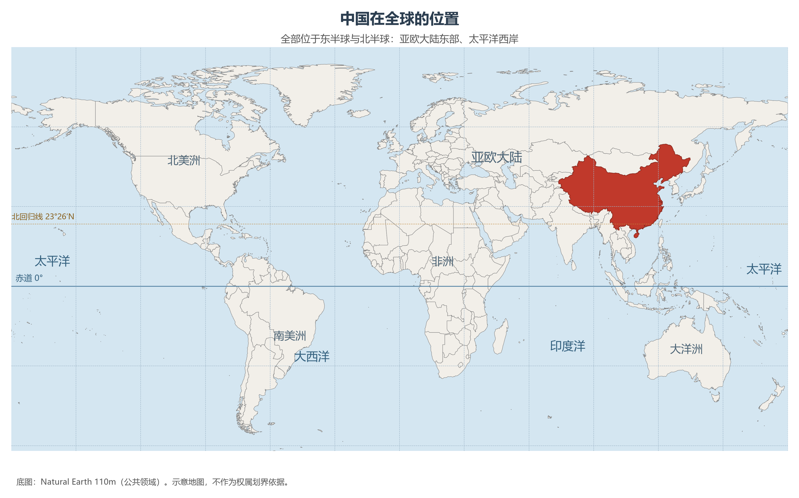
图 1-1 中国在全球的位置：亚欧大陆东部、太平洋西岸，全部位于东半球与北半球。
从全球几何坐标系审视，中国拥有极其明确的半球归属与空间跨度：
| 空间维度 | 指标参数 | 地理意义与自然效应 |
|---|---|---|
| 纬度范围 | 3°58′N — 53°33′N (跨 49°35′) | 跨越热带、亚热带、暖温带、中温带、寒温带及青藏高寒区，热量梯级连绵完整 |
| 经度范围 | 73°33′E — 135°05′E (跨 61°32′) | 东西日出时差逾 4 小时；自东向西呈现“森林—森林草原—典型草原—荒漠草原—荒漠”水分梯级 |
| 南北直线距离 | 约 5 500 km | 冬季南北温差超过 50 ℃，形成“南国繁花、北境冰封”的宏阔季相景观 |
| 东西直线距离 | 约 5 200 km | 构筑深厚的大陆防御纵深与横贯亚欧的大陆桥交通走廊 |
| 半球归属 | 北半球、东半球 | 坐落于全球陆地与人口最集中的核心半球 |
| 空间方位 | 起讫极点 | 经纬度位置 | 跨度量值 | 直线距离与宏观地貌效应 |
|---|---|---|---|---|
| 东西跨度 | 最西端帕米尔高原 ➔ 最东端黑瞎子岛 | 73°33′E ➔ 135°05′E | 跨经度 61°32′（横跨 5 个时区） | 直线约 5 200 km；东西时差 4 小时 06 分钟，自东向西降水与植被梯级递变 |
| 南北跨度 | 最南端曾母暗沙 ➔ 最北端漠河主航道 | 3°58′N ➔ 53°33′N | 跨纬度 49°35′（近 50 个纬度） | 直线约 5 500 km；冬季南北温差超 50 ℃，自南向北热量与农业熟制递更 |
海陆位置是塑造一国自然地理与人文演化最深刻的地缘环境要素。中国位于世界上最大的大陆——亚欧大陆的东南部与东部，东部与东南部濒临世界上最大的大洋——太平洋，西南更靠近印度洋。这种“海陆双向受力、大陆大洋交汇”的位置，在全球同纬度带中呈现出举世瞩目的地理独特性：
亚欧大陆比热容较小，吸热快、散热亦快；太平洋比热容巨大，温度变化极其平缓。这种悬殊的物理性质差异，导致冬夏两季大陆与大洋之间出现强烈而交替反转的巨大气压场： - 夏季：大陆剧烈受热，形成印度低压（亚洲低压）；太平洋副热带高压西伸北进，来自低纬度热带海洋的偏南暖湿气流（东南季风与西南季风）长驱直入，为中国东部广大地区带来充沛的降水与高温环境，形成显著的“雨热同期”特征。 - 冬季：西伯利亚—蒙古高原急剧冷却，形成强盛的蒙古—西伯利亚冷高压；海洋相对温暖气压较低，干冷强劲的偏北季风呼啸南下，造成全国普遍降温与严寒干燥，冬季气温显著低于同纬度世界其他地区。
若将目光投向全球纬度坐标系，会发现一个令人震撼的对比现象： 在北纬 15° 至 30° 的副热带纬度带上，由于常年受副热带高气压带或东北信风控制，下沉气流主导，降水极度稀少，地球表面几乎被连绵数千公里的热带与亚热带荒漠所覆盖——北非的撒哈拉大沙漠、西亚的阿拉伯半岛沙漠、南亚的塔尔沙漠以及北美的索诺兰沙漠均横亘于此，被称为地球的“副热带干旱绝望带”。
然而，当北纬 30° 纬线穿过中国南方时，地表景观却发生了戏剧性的彻底逆转：长江中下游平原、四川盆地、江南丘陵呈现出一望无际的水网稻田、茂密的亚热带常绿阔叶林和繁华的城镇村落。正是因为中国东临太平洋的海陆配置，叠加青藏高原的隆升对西风带的阻挡与动力分流，彻底打破了行星风系控制下的下沉干热气流，代之以强盛丰沛的季风环流系统。中国东部因而成为全球北回归线荒漠带上绝无仅有的“回归绿洲与鱼米之乡”。
海陆兼备是中国作为世界大国的顶层地貌底色： - 陆向腹地：向西深入亚欧大陆心脏，与 14 个陆上邻国接壤，拥有广袤的盆地、高原与草原。从两千年前汉唐张骞“凿空西域”、丝绸之路商队驼铃，到今天的“丝绸之路经济带”与中欧班列，构筑了面向大陆腹地开放的大后方与大陆桥战略纽带。 - 海向门户：向东拥有长达 1.8 万 km 的大陆海岸线与逾 1.4 万 km 的岛屿海岸线，坐拥四大海域与环太平洋黄金航道，构筑了近代以来融入全球化浪潮、发展外向型经济与建设“21 世纪海上丝绸之路”的前沿舞台。
中国领土的四至点，是国家主权空间的地理界桩，也是自然生态与人文历史沉淀最为深厚的国门地标。
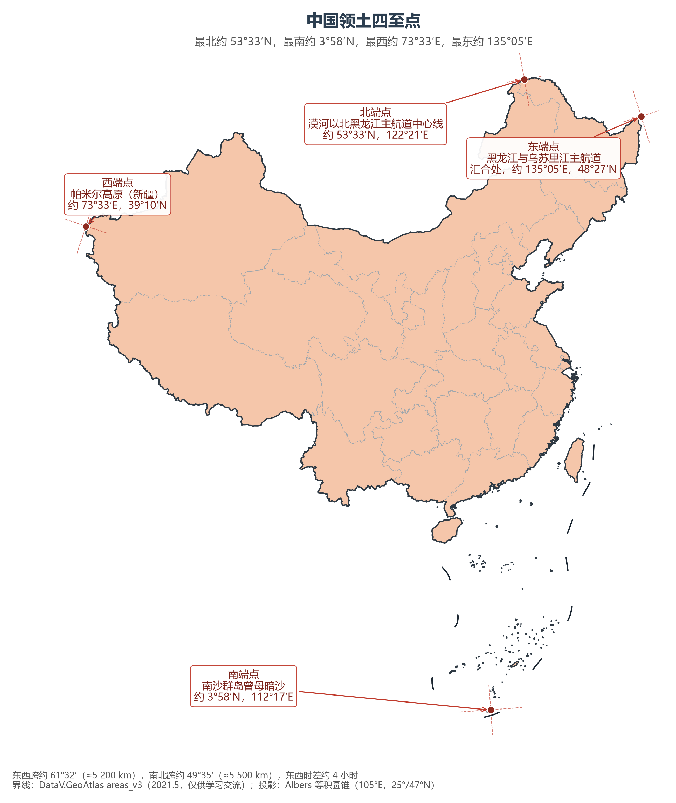
图 1-2 中国领土四至点：四个端点的位置与坐标，以及国土的东西、南北跨度。
| 端点方位 | 标志地点 | 精确经纬度 | 气候水文特征 | 地缘与交通纽带 |
|---|---|---|---|---|
| 最北端 | 黑龙江省漠河市乌苏里浅滩北红村以北 | 53°33′30″N，122°20′40″E | 寒温带大陆季风气候，极端低温曾达 −53.0 ℃，夏至白夜 | 中俄界江界流水文监测，北极林区生态屏障 |
| 最南端 | 海南省三沙市南沙区曾母暗沙 | 3°58′00″N，112°17′00″E | 热带赤道海洋性气候，终年水温 28 ℃，最浅水深 −17.5 m | 扼守马六甲海峡至南海国际航道东口咽喉 |
| 最东端 | 黑龙江省抚远市黑瞎子岛两江汇流处 | 48°27′00″N，135°05′00″E | 中温带季风气候，三江平原湿地，夏至日凌晨 3 点日出 | 中俄“一岛两国”生态保护与国际边境合作区 |
| 最西端 | 新疆乌恰县吉根乡西帕米尔高原 | 39°15′00″N，73°33′00″E | 高原大陆干旱气候，海拔 4 000 m 以上高寒缺氧，夏夜 22:30 日落 | 丝路葱岭古道，伊尔克什坦口岸西联中亚五国 |
经度跨逾 61 个纬度，不仅是一个抽象的几何数字，它直接深刻影响着一个超大国家的日常生活、交通指挥与经济清算。
地球自西向东自转，每 24 小时旋转 360°，即经度每差 15°，地方平太阳时相差 1 小时；经度每差 1°，时间相差 4 分钟。 中国最东端（135°05′E）与最西端（73°33′E）之间经度相差 61°32′，这意味着国土两端的地方平太阳时差达到 4 小时 06 分钟。当抚远的渔民在乌苏里江面沐浴清晨旭日捕鱼时，帕米尔高原的柯尔克孜族牧民头顶依然是繁星闪烁的深夜。
中国目前统一采用北京时间，即东八区（120°E）的标准区时（UTC+8）。 值得特别指出的是关于“北京时间”的几项地理常识： - 并非北京本地的地方时：北京市中心经度约为 116°24′E，其地方平太阳时比北京时间（120°E）实际上慢了约 14 分 24 秒。 - 产生与发播地不在北京：北京时间的产生和发播机构是位于陕西省西安市临潼区与蒲城县的中国科学院国家授时中心（NTSC）。这里地处中国内陆腹地（距泾阳县的“中华人民共和国大地原点”咫尺之遥），广播信号覆盖全国的几何路径最为均衡，建有高精度的铯原子钟与氢钟守时系统，通过长波（BPC）、短波（BPM）、卫星通信与地面光纤向全国提供毫秒级甚至纳秒级授时基准。
| 授时系统层次 | 核心设施与承载主体 | 信号制式与传输链路 | 关键功能与保障场景 |
|---|---|---|---|
| 国家授时基准 | 中国科学院国家授时中心（陕西临潼/蒲城） | 高精度铯原子钟组与氢原子钟（与国际 UTC 比对） | 国家标准时间（北京时间）的产生源头与物理基准 |
| 无线电长短波台 | 蒲城短波台（BPM）、商丘长波台（BPC） | 高频短波、低频长波无线电广播 | 远洋航海、野外地质勘探、无线电电波钟表对时 |
| 空间卫星授时 | 北斗三号全球卫星导航系统（BDS） | B1C / B2a 等导航信号星地双向授时 | 空间纳秒级同步，支撑高铁控制、电网相量与国防通信 |
| 地面光纤网络 | 国家重大科技基础设施“高精度地基授时系统” | 精密时间协议（PTP）与网络时间协议（NTP） | 毫秒/微秒级网络对齐，保障银行跨行清算与 5G 通信 |
实行全国统一时制是大一统治理不可或缺的制度基础设施：庞大的国家高铁网（数十秒级车次追踪）、民航空中交通管制、数以万亿计的证券与银行跨行资金清算，以及全国统一的防空战备系统，都必须在完全同步的绝对时钟下运行。
然而，这种钟表时间（Clock Time）的全国统一，必然与各地日出而作、日落而息的自然太阳时间（Solar Time）产生空间偏离： - 新疆的“时差适应”：乌鲁木齐经度约为 87°36′E，太阳正午比北京时间晚约 2 小时 10 分钟；喀什更晚近 3 小时。因此，新疆各族群众与企事业单位在遵守北京时间纪时的同时，形成了独特的作息规律：机关作息通常为上午 10:00 上班、14:00 午餐、下午 16:00 上班、20:00 下班；民间亦长期参照“新疆时间”（UTC+6，比北京时间慢 2 小时）安排农牧耕作与起居。 - 东北的三江平原：当地经度超过 130°E，冬季下午 15 时 30 分前后天色即已全黑，早晨 6 时早已大亮，当地居民起居普遍早睡早起，形成了顺应极北经纬律动的生产节奏。
把中国置于世界地理的宏阔坐标系中横向审视，可以提炼出三条决定性的地缘禀赋规律：
疆域与边界是一国国家主权存在的物理容器，也是国家安全与对外互动的地理界面。中国拥有约 960 万 km² 的陆地国土面积，居世界第三位；同时拥有总长达 2.28 万 km 的陆地国界线，与 14 个国家在陆上紧密接壤，并与 6 个国家隔海相望。这构成了当今世界上规模最庞大、地缘环境最复杂、文明形态最多元的邻国网络体系。
根据现代国际法《国家权利和义务宣言草案》及普遍公认的法理共识，一国的国家领土（Territory）由领陆、领水（内水与领海）、领空与底土四部分不可分割地共同构成： - 领陆与内水：中国通常所称的“约 960 万 km²”（自然资源部官方规范口径为约 960 万平方公里），是指中华人民共和国实际行使管辖与主张完整的陆地国土面积，其包含了全部陆地领陆以及河流、湖泊等内陆水域。中国陆地国土面积约占世界陆地总面积（1.49 亿 km²）的 6.44%，占亚洲陆地总面积（4 458 万 km²）的 21.5%。 - 管辖海域：在约 960 万 km² 陆地国土之外，根据《联合国海洋法公约》及国内相关法律，中国还主张约 300 万 km² 的管辖海域（包括内水、领海、毗连区、专属经济区及大陆架，详见 1.3 节）。若将陆海空间一并计入，中国的国土与管辖空间接近 1 260 万 km²。
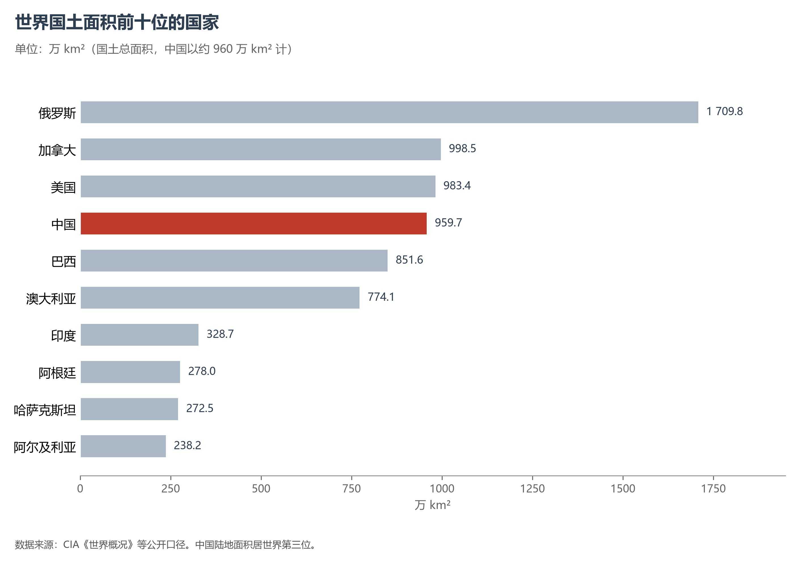
图 1-3 世界国土面积前十位的国家：中国约 960 万 km²，居世界第三。
在国际各类地理百科全书、统计年鉴或地图册中，中国与美国在国土面积排名上常出现“第三”或“第四”的表述差异。这一现象源于各国在统计国土面积时采用的水域界定标准不同： - 俄罗斯（约 1 709.8 万 km²）：毫无争议的世界第一大国，面积相当于中国与澳大利亚的总和。 - 加拿大（约 998.5 万 km²）：世界第二大国。但加拿大全境拥有极其广袤的冰蚀湖群（大熊湖、大奴湖、温尼伯湖及五大湖加拿大水域等），其淡水水域面积高达 89.1 万 km²，几乎占其国土总面积的 9%。若仅计算纯陆地领陆面积，加拿大实为 909.4 万 km²，显著小于中国。 - 中国（约 960 万 km²）：官方统计口径包含陆地与内陆水域，未计入 12 海里领海及沿海水域面积。 - 美国（937 万至 983.4 万 km²）：美国在不同机构公布的数据跨度极大。例如美国中央情报局（CIA）《世界概况》在 1989 年前列出的美国面积为 937.3 万 km²（仅计本土与阿拉斯加、夏威夷的领陆及内陆湖河）；1990 年代起，CIA 陆续将五大湖美国管辖水域（约 15.6 万 km²）以及沿海领水（Coastal Waters，沿海港湾海峡）和 12 海里领海水域（约 30 余万 km²）全部计入其国土面积，使其数字骤增至 983.4 万 km²，从而在部分西方图表中排至中国之前。若遵循同等口径（仅计领陆与内陆水域），中国面积稳居世界第三位。
| 排名 | 国家 | 官方/通行面积 (万 km²) | 领陆面积 (万 km²) | 水域占比 | 相当于中国之比 | 空间地缘特征 |
|---|---|---|---|---|---|---|
| 1 | 俄罗斯 | 1 709.8 | 1 637.8 | 4.2% | 1.78 倍 | 横跨欧亚两大洲，北冰洋岸线漫长，东西跨 11 个时区 |
| 2 | 加拿大 | 998.5 | 909.4 | 8.9% | 1.04 倍 | 湖泊淡水水域面积世界第一，北部极地严寒 |
| 3 | 中国 | 约 960 | 约 933 | 约 2.8% | 1.00 | 海陆兼备，温带与亚热带季风区广阔，自然阶梯显著 |
| 4 | 美国 | 983.4 (含领海口径) | 914.7 | 7.0% | 1.02 倍 | 东西濒临两洋，五大湖水系庞大，本土兼具平原与高原 |
| 5 | 巴西 | 851.6 | 846.0 | 0.7% | 0.89 倍 | 南美第一大国，坐拥亚马孙热带雨林与巴西高原 |
| 6 | 澳大利亚 | 774.1 | 768.2 | 0.8% | 0.81 倍 | 独占一个大陆，内陆大部为热带干旱沙漠与半荒漠 |
| 7 | 印度 | 328.7 | 297.3 | 9.5% | 0.34 倍 | 南亚次大陆主体，耕地平原广阔，人口总量世界第一 |
中国拥有长达 2.28 万 km 的陆地国界线，这一长度在全世界所有国家中位居第一，超过了俄罗斯（约 2.02 万 km）和巴西（约 1.47 万 km），是美国陆界长度（约 1.20 万 km）的近两倍。
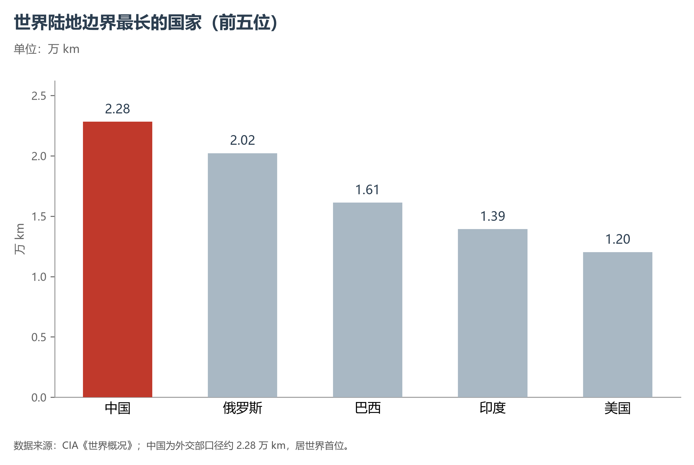
图 1-6 世界陆地边界最长的国家（前五位）：中国以约 2.28 万 km 居首。
在这条极其漫长的边界线上，中国与 14 个国家陆地接壤（与俄罗斯并列全球接壤邻国最多的国家）。若沿我国国界自东北起按逆时针方向环行巡视，依次为：朝鲜、俄罗斯、蒙古、哈萨克斯坦、吉尔吉斯斯坦、塔吉克斯坦、阿富汗、巴基斯坦、印度、尼泊尔、不丹、缅甸、老挝、越南。这十四个邻国按地缘区位可划分为四大地缘板块：
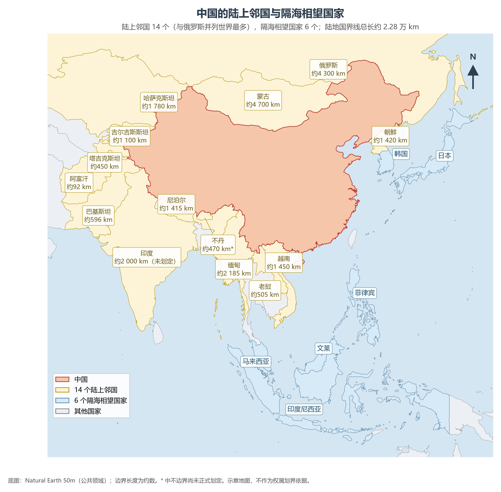
图 1-4 中国的陆上邻国与隔海相望国家：14 个陆上邻国（黄）与 6 个隔海相望国家（蓝）。
| 地缘板块 | 涵盖邻国名单 | 接壤边界总长 | 天然地理屏障与依托 | 战略纵深与开放方向 |
|---|---|---|---|---|
| 东北亚板块 | 朝鲜、俄罗斯（东段） | 约 5 720 km | 鸭绿江、图们江、黑龙江、乌苏里江、长白山天池 | 东北边疆安全屏障，远东出海口对接与资源经济互补 |
| 北方草原板块 | 蒙古 | 4 700 km（全国最长陆界） | 阿尔泰山分水岭、戈壁荒漠草原 | 中蒙俄经济走廊中通道，矿产进口与过境铁路物流 |
| 中亚内陆板块 | 哈萨克斯坦、吉尔吉斯斯坦、塔吉克斯坦 | 约 3 330 km | 准噶尔阿拉套山、天山天险、帕米尔高原 | 新亚欧大陆桥核心段，中欧班列西向大动脉 |
| 南亚次大陆板块 | 阿富汗、巴基斯坦、印度、尼泊尔、不丹 | 约 4 580 km | 喀喇昆仑山脉、喜马拉雅山脉、瓦罕走廊 | 中巴经济走廊与面向南亚次大陆的高原开放门户 |
| 中南半岛板块 | 缅甸、老挝、越南 | 约 4 140 km | 横断山脉纵向岭谷、高黎贡山、红河水系 | 中老铁路、西部陆海新通道与中国—东盟自贸区协同 |
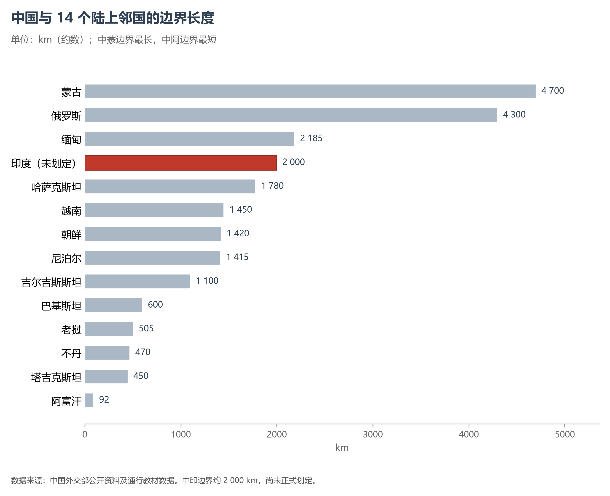
图 1-5 中国与 14 个陆上邻国的边界长度：中蒙最长，中阿最短；中印、中不边界尚未正式划定。
| 邻国 | 首都 | 面积 (万 km²) | 人口 (约) | 边界长度 (km) | 接壤省区 | 边界天然地理依托 | 条约签署与划界现状 |
|---|---|---|---|---|---|---|---|
| 朝鲜 | 平壤 | 12.3 | 2 600 万 | 1 420 | 辽宁、吉林 | 鸭绿江、图们江、长白山天池 | 1962 年《中朝边界条约》，已划定 |
| 俄罗斯 | 莫斯科 | 1 709.8 | 1.44 亿 | 4 300 | 黑龙江、吉林、内蒙古、新疆 | 黑龙江、乌苏里江、额尔古纳河、阿尔泰山脉 | 1991/1994/2004 年系列协定，全线勘定立碑 |
| 蒙古 | 乌兰巴托 | 156.7 | 350 万 | 4 700 | 内蒙古、甘肃、新疆 | 阿尔泰山分水岭、戈壁沙漠、达里冈爱高地 | 1962 年《中蒙边界条约》，已划定（最长陆界） |
| 哈萨克斯坦 | 阿斯塔纳 | 272.5 | 2 000 万 | 1 780 | 新疆 | 准噶尔阿拉套山、天山汗腾格里峰 | 1994/1997/1998 年协定，全线勘定立碑 |
| 吉尔吉斯斯坦 | 比什凯克 | 20.0 | 700 万 | 1 100 | 新疆 | 天山南脉、帕米尔北缘、托木尔峰 | 1996/1999 年协定，全线勘定立碑 |
| 塔吉克斯坦 | 杜尚别 | 14.3 | 1 000 万 | 约 450 | 新疆 | 萨雷阔勒岭、帕米尔高原分水岭 | 1999/2002 年协定，2011 年勘界结束 |
| 阿富汗 | 喀布尔 | 65.2 | 4 000 万 | 92 | 新疆 | 瓦罕走廊东端、帕米尔高原马尔坎苏河谷 | 1963 年《中阿边界条约》，已划定（最短陆界） |
| 巴基斯坦 | 伊斯兰堡 | 88.2 | 2.4 亿 | 约 600 | 新疆 | 喀喇昆仑山脉分水岭、乔戈里峰 (K2) | 1963 年《中巴边界协定》，已划定 |
| 印度 | 新德里 | 328.7 | 14.3 亿 | 约 2 000 | 新疆、西藏 | 喜马拉雅山脉主脊、喀喇昆仑山脉 | 未正式划定，存在传统习惯线与 LAC |
| 尼泊尔 | 加德满都 | 14.7 | 3 000 万 | 1 415 | 西藏 | 喜马拉雅山脉主脊、珠穆朗玛峰、希夏邦马峰 | 1961 年《中尼边界条约》，已划定并联合测绘 |
| 不丹 | 廷布 | 3.8 | 78 万 | 约 470 | 西藏 | 喜马拉雅山脉南坡山脊 | 未建交与正式划定，签署“三步走”备忘录 |
| 缅甸 | 内比都 | 67.7 | 5 400 万 | 2 185 | 西藏、云南 | 高黎贡山、怒山、瑞丽江、打洛江 | 1960 年《中缅边界条约》，新中国首个陆界条约 |
| 老挝 | 万象 | 23.7 | 750 万 | 505 | 云南 | 哀牢山余脉、湄公河支流分水岭 | 1991 年《中老边界条约》，已划定 |
| 越南 | 河内 | 33.0 | 1.0 亿 | 约 1 450 | 云南、广西 | 北仑河、归春河（德天瀑布）、红河、十万大山 | 1999 年签约，2008 年全线勘界立碑 |
近代以前，中国传统的天下观与封建朝贡体系下，边疆往往表现为宽窄不一的“边陲羁縻带”或“蕃篱”，缺乏现代国际法意义上经双边条约严格界定、由界桩清晰标示的线性边界。鸦片战争后，西方列强强迫腐朽的清政府签订了《瑷珲条约》《北京条约》《勘分西北界约记》等一系列不平等条约，强行割占我国东北与西北 150 余万平方公里领土，并留下了诸如“麦克马洪线”等严重危害地区稳定的历史沉疴。
新中国成立后，彻底废除了帝国主义在华特权，确立了独立自主的和平外交方针。在“和平共处五项原则”指引下，中国政府本着尊重历史、互谅互让、友好协商的原则，用半个多世纪的时间，稳步解决了世界上面积最大、地形最险峻、地缘最复杂的陆地边界划定工作：
截至目前，在中国的 14 个陆上邻国中，已有 12 个邻国通过双边条约彻底划定并勘实了边界（划定率达 86%），仅剩中印、中不边界尚未正式签约： - 中印边界（约 2 000 km）：分为东段、中段和西段三部分，历史上从未正式划定。印度独立后单方面继承了英国殖民当局非法的“麦克马洪线”（东段），并在西段与中段侵占我国领土，导致了 1962 年中印边境自卫反击战。目前双方以历史形成的“实际控制线”（LAC）为基准维持接触，建立了边境事务磋商和协调工作机制（WMCC），保持了总体和平态势。 - 中不边界（约 470 km）：两国边界长约 470 km，尚未建交。中不两国历经数十轮边界会谈，于 2021 年签署了关于加快中不边界谈判“三步走”路线图的谅解备忘录，划界进程正保持积极稳健的推进势头。
在漫长的海岸线之外，中国与 6 个国家隔海相望，自北向南依次为：韩国、日本、菲律宾、马来西亚、文莱、印度尼西亚。海陆相接处没有天然界墙，广袤的边缘海将这些国家与中国紧紧连结在一起：
| 隔海相望国 | 首都 | 国土面积 (万 km²) | 人口 (约) | 对应濒临海域 | 关键地理交汇点与地缘议题 |
|---|---|---|---|---|---|
| 韩国 | 首尔 | 10.0 | 5 100 万 | 黄海、东海北部 | 中韩渔业协定（2001）；黄海专属经济区划界谈判；苏岩礁水下暗礁性质 |
| 日本 | 东京 | 37.8 | 1.24 亿 | 东海 | 钓鱼岛及其附属岛屿主权归属；东海大陆架自然延伸（冲绳海槽）vs 日方“中间线”主张 |
| 菲律宾 | 马尼拉 | 30.0 | 1.1 亿 | 南海（吕宋海峡、南海中部） | 黄岩岛主权与领海；南沙部分岛礁争议（仁爱礁、中业岛）；南海仲裁案非法裁决抵制 |
| 马来西亚 | 吉隆坡 | 33.0 | 3 400 万 | 南海（南沙群岛南部） | 南沙南部陆坡深水油气勘探；曾母暗沙邻近海域维权巡航；双边联合执法与合作 |
| 文莱 | 斯里巴加湾市 | 0.58 | 45 万 | 南海（南沙群岛东南） | 沿海 200 海里重叠区；“海上丝绸之路”联合港口物流与石化合作（恒逸石化基地） |
| 印度尼西亚 | 雅加达 | 191.4 | 2.75 亿 | 南海（纳土纳群岛以北海域） | 中国南海九段线传统捕鱼权与印尼纳土纳群岛专属经济区北缘重叠协调；雅万高铁合作 |
拥有世界上最长的陆地边界线与最多的陆上邻国，赋予了中国无可替代的地缘经济中枢功能。边境不再是封闭戒备的堑壕，而已蜕变演进为支撑国家双循环战略的开放大动脉：
| 国际骨干通道 | 核心出境口岸 | 境内货源腹地 | 境外通达枢纽 | 主导运输方式与战略功能 |
|---|---|---|---|---|
| 中欧班列西通道 | 阿拉山口、霍尔果斯 | 长三角、珠三角、成渝及全国货源 | 哈萨克斯坦 ➔ 俄罗斯 ➔ 波兰 ➔ 德国杜伊斯堡 | 双向跨国集装箱直达班列，承担全国过半中欧班列运量 |
| 中欧班列中通道 | 二连浩特 | 京津冀、华北、华中等区域 | 蒙古乌兰巴托 ➔ 俄罗斯西伯利亚铁路线 | 经蒙古国横贯亚欧大陆直通莫斯科的最短陆路干线 |
| 中欧班列东通道 | 满洲里、同江、绥芬河 | 东北三省、环渤海及沿海制造业带 | 俄罗斯后贝加尔斯克 ➔ 欧洲及远东港口 | 宽轨与准轨换装枢纽，大宗林木、煤炭与机电跨境运输 |
| 西南陆海新通道 | 磨憨、友谊关、红其拉甫 | 西南成渝、北部湾港、西北内陆 | 老挝万象、越南河内、巴基斯坦瓜达尔港 | 铁海联运与国际铁路联运，中老铁路贯通东南亚腹地 |
中国不仅是一个陆地大国，也是一个拥有漫长海岸线与广袤管辖海域的海洋大国。大陆边缘自北向南弧形环抱着四大海域，大陆海岸线长达 1.8 万余 km，海岛海岸线长达 1.4 万余 km，分布着 1.1 万余个海岛礁。在国际海洋法的新秩序下，中国主张管辖的海域面积达 约 300 万 km²。认识这片深蓝国土的自然禀赋、法律属性与地缘空间，是理解中国从“海陆统筹”迈向“海洋强国”的关键基点。
中国大陆以东、以南濒临的海面，自北而南依次为渤海、黄海、东海、南海，总面积约 470 万 km²。这四片海域在海底地形、地质构造、水文气候与生态环境上呈现出由浅入深、由陆架向大洋过渡的显著阶梯序列：
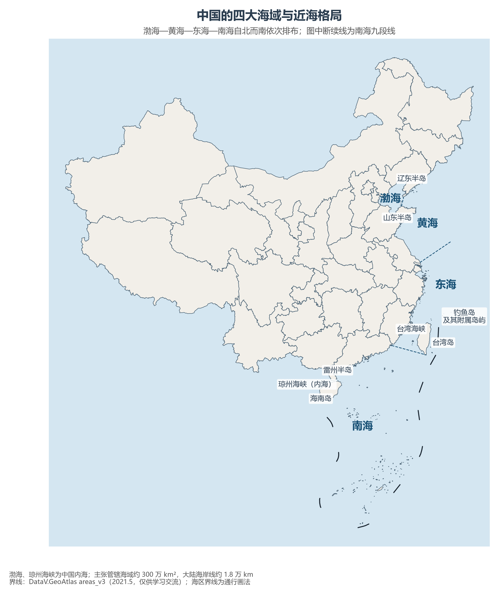
图 1-7 中国的四大海域与近海格局：图中断续线为南海九段线，三大海区界线自北而南依次标注。
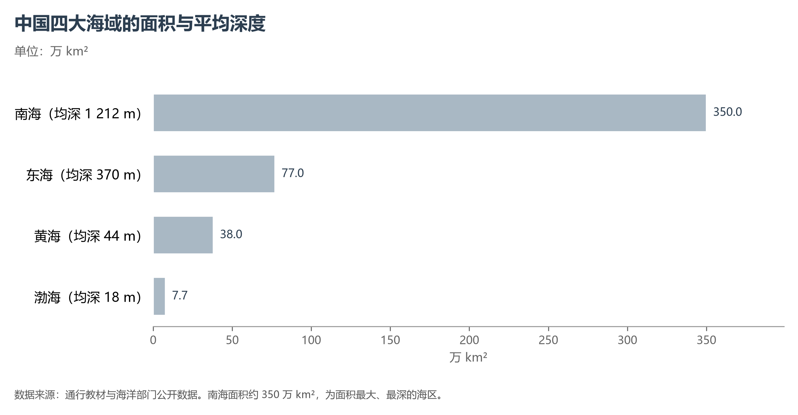
图 1-8 中国四大海域的面积与平均深度：南海一区即占四大海域总面积的四分之三。
| 海域 | 面积 (万 km²) | 平均深度 | 最大深度 | 陆架占比 | 主要入海径流 | 核心地缘与生态特征 |
|---|---|---|---|---|---|---|
| 渤海 | 7.7 | 18 m | 约 70 m | 100% | 黄河、海河、辽河、滦河 | 中国唯一完整内海；环渤海港口群；冬季辽东湾结冰 |
| 黄海 | 38.0 | 44 m | 约 140 m | 100% | 淮河、鸭绿江、大洋河 | 苏北辐射沙脊群世界自然遗产；黄海冷水团 |
| 东海 | 77.0 | 370 m | 2 719 m | 约 66% | 长江、钱塘江、闽江、瓯江 | 宽阔大陆架与冲绳海槽天然阻隔；舟山渔场 |
| 南海 | 约 350.0 | 1 212 m | 约 5 559 m | 约 25% | 珠江、红河、湄公河 | 面积最大最深；四大群岛珊瑚礁；油气水合物富集；国际航线咽喉 |
| 海域分界线 | 毗邻北侧海区 | 毗邻南侧海区 | 法定界标端点连线 | 走向与水文分界特征 |
|---|---|---|---|---|
| 渤海—黄海分界线 | 渤海 | 黄海 | 辽宁大连老铁山角 ── 山东蓬莱角 | 沿庙岛群岛水道，分隔半封闭内海与陆架浅海 |
| 黄海—东海分界线 | 黄海 | 东海 | 江苏长江口北岸启东嘴 ── 韩国济州岛西南端 | 分隔古黄河冲积泥沙区与长江冲淡水外延区 |
| 东海—南海分界线 | 东海 | 南海 | 广东南澳岛 ── 台湾岛南端鹅銮鼻 | 横贯台湾海峡南口，东海浅陆架向南海热带深海盆过渡 |
中国近海的轮廓，由三大半岛与三大海峡相互锁扣而成，构成了天然的国防屏蔽与航运锁钥：
内海在国际法上享有完全等同于陆地领土的主权地位，未经沿海国允许，任何外国军舰及非民用船舶不得进入： - 渤海：辽东半岛的老铁山角与山东半岛的蓬莱角之间，分布着庙岛群岛（长山列岛），各岛屿间水道宽度均在 12 海里领海以内，自清代与北洋水师时期即被公认为中国之内海，1958 年中国政府正式对外声明其内海法律地位。 - 琼州海峡：位于雷州半岛与海南岛之间，东西长约 80 km，南北最窄处仅 19.4 km（平均宽约 29.5 km）。1964 年 6 月 5 日，国务院正式批准将琼州海峡划定为我国定性内水，外国船舶非经批准不得通行。
1982 年《联合国海洋法公约》（UNCLOS，我国于 1996 年正式批准）与中国国内法律法规（1992 年《领海及毗连区法》、1998 年《专属经济区和大陆架法》），为维护国家海洋权益确立了由海岸向大洋层层推进的空间法理体系：
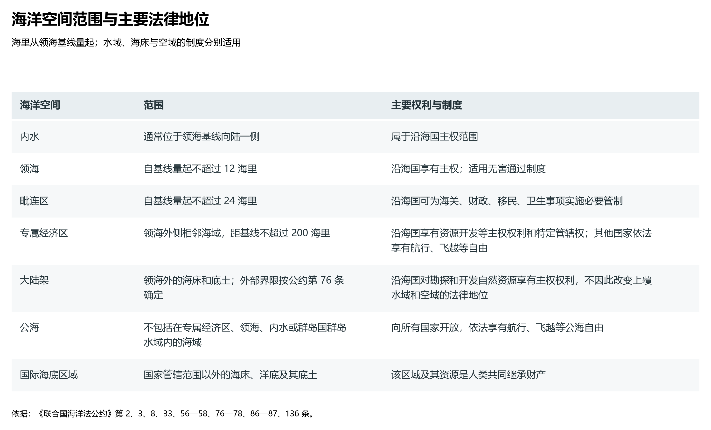
图 1-10 海洋权益空间划分示意图：由陆及海的空间分层、垂直维度权能及法律地位对照。
领海基线是测算领海、毗连区、专属经济区和大陆架宽度的起算线： - 基线方法：国际法上分为正常基线法（沿海岸低潮线）与直线基线法（在海岸曲折或邻近岛屿的适当地点划定基点，以直线相连）。中国海岸曲折且岛屿密集，依法采用直线基线法。 - 我国历次公告： - 1958 年 9 月 4 日，中国政府发表《关于领海的声明》，首次正式宣告中国领海宽度为 12 海里（约 22.2 km）。 - 1996 年 5 月 15 日，公布第一批领海基线：涵盖自山东半岛成山头向南至海南岛西南部的大陆沿海部分，以及西沙群岛的领海基线，共设 77 个基点。 - 2012 年 9 月 10 日，针对日本非法“购岛”行径，中国政府依法公布《关于钓鱼岛及其附属岛屿领海基线的声明》，划定了钓鱼岛、黄尾屿、赤尾屿等 17 个基点的直线领海基线。 - 2024 年 3 月 1 日，中国政府依法公布北部湾北部领海基线，共设置 7 个基点，进一步完善了南部海疆领海基线闭合网络。
| 空间层级 | 起算范围 | 上覆空域地位 | 水体与生物资源权属 | 海床底土与矿产权属 | 航行与飞越权利 |
|---|---|---|---|---|---|
| 内水 | 领海基线向陆一侧海域 | 国家领空（完全主权） | 领水水体（完全主权） | 国家领土底土（完全主权） | 未经批准，外国军民船舶与航空器均不得进入 |
| 领海 | 自基线向外至 12 海里 | 国家领空（完全主权） | 领海水体（完全主权） | 领海海床及底土（完全主权） | 外国非军用船舶享无害通过权；航空器未经许可不得飞越 |
| 毗连区 | 领海外侧向外至 24 海里 | 国际空域（飞越自由） | 专属经济区管制水域 | 专属经济区海床 | 享有正常航行与飞越自由；沿海国行使海关/财政/移民/卫生管制权 |
| 专属经济区 | 自基线向外至 200 海里 | 国际空域（飞越自由） | 勘探、开发、养护生物资源主权权利 | 专属经济区自然资源开发权 | 享有公海自由航行与上空飞越自由；沿海国对人工岛礁建设行使管辖权 |
| 大陆架 | 自然延伸，至 200~350 海里 | 依上覆水体法律地位 | 依专属经济区或公海地位 | 勘探开采海床底土油气矿产主权权利 | 上覆水体不改变公海或专属经济区法律地位；铺设海底电缆管道须经同意 |
以此国际法架构量算，中国主张管辖的海洋面积达 约 300 万 km²，其中内水与领海面积约 38 万 km²，专属经济区与大陆架主张海域逾 260 万 km²。
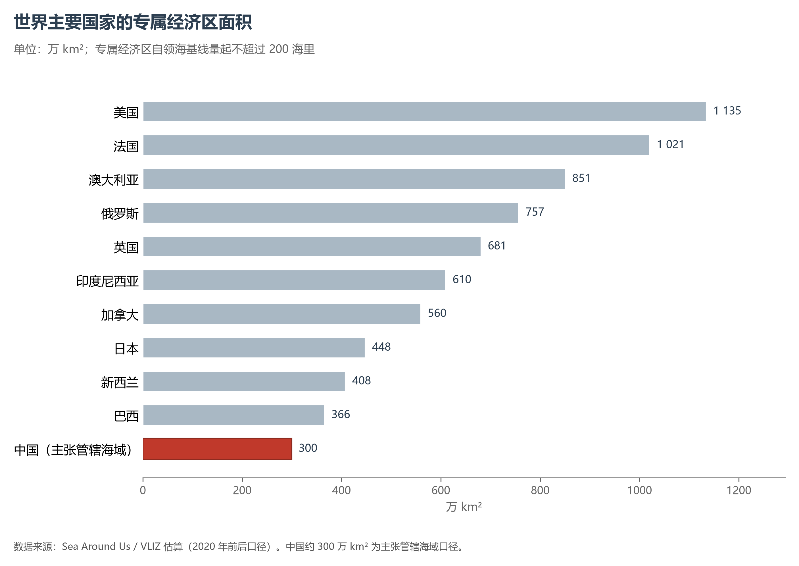
图 1-9 世界主要国家的专属经济区面积：美国的专属经济区超过其陆地面积，中国 300 万 km² 为主张管辖海域口径。
中国海域岛屿星罗棋布。依据自然资源部《海岛统计调查公报》，我国海域拥有面积在 500 m² 以上的海岛 7 300 多个，若计入 500 m² 以下的明礁与暗礁，总数达 1.1 万余个，海岛陆地总面积近 8 万 km²：
钓鱼岛及其附属岛屿位于台湾岛东北约 190 km 处，地处东经 123°20′ 至 124°40′，北纬 25°40′ 至 26°00′ 之间，由钓鱼岛、黄尾屿、赤尾屿、南小岛、北小岛及若干暗礁组成，总面积约 5.69 km²。 - 地质构造：钓鱼岛诸岛坐落在东海大陆架边缘，其东南侧紧邻深达 2 000 m 以上的冲绳海槽，与琉球群岛在构造地层上截然分开，是台湾岛在东海陆架上的自然地质延伸。 - 历史法理：明初杨载出使琉球已有确切记载，明清两代册封使航海记录（如陈侃《使琉球录》、郭汝霖《重编使琉球录》）均明确将钓鱼岛、黄尾屿、赤尾屿标定在“中外之界”的中方管辖之内，早在明代即纳入海防防务范围。1895 年甲午战争末期，日本趁清政府战败之机秘密窃占；二战后依据《开罗宣言》和《波茨坦公告》，日本所窃取之中国领土必须全数归还。2012 年以来，中国海警编队依法在钓鱼岛领海内实行常态化维权巡航执法，坚定行使主权管辖。
南海是连接世界大洋的“祖宗海”。早在两千多年前的汉代，中国人民就通过海上丝绸之路在南海航行与劳作，称南海为“涨海”，将南海诸岛称作“崎头”；晋唐宋元时期，历代官方文献与《更路簿》详细记录了渔民世代前往西沙、南沙打鱼的固定航线与岛礁俗名：
在建设海洋强国的时代大潮中，中国 300 万 km² 管辖海域与 1.8 万 km 大陆海岸线正释放出巨大的战略能量： - 全球造船与港口第一大国：2024 年全国海洋生产总值突破 10.5 万亿元（占国内生产总值 GDP 比重约 7.8%）；全球集装箱吞吐量前十名港口中，中国常年独占七席（上海、宁波舟山、深圳、青岛、广州、天津等）；造船完工量、新接订单量与手持订单量连续十余年雄踞全球第一。 - 深海科学重大跃迁：“蛟龙”号、“深海勇士”号以及能够在马里亚纳海沟万米海底自由作业的“奋斗者”号全海深载人潜水器相继服役，中国深海科学勘探技术步入世界领跑方阵。 - 维权与合作双轨并行：坚持“主权属我、搁置争议、共同开发”战略构想，积极落实《南海各方行为宣言》（DOC），加速推进“南海行为准则”（COC）磋商，将南海建设成为和平之海、友谊之海、合作之海。
行政区划是国家权力在地理空间上的投影，是超大国家维系政令统一、组织公共治理、协调区域发展的空间骨架。截至 2024 年底，中国以 34 个省级行政区统摄 333 个地级单位、2 846 个县级单位，再通过 38 712 个乡级政权与派出机构落入每一片村庄与社区——法理上的三级体系、事实上的四级运转与直达基层的五级治理，共同构成了人类历史上规模最为庞大、运转最为精密、覆盖逾 14 亿人口的现代政区空间网络。理解这套体系的层级脉络与制度逻辑，是读懂全书所有自然、人口、经济与区域地理数据的总钥匙。
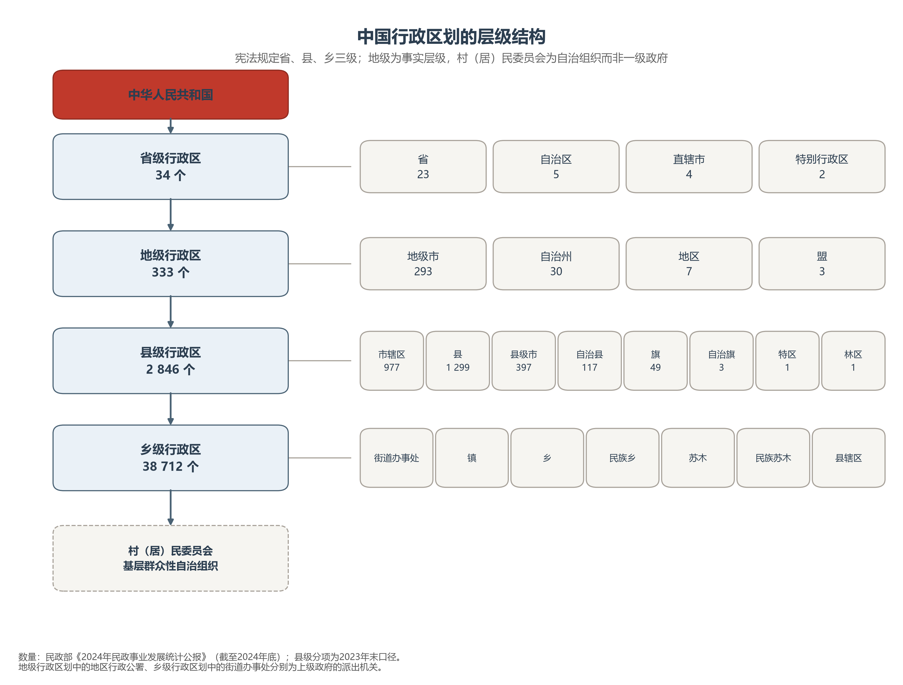
图 2-1 中国行政区划的层级结构：宪法确认省、县、乡三级；地级为事实层级，村（居）民委员会为自治组织。
现代中国行政区划的根本法律基石是《中华人民共和国宪法》第三十条与第三十一条：
就宪法条文的字面表述而言，中国的基础政区体系是标准的省—县—乡三级制。但在当代实际国家行政运转中，绝大多数区域却普遍运行着省—地（地级市）—县—乡四级制。三级与四级之间的这段制度张力，源于中国数千年大一统国家治理规模与管理幅度的必然妥协：
一个省级行政区若直接统辖数十乃至上百个县，管理幅度过宽，中央与省级政府难以及时体察下情与督导推进。因此，历代中央王朝往往在省与县之间设立监察或协调性质的“虚级”派出机构（汉之刺史、唐之观察使、宋之转运司、明清之分巡道/直隶州，详见 2.3 节）。
新中国成立后，省政府在各地设立地区行政公署（简称“地区行署”）。地区行署是省人民政府的派出机关，本身不设人民代表大会与政协委员会，不是一级法定政权，但代行管理若干县级政区的职能。
改革开放后，伴随工业化与商品经济发展，原有的城乡分割壁垒严重制约了中心城市对周边农村的辐射带动。1983 年起，国务院在全国范围全面推行“以市领导县”体制（地市合并、撤地设市）。中心城市（原省辖地级市）与周边地区行署合并，成立新的地级市，地级由虚转实，正式演变为主导地方经济社会发展的骨干层级。到 2024 年底，全国 333 个地级单位中，地级市已占 293 个（近 88%），传统意义上的地区行署仅存 7 个。
| 层级序号 | 法理体系（《宪法》第三十条规定） | 事实运转体系（当代治理四级实态） | 代表性政区形态与 2024 年底数量 | 核心治理功能与权力配置 |
|---|---|---|---|---|
| 第一级 | 省 / 自治区 / 直辖市 | 省级行政区 | 34 个（23 省、5 自治区、4 直辖市、2 特区） | 承接中央大政方针，行使省级经济规划与地方立法权 |
| 第二级 | (由省直接管辖县级，未单列层级) | 地级行政区（事实中枢层） | 333 个（293 地级市、30 自治州、7 地区、3 盟） | 统筹城乡“市管县”中枢，推进中心城市辐射与产业布局 |
| 第三级 | 县 / 自治县 / 市 | 县级行政区（基础基石层） | 2 846 个（1 299 县、977 区、397 县级市等） | “郡县治天下安”，行使基层综合行政与公共服务职能 |
| 第四级 | 乡 / 民族乡 / 镇 | 乡级行政区（政权末梢层） | 38 712 个（约 2.1 万镇、0.8 万乡、0.9 万街道） | 国家基层政权机关（乡镇）与城市基层派出机构（街道） |
| 自治基层 | (群众自治，非国家政权机关) | 基层群众性自治组织 | 约 60 万个（约 48 万村委会、12 万居委会） | 依据《宪法》第 111 条行使村（居）民自治与网格化治理 |
截至目前，全国共有 34 个省级行政区。作为中央直辖的一级政权单元，省级行政区依据宪法与法律划分为四种形态，各自承载着独特的宪制与空间治理功能：
| 类别形态 | 数量 | 成员名单 | 宪制特征与法定治理权能 |
|---|---|---|---|
| 省 | 23 | 河北、山西、辽宁、吉林、黑龙江、江苏、浙江、安徽、福建、江西、山东、河南、湖北、湖南、广东、海南、四川、贵州、云南、陕西、甘肃、青海、台湾 | 延续元明清行省制传统；实行普通地方行政制度；台湾省为中华人民共和国不可分割的神圣领土 |
| 直辖市 | 4 | 北京市（首都）、天津市、上海市、重庆市 | 国务院直接管辖的超大中心城市；享有副省级或更高政治经济管理权限；统筹大都市区与广域腹地一体化治理 |
| 自治区 | 5 | 内蒙古（1947）、新疆（1955）、广西（1958）、宁夏（1958）、西藏（1965） | 落实民族区域自治制度；由实行区域自治的民族人员担任政府行政首长；依法行使广泛自治权与单行条例立法权 |
| 特别行政区 | 2 | 香港特别行政区（1997）、澳门特别行政区（1999） | 依据《宪法》第三十一条与各自《基本法》设立；实行“一国两制”；享有行政管理权、立法权、独立司法权与终审权 |
民族区域自治制度是我国的一项基本政治制度。在行政区划地理上，它并非仅体现在 5 个自治区，而是形成了一个自上而下完整的三级空间矩阵： - 自治区（省级，5 个）：内蒙古、新疆、广西、宁夏、西藏； - 自治州（地级，30 个）：广泛分布于西部 9 个省区（云南 8 个、青海 6 个、新疆 5 个、四川 3 个、贵州 3 个、甘肃 2 个、湖北 1 个、吉林 1 个、湖南 1 个）； - 自治县与自治旗（县级，120 个）：包括 117 个自治县与内蒙古的 3 个自治旗（鄂伦春、鄂温克、莫力达瓦达斡尔族自治旗）。 以上三级共 155 个民族自治地方。民族自治地方的自治机关为该地方的人民代表大会和人民政府，其行政长官依法由实行区域自治的民族的公民担任。在乡级层面还设有约 950 个民族乡，但民族乡属于普通乡级行政区，不属于法定“民族自治地方”范畴。
地级行政区共 333 个，是省与县之间的中枢传动带。333 个单位按形态分为四类：
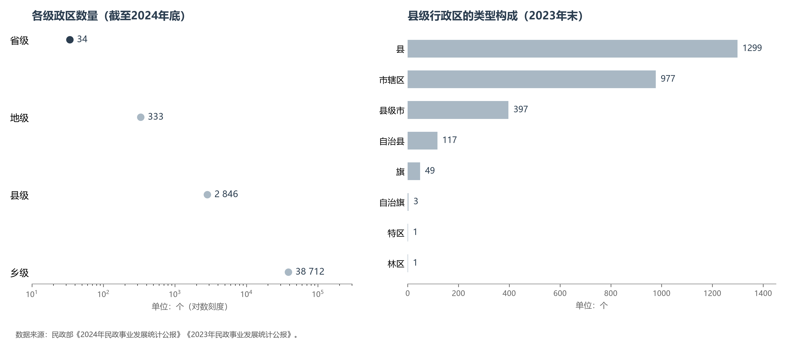
图 2-2 各级政区数量与县级构成：左为四级总量（对数刻度），右为县级单位的类型构成。
地级市是当代地级层面的绝对骨干，其典型特征是“以城带产、市管区县”。一个标准的地级市通常由中心城区（1 至数个市辖区）与外围广阔的腹地（若干县、县级市）共同组成。
自治州是民族区域自治在地级层面的主要空间依托，主要设立于少数民族人口聚居比重较高的高原、山地与边疆地带。例如四川省凉山彝族自治州、阿坝藏族羌族自治州，青海省海西蒙古族藏族自治州，吉林省延边朝鲜族自治州等。
地区是昔日“地区行署”体制留存在当下的最后标本，全部分布于边疆地广人稀区域： - 新疆维吾尔自治区（5 个）：喀什地区、和田地区、阿克苏地区、塔城地区、阿勒泰地区； - 西藏自治区（1 个）：阿里地区； - 黑龙江省（1 个）：大兴安岭地区（全国唯一设立地区行署的林业特区，行署驻加格达奇区）。
盟（蒙古语称“楚固拉”）是内蒙古自治区特有的地级行政区形态，源自清代漠南蒙古盟旗体制。新中国成立后逐步向地级市转型（如昭乌达盟改赤峰市、哲里木盟改通辽市、伊克昭盟改鄂尔多斯市等），目前仅保留 锡林郭勒盟、阿拉善盟、兴安盟 3 个盟，其行政机关为盟行政公署，下辖若干旗、县与县级市。
在名义上的“地级市”序列中，国家根据战略需要设定了独特的副省级行政层级： - 15 个副省级市：包括哈尔滨、长春、沈阳、济南、南京、杭州、广州、武汉、成都、西安 10 个副省级省会城市，以及大连、青岛、宁波、厦门、深圳 5 个计划单列市。副省级市的市委书记、市长及市各直属机构行政级别均较普通地级市高出半格（正职为副省部级），在国家发改、工信、交通等发展规划中享有省一级的自主权。 - 5 个计划单列市的特殊地位：大连、青岛、宁波、厦门、深圳不仅是副省级，更在国家财政预算中实行“单列”，其财政直接对财政部负责，不与所在省份发生直接分成，在经济管理权限上享有事实上的“准省级”待遇。
“郡县治，天下安；县域兴，国家兴。”县制自春秋战国萌芽、秦始皇废分封立郡县以来，历经汉唐宋明清两千余年沧海桑田，名称、层级与边界始终保持着惊人的稳定性。全国目前共有 2 846 个县级单位，分为七种类型：
| 县级类型 | 数量 | 空间功能与典型分布 |
|---|---|---|
| 县 | 1 299 | 传统农耕与县域经济主体，幅员广阔，治理传统深厚，正逐步推进县城城镇化与特色产业集群建设 |
| 市辖区 | 977 | 大中城市的中心城区与城市延伸区，人口密度高、产业高度城镇化，不设乡镇人大，设街道办事处管辖 |
| 县级市 | 397 | 县域工商业与城镇化发达单元；绝大多数由所在省委托地级市代管；另有部分省直辖县级市 |
| 自治县 | 117 | 少数民族人口相对聚居的县级单元，行使法定自治权，主要分布于中西部省份 |
| 旗 | 49 | 内蒙古自治区特有的县级行政区，与普通“县”在法律与行政地位上完全平级 |
| 自治旗 | 3 | 内蒙古自治区境内的少数民族自治县级单元（鄂伦春自治旗、鄂温克族自治旗、莫力达瓦达斡尔族自治旗） |
| 特区 | 1 | 贵州省六盘水市六枝特区：全国唯一的“特区”建制县级单位，建于 1960 年代三线建设大型煤炭能源基地开发 |
| 林区 | 1 | 湖北省神农架林区：全国唯一的“林区”建制县级单位，由湖北省直辖（地级规格管理），以原始林区与世界自然遗产保护为主体 |
在 397 个县级市中，除绝大多数由地级市“代管”外，存在着一批由省级政府直接管辖的县级市： - 河南省济源市：由河南省直辖，地处豫西北，是全国首批产城融合示范区； - 湖北省“直管市”：仙桃市、潜江市、天门市，均由湖北省直管（行政级别提格为副厅级）； - 海南省各县市：海南省建省后不设地级市管辖腹地，除海口、三亚、儋州、三沙 4 个地级市外，文昌、琼海、万宁、五指山、东方等县级市及各自治县均由省政府直接管辖，是全国唯一全域践行“省直管县”体制的陆上大省； - 新疆生产建设兵团“师市合一”直辖市：由新疆维吾尔自治区和新疆生产建设兵团双重直辖，如石河子市（第八师）、阿拉尔市（第一师）、图木舒克市（第三师）、铁门关市（第二师）、五家渠市（第六师）等十余个绿洲新城。
全国共有 38 712 个乡级单位。它是国家行政权力触达社会的基层末梢： - 建制镇（约 2.1 万个）：占全部乡级单位的半数以上，是农村非农产业、人口集聚与商贸流通的节点，数十年来“撤乡设镇”折射出乡村城镇化的巨大成效； - 乡（约 8 000 个）与民族乡（约 950 个）：传统纯农业乡村聚落形态； - 街道办事处（约 9 000 个）：市辖区与县级市城区普遍设立的机构。街道办事处在法律上是区、县人民政府的派出机构，并非宪法规定的一级政权（不设街道人大），但在现代超大城市社区治理中，街道办事处实际上行使着最为繁重的一级地方政府全科管理职能； - 苏木与民族苏木：内蒙古牧区特有的乡级行政建制（蒙古语“苏木”意为箭，为清代八旗制度在牧区的遗存）。
在乡镇与街道办事处之下，分布着约 48 万个村民委员会与约 12 万个居民委员会。依据《宪法》第一百一十一条及《村民委员会组织法》《城市居民委员会组织法》，村（居）民委员会是基层群众性自治组织，不是国家政权机关，其主任、副主任由村（居）民直接选举产生。但在推进基层治理体系现代化的实践中，村居组织与网格化社会治理机制深度融合，构成了国家宏观大政方针转化为亿万人民切身生活保障的最终触角。
行政区划是现代国家空间信息化与数字治理的基础底座：
国家标准 GB/T 2260《中华人民共和国行政区划代码》 采用 6 位阿拉伯数字 为全国县级以上政区编制唯一标识码： - 前两位（第 1~2 位）：代表省级行政区（如 11 北京、31 上海、44 广东、51 四川、65 新疆）； - 中间两位（第 3~4 位）：代表地级行政区（地级市、自治州、盟，01 通常为省会，00 为省级直辖县市）； - 末两位（第 5~6 位）：代表县级行政区（市辖区、县、县级市、旗）。
国家统计局在此基础上进一步扩展为 12 位全国统计用区划代码：
[省级 2位] + [地级 2位] + [县级 2位] + [乡级 3位] + [村/居委会 3位]
全国统一的公民身份证号码前 6 位、海关物流地址码、全国第七次人口普查数据单元，均无一例外建立在这一套编码基石之上。
2018 年 10 月国务院公布、2019 年 1 月 1 日施行的《行政区划管理条例》（国令第 704 号），确立了极其严格的分级审批与规范程序： - 全国人大批准：省、自治区、直辖市的设立、撤销以及特别行政区的设立； - 国务院审批：省、自治区、直辖市行政区域界线的重大变更；自治州、县、自治县、市、市辖区的设立、撤销、更名和隶属关系变更； - 省级政府审批：乡、民族乡、镇的设立、撤销、更名以及行政区域界线变更。 条例明确规定行政区划应当保持总体稳定，必须经过深入科学论证、专家评估、征求公众意见并进行社会稳定风险评估方可变更，彻底遏制了随意盲目更名与撤县设区的行政冲动。
边界不清是历史滋生地方矛盾与资源纷争的根源。国务院于 1995 年至 2002 年组织开展了建国以来规模最大的全国省县两级行政区域界线全面勘界工作，全线埋设永久性花岗岩法定界桩数十万颗。依照《行政区域界线管理条例》，民政部门每 5 年组织一次边界联合检查（界检）。通过无人机航测、高精度卫星定位巡护界桩，使国家每一寸行政分界的法理经纬均做到了清晰可考。
在中华大地的地理图景中，34 个省级行政区就像 34 个承载着自然、历史、人口与产业的巨大空间抽屉。它们的陆地面积从新疆的 166 万 km² 到澳门的 33 km²，落差达 5 万倍；常住人口从广东的 1.27 亿人到澳门的 68 万人，相差近 200 倍；人口密度从澳门的 2 万余人/km² 到西藏的 3 人/km²，跨越近 4 个数量级。深入透视这 34 个省级单元的空间矩阵，是全面掌握中国地理格局最直接的纲领。
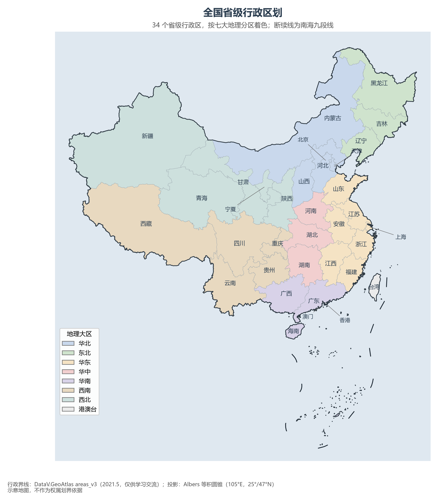
图 2-3 全国省级行政区划：34 个省级行政区按七大地理分区着色，断续线为南海九段线。
中国今日省界的轮廓，并非现代制图员在图纸上随意勾勒的线条，而是经历了两千余年政治地理演变、兼顾自然规律与统治安全的精妙产物。历史地理学家周振鹤指出，中国历代政区边界的划分贯穿着两条对立统一的核心哲学：“山川形便”与“犬牙相入”。
| 划界核心原则 | 理论内涵与空间逻辑 | 核心治理优势 | 潜在弊端与安全风险 | 典型地理实证案例 |
|---|---|---|---|---|
| 山川形便（自然地理原则） | 顺应名山大川、天然江河山脉的走向与分水岭划分省界 | 区域内水系连贯、方言风土同质，农田水利与经济交通协同顺畅 | 地理单元封闭独立，天险自固，历史上易滋生割据政权（如“天下未乱蜀先乱”） | 太行山分山西与河北；黄河劈开陕西与山西；南岭分界广东与湖南江西；武夷山阻隔福建与江西 |
| 犬牙相入（政治统治原则） | 打破天然地形险阻，将不同地貌单元乃至天险要隘跨界捆绑划入同一政区 | 消除地方依仗天险割据的地理基础，形成“你中有我、兵制相掣、天下大一统”局面 | 区域内南北或东西自然与文化差异巨大，省内经济统筹难度增加 | 汉中划归陕西（使四川丧失秦岭天险）；江南行省南北纵切为苏皖两省（使两省均跨长江淮河）；南阳属豫襄阳属鄂 |
山川形便是政区划分最原始、也最符合人类生产实践的原则。大山、大河是天然的地理阻隔，生活在同一山川走廊内部的人民往往拥有相同的方言、习俗与水系网络： - 以山为界：太行山脉纵贯南北，东侧为华北平原，西侧为黄土高原，天然劈开山西省与河北省；南岭横亘五岭，划出广东与湖南、江西的地理边界；武夷山脉阻隔闽浙丘陵与江南水乡，成为福建与江西的天然分界；大巴山脉横亘陕川之间。 - 以水为界：黄河中游奔腾于晋陕大峡谷中，自古“秦晋之好”，黄河便是两省浑然天成的界河；长江部分干流成为湖北与湖南、江西的界线。
然而，单纯依赖“山川形便”会带来严重的政治安全隐患。巴蜀四周崇山峻岭，历史上“天下未乱蜀先乱，天下已平蜀未平”；江南依仗长江天险，屡建割据政权。为了打破地方据险自固的地理基础，自元代创立行省制度始，中央王朝确立了“犬牙相入”的划分方略——故意把不同的自然地貌区、甚至天险要隘的两侧跨界打包划入同一省份： - 汉中划归陕西：汉中盆地在自然地理、水系（汉江发源于此）和气候上完全属于秦岭以南的南方湿润区，其方言饮食皆与四川盆地融为一体。但元代与明清政府坚决将汉中划归陕西行省，使四川失去了北方最重要的秦岭天险防御纵深，“自汉中俯瞰巴蜀，如以水瓴建高屋”，彻底消解了四川割据称王的地缘条件。 - 江南行省的横切：清代初年将富庶的江南行省拆分为江苏与安徽。拆分时没有依循长江或淮河做东西横向分割，而是南北垂直切开——江苏与安徽两省均跨越淮北平原、江淮丘陵与江南水乡，使长江天险不再被任何一个省份独占，淮河与江南的防务紧紧绑定。 - 南阳与襄阳的分治：南阳盆地本为一个完整的自然盆地，汉水穿流其间，但朝廷将北半部的南阳划归河南，南半部的襄阳划归湖北，使两湖平原与中原之间无险可守、相互维系。
今日中国的 34 个省级行政区，正是这两大地理原则千年博弈沉淀的有机平衡体：既尊重了山水脉络的自然完整，又维护了多民族单一制国家的长治久安。
中国的省级行政区面积呈现出极其显著的“由西向东、由内陆向沿海急剧收缩”的阶梯结构：
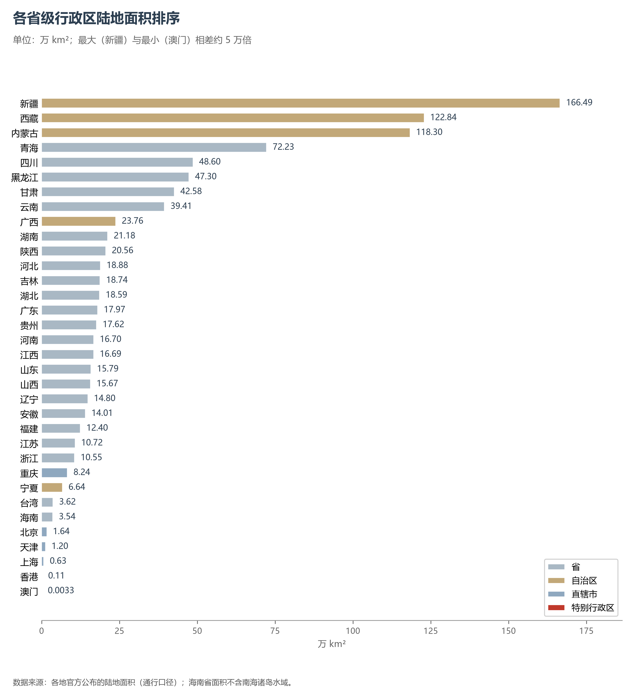
图 2-4 各省级行政区陆地面积排序：自治区（棕）包揽前三，直辖市（蓝）与特别行政区（红）垫底。
| 中国省级行政区 | 陆地面积 (万 km²) | 世界对照国家 | 国家面积 (万 km²) | 对比特征与地理景观相似性 |
|---|---|---|---|---|
| 新疆维吾尔自治区 | 166.49 | 伊朗 / 蒙古 | 164.8 / 156.7 | 高山盆地深锁，广袤温带大陆荒漠与草原牧场 |
| 西藏自治区 | 122.84 | 南非 / 哥伦比亚 | 122.1 / 114.2 | 平均海拔超 4000 米的极高高原，大江大河发源地 |
| 内蒙古自治区 | 118.30 | 哥伦比亚 / 埃塞俄比亚 | 114.2 / 110.4 | 东西跨 29 个经度，横贯森林、草甸、典型草原与戈壁 |
| 青海省 | 72.23 | 智利 / 土耳其 | 75.6 / 78.4 | “三江之源”，深处柴达木盆地与青藏高原东北部 |
| 四川省 | 48.60 | 西班牙 / 土库曼斯坦 | 50.6 / 48.8 | 西部川西高原深邃峡谷，东部四川盆地人口密集 |
| 云南省 | 39.41 | 德国 / 日本 / 挪威 | 35.7 / 37.8 / 38.5 | 纵向岭谷横断山脉，热带亚热带生物多样性王国 |
| 广西壮族自治区 | 23.76 | 英国 / 罗马尼亚 | 24.3 / 23.8 | 亚热带喀斯特峰林地貌与南部出海黄金通道 |
| 湖北省 | 18.59 | 叙利亚 / 柬埔寨 | 18.5 / 18.1 | “九省通衢”，长江干流与汉江交汇之江汉平原 |
| 浙江省 | 10.55 | 冰岛 / 韩国 | 10.3 / 10.0 | “七山一水两分田”，江南水乡与东海万顷群岛 |
人口规模的分布完全打破了面积排行的线性规律，呈现出东密西疏的强烈反差：
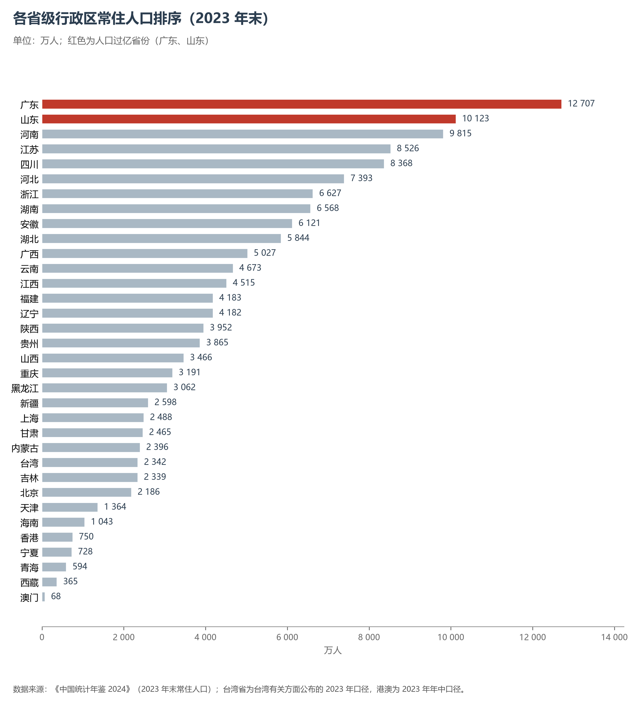
图 2-5 各省级行政区常住人口排序（2023 年末）：红色为人口过亿的广东、山东。
全国仅有两个常住人口超亿人的省级行政区：广东省（12 706 万人）与山东省（10 123 万人）（2023 年末口径）： - 广东自 2007 年超越河南成为全国第一常住人口大省以来，凭借强大的珠三角制造业与外来人口吸聚力，人口持续扩张，其体量已显著超过日本（约 1.24 亿），若作为国家可跻身世界第 12 位左右； - 山东省耕地资源丰茂，工农业体系完备，常住人口长期稳定在 1 亿以上。 - 人口规模前五名省份（粤 1.27 亿、鲁 1.01 亿、豫 9 815 万、苏 8 526 万、川 8 368 万）合计人口达到 4.95 亿人，以仅占全国 11.4% 的国土面积，承载了全国 35.1% 的总人口。
人口最少的省级行政区是西藏自治区（365 万人）与青海省（594 万人）。西藏全区面积占全国八分之一，人口却不足广东的 3%。 由地理学家胡焕庸于 1935 年发现的“黑河—腾冲线”（胡焕庸线），在省级层面呈现出惊人的制度化重力场： - 位于胡焕庸线西北侧的省区共有 6 个（内蒙古、甘肃、宁夏、青海、新疆、西藏），合计陆地面积达 528 万 km²（占全国 55%），但六省区常住人口总和仅为 9 078 万人，仅占全国总人口的 6.44%，甚至不及河南省一省的人口总量； - 东南侧的 28 个省级行政区聚集了全国 93.5% 的人口。这一由东南季风水汽边界与农业生态承载力共同决定的地理格局，历经近百年现代工业化与高速城镇化，依然巍然稳固。
将常住人口与陆地面积相除，得到反映地表人类生存强度的核心指标——人口密度：
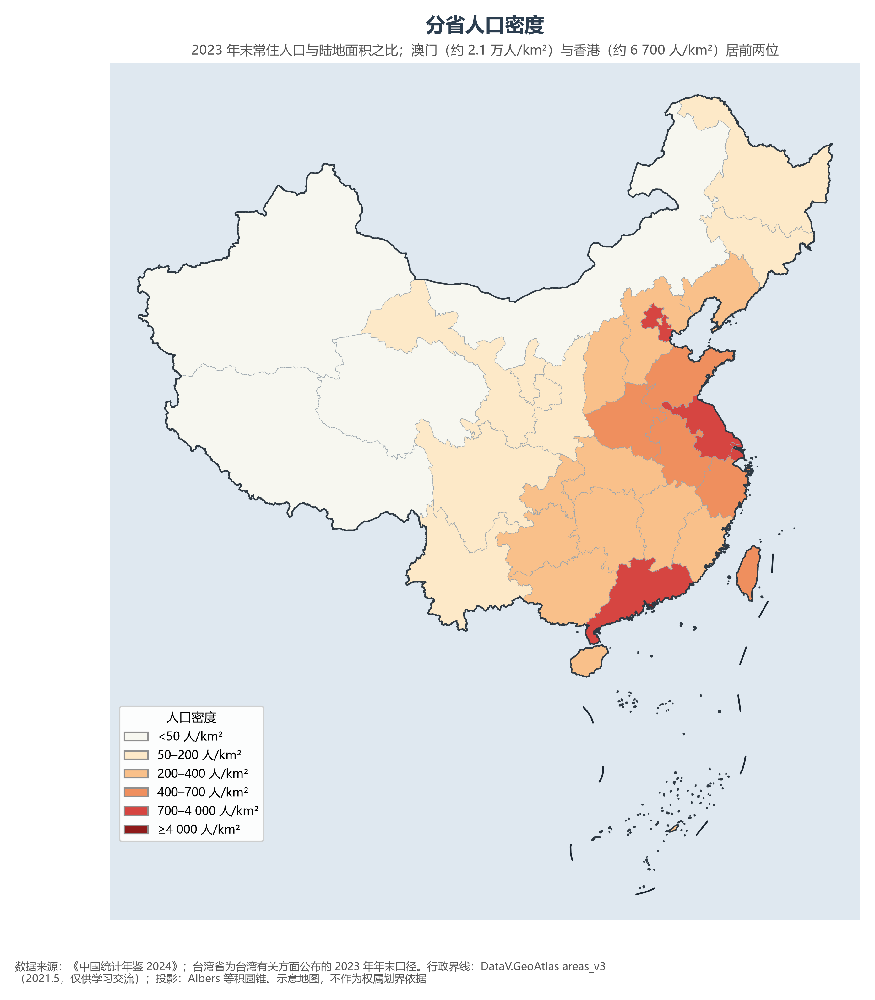
图 2-6 分省人口密度：2023 年末常住人口与陆地面积之比，东南稠密、西北稀疏的格局一目了然。
34 个省级行政区的名称、简称以及省会的变迁，是解读中华文明数千年地理认同与历史沉积的活化石：
我国省份简称具有极高的历史文化底蕴，大致可归为三类： - 以先秦春秋战国古国或古九州名命名：冀（河北，古冀州）、晋（山西，晋国）、鲁（山东，鲁国）、豫（河南，古豫州）、秦（陕西，秦国）、蜀（四川，蜀国）、楚/鄂（湖北，鄂国与楚都）、粤（广东，古南越/百越之地）、滇（云南，古滇国）、黔（贵州，秦汉黔中郡）； - 以境内骨干江河命名：湘（湖南，湘江）、赣（江西，赣江）、闽（福建，闽江）、皖（安徽，皖水与皖山）、浙（浙江，浙江即钱塘江）、沪（上海，古吴淞江下游捕鱼工具“扈”及沪渎）；渝（重庆，嘉陵江古称渝水）； - 一省双简称现象：四川（川/蜀）、贵州（黔/贵）、云南（滇/云）、陕西（陕/秦）、甘肃（甘/陇）。双简称的存在，生动反映了这些省份横跨多个地理单元与历史文化圈的复合属性（如四川兼具川峡四路与古蜀文明，甘肃兼顾甘州肃州与陇山陇右）。
省会是全省的政治、经济与文化指挥中枢。其地理区位选择通常遵循三大原则： - 自然地理居中与交通枢纽原则：如河南省会郑州（地处中原之中、陇海与京广铁路交汇十字路口，1954 年自偏于一隅的开封迁往郑州）；湖北武汉（长江与汉江交汇，“九省通衢”）；湖南长沙（湘江下游平原中枢）； - 经济重力与平原核心原则：如四川成都（成都平原沃野千里，两千余年未改其名其址）；广东广州（珠三角水网顶端）； - 边疆经略与历史演变：吉林省是中国唯一省市同名的省份，其省名来自同名城市吉林市（清代曾为吉林将军驻地、建省后曾为省会），1954 年为适应现代工业布局与铁路交通，省会迁往长春市。
| 大区 | 行政区名称 | 简称 | 行政中心 | 陆地面积 (km²) | 常住人口 (万人) | 人口密度 (人/km²) | 地级数 | 县级数 | 核心自然与经济地理特征速写 |
|---|---|---|---|---|---|---|---|---|---|
| 华北 | 北京市 | 京 | 北京 | 16 410 | 2 186 | 1 332 | — | 16 | 首都，国家政治、文化与科技创新中心；西倚太行，北枕燕山 |
| 华北 | 天津市 | 津 | 天津 | 11 966 | 1 364 | 1 140 | — | 16 | 北方最大海港门户；九河下梢，海河贯穿，国家先进制造研发基地 |
| 华北 | 河北省 | 冀 | 石家庄 | 188 800 | 7 393 | 392 | 11 | 167 | 环抱京津，地跨内蒙古高原、太行山地、燕山山地与华北平原 |
| 华北 | 山西省 | 晋 | 太原 | 156 700 | 3 466 | 221 | 11 | 117 | 表里山河，太行吕梁相夹；煤炭能源重镇，黄土高原东翼华夏摇篮 |
| 华北 | 内蒙古自治区 | 蒙 | 呼和浩特 | 1 183 000 | 2 396 | 20 | 12 | 103 | 狭长横跨东北、华北、西北；草原生态屏障，稀土煤炭风光能源大基地 |
| 东北 | 辽宁省 | 辽 | 沈阳 | 148 700 | 4 182 | 281 | 14 | 100 | 东北唯一出海门户；重工业与装备制造重镇，辽河平原与千山辽东半岛 |
| 东北 | 吉林省 | 吉 | 长春 | 187 400 | 2 339 | 125 | 9 | 60 | 粮食黄金玉米带；长白山天池生态屏障，中国第一汽车制造工业摇篮 |
| 东北 | 黑龙江省 | 黑 | 哈尔滨 | 473 000 | 3 062 | 65 | 13 | 121 | 最北最东边疆；大界江大森林大油田大粮仓，大小兴安岭与三江平原 |
| 华东 | 上海市 | 沪 | 上海 | 6 340 | 2 487 | 3 923 | — | 16 | 国际经济、金融、贸易、航运中心；长江入海口，长三角一体化龙头 |
| 华东 | 江苏省 | 苏 | 南京 | 107 200 | 8 526 | 795 | 13 | 95 | 全国密度最高普通省份；平原占 85%，长江与京杭大运河十字交汇工业强省 |
| 华东 | 浙江省 | 浙 | 杭州 | 105 500 | 6 627 | 628 | 11 | 90 | “七山一水两分田”；民营经济大省，宁波舟山港与钱塘江数字经济高地 |
| 华东 | 安徽省 | 皖 | 合肥 | 140 100 | 6 121 | 437 | 16 | 104 | 襟江带淮，南北兼备；合肥综合性国家科学中心与新兴产业制造高地 |
| 华东 | 福建省 | 闽 | 福州 | 124 000 | 4 183 | 337 | 9 | 84 | “依山傍海”；武夷山脉与台湾海峡相拥，森林覆盖率连续数十年全国第一 |
| 华东 | 江西省 | 赣 | 南昌 | 166 900 | 4 515 | 271 | 11 | 100 | 鄱阳湖中国最大淡水湖；赣江纵贯，庐山井冈山环抱，红色摇篮绿色生态 |
| 华东 | 山东省 | 鲁 | 济南 | 157 900 | 10 123 | 641 | 16 | 136 | 经济大省常住人口破亿；泰山雄峙齐鲁，黄河入海，胶东半岛蓝色经济 |
| 华中 | 河南省 | 豫 | 郑州 | 167 000 | 9 815 | 588 | 17 | 157 | 中原腹地九州腹心；超级粮仓，“米”字形高铁枢纽与华夏历史文明核心 |
| 华中 | 湖北省 | 鄂 | 武汉 | 185 900 | 5 838 | 314 | 13 | 103 | “九省通衢”千湖之省；三峡工程所在地，长江中游光电子与汽车走廊 |
| 华中 | 湖南省 | 湘 | 长沙 | 211 800 | 6 568 | 310 | 14 | 122 | “三面环山、一湖展开”；洞庭湖平原，工程机械之都与有色金属之乡 |
| 华南 | 广东省 | 粤 | 广州 | 179 700 | 12 706 | 707 | 21 | 122 | 全国第一常住人口与 GDP 大省；南岭以南，粤港澳大湾区世界级制造中心 |
| 华南 | 广西壮族自治区 | 桂 | 南宁 | 237 600 | 5 027 | 212 | 14 | 111 | 面向东盟国际大通道；西南出海最便捷门户，桂林山水喀斯特世界自然遗产 |
| 华南 | 海南省 | 琼 | 海口 | 35 400 | 1 043 | 295 | 4 | 25 | 全域建设自由贸易港；中国第二大岛，统辖南海广袤水域，热带海岛旅游 |
| 西南 | 重庆市 | 渝 | 重庆 | 82 400 | 3 191 | 387 | — | 38 | 中西部唯一直辖市；山城江城，三峡库区核心，西部陆海新通道运营中心 |
| 西南 | 四川省 | 川/蜀 | 成都 | 486 000 | 8 368 | 172 | 21 | 183 | “天府之国”资源与人口大省；川西横断高山高原与川东盆地反差壮丽 |
| 西南 | 贵州省 | 黔/贵 | 贵阳 | 176 200 | 3 865 | 219 | 9 | 88 | 全国唯一无平原省份；喀斯特王国，大数据中心基地与桥梁工程奇迹 |
| 西南 | 云南省 | 云/滇 | 昆明 | 394 100 | 4 673 | 119 | 16 | 129 | 面向南亚东南亚辐射中心；高原低纬立体气候，少数民族数量全国之最 |
| 西南 | 西藏自治区 | 藏 | 拉萨 | 1 228 400 | 365 | 3 | 7 | 74 | “世界屋脊”与“亚洲水塔”；高寒缺氧纯净生态，藏传佛教圣地圣城 |
| 西北 | 陕西省 | 陕/秦 | 西安 | 205 600 | 3 952 | 192 | 10 | 107 | 纵跨黄河长江两流域；陕北黄土高原、关中平原与陕南秦巴山地三区鼎立 |
| 西北 | 甘肃省 | 甘/陇 | 兰州 | 425 800 | 2 465 | 58 | 14 | 86 | “如意”形狭长横亘河西走廊；古丝绸之路黄金要道，敦煌文化千古交汇 |
| 西北 | 青海省 | 青 | 西宁 | 722 300 | 594 | 8 | 8 | 45 | “三江之源”“中华水塔”；青海湖与柴达木盆地，清洁能源输送大基地 |
| 西北 | 宁夏回族自治区 | 宁 | 银川 | 66 400 | 729 | 110 | 5 | 22 | “天下黄河富宁夏”；贺兰山阻挡风沙，塞上江南，现代枸杞与葡萄之乡 |
| 西北 | 新疆维吾尔自治区 | 新 | 乌鲁木齐 | 1 664 900 | 2 598 | 16 | 14 | 108 | 国土六分之一最大省区；“三山夹两盆”，丝绸之路经济带核心区能源枢纽 |
| 港澳台 | 香港特别行政区 | 港 | — | 1 114 | 750 | 6 733 | — | 18 | 国际金融、航运、贸易中心；“一国两制”东方之珠，维多利亚良港 |
| 港澳台 | 澳门特别行政区 | 澳 | — | 33 | 68.3 | 20 697 | — | 8 | 世界旅游休闲中心，中葡商贸平台；全球人口密度极值，百年历史城区 |
| 港澳台 | 台湾省 | 台 | — | 36 000 | 2 342 | 651 | — | 22 | 中国第一大岛；玉山巍峨，全球半导体代工高地，两岸同胞骨肉相连 |
表注说明： 1. 陆地面积数据取自自然资源部及各地官方公布权威标准口径（海南省陆地面积不含西沙、中沙、南沙海域水面；台湾省含澎湖及附属岛屿约 3.6 万 km²）； 2. 常住人口统一采用《中国统计年鉴 2024》公布的 2023 年末全国分省常住人口（香港、澳门为特区政府统计部门公布的 2023 年末/年中常住人口，台湾省为当地公布的 2023 年底户籍人口）； 3. 人口密度由常住人口除以陆地面积计算所得；地级数与县级数依据民政部 2024 年底全国行政区划统计； 4. 直辖市无地级建制，香港按 18 个行政分区、澳门按 8 个堂区、台湾省按当地 22 个县市统计。
回顾新中国成立以来的 76 年历程，中国的省级行政区数量从建国初期的 50 个大刀阔斧精简至 34 个；“地区行政公署”从 170 个萎缩至仅存 7 个，而地级市则从 54 个急剧扩张至 293 个。行政区划的每一次分拆、合并、升格与撤销，都不是简单的地理更名，而是国家在不同历史发展阶段对政治安全、资源调配、工业化布局与城市化浪潮作出的最高空间响应：1950 年代做减法，是为了集中力量加强统一与恢复经济；1980 年代以来做加法与做重组，则是为了释放市场活力、推动对外开放与加速城镇化进程。
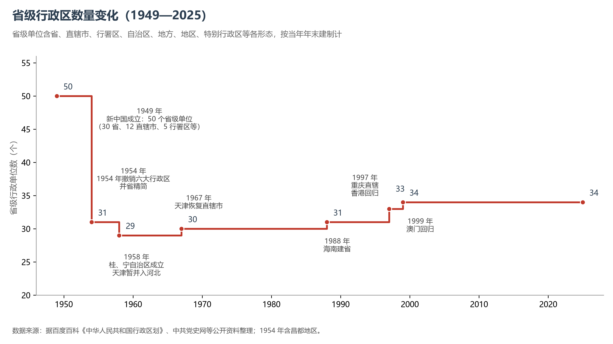
图 2-7 省级行政区数量变化（1949—2025）：从“大区时代”的 50 个到今天的 34 个。
若将目光从当代拉远至整部中华文明史，行政区划的演变呈现出一种极为奇妙且周而复始的历史周期律。正如历史地理学界所总结的：“高层政区不断由虚入实、下沉为统县政区，中央被迫再次增设更高层监察区，导致层级由两级膨胀为三级、四级，随后朝廷再次裁并削层，重返两级或三级。”
| 历史朝代 | 层级类型 | 第一级（高层政区） | 第二级（统县政区） | 第三级（县级政区） | 基层自治或管理单元 |
|---|---|---|---|---|---|
| 秦代 | 两级制 | — | 郡（初置 36 郡，后增至 40 余郡） | 县 / 道（千余个） | 乡 / 亭 / 里 |
| 两汉 | 三级制（演变） | 州（初为十三刺史部监察区，东汉末实体化） | 郡 / 国（统县政区） | 县 / 邑 / 道 / 侯国 | 乡 / 亭 / 里 |
| 唐代 | 三级制 | 道（初置贞观十道监察区，后演化为实体） | 州 / 府（三百余个） | 县（千余个） | 乡 / 里 |
| 宋代 | 三至四级 | 路（转运司、提刑司等四司平行分权） | 府 / 州 / 军 / 监 | 县 | 乡 / 里 / 保甲 |
| 元代 | 多级制（行省确立） | 行中书省（中央派出机构实体化为高层政区） | 路 | 府 / 州 | 县（四级或三级并存） |
| 明代 | 三级制 | 承宣布政使司（省，布政/按察/都司分治） | 府 / 直隶州 | 县 / 属州 | 里甲制 |
| 清代 | 三级制 | 省（总督、巡抚大权独揽） | 府 / 直隶厅州 | 县 / 散厅州 | 保甲制 |
| 民国 | 两级至三级 | 省 | （行政督察区，省派出虚级） | 县 / 市 | 乡 / 镇 / 保甲 |
| 当代 | 事实四级 | 省 / 自治区 / 直辖市 / 特别行政区 | 地级市 / 州 / 地区 / 盟 | 县 / 县级市 / 市辖区 / 旗 | 乡 / 镇 / 街道（村/居委会自治） |
1949 年 10 月新中国成立之初，国内面临军事清剿残余、土地改革、抗美援朝与经济恢复的艰巨任务。为了集中兵力和政权调度，党中央在中央与省之间设立了东北、华北、华东、中南、西北、西南六大行政区，分别设立军政委员会（后改行政委员会），对所辖省市实行统战与军政领导。
在六大行政区统辖之下，全国的省级建置呈现出高度破碎的过渡性形态，省级行政单位总数一度多达 50 个：包括 30 个省、12 个中央直辖市、5 个行署区、1 个自治区（内蒙古）、1 个地方（西藏）与 1 个地区（昌都）：
建国初期的许多省份与行署区，带有浓厚的战争接管与区域治理临时性质，在随后的制度调整中相继合并或撤销：
| 已撤销的省级建置 | 存续时间 (新中国后) | 首府/驻地 | 撤销去向与空间重组 | 设立背景与撤并原因 |
|---|---|---|---|---|
| 平原省 | 1949—1952 | 新乡市 | 分拆并入河南省、山东省 | 为治理黄河历史上频繁溃决泛滥的“黄泛区”、配合土改而设立；黄河安澜与土改完成后撤销 |
| 察哈尔省 | 1949—1952 | 张家口市 | 分拆并入内蒙古自治区、河北省、山西省 | 历史上横跨长城内外的塞北省份，为加强内蒙古统一与华北经济协作而分拆撤并 |
| 绥远省 | 1949—1954 | 归绥市（今呼和浩特） | 整体并入内蒙古自治区 | 傅作义将军起义和平解放之塞外省份，1954 年与内蒙古合并，内蒙古首府由张家口迁至呼和浩特 |
| 松江省 | 1949—1954 | 哈尔滨市 | 整体并入黑龙江省 | 东北老根据地省份，1954 年撤销并入黑龙江省，黑龙江省会由齐齐哈尔迁往哈尔滨 |
| 辽东省、辽西省 | 1949—1954 | 安东（辽东）/ 锦州（辽西） | 两省合并组建为辽宁省 | 解放战争时期为粉碎国民党军队进剿而设；1954 年两省合并重建辽宁省，省会设沈阳 |
| 热河省 | 1949—1955 | 承德市 | 分拆并入河北省、辽宁省、内蒙古自治区 | 清代木兰围场与避暑山庄所在，承接华北与东北过渡带；1955 年按经济与交通流向撤并分拆 |
| 西康省 | 1949—1955 | 雅安市 | 金沙江以东并入四川省，以西划归西藏昌都地区 | 地处川藏交界康巴藏区，“分川陕、控西藏”；1955 年第一届全国人大二次会议决议撤销 |
| 苏南、苏北行署区 | 1949—1952 | 无锡（苏南）/ 泰州（苏北） | 两行署区合并恢复江苏省 | 渡江战役后解放区与江南新区治理需要分设行署；经济社会恢复后合并，省会设南京 |
| 皖南、皖北行署区 | 1949—1952 | 芜湖（皖南）/ 合肥（皖北） | 两行署区合并恢复安徽省 | 沿淮河与沿江分治；1952 年恢复安徽省建制，省会定合肥 |
| 川东/西/南/北行署区 | 1949—1952 | 重庆/成都/泸州/南充 | 四大行署区合并恢复四川省 | 四川人口规模庞大、地形封闭复杂，建国初分设四大行署区治理；1952 年合并恢复四川省 |
在建国初期，中央直辖市多达 12 个：不仅包括北京、天津、上海，还包括南京、广州、武汉、重庆、西安、沈阳、旅大（大连）、鞍山、抚顺、本溪等大型中心城市和重要重工业基地。这种“大直辖市”设置是为了让中央直接集中调配战略工业城市的人财物资源支持全国建设。随着第一个五年计划的开展与省级行政体制的稳定，除北京、上海、天津外，其余 9 个直辖市相继于 1954 年降格为省辖市，分别划归所在省份领导。
1954 年 6 月 20 日，中央人民政府委员会第三十二次会议通过《关于撤销大区一级行政机构和合并若干省市建制的决定》： - 撤销六大行政区行政委员会，彻底消除可能出现的地方分散主义，国家政令直达省一级； - 松江并入黑龙江，辽东辽西合并为辽宁，绥远并入内蒙古，宁夏暂并入甘肃；11 个直辖市降格为省辖市。 - 1955 年撤销热河省与西康省；1955 年 10 月 1 日，新疆维吾尔自治区成立； - 1958 年 3 月与 10 月，广西僮族自治区（后改壮族）与宁夏回族自治区先后成立；天津市于 1958 年一度降为河北省辖市并作为河北省会； - 1965 年 9 月 9 日，西藏自治区正式宣布成立，标志着五大自治区格局全部落地； - 1967 年 1 月，天津市恢复为中央直辖市，河北省会随后迁往石家庄市。
到 1967 年，全国正式形成了 22 个省、5 个自治区、3 个直辖市共 30 个省级行政区的稳定架构。这一“30 个省级单位”的结构历经各种政治与经济考验，在长达整整 21 年（1967—1988 年）的岁月里未发生过一例建制增减，构成了改革开放前新中国行政区划的定型版图。
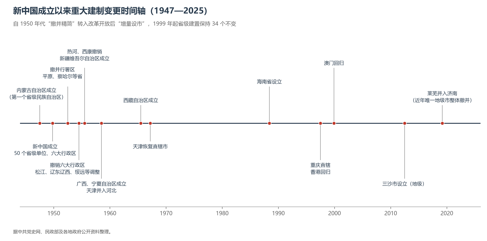
图 2-9 重大建制变更时间轴（1947—2025）：1947 年内蒙古自治区成立是中国共产党领导下第一个省级民族自治区。
1978 年开启的改革开放，为中国空间版图的重构注入了澎湃的动力。为了适应对外开放窗口、大型国家世纪工程建设以及“一国两制”的宏伟蓝图，中国进入了高层次的政区“增量时代”：
长期以来，海南岛作为广东省下辖的行政区（海南行政区，副省级）。由于隔着琼州海峡，珠三角无暇充分顾及雷州半岛以南的海岛开发。1988 年 4 月 13 日，七届全国人大一次会议正式批准设立海南省，并划定海南岛为全国最大的经济特区。海南建省不仅极大激发了热带海岛的经济生机，更使国家拥有了直接面向南海三沙诸岛、经略深蓝大洋的独立省级战略支点。
随着长江三峡水利枢纽工程的全面启动，三峡库区面临着百万移民搬迁安置与川东秦巴山、武陵山区深度贫困的世纪难题。原四川省幅员过大（人口超 1.1 亿），省会成都难以全力统筹川东三峡库区。1997 年 3 月 14 日，八届全国人大五次会议表决通过设立重庆直辖市，将原四川省重庆市、万县市、涪陵市和黔江地区 4 个地级政区合并组建为新的重庆直辖市，管辖面积达 8.24 万 km²，成为我国面积最大、人口最多、中西部唯一的直辖市，构筑了成渝地区双城经济圈与西部陆海新通道的战略牵引极。
1997 年 7 月 1 日，中国政府恢复对香港行使主权，香港特别行政区正式成立；1999 年 12 月 20 日，中国政府恢复对澳门行使主权，澳门特别行政区正式成立。两个特别行政区的设立，将“一国两制”的伟大构想转化为生动的宪制实践，拓展了国家版图在国际金融与商贸领域的无限纵深。至此，全国 34 个省级行政区的最终格局正式铸就，并保持稳定至今。
在省级建置保持总体稳定的同时，省以下的中间层与基层政区则上演了一场伴随工业化与城市化展开的剧烈变革：
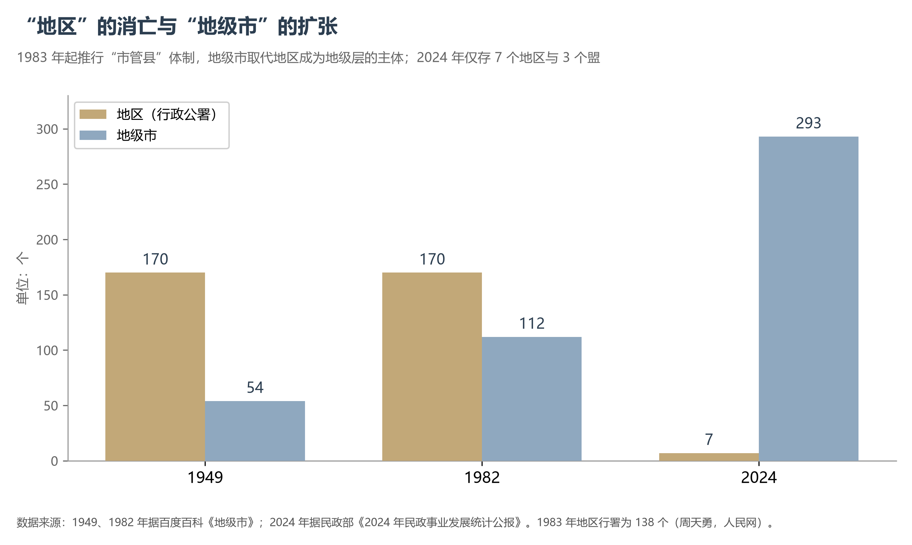
图 2-8 "地区"的消亡与"地级市"的扩张：市管县体制彻底重塑了中国的地级层。
1949 年建国时，全国的地级单位中，地区（专区）有 170 个，地级市仅 54 个。改革开放之初的 1982 年，地区行政公署仍多达 170 个，地级市仅 112 个。1983 年国务院全面推行“市管县”体制后，撤地设市如火如荼展开：地区行政公署纷纷与中心城市合并，升级为地级市。至 2024 年底，地级市激增至 293 个，而地区仅存新疆 5 个、西藏 1 个、黑龙江 1 个共 7 个。这一“市管县”变革打破了城乡二元壁垒，使中心城市的资本、技术和公共服务得以及时向周边县域纵深辐射。
改革开放后，伴随乡镇企业异军突起和县域工商业繁荣，大量农业县迅速向工商业城市演化： - 第一波高潮（1983—1997 年）：全国大批经济强县纷纷改设县级市，全国县级市数量从数十个爆炸式激增至 400 余个； - 国务院紧急叫停（1997 年）：由于部分地区盲目跟风设市、“县改市只是改了个名字、没有城市之实”、导致耕地滥占与行政管理成本剧增，1997 年国务院正式出台政策叫停撤县设市； - 稳妥解冻与高质量推进（2017 年至今）：历经整整 20 年的政策冻结后，2017 年民政部出台科学严格的设市指标体系，重点支持中西部具备区域中心节点功能的成熟县份撤县设市（如贵州盘州市、新疆胡杨河市等），恢复了审慎有序的高质量调整通道。
为了破解特大超大城市发展空间受限的困局，新世纪以来各大中心城市大规模推行“撤县（市）设区”： - 北京将顺义、昌平、怀柔、密云、延庆全部撤县设区，彻底告别了“县”的历史； - 上海将南汇、奉贤、金山、崇明陆续改区，全市实现全域无县； - 广州撤并番禺、花都、从化、增城，南京撤销江宁、江浦、六合、溧水、高淳设区； - 2019 年地级市吸收合并特例：经国务院批复，撤销地级莱芜市，将其全域整体划入济南市，设立济南市莱芜区、钢城区，增强了省会城市在黄河流域高质量发展中的辐射带动能级。 近年来，针对特大城市盲目贪大求全、“摊大饼”式圈地、削弱县域自主权等问题，国家发改委与民政部明确提出“慎重撤县设区”，强调严控撤县建区节奏，保护乡村历史肌理与县域经济特色。
在中华人民共和国的 34 个省级行政区中，香港特别行政区、澳门特别行政区与台湾省占据着举足轻重的特殊地位：它们是“一国两制”伟大构想的实践舞台与国家完全统一议程的核心纽带，也是全国人均经济水平最高、人口密度最大、经济形态最为外向的三块土地。三地合计陆地面积约 3.7 万 km²，仅占全国总面积的约 0.4%；合计常住人口约 3 160 万人，占全国的 2.2%。但其独特的制度设计、独特的地理区位与超高密度的现代产业，为大一统国家版图贡献了不可替代的空间功能。
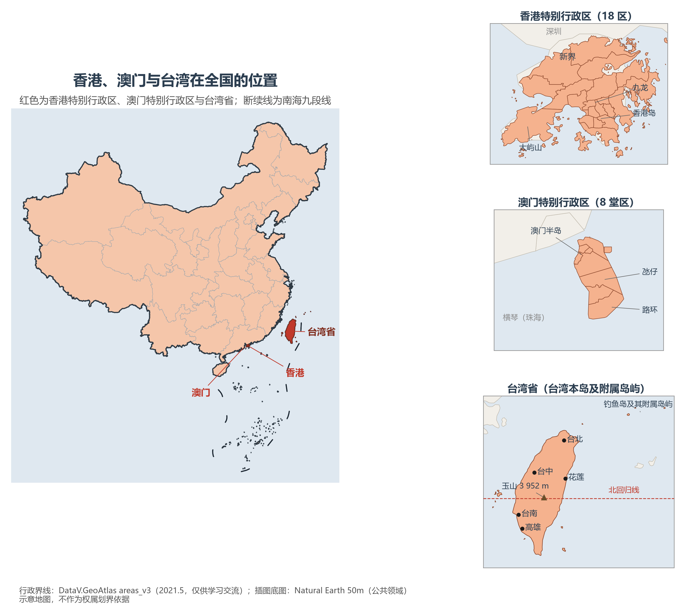
图 2-10 港澳台在全国的位置：右上三幅放大插图分别为香港 18 区、澳门 8 堂区与台湾省，主图中三地以红色高亮。
特别行政区的设立，凝聚了中国特色社会主义国家制度最富创造性的政治智慧。其法理基础源自最高国家宪政框架：
香港特别行政区位于珠江口以东、深圳河以南，由香港岛、九龙半岛、新界及 262 座离岛共同组成，陆地总面积为 1 114 km²（2023 年末）：
全港常住人口达 750.3 万人（2023 年年中），整体人口密度高达 6 733 人/km²。面对极其严酷的“山多地少”地理约束，香港逼出了两项世界顶尖的城市工程学奇迹： - “垂直生长”与郊野公园的惊人反差：全港实际建成区面积仅占陆地总面积的 约 25%，却集聚了全港 95% 以上的人口与经济活动；高层建筑数量全球第一，住宅高度普遍在 30~50 层以上。与此形成震撼对照的是，香港有高达 40% 的土地被划为受严格法律保护的“郊野公园”（共 24 个郊野公园与 22 个特别地区），山峦青翠、林网幽深，构成了全球超大城市中绝无仅有的“繁华都市与原始大自然咫尺相融”的生态景观。 - 百年填海造地工程：自 1851 年首开毕打码头填海以来，香港通过历次填海造地近 70 km²，占总陆地面积的 约 6%。但这 6% 的填海土地承载了全港 27% 的居住人口与 70% 的商业办公空间；中环金融核心区、启德旧机场、沙田新市镇以及赤鱲角香港国际机场，全部建立在填海土地之上。
香港服务业占本地生产总值比重长期高于 90%，是全球公认的三大国际金融中心之一（纽伦港），拥有全球最大的离岸人民币资金池，实行自由港与联系汇率制度（港元紧密挂钩美元）。近年来，香港特区政府提出“北部都会区”重大发展战略（涵盖元朗区与北区约 300 km² 土地），紧扣深圳河两岸，打造与深圳紧密协同创新的“国际创新科技中心”，开启了香港由维港单核向“南金融、北创科”双核联动的历史性空间重构。全港划分为 18 个行政区，区议会依法作为非政权性的区域咨询与服务组织。
澳门特别行政区位于珠江口西侧，与珠海市香洲区拱北直接陆路相连，由澳门半岛、氹仔岛、路环岛、路氹填海区以及港珠澳大桥珠澳口岸人工岛澳门口岸等区域组成，陆地总面积为 33.3 km²（2023 年）：
1912 年澳门有官方精确测绘记录的土地面积仅为 11.6 km²。百余年来，澳门通过持续的大规模移山填海工程，将半岛与外岛不断外扩，更在氹仔与路环两岛之间填筑出面积达 6.1 km² 的路氹填海区（Cotai），使两岛彻底连为一体，全区陆地面积增加了 近两倍半。
澳门常住人口为 68.3 万人（2023 年末），人口密度高达 20 697 人/km²，是当今全世界人口密度最高的城市实体之一。澳门全境划分为 8 个堂区（花地玛堂区、圣安多尼堂区、大堂区、望德堂区、风顺堂区、嘉模堂区、圣方济各堂区及路氹区）。“堂区”（Freguesia）是葡萄牙殖民管治时期以天主教教堂为中心划分的教区遗留，在今日仅作为统计与民间习惯分区，不设政权机关。
台湾省位于中国东南沿海的大陆架上，东临太平洋，西隔台湾海峡与福建省相望，东北接琉球群岛，南扼巴士海峡与菲律宾相峙。全省由台湾本岛及澎湖列岛、钓鱼岛及其附属岛屿、兰屿、绿岛等 80 余个大小附属岛屿共同组成，总面积约为 3.6 万 km²，其中台湾本岛陆地面积约 3.58 万 km²，比海南岛大出约 2 000 km²，是中国第一大岛：
台湾自古以来就是中国神圣领土不可分割的一部分： - 三国与隋朝：公元 230 年，三国吴王孙权派遣将军卫温、诸葛直率领万人船队到达“夷州”（今台湾），这是大陆政权经略台湾的最早明文记载；隋炀帝曾三次派人赴“流求”。 - 元明清中央管辖：元世祖时期在澎湖正式设立澎湖巡检司，隶属福建行省泉州府，标志着中国中央政府对台湾及其附属岛屿行使正式行政管辖的开端；1662 年，民族英雄郑成功驱逐占领台湾 38 年之久的荷兰殖民者，收复台湾，设承天府；1684 年，清政府统一台湾后设台湾府，隶属福建省；1885 年，清政府正式决定将台湾从福建分出单独建省，刘铭传出任台湾省首任巡抚，主持修建了中国第一条商用客运铁路（基隆至新竹），加速了台湾全省的近代化建设。 - 抗战胜利与台湾光复：1895 年甲午战争后，日本军国主义强迫清政府签订《马关条约》割占台湾与澎湖列岛；台湾军民进行了长达半个世纪英勇不屈的反抗斗争。1945 年 10 月 25 日，伴随中国人民抗日战争与世界反法西斯战争的伟大胜利，中国政府在台北举行台湾省受降仪式，台湾与澎湖列岛正式宣告光复，重回祖国母亲怀抱。钓鱼岛及其附属岛屿自古即为台湾附属岛屿，行政上自清代以来隶属台湾省宜兰县管辖。
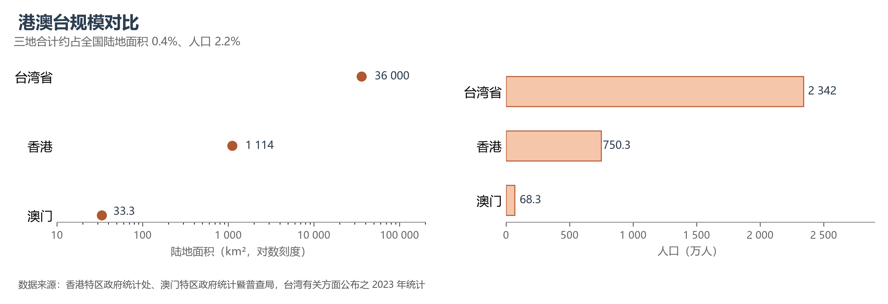
图 2-11 港澳台规模对比：陆地面积（对数轴）与人口，2023 年口径。
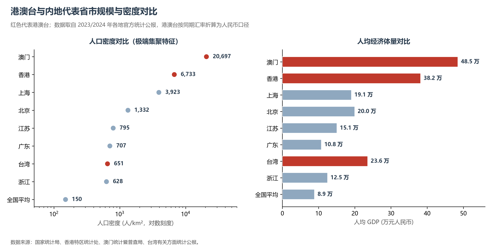
图 2-12 港澳台与内地代表省市经济与人口密度对比：红色代表港澳台；数据取自 2023/2024 年各地官方统计公报，港澳台按同期汇率折算为人民币口径。
将港澳台三地置于全国 34 个省级行政区的整体矩阵中审视，可以深刻看清其独特的经济密度与战略价值： - 微型面积与巨型密度的反差：三地总面积约 3.7 万 km²（略大于海南省陆地面积），人口约 3 160 万人。但澳门以超 2 万人/km²、香港以超 6 700 人/km² 的极端人口密度，在全国密度梯级上遥遥领先； - 财富创造与外向辐射极高：按人均国内生产总值（GDP）折算，澳门（人均超 48 万元人民币）、香港（人均超 38 万元人民币）与台湾（人均约 23.6 万元人民币）均位居全国各省级单位的最前列； - 大一统框架下的多元制度互补：在国家主权、安全与领土完整的绝对前提下，三种法律制度（大陆法系、普通法系、混合传统）、三种独立货币（人民币、港币、新台币）、三大自由贸易港在同一国度内和谐并存。随着港珠澳大桥横跨伶仃洋、广深港高铁全线贯通、深中通道通车运行，以及未来台海跨海通道的远景规划，港澳台与祖国大陆在基础设施、经贸规则、社会民生上正在形成更加紧密的命运共同体，构成了中国经略深蓝、迈向民族复兴的超级开放前沿。
摊开一张中国立体地貌图，映入眼帘的最显著特征不是孤立的山峦或凹陷，而是一个自西向东倾斜跌落的巨大三级巨型斜面：西部是平均海拔逾 4 000 m、面积达 250 万 km² 的高原隆起，中部是海拔 1 000~2 000 m 的高原与盆地交织带，东部则是海拔在 500 m 以下的低平原、丘陵与浅海大陆架。两者之间，以两道纵贯南北的地形急变带截然相隔。这就是中国自然地理的第一基础定律——地势西高东低，呈三级阶梯状逐级下降。这一宏观巨型地貌构架，自新生代印度板块与欧亚板块碰撞碰撞以来奠定，它从根本上决定了大江大河向东奔流的基本走向，规定了西太平洋水汽深入内陆的推进通道，也深远铸就了中国的农业熟制、水能格局、人口集聚与区域经济差异。
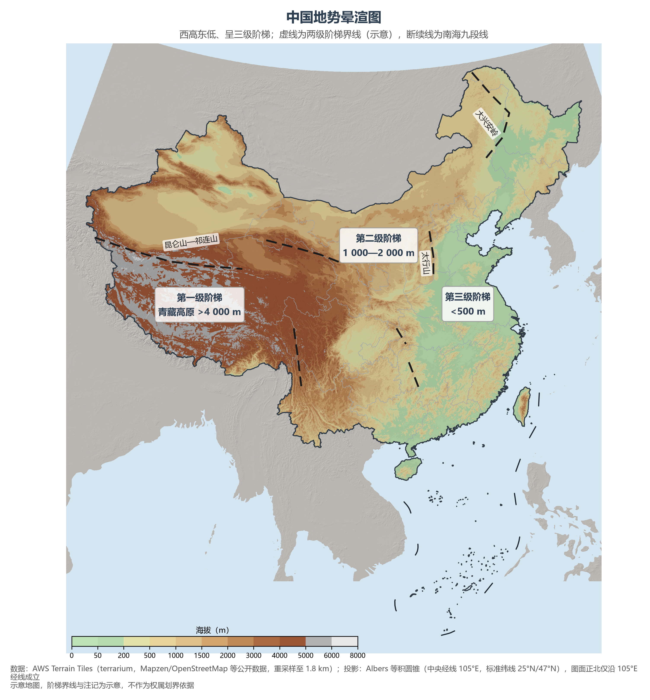
图 3-1 中国地势晕渲图：DEM 山体阴影叠加高程分级设色，三级阶梯与两级界线（示意）一目了然。
中国陆地高低落差极大，最高点珠穆朗玛峰海拔 8 848.86 m，最低点新疆吐鲁番盆地艾丁湖洼地海拔 −154.31 m，极端相对高差超过 9 000 m。在这一全球最为显著的高差跨度内，大地并非均匀倾斜，而是通过深大断裂带与山脉屏障，构筑了阶梯分明的三个地貌台阶：
| 阶梯层级 | 平均海拔高度 | 地壳厚度与岩石圈特征 | 主要组成地形单元 | 阶梯外缘控制性界线山脉 |
|---|---|---|---|---|
| 第一级阶梯 | 4 000 m 以上 | 地壳厚度达 60~75 km，地幔上涌，全球最厚陆壳 | 青藏高原、柴达木盆地 | 昆仑山脉—阿尔金山脉—祁连山脉—横断山脉 |
| 第二级阶梯 | 1 000~2 000 m | 地壳厚度约 40~50 km，过渡型陆壳构造 | 内蒙古高原、黄土高原、云贵高原，塔里木盆地、准噶尔盆地、四川盆地 | 大兴安岭—太行山脉—巫山—雪峰山 |
| 第三级阶梯 | 500 m 以下（平原大多在 50 m 以下） | 地壳厚度约 30~35 km，伸展减薄陆壳 | 东北平原、华北平原、长江中下游平原，辽东丘陵、山东丘陵、东南丘陵 | 海岸线（外侧自然过渡至水深 < 200 m 的大陆架） |
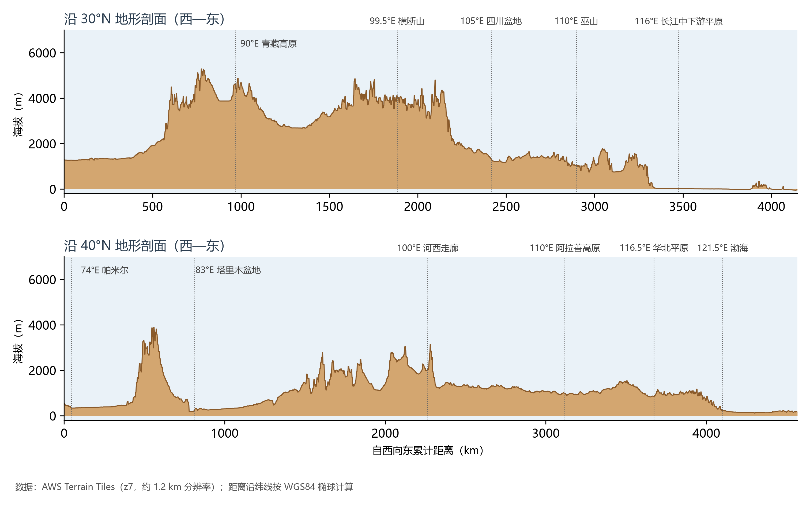
图 3-2 沿 30°N 与 40°N 的地形剖面：两条剖面直观呈现“一个斜面、两级台阶”——自帕米尔、青藏高原到东部平原，约 4 000 km 的水平行程内海拔下降了约 4 500 m。
第一级阶梯主要由号称“地球第三极”的青藏高原与藏北内陆的柴达木盆地构成。其面积约占全国陆地面积的四分之一。在距今约 6 500 万年前始新世初期的喜马拉雅造山运动中，印度板块强烈挤压俯冲至欧亚板块之下，地壳遭受极其强烈的水平压缩与垂向隆升，使得这一区域平均海拔抬升至 4 000 m 以上。高原上雪峰林立，5 000~6 000 m 以上的极高山连绵不断，冰川广布，是亚洲各大骨干水系的水塔源头。
连接第一级与第二级阶梯的界线，由昆仑山脉—阿尔金山脉—祁连山脉—横断山脉构成。这条界线是中国大陆西部最雄伟的构造断裂带，地形落差普遍在 2 000~3 000 m 以上。在祁连山北麓，山体以近乎垂直的气势直插河西走廊戈壁平原；在横断山脉地带，高山深谷相间，岭谷高差常达 3 000~4 000 m，是世界上地表起伏最为剧烈破碎的区域之一。
第二级阶梯海拔大多在 1 000~2 000 m 之间，面积约占全国国土的一半，地形类型最为丰富复杂： - 三大高原：内蒙古高原（地势坦荡辽阔）、黄土高原（深厚风积黄土与水土侵蚀沟壑）、云贵高原（喀斯特溶蚀峰林洼地）； - 三大盆地：准噶尔盆地（西北开口受西风影响）、塔里木盆地（深处内陆由极端干旱沙漠覆盖）、四川盆地（群山环抱的湿润红层紫色土盆地）。
连接第二级与第三级阶梯的界线，自北而南由大兴安岭—太行山脉—巫山—雪峰山绵延数千公里构成。地球物理探测表明，这条分界线不仅是地貌形态的陡落线（地势在数十公里水平距离内骤降千米以上），更是一条贯穿我国东部地幔岩石圈的布格重力异常梯度带。分界线以西，陆壳深厚、地势高耸、以高原山地为主；分界线以东，地壳显著减薄、断陷沉降、以开阔平原和近海丘陵为主。
第三级阶梯海拔多在 500 m 以下，自北向南舒展着中国最辽阔的三大平原——东北平原、华北平原、长江中下游平原，周边镶嵌着辽东半岛、山东半岛及江南各省的低山丘陵。再向东，地势隐入水深不足 200 m 的渤海、黄海、东海浅海大陆架，直至冲绳海槽与南海深海盆地。
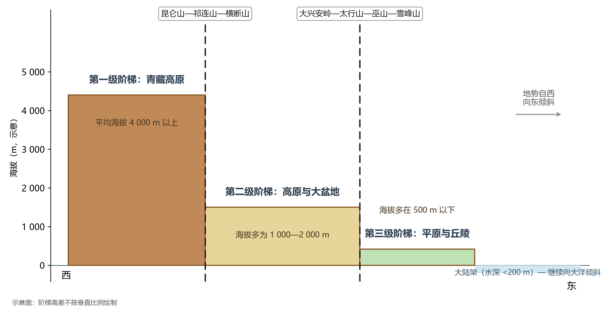
图 3-3 三级阶梯示意：自青藏高原经两级台阶到大陆架的地势结构（块状示意图）。
地势三级阶梯决非一张静态的背景板，而是时刻驱动水循环、大气环流与经济要素流动的物理发动机：
| 控制领域 | 地形地势驱动机制 | 关键地理效应与现实影响 |
|---|---|---|
| 气候与水汽 | 面向海洋的大型阶梯状斜面开口，利于太平洋东南季风与南海西南季风层层爬升深入 | 阻断内陆水汽散失，使丰沛降水深入内陆千余公里；青藏高原隆升阻挡冷空气并驱动季风环流 |
| 河流与水文 | “西高东低”决定大江大河总体东流入海；阶梯过渡带形成巨大的天然落差（落差数百至上千米） | 长江、黄河、珠江横贯东西沟通内地与沿海；金沙江、三峡、黄河上游聚集全国 70% 以上水能资源 |
| 交通与区隔 | 东西向阶梯过渡带山高谷深、横切大地；东部平原坦荡连绵、河湖连网 | 东西向通道工程极其险巨（如川藏铁路、宜万铁路）；第三级阶梯构筑了四通八达的高铁与运河网络 |
| 农业与经济 | 阶梯海拔直接影响气温垂直直减（每升高 1 000 m 降温约 6 ℃）与平原耕地集中度 | 第三级阶梯集聚全国半数以上耕地与近七成工业产值；第一级阶梯为高寒牧区，第二级阶梯农牧交错 |
中国东部地势平缓低下，使夏季来自太平洋与南海的温暖湿润季风气流能够畅通无阻地向西北腹地挺进，深入华北平原、东北平原乃至黄土高原，造就了大面积的雨热同期气候。与此同时，平均海拔超 4 000 m 的第一级阶梯青藏高原，如同一座耸入中对流层的巨大热力岛和动力屏障：夏季它作为一个巨大的高架热源，强烈抽吸低纬海洋湿热空气北上，直接促成了强盛的东亚季风；冬季则如同中流砥柱，迫使西风环流分流为南北两支，极大加剧了北方干冷风暴与南方相对湿润的格局分异。
“百川东到海，何时复西归。”西高东低的地势决定了我国长江、黄河、珠江、澜沧江、黑龙江等主要骨干江河均发源于第一、二级阶梯，顺应地势浩荡东流，自然沟通了东西内陆与沿海的交通物流大动脉。尤为壮观的是，当巨量江水从高一级阶梯跌入低一级阶梯时，切穿重重山脉，形成了险峻深邃的峡谷急流区（如金沙江虎跳峡、长江三峡、黄河龙羊峡至青铜峡段）： - 全国水能理论蕴藏量达 6.94 亿 kW，其中 70% 以上高度富集于第一、二级阶梯交界处； - 三峡工程、白鹤滩水电站、溪洛渡水电站、乌东德水电站、向家坝水电站——世界前十二大水电站中中国独占六座，全部精准落位于阶梯分界线的天然峡谷落差带上，构成了“西电东送”工程的国家级清洁能源底座。
地势阶梯对人类交通工程和产业布局构成了天然的成本过滤器： - 工程难度指数级跃升：在第三级阶梯建设高铁与高速公路，地势平坦、路网密度达全国平均数倍；而穿越第一、二级阶梯界线时，工程则面临深大活动断裂、极高地应力、高地温与高差急变的极限挑战。正在推进建设的川藏铁路（雅安至林芝段），需要在横断山脉数个山谷间多次“剧烈爬升与下切”，全线桥隧比超过 90%，是挑战地球地质极限的超级工程； - 人口经济重力场：自秦汉以来，尤其是南宋经济重心南移之后，第三级阶梯的三大平原与近海盆地，以其坦荡的地貌、充沛的水热与优良的通航条件，始终承载着全国 60% 以上的常住人口、70% 以上的有效耕地与 80% 以上的工业经济总量。
将中国三级阶梯的宏观构架置于世界各大洲大国中进行横向审视，可以发现深刻的地貌形态差异：
| 国家 | 宏观地势空间构架 | 主要倾斜与水汽朝向 | 地形对文明分布的影响 |
|---|---|---|---|
| 中国 | 西高东低，呈完整三级阶梯状逐级跌落 | 面向太平洋东倾，背依内陆 | 第一级阶梯抬升至 4 000 m 绝无仅有；东倾迎风造就季风绿洲与平原人口核心 |
| 美国 | 东西两侧为高山山系，中部为坦荡开阔大平原 | 东西受高山阻挡，南北向敞开 | 太平洋水汽受科迪勒拉山系阻隔；中部南北纵通易受北极极寒与墨西哥湾暖湿对撞 |
| 俄罗斯 | 西低东高，自东向西呈阶梯状抬升（高原山地在东） | 总体向北冰洋倾斜 | 绝大多数骨干大河向北流入封冻北冰洋，未能形成东西贯通的水系经济走廊 |
| 印度 | 北部极高山屏障、中部低陷冲积平原、南部古老台地 | 南北阶梯对峙，面向印度洋敞开 | 喜马拉雅山阻挡北方寒风，印度洋季风正面横扫，恒河平原成为超高密度农耕区 |
中国独特的大陆斜面构造，在于其第一级阶梯高度与跨度举世无双——它不仅是一块高原，更是高悬于整个东亚平原上方的“生态水塔”与“气候动力机”。理解了三级阶梯的起伏，也就掌握了打开中国全境气候带谱、水系网络与区域人文格局的第一把钥匙。
在中国第一级与第二级阶梯的广袤版图上，横亘着四块性格迥异、成因各异的大型高原：一块是屹立于中对流层、被誉为“世界屋脊”的高寒雪域；一块是古老平缓、风吹草低见牛羊的千里温带草原；一块是被漫长风沙与暴雨流水合力雕琢成千沟万壑的厚层黄土世界；还有一块则是石峰林立、暗河奔涌的亚热带溶岩大地。四大高原总面积合计达 约 430 万 km²，占据了全国陆地国土的 近半壁江山（约 45%）。它们不仅构筑了中国自然地貌的主体骨架，更是维系国家水资源供给、生态安全屏障与气候环流稳定的源头中枢。
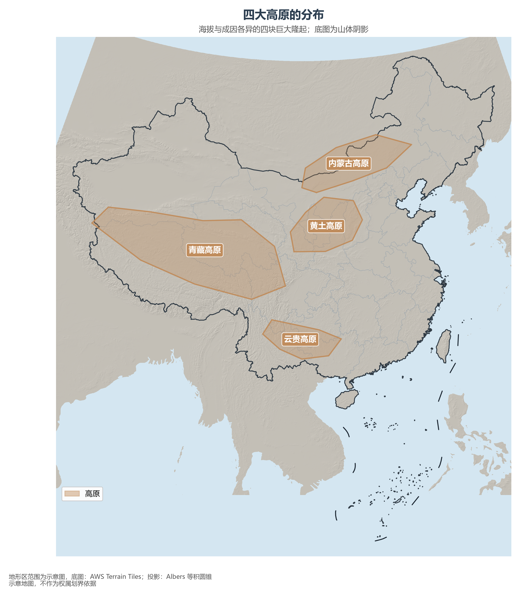
图 3-4 四大高原的分布：底图为山体阴影，色块为示意范围。
四大高原无论在岩石圈地质演化、外力雕琢方式还是地表覆被特征上，均展现出极其鲜明的地带性分异：
| 高原名称 | 面积 (万 km²) | 平均海拔 (m) | 构造与地质成因 | 核心地表形态特征 | 气候与年均降水量 | 主要土壤类型 |
|---|---|---|---|---|---|---|
| 青藏高原 | 约 250 | 4 000 以上 | 印度板块与欧亚板块强烈碰撞隆升的新生代造山带 | 雪山连绵、冰川广布、湖泊星罗、高寒荒漠与草甸 | 高原山地高寒气候；50~900 mm (自东南向西北递减) | 高山草甸土、高山草原土、高山寒冻土 |
| 内蒙古高原 | 约 70 | 1 000~1 400 | 古生代古老克拉通地台，长期受准平原化剥蚀 | 地面坦荡辽阔、起伏极度平缓、温带草原与戈壁连绵 | 温带大陆性干旱/半干旱气候；150~400 mm | 黑钙土、栗钙土、棕钙土、荒漠灰钙土 |
| 黄土高原 | 约 64 | 1 000~2 000 | 第四纪风力粉尘长期堆积覆盖与流水剧烈侵蚀流塑 | 塬、梁、峁地貌发育，沟壑纵横，地表支离破碎 | 温带季风向大陆性过渡气候；350~650 mm (夏季暴雨) | 黄绵土、褐土、黑垆土 (粉砂质，易受侵蚀) |
| 云贵高原 | 约 50 | 1 000~2 000 | 巨厚海相碳酸盐岩在亚热带高温多雨下强烈溶蚀 | 峰林峰丛交错、溶洞天坑密布、地表崎岖、山间多坝子 | 亚热带季风气候；1 000~1 500 mm (湿热多雨) | 石灰土、红壤、黄壤 (土层薄，石漠化敏感) |
青藏高原西起帕米尔高原，东至横断山脉，南抵喜马拉雅山脉，北抵昆仑山—阿尔金山—祁连山北麓，东西长约 2 800 km，南北宽约 300~1 500 km，面积达 约 250 万 km²，占据中国陆地总面积的 26.0%。作为地球上平均海拔最高、面积最广阔、地质年代最年轻的极高高原，它被国际地理学界公认为南极、北极之外的“地球第三极”：
在距今约 6 500 万年前的白垩纪末期至古近纪，印度次大陆以每年约 15 cm 的惊人速度向北漂移，与欧亚板块发生碰撞造山。强烈的地壳压缩与增厚，使地壳厚度剧增至 60~75 km。高原面上耸立着喜马拉雅、冈底斯、唐古拉、巴颜喀拉等数条海拔在 6 000 m 以上的巨大东西向山脉。高原内部根据形态分为三大差异显著的次级单元： - 羌塘高原（藏北高原）：位于昆仑山与冈底斯—念青唐古拉山之间，面积超 60 万 km²，地势平缓开阔，平均海拔达 4 500~5 000 m。气候严寒干旱，多为永久冻土与高寒草原荒漠，分布着全国最为密集的高原内流湖群（如色林错、纳木错等上千个高盐/咸水湖泊），大部分为无人区； - 柴达木盆地：青藏高原东北部的封闭高原型内流盆地，富集庞大的盐湖与矿产资源（详见 3.3 节）； - 藏南雅鲁藏布江谷地：由雅鲁藏布江干流深切形成的断陷深宽谷地，海拔降至 3 000~3 800 m，受印度洋水汽沿大峡谷逆向渗入影响，气候相对温和湿润，灌溉水源充足，自古是西藏最重要的农耕区（青稞、冬小麦主产区）与政治文化中心（拉萨、日喀则、山南均坐落于此）。
青藏高原发育着全球中低纬度地区规模最为庞大的现代冰川群（拥有冰川逾 4 万条，储水量超 4 000 km³），是长江、黄河、澜沧江（湄公河）、怒江（萨尔温江）、雅鲁藏布江（布拉马普特拉河）、印度河、恒河等十余条跨国大江大河的母亲源头，维系着亚洲下游近 20 亿人口的生产生活命脉。同时，高原巨大的物理抬升构成了中对流层的热力驱动泵，它抽吸夏季风深入东亚大陆，塑造了中国乃至整个北半球的大气环流格局（详见 4.1 节）。
内蒙古高原东起大兴安岭西麓，西至甘肃、新疆交界的马鬃山，南抵阴山山脉与明长城，北出阿尔泰山南麓延伸入蒙古国，东西绵延达 2 000 余 km，海拔多在 1 000~1 400 m 之间，面积约 70 万 km²，是中国面积第二大的高原：
与青藏高原年轻剧烈的造山隆升截然不同，内蒙古高原在地质构造上属于非常古老的古生代陆块地台。数亿年以来，构造运动长期保持大面积平稳缓慢的整体升降，缺乏强烈褶皱，历经漫长地质岁月的冰劈、风化、风蚀与流水剥蚀夷平，地表呈现出极其坦荡开阔的剥蚀准平原景观。高原面上几乎看不到尖锐的峰峦，大多呈现起伏不足数十米的波状宽谷与缓丘，“极目天舒、一览无余”。
内蒙古高原呈狭长带状东西展布，受东南季风衰减规律控制，年降水量自东向西由 450 mm 逐步递减至不足 100 mm，展现出世界上最完整、最经典的温带草地经度地带性植被梯级演变： - 呼伦贝尔高原（东部）：年降水 350~450 mm，受大兴安岭水汽拦蓄，发育水草丰茂的草甸草原与森林草原，黑钙土与栗钙土肥沃，是中国最重要的优质肉牛、乳牛与细毛羊天然牧场； - 锡林郭勒高原（中部）：年降水 250~350 mm，地表主要为典型的针茅、羊草温带典型草原，畜牧业发达； - 乌兰察布与鄂尔多斯高原（中西部）：年降水 150~250 mm，植被逐渐稀疏低矮，向荒漠草原过渡，生态承载力降低； - 阿拉善高原（西部）：年降水不足 100 mm，地表植被退化，演变为浩瀚的温带荒漠与戈壁沙丘，巴丹吉林沙漠（拥有世界上最高大的沙山）与腾格里沙漠横卧其间。
内蒙古高原坦荡平阔的地形与强盛的西北风系，使其成为国家“西电东送”工程规模最大的陆上风电与大型光伏新能源大基地，但其春季干旱大风也使其成为影响京津冀与中国北方强沙尘暴的策源通道之一（详见 4.4 节）。
黄土高原东起太行山，西至青海乌鞘岭与日月山，南抵秦岭北麓，北越长城与鄂尔多斯荒漠高原相接，总面积达 约 64 万 km²，横跨青海、甘肃、宁夏、内蒙古、陕西、山西、河南七省区，是全人类分布面积最广、堆积厚度最大、黄土地貌保存最完整的第四纪风成地层区：
地质学界公认的“风成假说”（刘东生院士等确证）指出：黄土并非河流原生沉积，而是在第四纪更新世（距今约 260 万年以来）漫长干冷冰期中，强劲的西风急流与蒙古—西伯利亚冷高压驱动的东亚冬季风，持续将中亚和我国西北内陆极端干旱区荒漠的细粉砂粉尘吹扬至中空，当风力遇到太行山、秦岭等高山阻挡减速后，降落沉降而成的巨厚堆积层。黄土高原的黄土厚度一般在 50~100 m，在甘肃兰州九州台、临夏等厚层黄土区，最大连续堆积厚度超过 300 m。
黄土由粒径在 0.005~0.05 mm 之间的均质粉砂构成，无层理、疏松多孔、富含碳酸钙结核，且具有极其发育的垂直节理。在旱季干燥坚挺，可直立成壁（天然适宜开凿窑洞居住）；但一旦遭遇夏季高度集中的暴雨冲刷浸泡，水溶侵蚀极快，地表迅速崩解溃塌。漫长的水土流失将高原面剥蚀切割为三大地貌演进形态： - 黄土塬：水土流失初期保留下来的顶面宽阔平坦、周边被陡峭侵蚀沟深切的巨大残留黄土台地。如甘肃庆阳的董志塬（面积达 900 余 km²，被誉为“天下黄土第一塬”）、陕北的洛川塬。塬面完整、土层深厚，是黄土高原最核心的耕地与城镇依托； - 黄土梁：塬面四周被纵向流水沟壑长期切穿、分割后，残留演变而成的长条状长垄状隆起山梁，呈波状延伸； - 黄土峁：黄土梁进一步被横向侵蚀切断、崩塌破碎后，残留在沟壑之间的孤立凸起的馒头状浑圆小山丘。塬、梁、峁的演变序列，直观记录了黄土地表被流水从完整逐步撕裂为支离破碎的地形解体过程。
千沟万壑的黄土地形曾经给中华民族带来深沉的水土灾难。在过去几百年间，黄土高原全域水土流失面积一度超过总面积的 70%，年均土壤侵蚀模数高达数千至数万吨/km²，每年将平均 16 亿吨泥沙倾泄入黄河，造成黄河下游泥沙淤积演变成悬河（详见 5.3 节）。
自 1999 年国家启动退耕还林还草工程与黄河流域小流域综合治理以来，通过“塬面整修梯田、沟头修筑防护工程、沟道建设淤地坝拦泥淤地、陡坡全域退耕还林造林”，黄土高原上演了震撼世界的“由黄变绿”生态逆转： - 林草植被覆盖率由 1999 年的 31.6% 持续跃升至 2024 年的 67% 以上，生态绿色防线向北推进了 400 余公里； - 黄河干流主要水文站实测年均输沙量已从历史高峰的 16 亿吨骤减至近年来不足 2 亿吨，“一碗水半碗沙”的浊浪正逐步转为绿水常流。
云贵高原位于中国西南部，西起横断山脉哀牢山，东止雪峰山，北临四川盆地，南接广西丘陵，涵盖云南省哀牢山以东的大部与贵州省全境，平均海拔在 1 000~2 000 m 之间，地势由西北向东南呈阶梯状倾斜，总面积 约 50 万 km²：
云贵高原在古生代至三叠纪曾是广袤平缓的古特提斯洋温暖浅海，沉积了厚达数千米的纯净碳酸盐岩（石灰岩、白云岩）。伴随喜马拉雅造山带抬升，这片巨厚的石灰岩高原出露地表。由于深处亚热带季风气候区，年降水量充沛（1 000~1 500 mm）且气温较高，溶解了空气和土壤中大量弱酸性二氧化碳的地下水与地表径流，对碳酸盐岩开展了数百万年如一日的化学溶蚀与机械冲刷侵蚀： - 地表发育出石芽、溶沟、落水洞、峰丛、峰林、孤峰以及垂直下坠百米以上的天坑与地缝； - 地下则发育出纵横交错成百上千公里的多层溶洞系统与地下暗河水网； - 地表犬牙交错、奇峰突兀，因此素有“地无三里平”的地理断语。贵州荔波、施秉，云南石林等典型岩溶景观已被联合国教科文组织集体列入《世界自然遗产名录》（详见 3.5 节）。
喀斯特地貌赋予了云贵高原鬼斧神工的视觉景观，却也带来了极端严酷的水土赋存矛盾——“地表水贵如油，地下水滚滚流”。由于地表岩石裂隙和溶洞遍布，降雨迅速通过漏斗落水洞渗入极深的地下暗河系统，导致降水量虽超千毫米，地表却常年发生工程性极度干旱；加上碳酸盐岩成土速度极慢（每形成 1 cm 冲积厚土层需数万年岩石风化），地表水土极易流失而裸露出不毛灰岩，形成脆弱的“石漠化”地带。
为了在这片破碎的溶岩大地上繁衍生息，世代各族人民将生产生活重心锚定在高原上被称为“坝子”的低平盆地上： - 坝子的地理实质：是在山地与峰丛环绕中，由局部断陷构造、溶蚀洼地充填河流冲积物而形成的平坦低洼盆地或缓坡谷地； - 全区重力中枢：虽然坝子总面积仅占云贵高原总面积的 约 5%，但全区几乎全部大中城市（昆明坝子、曲靖坝子、贵阳盆地、遵义平坝等）、近 80% 的人口、全域九成以上的高产水田和现代化交通干道，均高度浓缩集聚在这 5% 的珍贵平地上。
高原特殊的喀斯特漏斗洼地甚至衍生出意想不到的现代科学工程价值——贵州平塘县天然形成的封闭喀斯特大窝凼洼地，排水良好、电磁宁静，被国家选址建成了直径 500 米的世界最大单口径巨型射电望远镜——“中国天眼”（FAST），成为深空天文探测的国之重器。
将中国四大高原与世界其他大陆的高原形态进行综合横向对比，更能看清其独特的战略价值：
| 高原名称与国家 | 面积 (万 km²) | 平均海拔 (m) | 水文与河流系统关联 | 对周边农耕文明的辐射控制力 |
|---|---|---|---|---|
| 青藏高原（中国） | 约 250 | 4 000 以上 | “亚洲水塔”，十余条世界大河源头 | 居高临下统摄东亚与南亚数十亿农耕人口命脉 |
| 内蒙古高原（中国） | 约 70 | 1 000~1 400 | 黑龙江水系源区，北方内流区 | 欧亚大草原南缘，北方风能与现代游牧屏障 |
| 黄土高原（中国） | 约 64 | 1 000~2 000 | 黄河中游核心水土沉积与补给区 | 华夏农耕文明摇篮，半坡仰韶文明与秦汉故都 |
| 云贵高原（中国） | 约 50 | 1 000~2 000 | 长江上游（金沙江）与珠江主要发源地 | 西南多民族走廊，面向东南亚的生态屏障 |
| 巴西高原（巴西） | 约 500 | 750 (多在千米以下) | 巴拉那河等发源地，起伏平缓低矮 | 巴西农业与牧业核心大粮仓 |
| 德干高原（印度） | 约 160 | 600~900 | 戈达瓦里河等东流入孟加拉湾 | 印度半岛内部棉花种植黑土台地 |
| 科罗拉多高原（美国） | 约 39 | 1 500~2 100 | 科罗拉多河深切大峡谷 | 荒漠干旱半荒漠，以地质国家公园旅游为主 |
四大高原合计占全国陆地面积的 45%，这个比例在世界大国中绝无仅有。中国的高原不直接产出大量的精耕粮食，却通过高海拔积雪冰川掌握着大洋水循环的水龙头，通过千里平原与黄土调节着季风扬尘与水土生态。高原是中国自然地理的“源头与水塔”，也是东亚季风系统与生态环境最上游的天然安全屏障。
如果把高原看作大地抬升的“高地台面”，盆地与平原就是地壳构造运动与外力沉积合力塑造的“超级容器”与“辽阔铺面”：四大盆地深嵌在第二级阶梯与第一级阶梯交汇处，三大平原舒展于第三级阶梯的东部滨海与大河下游。七大单元合计面积近 260 万 km²，承载了全国 65% 以上的耕地面积与超过 60% 的常住人口，是中国地质构造、自然资源富集与华夏农业文明、现代工业城市群最核心的地理底盘。
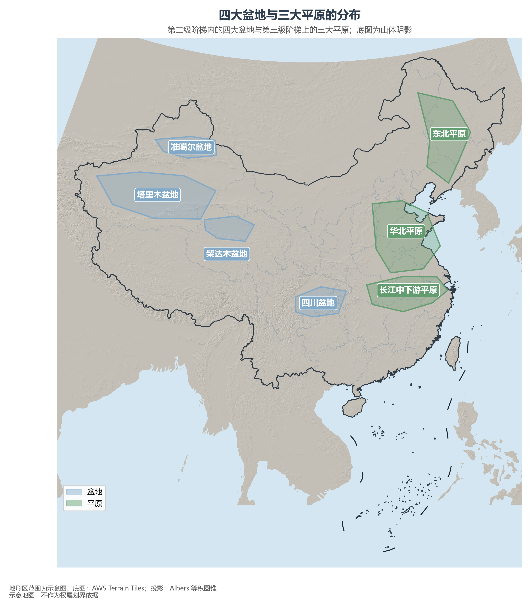
图 3-5 四大盆地与三大平原的分布：底图为山体阴影，四大盆地嵌入第二级阶梯，三大平原舒展于第三级阶梯，构成中国最具承载力的几何空间。
中国的“四大盆地”形态各异、生境迥绝。除柴达木盆地高踞青藏高原东北部（第一级阶梯内部）之外，塔里木、准噶尔与四川盆地均坐落在第二级阶梯，且被高耸的阿尔泰山、天山、昆仑山、祁连山、秦岭、大巴山等环抱。四周山岭的强烈阻隔，赋予了盆地极其独特的小气候环流、水系汇流机制以及深层油气矿产富集规律。
| 盆地名称 | 所在阶梯 | 面积（约） | 基底海拔 | 地候与植被特征 | 典型地貌内核 | 核心战略资源与经济地位 |
|---|---|---|---|---|---|---|
| 塔里木盆地 | 第二级阶梯 | 53 万 km² | 800—1 300 m | 极端干旱温带大陆性气候；荒漠与绿洲灌丛 | 塔克拉玛干沙漠（33.7 万 km² 流动沙丘）、山前洪积扇绿洲 | 中国最大内陆盆地；西气东输主力气源地（富满/顺北超深层油气）、优质商品棉与林果基地 |
| 准噶尔盆地 | 第二级阶梯 | 38 万 km² | 500—1 000 m | 中温带干旱半干旱气候；受西风水汽滋润 | 古尔班通古特沙漠（4.88 万 km² 固定/半固定沙漠）、风蚀雅丹 | 克拉玛依油田、准东巨型煤田；天山北坡城市带与绿洲现代农业灌溉区 |
| 柴达木盆地 | 第一级阶梯 | 25.7 万 km² | 2 600—3 000 m | 高原高寒干旱气候；高寒荒漠、盐滩与风蚀丘陵 | 察尔汗等巨型盐湖群、雅丹地貌、荒漠戈壁 | “高原聚宝盆”；国家战略级钾盐、盐湖锂、硼、镁产业基地，青藏交通大枢纽 |
| 四川盆地 | 第二级阶梯 | 26 万 km² | 300—700 m | 亚热带季风性湿润气候；常年多雾阴湿、少日照 | 紫色砂页岩丘陵、川东平行岭谷、成都冲积平原 | “天府之国”；全国最稠密人口承载区（近 1 亿人），成渝地区双城经济圈，粮食与天然气基地 |
塔里木盆地位于天山与昆仑山、阿尔金山之间，东西长约 1 500 km，南北宽约 600 km，面积达 53 万 km²，是世界面积最大的封闭内陆盆地。
准噶尔盆地夹于天山北坡与阿尔泰山之间，平面呈朝向西北开口的不规则三角形，面积约 38 万 km²。
柴达木盆地坐落于青藏高原东北缘，四周为阿尔金山、祁连山与昆仑山所环抱，平均海拔 2 600—3 000 m，面积约 25.7 万 km²。
四川盆地西依青藏高原东缘的邛崃山、大雪山，北靠大巴山与米仓山，东接巫山，南临大娄山与云贵高原，面积约 26 万 km²。
[!NOTE] 陆地极低点：吐鲁番盆地
在四大盆地之外，位于天山支脉博格达山与库鲁克塔格山之间，深陷着一个面积仅约 5 万 km² 的小型山间断陷盆地——吐鲁番盆地。盆地底部极其低洼，大部分地面低于海平面，中央的艾丁湖洼地水面高程为 -154.31 m，是中国陆地最低点，也是仅次于西亚死海（约 -430 m）的世界第二低陆地。夏季地表极限温度可超 70 ℃，以“火洲”闻名于世，古代劳动人民利用山麓地下暗渠修建了上万条“坎儿井”，构筑起戈壁沙漠深处独特的绿洲节水奇迹。
中国的三大平原——东北平原、华北平原与长江中下游平原，总面积约 85 万 km²，全部分布在第三级阶梯上。它们主要是各大水系携带大量泥沙在近海地壳沉降带经过漫长地质时期堆积填平而成的冲积平原。平坦辽阔的地表、深厚肥沃的土壤、密布的水网与优越的水热条件，使三大平原成为中华文明持续繁衍与现代中国工农业发展的中枢。
| 平原名称 | 面积（约） | 平均海拔 | 主导成因与冲积水系 | 主要土壤类型 | 耕作制度与主力作物 | 水土资源瓶颈 | 核心城市群与战略定位 |
|---|---|---|---|---|---|---|---|
| 东北平原 | 35 万 km² | < 200 m | 黑龙江、松花江、嫩江、辽河冲积与漫流 | 黑土、黑钙土、草甸土（肥力极高） | 一年一熟；大豆、玉米、粳稻、春小麦 | 积温不足、春季易旱、黑土层流失退化 | 哈长城市群、辽中南工业基地；“天下粮仓”国家粮食安全最稳固压舱石 |
| 华北平原 | 30 万 km² | < 50 m | 黄河、淮河、海河合力冲积（黄河为主） | 潮土、褐土、风沙土与局部盐碱土 | 两年三熟或一年两熟；冬小麦、夏玉米、花生、棉花 | 水资源极度紧缺、地下水超采与春旱频发 | 京津冀协同发展区、中原城市群；政治文化中心与北方主粮核心产地 |
| 长江中下游平原 | 20 万 km² | < 50 m（下游 2—10 m） | 长江干支流及太湖、洞庭、鄱阳水系泛滥堆积 | 水稻土、红壤母质冲积土 | 一年两熟至三熟；双季稻、油菜、淡水渔业 | 汛期洪涝灾害频发、耕地受工业建设蚕食 | 长江三角洲城市群、长江中游城市群；全国经济活力最强、高新技术制造业枢纽 |
东北平原位于大兴安岭、小兴安岭与长白山脉之间，南北长约 1 000 km，东西宽约 400 km，面积达 35 万 km²，是中国面积最大的平原。
华北平原西起太行山脉，东临渤海与黄海，北界燕山，南抵桐柏山与大别山，西南与桐柏山相连，面积约 30 万 km²，又称黄淮海平原。
长江中下游平原西起巫山，东抵东海与黄海之滨，北接大别山与淮阳丘陵，南邻江南丘陵，面积约 20 万 km²。
三大平原与四大盆地，集中体现了中国地理格局中“地形约束与人工重塑”的深刻辩证逻辑：
如果说地势三级阶梯构成了中国大地层层跌落的“宏观骨架”，那么纵横交织的一条条高大山脉，就是支撑起这个骨架的“承重梁”与“龙脉网络”。受新生代特提斯构造域强烈闭合、印度洋板块向欧亚板块东北向俯冲碰撞，以及太平洋板块西向俯冲的联合驱动，中国成为世界上构造隆升最剧烈、地壳运动最活跃的陆地大陆。
全国山地、丘陵与高原合计占陆地面积的近 70%。这些不同走向的山脉，不仅在平面上框定出一个个形态各异的盆地、高原与平原，在垂直空间上切割出巨大的起伏落差，更天然充当着季风气候的阻隔屏障、江河水系的分水岭、生态系统的庇护所，以及中华人文地理与历史政区的边界基石。
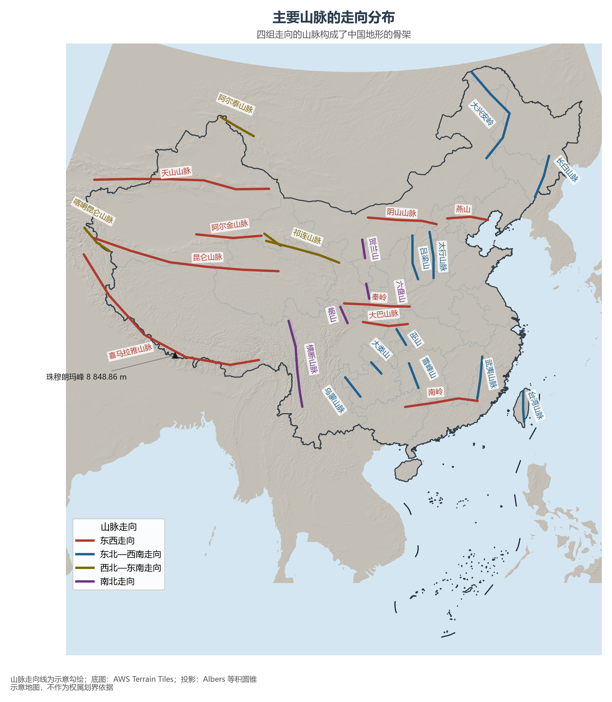
图 3-6 主要山脉的走向分布：四组走向以颜色区分，山脉线为示意勾绘。
地质构造力学的剪切与挤压应力场，赋予了中国山系高度规律的走向格局。按照走向特征，全国主要山脉可系统划分为五大组群：
| 走向系统 | 代表性山脉群 | 最高峰及海拔 | 地质力学成因背景 | 关键地理分水岭与分界作用 |
|---|---|---|---|---|
| 东西走向（纬向构造体系） | 北列：天山山脉、阴山山脉 中列：昆仑山脉、阿尔金山、祁连山、秦岭、大别山 南列：南岭（五岭） |
托木尔峰（7 443 m） 公格尔峰（7 649 m） 太白山（3 771 m） 猫儿山（2 141 m） |
欧亚板块内部古生代—中生代多期缝合带受近南北向挤压隆升 | 划分中国南北气候带（秦岭为中国最重要的南北分界线）；南岭为长江与珠江水系分水岭；天山横亘新疆分南北疆 |
| 东北—西南走向（环太平洋构造体系） | 西列：大兴安岭、太行山脉、巫山、雪峰山 中列：长白山脉、辽东丘陵千山、武夷山脉 东列：台湾山脉（中央/玉山/雪山等） |
黄岗梁（2 029 m） 小五台山（2 882 m） 白云峰（2 691 m） 黄岗山（2 158 m） 玉山（3 952 m） |
太平洋板块向西俯冲导致的弧后伸展与大陆东缘挤压造山带 | 西列是第二级与第三级阶梯的宏大分界线，也是黄土高原与华北平原、四川盆地与长江中下游的分水屏障；东列玉山为中国东部最高峰 |
| 西北—东南走向 | 阿尔泰山脉、祁连山脉、小兴安岭 | 友谊峰（4 374 m） 团结峰（5 808 m） |
中亚造山带及青藏高原北东向挤出滑移剪切 | 阿尔泰山为中国与哈、俄、蒙天然界山；祁连山为青藏高原东北边缘，河西走廊生命“水塔” |
| 南北走向（经向构造体系） | 贺兰山、六盘山、横断山脉（沙鲁里山、大雪山、云岭等） | 贡嘎山（7 556 m） 贺兰山主峰（3 556 m） |
青藏高原物质向东逃逸受华南地块与扬子准地台阻挡而强烈向南挤出 | 横断山脉形成壮丽的“四江并流”平行岭谷与垂直自然带；贺兰山阻挡腾格里与乌兰布和沙漠东侵，维系银川平原“塞上江南” |
| 弧形走向 | 喜马拉雅山脉、喀喇昆仑山脉、冈底斯—念青唐古拉山脉 | 珠穆朗玛峰（8 848.86 m） 乔戈里峰（8 611 m） |
印度板块向北直接楔入碰撞欧亚板块的前沿锋面断裂褶皱带 | 青藏高原南部天然巨型围墙；拦截印度洋西南季风水汽，孕育全球最密集高山极峰群与现代冰川群 |
东西走向山系构成了中国大陆最古老的纬向骨架，如同三条巨大的横梁锁定了大地的经纬：
这组走向由三列平行展布的山脉组成，是东亚大陆岩石圈受西太平洋俯冲带影响形成的典型盆山体系：
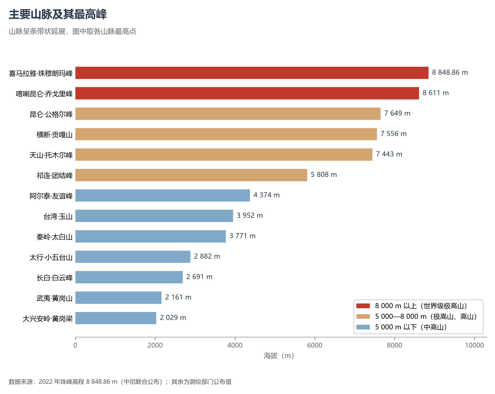
图 3-7 主要山脉及其最高峰海拔：8 000 m 级的极高峰全部集中在喀喇昆仑与喜马拉雅两大弧形山脉，体现了新生代青藏高原板块碰撞的无双力量。
全球海拔超过 8 000 米的极高峰共有 14 座，全部坐落于喜马拉雅山脉和喀喇昆仑山脉之中。受控于印度板块每年约 40—50 mm 向北与欧亚板块的汇聚挤压，这一区域隆升速率惊人，其中有 9 座位于中国国界线上或完全位于中国境内：
| 山峰名称 | 海拔高程 | 所属山系 | 地理区位 / 边境归属 | 攀登与地学特殊性 |
|---|---|---|---|---|
| 珠穆朗玛峰 | 8 848.86 m | 喜马拉雅山脉 | 中国西藏定日县 / 尼泊尔界峰 | 世界第一高峰；2020年中尼联合精确测定雪面高程，地质年抬升率约 4 mm |
| 乔戈里峰 (K2) | 8 611 m | 喀喇昆仑山脉 | 中国新疆叶城县 / 巴基斯坦界峰 | 世界第二高峰；地形陡峭、气候极其恶劣，被称为“野蛮巨峰”，攀登致死率极高 |
| 洛子峰 | 8 516 m | 喜马拉雅山脉 | 中国西藏定日县 / 尼泊尔界峰 | 世界第四高峰；北侧有巨大的洛子壁，与珠峰以南坳相连 |
| 马卡鲁峰 | 8 463 m | 喜马拉雅山脉 | 中国西藏定日县 / 尼泊尔界峰 | 世界第五高峰；峰体巨大呈巨型金字塔形，冰川裂隙极其发育 |
| 卓奥友峰 | 8 201 m | 喜马拉雅山脉 | 中国西藏定日县 / 尼泊尔界峰 | 世界第六高峰；常作为高海拔商业登山和科学科考的重要基地峰 |
| 希夏邦马峰 | 8 027 m | 喜马拉雅山脉 | 中国西藏聂拉木县（全境） | 全球 14 座 8 000 m 级高峰中，唯一一座完全位于中国境内的极高峰 |
| 加舒尔布鲁木 I 峰 | 8 068 m | 喀喇昆仑山脉 | 中国新疆叶城县 / 巴基斯坦界峰 | 世界第十一高峰（隐峰），喀喇昆仑山脉第二高峰 |
| 布洛阿特峰 | 8 051 m | 喀喇昆仑山脉 | 中国新疆叶城县 / 巴基斯坦界峰 | 世界第十二高峰（宽峰），与 K2 仅相距 8 公里 |
| 加舒尔布鲁木 II 峰 | 8 035 m | 喀喇昆仑山脉 | 中国新疆叶城县 / 巴基斯坦界峰 | 世界第十三高峰，喀喇昆仑山脉冰川群的核心汇流区 |
除了 8 000 m 级峰，中国各大地理单元的最高峰同样代表了极其壮观的地貌断代：
在中国的地理认知系统中，山脉不仅是海拔的凸起，更是所有自然要素与人文格局的分野线。记忆并理解以下核心山脉的分界功能，是把握全书后续各章节的关键钥匙：
| 山脉名称 | 宏观地形区界线 | 气候与干湿区分界 | 流域分水岭 | 历史人文与生态屏障 |
|---|---|---|---|---|
| 秦岭 | 南方地区 与 北方地区 | 暖温带 与 亚热带（1月0℃等温线）；湿润区 与 半湿润区（800mm等降水量线） | 长江流域 与 黄河流域 | 水田稻作 与 旱地麦作界线；南船北马传统交通界线；大熊猫、朱鹮核心栖息地 |
| 大兴安岭 | 内蒙古高原 与 东北平原；第二阶梯 与 第三阶梯 | 季风区 与 非季风区（400mm等降水量线）；半湿润区 与 半干旱区 | 黑龙江水系（松花江/嫩江）与 内流区呼伦贝尔水系 | 农耕文化 与 游牧/渔猎文化界线；大兴安岭针叶林北方林海防风固沙屏障 |
| 太行山脉 | 黄土高原 与 华北平原；第二阶梯 与 第三阶梯 | 季风迎风坡多地形雨，背风坡干旱少雨 | 黄河干流（汾河水系）与 海河水系各支流 | 历史上“天下九塞”之一；华北抗日根据地天然堡垒；断裂带陡崖地貌 |
| 巫山 | 四川盆地 与 长江中下游平原；第二阶梯 与 第三阶梯 | 阻滞东部湿润气流长驱直入，形成长江峡谷微气候 | 长江干流深切（瞿塘峡、巫峡、西陵峡） | “巴蜀文化”与“荆楚文化”地理分野；三峡水利枢纽与防洪中枢地带 |
| 南岭 | 江南丘陵 与 华南两广丘陵 | 中亚热带 与 南亚热带界线；冬季阻挡冷空气南侵 | 长江水系（湘江、赣江）与 珠江水系（西江、北江） | 中原农耕区与岭南海洋商贸文化界线；古代南北五大驿道孔道 |
| 贺兰山 | 内蒙古高原 与 宁夏平原（黄土高原西北角） | 季风区与非季风区边缘；极端干旱荒漠与干草原界线 | 黄河干流水系 与 西北阿拉善内流区 | 抵挡乌兰布和、腾格里沙漠东移侵吞，造就“塞上江南”银川平原沃土 |
| 祁连山 | 青藏高原东北缘 与 河西走廊（内蒙古高原） | 高原高寒区 与 西北温带干旱荒漠区界线 | 柴达木内流水系、青海湖水系 与 黑河、石羊河、疏勒河等河西内流河 | 河西走廊粮果基地的“生命水源母体”；丝绸之路河西咽喉命脉 |
| 武夷山 | 江南丘陵（赣江流域）与 浙闽丘陵（闽江流域） | 阻挡冬季偏北气流越海，保护福建沿海温湿 | 鄱阳湖赣江水系 与 闽江水系 | 世界文化与自然双重遗产；大红袍武夷岩茶发祥地；东亚生物基因库 |
从全球构造地貌视角审视，中国是世界上最典型的陆—陆碰撞活跃造山带国家。
在三级阶梯、四大高原、四大盆地、三大平原与纵横山系的常规宏观地形框架之下，中国幅员辽阔的疆土在内外营力的极致交响中，发育出一系列形态奇异、成因复杂、举世罕见的特殊地貌地质奇观。水流溶蚀出幽深莫测的喀斯特暗河与峰林，大风与烈日磨蚀出广袤沙海与苍凉雅丹，暴雨在巨厚粉尘层上撕扯出千沟万壑的黄土沟壑，严寒与高海拔积聚起滋养百川的现代冰川与多年冻土，而地球内部炙热的岩浆则喷涌出千姿百态的火山熔岩。
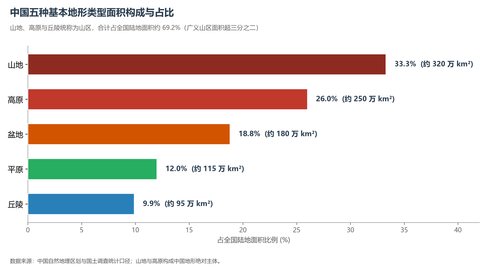
图 3-9 全国五种基本地形类型面积构成：山地（33.3%）、高原（26.0%）、盆地（18.8%）、平原（12.0%）、丘陵（9.9%），山地与高原占据国土近六成。
这些特殊地貌不仅构成了中国最具辨识度的地学景观骨架，孕育了全国绝大多数联合国教科文组织世界自然遗产和世界地质公园，更深刻塑造了不同区域的土壤特质、水资源赋存形式与生态承载极限。
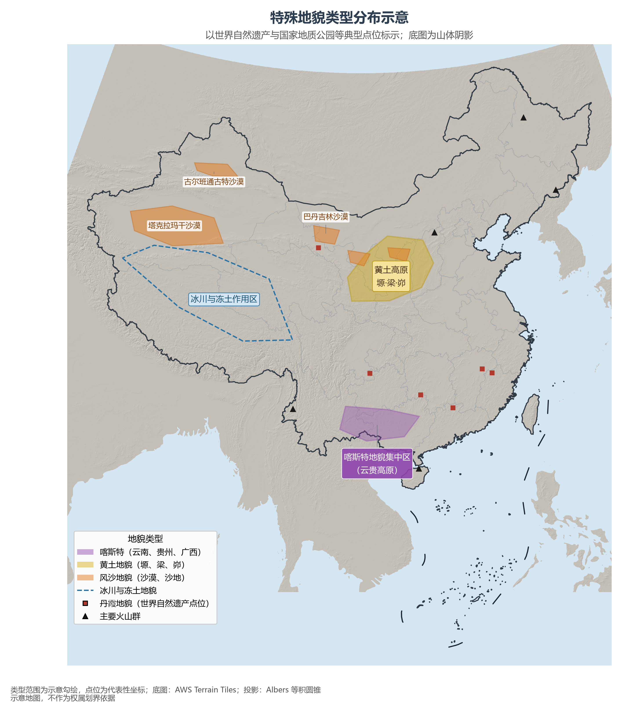
图 3-8 特殊地貌类型分布示意：类型范围为示意勾绘，点位选取世界自然遗产等代表性坐标。
喀斯特（Karst，地质学称岩溶）是可溶性岩石（主要为石灰岩、白云岩等碳酸盐岩）受到含有二氧化碳的地表水和地下水溶蚀、侵蚀以及重力崩塌、钙华沉淀所形成的各种地貌形态的总称。
| 演化阶段 / 地貌形态 | 核心形态特征 | 典型发育地区与代表景点 | 地理学机制与水文意义 |
|---|---|---|---|
| 溶沟、石芽、石林 | 地表岩石沿节理面溶蚀裂开，石柱林立，高数米至数十米 | 云南昆明石林（世界自然遗产） | 喀斯特发育初始阶段，雨水沿碳酸盐岩垂直裂隙强烈溶蚀下切 |
| 峰丛洼地 / 盲谷 | 基部基岩相连、上部分离成簇的高耸石峰，簇间封闭洼地深度达百米 | 贵州荔波、贵州平塘、广西环江 | 地下水位深埋，垂直向下强溶蚀；平塘大窝凼为中国天眼（FAST）天然选址 |
| 天坑（巨型岩溶漏斗） | 深度与口径超百米、四周陡崖环绕的巨型陷坑，底部常通暗河 | 重庆奉节小寨天坑（深 662 m，世界最大）、广西乐业天坑群 | 地下巨型溶洞大厅受地下河长期冲刷淘空，顶部岩层发生剧烈重力巨型崩塌 |
| 峰林谷地与孤峰残丘 | 石峰孤立挺立于宽广冲积平原之上，基部互不相连，奇峰倒影 | 广西桂林漓江两岸、阳朔峰林、贵州万峰林 | 喀斯特演化成熟晚期，地下河演变为地表河，侧向溶蚀与河流漫流堆积占优 |
| 地下溶洞与暗河系统 | 地下数层连通的宏大空腔，发育石钟乳、石笋、石柱、地下瀑布 | 贵州绥阳双河洞（亚洲第一长洞，已探明超 400 km）、织金洞 | 地下水在承压与无压状态下长年沿层理溶蚀流淌，形成立体隐秘水网 |
| 高寒钙华梯池（沉积地貌） | 泉水出露后温度升高、压力降低释放 CO₂，碳酸钙沉淀为阶梯彩池 | 四川黄龙、九寨沟（高寒喀斯特） | 特殊的低温水化学沉淀，梯级边石坝与清澈碧水构成高原人间瑶池 |
丹霞地貌是指在中生代至新生代陆相产状平缓的厚层红色砂岩、砾岩地层（俗称“红层”）分布区，受地壳抬升、外力流水切割、重力崩塌及风化侵蚀，所形成的以“顶平、身陡、麓缓”为特征的方山、石墙、石柱、赤壁与峡谷地貌。
在中国西北内陆年降水量低于 200 mm 甚至不足 50 mm 的温带大陆性极端干旱区，外力流水作用急剧退化，风力跃升为塑造地貌的绝对主导营力，造就了雄浑浩瀚的巨型沙漠（风积地貌）与千姿百态的雅丹残丘（风蚀地貌）。
| 地貌系统 | 营力机制与形成过程 | 空间分布与规模特征 | 代表性景观与工程现实 |
|---|---|---|---|
| 大沙漠与沙地（风积地貌） | 强劲定向风搬运松散砂质碎屑物，在低洼避风处沉积形成流动或固定沙丘 | “八大沙漠”：塔克拉玛干、古尔班通古特、巴丹吉林、腾格里、柴达木、库姆塔格、库布齐、乌兰布和；“四大沙地”：毛乌素、浑善达克、科尔沁、呼伦贝尔 | 塔克拉玛干流动沙丘占 85%；巴丹吉林沙漠拥有海拔超 1 600 m 的“沙漠珠峰”必鲁图沙峰（相对高差 400 余米）与 140 余个沙间咸水湖群（2024年列入世界自然遗产） |
| 雅丹地貌（风蚀地貌） | 维吾尔语“雅尔丹”（陡壁的小丘）。干涸古湖相/河流相水平泥岩砂岩地层，经长期风蚀与间歇性暴雨冲刷形成垄槽相间残丘 | 主要分布在新疆罗布泊周边、柴达木盆地中西部、准噶尔盆地乌尔禾等极端干旱干涸古湖盆区 | 罗布泊白龙堆雅丹、三垄沙雅丹；柴达木盆地东台吉乃尔湖“水上雅丹”（全球罕见湖泊浸润风蚀丘）；克拉玛依乌尔禾“魔鬼城” |
| 荒漠化防治与生态工程 | 围绕流动沙丘侵蚀道路、农田与城市展开的防风固沙与生态屏障构筑 | 三北工程生态廊道建设、塔里木沙漠公路与和若铁路沿线“绿色长廊” | “草方格沙障”（麦草扎成 1m×1m 网格固定流沙）成为享誉全球的中国治沙发明；库布齐沙漠开创全产业链光伏治沙新路径 |
黄土地貌是在黄土高原数百米巨厚第四纪风成黄土堆积体上，受到剧烈水土流失、暴雨深切与重力塌陷共同雕琢形成的独特地貌系统。
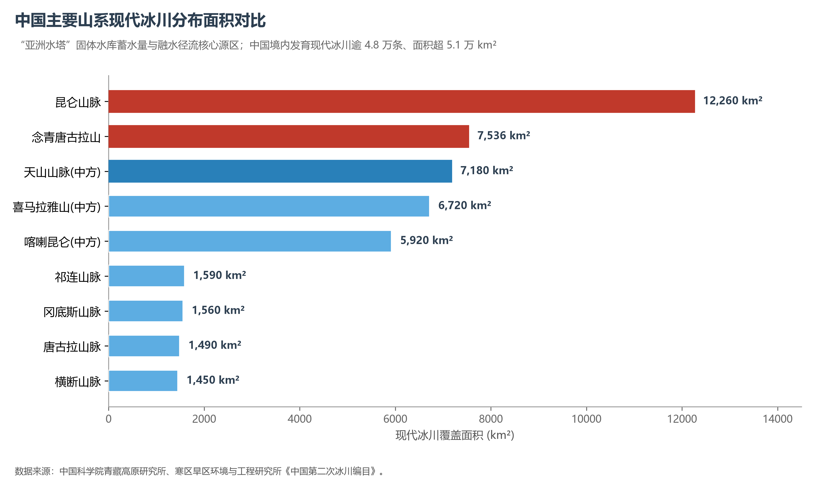
图 3-10 中国主要山系现代冰川规模对比：昆仑山脉、念青唐古拉山脉与天山山脉为我国现代冰川主要覆盖区，储量巨大。
根据中国科学院寒区旱区环境与工程研究所第二次全国冰川编目，中国现有现代冰川 48 571 条，总面积达 51 766 km²，冰川储量约 4 500 km³，是全球中低纬度地区规模最大、最集中的现代冰川聚集区。
| 冰川类型 | 气候与水汽来源 | 冰体物理特征与运动速度 | 典型代表山脉与代表冰川 |
|---|---|---|---|
| 大陆型冰川（亚大陆型 / 极大陆型） | 处于中亚内陆干旱区，降水补给稀少（年降水 200—500 mm） | 冰体温度极低（-5 ℃ 至 -10 ℃ 以下），积累消融缓慢，冰舌运动速度极慢，冰面纯净 | 昆仑山脉（中昆仑玉珠峰冰川）、天山山脉（托木尔峰现代冰川群、乌鲁木齐河源一号冰川）、祁连山脉（老虎沟12号冰川）、阿尔金山脉 |
| 海洋型冰川（温性冰川） | 紧靠印度洋暖湿季风通道，高空降水量极其充沛（年降水可达 1 000—3 000 mm） | 冰体温度接近 0 ℃，补给极其强烈，消融迅速，冰川移动流速极快（年移百米以上），末端深入森林带 | 念青唐古拉山脉东段（卡钦冰川，长 35 km，面积 172 km²，中国最大海洋型冰川）、横断山脉贡嘎山（海螺沟冰川，冰瀑落差达 1 080 m）、米堆冰川 |
青藏高原及其周边高耸入云的喜马拉雅、喀喇昆仑、天山、昆仑等巨型山系，因其广袤的永久积雪与冰川被国际地学界统称为地球“第三极”与“亚洲水塔”。 - 这里的固态水库直接孕育并补给着长江、黄河、澜沧江（湄公河）、怒江（萨尔温江）、雅鲁藏布江（布拉马普特拉河）、印度河、塔里木河、阿姆河、锡尔河等九大亚洲超级江河； - “亚洲水塔”的径流补给维系着包括中国中下游平原、中亚中东、南亚与中南半岛在内的全球近 20 亿人口的饮水、粮食生产与工业能源命脉，是名副其实的亚洲大陆生态安全与地缘稳定的战略基石。
中国多年冻土面积达 215 万 km²，占国土面积的 22.4%，其中青藏高原多年冻土面积约 106 万 km²，是全球中低纬度海拔最高、面积最广的多年冻土带。 - 冻土表层的“活动层”具有强烈的季节性水热物理变化：夏季气温升高，活动层融化形成松软泥泞的融沉软层，承载力急剧跌落；冬季气温骤降，活动层水体结冰膨胀数倍，产生强烈的冻胀顶托破坏。 - 青藏工程的中国解法：在修建青藏铁路与青藏公路的过程中，中国工程科技专家创造性提出了“主动降温、保护冻土”的核心理念，广泛采用插设热棒传热技术、片石通风气冷路基、铺设保温遮阳板以及在极不稳定的深厚不稳定冻土区采取特长高架桥跨越（“以桥代路”），成功攻克了高寒多年冻土区路基沉陷破坏这一世界百年铁路建设难题。
中国虽然整体位于板块内部碰撞挤压环境，火山活动以大陆内部裂陷与深大断裂引张为主，但在东北大陆边缘、雷州半岛—海南岛以及云南横断山地热活动带，依然保留了规模宏伟、类型极其丰富的年轻火山地貌。
| 地貌类型 | 核心动力来源 | 主要地层岩性 | 典型代表地区 | 关键生态矛盾与环境瓶颈 | 核心保护与现代利用模式 |
|---|---|---|---|---|---|
| 喀斯特地貌 | 水的化学溶蚀与侵蚀冲刷 | 碳酸盐岩（石灰岩、白云岩） | 贵州荔波、云南石林、广西桂林、重庆武隆 | 土层极其薄脆、保水性极差、“石漠化”与工程性缺水 | 世界自然遗产保护、大窝凼大科学装置（FAST）、小流域石漠化封山育林 |
| 丹霞地貌 | 流水下切侵蚀与重力崩塌 | 陆相红层（红色砂砾岩） | 广东丹霞山、江西龙虎山、湖南崀山、贵州赤水 | 红色砂岩胶结疏松，雨水冲刷下陡崖易发生重力坍塌 | 世界自然遗产名录地质科考、地质公园生态旅游开发 |
| 风积与沙漠 | 定向大风扬沙与重力沉降 | 石英砂粒、风成细沙 | 塔克拉玛干、古尔班通古特、巴丹吉林 | 植被极度稀疏、风沙掩埋交通干线、水资源极端匮乏 | 治沙草方格与防护林网防护、沙漠特长公路/铁路维护、风光大基地布局 |
| 雅丹地貌 | 极端大风吹蚀与暴雨冲蚀 | 水平产状古湖相粉砂岩、泥岩 | 罗布泊白龙堆、柴达木大柴旦、乌尔禾 | 极其干旱无水、基岩胶结松软、大风剥蚀破坏不可逆 | 国家地质公园原生地质遗迹保护、特种科普与极限科考基地 |
| 黄土地貌 | 风成粉尘堆积与暴雨深切 | 第四纪风成黄土（粉砂质） | 陕西延安、甘肃庆阳、山西吕梁 | 垂直节理发育、水土流失极其剧烈、湿陷性崩塌频发 | 梯田改造、淤地坝拦泥蓄水、小流域退耕还林还草综合固土工程 |
| 现代冰川 | 高海拔严寒与固态降雪成冰 | 冰川冰（重结晶致密粒雪冰） | 喀喇昆仑、天山、念青唐古拉、横断山 | 全球变暖诱发快速后退、冰崩与冰湖溃决（GLOF）灾害 | 亚洲水塔水资源战略监测预警、极高山冰川自然保护区、冰冻圈观测网络 |
| 火山地貌 | 地幔深部岩浆喷溢与冷凝 | 玄武岩、安山岩、火山碎屑岩 | 黑龙江五大连池、长白山天池、海口雷琼、腾冲 | 休眠火山潜在复苏地热异常、局部有害气体排放风险 | 世界地质公园体系建设、火山科普旅游、地热清洁能源安全梯级利用 |
如果把中国辽阔的国土视为一个巨大的自然地理舞台，那么主导这片土地生机起落与物产轮转的根本剧本，正是中国宏大而独特的宏观气候体系。概括而言，中国气候具有两大贯穿全境的最显著本质特征：季风气候显著与气候类型复杂多样。
前者源于全球规模最大的海陆热力性质差异与青藏高原的巨型热力动力驱动，使中国成为全球季风环流最强盛、影响范围最深广的国度；后者则是由跨越近 50 个纬度的温量阶梯、深居内陆数千公里的水分梯度，以及青藏高原高达 4 000 米以上的巨大垂直高差交织而成。从琼州海峡的热带雨林，到大兴安岭的寒温针叶林，从东部沿海的膏腴水乡，到西北腹地的浩瀚沙海，几乎世界各大洲拥有的气候景观，都在这一国疆域内完整呈现。
季风（Monsoon）是大范围盛行风向随季节发生显著交替的大气环流现象。中国的季风环流是全球大气活动中心最强烈的代表，其背后依托着两台宏伟的世界级“发动机”：
青藏高原的隆升，不仅改变了地壳地貌，更彻底重塑了北半球乃至全球的大气环流格局： - 夏季的巨型热源（热力抽吸）：在海拔 4 000 m 以上的稀薄大气中，青藏高原在强烈的太阳辐射下被剧烈加热，成为漂浮在大气对流层中层的“巨型高空热岛与热烟囱”。其地表加热空气产生强烈的上升气流，像一台超级吸尘泵一样，将印度洋与西太平洋的湿润季风气流以极大的动力抽吸进东亚大陆腹地，使东亚季风的向北推进能力增强了上千公里。 - 北纬 30° 荒漠带的“破壁者”：按照全球三圈环流模型，北纬 20°—30° 属于永久性的副热带高压下沉气流控制区，全球这一纬度带几乎被撒哈拉沙漠、阿拉伯大沙漠等极端干旱荒漠所霸占。正是由于青藏高原夏季的热力上升运动彻底“击碎”了副热带高压带的完整连续性，迫使副高脊线向北、向海漂移，使中国长江流域与华南地区摆脱了沦为黄沙不毛之地的宿命，蜕变为水量充沛、草木苍翠的“江南鱼米之乡”。
受深山阻隔与海陆距离衰减影响，夏季风无法覆盖中国全部领土。气象学以夏季风能否强劲深入并带来典型丰沛夏季降水为界线，划定出中国自然地理最重要的宏观分水岭之一：季风区与非季风区分界线。
根据热量积聚、水分充沛程度与地形垂直梯度的空间组合，中国地理学体系通常将全国系统归纳为五类基本气候类型：
| 气候类型 | 核心分布区域 | 气温与降水年动力特征 | 典型年降水量 | 柯本分类对应（Köppen） | 代表城市 |
|---|---|---|---|---|---|
| 热带季风气候 | 雷州半岛、海南岛、台湾岛南部、云南西双版纳 | 全年高温皆夏（最冷月均温 > 15 ℃）；干湿季分明，夏季降水极其充沛，易受台风影响 | 1 500—2 500 mm | Am（季风型热带） Aw（干湿季型） |
海口、三亚、景洪 |
| 亚热带季风气候 | 秦岭—淮河以南至华南两广丘陵，青藏高原以东的南方广袤平原丘陵与四川盆地 | 冬温夏热，四季分明；最冷月均温 0—15 ℃；夏季高温多雨，梅雨与伏旱交替出现 | 800—1 600 mm | Cfa（湿润副热带） Cwa（冬干副热带） |
武汉、上海、广州、成都、杭州 |
| 温带季风气候 | 秦岭—淮河以北的华北平原、黄土高原东部、东北平原 | 冬冷干燥，夏热多雨；最冷月均温 < 0 ℃，最热月均温 > 20 ℃；降水高度集中于 7—8 月 | 400—800 mm | Dwa（暖夏冬干大陆） Dwb（冷夏冬干大陆） |
北京、济南、沈阳、哈尔滨 |
| 温带大陆性气候 | 新疆全境、内蒙古高原大部、甘肃北部等西北深居内陆区域 | 冬季严寒、夏季炎热，气温日较差与年较差极大；气候极端干旱少雨，蒸发量是降水数十倍 | < 400 mm （盆地腹地 < 50 mm） |
BWk（冷荒漠气候） BSk（冷干草原气候） |
乌鲁木齐、吐鲁番、呼和浩特 |
| 高原山地气候 | 青藏高原主体（西藏、青海全境及川西、滇西北、新疆昆仑山区） | 海拔高寒，气压低、空气稀薄；日照强烈，日温差大而年温差小，降水少且集中夜间 | 100—500 mm （东南峡谷可超 1000 mm） |
ET（苔原气候） EF（永久冰原）/ 高山Cwb |
拉萨、玉树、日喀则 |
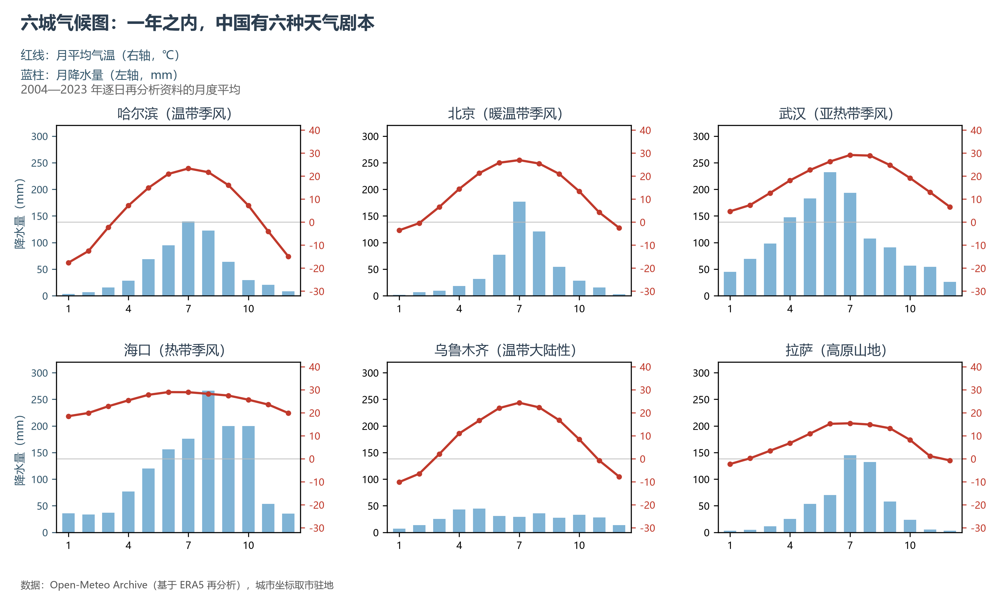
图 4-1 六城气候图（climograph）：六种气候类型的气温—降水年循环——从海口“全年皆雨”到乌鲁木齐“全年皆旱”，再到拉萨“夏季集中”。
国际通行的柯本—盖格（Köppen-Geiger）分类法基于月均气温与月降水量阈值对全球植被气候带进行数学化严格定义。将中国置于柯本高分辨率图谱中，可以揭示传统五分法无法呈现的丰富微观过渡地带：
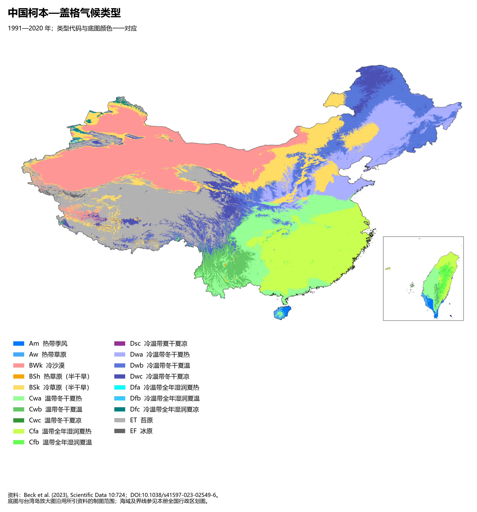
图 4-2 柯本—盖格气候分类图（1991—2020 年平均，1 km 分辨率）：数据取自 Beck 等（2023）发表于《Scientific Data》的公开数据集；右下插图放大台湾岛。原图为国际出版口径，未含南海诸岛插图与断续线，相关海域范围以本手册自绘地图为准。
把中国置于全球气候纬度带来审视，东亚季风赋予中国的独特自然红利一目了然：
在中国辽阔的版图上，气温的空间分异与季节节律，直接决定了生物圈物候的荣枯、农作物的熟制选择、人居建筑的防寒隔热构造，以及庞大能源物资跨区域调运的流动方向。
理解中国气温格局，核心在于把握一条颠扑不破的宏观基本定律：冬季南北温差极其悬殊，夏季全国（除高山高原）普遍高温。从 1 月近 50 ℃ 的极寒梯度，到 7 月不足 8—10 ℃ 的大体均一，这种“冬悬殊、夏均一”的剧烈年循环，正是中国大陆季风气候给大地打上的鲜明烙印。
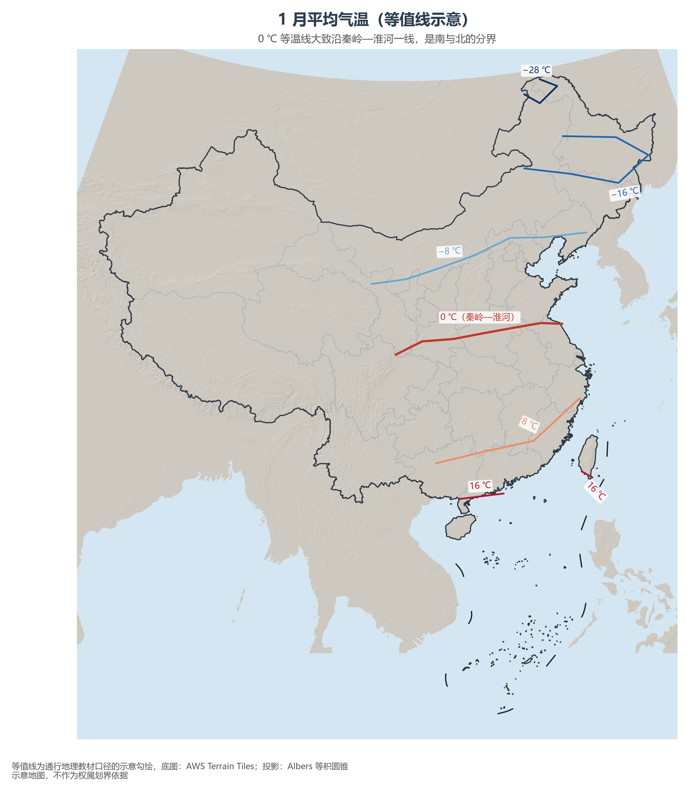
图 4-3 1 月平均气温等值线（示意）：等温线密集且大体东西走向——纬度与冬季风共同主导。
在漫长的冬半年，中国大地的气温等温线呈现出极其密集、走向大体与纬线平行的形态，自南向北迅速跌落。
1 月份，我国最南端的三亚、西沙群岛月均温高达 22—25 ℃，郁郁葱葱、温暖如夏；而最北端的大兴安岭北段黑龙江漠河，1 月均温骤降至 −26 ℃ 至 −30 ℃，严寒刺骨、千里冰封。南北跨越近 50 ℃ 的温差，是两股巨大自然力量合力的结果： - 太阳辐射随纬度剧烈衰减：冬季太阳直射南半球，我国南方正午太阳高度角仍可达到 40°—45°，且白昼长达 11 小时左右；而在最北方，正午太阳高度角骤降至 15° 以下，白昼仅有 7—8 小时，“昼短光弱”，地表吸收热量微乎其微； - 冬季风的直面冲击与地形阻隔效应：发源于蒙古—西伯利亚的干冷冬季风顺地势南侵，北方首当其冲，冷空气长驱直入；而南方有秦岭、大巴山、大别山等崇山峻岭层层阻隔，冷空气被阻滞削弱，使得南北温差被进一步急剧放大。
在图 4-3 中，1 月 0 ℃ 等温线是全书乃至整个中国地理中最关键的一条分界线。它西起青藏高原东南边缘，横穿秦岭山脉主脊，沿淮河干流向东直抵黄海之滨： - 物理与生态分野：0 ℃ 线以北，河流冬季普遍结冰封冻，落叶阔叶林与针叶林占据主导，土壤以微碱性的褐土、黑钙土与黄绵土为主；0 ℃ 线以南，大江大河终年不冻，常绿阔叶林终年郁郁葱葱，土壤以酸性红壤、黄壤与水稻土为主； - 农业熟制与供暖红线：0 ℃ 线以北农田实行冬小麦与夏玉米轮作或一年一熟，传统农舍厚墙重顶、家家建火炕，现代城市全面纳入强制集中供暖区；0 ℃ 线以南以水稻两熟或三熟为主，传统民居开敞透风，历史上未列入集中供暖区，成为当代南方“湿冷”体验与冬季采暖诉求讨论的地理背景。
[!NOTE] 中国“极寒极点”纪录
中国最冷的地方位于大兴安岭北端。黑龙江省漠河市阿木尔镇在 2023 年 1 月 22 日 7 时实测到 −53.0 ℃ 的极端低温，打破了漠河 1969 年 2 月 13 日创下的 −52.3 ℃ 历史纪录，正式成为中国现有气象记录的最低温极值。内蒙古呼伦贝尔的根河、图里河等地，年平均气温低至 −5 ℃ 以下，全年封冻期长达 7—8 个月，被称为中国“冷极”。
进入盛夏 7 月，气温地图呈现出与冬季截然相反的全新图景：全国（除青藏高原外）等温线变得极其稀疏，无论南方还是北方，几乎全部浸润在 20 ℃ 以上的炎夏之中。
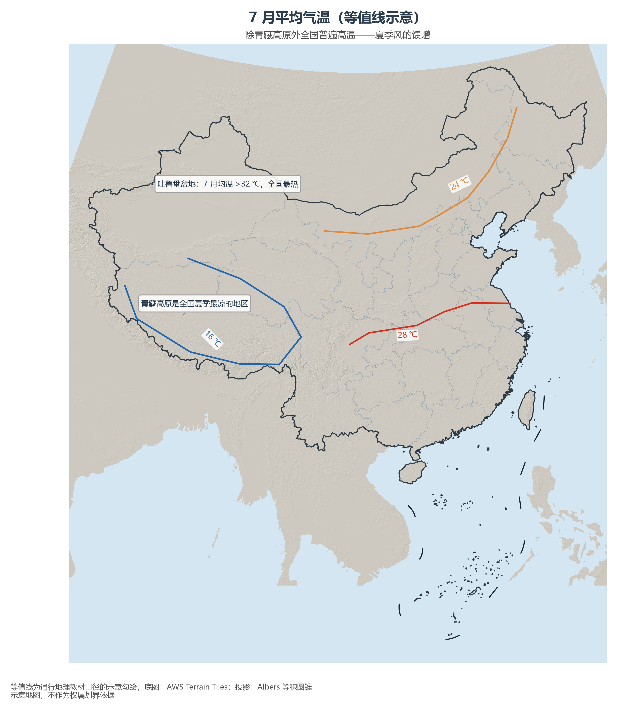
图 4-4 7 月平均气温等值线（示意）：等温线稀疏，全国（除高原）普遍高温。
7 月，黑龙江哈尔滨月均温可达 23 ℃，与广州（28.5 ℃）、海口（28.8 ℃）的差距缩小到不足 5—6 ℃。 - 夏季太阳直射北半球，虽然北方正午太阳高度角依然略低于南方，但北方的白昼时间显著长于南方（夏至日漠河白昼长达 17 小时，而海口仅约 13 小时）。北方较长的日照时数有效弥补了太阳高度角的微小不足； - 加上夏季风将低纬洋面丰沛的热量和水汽送达全国广大平原，使东北平原与华北平原能够积蓄巨大热量，水稻得以在北纬 45° 以上高产繁衍。
在普遍高温的背景下，中国地形的两个极致单元形成了戏剧性的对照：
- 全国“热极”：吐鲁番盆地
吐鲁番 7 月均温高达 32.8 ℃，日最高气温经常越过 40 ℃，极端最高气温曾达 49.6 ℃（地表温度可突破 80 ℃，俗称“沙窝煮鸡蛋”）。其极端高温是由特殊盆地地形决定的：深陷天山峡谷中（艾丁湖负海拔 −154.31 m），地形极度闭塞，热量难以对流散逸；降水极度稀少、晴空万里，地面吸收强烈的太阳直射辐射；加之周围高山冷空气下沉时受绝热压缩产生的剧烈焚风效应，使吐鲁番成为名副其实的内陆“火洲”。
- 夏季“凉岛”：青藏高原
青藏高原 7 月均温多在 8—15 ℃ 之间，大片区域属于“高原无夏”。根据对流层气温垂直递减率，海拔每升高 1 000 m，气温约下降 6.5 ℃。平均海拔超过 4 000 m 的青藏高原，相当于比同纬度平原天然降低了约 26 ℃，成为炎炎盛夏中中国乃至整个低纬欧亚大陆最辽阔的高原避暑“冷极”。
气象学与农业气候学根据日平均气温 ≥ 10 ℃ 的稳定持续期积温（活动积温），结合极端最低气温与作物生长指标，将中国自北向南系统划分为五个温度带以及一个面积广袤的高原气候区。
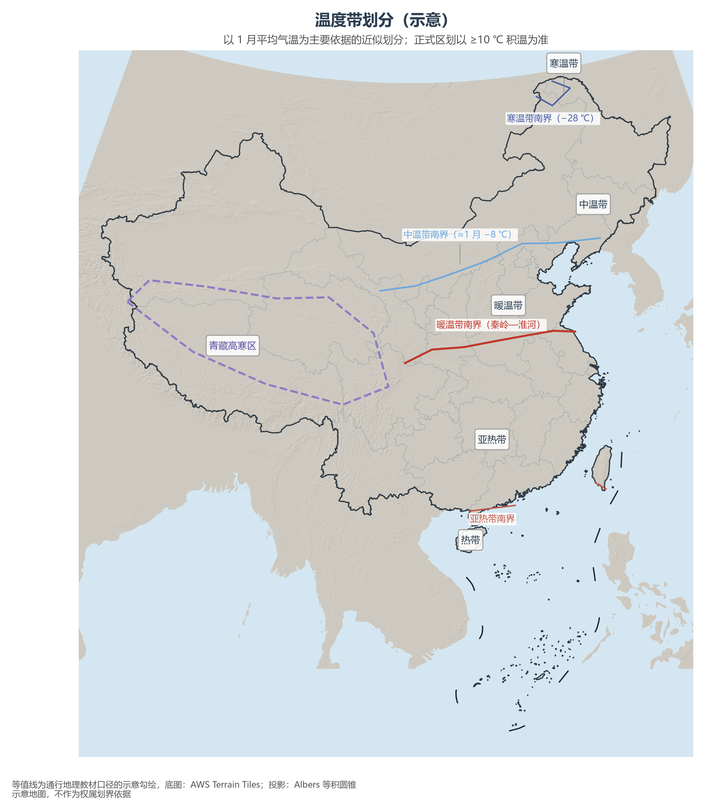
图 4-5 温度带划分（示意）：正式区划以 ≥10 ℃ 积温为准，本图为以 1 月均温为依据的近似表达。
| 温度带名称 | ≥10 ℃ 积温指标 | 核心覆盖地理范围 | 农业熟制系统 | 主要代表作物与典型林果 |
|---|---|---|---|---|
| 寒温带 | < 1 600 ℃ | 黑龙江大兴安岭北部（漠河、呼玛） | 一年一熟（生长期仅 80—100 天，早霜风险高） | 春小麦、马铃薯、大麦、落叶松林 |
| 中温带 | 1 600—3 400 ℃ | 东北平原大部、内蒙古高原大部、准噶尔盆地 | 一年一熟 | 春小麦、大豆、玉米、高粱、甜菜、优质粳稻、红富士苹果（辽南） |
| 暖温带 | 3 400—4 500 ℃ | 华北平原全境、黄土高原大部、塔里木盆地、辽东半岛、山东半岛 | 两年三熟 或 一年两熟 | 冬小麦、夏玉米、棉花、花生、苹果、梨、葡萄、温带落叶阔叶林 |
| 亚热带 | 4 500—8 000 ℃ | 秦岭—淮河以南至雷州半岛以北、青藏高原以东的广阔南方地区（占国土约 26%） | 一年两熟至三熟 | 双季水稻、油菜、甘蔗、柑橘、茶叶、毛竹、常绿阔叶林 |
| 热带 | > 8 000 ℃ | 雷州半岛、海南岛全境、台湾岛南部、云南西双版纳与元江河谷 | 一年三熟（全年皆可农作） | 晚造水稻、天然橡胶、椰子、芒果、香蕉、胡椒、热带季雨林 |
| 青藏高寒区 | 日均温 ≥ 10 ℃ 积温普遍 < 2 000 ℃ | 青藏高原主体（海拔 > 3 000 m 区域） | 一年一熟（高寒低产） | 青稞、耐寒豌豆、春油菜、高山草甸畜牧业（牦牛、藏系绵羊） |
中国气温体系在世界大国对比中展现出极其罕见的全谱系连续性：
水分是维系生命与地表生态演替的另一只决定性巨手。中国水资源的总体丰沛度、空间分配与时序涨落，牢牢遵循着由季风环流与地形地貌共同铸造的两大基本定律：
从台湾东北部火烧寮年降水逾 6 500 mm 的滂沱暴雨，到塔里木盆地腹地托克逊不足 10 mm 的赤地千里，这两大定律不仅谱写了华夏农耕文明与游牧文明交织演进的历史底色，也构成了今天统筹国家水网建设、旱涝防灾减灾与生态空间管制的现实基准。
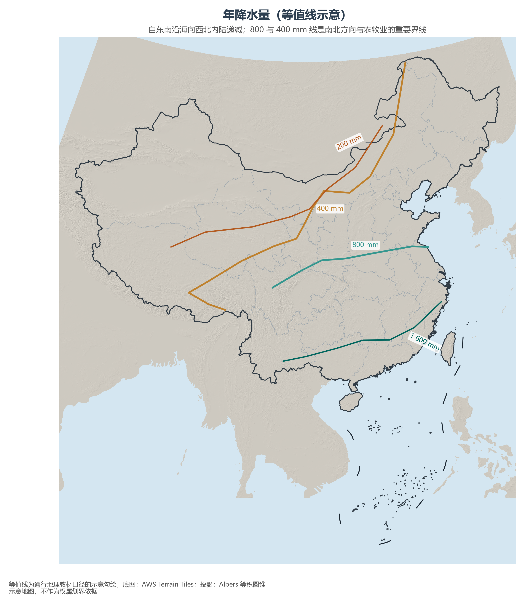
图 4-6 年降水量等值线（示意）：1 600、800、400、200 mm 四条等降水量线构成从湿润到干旱的阶梯。
在中国地图上，四条关键的年降水量等值线宛如四道无形的巨型闸门，自东南向西北层层锁定了自然景观与经济生计的梯度变迁：
大致沿浙闽丘陵、南岭南麓向西延至云南西双版纳与中缅边境。这条线以南和以东的区域，直面南海与西北太平洋暖湿水汽的第一道锋芒，是我国水热资源最充沛的热带与南亚热带湿润核心区。这里森林常青、江河径流量极大，同时也是台风风暴潮与特大暴雨最频繁肆虐的走廊。
西起青藏高原东南边缘，横贯秦岭山脊，沿淮河干流向东入海。它与 1 月 0 ℃ 等温线大体重合，是中国南方湿润区与北方半湿润区的分界线： - 线以南年降水量在 800—1 600 mm 之间，天然水分盈余，以水田农业（双季稻、水生蔬菜）为主； - 线以北年降水量降至 800 mm 以下，蒸发蒸腾量增大，转为典型的旱地农业（冬小麦、夏玉米、杂粮）。
自东北的大兴安岭西麓出发，经内蒙古通辽、张家口、山西北部、陕北榆林、甘肃兰州，向西南穿过青海西宁至西藏拉萨与喜马拉雅山东端。 - 三重地理身份高度重合：它既是半湿润区与半干旱区的分界线，又是森林植被与温带草原植被的分水岭，更是华夏历史上传统农耕文明（农田村落）与游牧草原文明（逐水草而居）的天然分界线； - 人口分界线的地理物理支撑：著名的人口地理分界线——胡焕庸线（黑河—腾冲线）在空间走向上与 400 mm 等降水量线保持着惊人的平行与空间契合，深刻揭示了水资源承载力对人类聚落集聚分布的根本决定性。
大致沿阴山西段、贺兰山、祁连山北麓延伸至青藏高原北部昆仑山脉。 - 它是半干旱区与极端干旱区的分界线； - 200 mm 线以东以南，天然降水尚可勉强支撑稀疏的草原植被和退化的雨养旱作；而线以西以北，年降水量不足 200 mm（甚至不足 50 mm），天然地表径流几乎完全断绝，除了由高山冰雪融水补给的雪山脚下绿洲灌溉农业之外，其余广大内陆腹地尽是浩瀚荒漠与戈壁。
根据年降水量与潜在蒸发量的对比关系（干燥度指标），我国划分为四大干湿地区。水分的梯次衰减，在地表直观映射为从茂密森林到赤地黄沙的宏伟生态序列。
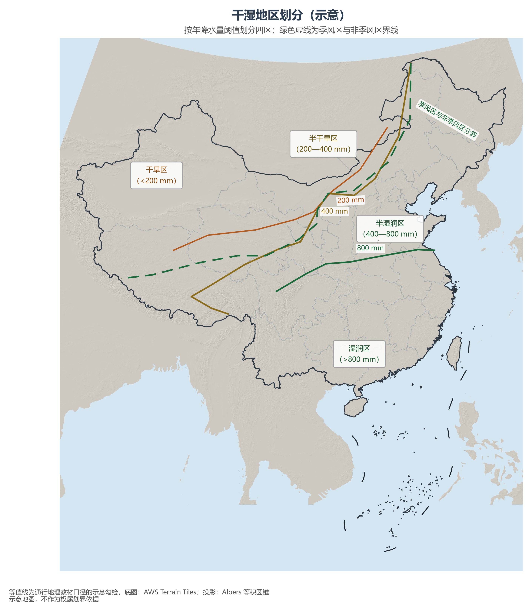
图 4-7 干湿地区划分（示意）：绿色虚线为季风区与非季风区分界，三条实线为 800/400/200 mm 等降水量线。
| 干湿地区 | 年降水量 | 干燥度指标（蒸发量/降水） | 核心分布区域 | 代表性天然植被与土壤 | 主要农业形态与生态屏障功能 |
|---|---|---|---|---|---|
| 湿润区 | > 800 mm （东南局部 > 2 000 mm） |
< 1.0 （降水充沛，地表水分盈余） |
秦岭—淮河以南的南方各省、东北长白山及小兴安岭山区 | 亚热带常绿阔叶林、热带季雨林、温带针阔混交林；红壤、黄壤、水稻土 | 稻田农业、淡水渔业与亚热带经济林；长江中下游流域防洪蓄洪水源涵养地 |
| 半湿润区 | 400—800 mm | 1.0—1.5 （水分基本平衡，春季偏旱） |
华北平原、黄土高原大部、松嫩平原、辽河平原 | 温带落叶阔叶林、森林草原过渡带；棕壤、褐土、黑土、潮土 | 旱地农耕（小麦、玉米、大豆、棉花核心主产区）；北方地下水漏斗压采综合治理区 |
| 半干旱区 | 200—400 mm | 1.5—2.0 （蒸发显著大于降水，干旱频发） |
内蒙古高原大部、黄土高原西北部、青藏高原大部 | 温带典型草原、高寒草甸草原；黑钙土、栗钙土 | 畜牧业（放牧草原牧区）及局部引黄灌溉农耕区；北方防风固沙防沙带 |
| 干旱区 | < 200 mm （盆地腹地 < 50 mm） |
> 2.0 （蒸发能力可达降水数十倍） |
新疆全境、内蒙古阿拉善盟、青海柴达木盆地、甘肃河西走廊西段 | 温带荒漠草原、荒漠戈壁；棕钙土、荒漠灰钙土、盐渍化土壤 | 绿洲灌溉农业（棉花、甜菜、瓜果）；防风固沙、荒漠化防治核心阻击区 |
我国季风区降水高度集中于夏季，其背后是西太平洋副热带高压脊线与南下冷空气交汇形成的锋面雨带，在东部平原上呈现出高度规整的季节性南北位移规律（俗称雨带的“三跳两停”）：
| 演进时段 | 主导天气阶段 | 雨带停滞核心区域 | 水汽机制与致灾特征 |
|---|---|---|---|
| 春末（4—5 月） | 华南前汛期 | 广东、广西、福建、海南 | 南海暖湿水汽低空急流抬升，以对流性短时特大暴雨为主 |
| 初夏（6 月中—7 月上） | 江淮“梅雨” | 长江中下游平原、太湖流域、淮河流域 | 副高第一次北跳，冷暖气团在江淮僵持，形成连绵阴雨与流域性大洪水 |
| 盛夏（7 月下—8 月） | 北方“七下八上”雨季 | 华北平原、黄土高原、东北平原 | 副高第二次北跳越过 30°N，北方迎来全年最强降水；南方转入伏旱 |
| 秋季（9 月以后） | 夏季风南撤与华西秋雨 | 西南盆地、汉水流域、陕南关中 | 冷空气迅速南下主导，副高向洋面退缩；秦巴山区多夜雨、连阴雨 |
与欧美温带海洋性气候（全年降水均匀、无明显旱涝）或地中海气候（冬雨夏干、年际波动较小）相比，中国东亚季风降水最深层的痛点在于极大的年际不稳定性：
季风环流在赋予中国大陆丰沛雨热同期的巨大农业红利的同时，也把极高的气候波动风险刻进了地理底盘。夏季风推进迟速不均、冬季风强度年际震荡、副热带高压脊线位置异常摆动，直接导致中国成为世界上遭受气象灾害种类最多、分布最广、灾情最为严重的国家之一。
据应急管理部与中国气象局统计，在我国所有的自然灾害损失中，气象灾害及其引发的次生衍生灾害（山洪、泥石流、风暴潮）占比超过 70%。全球气象灾害造成的经济损失，约有近四分之一发生在东亚季风控制下的中国中东部地区。
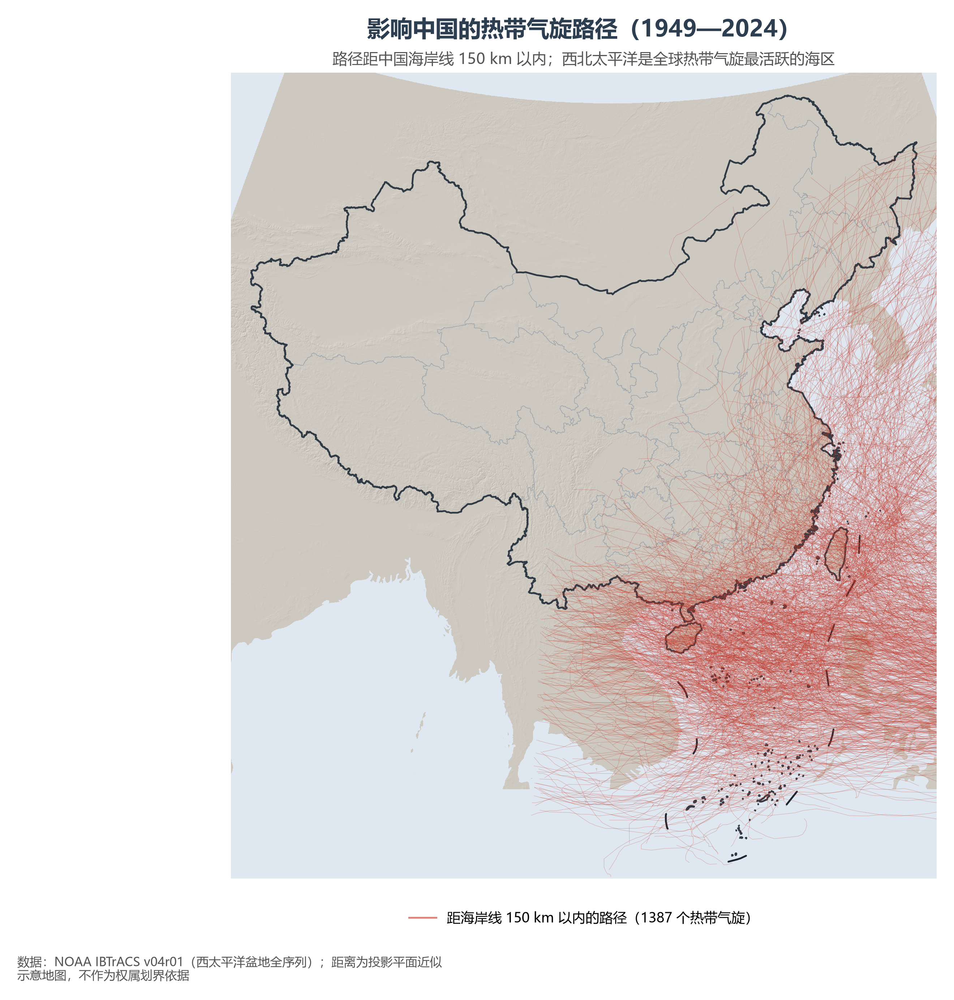
图 4-8 影响中国的热带气旋路径（1949—2024）：76 年间共 1 440 个热带气旋的路径接近过中国海岸线——西北太平洋是全球热带气旋最活跃的海区，中国是全球登陆台风最多的国家之一。
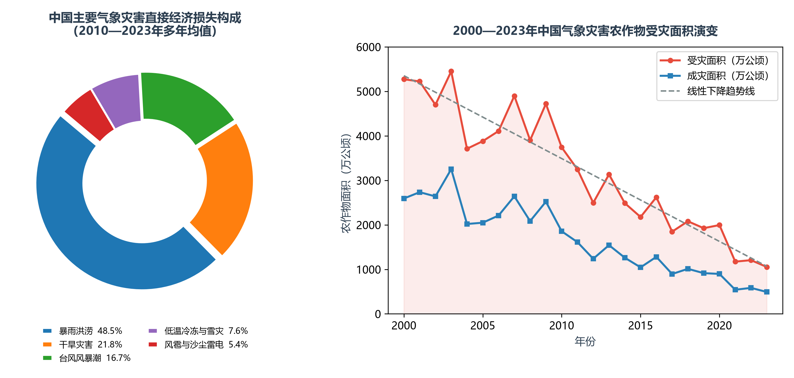
图 4-9 中国主要气象灾害直接经济损失构成与受灾演变：暴雨洪涝与干旱构成气象灾害经济损失主体，高标准农田与防洪体系推动农作物受灾面积长期波动下降。
中国地域辽阔，不同区域面临的主导演化灾害类型与发生节律截然不同。按照成因机制与破坏烈度，主要气象灾害系统呈现出清晰的时空格局：
| 灾害类型 | 主要致灾动力与大气环流机理 | 核心高发地理区域 | 易发季节与时间节律 | 历史典型极端个例与影响 |
|---|---|---|---|---|
| 暴雨洪涝 | 冷暖空气剧烈交汇形成锋面气旋、西南低涡抬升及地形雨强烈下切 | 长江流域、淮河流域、珠江流域、海河流域及东南沿海 | 6—8 月（南方汛期至北方“七下八上”） | 1998年长江松花江全流域大洪水；2021年郑州“7·20”特大暴雨（小时雨强 201.9 mm）；2023年海河“23·7”流域性特大洪水 |
| 干旱与高温热浪 | 副热带高压或大陆暖高压长期稳定盘踞，盛行下沉气流增温且无降水 | 华北平原（春旱）、长江中下游（伏旱）、西南喀斯特山区（冬春连旱） | 春季（北方）、盛夏7—8月（南方）、冬春季（西南） | 1972年华北特大干旱导致黄河下游频繁断流；2022年盛夏长江全流域“汛期反枯”严重高温干旱，鄱阳湖水体面积锐减 80% |
| 台风及风暴潮 | 低纬热带洋面深厚对流系统发展为超强热带气旋，伴随狂风、巨浪、暴潮与暴雨 | 广东、海南、台湾、福建、浙江及山东、辽宁沿海 | 7—10 月（夏秋台风高发季） | 2014年超强台风“威马逊”（登陆风力17级）；2024年秋季超强台风“摩羯”重创琼粤桂；2021年“烟花”超长滞留浙江 |
| 低温冷冻与雪灾 | 极地冷涡南下，强冷空气（寒潮）大规模爆发，低空逆温层造就冻雨 | 东北、华北、内蒙古（寒潮强降温）；江南、华南及西南（低温雨雪冰冻） | 11月至翌年3月（冬半年） | 2008年1—2月南方特大低温雨雪冰冻灾害（罕见冻雨覆冰压垮特高压输电走廊，造成 20 省交通电力中断）；2023年12月全国强寒潮 |
| 风雹与沙尘天气 | 强对流深厚不稳定能量爆发（雷暴大风、冰雹）；春季内陆蒙古气旋大风扬沙 | 华北、西北、黄淮平原（沙尘）；黄土高原、西南山区与东部平原（冰雹雷暴） | 3—5 月（春季沙尘与强对流高发期） | 1993年西北“5·5”特强黑风暴；近年北方春季跨国境强沙尘天气；局地强风雹对高价值林果设施农业的突发重创 |
进入 21 世纪特别是近十余年来，伴随全球气候变暖向纵深发展，中国大气水热环流的时空格局正在经历深远而复杂的深刻重塑，引发了学界对“北方气候暖湿化”与极端天气常态化的广泛研究：
观测数据表明，过去 40 年间，中国西北干旱区（新疆、青海、河西走廊）气温上升的同时，降水量与天山融水径流呈现弱上升波动，塔里木河流域偶见突发性冰雪融水洪峰。与此同时，华北平原与黄土高原的暴雨强度显著攀升： - 2021 年河南郑州“7·20”特大暴雨（单站 24 小时降水达 624.1 mm，接近该地全年常年降水量）； - 2023 年海河流域“23·7”特大强降水（北京门头沟、房山与河北邢台局地过程降水量突破 1 000 mm，引发太行山前百年一遇特大山洪）。 这种现象并未从根本上消除北方水资源禀赋贫乏的客观现实，但由于北方城市与农村水利基础设施长期依据干旱半干旱环境设计（排水防涝标准偏低），导致北方平原一旦遭遇极端短时强降水，极易诱发超出历史防御经验的严重洪涝与次生山洪灾害。
随着西北太平洋副热带高压在夏季异常偏强偏北，传统上在华南和东南沿海登陆后迅速消亡减弱的台风，近年来频繁出现“内陆深远渗透”甚至“全路径北上横扫”： - 2020 年 8 月下旬至 9 月上旬，“巴威”“美莎克”“海神”三个台风在短短半个月内接连正面袭击东北平原，造成东北主粮产区大面积玉米倒伏与江河超警； - 2023 年第 5 号台风“杜苏芮”在福建晋江登陆后，残余环流在强大的副高与大陆高压阻隔下，沿华北水汽通道长驱直入京津冀长达数天，造成华北历史上罕见的极端特大暴雨。
2022 年盛夏 7—8 月，本应是长江中下游抗洪排涝的“七下八上”关键期，西太平洋副热带高压却反常形成稳定持久的巨型暖性高压脊，牢牢笼罩长江全流域。导致长江流域发生自 1961 年有完整气象记录以来范围最广、持续时间最长、强度最高的极端罕见高温干旱综合事件： - 长江干流与鄱阳湖、洞庭湖出现历史罕见的“大汛之年无大汛，反而伏秋连旱、汛期反枯”，鄱阳湖水体面积由丰水期的近 4 000 km² 骤降至不足 600 km²，提前 100 天进入极枯水位； - 沿江多个水电站蓄水跌落至死水位，诱发了大规模跨区域电力保供调度的巨大挑战。
面对季风灾害的严峻挑战，中国立足“防抗救相结合，常态减灾与非常态救灾相统一”，构建了全球规模最大、协同度最高的现代综合防灾减灾救灾工程与技术体系：
如果说气温等温线与等降水量线刻画了中国宏观气候的“骨架轮廓”，那么一座典型城市的气候图（Climograph），就是这片土地生命节律与水热脉搏的“微观指纹”。
气候图在平面直角坐标系中，以 12 个月为时间横轴，用红线折线（通常对应右侧纵轴）描摹气温由冬至夏的吸纳与回落，用蓝色柱状（对应左侧纵轴）呈现降水由枯转丰的跌宕起伏。这种将“水”与“热”融为一体的直观图谱，生动映射出中国从南到北、自东向西波澜壮阔的自然地理梯度。
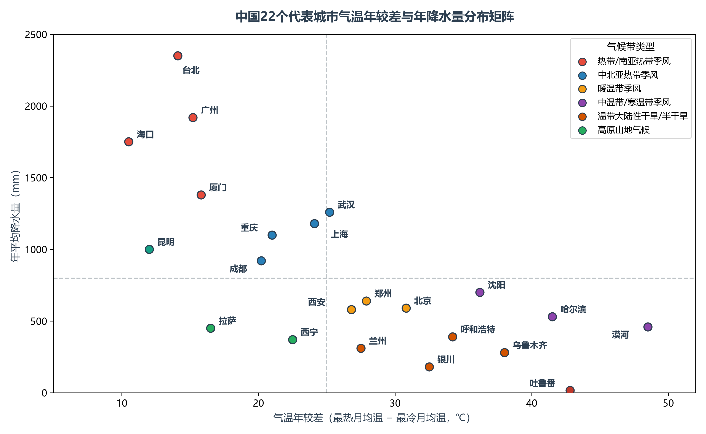
图 4-10 全国代表城市气温年较差与年降水量分布矩阵：以气温年较差 25 ℃ 与年降水量 800 mm 为基准轴，直观揭示我国代表城市在热带、亚热带、温带季风、大陆干旱与高原高寒五大象限中的空间集群。
在第 4.1 节所展示的六城气候图（见图 4-1）中，哈尔滨、北京、武汉、海口、乌鲁木齐与拉萨，分别构成了中国六大代表性气候类型的“标准样本”。它们在气温年较差、降水分配比重与水热耦合形态上，呈现出高度鲜明的特征：
| 代表城市 | 气候类型归属 | 海拔高程 | 年平均气温 | 1月均温（最冷月） | 7月均温（最热月） | 气温年较差 | 年平均降水量 | 降水集中期与特征 |
|---|---|---|---|---|---|---|---|---|
| 海口 | 热带季风气候 | 14 m | 24.5 ℃ | 17.5 ℃ | 28.8 ℃ | 11.3 ℃ | 1 750 mm | 5—10 月为主汛期，8—10 月台风雨显著，呈双峰型，全年无冬 |
| 武汉 | 亚热带季风气候 | 23 m | 17.2 ℃ | 4.2 ℃ | 29.1 ℃ | 24.9 ℃ | 1 260 mm | 4—7 月降水连绵，梅雨期极易成涝；盛夏受副高控制酷热伏旱（“火炉”） |
| 北京 | 暖温带季风气候 | 43 m | 12.8 ℃ | −3.2 ℃ | 27.2 ℃ | 30.4 ℃ | 590 mm | 7—8 月两月降水占全年 65% 以上；春季干旱多风，冬冷夏热 |
| 哈尔滨 | 中温带季风气候 | 142 m | 4.8 ℃ | −17.6 ℃ | 23.4 ℃ | 41.0 ℃ | 530 mm | 6—8 月为集中降水期；冬季冰封长达 5 个月，农事一年一熟 |
| 乌鲁木齐 | 温带大陆性干旱气候 | 918 m | 7.3 ℃ | −12.6 ℃ | 24.2 ℃ | 36.8 ℃ | 280 mm | 全年各月降水稀少而相对均匀；冬季有稳定积雪，大洋水汽极其微弱 |
| 拉萨 | 高原山地气候 | 3 650 m | 8.8 ℃ | −1.6 ℃ | 16.3 ℃ | 17.9 ℃ | 450 mm | 6—9 月降水占全年 85% 以上；夜雨率高达 80%，日温差大而年温差小 |
哈尔滨最冷月（1 月）均温接近 −18 ℃，历史极端低温曾突破 −40 ℃；然而其 7 月均温可跃升至 23 ℃ 以上，气温年较差超过 40 ℃。这种剧烈温差深刻印证了强大的冬季风对我国东北高纬度平原的绝对统治。降水高度汇聚于盛夏 7—8 月，虽然无霜期仅有 130—140 天，但夏季高温与充足水分同期降临，为优质单季粳稻和大豆的灌浆成熟提供了宝贵的光热窗口。
北京的气温曲线与哈尔滨具有相似的“陡升陡降”特征，但整体上移约 10 ℃。最耐人寻味的是其降水柱状图：春季（3—5 月）气温急速回升，地表蒸发旺盛，三个月降水总和往往不足 60 mm，形成典型的“春旱”；然而一进入 7 月下旬至 8 月上旬，西太平洋副高外围水汽与冷空气剧烈交汇，降水柱状拔地而起，两三个月便宣泄完全年六成以上的雨水，导致北京在相邻的月份间剧烈上演抗旱与防汛的双重攻坚。
武汉作为长江中游平原腹地的特大都会，最冷月均温稳稳保持在 0 ℃ 线上方的 4 ℃ 左右，大江终年畅流；夏季 7 月月均温逼近 30 ℃，日间极端高温屡破 39—40 ℃。其降水在 4—7 月随西南暖湿气流与锋面抬升绵延不绝，造就梅雨季节的丰沛降水；而盛夏 7 月中旬后迅速进入副高盘踞的伏旱期，云量极少、强日照、高湿闷热，使其成为中国江淮平原著名的“火炉城市”标本。
海口的气温曲线近乎一条平直横线，最冷月均温仍在 17 ℃ 以上，最热月不足 29 ℃，气温年较差仅 11 ℃ 左右，属于典型的“全年皆夏、长夏无冬”。其降水节律具有独特的“双峰”特征：第一峰出现在 5—6 月的西南季风前汛期，第二峰则在 8—10 月随频繁登陆或掠过琼州海峡的热带气旋（台风）而喷薄而出。
乌鲁木齐是全球距离大洋最遥远的大型城市（距最近的印度洋海岸线也超过 2 500 km）。四周高山严密合围，使其年平均降水量仅 280 mm 左右。但与华北暴雨高度集中不同，乌鲁木齐月降水量相对均匀（各月多在 15—35 mm 之间）。天山峡谷常年截获来自大西洋与北冰洋的大气微量西风水汽，在冬春季节形成珍贵的降雪堆积，充当了天山山麓绿洲工农业不可或缺的固体储水库。
高拔于海拔 3 650 m 之上的拉萨，在稀薄高透的大气中享受着全国前列的年均 3 000 小时强日照（“日光城”）。由于高海拔冷却效应，夏季 7 月均温仅 16 ℃ 左右，夏无酷暑；又由于低纬度与冬季白天强烈日照的持续加热，1 月均温维持在 −2 ℃ 附近，冬无极寒，年较差仅 17.9 ℃。最奇特的气候景观在于降水高度夜雨化：夏季来自孟加拉湾的湿润气流在雅鲁藏布江谷地受夜间山风下沉与谷底热空气对流上升激发，拉萨 80% 以上的降水发生在夜间，不仅白天阳光充足利于光合作用，夜晚降雨又滋润了土壤与植被，构成了高原农业的一大奇迹。
将全国 22 个具有标志性地理坐标的代表城市置于图 4-10 的“气温年较差 vs 年降水量”四象限矩阵中，我国复杂多样的气候空间谱系一览无余：
一座城市的气候图，最终投射在当地百姓千百年来繁衍生息的民居屋顶、餐桌风味与生活习俗之中：
中国的大江大河，是地势三级阶梯与季风水热大循环在地球表层刻下的最深刻水文烙印。西高东低的地势阶梯，如同一副天然的巨大滑梯，驱动着数以千计的江河自青藏高原与内陆高原浩荡东流，穿越深山峡谷，冲积出辽阔平原，最终奔腾入海。
从水文地理全貌审视，中国是一个典型的“两分水世界”：约占陆地面积 64% 的国土属于外流区，江河百川归海；约 36% 的国土属于内流区，流水消失于干旱腹地的沙海、盐沼与内陆湖盆之中。外流区汇聚了全国 95% 以上的水资源总量，滋养了全国 90% 以上的人口与几乎全部现代核心城市群；而内流区则以不到 5% 的水资源，支撑起茫茫沙漠戈壁边缘串珠般的绿洲文明。
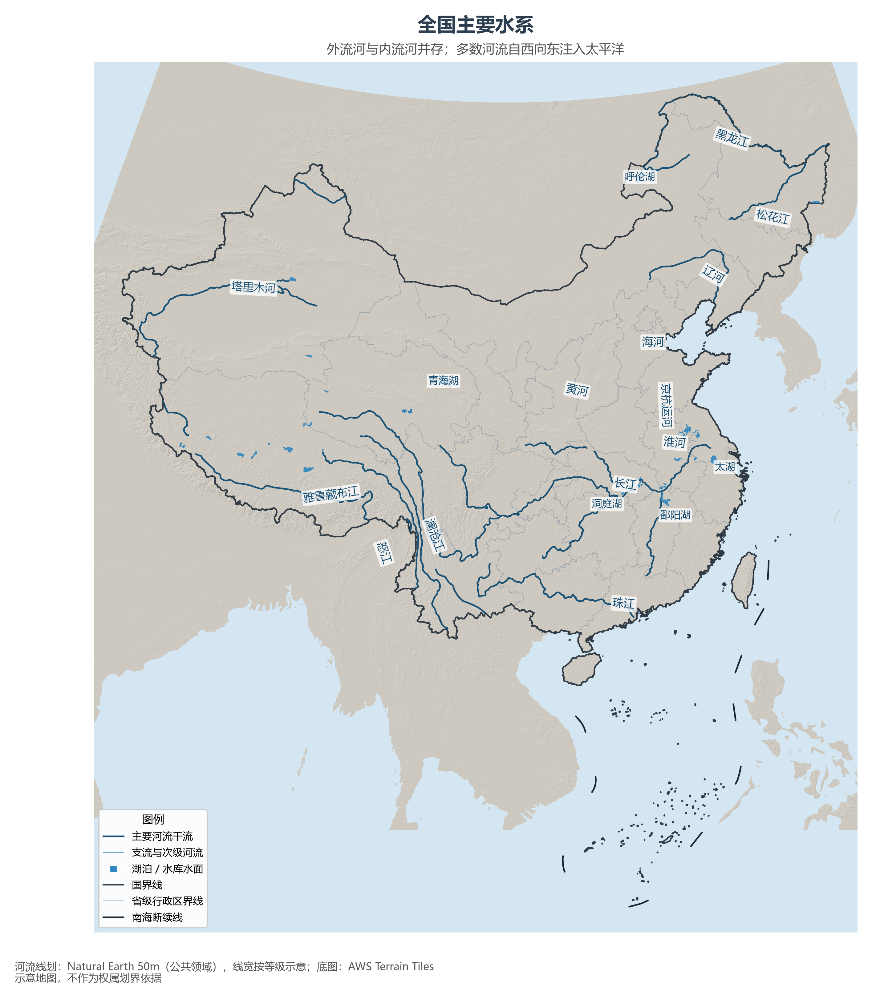
图 5-1 全国主要水系：蓝色为 Natural Earth 50m 主要河流与湖泊，标注九大水系与代表湖泊。
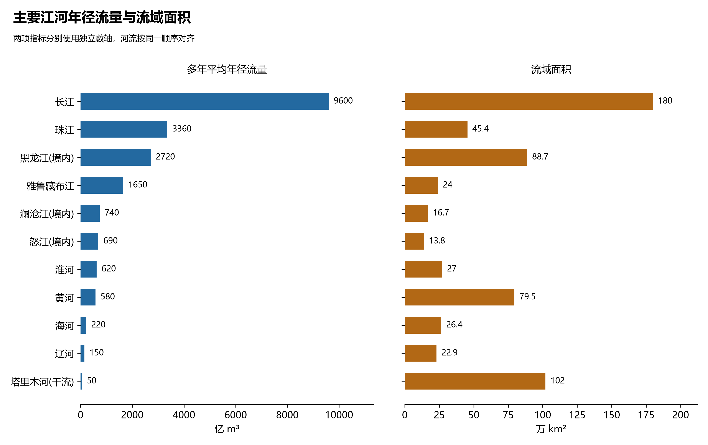
图 5-8 中国主要江河年径流量与流域面积对比：长江与珠江以巨大水量占据前列，海河、黄河与辽河呈现汇水面积广阔而水资源相对匮乏的显著反差。
根据河流最终归宿的不同，中国外流流域分属于太平洋、印度洋与北冰洋三大洋水系，各流域在水汽来源、径流补给与地缘走向特征上分异极其显著：
| 水系归属 | 流域面积占比 | 核心骨干江河 | 汇入大洋 / 终端水域 | 水文补给动力与关键特征 |
|---|---|---|---|---|
| 太平洋水系 | 约占外流区 87% （全国约 56%） |
长江、黄河、珠江、黑龙江、松花江、淮河、海河、辽河、钱塘江、闽江、澜沧江（出境为湄公河） | 渤海、黄海、东海、南海及鄂霍次克海 | 东南季风与西南季风主导降水补给，雨热同期，夏秋汛期显著；承载全国 80% 以上地表水资源 |
| 印度洋水系 | 约占外流区 11% （全国约 7%） |
雅鲁藏布江（出境为布拉马普特拉河）、怒江（出境为萨尔温江）、独龙江（伊洛瓦底江上游） | 孟加拉湾、安达曼海 | 印度洋西南季风强劲输送，高山冰雪融水与地形雨叠加；落差巨大，单位面积产水量极高，水能蕴藏极为富集 |
| 北冰洋水系 | 约占外流区 1.5% （全国约 1%） |
额尔齐斯河（中国境内长 546 km，年径流约 111 亿 m³） | 出境后汇入鄂毕河，经西伯利亚注入北冰洋喀拉海 | 中国唯一属于北冰洋水系的大河；受大西洋与北冰洋弱西风冷湿水汽补给，冬春积雪融化形成春汛，河水清冽，水能充沛 |
| 内流水系 | 约占全国陆地面积 36% | 塔里木河（干流 1 321 km）、黑河（弱水）、石羊河、疏勒河、柴达木内流水系、藏北羌塘水系 | 终点注入内陆咸水湖（如台特马湖、青海湖）、尾闾盐沼或沿程干涸消失 | 几乎全靠高山冰雪积雪融水补给；冬春断流、夏季高温冰雪消融迎来汛期；蒸发下渗损失极大，生态极为脆弱 |
在横断山脉纵向山岭之间，金沙江（太平洋水系）、澜沧江（太平洋南海水系）与怒江（印度洋水系）三条大江在雪山夹峙下并肩向南奔流数百公里，最近处江面直线距离不足 70 公里，却因高耸分水岭阻隔“并肩奔流而绝不相交”，最终分别奔向相距数千公里的不同大洋，构成了全球绝无仅有的“三江并流”世界自然遗产地质地理奇观。
中国水系在大陆上的空间展开，受控于两条至关重要的地学控制轴：
除了天然河流，中华民族在两千余年的生产实践中，开创了举世罕见的大规模跨流域人工运河工程：
世界人口与领土大国大多拥有一条被视为国家生命线的“国民大河”：
| 大陆与国家 | 标志性国民河流 | 全长与世界排名 | 年径流量 | 流域人口规模 | 人水空间关系与战略特征 |
|---|---|---|---|---|---|
| 中国 | 长江 | 6 300 km（世界第3） | 约 9 600 亿 m³ | 超 4.5 亿人 | 全球人口最稠密、经济密度最高的世界级大河；同时兼具“水电富集、内河黄金水道第一、主粮高产”三重角色 |
| 中国 | 黄河 | 5 464 km（世界第6） | 约 580 亿 m³ | 约 1.2 亿人 | 世界上输沙量最大、治水历史最悠久的母亲河，以极少水量滋养了全国 12% 人口与 15% 耕地 |
| 美国 | 密西西比河 | 6 275 km（密苏里-密西西比） | 约 5 800 亿 m³ | 约 8 000 万人 | 贯通北美中部平原的黄金农业外运水道，两岸人口密度远低于长江 |
| 俄罗斯 | 鄂毕河 / 叶尼塞河 | 5 410 km / 5 539 km | 约 4 000—6 000 亿 m³ | < 2 000 万人 | 水量充沛但流经高纬寒冷西伯利亚，封冻期长达半年以上，下游人口稀少 |
| 印度 | 恒河 | 2 525 km | 约 4 300 亿 m³ | 约 5 亿人 | 人口极度稠密，受季风强烈影响旱涝极端，水能利用与现代航运开发相对滞后 |
| 巴西 | 亚马孙河 | 6 400 km（世界第2/1） | 约 69 000 亿 m³ | < 4 000 万人 | 全球径流第一巨川（占世界入海径流近 1/5），但流经热带雨林腹地，经济开发强度极低 |
这种对比深刻揭示了中国水文地理的根本现实：中国的河流不仅承担着大自然的水汽循环，更在极其有限的国土空间内，承载着全球最密集的人口生存重托与工业制造运转。每一滴江水，都被赋予了至关重要的文明与民生重量。
长江，是中华民族的母亲河，也是横贯中国东西的生态与经济命脉。干流全长约 6 300 km，仅次于非洲尼罗河与南美洲亚马孙河，位居世界第三位；流域面积达 180 万 km²，约占中国陆地总面积的五分之一；多年平均年径流量约 9 600 亿 m³（约占全国河流总径流量的三分之一），水量相当于黄河的近 17 倍。
长江从青藏高原的冰川雪峰发轫，干流一路向东流经青海、西藏、四川、云南、重庆、湖北、湖南、江西、安徽、江苏、上海等 11 个省级行政区，数百条支流辐射扩展至黔、陕、甘、豫、鄂、湘、赣、粤、桂、浙、闽等省区，在上海市崇明岛两侧注入东海，是维系华夏文明繁衍最重要的大江大川。
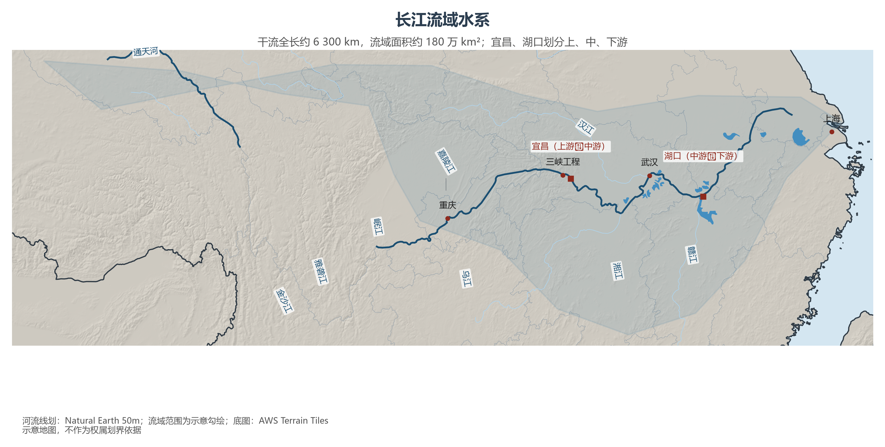
图 5-3 长江流域水系：宜昌、湖口两站划分上、中、下游；流域范围为示意勾绘。
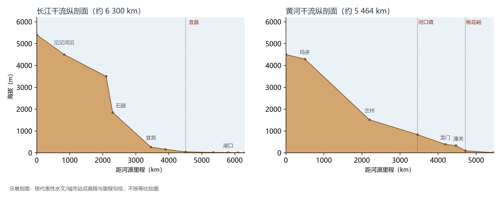
图 5-5 长江与黄河干流纵剖面（示意）：长江的落差集中在宜宾以上，黄河的"几"字形台阶清晰可见。
“长江”既是这条巨川的统称，在其上游不同河段又有独特的历史称谓： - 沱沱河与通天河：正源发源于唐古拉山脉主峰各拉丹冬雪峰西南侧的姜根迪如冰川，流淌于海拔 4 500 m 以上的藏北高原，初名沱沱河；与南源当曲汇合后称通天河，流经玉树巴塘河口； - 金沙江：自玉树巴塘河口至四川宜宾岷江汇合口，长达 2 300 余公里称金沙江，穿行于横断山区极高山深谷中； - 长江干流：自四川宜宾以下，纳岷江、嘉陵江等巨流后，始正式定名“长江”。
根据自然水文特征与地形演化，长江以湖北宜昌和江西湖口为界，严格划分为上游、中游与下游三大段落：
| 河段划分 | 起止区间与里程 | 落差与水文动力特征 | 主要汇入支流与湖泊 | 核心战略功能与标志性工程 |
|---|---|---|---|---|
| 上游 | 源头 至 湖北宜昌 （长约 4 504 km，占干流 71%） |
极高山与高原深切峡谷；总落差约 5 400 m（占全江 90% 以上）；水流湍急，富集全球最密集的巨大水能资源 | 雅砻江、岷江（大渡河）、嘉陵江、乌江 | 世界最大清洁能源走廊：三峡水利枢纽（2 250万kW）、葛洲坝，金沙江下游白鹤滩、乌东德、溪洛渡、向家坝四大巨型水电站 |
| 中游 | 湖北宜昌 至 江西湖口 （长约 955 km，占干流 15%） |
冲积平原与丘陵盆地；落差急剧减缓至约 40 m；江面展宽，泥沙沉积，曲流极其发育；“九曲回肠”荆江河段防洪压力极高 | 汉江（最大支流）；两大通江湖泊：洞庭湖（纳湘资沅澧四水）、鄱阳湖（纳赣抚信饶修五水） | 防洪核心与调蓄中枢：荆江分洪工程、洞庭湖与鄱阳湖湿地调蓄生态系统；南水北调中线渠首（汉江丹江口水库） |
| 下游 | 江西湖口 至 长江入海口 （长约 938 km，占干流 14%） |
江阔水深，落差不足 20 m；受海洋潮流顶托明显；河口发育为巨型复合三角洲平原（崇明岛、长兴岛） | 青弋江、水阳江、秦淮河、黄浦江；太湖水系网 | 世界顶级内河黄金水道：南京以下 12.5 米深水航道可通达 5 万吨级海轮；长三角世界级城市群与江海联运超级枢纽港群 |
从图 5-5 可以直观看出，长江总落差的 90% 集中在宜宾以上的上游河段。金沙江奔腾于青藏高原向云贵高原、四川盆地过渡的狭窄深谷中，虎跳峡最窄处江面仅 30 米，上下高差数千米；而在川鄂交界处，长江切穿巫山形成举世闻名的长江三峡（瞿塘峡、巫峡、西陵峡），全长 193 km，自古便有“朝辞白帝彩云间，千里江陵一日还”的险峻势能。
新世纪以来，国家在长江上游干流与主要支流上，建设了举世瞩目的世界最大清洁能源走廊： - 三峡工程：装机容量达 2 250 万千瓦，年发电量稳定突破 1 000 亿千瓦时，是全球规模最大的水利枢纽工程；三峡水库总库容 393 亿 m³，其中防洪库容 221.5 亿 m³，使长江中下游荆江河段防洪标准从十年一遇提高到百年一遇； - 金沙江下游巨型水电站集群：自上而下梯级建设了乌东德（1 020 万 kW）、白鹤滩（1 600 万 kW，单机容量 100 万 kW 创世界纪录）、溪洛渡（1 260 万 kW，世界第四）、向家坝（640 万 kW）。 六座巨型水电站联合调度，总装机容量达 7 169.5 万千瓦，相当于三个三峡工程的电能产出，构建起跨越数千公里保障华东、华中、华南电力平稳供应的“西电东送”超级绿色动脉。
长江作为通航河流，具有得天独厚的大江深水优势：干流终年不冻，江面宽阔，支流沟通南北腹地，被公认为名副其实的“黄金水道”。
在经历了数十年高强度的岸线工业化与水电航运开发后，长江生态环境曾亮起严峻红灯（白鱀豚功能性灭绝、长江江豚濒危、部分江段水质恶化、岸线被高污染化工码头侵占）。
近年来，国家治江战略发生深刻转折，明确确立了“共抓大保护，不搞大开发”的最高原则： - 实施十年禁渔：自 2021 年 1 月 1 日起，长江流域重点水域全面推行为期十年的常年禁捕，十余万退捕渔民上岸安置转产，长江江豚自然种群数量实现历史性止跌回升（2022 年全流域野外种群回升至 1 249 头）； - 出台《长江保护法》：2021 年 3 月 1 日，中国首部流域专门法律《中华人民共和国长江保护法》正式施行，严格落实沿江 1 公里内严禁新建化工企业、岸线生态红线管制； - 排污整治与岸线覆绿：经过全面治理，长江干流水质已连续多年全线稳定保持在 Ⅱ 类 优良水质标准，“一江碧水向东流”的壮丽生态画卷重新回归华夏大地。
黄河是中华民族的母亲河，也是华夏文明最重要的发祥摇篮。干流全长约 5 464 km，位居中国第二长河、世界第六长河；流域面积约 79.5 万 km²（若计入鄂尔多斯内流区等范围则超 83 万 km²）。黄河发源于青海高原巴颜喀拉山北麓的约古宗列盆地，以一个雄浑无匹的巨大“几”字形大弯环抱鄂尔多斯高原与黄土高原，干流蜿蜒流经青海、四川、甘肃、宁夏、内蒙古、陕西、山西、河南、山东等 9 个省级行政区，最终在山东省东营市垦利区注入渤海。
黄河的本质关键词，不在于其“长”，更不在于其“大”（多年平均年径流量仅约 580 亿 m³，不到长江的 6%，水量甚至不及南方珠江的一条支流西江），而在于一个震撼世界的字——沙。“一碗水，半碗沙”，历史上多年平均年输沙量高达 16 亿吨，曾长期冠绝全球各大江河，由此塑造了极度复杂的河床演化与举世瞩目的治水篇章。
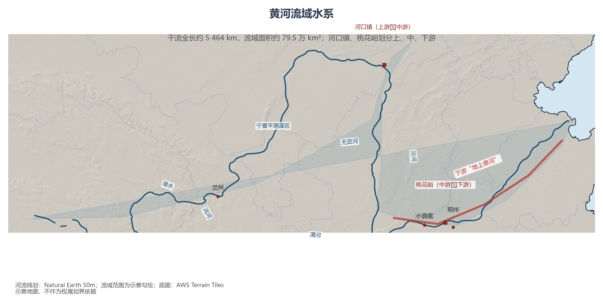
图 5-4 黄河流域水系：河口镇、桃花峪划分上、中、下游；红色为下游"地上悬河"河段（示意）。
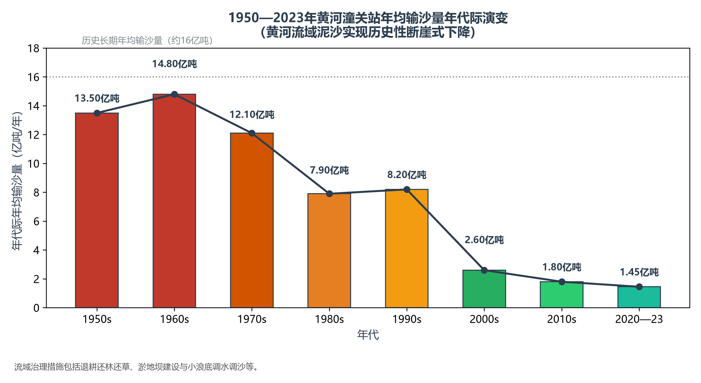
图 5-10 1950—2023年黄河潼关站年代际输沙量演变：黄土高原退耕还林还草、水土保持与小浪底调水调沙工程，推动入黄泥沙实现历史性断崖式锐减。
黄河以内蒙古托克托县河口镇与河南郑州荥阳市桃花峪为界，清晰划分为上游、中游与下游三大水文地质段落：
| 河段划分 | 起止区间与里程 | 水文特征与泥沙变化 | 主要汇入支流与平原 | 核心功能与重大控制性工程 |
|---|---|---|---|---|
| 上游 | 源头 至 内蒙古河口镇 （长约 3 472 km，占全长 63.5%） |
穿越青藏高原草原与黄土深谷；源头扎陵湖、鄂陵湖清澈碧蓝；刘家峡以上落差大、水清沙少；进入宁蒙后地势平缓 | 湟水、洮河；宁夏平原、河套平原 | 水源涵养、梯级水电与塞上灌溉：龙羊峡（库容247亿m³）、李家峡、刘家峡水电站；青铜峡与三盛公水利枢纽滋养“塞上江南” |
| 中游 | 内蒙古河口镇 至 河南桃花峪 （长约 1 206 km，占全长 22.1%） |
穿行于晋陕大峡谷；纵贯黄土高原水土流失区，贡献了全河 90% 的泥沙；河水由清转浊，暴雨期泥沙俱下，含沙量居世界第一 | 无定河、延河、汾河、渭河（最大支流，纳泾河形成“泾渭分明”） | 水土流失重灾区与水沙调控中枢：壶口瀑布（“千里黄河一壶收”）；万家寨水利枢纽、小浪底水利枢纽（黄河防洪减淤王牌工程） |
| 下游 | 河南桃花峪 至 入海口 （长约 786 km，占全长 14.4%） |
进入华北冲积平原，比降骤降，流速迟滞，泥沙在两岸大堤内巨量淤积；河床高出背河地面数米至十余米，形成全球罕见的“地上悬河” | 支流极少汇入（如汶河）；两岸天然汇水无法进入黄河干流 | 防洪安澜与三角洲生态：两岸千里防汛大堤；小浪底调水调沙冲淤；黄河三角洲国家级自然保护区（造陆与新生湿地保护） |
在华北平原广袤的大地上，黄河下游呈现出世界上最匪夷所思的水文景观——地上悬河。
新中国成立以前，黄河几乎每隔几年便酿成灾变；而进入现代，中国通过全流域系统治理，实现了举世瞩目的治黄三重奇迹：
20 世纪 70 年代至 90 年代，随着沿黄工农业引水量激增与降水偏枯，黄河下游频繁出现大面积断流。1972—1999 年间黄河下游有 22 年发生断流；在极端的 1997 年，利津水文站断流天数长达 226 天，断流河段长达 704 公里，几乎延伸至河南开封，造成沿线生态断链与严重工农业水荒。 - 1999 年起，水利部黄河水利委员会正式实施全流域水资源统一干预与精准调度，对青海、甘肃、宁夏、内蒙古、陕、晋、豫、鲁全线取水实施“按计划配额分水”，成功终结了断流历史，截至 2024 年底已实现黄河连续 25 年全线不断流，为下游生态恢复和经济发展提供了生命活水。
从图 5-10 柱状图可以看出，黄河潼关水文站（控制了中游全部汇沙）的年代际输沙量呈现出极其壮观的跳水曲线： - 20 世纪 50—70 年代，潼关站年均输沙量高达 12—15 亿吨； - 80—90 年代随着初步水土保持降至约 8 亿吨； - 进入 21 世纪，随着国家全面推行大规模退耕还林还草、封山禁牧、修建近 6 万座淤地坝拦泥淤地，黄土高原植被覆盖率由退耕前的 31% 跃升至 60% 以上； - 2010 年代后潼关年均输沙量跌落至 1.8 亿吨左右，近年甚至低于 1.5 亿吨，相比历史均值锐减了近 90%！黄河中游大片水域呈现出“一江碧水映两岸”的罕见生态景观。
为解决下游悬河泥沙淤积难题，小浪底水利枢纽自 2002 年起开创了世界水利史上的壮举——联合调水调沙： - 每年汛期前（6 月下旬至 7 月上旬），利用万家寨、三门峡、小浪底水库联合调度，制造持续数天的大流量人工强洪峰（流量达 3 000—4 000 m³/s）； - 人造洪峰在水库底部激起高浓度泥沙“异重流”，并以巨大的流速冲刷下游主河槽，将常年淤积的泥沙卷携排入渤海； - 实施二十余年来，黄河下游主河槽平均被人工冲刷下切 2—3 米，平槽泄洪能力由过去的 1 800 m³/s 显著提升至 5 000 m³/s 以上，极大地降低了悬河漫决的灾难性风险，保障了黄河两岸人民的岁岁安澜。
在世界大河文明的对比谱系中，黄河的治理难度堪称世界之最：
在长江与黄河这两条举世瞩目的巨川之外，中国大地上还奔淌着数以千计各具鲜明水文性格的大江大河：流域面积在 1 000 km² 以上的河流有 1 500 余条，100 km² 以上的河流多达 22 000 余条。
这些河流有的水量充沛澎湃（如珠江），有的横贯寒带林海与国界（如黑龙江），有的以深切峡谷冠绝全球（如雅鲁藏布江），有的则深嵌于大沙漠边缘滋养绿洲（如塔里木河）。它们每一条都独立滋养着一个宏阔的自然流域，塑造了一种生生不息的农业形态，更承载着中华各民族丰富灿烂的区域文明与当代地缘合作。
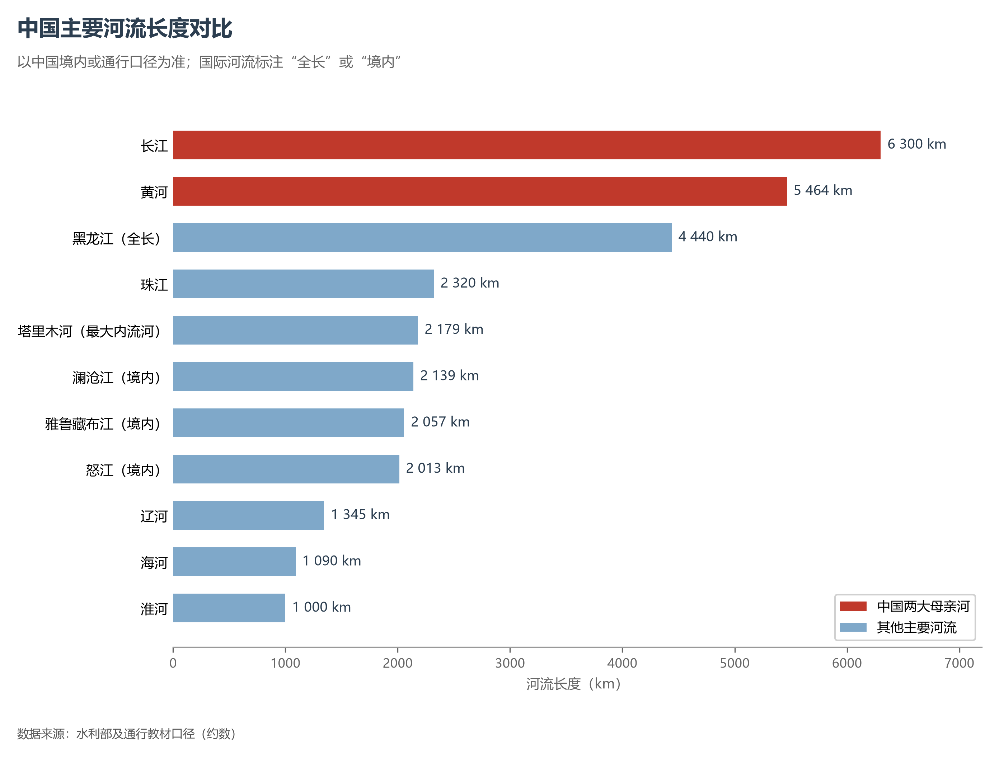
图 5-2 中国主要河流长度对比：以中国境内或通行口径为准。
| 河流名称 | 全长 / 境内长 | 流域面积（境内） | 多年平均径流量 | 注入大洋 / 归宿 | 水文与流域核心特征 | 沿岸核心城市与现代战略定位 |
|---|---|---|---|---|---|---|
| 珠江 | 2 320 km | 45.4 万 km² | 约 3 360 亿 m³ （全国第二） |
太平洋（南海） | 水量极大（仅次于长江，是黄河的近6倍）；产水模数全国最高；由西江、北江、东江三大水系汇流而成 | 广州、深圳、香港、佛山、南宁；粤港澳大湾区生命线、平陆运河出海通道 |
| 黑龙江 （阿穆尔河） |
4 440 km（全长） （中俄界河约3000km） |
88.7 万 km² | 约 2 720 亿 m³ （全流域3460亿） |
鄂霍次克海 | 结冰期最长的大河（每年结冰 5—6 个月，流冰期凌汛）；中俄最大界河；水质极为优良，冷水性鱼类宝库 | 哈尔滨（松花江）、齐齐哈尔、佳木斯、黑河；东北黑土地粮仓水网主轴 |
| 松花江 | 1 927 km | 55.7 万 km² | 约 762 亿 m³ | 黑龙江（最大支流） | 东北平原水网主干；由嫩江与二道松花江在三岔河汇流；春秋双汛（春季融雪凌汛，夏季暴雨夏汛） | 哈尔滨、吉林、齐齐哈尔；国家超级商品粮基地最核心灌溉水源 |
| 辽河 | 1 345 km | 22.9 万 km² | 约 150 亿 m³ | 太平洋（渤海辽东湾） | 由东辽河与西辽河汇流；泥沙含量较高；地处温带半湿润区，季节分配集中 | 沈阳、鞍山、盘锦、营口；东北重工业摇篮与辽河油田腹地 |
| 海河 | 1 090 km（干支全长） （干流长仅 73 km） |
26.4 万 km² | 约 220 亿 m³ | 太平洋（渤海湾） | 典型“扇形水系”（九河下梢）；汇水极快极易造成下游特大洪涝；流域人均水资源仅 250 m³，全国缺水最甚 | 北京、天津、石家庄、保定；京津冀协同发展核心区；南水北调受水重心 |
| 淮河 | 约 1 000 km | 27.0 万 km² | 约 620 亿 m³ | 长江（入江水道）与黄海（入海水道） | 南北气候界线载体；历史上长期受黄河夺淮淤塞；“大雨大灾、小雨小灾、无雨旱灾”；新中国治淮第一河 | 淮安、蚌埠、信阳、阜阳；国家南北粮食过渡带与综合防洪减灾标杆 |
| 雅鲁藏布江 | 2 057 km（境内） （全长 2 880 km） |
24.0 万 km² | 约 1 650 亿 m³ | 印度洋（出境为布拉马普特拉河注入孟加拉湾） | 世界海拔最高大河（源头海拔 > 5 500 m）；雅鲁藏布大峡谷全长 504.6 km，最深达 6 009 m；水能理论蕴藏量占全国 1/6 | 日喀则、拉萨（拉萨河汇入）、林芝；雅鲁藏布江下游世界级水电基地建设 |
| 澜沧江 | 2 139 km（境内） （全长 4 880 km） |
16.7 万 km² | 约 740 亿 m³ | 太平洋（出境为湄公河注入南海） | “东方多瑙河”；一江连六国（中、老、缅、泰、柬、越）；深切高山峡谷，全流域梯级水电滚滚东送 | 昌都、景洪；澜湄合作国际地缘水资源合作枢纽 |
| 怒江 | 2 013 km（境内） （全长 3 240 km） |
13.8 万 km² | 约 690 亿 m³ | 印度洋（出境为萨尔温江注入安达曼海） | “三江并流”世界遗产成员；保留完整原始生态景观的自由流淌峡谷大江 | 那曲、保山、泸水；横断山区生态多样性保护天然走廊 |
| 塔里木河 | 2 179 km（干支全长） （干流 1 321 km） |
102.0 万 km² | 约 50 亿 m³（干流） （各源流 240 亿） |
内流河（注入台特马湖） | 中国最长内流河；纯靠天山与昆仑山冰雪融水补给；滋润全球最大天然胡杨林保护区 | 阿克苏、阿拉尔、库尔勒；环塔里木盆地绿洲农业与沙漠公路防护 |
在南方广袤的大地上，珠江展现出与其相对紧凑的流域面积完全不相称的巨量水文能级：
与南方丰沛江河截然不同，北方的海河与淮河则集中体现了人地矛盾与治水防灾的极限抗争：
海河水系呈极其特殊的掌状（扇形）水系分布：由北运河、永定河、大清河、子牙河、南运河五大干支流自燕山和太行山区汇流至天津市区三岔河口，干流仅长 73 km，最终注入渤海。 - 极端脆弱的防洪格局：上游山区面积占 60%，坡度极陡，一旦遭遇极端强暴雨（如 1963 年特大暴雨、2023 年“23·7”大洪水），各支流山洪几小时内同时涌入狭窄的扇形平原，形成巨大的汇流洪峰； - 极度贫乏的人均水资源：海河流域承载着北京、天津、雄安新区等超大城市群与密集工业，流域人均水资源量仅 250 m³ 左右，属于极度水荒区。南水北调中线工程通水后，每年为海河流域注入数十亿立方米丹江口清水，才使断流干涸数十年的永定河、潮白河等北方大河重新实现全线贯通入海。
淮河发源于河南省桐柏山，介于长江与黄河两大流域之间，是自然地理上划分中国南北方气候的天然水系。 - 黄河夺淮的千年创伤：在历史上黄河夺淮入海的 700 年间，黄河泥沙将淮河下游原有的入海出水道彻底淤死，导致淮河被迫改道借道洪泽湖、汇入长江入海，形成了极易在夏季诱发大洪涝的洼地水系； - 从“一定要把淮河修好”到淮河安澜：1950 年毛泽东同志发出“一定要把淮河修好”的伟大号召，国家先后建成了以佛子岭水库、梅山水库为代表的大别山大型水库群，开辟了淮河入江水道、苏北灌溉总渠与淮河入海水道，成功实现了淮河流域大水有泄路、大旱有蓄水，成为华夏大河由水患频仍走向水利富民的经典史诗。
从地缘水文角度审视，中国西南部青藏高原作为“亚洲水塔”，是全亚洲最重要的跨国河流源头聚集区：
在奔腾不息的江河网络之间，成千上万座大大小小的天然湖泊如同一颗颗璀璨的明珠，点缀在华夏大地的崇山峻岭与平原洼地之中。据全国湖泊资源科学普查统计，中国境内面积大于 1 km² 的天然湖泊有 2 800 余个，常年湖泊总面积达 8.2 万余 km²，湖泊水资源蓄水量逾 8 000 亿 m³。
然而，水资源的天然禀赋与人类经济社会的空间分布之间，存在着极其尖锐的矛盾：中国多年平均水资源总量居世界第六位，但人均水资源量仅为世界平均水平的 1/3 到 1/4，且呈现出极其悬殊的“南丰北缺、南充北涸”宏观格局。正是这种严峻的自然地理约束，催生了当代中国构筑“国家水网”、实施跨流域大调水的超级工程体系。
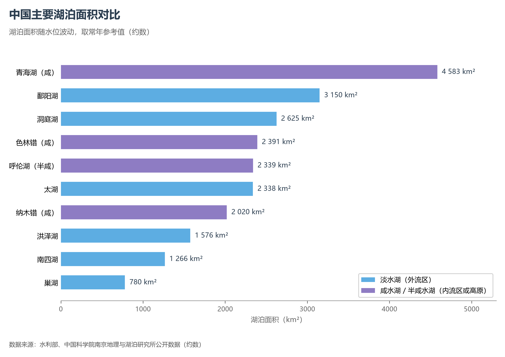
图 5-6 中国主要湖泊面积对比：紫色为咸水湖或半咸水湖，蓝色为淡水湖。
图 5-9 主要水资源分区水资源开发利用率与人均水资源量对比：海河、黄河与淮河流域开发利用率极度逼近或超过警戒红线，南方水资源相对充裕，构成了国家跨流域调水的客观必然性。
受地质构造演化、补给来源与干湿气候分异影响，中国的湖泊在地理分布上呈现出高度集中的五大湖区格局（东部平原湖区、青藏高原湖区、蒙新高原湖区、东北平原与山地湖区、云贵高原湖区），并在水质化学特征上严格分化为外流淡水湖与内陆咸水湖/盐湖两大类型：
| 湖泊名称 | 所在省区 | 湖面面积（约） | 湖面海拔 | 咸淡水属性 | 最大水深 / 平均水深 | 核心水文功能与生态战略地位 |
|---|---|---|---|---|---|---|
| 青海湖 | 青海省 | 4 583 km² | 3 196 m | 咸水湖（微咸水） | 31.4 m / 21.0 m | 中国面积最大的湖泊、最大的咸水湖；半个世纪以来水位持续攀升扩张；青海湖裸鲤（湟鱼）与候鸟天堂 |
| 鄱阳湖 | 江西省 | 约 3 150 km² （丰水期 > 4 000） |
21 m | 淡水湖 | 25.1 m / 8.4 m | 中国面积最大的淡水湖；长江中游特大吞吐调蓄湖；全球 98% 白鹤种群冬季栖息地；丰枯水位变幅达十余米 |
| 洞庭湖 | 湖南省 | 2 579 km² | 33 m | 淡水湖 | 30.8 m / 6.7 m | 中国第二大淡水湖；长江荆江河段最关键的天然蓄洪盆地；纳湘资沅澧四水汇流长江；退田还湖生态修复示范区 |
| 太湖 | 江苏/浙江 | 2 338 km² | 3 m | 淡水湖 | 4.8 m / 1.9 m | 长三角核心水缸；典型浅水浅碟形湖泊；蓄泄长江与钱塘江水系，河网密布；富营养化综合治理样板 |
| 色林错 | 西藏自治区 | 2 391 km² | 4 530 m | 咸水湖 | 33.0 m / 18.0 m | 西藏面积第一大湖泊；由于青藏高原冰川消融与降水增多，近二十年面积急剧扩张，超越纳木错成为藏北新霸主 |
| 洪泽湖 | 江苏省 | 2 069 km² | 12 m | 淡水湖 | 4.5 m / 1.8 m | 中国第四大淡水湖；地处淮河下游的过水型浅水湖泊；南水北调东线工程关键过境调蓄水库 |
| 纳木错 | 西藏自治区 | 2 020 km² | 4 718 m | 咸水湖 | 120.0 m / 33.0 m | 世界上海拔最高的大型深水湖之一；念青唐古拉山北麓古冰川与地质构造断陷湖；水质透明度高居全国前列 |
| 呼伦湖 （达赉湖） |
内蒙古自治区 | 2 046 km² | 545 m | 半咸水 / 吞吐湖 | 8.0 m / 5.7 m | 内蒙古第一大湖，呼伦贝尔大草原生态明珠；高纬度寒冷草原吞吐湖，额尔古纳河水系重要调节节点 |
| 博斯腾湖 | 新疆维吾尔自治区 | 1 210 km² | 1 048 m | 淡水湖（微咸） | 16.0 m / 9.0 m | 中国最大的内陆吞吐淡水湖；开都河的尾闾与孔雀河的源头；天山南坡焉耆盆地的绿洲生命水源 |
| 察尔汗盐湖 | 青海省柴达木 | 5 856 km² | 2 670 m | 干盐湖 / 晶间卤水 | 盐层厚达数米至数十米 | 中国最大可溶性钾镁盐矿床；蕴藏氯化钾储量占全国 80% 以上；青藏铁路直接铺设在数米厚“万丈盐桥”坚硬盐盖之上 |
根据水利部《中国水资源公报》，我国年水资源总体特征可高度概括为三句话：总量居世界前列，人均极为贫乏，空间严重错配。
从图 5-9 的双子图可以看出，我国水资源在水土资源配置上呈现极其触目惊心的割裂状态： - “南方四区”水多地少：长江流域、珠江流域、东南诸河与西南诸河，土地面积仅占全国约 36%，却拥有全国 81% 的水资源总量；水资源开发利用率普遍在 15%—20% 之间，水资源环境承载力充裕； - “北方六区”水少地多：黄河、淮河、海河、辽河、松花江与西北内陆区，占全国陆地面积的 64%，但水资源总量仅占全国的 19%； - “黄淮海”平原的水资源极度超载红线：华北平原的黄河、淮河、海河三大流域，汇集了全国 35% 的人口、38.5% 的耕地与超过 35% 的经济总量，但三大流域水资源总量仅占全国的 7.2%！ - 海河流域水资源开发利用率高达 106%（长期超采深层地下水形成数万平方公里的地下降落漏斗）； - 黄河流域开发利用率达 80.2%，淮河流域达 65.4%； - 三大流域全部远远击穿了国际公认的 40% 生态安全红线！这种“缺水即停摆”的刚性空间矛盾，是制约北方经济社会发展的最大自然瓶颈。
为化解“南方水有余，北方水严重不足”的水资源空间错配难题，中国历经数十年科学论证，构建起以“南水北调”为超级骨架的现代国家大水网体系：
图 5-7 南水北调工程三线示意：东、中线已通水，西线在论证；线路为示意勾绘。
除了南水北调国家骨网，各大区域级战略引调水工程全面落地突破： - 引汉济渭工程：2023 年 7 月实现先期通水。工程以长达 98.3 公里、最大埋深逾 2 000 米的特长秦岭输水隧洞，彻底凿穿中国南北方分界线秦岭山脉，将长江水系汉江清水送入黄河最大支流渭河，根本上缓解了西安特大城市与关中平原的水荒； - 引江补汉工程（在建）：从三峡水库直接取水，打通连通丹江口水库下游的超深长隧洞，为南水北调中线提供源源不断的后续充沛水源； - 引江济淮工程：2022 年底实现试通水试通航，横跨淮河与长江水系，不仅缓解淮北缺水，更为皖豫开辟出千吨级江淮运河第二黄金出海通道； - 滇中引水与环北部湾工程：滇中引水从金沙江石鼓段调水润泽昆明高原旱区；环北部湾广东水资源配置工程从西江调水，彻底终结雷州半岛红土旱区的千年缺水历史。
面对人多水少、水时空分布不均的客观国情，中国的治水理念经历了从“向自然无限索取”到“人水和谐共生”的深刻制度变革：
土地是一切自然资源之基，是所有经济生产活动与人类文明繁衍的空间载体。对于拥有 14 亿多人口、幅员 960 万平方公里的中国而言，如何精准摸清每一寸土地的地类归属、利用现状与生态承载边界，不仅是国家科学治理的基础，更直接关乎粮食安全底线与中华民族永续发展的命脉。
2018 年至 2019 年开展的第三次全国国土调查（简称“三调”，以 2019 年 12 月 31 日为统一标准时点，2021 年 8 月正式公布成果），以优于 1 米分辨率的高精度卫星遥感影像为全域底板，实地核查了全国 2.6 亿个图斑，全面实现了“图斑到地、像素级入库”，是中国迄今为止精度最高、技术最先进、数据最真实权威的国土家底全景大盘点。
图 6-1 三调主要地类面积：林地与草地合计近 5.5 亿公顷，是国土的生态底盘；耕地是面积最大的农用地类型。
图 6-6 全国耕地质量等级构成比例：优等高产田仅占三成，中低产田占比近七成，折射出粮食稳产保供的质量压力。
“三调”首次建立了覆盖陆域国土全域的统一调查分类体系，将地表覆盖精准归纳为 13 个一级地类和数十个二级地类。在全国土地总面积中，核心地类分布格局如下：
| 一级地类 | 面积（万公顷） | 面积（亿亩） | 占国土总面积比例 | 二级地类构成与空间分布特征 |
|---|---|---|---|---|
| 耕地 | 12 786.19 | 19.18 | 13.3% | 水田 3 134 万公顷（占 24.5%，集聚于南方水乡与东北平原）；水浇地 3 211 万公顷（占 25.1%，主要分布于华北平原及西北灌区）；旱地 6 441 万公顷（占 50.4%，分布于黄土高原、西南喀斯特丘陵与东北漫岗） |
| 林地 | 28 412.59 | 42.62 | 29.6% | 乔木林地占 60% 以上，主要分布于大兴安岭、长白山、横断山脉及南方低山丘陵区；森林蓄积量超过 190 亿 m³ |
| 草地 | 26 456.99 | 39.69 | 27.6% | 天然牧草地占 80% 以上，主要横亘于内蒙古高原草原带、青藏高原高寒草甸及西北山地草场；草畜平衡是核心矛盾 |
| 湿地 | 2 346.03 | 3.52 | 2.4% | 三调首次单独设立为一级地类；包括红树林地、森林沼泽、草本沼泽、沿海滩涂及内陆盐沼，是全球迁徙候鸟与碳汇核心区 |
| 园地 | 2 019.55 | 3.03 | 2.1% | 果园占 65% 以上，茶园占 17%，橡胶园主要分布于海南与滇南，主要利用山丘坡地梯级开发 |
| 城镇村及工矿用地（建设用地主体） | 3 530.64 | 5.30 | 3.7% | 城市用地 522 万公顷、建制镇 385 万公顷、村庄用地 2 190 万公顷（占建面 62%）、采矿及独立工矿用地 433 万公顷 |
| 交通运输用地 | 980.99 | 1.47 | 1.0% | 铁路用地、公路用地（高等级公路网占主导）、农村道路、机场与港口码头用地 |
| 水域及水利设施用地 | 3 628.79 | 5.44 | 3.8% | 河流湖泊水面、水库水面（水库超 9.8 万座）、坑塘水面及水工建筑用地 |
深入研读“三调”数据，可以提炼出制约与指引中国未来发展的三个最根本的土地基本国情：
从图 6-6 可以清晰看出，自然资源部与农业农村部对全国耕地实施的 1—10 等质量评价显示出严峻的质量金字塔： - 优等地（1—3等）：仅占全国耕地总量的 31.2%（约 4.00 亿亩），主要镶嵌在东北平原黑土区、长江中下游平原冲积平原、成都平原与珠江三角洲，是保障国家口粮绝对安全的核心“压舱石”； - 中等地（4—6等）：占全国总量的 46.8%（约 5.98 亿亩），分布于黄淮海平原潮土区、黄土高原台塬与南方红壤低山丘陵，受春旱、伏旱、土壤板结或次生盐渍化制约，属于“保墒丰产、遇灾减产”的中产田； - 低等地（7—10等）：占比高达 22.0%（约 2.81 亿亩），主要分布于地形陡峭坡耕地（坡度 > 15°）、西北干旱风沙区及西南喀斯特石漠化贫瘠山区，生产条件极度恶劣，抗灾能力薄弱。
在 960 万平方公里的陆域国土中，林地、草地与湿地三大生态用地合计面积达 5.72 亿公顷（约 85.8 亿亩），占全国陆地面积的近 60%。这构成了华夏大地维系江河源头水源涵养、水土保持与碳达峰碳中和的“绿色生态底盘”。这深刻意味着，城市化扩容、基础设施建设与农业生产，必须在剩余仅约 40% 的有限国土空间内精细布局、寸土必争，杜绝任何对生态空间的蛮横侵占。
鉴于人多地少、耕地后备匮乏的严酷国情，1986 年颁布实施的《中华人民共和国土地管理法》庄严确立了我国的一项基本国策：“十分珍惜、合理利用土地和切实保护耕地”。
横向对比世界主要领土大国的土地资源账本，中国的集约化利用展现出独特的地理韧性：
在现代空间信息技术崛起之前，人类对辽阔国土的摸底往往依赖于各级行政区自下而上的纸质台账报表与局部样方抽样推算，数据失真、边界模糊与统计滞后曾长期困扰着土地管理。
今天，从距地数百公里的近地轨道俯瞰华夏大地，由高分一号至七号、资源系列、环境减灾系列、风云气象系列以及商业遥感星座构筑的庞大“对地观测国家队”，每天向地面传输数十万景亚米级高分辨率卫星影像。自然资源部依托全国遥感影像统筹机制，对全国 2.6 亿个地块图斑 实施常态化“逐地块对比、逐像素审验”。中国大地的每一次建设开工、每一处林地消长与每一块农田耕作，都在天眼遥感网络中留下了毫厘毕现的时空印记。
图 6-5 卫星视角下三十年主要土地利用类型演变（1990—2024）：城镇用地面积成倍扩张，北方耕地占比提升，退耕还林还草等生态治理使地表显著变绿。
第三次全国国土调查不仅是一次规模浩大的国情普查，更标志着中国空间治理体系完成了一场从“粗放估算”到“全域数字化、像素级入库”的技术质变：
将 1990 年以来三十余年的连续多时相卫星陆表覆盖数据拼接回放，中国大地的地表肌理经历了人类地理史上速度最快、规模最宏伟的三大空间大迁徙（见图 6-5）：
| 宏观演变主线 | 驱动机制与核心地理现象 | 空间表现特征与典型区域 | 正面经济成效与潜在地理矛盾 |
|---|---|---|---|
| 城镇空间几何级膨胀 | 工业化与极速城镇化驱动，常住人口城镇化率由 1990 年的 26.4% 飙升至 2024 年的 66.2% | 全国城市建成区面积由 1.3 万 km² 剧增至逾 6.5 万 km²（扩张近 5 倍）；京津冀、长三角、珠三角都市圈连片硬化 | 支撑数亿农民进城定居与全球制造中心崛起；但城镇扩张不可避免占用了最肥沃的平原城郊优质耕地（“占优补劣”矛盾凸显） |
| 耕地重心“北移与西进” | 南方工业化占用平原良田与农业结构调整；北方黑土地开垦、水利改善与西北现代节水滴灌农业崛起 | 东南沿海优质水田比重下降；东北三江平原、松嫩平原旱田改水田，新疆塔里木山前绿洲棉田大规模外延 | 彻底逆转了千年“南粮北运”历史格局，塑造了以黑龙江（年产超1 500亿斤）为首的北方商品粮新格局；但加剧了北方“地多水少”的承载张力 |
| 生态工程驱动“地表大变绿” | 国家持续实施退耕还林还草（超 5 亿亩）、三北防护林防护网络、封山育林及京津风沙源综合治理 | 黄土高原植被覆盖率由 31% 跃升至 60% 以上；太行山、秦巴山区及南方喀斯特石漠化山区绿色指数成倍翻越 | 黄河流域泥沙锐减 90%，水土流失大幅受控；NASA 卫星证实中国贡献了全球新增绿化面积的 1/4，稳居世界第一 |
中国在大范围国土遥感监测领域的卓越实践，为全球环境变化研究与广大发展中国家的空间治理提供了宝贵的中国方案：
19.18 亿亩耕地、14 亿多人口、每年数百万亩城市化与基础设施建设刚性需求——这三组数字之间永恒的张力，构成了中国土地管理政策与空间治理全部制度创新的原动力。
土地是不可再生的战略资源，尤其在平原与低丘仅占国土少数的中国，最平整肥沃的土地往往恰好是城市扩张、道路网络铺设成本最低的黄金区域。如果在城市化浪潮中任由资本与市场力量自发盲目蚕食平原良田，国家必将面临粮食安全崩溃的万劫不复之渊。因此，中国自 20 世纪 90 年代以来，历经三十年探索，建立起全球最严厉的耕地保护制度矩阵与“三区三线”空间用途管制铁律。
图 6-2 全国耕地面积：两次调查与最新变更：2010 年代净减少约 1.1 亿亩，2021 年起连续三年净增加。
从图 6-2 的耕地面积演变曲线中可以看到，2009 年“二调”到 2019 年“三调”的十年间，全国耕地净减少了约 1.13 亿亩。耕地锐减的驱动因素既有生态退耕还林还草、城市建设合理占用，也包含了大量农村私自占用耕地建房、改种林果果树甚至挖塘养鱼等“非粮化”“非农化”流失。
面对严峻态势，国家自 2020 年起果断打出了一套“长牙齿”的耕地保护组合拳，形成了环环相扣的制度阶梯：
| 制度层级 | 制度名称与指标底线 | 核心政策抓手与实施机制 | 法定执行刚性与保障力度 |
|---|---|---|---|
| 第一级：数量红线 | 18 亿亩耕地保有量 | 守住 18 亿亩全国耕地绝对底线；2023 年度国土变更调查显示全国耕地达 19.29 亿亩，实现连续三年净增加，彻底扭转了“二调”至“三调”持续减量的危险下行通道 | 严格纳入各级国土空间规划刚性约束指标；全国分解下达至省、市、县三级政府，不得调减突破 |
| 第二级：质量核心 | 15.46 亿亩永久基本农田 | 在 18 亿亩耕地中，精选最肥沃、水利设施最完备的 15.46 亿亩优质农田划为“永久基本农田”；同步累计建成 10 亿亩以上高标准农田（旱涝保收、稳产高产） | 实行永久特殊保护；除国家重大基础设施等特殊项目经国务院批准外，任何单位和个人严禁占用；严禁改变粮食生产用途 |
| 第三级：双重闭环 | 占补平衡 与 进出平衡 | 占补平衡：非农建设经批准占用耕地的，必须落实“占一补一、占优补优、占水田补水田”，并推行“先补后占”； 进出平衡：耕地转为果园、茶园、林地等其他农用地及农业设施用地的，必须在同行政区内补足同等数量与质量的可以长期稳定利用的耕地 |
彻底堵死了过去“占用优质平原水田、在偏远荒山坡地上虚假补充劣质旱地”的制度漏洞；杜绝耕地内部隐性“非粮化”流失 |
| 第四级：责任机制 | 党政同责 与 田长制 | 耕地保护和粮食安全责任制全面纳入各级党委和政府领导班子年度考核；全面推行省、市、县、乡、村五级“田长制”，每块农田均有明确责任田长 | 实行“一票否决”与终身追责；对违法占用耕地、圈地倒卖土地行为，由国家自然资源督察机构严厉督办问责并追究刑事责任 |
长期以来，中国的空间规划存在着土地利用规划（国土部门）、城乡规划（住建部门）、主体功能区规划（发改部门）与生态保护红线（环保部门）各自为政、边界重叠打架的“多规并立”痛点。
2022 年，随着《全国国土空间规划纲要（2021—2035 年）》编制完成，国家在全国统一完成了“三区三线”的统筹划定与精准上图，实现了新中国历史上第一次全域国土空间治理向“多规合一、一张图管空间”的历史性飞跃：
“三区三线”一经划定，全部纳入全国统一的国土空间规划“一张图”实施监督信息系统： - 任何建设工程、产业项目和基础设施在立项选址之初，必须首先经过“三区三线”数字化计算机辅助审查校验； - 凡触碰永久基本农田或生态保护红线且不符合国家准入清单的项目，系统实行“一键红灯”，自动阻断报批程序，使绿色生态与优质粮田获得了无可撼动的法定硬约束。
为了在城市扩张与农田保护之间取得平衡，全球各发达经济体均演化出独特的土地用途管制模型，中国的“三区三线”模式展现出鲜明的中国特色：
| 国家 / 地区 | 核心土地保护法律与制度工具 | 运作机制与特征 | 适用国情与主要局限 |
|---|---|---|---|
| 中国 | 《土地管理法》《国土空间规划纲要》；18亿亩红线、永久基本农田、生态保护红线“三区三线” | 行政硬约束与国家规划统领；指标层层分解锁定，党政同责，数字化卫星动态遥感“逐图斑年检” | 极高效率地化解了“人多地少、城镇化激进扩张”的尖锐生存危机；需要精细化处理保护与地方经济发展的利益协调 |
| 美国 | 《远东农田保护法》（FPPA）；农业保护区法案（Zoning）；自然资源保护局休耕保护计划（CRP） | 市场经济补偿与分区法结合；政府通过购买土地开发权（PDR）补贴农户，农田多采取大面积经济休耕 | 人均耕地极其充裕（约7亩/人），不存在生存性口粮短缺危机；主要通过联邦财政补贴维持土地市场生态 |
| 日本 | 《农地法》《农业振兴地域整备法》 | 严苛的微观审批许可制；划定“农用地区域”，非农占用需经过知事与农林水产大臣繁琐审批 | 人多地少高度相似；但由于老龄化严重，出现了数百万亩耕地荒芜撂荒与农地抛荒的新型困境 |
| 欧盟 | 共同农业政策（CAP）；“交叉遵从”（Cross-Compliance）与绿色直接补贴 | 绿色补贴与生态捆绑；将农场主的直接收入补贴与维持农田生物多样性、水质土壤标准严格绑定 | 农业生产力高度富余；制度设计重心更偏向于环境与农业景观维护，而非单一的耕地数量规模硬兜底 |
通过对比可以看出，中国的耕地保护与“三区三线”制度，是在极其紧张的人地关系和高速度推进的工业化、城镇化双重挤压下，由国家意志主导建立的空间防御体系。它以法治化、数字化的铁律，将关系华夏子孙饭碗的良田和维系江河命脉的绿水青山严密保护起来，成为中国式现代化最稳固的空间基石。
如果说土地是人类一切生产活动的空间基底，那么依附于土地之上的森林、土壤、水与矿产，就是驱动现代工业体系运转与生态环境平衡的四大核心物质资源。
与相对固定的国土空间相比，这四大资源的共同本质在于空间分布的极端非均衡性：森林蓬勃于东南山川，土壤肥沃于北方平原，丰沛之水汇流于南方江河，而煤炭油气与关键矿藏则深埋于北方高原与西部盆地。这一错综复杂的地学空间拼图，不仅决定了中国宏大跨区域资源调配格局（如北煤南运、西气东输、西电东送、南水北调），更直接深刻影响着国家产业链安全与现代工业版图的战略重构。
图 6-3 分省森林覆盖率对比：南方集体林区包揽前列，西北受水分条件制约。
图 6-4 主要矿产品产量中国占世界比重：稀土、电解铝、粗钢、煤炭、水泥均占全球一半上下。
图 6-7 中国重点战略性矿产对外依存度对比（2023年统计态）：大宗工业原料对外依存度居高不下，煤炭与稀土具备绝对自给优势。
新中国成立初期，由于长期历史采伐与战火破坏，全国森林覆盖率仅为可怜的 8.6% 左右，水土流失与风沙侵袭严重。经过半个多世纪持续推行的全民义务植树、天然林资源保护工程与三北防护林建设，全国森林覆盖率在 2023 年正式跃升至 24.02%，森林面积达到 2.31 亿公顷，森林蓄积量超过 194.93 亿 m³，人工林保存面积稳居世界第一位。
从图 6-3 的分省森林覆盖率排行可以看出，森林空间分布呈现出极强的降水制约与地形分异： - 南方集体林区傲视全国：福建（66.8%）、江西（63.1%）、海南（62.1%）、浙江（61.2%）、广东（58.7%）、湖南（59.9%）、广西（62.6%）等省区，依托水热优越的亚热带季风气候与多山地形，森林覆盖率普遍在 60% 以上，构成了中国最郁郁葱葱的“绿色长廊”； - 东北与西南国有天然林海：大兴安岭、小兴安岭、长白山与川西、滇西北高山峡谷，保存了全国面积最大的原始天然针阔混交林，是我国最重要的木材战略储备与生物多样性天然基因库； - 西北干旱区的生态天花板：新疆（约 5.0%）、青海（约 7.5%）、甘肃、宁夏等西北内陆省区，受 400 mm 年等降水量线的水分刚性制约，森林覆盖率普遍不足 15%。这深刻启示生态建设必须严格遵循“以水定绿、量水而行”，因地制宜以防风固沙灌木与天然荒漠草原保护为主，坚决防止违背水资源承载力的盲目造林。
土壤是自然界“水、热、气、生、岩”综合演化数万年的终极产物，是农业生产最不可替代的活态基础。中国土壤在大陆季风气候与地形多级阶梯的控制下，展现出极其规律的纬度地带性、经度地带性与非地带性垂直演替图谱：
| 土壤类型 | 核心分布区域 | 成土母质与气候成因机制 | 土壤理化性状与肥力特征 | 主要农业利用与生态保护战略 |
|---|---|---|---|---|
| 黑土 与 黑钙土 | 东北松嫩平原、三江平原（“北大仓”） | 温带湿润半湿润季风气候，草甸草原与针阔混交林下漫长腐殖化堆积 | 全球四大黑土带之一；有机质含量高达 3%—10%，团粒结构优异，微酸性至中性，肥力极高 | 国家超级商品粮基地；2022年颁布《黑土地保护法》，推广秸秆还田（梨树模式）、免耕少耕，遏制“变薄、变瘦、变硬” |
| 潮土 与 褐土 | 华北平原、黄河中下游、海河流域 | 黄河、海河冲积洪积母质沉积；暖温带半湿润旱作季风气候 | 土层极其深厚（数十至数百米），微碱性，富含钾钙，孔隙度高，保墒能力较好 | 冬小麦与夏玉米一年两熟主产区；地下水位较浅易诱发次生盐渍化，需强化高标准农田水肥一体化调控 |
| 红壤 与 黄壤 | 长江以南江南丘陵、两广丘陵、云贵高原 | 亚热带与热带高温多雨季风，剧烈化学风化与脱硅富铝化淋溶 | 酸性强（pH 4.5—5.5），黏度重，铁铝富集，有机质分解极快，普遍缺磷 | 极适宜喜酸的茶树（大红袍、铁观音）、油茶、柑橘种植；在平原冲积低洼处经千年人工水耕熟化，演变为高产的水稻土 |
| 紫色土 | 四川盆地丘陵与盆底（川中、川东） | 侏罗纪、白垩纪紫红色砂页岩快速物理风化，岩石母质继承性强 | 风化极为迅速，土层相对较薄；富含磷、钾、钙等矿质营养养分，保肥性优 | 被誉为天然“矿质肥料库”；支撑了四川盆地繁荣密集的梯田农业；需强化梯坡固土、防治水土流失 |
| 绿洲灌淤土 | 宁夏平原、河套平原、南疆山前绿洲 | 极端干旱大陆性荒漠背景下，两千余年来引黄、引天山昆仑冰雪融水淤灌 | 在原生贫瘠荒漠土上人工淤积厚达 1—2 米的肥沃水成层，有机质大幅回升 | 人造绿洲土壤奇迹；保障塞上江南小麦、枸杞、玉米与新疆长绒棉、优质林果的高产稳产 |
中国是世界上极少数矿产资源门类齐全的大国之一，已发现矿产 173 种，查明资源储量 163 种，主要矿产资源潜在总价值稳居世界前三位。
然而，从图 6-4 与图 6-7 的深度对照中，可以清晰透视出中国作为世界第一制造大国所面临的战略性矿产供应链深刻现实：
从图 6-4 可以看出，中国依靠庞大的工业产能，生产了全球 54% 的粗钢、59% 的电解铝、56% 的水泥、52% 的煤炭。但这种超大规模制造的背后，是大宗矿产对外依存度长期居高不下（图 6-7）： - 铁矿石：对外依存度高达 81.2%，年进口量常年超过 11 亿吨，主要高度依赖澳大利亚与巴西两国的海运供应； - 铜与铝原料：精炼铜原料对外依存度达 78.5%，铝土矿对外依存度达 65.4%（主要进口自几内亚、印度尼西亚）； - 原油与天然气：原油对外依存度高达 72.8%（年进口超 5 亿吨），天然气对外依存度达 42.5%，马六甲海峡航道与沿海接卸港口是国家能源安全的关键咽喉； - 新能源关键矿产：锂（对外依存度约 58%）、镍（对外依存度 > 85%）、钴（对外依存度 > 95%），在全球动力电池与光伏风电爆发的背景下，正成为新一代地缘矿产竞争的战略焦点。
面对“富煤、贫油、少气、缺富铁铜”的客观矿产禀赋现实，中国正在统筹发展与安全，构建全新维度的资源保障体系：
如果把中国跨越近 50 个纬度的温度阶梯（第 4 章）与深入内陆数千公里的干湿水分梯度在三级阶梯的宏伟地貌（第 3 章）上叠加，展现在世人面前的，就是一幅全球绝无仅有的自然生态大拼图。
从海南五指山密不透风的热带季雨林，到大兴安岭冰雪覆盖的寒温带泰加林；从江南丘陵郁郁葱葱的常绿阔叶林，到内蒙古高原开阔壮丽的绿色草甸，直至新疆塔里木腹地寸草不生的苍凉沙海——中国大地上的水平自然地带性（热量主导的纬度分异与水分主导的经度分异）交织激荡，加之青藏高原与横断山脉高差数千米的垂直自然带谱，共同构成了全球生态系统最完备、生物物种最繁盛的“生物多样性超级大国”。
图 7-1 中国主要自然带分布（示意）：森林—草原—荒漠的东西更替与纬向温度带的叠加，青藏高寒区自成体系。
中国地表植被与土壤的水平空间展开，受到南北热量差异与东西水分梯度的双重正交驱动，形成了极具几何规律的水平带谱结构：
| 自然带类型 | 核心分布区域 | 水热组合特征 | 代表性优势植被 | 代表性野生动物与土壤类型 |
|---|---|---|---|---|
| 热带季雨林与雨林带 | 海南岛中南部、雷州半岛、云南西双版纳及台湾南部 | 全年高温皆夏（最冷月 > 15 ℃），年降水 1 500—2 500 mm，干湿季分明 | 望天树、龙脑香、榕树（绞杀植物）、红树林、桫椤 | 亚洲象、海南长臂猿、绿孔雀、巨蜥；砖红壤 |
| 亚热带常绿阔叶林带 | 秦岭—淮河以南至两广丘陵，青藏高原以东的广袤南方平原与丘陵山地 | 冬温夏热，四季分明；最冷月均温 0—15 ℃；年降水量 800—1 600 mm | 全球同纬度面积最大的常绿阔叶林区；樟树、青冈栋、楠木、毛竹林 | 大熊猫、川金丝猴、华南虎（野外灭绝）、白颈长尾雉；红壤、黄壤 |
| 暖温带落叶阔叶林带 | 华北平原全境、辽东半岛、山东半岛及黄土高原南部 | 冬冷干燥，夏热多雨；年均温 8—14 ℃；年降水 400—800 mm，集中于盛夏 | 辽东栎、麻栎、槲树、栓皮栎、杨树、桦木 | 华北豹、褐马鸡（中国特有）、草原雕；棕壤、褐土 |
| 中温带针阔叶混交林带 | 东北长白山地、小兴安岭山区及松辽平原周边 | 冬季漫长严寒，无霜期 100—140 天；年降水量 500—800 mm | 红松、长白落叶松、水曲柳、黄檗、胡桃楸（东北“三大硬阔”） | 东北虎、东北豹、紫貂、原麝、梅花鹿；暗棕壤、典型黑土 |
| 寒温带针叶林带（泰加林） | 黑龙江大兴安岭北端（呼玛、漠河一带） | 漫长酷寒，年均温 < −4 ℃；降水量 400—500 mm；多年冻土广布 | 兴安落叶松为主的纯林或针叶混交林、樟子松、白桦 | 驼鹿、雪兔、黑嘴松鸡、猞猁；棕色针叶林土 |
| 温带草原带 | 内蒙古高原大部、松辽平原西部、黄土高原西北部 | 温带半干旱大陆性季风，年降水 200—400 mm，春季大风多沙 | 羊草、大针茅、贝加尔针茅、克氏针茅、耐旱灌木（柠条、锦鸡儿） | 黄羊（蒙原羚）、普氏野马、草原旱獭、沙狐；黑钙土、栗钙土 |
| 温带荒漠与荒漠草原带 | 塔里木盆地、准噶尔盆地、内蒙古阿拉善高原、柴达木盆地 | 极端干旱，降水 < 200 mm（腹地 < 50 mm），蒸发极剧烈，温差极大 | 极耐旱柽柳（红柳）、梭梭、白梭梭、胡杨林（绿洲）、麻黄 | 普氏原羚、野骆驼、鹅喉羚、塔里木兔；棕钙土、荒漠灰钙土、盐漠土 |
| 青藏高寒植被区 | 青藏高原主体（海拔 > 3 500—4 000 m 区域） | 空气稀薄、强太阳辐射、极寒干燥；日较差大而年较差小 | 高寒草甸（高山嵩草）、高寒草原（紫花针茅）、垫状驼绒藜 | 藏羚羊、野牦牛、藏野驴、雪豹、黑颈鹤；高山草甸土、高山寒冻土 |
除了广袤平原的水平分异，中国中西部高大山系的剧烈隆升，创造了世界上层次最丰富、落差最极致的山地垂直自然带谱。一座高山就宛如一部竖直摆放的自然地理全书：
横断山脉最高峰贡嘎山（海拔 7 556 m），东坡垂直俯瞰大渡河河谷（海拔约 1 300 m），在不足 30 公里的水平距离内，垂直落差达 6 200 余米： - 海拔 1 300—2 200 m：亚热带干热河谷灌丛向常绿阔叶林带过渡； - 海拔 2 200—2 800 m：常绿与落叶阔叶混交林带，古老被子植物丰富； - 海拔 2 800—3 600 m：亚高山针叶林带（峨眉冷杉、麦吊云杉、大果红杉），林冠整齐挺拔； - 海拔 3 600—4 400 m：高山杜鹃灌丛与高寒草甸带，初夏野花漫山如锦； - 海拔 4 400—4 900 m：高山流石滩垫状植被带（雪莲、绿绒蒿等极端耐寒抗风微型植物）； - 海拔 4 900 m 以上：永久积雪与冰川带，巨大的现代冰川（如海螺沟冰川）倾泻而下。 在贡嘎山徒步一天，相当于从江南水乡穿越数千公里直达北极冰原。
秦岭主峰太白山（海拔 3 771 m）作为我国大陆东半壁最高峰，垂直带谱生动演绎了暖温带向高寒生态的演替：山麓为暖温带落叶阔叶林（栓皮栎、锐齿槲栎），山腰分布红桦林与牛背桦林，海拔 3 000 m 附近演变为华丽的太白红杉纯林，山顶终见高山灌丛草甸与第四纪冰川拔仙台角峰碎石，成为我国南北过渡带垂直分异的经典范本。
中国是全球 12 个“巨大多样性国家”（Megadiverse Countries）之一，其物种丰富度与特有度在整个北半球无出其右：
在国际保护生物学界划定的全球 36 个生物多样性热点地区（Biodiversity Hotspots）中，有 4 个关键热点区域深入中国境内： - 中国西南山地（横断山热点区）：全球温带植物区系最丰富、高山花卉（杜鹃花、报春花、龙胆花、绿绒蒿）发源演化的超级中心； - 喜马拉雅热点区：西藏南部雅鲁藏布大峡谷与珠峰南翼低海拔湿润谷地； - 中亚山地热点区：天山与帕米尔高原冷温带野生果树（野生苹果、野生核桃原始基因库）； - 印缅热点区：云南南部西双版纳与华南热带季雨林交界走廊。
2021 年，联合国《生物多样性公约》第十五次缔约方大会（COP15）第一阶段会议在云南昆明成功召开，通过了具有历史里程碑意义的《昆明宣言》，中国正式宣布率先出资 15 亿元人民币设立“昆明生物多样性基金”，展现了中国从全球生物多样性大国走向全球生态文明治理关键引领者的宏阔胸襟。
中华民族五千年的文明史，是一部人与自然互动博弈的恢弘历史。在传统农耕时代，人口繁衍与口粮扩张曾驱使华夏先民对原始森林与天然沼泽进行大规模开垦，“毁林造田、围湖造田、陡坡开荒”一度导致黄土高原千沟万壑、长江中下游湖泊萎缩与北方风沙肆虐。
1978 年 11 月，国家在十一届三中全会召开的同月，正式批准启动“三北”防护林体系建设工程，标志着中国正式拉开了以国家力量大尺度修复山河生态的世纪大幕。经过半个世纪的接续奋战，中国完成了从“战天斗地向自然过度索取”到“绿水青山就是金山银山”与“山水林田湖草沙是生命共同体”的深刻哲学飞跃，创造了人类生态建设史上规模最宏大、惠及人口最广阔的绿色传奇。
图 7-2 中国森林覆盖率的变化（1949—2023）：从 8.6% 到 24.02%，人工林面积世界第一。
图 7-4 中国首批设立的五大国家公园面积与代表性旗舰物种：构建以国家公园为主体的自然保护地顶层架构，保护面积达 23 万平方公里。
从图 7-2 可以看出，中国森林覆盖率在过去 70 余年间走出了一条令人震撼的上升斜率（由建国初的 8.6% 持续攀升至 24.02%）。支撑这一全球变绿奇迹的，正是国家在不同历史关口统筹布局的六大超级生态保护与修复工程：
| 工程名称 | 启动时间与覆盖范围 | 核心工程措施与历史转折 | 取得的标志性生态与综合效益 |
|---|---|---|---|
| “三北”防护林体系工程 | 1978 年启动；规划至 2050 年（历时 73 年）；跨越西北、华北、东北 13 个省区 | 被誉为“绿色万里长城”；人工造林、封山育林、飞机播种造林与退化林分改造结合；塞罕坝林场从荒原变为百万亩人工林海 | 累计造林保存面积逾 3 200 万公顷，三北工程区森林覆盖率由 5.05% 提升至 13.84%；坚决打好黄河“几字弯”攻坚战、科尔沁/浑善达克歼灭战、河西走廊—塔克拉玛干阻击战三大标志性战役 |
| 退耕还林还草工程 | 1999 年启动试点；覆盖全国 25 个省区及新疆生产建设兵团 | 全球规模最大、惠及人口最多的生态补偿工程；对坡度大于 25 度的坡耕地和严重沙化耕地实施退耕还林还草，国家给予现金与粮食直接补贴 | 累计实施退耕还林还草超 5.2 亿亩，中央财政累计投入逾 5 700 亿元，惠及 4 100 余万农户、1.58 亿农牧民；黄土高原植被覆盖率由 31% 跃升至 67% 以上，彻底终结了黄河下游巨量输沙 |
| 天然林资源保护工程 | 1998 年长江松花江特大洪水后全面实施；覆盖 16 个省区 | 全面彻底停止长江上游、黄河上中游天然林商品性采伐，东北、内蒙古重点国有林区全面停伐；数十万林业工人实现由“砍树人”向“看林人”的身份转变 | 保护天然林近 30 亿亩，工程区森林面积净增近 3 亿亩，长江上游与黄河中游年输入干流泥沙量大幅降低 |
| 京津风沙源治理工程 | 2000 年启动；覆盖北京、天津、河北、山西、内蒙古 5 省区市 | 针对沙尘暴侵袭首都经济圈问题，综合推进退耕还林、飞播牧草、小流域水土保持治理与生态移民 | 工程区地表覆被率显著上升，北京年均沙尘日数由 20 世纪末的每年数十天骤降至年均不足 5 天，构筑起环首都绿色生态安全屏障 |
| 防沙治沙与库布齐模式 | 持续推进；重点聚焦内蒙古、新疆、甘肃等干旱半干旱沙区 | 创新推广“麦草方格机械固沙”、“光伏治沙”与肉苁蓉中药材全产业链固沙模式 | 全国荒漠化和沙化土地面积自 2004 年以来连续多个监测期实现“双缩减”；库布齐沙漠治理面积达三分之一，被联合国环境规划署确立为全球沙漠生态经济示范区 |
| 长江十年禁渔工程 | 2021 年 1 月 1 日起实施；覆盖长江流域重点水域 | 世界大江大河中空间跨度最大、禁捕时间最长、涉及渔民最多的保护行动；全流域干支流与通江湖泊常年禁捕 | 11.1 万艘渔船、23.1 万退捕渔民上岸转产安居；长江江豚种群数量实现历史性止跌回升（2022 年恢复至 1 249 头），赤水河鱼类资源翻倍恢复 |
在过去数十年中，中国的自然保护空间曾长期存在着“多头管理、孤岛化分割、产权不清、职能交叉”的制度弊端（林业管保护区、住建管风景名胜区、国土管地质公园、农业管水产种质保护区）。
2021 年 10 月，在昆明 COP15 峰会上，中国正式宣布设立第一批五大国家公园（见图 7-4），标志着我国正式确立了以“国家公园为主体、自然保护区为基础、各类自然公园为补充”的新型中国特色自然保护地架构：
在联合国教科文组织《保护世界文化和自然遗产公约》体系下，中国已拥有 15 处世界自然遗产 与 4 处自然与文化双遗产，世界自然遗产总数稳居全球第一位：
在国际传统保护观念中，西方国家往往追求将人完全迁出、建立孤立无人区公园的“荒野保护模式”；然而中国必须直面人口极度稠密、发展任务极其紧迫、生态极度脆弱的三重现实约束。
在此背景下，中国探索并成功走出了第三种全球生态治理新范式： 1. 生态产品价值实现（“两山”转化机制）： 大力推广生态系统生产总值（GEP）核算，建立生态补偿制度。如浙皖两省跨省推行的新安江水质对赌补偿机制（上游安徽黄山出水水质达标，下游浙江出资补偿，不达标则上游补偿下游），开创了跨行政区江河流域横向生态补偿的国际先河； 2. “生态脱贫”与民生共赢： 在脱贫攻坚与乡村振兴中，国家聘用数十万深度贫困山区群众担任生态护林员、巡护员，将国家巨额生态工程资金直接转化为困难群众的劳动报酬，走出了一条“山上增绿、群众增收、生态向好”的绿色发展新路，为全球众多面临生存与保护两难的发展中国家提供了深刻的中国启示。
在人类赖以繁衍生息的地球表层，中国被国际减灾界公认为自然灾害最复杂、灾情最为严重的少数大陆国家之一。灾害种类全、分布地域广、发生频度高、极端损失重——全国有超过 70% 的大中城市、50% 以上的人口与 60% 以上的工业产值，紧密依偎在气象、地震、地质、海洋与水旱灾害高风险影响区域之内。
这种剧烈而频繁的灾难威胁，并非偶然的气象或地质偶然，而是深深植根于中国两大不可变更的地球物理宏观根基： 1. 地表之上：全球最强盛的亚洲大陆季风环流，以其极高的年际与年内不稳定性，频繁制造特大暴雨、流域性洪涝、严重伏旱春旱、超强台风与强寒潮风暴（详见第 4 章）； 2. 地表之下：中国大陆被死死夹在环太平洋地震带与欧亚地震带（地中海—喜马拉雅带）两大全球顶级活动构造带之间，印度洋板块以每年约 40—50 mm 的速度向欧亚大陆俯冲碰撞，使中国成为全球大陆浅源强震最多、构造活动最剧烈的陆内变形区。
图 7-3 主要地震带与代表性强震：南北地震带是主干，五大支线上的★为 20 世纪以来的代表性强震。
图 7-5 全国主要地质灾害隐患类型构成与综合防治成效：滑坡与崩塌占地质灾害隐患九成，“人防+技防”群测群防网络年均实现成功避险数百起。
20 世纪以来，全球大陆地区发生的所有浅源强震（震源深度通常 < 20 km，地表破坏力极大）中，中国大陆承受了约三分之一的强震袭击，因地震死亡的人口一度占到全球同期地震死亡总人数的近半数。
中国地震空间分布受到几组大型断裂带的牢牢锁定，形成了以“南北地震带”为主干、多条横向构造带交织的宏大地震震中网（见图 7-3）：
| 地震构造带 | 走向与核心断裂系背景 | 构造应力机理与烈度风险 | 二十世纪以来代表性历史强震个例 |
|---|---|---|---|
| 南北地震带 （中国地震主干中轴） |
贺兰山、六盘山断裂带向南纵贯秦岭、龙门山断裂带、安宁河断裂带、小江断裂带及红河断裂带 | 青藏高原地壳物质向东逃逸时，受刚性稳定的四川盆地扬子地台强烈阻挡，应力在盆山交界陡崖断裂面集中暴发释放 | 1920 年宁夏海原 8.5 级特大地震（陆内极震，死伤惨重）；2008 年四川汶川 8.0 级特大地震（龙门山破裂超 300 km，极震区烈度达 Ⅺ 度）；2013 年芦山 7.0 级、2014 年鲁甸 6.5 级 |
| 华北地震构造带 | 郯城—庐江（郯庐）巨型断裂带、太行山东麓断裂带、张家口—渤海断裂带、汾渭地堑陷落带 | 华北古老地台内部被深大断裂横向切穿，构造破碎，历史强震往往直接袭击平原核心人口稠密区 | 1976 年河北唐山 7.8 级大地震（整座百年工业重镇瞬间夷平，极震区烈度达 Ⅺ 度）；1679 年北京三河—平谷 8.0 级地震；1556 年陕西华县 8¼ 级大地震（明嘉靖关中大地震） |
| 青藏高原周缘带 | 喜马拉雅弧前断裂带、昆仑山断裂带、阿尔金走滑断裂带、祁连山断裂带 | 印度板块向北直接楔入挤压的最前沿与青藏高原北部剪切滑移边界 | 2001 年昆仑山口西 8.1 级特大地震（产生长达 426 km 的地表破裂带，创中国现代构造地表破裂长度之最）；2010 年青海玉树 7.1 级地震；2021 年玛多 7.4 级地震 |
| 天山地震构造带 | 南天山与北天山深大逆冲推覆构造带 | 印度洋板块挤压应力远场向北传导，被塔里木与准噶尔两大刚性克拉通夹持隆起 | 1902 年新疆阿图什 8¼ 级大地震；1906 年玛纳斯 7.7 级地震；2024 年乌什 7.1 级地震 |
| 东南沿海地震带 | 福建长乐—诏安断裂带、泉州外海断裂带及广东沿海断裂 | 欧亚板块与菲律宾海板块西向俯冲的侧向剪切传导区 | 1604 年泉州海外 8.0 级大地震；历史记录偶有强震，现代多以中强震活动为主 |
| 台湾地震带 | 台湾中央山脉与东部花东纵谷断裂带（板块碰撞直接缝合线） | 欧亚板块与菲律宾海板块在此正面对撞，地壳运动极度活跃，全国 50% 以上的强震发生于此 | 1999 年台湾南投集集 7.6 级地震；2024 年台湾花莲 7.3 级强震；年均感知地震达数百次 |
在复杂山地地形与强对流季风暴雨的叠加催化下，地表岩土体极易演化为破坏力极大的突发性群发地质灾害（见图 7-5）：
国务院第一次全国自然灾害综合风险普查显示，全国共查明各类地质灾害隐患点 30 余万处，主要类型构成具有极强集中性（图 7-5 左图）： - 滑坡（占 68.5%）与崩塌（占 21.2%）：两者合计占全国地质灾害隐患总量的近 90%，是威胁山区村庄、铁路与公路干线最主要的地质杀手； - 泥石流（占 6.8%）：虽然点位占比不及滑坡，但暴发突然、流速极快、破坏力呈毁灭性（如 2010 年甘肃舟曲“8·8”特大山洪泥石流造成重大伤亡）； - 全国三大地质灾害高危易发核心区： 1. 横断山区与西南高山峡谷：断裂带交织、地应力极高、山体极其破碎，暴雨诱发高位山体滑坡滑脱； 2. 黄土高原千沟万壑区：湿陷性黄土垂直节理发育，遇暴雨浸润极易整体崩塌软化失稳； 3. 秦巴山区与三峡库区：深切地层风化强烈，人类工程切坡活动频繁，水库水位周期性消落诱发顺层滑坡。
在历经汶川地震、舟曲泥石流、郑州特大暴雨等一系列极限灾难考验后，中国完成了从“灾后被动应急救灾”向“以防为主、防抗救结合、常态减灾与非常态救灾相统一”的现代应急管理治理体系跨越：
中国大陆海岸线北起中朝边界的鸭绿江口，南至中越边界的北仑河口，全长约 1.8 万公里，纵跨温带、亚热带与热带三个气候带。这不仅是一条漫长的地理分界线，更是海陆两相流体与固体地球表面激烈相互作用的动力前沿。受区域构造、地貌基底、大江大河入海输沙以及潮汐波浪水动力条件的综合控制，中国大陆海岸线形成了基岩海岸、砂质海岸、淤泥质平原海岸与生物海岸交织并存的复杂地貌拼贴格局，孕育了三大半岛与三大海湾，深刻奠定了中国沿海航运港口、盐业渔业、滨海工业与都市圈空间集聚的地缘底座。
图 8-3 中国三大半岛、主要海湾与大陆海岸类型构成：三大海岸类型水土特征与沿海半岛海湾空间禀赋。
中国大陆海岸线以杭州湾为天然界线，呈现出“北平南奇、北泥南石”的鲜明南北二元宏观结构：
这种南北宏观格局，根本上由中生代以来的燕山运动构造骨架与第四纪冰期后海平面上升演变共同塑造成型。
基岩海岸约占我国大陆海岸线总长度的 28%，主要分布在辽东半岛、山东半岛南部、浙闽沿海、华南雷州半岛以东、海南岛东部与南部，以及台湾岛东部断崖海岸。
淤泥质海岸约占大陆海岸线总长度的 24%，集中连片分布在渤海湾底部、苏北沿海（废黄河三角洲至长江口北岸）、莱州湾南部以及杭州湾两岸和珠江三角洲前缘。
砂质与砾质海岸约占大陆海岸线总长度的 32%，呈斑块状广泛镶嵌分布于基岩岬湾内侧、山前平原边缘以及海岛迎风面。
生物海岸是陆海过渡带由生物生命活动（植被与钙质生物残体）堆积塑造的特异海岸类型，在我国主要包含两类：
中国大陆边缘伸入海洋的三大半岛——辽东半岛、山东半岛与雷州半岛，分别以辽东湾、渤海湾、莱州湾、琼州海峡为屏障，各具鲜明的构造演化背景：
| 半岛名称 | 陆域面积 | 所在省份 | 地质地貌成因 | 海洋气象与水体 | 核心战略与经济港口 |
|---|---|---|---|---|---|
| 山东半岛 | 约 7.3 万 km² | 山东省 | 泰沂山地延伸之胶东断块丘陵；花岗岩基岩海岸为主；成山角（中国大陆最东极岬角） | 濒临黄海与渤海；受季风与温带气旋影响显著；冬季受冷流降雪塑造“雪窝” | 青岛港（天然深水大港）、烟台港、威海港、日照港；东北亚海上物流枢纽 |
| 辽东半岛 | 约 2.94 万 km² | 辽宁省 | 长白山千山余脉入海形成的古老断块低山丘陵；基岩岬湾发育；老铁山岬与山东蓬莱隔海峡相望 | 扼守渤海海峡北部；冬季边缘海湾易结冰；温带海洋性特征显著 | 大连港（天然避风不冻港）、旅顺军港、营口港；东北重工业出海总门户 |
| 雷州半岛 | 约 0.78 万 km² | 广东省 | 新生代玄武岩熔岩台地与第四纪海蚀沉积阶地；地势平缓微波起伏；湖光岩玛珥湖地貌奇观 | 濒临南海北部与北部湾；热带季风气候；常受强台风侵袭，干热少雨 | 湛江港（华南天然深水良港、大西南出海口）；红树林与热带农业基地 |
中国沿海海湾众多，其中面积广大、地缘区位关键、水动力机制极其特殊的海湾以渤海湾、杭州湾与北部湾最具代表性：
渤海湾是渤海西部的陆表半封闭海湾，水域面积约 1.59 万平方公里，平均水深仅 12.5 米。海湾底部为黄河、海河冲积形成的低平潮滩海岸，海流以弱潮流和风海流为主，水体交换更新周期长达数百天。由于海湾向陆深入腹地，是京津冀城市群、雄安新区及华北内陆最近的入海通道，天津港、黄骅港在此形成了北方能源与集装箱运输的核心枢纽。
杭州湾是钱塘江入海的喇叭形河口海湾，水域面积约 5 000 平方公里。湾口宽达 98.5 公里，自外向内急剧收缩，至海宁澉浦一带湾宽骤减至约 20 公里，至杭州闸口宽仅 1 公里左右；同时湾底水深由外海数十米迅速抬升为大片浅滩沙坎。
北部湾水域面积达 12.8 万平方公里，东临雷州半岛与海南岛，北靠广西丘陵，西接越南，南通南海。平均水深约 42 米，是典型的热带热湿浅海大陆架。海域水温常年保持在 20—30 ℃，浮游生物极其丰茂，是我国著名传统四大渔场之一（北部湾渔场）。在现代地缘格局中，北部湾港（钦州、防城港、北海）构成了“西部陆海新通道”的核心出海枢纽，直联中国西南大腹地与东盟经济共同体。
中国大陆海岸带处于剧烈的人类活动与自然营力耦合期，面临双向动态演变：
中国不仅是大陆辽阔的大国，更是海岛星罗棋布的海洋大国。依据全国海岛资源综合调查最新数据，我国拥有面积在 500 平方米以上的海岛 7 300 多个；若计入 500 平方米以下的岛礁与低潮高地，总数逾 1.1 万个。全国海岛陆域总面积近 8 万平方公里，约占我国陆地国土总面积的 0.8%。这些海岛与群岛自北向南宛如一串明珠镶嵌在黄海、渤海、东海与广袤的南中国海之中，不仅构成陆地国土伸向大洋的前沿屏障，更是依法主张领海、毗连区与 200 海里专属经济区（EEZ）的坚实空间基石。
图 8-1 主要岛屿与群岛的分布：三大岛与四大群岛构成中国海岛地理的骨架。
从地球物理、地质构造与外力沉积过程来看，中国海岛并非由单一地质营力所成，而是严格划分为三大成因家族：
| 成因类型 | 形成机制与地质构造 | 占海岛总面积比例 | 典型代表岛屿与群岛 | 核心资源与环境特征 |
|---|---|---|---|---|
| 大陆岛 | 第四纪冰期后海平面上升或构造断裂下沉，大陆山脉被淹没留存之峰顶，岩性与邻近大陆完全一致 | > 90% | 台湾岛、海南岛、舟山群岛、平潭岛、东山岛、长山群岛、南澳岛 | 地势起伏大，多基岩低山丘陵；港湾深邃，淡水来源依靠降水河流径流 |
| 冲积岛 | 大江大河入海口处，巨量细颗粒泥沙受潮汐与海浪顶托减速，在河口水下堆积抬升露出海面的沙岛 | 约 2% | 崇明岛（世界最大河口沙岛）、长兴岛、横沙岛、珠江口沙仔岛 | 地势极其平坦低洼，地质年代年轻且持续处于动态消长冲淤中 |
| 海洋岛（火山岛/珊瑚礁岛） | 火山岛：大洋板块熔岩溢出冷凝喷发堆积； 珊瑚礁岛：造礁石珊瑚碳酸钙骨骼与钙藻经数万年堆积胶结而成 |
约 8% | 火山岛：涠洲岛、澎湖列岛、兰屿、绿岛； 珊瑚礁岛：南海诸岛（东沙、西沙、中沙、南沙四大群岛） |
火山岛多玄武岩地貌；珊瑚岛发育环礁、台礁与灰砂岛，极度依赖淡水透镜体 |
图 8-4 中国主要海岛面积规模与沿海省份海岛数量分布：台湾岛与海南岛面积占全国海岛总面积约九成，浙江省海岛总数达 2 878 个居全国首位。
在全国 7 300 多个海岛中，台湾岛、海南岛与崇明岛位列陆域面积前三甲，且恰好分别代表了构造断块大陆岛、地堑断裂大陆岛与河口冲积沙岛的三种典型演变演化路径：
台湾岛陆域面积约 35 882 平方公里（见 2.4 节），位于欧亚板块与菲律宾海板块聚合碰撞带前沿，新生代造山运动极其剧烈。 - 地形骨架：全岛约三分之二为高峻山地丘陵，五大平行山脉（中央山脉、雪山山脉、玉山山脉、阿里山山脉、海岸山脉）呈北北东—南南西走向纵贯全岛。主峰玉山海拔高达 3 952 米，不仅是中国东部及东南沿海最高峰，亦是东北亚第一高峰。 - 水系与平原：台湾岛地势极其陡峻，河流源短流急，暴雨时山洪暴发挟带巨量砾石。浊水溪、高屏溪为主要大川。西部沿海受冲积物堆积发育了广阔的台南平原与彰化平原，集中了全岛 90% 以上的人口与经济命脉；东部则为落差千米的清水断崖直插太平洋。
海南岛陆域面积约 33 907 平方公里。地质构造上原属华夏地块的一部分，第四纪早更新世受雷琼地堑断裂沉陷影响，海水涌入形成宽约 18—30 公里的琼州海峡，海南岛遂与雷州半岛分离成为独立海岛。 - 环状阶梯地貌：海南岛地貌形态呈现出完美的同心圆环状构造。中部五指山（海拔 1 867 米）与鹦哥岭为隆起核心，向外逐级递降为丘陵、玄武岩台地以及外围狭窄的滨海冲积平原。 - 热带雨林与自贸港地缘：海南岛地处北回归线以南，长夏无冬，发育了我国分布最集中、保存最完好的热带雨林群落（海南热带雨林国家公园，见 7.2 节）。2020 年以来，海南全岛推进建设具有中国特色的自由贸易港，打造面向太平洋和印度洋的重要对外开放门户。
崇明岛陆域面积约 1 269 平方公里，坐落于长江入海口，是世界第一大河口冲积沙洲。 - 千百年动态淤长史：崇明岛始见于公元 618 年左右（唐代武德年间），最初仅为露出江面的两片狭小沙洲（东沙、西沙）。历经一千三百余年来长江每年数亿吨泥沙的搬运与潮汐潮流的反复顶托冲淤，沙洲历经“坍塌沉浮、反复迁徙”，直至清代中期各沙洲逐渐合并定型为连片大岛。 - 生态屏障与现代调控：崇明岛地表海拔普遍仅 3—4 米，地表水网纵横交错。崇明东滩是全球候鸟迁徙的重要中继站与国家级自然保护区。目前上海市已全面将崇明岛定位为“世界级生态岛”，严格限制重化工业，守护长江大口门生态安全屏障。
海岛在海洋中的集聚多以群岛形式呈现。长山群岛、庙岛群岛、舟山群岛与南海诸岛分别扼守中国北、中、南三大海域的咽喉通道：
舟山群岛位于杭州湾口外东海海域，由 1 390 个岛屿组成，总面积达 1 440 平方公里，是我国第一大群岛。 - 群岛地貌与区位：舟山各岛为浙东天台山脉延伸入海形成的基岩岛屿，主岛为舟山本岛（面积 502.65 平方公里，全国第四大岛）。各岛之间深水航道交织，潮汐冲刷强劲，常年不冻不淤。 - 国家战略与港口之冠：舟山群岛背靠长江黄金水道与长三角巨型经济腹地，拥有我国首个国家级以海洋经济为主题的新区（浙江舟山群岛新区）。宁波舟山港核心港区（如穿山港区、梅山港区、金塘港区、衢山港区）拥有大量 20—30 万吨级超大型矿石与原油专用深水泊位，年货物吞吐量超 13 亿吨，稳居全球第一。舟山还是我国著名的国家石油战略储备基地与国际海事服务保税燃料油加注中心。
南中国海海域辽阔，岛礁散布于九段线之内，历史上被严谨划分为东沙群岛、西沙群岛、中沙群岛与南沙群岛四大群岛：
| 群岛名称 | 地理区位与核心要冲 | 主要岛礁构成与地貌特征 | 战略与历史文化价值 |
|---|---|---|---|
| 东沙群岛 | 南海北部陆坡外缘，扼守台湾海峡与巴士海峡要冲 | 以东沙环礁为主，包括东沙岛、北卫滩、南卫滩等 | 距大陆最近的南海群岛；南海北部国际深水航线要冲 |
| 西沙群岛 | 海南岛东南约 180 海里，分永乐群岛与宣德群岛 | 40 余座岛礁沙洲；永兴岛（三沙市驻地）、石岛、甘泉岛 | 甘泉岛唐宋居住遗址；西沙海槽与海洋深水研究前沿基地 |
| 中沙群岛 | 西沙群岛东偏南，水下巨型中沙大环礁 | 唯一出露水面的环礁为黄岩岛；其余 20 余座暗沙均没于水下 | 扼守马尼拉海沟西侧；大洋渔场与深海构造关键节点 |
| 南沙群岛 | 分布最广、岛礁最多（230 余座）、纬度最南 | 环礁、台礁、暗沙；曾母暗沙（领土最南端）、美济礁、渚碧礁、永暑礁 | 掌控连接太平洋与印度洋的马六甲海上生命线；现代化海事导航搜救公益中心 |
依据《联合国海洋法公约》（UNCLOS）及《中华人民共和国领海及毗连区法》，海岛是划定国家领海基线、主张管辖海域不可或缺的核心基点。我国已公布的领海基点绝大多数设在沿海外侧基岩海岛上（如嵊山岛、海礁、台山岛、牛山岛、乌丘屿、钓鱼岛及其附属岛屿等）。一个合法的海岛，其外侧划定 12 海里领海即可圈定约 1 550 平方公里的领海水域，并可依法向外延伸主张 200 海里专属经济区与大陆架，其所维系的海洋空间战略纵深无比辽阔。
海岛地表集水面积狭小，多缺乏常年径流河流，地下淡水资源极度匮乏。 - 淡水透镜体（Ghyben-Herzberg Lens）：在珊瑚灰砂岛或基岩小岛上，降雨下渗由于淡水密度（1.00 g/cm³）略低于海水密度（1.025 g/cm³），浮在致密海水之上形成如凸透镜状的薄层地下淡水层。该透镜体十分脆弱，一旦过量抽采或地表植被退化，海水即刻倒灌导致地下水咸化毁灭。 - 现代工程破局：近年来，我国通过自主研发的大型模块化反渗透海水淡化成套设备、离网风光互补储能微电网、雨水深层集蓄净化系统，根本上打破了西沙永兴岛、南沙各礁及沿海远海海岛的淡水与能源生命线瓶颈。
海岛生态系统高度孤立、物种敏感脆弱、易受台风海蚀破坏。2010 年《中华人民共和国海岛保护法》正式颁布实施，确立了“保护优先、适度利用、陆海统筹”的法定原则： - 对全国 400 多个有居民海岛，严控岸线过度硬化开发与近岸养殖污染，加强海岛地灾监测治理； - 对全国 6 900 多个无居民海岛，实行国家统一所有制度与极严格的“一岛一策”用途管制红线。严禁私自炸礁、开矿、采伐珊瑚礁及填海造地，使海岛真正成为我国海疆永续繁荣的绿色前哨。
2024 年，全国海洋生产总值（Gross Ocean Product, GOP）突破 10.5 万亿元大关（达 105 438 亿元，按不变价格计算比上年增长 5.8%），占沿海地区生产总值的近 15%，占全国国内生产总值（GDP）的比重稳定在 7.8% 左右。从渤海之滨的石化与重工业码头，到长三角外高桥与舟山的万吨级造船坞；从珠江口与北部湾的深水航运枢纽，到南海万顷波涛之上的深海油气钻井平台与现代海洋牧场工船，中国海洋经济已彻底脱离历史上单一的“渔盐之利、舟楫之便”，构建起规模庞大、门类齐全、技术尖端的现代海洋产业生态体系。
图 8-2 全国海洋生产总值（2019—2024）：五年间从 8 万亿量级站上 10 万亿台阶。
伴随着现代海洋产业体系建设与海洋综合国力的跃升，中国海洋产业三次结构发生了深刻的转型升级，已由早期的“二三一”格局全面迈入现代化的“三二一”服务主导型结构：
图 8-5 全国主要海洋产业增加值构成与海洋经济结构：传统支柱强基固本，海工装备与海风新兴产业突飞猛进。
中国是世界第一大水产品生产国与消费国，水产品年总产量常年占全球总产量的三分之一以上，其中海水养殖产量占海水产品总量的 80% 以上。 - 近海生态休养与最严休渔制度：历史上长期过量近海捕捞曾导致黄渤海、东海“四大传统海产”（大黄鱼、小黄鱼、带鱼、乌贼）资源剧烈衰退。为此，我国全面确立了涵盖渤海、黄海、东海及南海的严格伏季休渔制度（每年 5 月 1 日至 8 月至 9 月中旬分区闭海休渔），配合增殖放流与限额捕捞，近海生物资源得到关键修复。 - 深远海大型养殖工船与海洋牧场：全国已累计创建国家级海洋牧场示范区超 160 个。更具划时代意义的是以全球首艘 10 万吨级大型养殖工船“国信1号”为代表的移动式深远海养殖平台，其在黄海冷水团与南海温暖海域随水温变迁巡回游弋，封闭式船舱深层提水养殖高品质大黄鱼，实现“离岸百里、水深千米”的全天候工业化养殖；在黄海深水冷水团试验成功的“深蓝1号”网箱，打破了我国温水海域规模化养殖优质三文鱼的地理壁垒。
我国东南沿海毗邻季风海流交汇带，海上风能资源丰富度冠绝全球。截至 2024 年底，全国海上风电累计并网装机容量突破 3 800 万千瓦，连续多年蝉联全球第一，占全球海上风电总装机量的近半壁江山。 - 重点风电基地：形成了广东阳江、江苏盐城/南通、福建平潭/兴化湾三大海上风电超级基地。其中台湾海峡受两岸地形“狭管效应”压缩加速，常年海风呼啸，风能密度极高，平潭兴化湾海上风电场单机容量已跃升至 16—18 兆瓦级超大型海上风电机组，年满负荷发电等效利用小时数超 4 000 小时。 - “海风+”多元融合：现代海上风电正在由近海走向深远海漂浮式风电（如“海油观澜号”），并与深远海网箱养殖、离岸海水制氢、海洋观测试验实现一体化立体开发。
中国造船业在完工量、新接订单量、手持订单量三大核心指标上，国际市场份额连续 15 年保持在 50% 左右，位居全球绝对第一。 - 制造业皇冠的三颗明珠：我国已成为全球唯一能同时建造航空母舰、大型液化天然气（LNG）运输船与大型豪华邮轮的国家。首艘国产大型豪华邮轮“爱达·魔都号”在上海外高桥造船厂成功交付商运；全球最大级 2.4 万标准箱（TEU）超大型绿色集装箱船批量下水。 - 大国重器挺进深海：自主研制建造了亚洲最大重型自航绞吸船“天鲲号”（吹沙造陆与深水航道疏浚神器）、“蓝鲸1号”超深水双钻塔半潜式钻井平台、“奋斗者”号全海深载人潜水器（实现马里亚纳海沟万米海底常态化科考），标志着我国海工装备核心技术全面摆脱对外依赖。
中国沿海构建了环渤海、长三角、东南沿海、珠三角、西南沿海五大世界级港口群。 - 全球霸主地位：在全球货物吞吐量前十名大港中，中国独占八席；在全球集装箱吞吐量前十名港口中，中国常年稳占七席。 - 超级港口代表： - 宁波舟山港：依托深水岬湾群岛优势，年货物吞吐量超 13 亿吨，连续 15 年位居全球第一，是我国大宗矿石、原油、煤炭与集装箱江海联运的战略总枢纽； - 上海港：依托洋山深水港与外高桥港区，年集装箱吞吐量逼近 5 000 万标准箱（TEU），连续 14 年位居世界第一，洋山四期全自动化码头代表了全球自动化集装箱作业最高效率。
依据《全国海洋经济发展规划》，我国沿海国土纵深布局了三大海洋经济圈，形成了各具特色、优势互补的现代海洋经济空间分工架构：
| 海洋经济圈 | 涵盖沿海省区市 | 核心海域与地理区位 | 支柱与特色战略产业 | 空间定位与地缘门户 |
|---|---|---|---|---|
| 北部海洋经济圈 | 辽宁、河北、天津、山东 | 环渤海海域与黄海北部；半封闭内海与温带大陆架 | 海洋现代装备制造、石化工业、现代海洋渔业、海水淡化与海洋科技研发 | 东北亚海上经贸枢纽；环渤海协同发展；京津冀出海战略门户 |
| 东部海洋经济圈 | 江苏、上海、浙江 | 濒临东海与黄海南部；长江口与杭州湾核心腹地 | 国际航运与高端物流、豪华邮轮与超大型造船、海洋生物医药、现代海事金融 | 长三角一体化龙头；全球顶级国际航运物流中心与高端航运服务港 |
| 南部海洋经济圈 | 福建、广东、广西、海南 | 濒临南中国海与北部湾；直通西太平洋与印度洋 | 滨海高端旅游、深远海油气与海上风电、大宗海运集装箱、深海前沿科技 | 粤港澳大湾区国际一流湾区；海南自由贸易港；面向东盟与“一带一路”蓝色走廊 |
把中国海洋经济置于世界海洋大国版图对比：在体量规模、造船完工量、港口吞吐量、水产养殖与海上风电装机上，中国已确立无可撼动的全球领先优势；而在深海高端传感器、船用高阶主机动力系统、海洋生物医药原始创新专利以及国际海事法治规则话语权方面，与老牌传统海洋强国相比仍有追赶空间。
进入新时代，我国坚持“陆海统筹、向海图强、依海富国、人海和谐”的现代化发展路径，严格守住海洋生态保护红线，推进“蓝色海湾”生态整治，全面参与联合国“海洋科学促进可持续发展十年（海洋十年）”倡议与“国际海底区域”资源绿色勘探，为保护全球海洋生态安全与推动深海国际治理贡献了中国力量。
人口是一个国家最基本的国情国策底座，也是一切经济、社会、文化与地缘活动的空间载体。2025 年末，全国人口为 140 489 万人（约 14.05 亿人，不含港澳台及外籍人员），比上年减少 339 万人——这是中国自 2022 年开启人口负增长通道以来的连续第四年负增长。从 1949 年新中国成立初期的 5.4 亿人，到 2021 年达到历史最高峰的 14.13 亿人，中国仅用 72 年时间就走完了人类历史上规模空前宏大的人口高速扩张进程；而峰值过后陡峭下行的出生曲线与呼啸而来的老龄化浪潮，正驱动着这片古老土地迈入一个从未有过的人口新纪元。
图 9-1 中国人口总量（1949—2025）：2021 年 14.13 亿为历史峰值，2022 年起连续负增长。
依据人口转变理论（Demographic Transition Model），西方发达国家的人口转变通常经历“高高低（高出生、高死亡、低自然增长）—高低高（高出生、低死亡、高自然增长）—低低低（三低阶段）”历经百余年的平缓演进。而中国的人口转变则在强有力的社会动员、卫生革命与国家生育政策的深度干预下，以一种高度压缩、波澜壮阔的节律完成了四次跃迁：
| 演变阶段 | 时间跨度 | 出生率与死亡率特征 | 自然增长率水平 | 核心动力机制与历史事件 |
|---|---|---|---|---|
| 第一阶段：补偿性高速增长期 | 1949—1970 年 | 死亡率从 20‰ 急剧断崖降至 7‰ 左右；出生率长期居于 30‰—40‰ 极高位 | 20‰ 左右（年净增 1 500—2 000 万人） | 战后和平安宁、现代公共卫生与防疫体系普及；三年困难时期后迎来 1963 年补偿性生育狂潮（出生率达 43.4‰） |
| 第二阶段：政策驱动急剧降速期 | 1971—1990 年 | 出生率由 30‰ 快速腰斩至 21‰ 左右；总和生育率（TFR）从 5.8 跌至 2.3 | 从 23‰ 迅速收窄至 14‰ | 1970 年代推行“晚、稀、少”政策；1980 年将计划生育确立为基本国策，全面推行“独生子女”政策 |
| 第三阶段：超低生育与劳动力红利期 | 1991—2021 年 | 出生率持续跌破 12‰；TFR 长期低于 2.1 世代更替水平（七普降至 1.3） | 从 10‰ 持续下滑直至 0 附近 | 工业化与高速城镇化推动育儿成本跃升；15—64 岁劳动年龄人口占比超 70%，释放人类历史上最大规模“人口红利” |
| 第四阶段：人口负增长与重度老龄化期 | 2022 年至今 | 出生率降至 6‰—7‰ 左右，年出生人口跌破千万；死亡率升至 7.8‰ 以上 | 持续负增长（-1.5‰ 至 -2.5‰） | 育龄妇女规模收缩与初婚初育年龄大幅推迟；老龄群体快速扩大导致死亡人口绝对值上升 |
国家人口年龄结构通常划分为三大圈层：少儿人口（0—14 岁）、劳动年龄人口（15—64 岁）与老年人口（65 岁及以上）。七次全国人口普查的数据完整绘制了中国人口金字塔从“年轻扩张型”迅速收缩蜕变为“老龄坛型”的历史图景：
图 9-2 历次人口普查的年龄结构：少儿占比先降后稳，65 岁及以上占比从 4.9% 升至 13.5%（七普）。
15—64 岁劳动年龄人口是物质财富创造的核心支柱。中国劳动年龄人口在 2013 年达到峰值（约 10.06 亿人），此后以每年数百万人的速度持续净减少；至第七次人口普查（2020 年），劳动年龄人口降至 9.68 亿人（占 68.55%）。支撑中国成为“世界工厂”与三十余年经济奇迹的无限劳动力供给供给时代已经终结，“人口红利”正倒逼全社会向以素质、技能与科技创新驱动的“人才红利”和全要素生产率跃升转型。
国际社会通常将 65 岁及以上人口占总人口比重达到 7% 定义为“进入老龄化社会”，达到 14% 定义为“深度老龄化社会”，达到 20% 则为“超老龄化社会”。 - 极速老龄化周期：中国于 2000 年第五次人口普查时 65 岁及以上人口占比达 6.96%，正式迈入老龄化门槛；至 2021 年底该比例跨过 14.2%，正式迈入深度老龄化社会。中国完成这一深刻跃迁仅耗时 21 年（法国耗时 115 年，英国 45 年，美国 65 年，日本 24 年）。 - 最新现状与规模：2024 年末，我国 60 岁及以上老年人口已突破 3.1 亿人（占总人口的 22.0%），其中 65 岁及以上人口达 2.2 亿人（占 15.6%）。老年人口规模已超过整个印尼的全国总人口。
受历史人口基数、经济发展水平、人口迁移流动与计划生育执行力度的多重交织，中国老龄化与生育水平呈现出极其显著的“地理梯度”：
辽宁、吉林、黑龙江以及重庆、四川等省市是我国老龄化程度最深的板块。其中辽宁省 65 岁及以上人口占比已率先突破 20%，迈入超老龄化社会门槛。其根本原因在于：历史上作为老工业基地，国企职工比例高、城镇化起步早，独生子女政策执行最彻底；加上近年来年轻劳动力持续向东南沿海经济圈跨省迁移（见 9.4 节），导致常住人口年龄结构“底部迅速收缩、顶部急剧隆起”。
广东、浙江、上海、北京等沿海经济发达省市虽然户籍人口老龄化较深，但凭借强劲的现代制造业、金融与互联网科技产业，海量吸纳了来自全国各地的年轻外来流动人口（常住人口净流入），极大地稀释了本地的实际老龄化率。以广东省为例，全省 65 岁及以上人口占比仅约 8.6%（七普数据），常住人口中位年龄显著年轻于全国平均水平，成为支撑大湾区持续活力的年轻人口高地。
西藏、青海、新疆、宁夏、贵州等西部省区老龄化程度相对最轻。西藏 65 岁及以上人口占比长期低于 6%，总和生育率常年维持在全国前列。该区域历史上受少数民族生育政策相对宽松、传统农牧业家庭结构及城镇化率相对较低影响，少儿人口比重仍保持在较高区间。
2023 年前后，联合国正式宣布印度总人口超过中国，中国正式让渡了长达数百年的“世界第一人口大国”桂冠。把中国人口置于世界坐标中审视，面临着两大独一无二的结构性特征：
面对人口大势的深刻逆转，国家层面已相继出台实施“三孩生育政策”、将积极应对人口老龄化上升为国家战略、推行渐进式延迟法定退休年龄、构建普惠托育与全生命周期养老服务体系，全面推动人口工作由单纯“数量控制”向“提升人口整体素质、促进人口高质量发展”进行根本性战略重构。
1935 年，国立中央大学地理学者胡焕庸在《地理学报》第 2 卷第 2 期发表了奠定中国人口地理学基石的学术名篇——《中国人口之分布》。胡焕庸先生使用手工绘制的 2 万个红点（每个点代表 2 万人），在中国地图上画出了一条由黑龙江瑷珲（今黑河）直抵云南腾冲的倾斜直线。这条看似简单的线，犹如一道惊人的地表分水岭，将中国版图精准划分为截然不同的两个人口地理世界：东南半壁仅占当时全国国土面积的 36%，却聚居了 96% 的全国人口；而西北半壁幅员占国土的 64%，人口却仅占 4%。
近一个世纪沧海桑田，中国历经了战乱重生、工业化崛起、改革开放与数以亿计的人口跨区域大迁徙，但历次全国人口普查的铁律数据表明：在这条线的两侧，依然是约 43% 与 57% 的国土面积，承载着约 94% 与 6% 的人口——这便是名震中外地理学界的“胡焕庸线”（Hu Line）。
图 9-3 胡焕庸线与人口分布：东南侧约 43% 国土集中约 94% 人口，"东密西疏"的格局长期稳定。
从 1935 年至今，中国先后进行了七次全国人口普查。在现行版图口径下，胡焕庸线两侧的人口比重表现出超乎想象的超稳态空间刚性：
| 普查年份 / 时点 | 东南半壁面积占比 | 西北半壁面积占比 | 东南半壁人口占比 | 西北半壁人口占比 | 东南人口密度（人/km²） | 西北人口密度（人/km²） |
|---|---|---|---|---|---|---|
| 1935 年（论文发表） | 约 36%（含蒙古） | 约 64% | 96.0% | 4.0% | 约 105 | 约 3 |
| 1953 年（一普） | 43.2% | 56.8% | 94.8% | 5.2% | 131 | 5.4 |
| 1982 年（三普） | 43.2% | 56.8% | 94.4% | 5.6% | 221 | 10.3 |
| 2000 年（五普） | 43.2% | 56.8% | 94.1% | 5.9% | 288 | 13.8 |
| 2010 年（六普） | 43.2% | 56.8% | 94.0% | 6.0% | 303 | 14.7 |
| 2020 年（七普） | 43.2% | 56.8% | 94.1% | 5.9% | 319 | 15.3 |
九十年间，尽管西北边疆地区因生产建设兵团开垦、三线建设支援、西部大开发及较高的自然生育率，人口总量增加了数倍，但与此同时，东南沿海经历了全球规模最宏大的城镇化集聚，数以亿计的中西部流动人口涌入珠三角、长三角、京津冀三大超级城市群。两相抵消之下，全国人口重心始终没有脱离胡焕庸线东南侧的引力场。
图 9-8 胡焕庸线两侧主要自然水热与人口经济要素对比：43% 的季风国土承载了 94% 的人口、95% 的 GDP 与 96% 的水资源，格局九十年坚如磐石。
胡焕庸线之所以历经百年风云依然固若金汤，根本原因在于它绝非一条单纯的人口统计线，而是中国地球物理表层水热平衡、地势阶梯与生态承载力的绝对自然分界线：
胡焕庸线的空间走向几乎与我国 400 毫米年等降水量线（见 4.3 节）以及季风区与非季风区界线高度重合： - 东南侧：受东亚季风水汽滋养，年均降水量普遍在 400—2 000 毫米之间，地表多年平均径流总量占全国总水量的 95.8%，雨热同季，适宜集约化大农作与森林湿地生态系统； - 西北侧：远离深海受高原阻隔，年降水量多在 400 毫米以下，广袤的塔里木盆地与柴达木盆地甚至不足 50 毫米。水分年蒸发潜抗远超降水量数倍至数十倍，广布戈壁、荒漠、干旱草原与终年积雪冻土。
胡焕庸线在空间上斜跨中国第二级地势阶梯与第三级阶梯的边缘交接地带（见 3.1 节）： - 东南侧为广袤的平原（东北平原、华北平原、长江中下游平原）与低缓丘陵，海拔多在 500 米以下，平原连片，土壤深厚肥沃，有效耕地面积占全国总耕地的 86.4%； - 西北侧则由青藏高原的高寒冰冻圈与内蒙古高原、塔里木盆地、准噶尔盆地交错构成，平均海拔在 1 000 至 4 500 米以上，生态环境极度严苛脆弱。
地质演化决定了地貌骨架，地貌骨架决定了大气环流与水热分配，水热分配决定了土壤生成与植被生产力，而土壤植被生产力最终决定了人类农耕生存的绝对人口容量极限。
胡焕庸线两侧呈现出截然不同的人口地表集聚形态：
在东南半壁内部，人口呈现出从沿海向内陆、从平原向山地递减的连绵面状连续分布： - 超高密度核心：上海市常住人口密度达 3 900 余人/km²，深圳更是突破 8 000 人/km²；长三角、珠三角及华北平原的农耕与城镇密集区，人口密度普遍维持在 600—1 200 人/km²； - 人口大省连片：广东（1.27 亿）、山东（1.01 亿）、河南（9 800 万）、江苏（8 500 万）、四川（8 300 万）等常住人口超八千万乃至过亿的超级人口大省，无一例外盘踞在胡线东南侧。
西北半壁看似人口稀疏（西藏常住人口密度仅 3.0 人/km²，青海 8.2 人/km²，新疆 16.0 人/km²），但其内部空间并非均匀分布，而是呈现极端的“绿洲点状集聚”： - 绿洲承载极限：以新疆为例，全区荒漠与高山占 95% 以上，而全疆 95% 的常住人口与城市高密度集中在占全区面积不到 5% 的天山北坡、塔里木盆地边缘冲积扇绿洲之上。绿洲内部的人口密度常常高达 300—500 人/km²，其人口密度甚至不亚于内地许多农业县。 - 水资源刚性约束：在西北干旱区，“有水则有绿洲，有绿洲则有人口；水枯则绿洲死，绿洲死则城镇湮灭”（如楼兰古城的消失）。水资源的物理可供应量对人口容量具有 100% 的绝对排他性制约。
2014 年，国家高层在参观国家博物馆人居环境展时曾提出深刻的“总理之问”：“胡焕庸线引出了一系列发人深省的问题。我国 94% 的人口居住在东南部。我国九百六十万平方公里土地，这条线能不能破？怎么破？”
进入新时代，中国地理学界与国家重大战略对“破解胡焕庸线”形成了全新的科学共识：“破线”绝非违背自然规律强行向干旱生态脆弱区大规模机械迁移人口，而是通过新型生产力与国家重大基础设施布局，缩小线两侧居民在发展机会、收入水平、公共服务与生活品质上的梯度落差：
胡焕庸线所揭示的人口与自然物理屏障的严苛依存关系，在世界其他陆地幅员大国同样以惊人的相似性存在：
自然塑造了宜居空间的边界，而人类文明的智慧在于敬畏自然、顺应自然。胡焕庸线不是一道需要用蛮力推倒的高墙，而是一张教导我们在尊重水热承载力前提下走向高质量陆海统筹发展的生态底图。
中国自古以来就是一个由多民族交融共生、休戚与共铸就的统一多民族国家。第七次全国人口普查数据显示，在全国 14.1178 亿总人口中，汉族人口为 128 631 万人（约 12.86 亿人），占全国总人口的 91.11%；55 个少数民族人口合计为 12 547 万人（约 1.25 亿人），占全国总人口的 8.89%。与第六次人口普查相比，十年间少数民族人口增长了 10.26%，增长率显著高于汉族的 4.93%，少数民族占全国总人口比重上升了 0.40 个百分点。各民族共同缔造了统一的伟大祖国，共同开发了辽阔的祖国疆土，构成了中华民族“多元一体”的博大人文地理版图。
图 9-4 第七次人口普查的民族构成：左为汉族与少数民族总量对比，右为人口最多的十个少数民族。
在我国 55 个少数民族中，各民族人口规模差异显著，呈现出多梯度的金字塔形人口体量谱系：
| 人口规模梯度 | 涵盖民族及人口数量 | 主要聚居分布省区与地理环境 | 核心文化与传统经济形态 |
|---|---|---|---|
| 第一梯队：超千万人口超级大族（5 个） | 壮族（1 957 万，最大少数民族）、维吾尔族（1 178 万）、回族（1 138 万）、苗族（1 107 万）、满族（1 042 万） | 壮族集中于广西喀斯特峰丛河谷；维吾尔族聚居新疆塔里木绿洲；回族“大分散小集中”遍布宁夏、西北与全国各大城镇；苗族散居湘鄂黔渝桂山原；满族融居辽吉黑及京冀 | 稻作与梯田农业；绿洲灌溉农业与园艺；商业、餐饮与伊斯兰民俗；山地农耕、刺绣与芦笙文化；骑射渔猎演进之现代农工商业 |
| 第二梯队：500 万—1 000 万人口大族（4 个） | 彝族（983 万）、土家族（959 万）、藏族（706 万）、蒙古族（629 万） | 彝族聚居川滇凉山与乌蒙山；土家族聚居武陵山脉腹地；藏族分布于青藏高原青川藏滇甘；蒙古族分布于内蒙古草原及新疆、辽宁等 | 山地梯田与火把节节庆；山间农耕与摆手舞；高寒畜牧草场与青稞农作；传统草原游牧至现代定居畜牧业 |
| 第三梯队：100 万—500 万人口骨干民族（9 个） | 布依族（358 万）、侗族（350 万）、瑶族（331 万）、白族（209 万）、哈尼族（173 万）、哈萨克族（156 万）、黎族（160 万）、傣族（133 万）等 | 集中分布于西南云贵高原、南岭走廊、天山山麓、海南岛五指山区及西双版纳热带坝区 | 梯田水稻（如元阳哈尼梯田）、热带作物、天山游牧、纺织与干栏式建筑 |
| 第四梯队：人口较少民族（28 个） | 人口在 30 万以下之民族，如达斡尔族、鄂温克族、塔吉克族、裕固族、锡伯族、赫哲族、珞巴族、独龙族、门巴族、塔塔尔族等（部分仅数千人） | 集中分布于东北大兴安岭林区、西北帕米尔高原边缘、西藏喜马拉雅南坡及滇西北深大断裂峡谷 | 高山畜牧、冷温带森林渔猎、山间农作等；国家实施“人口较少民族专项扶持规划” |
壮族作为全国人口最多的少数民族，其人口规模相当于欧洲一个中等国家（如罗马尼亚或荷兰），主要聚居在广西壮族自治区；而赫哲族、独龙族、塔塔尔族等人口较少民族虽然总人口仅数千至万人，但在我国政治生活中享有完全平等的法定权利，并在全国人大中均拥有本民族的全国人大代表。
中国各民族在数千年波澜壮阔的历史演进、屯田戍边、迁徙融合中，形成了“大散居、小聚居、交错杂居”的总体空间宏观分布格局：
汉族人口占绝对多数，主要连片稠密分布在东部三大平原、丘陵盆地与各大江河沿岸肥沃农耕区；少数民族则广泛分布在西南、西北、东北广大边疆地区以及中南部的低山丘陵区。 - 西南多民族交融高地：以云南、贵州、四川最为典型。云南是我国世居少数民族数量最多的省份（共有 25 个世居少数民族），呈现出因海拔垂直地带性而分层居住的垂直人文景观（如著名的“坝区傣族、半山彝尼、高山苗瑶”）； - 西北干旱走廊与绿洲群：回族沿古代丝绸之路呈“大分散、小集中”线状点状分布；维吾尔族、哈萨克族、柯尔克孜族则紧随水源河流分布于天山南北麓与帕米尔高原； - 东北内蒙古森林草原带：蒙古族横亘于辽阔草原，满族、鄂伦春族、鄂温克族则世代生息于大兴安岭茂密林海之间。
改革开放和现代化建设极大地加速了各民族之间的人口空间对流。数以千万计的少数民族群众从西部边疆走向沿海东部大中城市就业经商，东部的资金、技术、人才源源不断奔赴民族地区投资兴业。 - 统计显示，目前全国已有超过三分之二的少数民族人口生活在原民族自治地方之外； - 在北京、广州、深圳、义乌、上海等沿海经济重镇，各民族同胞毗邻而居、共同创业，现代城市“互嵌式”社会生活结构全面形成，打破了历史上族群地域区隔，极大地增强了各民族守望相助的心理纽带。
民族区域自治制度是我国宪法确立的一项根本性基本政治制度。在国家的统一领导下，以少数民族聚居区为基础建立自治地方，设立自治机关，行使自治权：
民族区域自治地方陆地总面积达 610 余万平方公里，占全国陆地国土总面积的 约 64%。 - 地缘国防安全屏障：我国 2.2 万公里的陆地边界线绝大部分穿越民族自治地方，边疆各族军民“家家是哨所、人人是哨兵”，筑牢了捍卫国家领土主权的铜墙铁壁； - 生态与资源安全命脉：民族自治地方是我国水塔（青藏高原“三江源”）、大粮仓、绿色林海与优质牧场最核心的承载区，风光清洁能源大基地、稀土战略矿产资源、煤炭石油天然气储量均高度集聚于此。民族地区的繁荣与生态稳定，直接决定了国家可持续发展的命脉。
著名人类学、社会学大师费孝通先生曾提出深刻的“中华民族多元一体格局”论断：“中华民族作为一个自觉的民族实体，是在近百年来中国和西方列强对抗中出现的，但作为一个自在的民族实体，则是在几千年的历史演进中形成的……它的主流是由许许多多分散存在的民族单位，经过接触、混杂、联结和融合，同时也有分裂和消亡，形成一个你来我去、我来你去，我中有你、你中有我，而又各具个性的多元统一体。”
进入新时代，党和国家把铸牢中华民族共同体意识确立为新时代党的民族工作和民族地区各项工作的主线： - 精准扶贫与全面小康：历史上集聚在深山喀斯特、高寒藏区、荒漠绿洲的少数民族极端贫困人口实现全员整体脱贫，独龙族、毛南族等人口较少民族实现整族脱贫历史性跨越； - 兴边富民行动与全国对口支援机制：中央设立援藏、援疆、对口支援三峡库区与西部民族地区战略制度，东部经济发达省市对口定向帮扶边疆地市，高标准建设边境小康村，实现水电路讯、义务教育、三级甲等医疗网络全天候覆盖边防一线； - 文化遗产永续保护：藏族《格萨尔》、蒙古族《江格尔》、柯尔克孜族《玛纳斯》三大世界级英雄史诗得到国家抢救性数字化保护与出版，壮族三月三、傣族泼水节、彝族火把节、维吾尔族麦西热甫成为全国人民共同领略的中华文化瑰宝。
2025 年末，全国常住人口城镇化率已达到 67.89%，城镇常住人口规模攀升至 95 380 万人（约 9.54 亿人）——这意味着居住在城市里的中国人口总量，已显著超越整个欧洲西部的全部人口总和。与这一史诗级空间集聚相伴相生的，是人类历史上规模最宏大的常态化人口大迁徙：第七次全国人口普查数据显示，全国流动人口（人户分离人口）高达 3.76 亿人，平均每 4 个中国人中就有 1 个人生活在户籍登记地之外。人口的大规模自由空间流动与城镇化狂飙，构成了改革开放以来重塑中国经济地理版图最活跃、最强大的空间动力引擎。
图 9-5 中国城镇化率（1949—2025）：改革开放后进入快车道，2011 年城镇人口首次过半。
依据美国地理学者诺瑟姆（Ray M. Northam）提出的城镇化 S 形发展曲线理论，世界各国的城镇化进程通常经历三大阶段：起步阶段（城镇化率 < 30%）、加速推进阶段（30%—70%）与饱和稳定阶段（> 70%）。西方发达国家走完这一弧线通常耗费了 80 至 150 年的漫长光阴，而中国在国家工业化与市场改革的双重加持下，仅用 47 年（1978—2025 年）便实现了从 17.92% 到 67.89% 的惊天跨越：
| 演进阶段 | 对应时期 | 城镇化率演变 | 年均增速 | 空间动力机制与标志性特征 |
|---|---|---|---|---|
| 一、波动徘徊期 | 1949—1978 年 | 10.64% → 17.92% | +0.25 个百分点 | 实行严格的城乡二元户籍统购统销制度；受三线建设及知识青年上山下乡影响，城镇化速度极度缓慢，甚至出现逆城市化波动 |
| 二、异地开花与乡镇企业期 | 1978—1995 年 | 17.92% → 29.04% | +0.65 个百分点 | 家庭联产承包责任制释放亿万农村富余劳动力；乡镇企业异军突起，“离土不离乡、进厂不进城”，小城镇大战略驱动基层城镇化 |
| 三、工业化主导与民工潮狂飙期 | 1996—2011 年 | 30.48% → 51.27% | +1.38 个百分点 | 中国加入 WTO，外向型制造业与城市房地产建设爆发；数亿农民工跨省奔赴东南沿海；2011 年城镇人口首次过半，中国由乡村社会全面迈入城市社会 |
| 四、城市群一体化与存量提质期 | 2012 年至今 | 52.57% → 67.89% | +1.10 个百分点 | 增速越过 65% 后逐步趋缓；国家推进“以人为核心的新型城镇化”；19 个城市群成为人口与产业承载主体，迈向 70% 诺瑟姆成熟拐点 |
图 9-7 全国主要省份跨省人口净流入流出格局与区域演化：东南沿海三大城市群为跨省流动主要吸纳地；豫、皖、川、黔跨省外出规模大，但中西部核心省会近年来显现明显人口回流。
中国跨区域人口流动正在经历深刻的结构性空间转向，从单一沿海吸附走向沿海高能集聚与中西部核心省会回流并存的“双轨格局”：
在第七次全国人口普查中，跨省流动人口规模达 1.25 亿人，其目的地呈现极端的“沿海向心性”： - 广东省：跨省净流入人口高达 2 865 万人，高居全国绝对榜首，仅深圳、广州、东莞、佛山四座城市吸纳的外省人口就超过 2 000 万人，被誉为名副其实的“全国人口第一大磁场”； - 浙江省：跨省净流入 1 618 万人，民营经济的强大活力吸引了川、贵、豫、皖等省劳动力深耕温州、台州、杭州与义乌； - 长三角两翼（苏、沪）：江苏（净流入 1 030 万人）与上海（净流入 1 048 万人）依靠高端先进制造业与国际金融中心功能，对全国中高学历人才与产业技术工人形成持续强劲虹吸。
全国跨省流出人口主要集中在黄淮平原、长江中游与西南山地等人口稠密的农业大省：河南（净流出 1 610 万人）、安徽（净流出 1 152 万人）、四川（净流出 1 044 万人）、贵州（净流出 852 万人）、广西（净流出 812 万人）、湖南（净流出 785 万人）。上述六省合计跨省净流出人口超过 6 200 万人，为东部沿海的世界级工业园区提供了源源不断的产业工人与服务劳动力。
近年来，随着东南沿海土地、用工与生活成本的不断攀升，大批电子信息、新能源汽车、锂电光伏等高端制造产业链向中西部内陆腹地梯度转移，催生了显著的“就近就地城镇化”与“跨省人口回流”： - 省内流动超越跨省流动：七普数据显示，在 3.76 亿流动人口中，省内流动人口占比已攀升至 66.8%（达 2.51 亿人），成为人口流动的主流； - 中西部强省会的崛起：成都（常住人口突破 2 100 万人）、武汉（超 1 370 万人）、郑州（超 1 300 万人）、西安（超 1 300 万人）、合肥（常住人口净流入名列全国省会前茅）等中西部核心省会城市，通过集聚国家大科学装置、高校资源与新兴制造基地，不仅留住了省内外出劳动力，更成为吸引外省青年人才安家落户的区域超级增长极。
在中国城镇化统计体系中，存在着两个至关重要的统计口径： - 常住人口城镇化率（2025 年末为 67.89%）：按半年以上居住在城镇行政区范围内的全部常住人口计算； - 户籍人口城镇化率（目前约在 49% 左右）：指在城镇拥有合法正式户籍身份的人口比例。
两者之间存在着约 18 个百分点的客观落差，这对应着全国约 2.5 亿“生活在城市、工作在城市，但户口仍保留在农村”的庞大农业转移人口群体。他们在城市长期从事二、三产业，但在子女公立学校随迁入学、保障性租赁住房申请、城市低保救助与职工社保接续等领域，曾面临制度性公共服务非均等化障碍，被称为“半城市化”（Semi-urbanization）人群。
针对这一制度痛点，国家在“新型城镇化”战略下全力破局： 1. 全面取消城区常住人口 300 万以下城市落户限制，全面放宽城区常住人口 300 万至 500 万大城市落户条件，超大特大城市完善积分落户政策并大幅精简积分项目； 2. 推行以居住证为载体的基本公共服务均等化供给，建立健全中央财政转移支付同农业转移人口市民化挂钩机制、城镇建设用地增加规模同吸纳农业转移人口落户数量挂钩机制（“人地钱挂钩”），确保农民工及其随迁家属在住房、教育、医疗等领域真正享有市民化同等待遇。
把中国的城镇化放在世界现代化的天平上审视，中国在创造经济奇迹的同时，走出了完全不同于西方与发展中国家的特有道路：
如果将中国的地表三维起伏与汉语的方言地图叠置在一起，会清晰看到一幅极具冲击力的人文地理图景：长江以北与西南广大腹地，在数百万平方公里的广袤大平原、盆地与高原上通行着高度互通的北方官话；而在东南一隅的山水褶皱与丘陵海湾之间，吴、粤、闽、客、赣、湘、晋、徽、平等诸方言纵横密布，甚至“隔山不同音、隔河不同语，十里不同调”。语言不仅是交流的工具，更是人类在地球表层迁徙扩散、遭遇地理天堑阻隔所留存下来的最深沉、最鲜活的文化化石。
图 9-6 汉语主要方言区分布格局与山川地理阻隔：北方平原广阔造就官话高度统一，南方山岭纵横与历代南迁移民演进出繁复的南方六大方言谱系。
依据中国社会科学院语言研究所《中国语言地图集》的经典权威划分，现代汉语方言通常被划分为北方官话与南方方言两大系统，在细分层面上形成了“七大方言区”（传统说）或更为精密的“十大方言区”（现代语言学界主流说）：
| 方言区名称 | 占汉族人口比重 | 核心地理分布范围 | 音韵与词汇核心特征 | 代表性城市方言 |
|---|---|---|---|---|
| 北方官话（官话区） | 约 70% | 覆盖东北平原、华北平原、黄土高原、西北盆地、江淮平原及西南川渝滇黔鄂湘西部（涵盖 8 个次方言片） | 调类较少（多为 4 个声调），无中古浊塞音声母与入声塞音韵尾；内部互通度极高；为现代普通话的语音与词汇基础 | 北京话、沈阳话、济南话、西安话、武汉话、成都话 |
| 晋语区 | 约 3.8% | 环抱山西高原，向外辐射内蒙古中西部（呼包鄂）、陕北及冀西太行山边缘 | 保留中古入声（收喉塞音韵尾 -ʔ）；发育丰富的“分音词”与特殊嵌 l 词，与北方官话差异显著 | 太原话、大同话、呼和浩特话 |
| 吴语区 | 约 7.5% | 核心集聚于太湖水网、钱塘江流域，涵盖苏南、浙北、上海市大部及浙中南山地 | 完整保留中古汉语“帮滂并”全浊辅音（b, d, g, v, z）系统；声调繁复（多达 7—8 个）；语调轻柔软糯 | 苏州话、上海话、绍兴话、温州话（内部差异极大） |
| 粤语区（白话） | 约 5.0% | 珠江流域的广东中西部、广西东部及香港、澳门，并广布全球海外唐人街 | 保留“九声六调”以及完整的中古汉语入声辅音韵尾（-p, -t, -k）；古汉语单音节词汇与倒装语法丰富 | 广州话、佛山话、香港话、南宁白话 |
| 闽语区 | 约 4.5% | 以福建武夷山东麓为核心，跨海峡分布于台湾岛大部、海南岛（海南话）、潮汕平原及雷州半岛 | 汉语中存古特征最丰富的方言古化石；“无轻唇音”（非读如帮）、“无舌上音”（知读如端）；分闽南、闽东、闽北、闽中、莆仙五大片 | 厦门话、福州话、潮州话、台湾话、海口话 |
| 客家话区（客语） | 约 3.5% | 闽粤赣交界处的南岭山脉与武夷山余脉（梅州、赣州、龙岩“客家大本营”），并散见于川桂各方言岛 | 保留完整的入声系统；声母多读塞音塞擦音；大量留存中原魏晋至唐宋时期的中原音韵遗痕 | 梅县话、赣州客家话、惠阳话 |
| 赣语区 | 约 2.5% | 鄱阳湖平原、赣江中下游、抚河流域及湘东、鄂东南、皖西南边境 | 上承江淮中原官话，下启客家话与粤语；保留部分古浊音声母清化送气特征；声调多为 6—7 个 | 南昌话、抚州话、宜春话 |
| 湘语区 | 约 3.0% | 湖南湘江流域与资水流域为主，辐射广西东北角 | 分新湘语（受官话冲刷较深）与老湘语（双峰、娄底保留中古全浊辅音系统，内部极具古风） | 长沙话（新湘语）、双峰话（老湘语） |
| 徽语区 | 约 0.4% | 黄山与新安江流域的古徽州六县（歙县、黟县、休宁、祁门、绩溪、婺源）及淳安等地 | 隔山阻水造就“一山分六门、十里不同音”的极端复杂音系；混合了吴语、赣语与中原官话的多重地层 | 歙县话、绩溪话、屯溪话 |
| 平话区 | 约 0.2% | 广西沿邕江、郁江、柳江平原河谷呈串珠状分布 | 为先秦秦汉时期中原驻军南戍形成的极早期古汉语地层遗存，分桂北平话与桂南平话 | 南宁平话、桂林平话 |
方言的空间分异，绝非随机的文化偶发事件，而是大尺度地表地貌骨架与千年人口大迁徙通道相互耦合的产物：
中国北方拥有连片开阔的东北平原、华北平原与沿黄冲积平原。平原之上河流虽有泛滥，但缺乏无法逾越的永久高大山系隔断。两千年来，统一的多民族中央集权政体在此推行官话制度与科举通婚，加之黄河改道、北方战乱引发的频繁人口大对流，将原本可能分化的局部乡音一次次均质化冲刷拉平。 更为波澜壮阔的是，明清时期的“走西口”（晋冀农民涌入内蒙古河套，诞生了晋语区与兰银官话的交融带）、“闯关东”（上千万山东、河北农民跨过山海关垦殖白山黑水，造就了跨越千里的东北官话），以及明初“湖广填四川”之后数百万湖广移民翻越三峡重构巴蜀人文，使得广袤的西南诸省（川、渝、云、贵）同样通行着内部高度互通的西南官话。从哈尔滨到昆明，直线距离三千余公里，北方官话居民仍能进行顺畅交流。
与北方的平原一体化截然相反，中国南方地势崎岖破碎，崇山峻岭与网状水系构成了天然的语言屏障： - 南岭山脉（五岭）天堑：越城岭、都庞岭、萌渚岭、骑田岭、大庾岭横亘于湘赣与粤桂之间。南岭不仅阻挡了南下冷空气（见 4.1 节），更阻断了中原官话对岭南的直接冲刷，庇护了粤语在珠江三角洲独立繁衍两千年； - 武夷山脉阻隔：武夷山高耸险峻，将江西与福建隔绝为两个世界。福建境内“八山一水一分田”，山峦重叠、河流各自入海，导致古代中原汉民进入福建后，被深锁在闽江、九龙江、晋江等彼此封闭的海湾河谷盆地中，演进分化出内部互不相通的闽语诸片； - 太湖水网与浙闽丘陵：京杭大运河与长江下游江南平原滋养了细腻典雅的吴语，而仙霞岭与雁荡山则在浙江南部构筑了吴语向闽语过渡的险峻界标。
历史上三次北方士族百姓的大规模南迁移民浪潮，在南方山水间形成了如同地质层理般的语言叠压： - 西晋“永嘉之乱”（公元 4 世纪初）：中原门阀士族大批渡江南下建都建康（南京），其上古雅音注入江南，与当地古越语结合，奠定了早期六朝吴语的深层基底； - 唐代“安史之乱”（公元 8 世纪中）：大批北方难民沿大运河、江淮平原与鄱阳湖赣江走廊南徙，中原盛唐音韵全面渗入赣语与湘语核心区； - 北宋“靖康之难”（公元 12 世纪初）：高宗南渡定都临安（杭州），开封汴京官话直接空降江南，在吴语核心腹地硬生生植入了一个独特的“杭州官话方言岛”； - 客家人“逢山必有客”：历代后至的汉民难民由于沿海肥沃平原早已被先民开发殆尽，被迫深入闽粤赣交界的南岭荒山僻壤，聚族结寨（客家土楼、围屋），在封闭苦寒的山区完好封存了魏晋唐宋的中原古音，形成“客家”方言群体。
在汉语各大方言之外，中国 55 个少数民族展现出高度宏富的语言多样性。依据历史比较语言学分类，中国少数民族语言分属五大语系：
在幅员广袤、民族众多的大国推进现代化，语言既是统一市场的润滑剂，也是国家文化安全的生命线。新时代中国在语言地理治理上呈现出双轮驱动的卓越格局：
国家宪法明文规定“国家推广全国通用的普通话”。至 2025 年底，全国普通话普及率已跨越 80.7% 的高位。普通话的广泛普及，彻底打破了历史上“南人北语不可辨、行商出省如隔世”的区域沟通藩篱，为建立全国统一大市场、支撑近 4 亿人口的常态化自由流动（见 9.4 节）、促进各民族广泛交往交流交融提供了不可或缺的空间黏合剂。
推广通用语并不意味着消灭方言与少数民族语言。2015 年起，教育部、国家语委全面启动了“中国语言资源保护工程”（语保工程）： - 全国设立了超过 1 700 个语言方言调查点，动用现代高保真声学仪器与多媒体采录手段，对全国所有的汉语方言片区和 120 余种少数民族语言进行精密记音、词汇发掘与音视频永久建档； - 建成了全球体量最大的“中国语言资源库与多媒体平台”，出版了卷帙浩繁的《中国语言文化典藏》与《中国濒危语言志》。方言民俗、评弹戏曲、山歌民谣在数字化保护中获得了崭新生机，生动诠释了“通而不泯、殊途同归、美美与共”的中华文明语言空间画卷。
中国拥有 690 余座建制城市（含 4 座直辖市、293 个地级市与 397 个县级市），在九百六十余万平方公里的国土上构筑起全球规模最大、层级最严密、空间极化与扁平化并存的当代城市体系。伴随着常住人口城镇化率从 1949 年的 10.6% 飞跃至 2024 年的 66.2% 以上，数亿农业人口进城落户，彻底重塑了中华大地的地表人文肌理。
在科学认知中国城市体系时，首要的前提是厘清其统计统计口径与空间实体地域。长期以来，社会认知中常将“全市常住人口”（含下辖广大县市与乡村人口）、“市辖区常住人口”与“城区常住人口”相互混淆。2014 年国务院发布《关于调整城市规模划分标准的通知》（国发〔2014〕51 号），确立了以城区常住人口作为衡量城市规模等级的法定统一标准——这里的“城区”特指市辖区和不设区的市中，经市政公用设施和公共服务设施实际覆盖的非农业集聚实体地域。唯有以此口径为准绳，才能还原中国城市规模的真实金字塔底座与塔尖。
图 10-1 城市规模金字塔（七普城区人口口径）：底座的小城市数量最多，塔尖的超大城市贡献了最大的经济密度。
依据国发〔2014〕51 号文的界定标准，中国建制城市被严格划分为五等六级。第七次全国人口普查与住建部《城市建设统计年鉴》数据显示，中国城市规模呈现极为鲜明的层级跃迁与功能分工：
| 规模等级 | 城区常住人口门槛 | 城市数量 | 核心代表城市样本 | 关键政策导向与资源配置特征 |
|---|---|---|---|---|
| 超大城市 | 1000 万人以上 | 7 座 | 上海、北京、深圳、重庆、广州、成都、天津 | 严格控制人口过度聚集；全面实行积分落户；疏解非核心功能；严控新增建设用地 |
| 特大城市 | 500 万—1000 万人 | 14 座 | 武汉、东莞、西安、杭州、佛山、南京、沈阳、青岛、济南、长沙、哈尔滨、郑州、昆明、大连 | 完善落户积分制度；推动产业高质量升级；都市圈核心集聚与外围组团疏解 |
| Ⅰ 型大城市 | 300 万—500 万人 | 14 座 | 南宁、厦门、太原、贵阳、乌鲁木齐、宁波、无锡、福州、长春、石家庄等 | 全面放开落户限制；区域性现代产业高地；重大骨干交通枢纽；适度发展城市轨道交通 |
| Ⅱ 型大城市 | 100 万—300 万人 | 70 余座 | 兰州、呼和浩特、徐州、洛阳、赣州、温州、芜湖、银川、包头、绵阳等 | 全面取消落户限制；省域副中心城市主要载体；承接产业转移；提升综合服务配套 |
| 中等城市 | 50 万—100 万人 | 100 余座 | 荆州、大庆、曲靖、乐山、九江、承德、安阳、开封、吉林、遵义等 | 全面放开落户门槛；县域与地级中枢结合部；发展特色优势工商业；吸纳就地城镇化 |
| 小城市 | 50 万人以下 (含Ⅰ/Ⅱ型) | 400 余座 | 井冈山、敦煌、芒市、阿尔山、义乌（实体大县）、广大中西部县级市与建制镇 | 实行户籍零门槛；因地制宜特色立市；强化公共基础设施补短板；生态宜居守护底线 |
在金字塔顶端，7 座超大城市构成了全国经济、金融、科技、国际交往的最强核心引擎： - 上海（城区人口约 1987 万）：全国最大的经济中心与金融、航运枢纽，长江经济带龙头的“世界级会客厅”； - 北京（城区人口约 1775 万）：全国政治中心、文化中心、国际交往中心、科技创新中心，正系统推进非首都功能疏解与“一核两翼”重塑； - 深圳（城区人口约 1744 万）：全球硬件创新之都与制度型开放先行示范区，以不足两千平方公里的极高经济密度傲视全国； - 重庆（城区人口约 1634 万）：全国直辖市中辖区面积最大者，主城都市区依托长江黄金水道与西部陆海新通道，构筑内陆现代制造重镇； - 广州（城区人口约 1488 万）：千年商都与华南综合门户，珠三角先进制造与国际贸易枢纽； - 成都（城区人口约 1334 万）：西南综合性枢纽与公园城市示范区，电子信息与现代服务业高地； - 天津（城区人口约 1093 万）：北方最大沿海开放城市与全国先进制造研发基地，北方国际航运核心区。
在紧随其后的 14 座特大城市中，不仅涵盖了武汉、西安、杭州、南京、沈阳、济南、长沙、哈尔滨、郑州、昆明等传统大区省会与区域中枢，还包含了东莞、佛山这两座以世界级制造业实体起家的珠三角巨镇，以及青岛、大连等北方计划单列滨海枢纽。此外，苏州、合肥、宁波等市凭借强劲的人口机械流入和实体建成区扩张，亦在持续向特大城市门槛迈进。
图 10-2 超大城市与特大城市的分布：圆面积示意城区人口规模。
理解中国城市体系，仅看人口规模规模远远不够，必须将其置于行政等级与市场要素的双轨博弈网络中统筹剖析。
中国城市在行政建制上严格遵循自上而下的四级垂直序列： 1. 直辖市（4 个，省级建制）：北京、上海、天津、重庆。直接由中央政府管辖，享有省级政治、经济与规划审批决策权； 2. 副省级市（15 个，副省级建制）：包含 10 个省会城市（广州、武汉、成都、杭州、南京、西安、济南、沈阳、长春、哈尔滨）与 5 个计划单列市（深圳、青岛、宁波、大连、厦门）。在国家计划、财政、外事、外贸及经济管理权限上享有准省级自主权； 3. 普通地级市（293 个，正厅级建制）：管辖市辖区及代管县、县级市，是中国区域经济与社会治理的基本单元； 4. 县级市（397 个，县处级建制）：通常由省直辖、地级市代管，是县域城镇化与新型工商业的基层中枢。
这一行政等级体系深刻影响着公共要素的流向与集聚能级：高等级城市往往优先获得国家重点实验室、大科学装置、高水平“双一流”大学、国家区域医疗中心、机场航权、大型铁路枢纽编组站以及城市轨道交通（地铁）的规划审批倾斜。
在行政权能与市场效率的交织下，中西部地区与东部沿海演化出截然不同的空间组织模式： - 中西部“强省会”极化模式：以四川（成都）、陕西（西安）、湖北（武汉）、湖南（长沙）、河南（郑州）、安徽（合肥）为代表。由于中西部腹地辽阔、要素分散，各省往往采取“倾全省之力做大做强省会”的发展战略，以成都、武汉等单核为战略支点，汇聚全省高端产业、金融与科创资源，提高区域首位度（如成都 GDP 占全省约 37%，西安人口增量领跑西北），从而在全国城市竞合中抵御东部沿海对中西部人才与资本的单向强力虹吸； - 东部沿海“双子星”与“超级地级市”组团模式：沿海省份市场化机制深厚、民营经济繁荣，普遍呈现“双核心”甚至多核均衡格局。广东（广州与深圳）、江苏（南京与苏州）、山东（济南与青岛）、浙江（杭州与宁波）、辽宁（沈阳与大连）构成了著名的“双子星”结构。尤为瞩目的是，江苏苏州凭借毗邻上海的地缘优势与深厚的外向型实体工业，GDP 突破 2.5 万亿元，高居全国第六，成为打破行政级别天花板的“中国第一地级市”；无锡、佛山、东莞、常州、南通等市亦跨入“万亿 GDP 城市”之列，生动诠释了市场要素在空间塑造中的磅礴力量。
图 10-3 中国城镇化进程演化与收缩型城市空间分异特征：从增量粗放扩张转向存量品质深化：沿海与强省会持续向心集聚，北方部分老工业和资源枯竭型城市面临减量提质。
按照城市地理学经典的“诺瑟姆曲线”（Northam's Curve），城镇化率跨过 30% 即进入加速膨胀期，跨过 70% 则进入存量稳定与减速提质的成熟期。中国城镇化率从 1978 年的 17.9% 攀升至 2011 年的 51.3%（历史上首次城镇人口过半），再至 2024 年的 66.2%，仅用 40 余年时间走过了西方工业化国家近两百年的路程。
当前，中国四大板块的城镇化进程展现出清晰的梯次分布： - 东部板块（约 74.5%）：率先迈入成熟期，上海、北京、天津已超过 85%，广东、江苏、浙江均在 75% 左右，城镇化重心转向都市圈同城化、存量更新与公共服务均等化； - 东北板块（约 68.2%）：老工业基地历史积淀深厚，建国初期城镇化水平极高，当前呈现“高城镇化率伴生常住人口持续外流”的典型存量特征； - 中部板块（约 62.1%）与西部板块（约 59.8%）：处于快速追赶期，依托强省会与区域中心城市，吸纳广大农民工省内就近回流与县域城镇化。
在全国人口总规模达峰并进入微幅负增长的背景下，“所有城市普遍扩张”的时代宣告终结，城市间的人口与经济马太效应日益加剧。一方面，深圳、成都、西安、郑州、杭州、合肥等强核城市十年常住人口激增 20%—70%；另一方面，在北方重化工业走廊、老矿区和边远生态区，收缩型城市现象普遍显现： 1. 资源枯竭型收缩：以黑龙江鹤岗、双鸭山、七台河，宁夏石嘴山，辽宁阜新等为代表。煤炭、铁矿等不可再生资源逐步枯竭，传统单一产业链条收窄，引致资本外流与劳动力净流出（如鹤岗十年常住人口下降 15.8%）； 2. 传统重工业转型迟缓型收缩：以辽阳、抚顺、本溪、鞍山等为代表。老国企产能调整与现代高新产业接续不足，人口自然增长率走低与年轻人向沿海迁移交织； 3. 边远生态屏障与林区收缩：以大兴安岭林区、伊春市为代表。天然林全面禁伐与大小兴安岭国家生态安全屏障战略推进，推动传统林业工人转岗外迁（伊春十年人口收缩 20.1%，大兴安岭林区收缩达 30.8%）。
收缩型城市的出现，彻底终结了以往“盲目铺摊子、新城大跃进”的粗放城市规划范式。国家发改委明确要求收缩型中小城市严控增量、盘活存量，推进“瘦身强体”与精明收缩（Smart Decline）：缩减过度超前的公共设施投资，撤并空心化校舍与医院，强化老旧小区功能修补，将闲置工业荒地退耕退林还湿，实现由“规模扩张”向“品质韧性”的根本转型。
在经济全球化与跨国要素配置的全球坐标系中，中国城市正扮演着越来越决定性的角色。依据全球化与世界城市研究网络（GaWC）发布的《世界城市名册》（The World According to GaWC），中国已有 40 余座城市进入全球高级生产性服务业（金融、法律、会计、广告、管理咨询）网络矩阵： - 顶级与世界一线城市（Alpha 级）：香港（Alpha+，全球三大金融中心之一）、北京（Alpha+，央企与跨国公司总部集聚区、国家决策中枢）、上海（Alpha+，全球经贸、金融衍生品与集装箱吞吐第一大港）、广州（Alpha，综合性国际商贸网络节点）、深圳（Alpha-，全球高科技研发与资本市场先锋）； - 世界二线城市（Beta 级）：成都、杭州、武汉、天津、南京、重庆、苏州、西安、青岛、郑州等。这些城市作为大区经济命脉与新兴科技产业中心，正深度嵌入全球半导体、生物医药、新能源车及数字贸易产业链。
纵观世界城市化史，西方国家在其城镇化历程中曾饱受无序蔓延（Urban Sprawl）、郊区化带来的内城空心化（Inner City Decay）以及城市群各自为政的市场壁垒所困扰；而中国在短短数十年内承载逾 9 亿城镇人口的平稳运行，走出了一条独具特色的治理路径：坚持以公有制土地与“三区三线”刚性管控城市无序蔓延，以全球最稠密的高速铁路网破除城市群时空阻隔，以都市圈跨域协调机制化解行政壁垒。中国城市体系正向着“多中心、网络化、组团式、集约型”的高阶形态稳步迈进。
单个城市单打独斗的时代正在落幕，以城市群和都市圈为载体的巨型城市区域（Mega-City Regions）已成为全球经济要素配置与科技创新的主战场。自国家“十一五”规划首次明确提出“把城市群作为推进城镇化的主体形态”以来，中国先后批复和布局了“19+2”个国家级城市群（包含 19 个重点城市群以及西藏拉萨、新疆喀什两个边陲特色组团）。
这些城市群以占全国约四分之一的国土面积，集聚了全国逾 75% 的常住人口与 85% 以上的经济总量，构成了支撑当代中国现代化发展、抵御外部风险的战略“钻石骨架”。
图 10-4 全国主要城市群的分布：五大国家级城市群（京津冀、长三角、粤港澳大湾区、成渝、长江中游）承担国家战略使命。
在“19+2”的总体谱系中，长三角、粤港澳大湾区、京津冀、成渝地区双城经济圈与长江中游城市群被赋予了代表国家参与全球高端竞合的最高战略使命：
| 城市群名称 | 规划范围与核心城市 | 国土面积 (万km²) | 常住人口 (亿人) | GDP 总量 (万亿元) | 核心战略定位与产业分工链条 |
|---|---|---|---|---|---|
| 长江三角洲城市群 | 沪苏浙皖 41 市（核心区 27 市）；上海、南京、杭州、合肥、宁波 | 35.8 | 2.38 | ~31.0 | 全国经济最具活力的增长极；国际金融与航运枢纽；集成电路、生物医药、新能源车世界级制造业集群 |
| 粤港澳大湾区 | 广东省 9 市 + 香港、澳门特别行政区；香港、澳门、广州、深圳 | 5.6 | 0.86 | ~14.0 | “一国两制”制度创新高地；国际科技创新中心；全球先进制造与现代金融综合门户 |
| 京津冀城市群 | 北京、天津两直辖市及河北省 11 地级市；北京、天津、雄安新区 | 21.8 | 1.10 | ~10.4 | 疏解北京非首都功能标杆；“一核两翼”国家空间战略；世界级北方科技创新引擎与重化工业绿色转型区 |
| 成渝地区双城经济圈 | 四川省 15 市及重庆市全域；成都、重庆两大核心 | 18.5 | 1.01 | ~8.2 | 中国经济“第四极”；西部陆海新通道与内陆开放战略腹地；电子信息、装备制造与国防科工支柱 |
| 长江中游城市群 | 鄂湘赣三省涵盖 31 市；武汉、长沙、南昌 | 32.6 | 1.30 | ~11.5 | 承东启西的中部崛起主引擎；长江黄金水道中枢；光电子信息、新材料、先进轨道交通制造高地 |
长三角以不足全国 4% 的陆地面积，贡献了全国约四分之一的经济产值。自 2018 年长三角一体化上升为国家战略以来，该区域依托全球密度最高的高铁网络，构建起“一核五圈四带”的空间体系： - 上海发挥龙头辐射与国际资源配置功能； - 苏锡常都市圈深耕高端装备制造与外向型精密制造； - 杭州都市圈引领数字经济、电子商务与民营资本生态； - 合肥都市圈打造大科学装置集群与新型显示、新能源汽车先锋； - 宁波都市圈联手舟山构筑全球第一货物吞吐量大港。长三角打破了行政分割，实现了医保跨省即时结算、企业“跨省通办”以及跨省生态环境联合执法，成为中国跨区域深度一体化的典范。
大湾区是全球独一无二的“一个国家、两种制度、三个关税区、三种货币”的超级巨型城市区域。在 5.6 万平方公里的紧凑空间内，汇聚了港交所与深交所两大全球金融中心、全球领先的高校科研底座（香港、广州）以及全球最敏捷的电子硬件制造产业链（深圳、东莞、佛山）。随着广深港高铁、港珠澳大桥、深中通道等超级工程的贯通，大湾区“半小时至一小时生活圈”彻底成型，推动“深圳研发 + 东莞智造 + 香港外联 + 广州商贸”的高效闭环。
京津冀的核心逻辑是“治理大城市病与区域协调发展”。长期以来，京津周边曾存在明显的经济落差与“环京津贫困带”。2014 年协同发展上升为国家战略后，确立了以北京为“一核”，河北雄安新区与北京城市副中心（通州）为“两翼”的格局： - 集中疏解一般性制造业、区域性专业市场与物流中心、部分在京高校及医疗机构； - 设立雄安新区作为“千年大计”，高起点承接北京非首都功能疏解，建设未来智能绿色新城； - 强化大气环境与水资源联防联控，彻底扭转了过去重度雾霾困扰华北平原的被动局面。
成渝地区是中国西部人口最稠密、工业基础最雄厚、市场潜力最巨大的腹地。2020 年中央财经委员会明确提出建设成渝地区双城经济圈，标志着其正式成为继长三角、粤港澳、京津冀之后中国经济的“第四极”： - 成都主打“雪山下的公园城市”、新经济与电子信息； - 重庆依托“山城江城”优势，主攻智能网联新能源汽车与高端重型装备； - 双核共建西部科学城，向南连通“西部陆海新通道”对接东盟，向西连通“中欧班列”直通欧洲，彻底打破了内陆不沿海、不沿边的地理劣势，构筑陆海内外联动的新支点。
由武汉城市圈、长株潭城市群、环鄱阳湖城市群三大组团构成的长江中游城市群，拥有得天独厚的通江达海区位优势与高校智力资源（武汉、长沙大学集聚）。三大省会城市通过武九、武广、沪昆高铁构成“两小时城际圈”，共同打造长江经济带中游的绿色制造与新材料走廊。
图 10-5 五大国家级城市群的体量对比：GDP 与常住人口（2023 年，约数）。
城市群是广域维度的战略形态，而在日常空间尺度上，都市圈（Metropolitan Area）才是组织经济活动与居民生活的最致密实体。
2019 年国家发改委发布《关于培育发展现代化都市圈的指导意见》（发改规划〔2019〕199 号），将都市圈科学界定为：以超大特大城市或辐射带动功能强的大城市为中心，以 1 小时通勤圈为基本范围的城镇化空间形态。目前，国家已正式批复南京、福州、成都、长株潭、西安、重庆、武汉、杭州、广州、深圳、青岛、沈阳等十余个都市圈规划。
图 10-6 中国国家中心城市与都市圈通勤同城化格局：9大国家中心城市引领全国区域战略极核，都市圈跨行政区轨道通勤构建1小时同城化生活与产业链协作圈。
都市圈最具变革性的特征在于跨行政边界的职住融合与一体化通勤： 1. 广佛都市圈（广州—佛山）：中国跨市通勤规模最大、同城化程度最高的样板。广佛地铁（国内首条跨市地铁）、佛山 2 号线入穗与多条城际干道交织，日均跨城通勤客流量逾 36 万人次。两市打破行政壁垒，在汽车整车与零部件、智能家电等产业上形成无缝配套，实现“广州研发+佛山制造”、“广州工作+佛山居住”的深度协同； 2. 深莞惠都市圈（深圳—东莞/惠州）：面对深圳极度稀缺的土地资源，华为终端迁入东莞松山湖，比亚迪在深汕、惠州布局超级工厂，带动数十万技术人员跨城通勤。深圳地铁跨界延伸与市域快线推动深莞边界无缝融合； 3. 上海大都市圈（上海—苏州/昆山/嘉兴）：上海轨道交通 11 号线直通昆山花桥，每天运送数以万计的“双城候鸟”往返于陆家嘴金融城与江南水乡之间；沪苏湖、沪宁沿江高铁则将一小时通勤圈向太湖两岸全维铺展； 4. 京津冀核心通勤圈（北京—廊坊/燕郊）：数十万在北京国贸、望京工作的白领居住于河北三河、大厂、香河。随着京唐城际铁路开通与北京轨道交通 22 号线（平谷线）穿跨潮白河，长期制约两地通勤的断头路与跨省交通瓶颈正被全面拆除； 5. 跨省都市圈标杆：南京都市圈：跨越苏皖两省，涵盖南京、镇江、扬州、淮安、芜湖、马鞍山、滁州、宣城，是全国首个由国家发改委正式复函同意的跨省都市圈。南京依托强大的科教医疗与枢纽能级，对安徽东部四市形成强劲反哺，宁句城际、宁马城际开辟了跨省基础设施共建共享的新航向。
为引领全国区域协调发展与全球竞争，国家层面在城市群内部遴选布局了 9 座国家中心城市（National Central Cities）。它们居于国家城镇体系的最顶层，承担着政治、文化、经贸、科技创新、国际交往与对外开放的枢纽职能：
这 9 大国家中心城市沿长江、黄河与沿海大动脉呈“菱形对峙、带状串联”分布，构成了统筹陆海内外联动、东西双向互济的战略支柱。
在世界城市地理版图中，西方的经典城市群——如美国大西洋沿岸城市群（Boshwash，波士顿—纽约—华盛顿）、北美五大湖城市群（芝加哥—底特律—多伦多）、日本太平洋沿岸城市群（东名阪，东京—名古屋—大阪）以及欧洲西北部城市群（伦敦—巴黎—阿姆斯特丹—鲁尔），其形成机制多由市场资本和工业革命自发推动，往往耗费了上百年时间。
与之相比，中国城市群展现出独特的双轮驱动范式： - 制度优势与超前基建引领：国家战略的直接入场（顶层规划与立法保障），通过全球领先的特高压电网、高速铁路网与城际轨道交通，在短短二十年内完成了上亿人口跨城流动的基础设施底座搭建，有效避免了西方城市群常见的土地碎片化与私人所有权引致的交通规划扯皮瘫痪； - 从“行政阻隔”到“利益共享机制”的创新突围：中国传统行政区划的财政与 GDP 分税制度曾一度引发区域间的重复建设与恶性招商引资竞争；而当前推行的跨市税收分成、重大项目联合招商、流域生态补偿机制（如新安江跨省生态补偿机制、太湖流域水污染联防联治），正为全球超大城市连绵区的跨行政边界环境治理与公共资源平衡提供宝贵的东方经验。
1982 年，国务院分批公布第一批国家历史文化名城，正式确立了我国历史文化名城保护制度。经过四十余年的发展，全国已公布 140 余座国家历史文化名城，构建起涵盖“历史文化名城—历史文化名镇名村—历史文化街区—不可移动文物与历史建筑”的四级法定保护网络，形成了全世界规模最大、层级最完备的城市文化遗产空间保护体系。
这 140 余座历史文化名城在地理空间上的分布，绝非偶然的离散点，而是一部刻写在华夏大地上的立体通史：从黄河中下游古都群，到大运河沿线的漕运商埠链；从长江流域水网密布的秀美府城，到丝绸之路与西南茶马古道上的绿洲军镇与边邑，它们共同凝结了中华民族五千年人地和谐、营建城市的东方智慧。
图 10-7 国家历史文化名城五大类型与八大古都谱系：名城类型结构分布与古都建都历史演变。
在数以千计的古城中，经中国古都学会科学论证的“八大古都”居于中国城市史的塔尖。古都的地理更迭与兴衰，深刻映射出中国数千年来气候环境演变、经济重心南移与陆海地缘战略变迁的宏大脉络：
| 古都名称 | 累计作为主要王朝国都年限 | 核心建都朝代 | 地理区位与营建依托 | 标志性都城遗存 |
|---|---|---|---|---|
| 西安 (长安) | 约 1070 年 | 西周 (丰镐)、秦 (咸阳/长安)、西汉、新莽、前秦、后秦、西魏、北周、隋、唐 | 关中平原腹地，“被山带河，四塞以为固”；南依秦岭、北枕渭水 | 丰镐遗址、阿房宫遗址、汉长安城遗址、唐大明宫与大雁塔 |
| 北京 | 约 870 年 | 金 (中都)、元 (大都)、明、清、中华人民共和国 | 华北平原北端幽燕要冲；东临渤海，西倚太行，北枕燕山；控驭农牧分界 | 明清紫禁城、天坛、颐和园、八达岭长城、北京中轴线 |
| 洛阳 | 约 850 年 | 夏、商、西周 (成周)、东周、东汉、曹魏、西晋、北魏、隋、唐 (神都)、后梁、后唐 | 伊洛盆地中心，“天下之中”；南望伊阙，北依邙山，东扼虎牢，西控函谷 | 二里头遗址、偃师商城、汉魏洛阳城、隋唐洛阳城、龙门石窟 |
| 南京 (建康) | 约 450 年 | 东吴、东晋、宋、齐、梁、陈 (六朝)、南唐、明初、太平天国、中华民国 | 长江下游沿江平原；“钟山龙蟠，石头虎踞”；江南财赋与长江天堑依存 | 明孝陵、南京明城墙、夫子庙秦淮河、孙中山陵寝 |
| 开封 (东京) | 约 360 年 | 战国魏 (大梁)、后梁、后晋、后汉、后周、北宋、金后期 | 豫东冲积平原腹地；汴河、蔡河、金水河、五丈河四水汇流；漕运通天下 | 北宋东京城遗址、铁塔、繁塔、大相国寺 |
| 安阳 (殷) | 约 255 年 | 商朝晚期 (盘庚迁殷至帝辛商亡) | 太行山东麓山前洪积平原；洹水之滨；铜矿与农耕资源丰沛 | 殷墟遗址（甲骨文发源地）、妇好墓、后母戊鼎出土地 |
| 杭州 (临安) | 约 210 年 | 五代吴越国、南宋 | 钱塘江下游与杭州湾西端；京杭大运河南端终点；依托江南富庶水网 | 南宋临安城遗址、西湖文化景观、良渚古城遗址 |
| 郑州 | 约 180 年 | 商代早期至中期 (二里岗期) | 豫中太行山与伏牛山向黄淮平原过渡带；黄河南岸水陆交通十字中枢 | 郑州商城遗址（巍峨早商城垣）、大河村遗址 |
中国古代政治中枢的地理大迁移，呈现出极为鲜明的三大轨迹： 1. 由西向东移（从关中向中原平原推进）：先秦至盛唐，关中盆地以“金城千里、天府之国”长期为帝王建都首选。然而，伴随中原高密度人口开垦、气候转干变冷、黄土高原水土流失加剧，关中粮食产出逐渐不敷都城消耗，唐代皇帝常不得不率百官“就食洛阳”。唐末以降，政治中枢顺黄河水系彻底东移至水陆大枢纽洛阳与开封，依靠通畅的汴渠水网转运江南粮饷； 2. 由北向南移（衣冠南渡与江南经济崛起）：历史上永嘉之乱、安史之乱、靖康之变三次大规模人口南迁，推动江南由“卑湿贫瘠”一跃成为全国“鱼米之乡”与财赋命脉（“赋税所出，江淮居半”）。南京凭借六朝烟水与长江天险，杭州凭借运河南端商旅之便，相继成为南方王朝立国的空间基石； 3. 北定幽燕（大一统帝国的地缘战略锁定）：元代以后，中国疆域空前辽阔，传统偏于中原腹地或江南的都城已难以平衡北方游牧边缘与南方农耕腹地。北京凭借“南控中原、北扼朔漠、东连辽沈、西通西域”的宏大地缘格局，成为元、明、清三代定鼎之所。通过贯通南北的京杭大运河与海上漕运，中华帝国构建起“政治军事重心居北、经济财赋基石在南”的超稳定地缘平衡架构。
图 10-8 中国古代城市营建形制演进与北京中轴线空间秩序：从《周礼·考工记》礼制蓝图、唐宋里坊街巷变革，到明清北京城7.8公里中轴线，构建世界东方城市文明卓越典范。
中国古代城市规划自始至终贯穿着“天人合一”、“象天法地”与儒家礼制秩序的深层哲学：
先秦古籍《考工记》所载“匠人营国，方九里，旁三门。国中九经九纬，经涂九轨。左祖右社，面朝后市，市朝一夫”，是中国古代最早、最完整的理想都城规划模型。这一规范确立了古代中国城市的核心要素：方正平直的城垣外郭、严格对齐的南北中轴对称、前朝执政后市经商的规整分区，以及左祖（太庙宗祠）右社（社稷坛祭地）的礼法秩序。
并非所有中国古城皆拘泥于正方形制。在复杂的江河山川地貌面前，古代匠人充分展现了“因天时就地利”的灵活智慧： - 水网平原古城（苏州）：如宋代《平江图》所示，古城巧妙依托太湖水网，构建“水陆双棋盘”——道路与河道并驾齐驱，形成“前街后河”、“八水环绕”的水乡生态； - 山地江城要塞（重庆）：依长江与嘉陵江交汇处的崎岖山梁筑城，高低起伏，顺应天然岩壁设“九开八闭十七门”，形成了独特的立体梯坎防御空间； - 高原向心名城（拉萨）：突破棋盘方格，以大昭寺释迦牟尼佛殿为精神原点，环绕大昭寺形成八廓街转经道，向外放射生长，体现了藏传佛教信仰与高原谷地微地貌的有机融通。
住建部与国家文物局现行标准将 140 余座国家历史文化名城划分为五大功能形态谱系，勾勒出中华大地多元一体的文化版图：
面对全球汹涌的现代化浪潮，西方工业化国家在城市保护中曾经历过两个极端：一是一战、二战后的粗暴推倒重来（推土机式改造），二是将历史街区过度“博物馆化”导致原住民搬迁、城市沦为冰冷静态旅游假布景。
当代中国在 140 余座历史文化名城的保护与更新中，探索出了一条“绣花功夫、渐进微更新、城人共生”的中国新范式： - 严格划定历史文化街区核心保护范围与建设控制地带，叫停“大拆大建”与“拆真建假、造假古董”； - 推动以北京前门草厂胡同、福州三坊七巷、潮州古城、苏州姑苏平江路为代表的“微更新”实践：不搞大迁徙，改善给排水、电力、供暖等现代生活管网设施，让原住民留下来，保留下原汁原味的人间烟火气与非物质文化遗产； - 历史文化名城不仅是冰冷的建筑标本，更是孕育当代城市文化认同与文化自信的鲜活源泉。
地理学最温情、也最能直接触动人心的表达，莫过于百姓脚下的栖居与眼前的餐盘。中国东西横跨 5200 余公里、南北纵跨近 50 个纬度，由青藏高原、内陆荒漠、黄土塬梁、冲积平原到热带滨海，梯次铺展出全球反差最剧烈的自然生境。数千年来，中华先民在不同的水热、地质、土壤与生物圈中繁衍生息，不仅发展出顺应天地万物的传统民居营造体系，更孕育出博大精深、因地制宜的饮食风味图谱。民居是凝固在地表上的气候适应史，而菜系与食俗则是流淌在舌尖上的生物水土演变史。
图 10-9 中国传统民居典型形态与“南米北面·八大菜系”地理分异：民居建筑依天时地利因地制宜，饮食风味沿秦岭淮河与各大江河流域呈现“南甜北咸、东辣西酸”的深刻地理烙印。
中国传统民间建筑从不盲目崇尚人工对自然的征服，而是将“光、热、水、土、风”五大物理因子转化为建筑形态的内生动力，创造出极具地域特质的民居营造力学体系：
| 民居类型 | 核心地理分布区 | 气候地貌生境 | 典型营造形制与结构 | 地理适应力学机理 |
|---|---|---|---|---|
| 北方四合院 | 华北平原、北京、山东、河北 | 温带季风气候；冬季漫长干冷多北风，夏季炎热多雨 | 坐北朝南；中轴对称；正房高敞、倒座居南；厚重封闭外墙 | 封闭实墙抵御西伯利亚寒流与风沙；庭院空间最大限度接纳冬日低角度暖阳；夏日树冠遮阴形成自循环对流风 |
| 黄土窑洞与地坑院 | 黄土高原（陕北、晋西、豫西、陇东） | 温带半干旱区；黄土层极深厚，林木匮乏；冬寒夏酷 | 靠崖式窑洞、下沉式地坑院；拱形生土穹顶 | 利用第四纪黄土垂直节理发育、不易坍塌与极高的热惰性；冬暖夏凉（年温差极小）；节省木材且不侵占宝贵的塬面耕地 |
| 徽派与江南民居 | 皖南丘陵、新安江流域、太湖平原 | 亚热带季风气候；湿润多雨、夏季潮湿闷热；村落紧密 | 粉墙黛瓦；高耸阶梯式马头墙；四合围合天井；穿斗式木构架 | 高大马头墙在密集逼仄的村落中阻隔火势蔓延；天井兼具采光、通风拔风与雨水汇集（“四水归堂”），白墙反射强烈日照 |
| 客家土楼与围龙屋 | 闽西、粤东北、赣南（武夷山与南岭） | 南亚热带湿润山地；多台风、多地震；历史上族群迁徙冲突多 | 生土厚墙夯筑；圆楼、方楼围合；外实内虚、向心聚居 | 生土掺入糯米汁、红糖与竹木筋条，墙厚达 1.5—2 米，防震防台风；聚族数以百人同住一堡，强化封闭防卫与宗族凝聚 |
| 干栏式吊脚楼 | 湘西、黔东南、桂北山地（苗、侗、壮） | 亚热带喀斯特与山地丘陵；坡陡谷深、地表湿热多雾多毒虫 | 依山架木、半干栏悬挑；下层架空圈养或储柴，上层住人 | 化险峻斜坡为三维立体使用空间；架空层有效隔绝地表潮湿水汽与山林毒虫猛兽；通风顺畅以适应多雾高湿气候 |
| 岭南骑楼 | 广东、广西、海南、闽南滨海城镇 | 亚热带与热带季风；日照强烈灼人、突发性暴雨与台风频发 | 沿街建筑底层后退留出贯通走廊；二层及以上跨建在人行道上 | 柱廊连贯形成全天候公共步行遮阳避雨长廊；商住有机融合，适应滨海高密度商贸与极端湿热天气 |
| 青藏平顶碉房 | 青藏高原河谷（西藏、青海、川西） | 高原高寒气候；日照强烈、昼夜温差极大、风大缺氧 | 块石或生土厚实砌筑；窗扇狭小；平屋顶；底层畜圈二层居人 | 极厚石墙与小窗最大限度蓄积热量并抵御高原寒夜狂风；平屋顶兼作高原强紫外线下的青稞脱粒与草料晾晒场 |
| 阿以旺与吐鲁番荫房 | 新疆塔里木盆地与吐鲁番盆地绿洲 | 温带大陆性干旱荒漠；极度干燥、降水稀少、日照酷热风沙大 | 土坯土木结构；平顶设高侧窗天窗庭院（阿以旺）；镂空通风土花墙 | 闭合土坯厚墙隔绝干旱酷暑与沙尘；“阿以旺”高天窗引入自然采光与穿堂凉风；镂空荫房利用干热热风迅速阴干葡萄干 |
| 东北木刻楞 | 大兴安岭、长白山林区 | 寒温带与中温带季风；严冬漫长达半年以上，积雪深厚 | 粗大原木榫卯咬合叠砌；原木缝隙填塞苔藓草泥；大坡度斜屋顶 | 针叶林原木保温隔热性能优越；原木嵌苔藓杜绝冷空气渗透；大陡坡屋顶利于积雪自然滑落，防止压垮建筑 |
传统民居不是孤立的建筑物，而是人地关系在微观空间尺度的智慧物化。它们就地取材（生土、块石、毛竹、原木），不耗费远距离高碳建材，构建起与大地脉搏同频呼吸的生态庇护所。
中国人的餐盘格局，在宏观上首先受到秦岭—淮河一线所奠定的水热地带性绝对支配。这一分界线既是 800 mm 年等降水量线与 1 月 0℃ 等温线的地理基准，也是中国水田农业与旱地农业、进而演化出“南米北面”主食版图的生态分水岭：
在 400 mm 等降水量线以西以北的广袤牧区，蒙古族以手把肉、烤全羊、奶茶、奶豆腐为生；而在海拔 4000 米以上的青藏高原高寒缺氧生境中，只有耐低温短生育期的青稞能够成熟。藏族先民将青稞炒熟磨成细粉（糌粑），混合耐寒高脂的牦牛酥油茶捏制食用，辅以风干牦牛肉。这种超高脂肪、高碳水、耐贮存的食谱，是人类在地球第三极战胜酷寒缺氧的生物地理奇迹。
图 10-10 中国八大菜系地理成因与茶酒文化空间分布格局：“东辣西酸、南甜北咸”源于土壤水质与微气候，“高山云雾出好茶、水土微生物酿佳酿”构筑饮食风土地理精髓。
俗语所云“东辣西酸、南甜北咸”，并非文学的夸张，而是气候环境、地质水质与物产流通在味觉生理学上的精准投射：
中国烹饪在漫长历史演进中，依托大江大河与滨海地貌，形成了各具千秋的“八大菜系”：
| 菜系 | 依托流域与地貌生境 | 核心风味特征 | 关键食材与技法 | 标志性代表菜肴 |
|---|---|---|---|---|
| 鲁菜 | 黄河下游冲积平原、山东半岛渤海/黄海海岸 | 咸鲜纯正、突出本味；葱香浓郁、善用高汤清汤 | 胶东海鲜、黄河鲤鱼；爆、炒、扒、烧技法登峰造极 | 葱烧海参、糖醋鲤鱼、九转大肠、德州扒鸡 |
| 川菜 | 四川盆地紫色土丘陵、成都平原水网 | 麻辣鲜香、百菜百味；调味多变、善用复合味型 | 汉源花椒、郫县豆瓣、泡椒泡菜；小炒、干烧、水煮 | 麻婆豆腐、回锅肉、水煮牛肉、宫保鸡丁 |
| 粤菜 | 珠江三角洲冲积平原、南海热带亚热带滨海 | 清中求鲜、淡中求美；讲究“镬气”与原汁原味 | 南海生猛海鲜、热带果蔬；白灼、小炒、煲汤、脆皮烧烤 | 白切鸡、清蒸石斑鱼、脆皮烧鹅、广府老火靓汤 |
| 苏菜 | 长江下游与淮河平原、太湖平原湖沼水网 | 鲜甜咸淡相宜、醇厚淡雅；刀工精细、注重火工 | 长江三鲜、太湖水产、阳澄湖大闸蟹；炖、焖、煨、焐 | 松鼠鳜鱼、狮子头、大煮干丝、无锡肉骨头 |
| 浙菜 | 浙东山地丘陵、杭嘉湖平原与舟山渔场 | 清鲜软滑、鲜爽脆嫩；选料精细、香气纯正 | 舟山海鲜、西湖淡水鱼鲜、金华火腿；炒、炸、烩、熘 | 西湖醋鱼、东坡肉、龙井虾仁、宋嫂鱼羹 |
| 闽菜 | 闽江流域山地丘陵、台湾海峡深水岸线 | 咸甜适宜、重酸辣与红糟香；擅长海味与汤菜 | 山海并茂（红糟、沙茶、鲍参翅肚）；煨、蒸、糟、汆 | 佛跳墙、鸡汤氽海蚌、红糟醉香鸡、荔枝肉 |
| 湘菜 | 洞庭湖平原、湘江流域与湘西山地 | 酸辣焦麻、香浓软烂；腊味芬芳、注重煨炖炒 | 洞庭湖水产、湘西深山熏腊肉、朝天椒；煨、炖、腊、炒 | 剁椒鱼头、腊味合蒸、麻辣子鸡、东安子鸡 |
| 徽菜 | 皖南黄山山地、新安江流域密林溪流 | 咸鲜微辣、重油重色重火功；天然野趣、善用干货 | 皖南山珍（石鸡、石耳、冬笋、徽州火腿）；红烧、清蒸 | 臭鳜鱼、毛豆腐、问政山笋炖火腿、一品锅 |
在餐盘之外，茶与酒作为华夏物质与精神文明的载体，其风味与品质更是特定微气候、土壤微量元素与酿造微生物群落的“绝对地理指纹”。
茶树（Camellia sinensis）对生长环境极度挑剔：喜温暖湿润气候，喜酸性红壤或黄壤（pH 4.5—5.5），忌积水涝渍，尤喜多云雾的漫射光（所谓“高山云雾出好茶”）。中国形成了四大茶叶生态产区： - 江南茶区（长江中下游丘陵与低山）：中国茶叶生产核心板块，涵盖浙、皖、赣、苏、湘等省。名优绿茶红茶荟萃：西湖龙井、洞庭碧螺春、黄山毛峰、祁门红茶； - 江北茶区（秦岭—淮河以北至山东半岛）：中国茶树分布北界。昼夜温差大、生长周期长、茶叶内含物丰厚、耐冲泡，典型如河南信阳毛尖、安徽六安瓜片与山东日照绿茶； - 西南茶区（滇、川、黔、藏东南高原山地）：全球茶树的原产地与种质基因宝库。土壤风化彻底、土层深厚。云南大叶种普洱茶、滇红与四川蒙顶甘露开创了千年茶马古道的源流； - 华南茶区（南岭以南的闽南、广东、海南、台湾）：亚热带与热带海风吹拂，全年无霜期长。得天独厚的温湿生境造就了特有的半发酵乌龙茶与微发酵白茶：武夷岩茶（大红袍）、安溪铁观音、潮州凤凰单丛与台湾冻顶乌龙。
中国白酒的酿造绝非化学提纯，而是地表微生态环境与古老发酵窖池中复杂微生物群落（细菌、酵母菌、霉菌）的共生交响： - 酱香型白酒（贵州赤水河干热河谷）：赤水河两岸两山对峙，形成狭长闷热、冬暖夏热、风速极小的河谷小气候；紫色砂页岩风化形成的土壤富含多种微量元素，具有优异的天然下渗过滤功能；当地特产的红缨子糯高粱经受“九次蒸煮、八次发酵、七次取酒”的长周期淬炼，与河谷中世代驯化的耐高温微生物菌群相契合，造就了茅台、习酒、郎酒幽雅细腻的酱香； - 浓香型白酒（长江上游宜宾、泸州、四川盆地冲积水网）：长江、岷江、沱江交汇带气候温润多雨，利于窖池泥土中厌氧发酵微生物（己酸菌、丁酸菌）的繁衍。“百年老窖出好酒”，以五粮液、泸州老窖、剑南春为代表的浓香型白酒，窖香浓郁、绵甜甘冽； - 清香型白酒（山西汾河谷地杏花村）：黄土高原清凉干燥，地下深层岩溶水清纯甘冽。杏花村汾酒采用独特的固态地缸发酵与清蒸二次清工艺，地缸阻断了土壤杂菌对酒醅的污染，呈现出“清香纯正、诸味协调、醇甜柔口”的本真特征。
在全球文化地理学的视野中，中国传统民间栖居与饮食文明，展现出一种具有超强韧性（Resilience）的人地和谐生活美学。面对极其复杂的地理环境与频仍的自然灾害，中国人从未以涸泽而渔的方式掠夺自然，而是顺应二十四节气律动，“春生夏长、秋收冬藏”；在建筑上就地取材、依山就势、雕梁画栋而不失实用；在饮食上物尽其用、变废为宝，将微薄的自然资源转化为世界上最健康、最包容、最富艺术魅力的味觉史诗。这不仅是大地山川对华夏子民的馈赠，更是千百年来流淌在亿万同胞血脉中最为深沉的文化地理基因。
2025 年，中国国内生产总值（GDP）历史性突破 140 万亿元大关。按不变价格折算，这一体量已是 1952 年新中国统计初期的 200 余倍，中国由此持续稳居世界第二大经济体、全球第一大工业制造国与全球第一大货物贸易国。
然而，在宏观总量的耀眼数字之下，中国经济最具张力、最富内涵的画卷写在它的空间地理账本上：从改革开放初期东南沿海特区的单兵突进，到“东部率先、中部崛起、西部追赶、东北转型”的板块轮动，九百六十余万平方公里的国土正在经历一场人类历史上规模最大、复杂度最高的区域要素重组与生产力空间再造。
图 11-1 中国经济总量与人均 GDP（1952—2025）：对数轴上的增长曲线，改革开放是斜率的分水岭。
中国 34 个省级行政区由于区位禀赋、资源储备、历史底蕴与开放程度的差异，形成了体量悬殊、分工明确的经济矩阵：
| 经济体量梯队 | GDP 门槛区间 | 涵盖省区市样本 (2024—2025) | 核心经济特征与主导支柱产业 |
|---|---|---|---|
| “超级双雄”第一梯队 | 12 万亿元以上 | 广东 (~13.8 万亿)、江苏 (~13.2 万亿) | 规模体量媲美世界前十经济体；全球消费电子与先进制造中枢；外贸第一大省与实体民营经济高地 |
| 十万亿冲刺第二梯队 | 6 万亿—10 万亿元 | 山东 (~9.8 万亿)、浙江 (~8.6 万亿)、四川 (~6.3 万亿)、河南 (~6.1 万亿) | 工业门类最齐备的北方经济龙头（鲁）；数字经济与民营经济先行区（浙）；西南与内陆经济第一极（川豫） |
| 四至五万亿中坚梯队 | 4 万亿—6 万亿元 | 湖北、福建、湖南、安徽、上海、河北、北京 | 长江中游新兴智能制造走廊（鄂湘皖）；东部超高密度金融与科技创新双核极（京沪）；两岸融合与民营制造（闽） |
| 两至三万亿稳健梯队 | 2 万亿—4 万亿元 | 陕西、江西、辽宁、重庆、云南、广西、山西、内蒙古、贵州、新疆 | 能源矿产战略大基地（晋陕蒙新）；内陆制造与国际陆海门户（渝桂滇赣）；东北老工业转型重镇（辽） |
| 万亿以下生态屏障梯队 | 1 万亿元以下 | 天津 (~1.7 万亿)、黑龙江 (~1.6 万亿)、吉林 (~1.4 万亿)、甘肃、海南、宁夏、青海、西藏 | 国家生态安全与边疆屏障；现代热带特色农林与自由贸易港（琼）；现代冰雪经济与老工业振兴基地 |
排序表的另一端，西藏、青海的年度 GDP 分别在 2400 亿与 3800 亿元左右。最大省份与最小省份的 GDP 绝对体量相差逾 55 倍，远远高于两省之间的人口倍率差距（约 34 倍）。这种悬殊反映的不是贫富悬殊的制度性扭曲，而是现代工业文明向沿海优良港口、大平原交通枢纽深度集聚的客观地理规律，以及青藏高原作为“中华水塔”和生态保护红线必须实施的非工业化战略定位。
图 11-2 分省 GDP 排序（前 15 位，2023 年）：粤苏双雄领跑，浙鲁居第二梯队。
将国土面积、常住人口与 GDP 总量三维交织，中国呈现出深刻的“四大经济板块不对称格局”：
| 经济板块 | 涵盖省份数量 | 国土面积占比 | 常住人口占比 | GDP 总量占比 (2024) | 人均 GDP 区间 (万元/人) |
|---|---|---|---|---|---|
| 东部地区 | 10 省市 (含京津冀鲁沪苏浙闽粤琼) | 9.5% | 39.8% | 52.2% (~73.1万亿元) | 12.5 — 20.0 |
| 中部地区 | 6 省 (晋皖赣豫鄂湘) | 10.7% | 25.8% | 21.8% (~30.5万亿元) | 7.0 — 9.5 |
| 西部地区 | 12 省区市 (川渝贵云藏陕甘青宁新桂蒙) | 71.4% | 27.2% | 21.4% (~30.0万亿元) | 5.2 — 9.0 |
| 东北地区 | 3 省 (辽吉黑) | 8.4% | 6.8% | 4.6% (~6.4万亿元) | 5.8 — 7.2 |
这一不对称分布构成了中国空间经济最显著的几何特征： 1. 经济与人口的“东南倾” vs 国土的“西北大”：东部 10 省市仅用全国不到十分之一的土地，孕育了全国一半以上的经济产值；而西部 12 省区市雄踞七成以上辽阔疆域，GDP 占比仅略超五分之一。这种反差映射出“胡焕庸线”两侧生态承载力与水热条件的刚性物理约束； 2. 人均 GDP 的阶梯状分异：北京、上海的人均 GDP 已跨越 19 万元人民币（折合 2.7 万美元以上，达到初级发达经济体水准），江苏、浙江亦双双突破 12 万元；而在西北、西南和东北的部分欠发达省份（如甘肃、黑龙江、广西），人均 GDP 尚在 5 万—6 万元之间。最高省份与最低省份的人均极差达 3.5 倍以上，这正是国家坚定推进“西部大开发”、“东北全面振兴”与“中部崛起”战略的根本逻辑所在。
图 11-3 四大板块的经济、人口与国土占比：经济与人口的"东南倾"和国土的"西北大"互为镜像。
从全球政治经济学的广角镜审视中国经济地理，必须读懂三本深层次的大账：
中国拥有全球最庞大的实体制造业，制造业增加值占全球近 30%，超过美、德、日三国的总和，且是全球唯一拥有联合国产业分类全部工业门类的国家。然而，现代服务业（研发设计、现代金融、工业软件、知识产权）占 GDP 比重约 55%，与美欧成熟发达经济体（75%—80%）相比仍有显著差距。高端制造与现代生产性服务业的深度融合，是中国沿海与核心城市群未来跃升的主攻方向。
中国 14 亿人口的人均 GDP 已稳步突破 1.35 万美元，逼近世界银行设定的高收入国家门槛线（约 1.4 万美元）。在庞大的人口底座与深度老龄化少子化的双重约束下，中国不能单靠低成本劳动要素投入，而必须通过全要素生产率（TFP）的提升与新质生产力的突破，完成从“要素驱动”向“创新驱动”的惊险一跃。
以各省人均 GDP 的离散系数衡量，中国的区域内生差距远大于美国各州之间（如加州与密西西比州）的相对差距。各省区市历史上曾存在的行政壁垒、地方保护主义、招商引资税收恶性竞争与物流断头路，人为割裂了规模经济优势。构建“全国统一大市场”，破除地方行政藩篱，促进资本、技术、人才在东中西部顺畅对流，将中国辽阔的地理纵深与超大规模市场红利彻底释放，是中国经济长期可持续增长的最强护城河。
2024 年，中国粮食总产量达到 14030 亿斤（约 7.015 亿吨），在连续九年稳定在 1.3 万亿斤台阶的基础上，历史上首次突破 1.4 万亿斤 新门槛。人均粮食占有量超过 495 公斤，显著高于联合国粮农组织划定的 400 公斤人均粮食安全国际公认线。
“以占世界 9% 的耕地和 6% 的淡水资源，养活了占世界近 18% 的人口”——这是中国农业地理最富史诗色彩的成就。这一奇迹的背后，是极具地带性规律的三大粮食作物带布局、农牧渔复合生产体系，以及当代中国粮食安全战略的坚强护航。
图 11-4 全国粮食产量（1949—2024）：75 年增长 5.2 倍；2003 年低谷后开启"十九连丰"。
传统农耕认知中的“南稻北麦”，已无法准确概括当代中国高度集约化、空间重构后的复杂粮食生产图谱。卫星遥感与国家统计数据清晰呈现出水稻、小麦、玉米三大粮食作物的现代空间优势带：
| 粮食作物 | 全年总产量 (万吨) | 核心优势产区省份 | 水热与地貌生境特征 | 空间生产格局与战略功能 |
|---|---|---|---|---|
| 水稻 (稻谷) | ~20600 | 湖南、黑龙江、江西、安徽、湖北、江苏、四川、广东 | 秦岭—淮河以南水网平原与丘陵（双季稻/单季稻）；东北温带平原黑土湿地（单季优质粳稻） | 中国口粮第一大支柱；长江流域南方传统籼稻与东北高品质粳稻“南北并立” |
| 小麦 | ~13800 | 河南、山东、安徽、河北、江苏、新疆、陕西、湖北 | 华北平原、黄淮海冲积平原、汾渭谷地；年降水 400—800 mm，光热充足、土层深厚 | 口粮第二大支柱；黄淮海主产区占全国小麦产量 75% 以上，冬小麦夏玉米一年两熟 |
| 玉米 | ~29000 | 黑龙江、吉林、内蒙古、山东、辽宁、河南、河北、新疆 | 东北平原松嫩平原、黄淮海平原、西南喀斯特丘陵；温带半湿润平原，喜光喜温耐旱 | 全国播种面积与总产量第一的作物；核心饲料粮与深加工原料；沿“镰刀弯”集中布局 |
在三大主粮中，水稻版图的北扩最富革命性：过去被视为高寒荒野的东北黑土地（三江平原、松嫩平原），依托大型农田水利灌溉体系、水库提水与耐寒优质粳稻育种技术的飞跃，迅速崛起为全国最大的粳稻主产区。黑龙江省水稻种植面积与商品稻产量连续多年位居全国第一，生产了全国 30% 以上的商品粳米，使得“东北大米”成为全国优质口粮代名词。
图 11-5 三大粮食作物优势区（示意）：水稻、小麦、玉米的优势产区与商品粮基地高度重合。
在全国 31 个省区市中，国家科学划定了 13 个粮食主产省（黑龙江、河南、山东、安徽、吉林、河北、江苏、内蒙古、四川、湖南、湖北、江西、辽宁）。这 13 个主产省以全国约 65% 的耕地面积，贡献了全国 78% 以上的粮食总产量与 85% 以上的商品粮调出量： - 黑龙江省：年粮食产量逼近 1600 亿斤（约 8000 万吨），占全国粮食总产量的九分之一，相当于全省不仅养活了自身 3100 万常住人口，还能调出足够供给 1.5 亿人一整年消耗的口粮，是名副其实的“中华大粮仓”； - 河南省：以全国十分之一的小麦产量保障着国人的面案，生产了全国二分之一的火腿肠、三分之一的方便面、四分之三的汤圆和冷冻水饺。
为守住 14 亿多中国人的饭碗，国家确立了不可逾越的四道制度防线： 1. 坚守 18 亿亩耕地红线：第三次全国国土调查明确将 18.65 亿亩耕地和 15.46 亿亩永久基本农田作为刚性指标，实行“长牙齿”的硬措施，严禁耕地“非农化”、防止“非粮化”； 2. 建设 10 亿亩高标准农田：在平原盆地平整土地、连通渠网、硬化机耕道，建成“旱涝保收、高产稳产、生态友好”的现代化良田； 3. 深入推进“种业振兴”行动：攻关核心种源，水稻、小麦实现 100% 自主选育，大豆、玉米高产耐密耐旱新品种培育提速，杜绝“洋种子卡脖子”； 4. 粮食安全党政同责与利益补偿：打破过去“产粮大县往往是财政穷县”的逆向激励怪圈，建立主产区与主销区省际横向利益补偿机制，由东南粮食净调入省份向北方粮食调出省份提供财政与产业补偿，确保“种粮抓粮者不吃亏”。
在人均热量供给充分保障的今天，居民膳食结构正由“吃得饱”向“吃得健康、营养多元”加速演进。国家明确提出树立“大食物观”，超越传统仅向耕地要热量的局限，向森林、草原、江河湖海全域拓展食物资源空间：
| 农业食物部门 | 战略地位与规模指标 | 核心地理产业集聚带 | 空间生态适应性机制 |
|---|---|---|---|
| 设施蔬菜与果品 | 全球第一大蔬菜与水果生产国；年产蔬菜逾 8 亿吨 | 山东寿光、河北沧州、江苏盐城、甘肃河西走廊、海南三亚（南菜北运） | 日光温室与智能大棚技术突破季节与气温限制；戈壁农业不占农田开发非耕地光热 |
| 现代畜牧业 | 全球第一大猪肉生产国；年出栏生猪近 7 亿头 | 河南、四川、湖南、山东、湖北、河北、内蒙古、新疆 | 生猪养殖向玉米粮食就地产区与环保容量大区集聚；内蒙古新疆天然草场实施草畜平衡 |
| 水产养殖业 | 全球第一大水产国；水产养殖产量占全球 60% 以上 | 湖北（千湖之省淡水养殖）、广东、江苏、山东、福建、浙江（沿海近海与深海） | 全球唯一养殖水产总量超过野外捕捞量的渔业大国；深海大型智能网联养殖工船破浪走向深蓝 |
| 林下经济与木本粮油 | 油茶、核桃、板栗、林下食用菌与中药材 | 湖南湘西（油茶）、贵州山区、秦巴山地、黑龙江小兴安岭（林下黑木耳） | 充分挖掘丘陵山地垂直空间与林下漫射光；发展木本油料补充耕地大豆食用油缺口 |
审视中国农业地理的全球账本，呈现出“口粮绝对安全”与“饲料蛋白高度依赖外部供应链”的二元特征： - 绝对安全的口粮底座：中国小麦、稻谷的自给率连续多年超过 100%，两大口粮库存充沛，不仅能平抑全球粮价动荡带来的通胀冲击，更在突发自然灾害面前拥有数年以上的从容储备； - 不可忽视的结构性软肋——大豆与油料：为保障粮食口粮绝对安全，中国有限的耕地资源向水稻和小麦倾斜，使得种植密度低、单产相对较少的大豆种植面积受到压缩。中国每年进口大豆逾 1 亿吨，对外依存度常年超过 80%，进口来源高度集中于南美巴西（占约 70%）与北美美国（占约 20%）。进口大豆主要用于榨取食用大豆油与提供高蛋白豆粕（饲料工业的命脉基石）； - 应对之策：国家正通过“大豆玉米带状复合种植”在黄淮海和西南地区推广间套作技术，同时积极开拓黑海沿岸、南美以及非洲等“一带一路”多元化农产品进口走廊，构建全球韧性农业供应链。
中国拥有当今世界规模最庞大、门类最齐全、产业配套最完备的工业体系：在联合国产业分类所列出的全部 41 个工业大类、207 个工业中类、666 个工业小类中，中国是全球唯一一个全谱系涵盖的国家。制造业增加值占全球比重接近 30%，超过了美国、日本、德国三国的总和。
工业的本质是“用能源将原料加工为产品”，因此工业地理与能源地理互为表里。如果把中国工业的实体看作一张由沿海向内陆梯次延展的“基地地图”，那么能源系统就是一张由“西电东送、西气东输、北煤南运”交织而成的空间输血网络。两张巨网的深度耦合，构成了中国现代化进程最强劲的动力引擎。
图 11-6 能源消费结构演变：煤炭占比下降与非化石能源占比上升的两条曲线。
中国既是全球第一大能源生产国，也是第一大能源消费国。在迈向“2030 年前碳达峰、2060 年前碳中和”的战略牵引下，中国能源消费结构正在发生历史性的绿色跨越：
| 能源类别 | 消费占比演进 (1978 → 2024) | 核心资源富集大区 | 战略定位与演变态势 |
|---|---|---|---|
| 煤炭 | 70.7% → 约 53.5% | 山西、内蒙古、陕西、新疆（“晋陕蒙新”产煤占全国 80% 以上） | 压舱石与兜底保障；从粗放燃烧转向清洁高效利用、超低排放坑口燃煤发电与煤化工深加工 |
| 石油 | 22.7% → 约 18.2% | 大庆（松辽盆地）、胜利（渤海湾）、塔里木盆地、鄂尔多斯盆地 | 工业血液与战略化工原料；原油对外依存度超 70%；深海油气（渤海、南海）突破 |
| 天然气 | 3.2% → 约 8.8% | 四川盆地（页岩气/致密气）、塔里木盆地、鄂尔多斯盆地、柴达木盆地 | 低碳过渡清洁桥梁；常规天然气与非常规页岩气并举；天然气对外依存度约 40% |
| 非化石能源 (水/风/光/核) | 3.4% → 约 19.5% | 水电在西南（川滇藏）；风光在“三北”（西北/华北/东北）；核电在沿海（粤浙闽鲁苏） | 新时代主力增量；风电光伏累计装机突破 14 亿千瓦超越煤电；核电在运在建规模领跑全球 |
中国能源地理最核心的天然矛盾，在于资源禀赋与用电负荷的空间大错位： - 资源端在“西”在“北”：80% 以上的煤炭储量和产量集中在晋陕蒙新；80% 的可开发水能蓄积在西南金沙江、雅砻江、大渡河与澜沧江；全国 70% 以上的陆上风能与太阳能富集在西北荒漠戈壁； - 消费端在“东”在“南”：京津冀、长三角、粤港澳大湾区以及沿江城市群，消耗了全国 70% 以上的电力与化石能源。这一巨大地理反差，催生了举世瞩目的三大跨区域能源调度超级工程。
从历史地理看，中国现代工业沿着沿海大动脉与大江大河依次铺展，演化出各具千秋的四大传统工业基地；而进入新发展阶段，以工信部评选的 45 个国家级先进制造业集群 为龙头，中国工业空间正由“粗放重化集聚”向“协同创新网络”全维跃迁：
图 11-7 中国四大工业基地格局与国家级先进制造业集群分布：四大传统工业基地奠定工业骨架，45个国家级先进制造业集群引领中国从制造大国向制造强国跨越。
国家先进制造业集群重点聚焦六大核心战略领域，打破了传统“行政区划割据”的界限： - 新一代信息技术集群（10 个）：深圳—东莞新一代电子信息、广佛惠超高清视频和智能家电、成渝电子信息、长三角集成电路等； - 高端装备制造集群（11 个）：长沙工程机械、沈阳高端装备制造、株洲先进轨道交通装备、西安航空产业等； - 新能源与智能网联汽车集群（8 个）：上海汽车产业、广佛汽车产业、长三角新能源汽车产业集群； - 中西部内陆新型工业增长极的壮丽突围：成渝地区智能手机与笔电产量独占全球三分之一；武汉“中国光谷”光纤光缆占全球市场 25%；西安闪存芯片与新能源整车基地声名显赫；贵州利用清凉气候与廉价绿电打造全国最大大数据机房走廊。中西部不再是单纯的原材料输出地，而是成为了支撑中国高精尖产业的关键战略大后方。
为破解“西资东耗”的地理阻隔，中国构筑起世界规模最大的超级能源传输网络：
| 能源大通道 | 空间走向与骨干走廊 | 输送能力与规模指标 | 关键工程与地缘价值 |
|---|---|---|---|
| 西电东送 | 北通道：晋蒙陕甘宁新 → 京津冀鲁 中通道：川渝藏（长江干流） → 华中长三角 南通道：云贵（澜沧江/南盘江） → 粤港澳 |
跨省跨区输电能力超 3 亿千瓦；特高压交直流线路 40 余条 | 世界首创 ±800 kV 直流与 1000 kV 交流特高压技术；白鹤滩—江苏/浙江、向家坝—上海特高压工程，千里江水闪电送达 |
| 西气东输 | 一线至四线：新疆塔里木/中亚边境 → 长三角/珠三角/华中 川气东送：四川达州/普光气田 → 沪苏浙皖 |
干支线管道总长超 4 万公里；年输送天然气能力超 1500 亿立方米 | 终结东部大城市燃煤供气历史；中亚—土库曼斯坦跨境气田与塔里木沙漠深层气贯通连轴 |
| 北煤南运 | 铁运三横一纵：大秦铁路（4亿吨级）、朔黄铁路、瓦日铁路（重载大通道）；浩吉铁路（纵贯南北大动脉） | 年外运煤炭超 10 亿吨；重载万吨列车全自动化运行 | 大秦铁路是世界年运量最大的重载电气化铁路；浩吉铁路直通两湖一江，填补华中内陆煤炭缺口 |
作为“世界工厂”，中国对外部能源与矿产原料的依存度依然可观：原油对外依存度常年超 70%，天然气超 40%，高品位铁矿石对外依存度超 75%。然而，中国正在通过一场深刻的工业能源革命改写地缘竞争规则： - 在太阳能光伏组件（硅料、硅片、电池片）、动力锂电池与新能源汽车“新三样”领域，中国掌握了全球 60% 至 90% 的产能与绝大部分核心专利； - 过去以石油、煤炭等地下不可再生化石资源为核心的传统工业地缘政治，正加速转变为以可再生制造装备、智能电网与关键金属精炼（稀土、锂、钴、镍）为主导的新型工业地缘格局。中国不仅是工业产品的全球供应中心，更成为了引领全球低碳转型最重要的绿色技术母机。
若为当代中国经济地理绘出一幅空间治理蓝图，映入眼帘的必是由四大板块、跨区域战略干道、重大江河流域协同与多极城市群相互交织的壮丽网络。
自由放任的市场力量往往天然趋向于资金与人才向少数沿海特大城市单向极化集聚（马太效应）；而中国特色社会主义制度的最显著优势，正是能够通过具有高度预见性、超大尺度的国家区域协调发展战略，构筑跨板块、跨流域的转移支付与基础设施反哺网络，确保辽阔国土在多元分工中迈向共同富裕。
图 11-8 重大区域发展战略的空间布局：长江经济带与黄河流域一南一北横贯东西，京津冀、长三角、大湾区、成渝构成四极。
国家区域协调发展战略以“四大经济板块”为总体框架，根据各板块资源环境承载能力与比较优势，赋予其差异化战略使命：
| 经济板块 | 启动与深化历程 | 核心战略定位 | 关键政策抓手与破局变量 |
|---|---|---|---|
| 西部大开发 | 2000 年全面启动；2020 年印发《关于新时代推进西部大开发形成新格局的指导意见》 | 大生态、大开放、大能源、大安全战略纵深；新时代陆海内外联动枢纽 | 西部陆海新通道、成渝双城经济圈、“沙戈荒”风光大基地、边境口岸与中欧班列始发枢纽 |
| 东北全面振兴 | 2003 年实施振兴东北老工业基地；2023 年新时代推动东北全面振兴座谈会 | 国家国防安全、粮食安全、生态安全、能源安全、产业安全的战略“五大安全”压舱石 | 现代化大农业高标准建设、传统高端装备数字化重塑、向北开放新前沿（中俄经贸走廊与冰雪经济） |
| 中部地区崛起 | 2006 年确立促进中部崛起；2021 年印发新时代推动中部地区高质量发展的意见 | 承东启西的重要先进制造业基地、现代农业高地与综合交通枢纽 | 长江中游城市群与中原城市群联动；高质量承接沿海万亿级电子信息与装备制造转移 |
| 东部率先发展 | 改革开放发端；新时代确立“走在前列、勇挑大梁” | 创新驱动主引擎、世界级产业集群策源地与制度型对外开放前沿 | 自贸试验区与海南自由贸易港；高水平原始创新大科学装置；“共同富裕示范区”（浙江） |
在四大板块之上，中央系统确立了贯通东西、连接陆海的跨流域重大战略，推动经济地理从“割裂的行政区经济”走向“全流域大协同”：
回溯改革开放四十余年历程，中国区域经济的空间组织范式经历了三次深刻跃迁： 1. 1980 年代“点状试验”：以深圳、珠海、汕头、厦门四大经济特区和 14 个沿海港口城市开放为主，实行特殊政策优惠； 2. 1990 年代“梯度推移假说”：预设沿海资本与产业会像大雁飞行一样，自发由东向中西部逐级梯度转移，但在实践中中西部常面临被沿海单向虹吸的“资本真空”； 3. 新时代“增长极 + 轴带 + 统一大市场”网络化空间体系： - 确立了京津冀、长三角、粤港澳大湾区、成渝双城经济圈“四极”顶层格局，四极占全国经济总量超过 45%； - 依托长江、黄河两条横向巨轴与沿海通道、京广通道两条纵向干线，构筑“两横两纵”经济主骨架； - 强调各地区不再盲目追求各自追求大而全的完整工业体系，而是立足各自自然环境禀赋：宜工则工、宜农则农、宜粮则粮、宜荒则荒、宜商则商，在全国统一大市场的要素对流中实现更高水平的动态均衡。
进入 2020 年代，中国经济地理的物理底层正在经历一场前所未有的“新质重构”：在广袤的西北内陆，过去被视为生态包袱的沙漠、戈壁与荒漠化土地，由于光照强烈、风力资源充沛，迅速转变为全球装机规模最大的清洁能源基地；与此同时，数据与算力成为类似煤炭与水力的新型战略资源，“东数西算”国家战略全维铺展，将东部稠密人口产生的海量数字需求，源源不断输往西部绿电富集、气温冷凉的数据中心集群。
从“开采地下化石能源”走向“捕捉天空风光电能”，从“重载铁路线北煤南运”走向“特高压电网与光纤通信网瓦特转比特”，中国经济地理完成了一场从“高碳物质运输”到“光速信息算力”的伟大空间跃迁。
图 11-9 中国“沙戈荒”风光大基地与“东数西算”算力枢纽格局：西北荒漠化土地转变为绿色电力主产区，特高压通道与八大国家算力枢纽重塑中国新时代空间能源与信息网络。
为落实碳达峰、碳中和目标，国家发展改革委与国家能源局系统规划在沙漠、戈壁、荒漠地区布局总装机高达 4.5 亿千瓦（450 GW） 的大型风电光伏基地集群。这一规模相当于 20 座三峡水电站的总装机容量：
| “沙戈荒”大基地集群 | 核心依托地貌生境 | 规划与并网容量 | 生态环境与综合产业效益 |
|---|---|---|---|
| 内蒙古库布其沙漠基地 | 鄂尔多斯黄河“几字弯”南岸沙漠沙丘 | ~48 GW | “光伏治沙”标杆；板上发电、板下种植优质牧草、板间肉羊养殖；削减入黄泥沙 |
| 腾格里沙漠基地 | 内蒙古阿拉善、甘肃中卫、武威绿洲边缘 | ~40 GW | 连通宁夏—湖南特高压直流大通道；将极端干热大漠转变为千里绿电枢纽 |
| 巴丹吉林沙漠基地 | 内蒙古西部极干旱区与荒漠草原过渡带 | ~35 GW | 配套特高压外送四川与华中；利用大面积平坦荒漠发展千万千瓦级单体电站 |
| 乌兰布和沙漠基地 | 内蒙古巴彦淖尔黄河西岸流动沙丘 | ~28 GW | 阻截风沙东移侵袭河套平原；改善黄河沿线局地微气候，蒸发量减少 25% |
| 柴达木盆地基地 | 青海海西高原极度干旱荒漠戈壁 | ~32 GW | 高海拔、强紫外线、空气稀薄透明度极高；与黄河上游水电构成大型水光互补系统 |
| 新疆“三基地一通道” | 哈密、准噶尔盆地、塔里木盆地边缘荒漠 | ~50 GW | 新疆“外送第二/第三通道”支撑；风光火储一体化；打造向西开放绿色工业基地 |
“光伏治沙”实现了生态与工业的双赢奇迹：高耸密布的光伏阵列大幅降低地表风速，板面遮阳使强烈的阳光直射减弱，土壤表层水分蒸发量降低 20%—30%。板下原本寸草不生的流沙逐步恢复了地表生物结皮，播撒的苜蓿、沙打旺、柠条等耐旱植物茁壮成长，沙漠荒野化作了绿意盎然的“光伏草原”。
在陆地大基地之外，中国东南沿海走向了深远海风能开发的新边疆：
图 11-10 中国海上风电基地集群与特高压外送通道空间格局：深远海风能就近直供沿海负荷中心，特高压通道打通西部陆上清洁电力向中东部大动脉，构建绿色低碳能源大网。
中国拥有 1.8 万公里大陆海岸线，受台湾海峡两岸山脉的“狭管效应”与季风环流强力驱动，东南沿海近海与深远海风能资源丰富。更重要的是，海上风电基地与中国经济最发达、用电负荷最高的长三角、粤港澳、闽东南城市群“零距离”接壤，完全省去了数千公里的远距离外送损耗： - 装机规模领跑全球：截至 2024 年底，中国海上风电累计并网容量突破 4000 万千瓦，连续四年位居全球首位； - 六大千万千瓦级基地：山东半岛、江苏盐城/南通、浙江舟山/温台、福建台湾海峡、广东粤东/粤西、广西北部湾六大海风产业集群蓬勃崛起； - 装备制造业的极限突破：单机容量 16 兆瓦、18 兆瓦乃至 20 兆瓦的超大型抗台风海上风电机组相继在福建、广东海域成功并网发电；漂浮式海上风电技术挺进水深超 100 米、距岸超 50 公里的深海公海大洋。
在数字经济时代，算力是如同电力一样的基础公共要素。全球训练大型人工智能模型与海量数据处理需要耗费极其巨大的电能并产生剧烈热量，数据中心的能耗成本占运营总成本的 60% 以上：
东部地区（京津冀、长三角、珠三角）土地资源极度稀缺、工业与生活用电紧张、电力价格相对较高、夏季炎热需耗费巨额空调电费；而西部地区绿电充裕（风、光、水、火丰富且廉价）、年均气温凉爽干燥、地质构造稳定——“东数西算”应运而生。
国家发改委等四部门统筹划定了全国算力骨架： - 东部四大实时枢纽（京津冀、长三角、粤港澳大湾区、成渝）： - 下设张家口集群、长三角生态绿色示范区/芜湖集群、韶关集群、天府/两江集群； - 分工定位：重点服务于网络时延要求极高（毫秒级）的实时业务，如工业互联网控制、金融高频量化交易、车路协同自动驾驶与即时远程协同； - 西部四大绿色低碳算力枢纽（内蒙古、贵州、甘肃、宁夏）： - 下设和林格尔集群、贵安集群、庆阳集群、中卫集群； - 分工定位：重点承接对网络时延要求不敏感（数十至数百毫秒级）的海量后台业务，如全国大模型人工智能深度训练、全景离线视频渲染、海量冷数据长期归档与容灾备份； - 能耗与气候指标（PUE 刚性控制）：国家明确要求东部枢纽集群新建大型数据中心电能利用效率（PUE）必须低于 1.25，西部枢纽集群低于 1.20。贵阳利用喀斯特天然地下溶洞与常年 15℃ 均温降温，和林格尔与中卫利用北方漫长严寒干燥冬季全面引入自然风冷，使得中国超算中心的综合能耗指标居于全球最前列。
纵观近代工业史，各国的传统工业区大多受制于煤铁产地与港口岸线；一旦资源枯竭，内陆与边缘荒原往往沦为衰败的“铁锈地带”。
而在当代中国，辽阔复杂的国土纵深非但没有成为发展负担，反而通过高水平基础设施重塑为无与伦比的竞争优势： - 昔日贫瘠干旱的沙漠与戈壁，变身成为取之不尽的绿色能源矩阵； - 遥远封闭的高原与深山盆地，变身为存放数字文明基底的算力冷泉； - 纵贯数千公里的特高压直流通道与超宽带全光骨干通信网，让光子与电子在国土之上全速奔涌，完成了从“西煤东运”到“西数东算、西绿东用”的世纪跨越。中国经济地理在新质生产力浪潮中，展现出了惊人的空间弹性与战略纵深。
中国拥有当今世界规模最庞大、覆盖最致密、技术最先进的综合立体交通网络。截至 2024 年底，全国铁路营业里程达到 16.2 万公里（其中高速铁路突破 4.8 万公里，占全球高铁总里程 70% 以上）；公路总里程突破 549 万公里（其中高速公路达 19.1 万公里，稳居世界第一）；内河航道通航里程 12.8 万公里（三级及以上高等级航道逾 1.5 万公里）；民航定期航班通航运输机场达到 263 个；城市轨道交通运营线路里程突破 1 万公里。
然而，在宏大的里程数字之上，理解中国交通地理的关键在于把握其空间拓扑结构、运输方式分工与人口经济密度的深度咬合：路网的“东密西疏”、大宗能源的“西煤东运”、农副产品的“北粮南运”与“南菜北调”，共同构成了与国土人口和产业分布高度同构的时空网络。
图 12-1 中国铁路与公路网络的世纪增长：高铁与高速公路里程均居世界第一。
2024 年，中国全社会客货周转与货物运输总量持续攀升，全年完成全社会货运量约 578 亿吨，各类运输方式在不同运距、货种与时效维度上分工明确、优势互补：
| 运输方式 | 营业线网规模 (2024) | 货运量份额占比 | 客运发送量与特征 | 核心技术经济与地理适用范式 |
|---|---|---|---|---|
| 公路运输 | 总里程 549 万 km；高速公路 19.1 万 km | ~73.0% (约 422 亿吨) | 承担短途集散与城乡毛细血管客运；私家车与公路客运普及 | “门到门”直达中短途运输；时效灵活；重载物流与电商快递主通道 |
| 水路运输 | 内河航道 12.8 万 km；沿海深水泊位群 | ~17.2% (约 99 亿吨) | 以海运邮轮与琼州海峡等江海轮渡客运为主 | 运量极大、成本极低、能耗极小；承担 90% 以上的外贸货物运输；长江黄金水道货运量世界第一 |
| 铁路运输 | 营业里程 16.2 万 km；高铁 4.8 万 km | ~8.8% (约 51 亿吨) | 年旅客发送量突破 38 亿人次；高铁占铁路客运 75% 以上 | 运量大、全天候、能耗低；主攻煤炭、矿石、粮食、化肥等中长途大宗能源物资与中欧班列集装箱 |
| 管道运输 | 油气长输干线总里程近 19 万 km | ~0.9% (液体/气体折算) | 不承担人员客运 | 密闭、安全、连续不间断；原油、成品油与天然气跨大区调配的隐形生命线 |
| 民用航空 | 定期航班机场 263 个；航线里程超千万 km | <0.1% (高货值货物) | 年旅客吞吐量超 7.2 亿人次；中长距离商务出行支柱 | 速度极快（800—900 km/h）；服务芯片、精密仪器、冷链医药、生鲜果蔬与跨境电商高端航空物流 |
在客运端，中国高铁以全球最稠密的班次网络（日均开行动车组逾 1 万列）和极高的正点率，彻底重构了中长途出行生态；民航则在大跨度跨省（如北京—广州、上海—成都）及出疆入藏干线上构筑起高效的空中走廊。
图 12-2 货运量结构与沿海港口货物吞吐量前八：全球货物吞吐量前十的港口中国占八席。
2021 年中共中央、国务院印发《国家综合立体交通网规划纲要》，绘制了面向 2035 年乃至本世纪中叶的国家空间交通总蓝图。该规划彻底打破过去各种运输方式各自为政的壁垒，构建起以“极、圈、轴、廊、通道”为骨架的综合立体交通系统：
以京津冀、长三角、粤港澳大湾区、成渝地区双城经济圈四大城市群为极核，连接这四极构成了全国客货流最密集、经济要素最活跃的 6 条国家综合立体交通主轴： - 京津冀—长三角主轴：沿京沪通道，连接两大都市连绵区； - 京津冀—粤港澳主轴：沿京港澳通道，纵贯华北大平原、中原与华南门户； - 京津冀—成渝主轴：连通北方政治中心与西南战略大后方； - 长三角—粤港澳主轴：沿东南沿海通道，连接中国最大的两大经济增长极； - 长三角—成渝主轴：依托长江黄金水道与沿江高速铁路通道，构筑横贯东西的长江经济带交通命脉； - 粤港澳—成渝主轴：连通华南海上丝路门户与西部陆海枢纽。
放眼全球交通地理发展史，不同国家的交通体系是其人口密度、地理幅员与制度环境共同塑造的产物： - 美国模式（低密度公路航空主导）：幅员辽阔但城市呈郊区化低密度蔓延，私人小汽车与航空极其发达，铁路客运几近萎缩，主要依托重载铁路运煤与集装箱； - 欧洲模式（中等密度城际铁路）：国土被各国行政边界分割，以中短途城际列车与高速公路并重； - 中国方案（超高密度高铁网络 + 综合立体快线）：中国在人口超 10 亿、东部人口密度极高的地理国情下，开创了人类交通史上最具集约效益的“人口密度基础设施”： - 高铁把“50 万人口以上城市高铁通达率超 95%”由图纸化为现实，不仅比航空节省了数以亿吨计的碳排放与航油消耗，更有效避免了美国式的土地大面积硬化铺路与大城市蔓延造成的能源挥霍； - 这种高速、准点、大容量的轨道与港口网络，极大压缩了要素流通的时空交易摩擦，成为推动中国 14 亿人走向现代化统一大市场最硬核的地理支撑。
中国铁路的发展史，是一部荡气回肠的民族现代化自强史与地理天堑攻坚史。
从 1881 年清末开平矿务局主持修建的第一条 9.7 公里唐胥铁路，到 1909 年詹天佑主持中国人自主设计勘测的京张铁路打破西方技术垄断；从 1949 年新中国接手时仅存 2.18 万公里残破干线，到 2008 年京津城际铁路鸣笛开启中国高铁纪元；今天，中国已建成世界上规模最大、运行速度最高、工程地质环境最极端、系统技术最完备的高速铁路网。复兴号动车组以 350 km/h 商业运营时速在大江南北呼啸驰骋，新一代 CR450 动车组更在试验段跑出了 453 km/h 的世界商业列车试验极速。
图 12-3 "八纵八横"高速铁路网（简化示意）：以中心城市为节点的干线通道，直线连接枢纽示意。
依据国家《中长期铁路网规划》，中国高速铁路网在早期“四纵四四横”主骨架的基础上，全面升级为以沿海、京沪、京港台等为代表的“八纵”主通道，以及沿江、陆桥、沪昆等为代表的“八横”主走廊：
| 主通道类别 | 主要走廊名称 | 核心起讫点与主要途经省市 | 空间地理连接与国家战略功能 |
|---|---|---|---|
| “八纵”南北大通道 | 沿海通道 | 大连—秦皇岛—天津—烟台—连云港—上海—杭州—福州—广州—湛江—北海 | 纵贯东部沿海第一线；连接环渤海、长三角、海峡西岸、粤港澳与北部湾 |
| 京沪通道 | 北京—天津—济南—蚌埠—南京—上海 (杭州) | 全球客流最密集的高铁走廊；“复兴号”350 km/h 标杆线；连接两大核心经济极 | |
| 京港 (台) 通道 | 北京—雄安—商丘—合肥—南昌—深圳—香港 (九龙) | 纵贯中东部内陆腹地；连通雄安新区与粤港澳大湾区；预留跨海峡通道 | |
| 京哈—京港澳通道 | 哈尔滨—长春—沈阳—北京—石家庄—郑州—武汉—长沙—广州—深圳 | 贯穿东北、华北、华中与华南的国家中轴超级脊柱；客货分流黄金干线 | |
| 呼南通道 | 呼和浩特—大同—太原—郑州—襄阳—常德—益阳—邵阳—永州—桂林—南宁 | 沟通黄河中游、长江中游与华南西南的内陆大纵深通道 | |
| 京昆通道 | 北京—石家庄—太原—西安—成都 (重庆)—昆明 | 穿行华北平原、黄土高原、秦岭大巴山至云贵高原；西南入京最快捷通道 | |
| 包 (银) 海通道 | 包头—延安—西安—重庆—贵阳—南宁—湛江—海口 | 西部内陆呼包鄂榆向南经成渝、黔中直达北部湾与海南自由贸易港 | |
| 兰 (西) 广通道 | 兰州 (西宁)—成都 (重庆)—贵阳—广州 | 连接西北丝路起点与西南极核、直通华南沿海的斜向大通道 | |
| “八横”东西大走廊 | 绥满通道 | 绥芬河—牡丹江—哈尔滨—齐齐哈尔—海拉尔—满洲里 | 东北向北开放大动脉；沟通中俄边境绥芬河与满洲里口岸 |
| 京兰通道 | 北京—呼和浩特—包头—银川—中卫—兰州 | 沿阴山南麓与黄河几字弯行进；连接华北与西北干线 | |
| 青银通道 | 青岛—济南—石家庄—太原—银川 | 穿越南太行山横谷；黄河流域中下游出海与能源通道 | |
| 陆桥通道 | 连云港—徐州—郑州—西安—兰州—西宁—乌鲁木齐 | 紧贴新亚欧大陆桥走向；贯通沿海与西北边陲长达 3400 余公里东西大动脉 | |
| 沿江通道 | 上海—南京—合肥—武汉—重庆—成都 (攀枝花) | 与长江黄金水道水乳交融；支撑长江经济带全流域一体化的高速客运骨架 | |
| 沪昆通道 | 上海—杭州—南昌—长沙—贵阳—昆明 | 东西向跨越地形阶梯最长的高铁走廊（2252 km）；横跨江南水乡至云贵高原 | |
| 厦渝通道 | 厦门—龙岩—赣州—长沙—常德—张家界—黔江—重庆 | 东南海丝起点沟通长江中游与西南山地的内陆辐射通道 | |
| 广昆通道 | 广州—南宁—百色—昆明 | 华南珠三角向大西南延伸、辐射中南半岛的沿边陆路高铁 |
这一主网络彻底打破了中国崇山峻岭与江河险滩的自然割裂，使京津冀、长三角、大湾区、成渝各大城市群之间实现了“半日生活圈”，全国 1000 公里范围内的主要大城市之间进入“4 小时轨道圈”。
中国幅员辽阔，地形三级阶梯落差悬殊，地质构造运动剧烈，滑坡、泥石流、断裂带、高寒冻土、深层岩爆等极端地质灾害密集分布。一代代中国铁路工程师向自然极限发起挑战，在世界铁路工程史上书写了空前绝后的壮举：
图 12-4 中国极端地质环境铁路工程攻坚与川藏铁路地标：从冻土、风沙、喀斯特溶洞到青藏高原横断山强烈构造运动带，中国铁路工程书写世界山地轨道交通极限篇章。
正在全线推进的川藏铁路雅安至林芝段（雅林段长约 1011 公里），被公认为“人类历史上施工难度最大、地质条件最恶劣的铁路工程”： - “八起八落”地形梯度极限：线路从四川盆地（雅安海拔约 600 米）向“世界屋脊”青藏高原（林芝海拔约 3000 米）爬升，中途需要连续 8 次跨越深切大峡谷（大渡河、雅砻江、金沙江、澜沧江、怒江等）、8 次翻越巍峨雪山（折多山、沙鲁里山、芒康山、伯舒拉岭等），累计爬升高度超过 1.4 万米； - 全线桥隧比高达 95%：全线几乎完全是由“桥梁与隧道”串联而成，其中隧道总长逾 840 公里，深埋超千米的特长隧道密布（全线最长的伯舒拉岭隧道长达 38 公里）； - 地质构造多重灾害并发：深层开挖直面高达 60℃—80℃ 的罕见“高地温”、极易引发钢轨扭曲的高地应力极强“岩爆”、多条全新世活动断裂带的剧烈错动，以及冰崩、融雪泥石流隐患。川藏铁路不仅是连接藏区与内地的战略大动脉，更代表着人类工程地质科学向地球极限发起的最壮丽突围。
审视全球轨道交通发展格局，全球高速铁路运营总里程约 6.5 万公里，中国独占其中的 70% 以上；排名第二的西班牙（约 3100 公里）与第三的日本（约 3000 公里）加在一起，尚不足中国的七分之一。
但高铁对于中国地理的真正意义，远远超越了里程的统计： - 彻底改变时空观念：在传统绿皮车时代，从北京到广州需要历时一天一夜，从上海到成都甚至需要近两日；而在“八纵八横”织就的今天，千里一日还成为日常现实。时空收缩大幅削减了人口迁移、商务沟通、旅游探亲与信息交换的摩擦阻力； - 重塑经济与城镇地理布局：高铁不仅强化了四大核心城市群的吸纳能级，更通过中途设站激活了沿线数百座原本边缘化的小城市与县城，使得先进制造、外向型服务业与现代物流得以向内陆腹地梯度疏解扩散； - 中国标准的全球出海：雅万高铁在印度尼西亚全线商业运营、中老铁路全线贯通直抵万象、匈塞铁路稳步推进，中国高铁以“全系统、全要素、全产业链”的成熟工程实力，正在重塑亚欧大陆乃至全球的发展中国家交通基础设施版图。
如果把中国的综合交通网络视为一个巨大的生命体，那么其外围轮廓上的两条大弧线——东南沿海的世界级深水港口群与西北/西南陆地边界上的沿边开放口岸带——便是中国与全球资源、资本与市场深度交互的“战略呼吸端口”。
在过去的数百年里，世界经贸地理长期由西方大西洋海权体系所主导；而今天，中国通过“向东挺进深蓝海洋、向西贯通欧亚大陆、向南开辟陆海新通道”的立体布局，构建起海陆并举、内外双向互济的对外开放交通新格局。
图 12-5 五大沿海港口群吞吐量梯队与主要陆路边境口岸：沿海海运枢纽与沿边陆路通道协同格局。
中国大陆拥有长达 1.8 万公里的海岸线与众多优良深水基岩海湾。伴随着全球制造业向中国集中，中国建成了世界上吞吐量最大、泊位最深、自动化程度最高的五大沿海港口群。全球货物吞吐量排名前十的大港中，中国独占八席；集装箱吞吐量排名前十中，中国占据七席：
| 沿海港口群 | 核心枢纽港口 | 标杆港口吞吐量指标 (2024) | 腹地依托与关键货种流向 | 战略分工定位 |
|---|---|---|---|---|
| 长三角港口群 | 宁波舟山港、上海港、连云港港、南通港 | 宁波舟山港货物吞吐量 13.8 亿吨 (全球第一)；上海港集装箱 5150 万 TEU (全球第一) | 沪苏浙皖长江全流域腹地；集装箱外贸、大宗铁矿石、原油中转、LNG 接收 | 全球货物吞吐量最大、集装箱航运网络最密集的国际航运中心核心极 |
| 环渤海港口群 | 天津港、青岛港、唐山港、日照港、大连港 | 唐山港超 8 亿吨；青岛港集装箱超 3000 万 TEU；天津港超 2200 万 TEU | 华北、东北、西北及黄河流域；煤炭下水、原油进口、进口铁矿石与机械汽车 | 北方国际航运枢纽；保障国家能源大宗物资运输生命线（“北煤南运”装船港） |
| 珠三角港口群 | 深圳港、广州港、香港港、珠海港 | 深圳港集装箱超 3000 万 TEU；广州港超 2500 万 TEU | 广东省、泛珠三角与西南内陆；消费电子、家用电器、服装鞋帽、汽车制造外贸 | 全球高密度集装箱班轮航线聚集地；粤港澳大湾区现代国际航运服务走廊 |
| 东南沿海港口群 | 厦门港、福州港、泉州港 | 厦门港集装箱超 1250 万 TEU | 福建全省、江西及赣南腹地；对台直航通商、“21世纪海上丝绸之路”核心区 | 祖国大陆对台经贸合作前沿平台；对接东南亚区域航线母港 |
| 西南沿海港口群 | 北部湾港 (钦州、防城港、北海)、海南洋浦港 | 北部湾港货物吞吐量突破 4.5 亿吨，集装箱超 900 万 TEU | 广西、成渝、云贵等西部内陆大腹地；大宗散货、东盟水果与农产品冷链、化工品 | 西部陆海新通道国际门户港；面向东盟自贸区（RCEP）距离最短的海运枢纽 |
上海洋山深水港四期全自动化码头与青岛港全自动化集装箱码头，运用 5G 通信、北斗高精度导航与无人自动化导引小车（AGV），作业效率领跑全球，展现了中国港口由“汗水型装卸”向“全数字化智慧绿港”的深刻蜕变。
在长达 2.28 万公里的陆地边界线上，中国分布着 100 余个一类国家级陆路口岸，它们构成了陆上丝绸之路与周边国家互联互通的核心卡口：
图 12-6 中欧班列战略走廊与西部陆海新通道货运网络：中欧班列重塑亚欧大陆陆权供应链，陆海新通道破除西南内陆无出海口桎梏构建向南直面东盟经贸大走廊。
截至 2024 年，中欧班列累计开行突破 10 万列，货值超 4200 亿美元，通达欧洲 25 个国家的 220 余座城市，形成三大主干出境走廊： - 西通道（阿拉山口、霍尔果斯口岸）：经兰新铁路汇聚成渝、郑州、武汉、义乌等地的班列，穿越天山向西出境进入哈萨克斯坦，通达中亚五国、俄罗斯与欧洲腹地。阿拉山口与霍尔果斯两口岸承担了中欧班列出境总运量的 52% 以上； - 中通道（二连浩特口岸）：经集二铁路向北出境，穿越蒙古国纵贯线，直达俄罗斯莫斯科及东欧，承担中欧班列约 18.5% 的货运量； - 东通道（满洲里、绥芬河、同江中俄跨江铁路桥）：经滨洲铁路出境，直通俄罗斯西伯利亚大铁路。同江中俄跨江铁路大桥通车后，开辟了黑龙江省对俄能源矿产运输新通道，东通道占班列运量的近 30%。
在西南边疆，2021 年底全线开通运营的中老铁路（昆明至老挝万象，全长 1035 公里），以磨憨口岸为枢纽，累计发送旅客超 4000 万人次、运输跨境货物超 4500 万吨，使老挝实现了从“陆锁国”向“陆联国”的华丽转变；中越、中缅国际铁路通道建设持续推进，打开了中国西南直通中南半岛和印度洋的大通道。
长期以来，中国西南地区（重庆、四川、贵州、云南）由于高山阻隔，物资出海主要依赖长江黄金水道向东航行，至上海港后再换装海轮出口。这一传统路径长达 2000 多公里，沿途需经历三峡船闸翻坝等待，耗时往往长达两至三周。
2019 年国家发改委印发《西部陆海新通道总体规划》，从根本上颠覆了这一历史格局： - 空间走向：以重庆为运营组织中心，以成都、贵阳、昆明为关键节点，铁路线路向南纵贯贵州高原与两广山地，直达广西北部湾港（钦州、防城港）和海南洋浦港，再通过海运直达新加坡与东盟各国； - 运距与时间大幅压缩：与绕道长江出海相比，向南陆海联运运距整体压缩 1000 余公里，全程运输时间节省 10 至 15 天以上； - 发运量爆发式飙升：西部陆海新通道铁海联运集装箱班列发运量，从 2017 年试运行之初的 3382 标箱，迅猛攀升至 2024 年的近 100 万标箱（TEU），7 年间激增近 300 倍。汽车零部件、电子产品、重庆笔电、光伏组件南下，东盟的热带水果（榴莲、山竹）、天然橡胶、矿石北上，构筑起贯穿亚欧大陆与东南亚的“黄金双向走廊”。
在近代全球贸易地理中，“临海即中心，内陆即边缘”几乎是一条不可逾越的地理宿命。
中国对外交通基础设施的深刻变革，在于打破了这种绝对依附海洋的单一维度： - 一方面，继续以无与伦比的沿海大港集群，牢牢掌控全球 30% 以上的集装箱干线物流与海权贸易主动权； - 另一方面，通过中欧班列、中老铁路与西部陆海新通道，将封闭的亚欧大陆内陆重新激活为充满生机的繁荣走廊。海运保障大宗外贸的基本盘，陆桥提供高敏捷性与抗风险的陆上安全备份通道，这种“陆海统筹、东西双向互济”的综合交通布局，为大国应对地缘政治风浪提供了前所未有的战略弹性。
今天在大江南北飞驰的“复兴号”高速列车与密集交织的国家高速公路网，绝非人工凭空绘制的现代产物。
倘若将今天的交通干线图与历代古地图重叠对比，便会浮现出一个令人惊叹的地理规律：京广高铁的走向与古代南北驿道及大运河南下航线高度重合；兰新高铁与连霍高速完全铺设在两千年前张骞西巡开辟的河西走廊之上；西成高铁穿越秦岭的桥隧选线，精准复现了三国诸葛亮北伐征战的金牛道与褒斜道。数千年来，中国三级阶梯的地貌格局与江河走势，早已规定了人类最理想、最顺应自然的地理通行通道。
图 12-7 中国主要历史地理通道与京杭大运河现代功能格局：陆路古道定义了丝绸之路与内陆走廊，京杭大运河沟通五大水系；古代大动脉与现代高铁、水运主轴深度咬合重叠。
中国地势西高东低、山系纵横交错，大自然在高原与平原之间预留了若干条关乎天下分合与族群迁徙的“地缘咽喉”：
| 历史古道名称 | 空间地理走向 | 地形地貌与自然天堑 | 历史战略经略功能 | 现代交通通道重叠与演进 |
|---|---|---|---|---|
| 河西走廊 | 甘肃乌鞘岭以西至敦煌玉门关，长逾 1000 km | 祁连山冰雪融水与巴丹吉林/腾格里沙漠夹持的绿洲窄带 | 中原通往西域的陆权咽喉；汉武帝列置“河西四郡”锁钥亚欧丝路 | 兰新铁路、兰新高铁、连霍高速公路（G30）完全重合此走廊 |
| 蜀道 (关中入川古道) | 陕西汉中/西安经秦岭大巴山至四川成都 | 金牛道、褒斜道、子午道、傥骆道、米仓道；悬崖栈道与剑门天险 | 勾连关中政治中枢与“天府之国”巴蜀；历代兵家争夺天下的生死险隘 | 宝成铁路、西成高铁（桥隧比超 90%）、京昆高速（G5）穿透秦岭 |
| 太行八陉 | 太行山断裂带横穿峡谷（晋冀豫交界） | 军都陉、蒲阴陉、飞狐陉、井陉、滏口陉、白陉、太行陉、轵关陉 | 华北平原沟通山西黄土高原的唯一天然隘口；娘子关与井陉口控驭天下 | 石太铁路、石太客运专线、青银高速、大秦铁路煤运重载通道 |
| 茶马古道 | 云南普洱/大理经丽江入藏（滇藏线）；四川雅安经康定入藏（川藏线） | 横断山脉怒江、澜沧江、金沙江深切峡谷；高寒雪山山口 | 汉藏多民族商贸与茶马互市生命线；骡马帮在绝壁踩出的千古商道 | 川藏公路（318国道）、滇藏铁路、在建川藏铁路雅林段骨干走向 |
| 秦直道 | 陕西咸阳林光宫直通内蒙古包头九原郡，长逾 700 km | 黄土高原子午岭山脊斩山填谷夯筑；平坦宽阔，世界最早军用硬化路 | 大秦帝国铁骑三天三夜飞驰阴山前线抵御匈奴的“国家军事高速” | 现代包茂高速公路（G65）及周边国道沿子午岭山脊平行布线 |
这些古道不仅是军队调动与商旅行进的通道，更是在地理自然破碎的板块之间，输送政令、融合民族、维系大一统帝国的地缘钢骨。
由于中国的主要江河（长江、黄河、淮河、珠江）受西高东低地势驱动几乎全由西向东奔流入海，东西水运天然通畅，而南北向的水路沟通则必须依靠人工开凿的运河水工系统：
图 12-8 中国历史运河水工演进与新时代平陆运河出海新通道：京杭大运河沟通五大水系成就华夏大一统经济命脉，新时代平陆运河重构西南江海联运国际物流大通道。
秦始皇征服百越时，为解决数十万大军军粮运输难题，监御史史禄主持在南岭大庾岭余脉开凿灵渠。工程师在湘江上游修建人字形砌石滚水坝“铧嘴”，将奔流的湘江之水按“三七分水”精准切分：三成入南渠汇入珠江水系漓江，七成入北渠回注长江水系湘江。灵渠不仅第一次打通了长江流域与珠江流域，更开创了船闸雏形（斗门），使岭南从此不可分割地融入中华文明政治经济版图。
隋炀帝大业年间动用数百万劳力，在历代沟渠基础上全线开凿以东都洛阳为中心的大运河：向东北通济渠延展至涿郡（北京），向东南开通济渠与邗沟连通江淮至余杭（杭州），总里程长达 2700 余公里。这一大运河首次在地理上将海河、黄河、淮河、长江与钱塘江五大水系连为一体，成为盛唐与北宋时期运送江南赋税与漕粮维系北疆政权的经济动脉。
元朝定都大都（北京）后，全国政治中心北移至幽燕。元代著名水利学家郭守敬等人主持废弃了迂回河南洛阳的陈旧路线，实施了举世闻名的“截弯取直”工程：自北京通州向南直通天津，向南穿过山东鲁中丘陵西侧洼地（利用微山湖、南四湖水源与分水枢纽南旺工程实现“七分朝天子，三分下江南”），由淮安入江都连江南运河，全长 1794 公里。明清两代每年运送数百万石漕粮北上，孕育了扬州、淮安、济宁、临清、德州等运河沿线明珠般的商埠城镇。
在现代铁路公路高度发达的今天，京杭大运河依然散发着强劲的经济生命力： - 黄河以南的苏北段与江南段常年通行 1000 吨至 2000 吨级标准集装箱驳船船队； - 大运河江苏段全年完成货物吞吐量超过 3.2 亿吨，这一货运规模不仅超过了欧洲莱茵河与多瑙河的内河货运总量，更是并行京沪铁路货运能力的数倍； - 2022 年 4 月，通过统筹南水北调东线与流域生态补水，京杭大运河实现了百年来首次全线水流贯通，北方干涸断流的河道重新焕发水清岸绿的生态生机。
进入 2020 年代，新中国成立以来建设的第一条通江达海的运河工程——平陆运河在广西全线开工建设，续写了灵渠两千年江海联运的全新篇章： - 工程地理格局：平陆运河始于广西南宁横州市西江干流平塘江口，沿沙坪河向上穿越南岭余脉低矮分水岭，再沿钦江顺流而下，直通广西北部湾钦州港茅尾海，全长 134.2 公里； - 高落差省水船闸技术：工程按内河 Ⅰ 级航道标准建设（可通航 5000 吨级巨轮），规划建设马道、企石、青年三大梯级大型省水船闸，梯级最高天然水位落差达 65 米，年单向通过能力超 1 亿吨； - 重塑西南出海物流版图：平陆运河建成后，广西与云贵川等西南内陆腹地的丰富矿产、机械整车与工业品，无需再绕行 1000 多公里经广东珠江口出海，出海航程直接缩短 560 公里以上，为西部大开发与面向东盟开放开辟了最便捷的绿色水运大动脉。
放眼人类古代文明史，古罗马帝国依靠坚固的石板军道维系地中海统治，印加帝国开辟皇家栈道横跨安第斯山脉。然而，中国历史地理通道与大运河系统的独特性在于： - 超大规模经济循环的物理支撑：中国运河不仅服务于军队调动，更在于调和广袤国土上的水热与物产错配——“运河北上输漕粮，南下运棉布；驿道西通丝绸，东引商贾”； - 不可磨灭的文化精神纽带：正是这些开凿于绝壁栈道、黄土山脊与江淮平原的大通道，抵御了巨大地理尺度的自然阻隔，将黄河流域、长江流域与珠江流域牢牢焊接成为一个荣辱与共、命运交织的多民族大一统文明整体。
在 960 万 km² 的陆地国土与约 300 万 km² 的主张管辖海域之上，黑龙江漠河冬季能达到 −50 ℃ 以下的极寒，海南岛与南海诸岛却长夏无冬；新疆吐鲁番盆地与塔里木腹地终年难得一场透雨，江南水乡与华南沿海却常因梅雨连绵与台风暴雨汛情严峻；青藏高原平均海拔超 4000 米横空出世，长江与黄河下游冲积平原却海拔不及数十米。要把一个地理异质性如此显著、人地系统演化如此复杂的超大陆型国家系统剖析，最基础也最核心的认识工具就是综合地理区划——将相似的自然水热基底、地貌骨架、农业熟制与人文经济组合归并，区域间的共性规律与差异特征便清晰显现。中国地理认知中最通行、影响最深远的空间框架，正是将全国 34 个省级行政区系统归入北方地区、南方地区、西北地区、青藏地区四大区域。
四大地理区域的划定并非人为的随意切割，而是深刻受控于中国大地构造格局与季风气候环流两大动力系统。其划分依据可提炼为气候动力（气温年较差、热量积温与降水干湿组合）与地貌阶梯（海拔高度、构造地貌单元与大地形阻隔）两条主导线索，空间上落实为三条标志性的地理界线：
| 标志性界线 | 划开的地理大区 | 关键自然与气候指标 | 关键农业与人文地理内涵 |
|---|---|---|---|
| 秦岭—淮河一线 | 北方地区 ∣ 南方地区 | 1 月 0 ℃ 等温线、年降水量 800 mm 等值线、暖温带与亚热带分界线、湿润区与半湿润区分界线、河流有无冬季结冰期 | 水田农业（水稻）与旱地农业（小麦/玉米）分界、一年两熟/三熟与两年三熟分界、温带落叶阔叶林与亚热带常绿阔叶林分界、传统“南船北马”交通分界 |
| 400 mm 等降水量线 | 北方地区 ∣ 西北地区 | 季风区与非季风区大致界线、半湿润区与半干旱区分界线、东部森林生态系统与温带草原荒漠生态系统分界 | 农耕文明核心区与传统游牧文明区历史交错带、种植业为主与畜牧业为主分水岭、生态脆弱环境敏感带 |
| 青藏高原边缘线 | 北方/西北/南方 ∣ 青藏地区 | 昆仑山脉—阿尔金山脉—祁连山脉—横断山脉一线，大致沿 3000—4000 m 等高线展布，中国地势第一级阶梯与第二级阶梯分界线 | 高原高寒气候与季风/大陆性气候分界、高原草甸高寒牧业/河谷农业与低海拔农业分界、“亚洲水塔”源区与受水区阶梯过渡 |
秦岭—淮河一线作为中国最经典的人文—自然综合过渡带，其地理阻隔效应不仅体现在自然要素的断层上，更深刻塑造了中国南北方的文化认同与生活方式：线北河流冬春封冻、土壤以潮土及褐土为主、面食为主粮、传统民居注重防寒保暖与向阳采光；线南河网稠密终年不冻、土壤以酸性红黄壤及水稻土为主、稻米为主食、民居注重通风散热与排水。400 mm 等降水量线自大兴安岭西麓向西南延伸，经张家口、兰州直至拉萨以东，构成了季风降水能够深入内陆的最远锋线，历史上长城的走向与该线高度契合，见证了农耕民族定居开垦与游牧民族逐水草而居数千年的竞合互动。青藏高原边缘线则是最为纯粹的地貌断崖：剧烈隆升的地块将高原地表推至对流层中上部，气压仅为海平面的 50%—60%，年均气温剧降，越过这一边缘，所有动植物物种谱系与人类经济活动均被赋予了极端高寒低氧的特殊印记。
图 13-1 中国四大地理区域的划分：底图为地形晕渲，四区界线为教材口径示意。
在实际地理教学、宏观政策统计与经济分析中，通常以省级行政边界为基础，将全国 34 个省级行政区完整划入四大区域（括号内为省级行政区数量）： - 北方地区（10 个）：北京市、天津市、河北省、山西省、辽宁省、吉林省、黑龙江省、山东省、河南省、陕西省； - 南方地区（18 个）：上海市、江苏省、浙江省、安徽省、福建省、江西省、湖北省、湖南省、广东省、广西壮族自治区、海南省、重庆市、四川省、贵州省、云南省、香港特别行政区、澳门特别行政区、台湾省； - 西北地区（4 个）：内蒙古自治区、甘肃省、宁夏回族自治区、新疆维吾尔自治区； - 青藏地区（2 个）：青海省、西藏自治区。
四大区域在国土纵深、人口承载、经济能级与资源禀赋上展现出极度悬殊而又高度互补的空间格局：
| 综合地理指标 | 北方地区 | 南方地区 | 西北地区 | 青藏地区 | 全国总计 / 综合说明 |
|---|---|---|---|---|---|
| 陆地面积（万 km²） | 170.6 | 265.4 | 333.9 | 195.1 | 约 965 万 km²（含港澳台） |
| 陆地面积占比（%） | 17.7% | 27.5% | 34.6% | 20.2% | 100.0% |
| 常住人口（亿人，2023） | 4.79 | 8.69 | 0.82 | 0.10 | 14.40 亿人（含港澳台） |
| 常住人口占比（%） | 33.3% | 60.4% | 5.7% | 0.7% | 100.0% |
| 人口密度（人/km²） | 280.8 | 327.4 | 24.6 | 5.1 | 全国平均约 149 人/km² |
| 地区生产总值（万亿元，2023） | 37.5 | 89.3 | 6.1 | 0.6 | 约 133.5 万亿元（含折算） |
| 经济总量占比（%） | 28.1% | 66.9% | 4.6% | 0.4% | 100.0% |
| 人均 GDP（万元/人，2023） | ~7.83 | ~10.28 | ~7.44 | ~6.00 | 全国平均约 8.94 万元/人 |
| 多年平均降水量（mm） | 400—800 | 800—2000+ | <400（大部<200） | 50—1000（东南向西北骤减） | 呈现东南向西北梯度递减 |
| 主要土壤类型 | 黑土、褐土、黄绵土、潮土 | 红壤、黄壤、水稻土、紫色土 | 灰钙土、荒漠土、棕钙土、盐碱土 | 高寒草甸土、高寒草原土、冻土 | 反映生物气候地带性分异 |
| 耕地熟制与作物 | 一年一熟至两年三熟（小麦/玉米/大豆） | 一年两熟至三熟（水稻/油菜/热带水果） | 一年一熟（灌溉春小麦/棉花/瓜果） | 一年一熟（青稞/豌豆/耐寒油菜） | 水热决定农业生产潜能 |
| 生态与战略定位 | 政治核心、大国粮仓、重工能源基地 | 经济引擎、创新枢纽、对外贸易前沿 | 资源保障、绿色能源、陆上丝路西部门户 | 亚洲水塔、生态安全屏障、边疆国防要塞 | 区域功能空间分工高度协同 |
图 13-2 四大区域的面积、人口与经济占比：南方以约 28% 的国土承载了六成人口、创造了三分之二的经济总量。
理解四大地理分区的科学本质，必须回溯中国现代地理学的奠基性成就。1950 年代，中国科学院地理科学与资源研究所黄秉维先生主持编制了《中国综合自然区划（初稿）》，确立了以气候（热量与水分平衡）和大地貌为第一级划分指标的中国三大自然区学说： 1. 东部季风区（约占全国陆地面积 45%，集中 94% 以上人口）：受夏季风强烈影响，气候湿润半湿润，广泛发育森林与农田，是中国农业文明的发祥地与现代城镇化核心区； 2. 西北干旱半干旱区（约占陆地面积 30%，人口仅占约 5%）：深居内陆、水汽隔绝，年降水量不足 400 mm，以草原、荒漠、干旱内流盆地与绿洲灌溉为主要景观； 3. 青藏高寒区（约占陆地面积 25%，人口不足 1%）：平均海拔超过 4000 m，太阳辐射极强但气温低劣，受垂直地带性严格制约，广泛分布现代冰川、多年冻土与高寒草甸。
中学地理与社会应用层面的“四大地理分区”，本质上是三大自然区在兼顾省级行政区划统计边界下的衍生与重组： - 东部季风区由于南北纬度跨度超过 30 度，内部热量差异极大，以秦岭—淮河一线为天然界桩，横向一分为二：北部为北方地区（温带季风气候），南部为南方地区（亚热带与热带季风气候）； - 西北干旱半干旱区与青藏高寒区分别对应西北地区与青藏地区。但由于行政管理的整体性原则，内蒙古自治区全境被统一划入西北地区，青海省与西藏自治区全境统一划入青藏地区。
图 13-7 中国三大自然区与四大地理分区综合特征对比：左图对比三大自然区国土面积、常住人口与 GDP 体量结构；右图呈现四大地理分区在平均降水量与森林覆盖率上的生态分化。
任何将连续的自然地理界面裁决为离散行政单元的划分，都必然面临“过渡带”的地理折衷。四大区域的分界线并非锋利如刀，而是穿插着一系列引人入胜的地理过渡与倒错现象：
| 代表性过渡地带 | 涉及行政区 | 自然地理归属 | 行政归组归属 | 关键地理特征与倒错解构 |
|---|---|---|---|---|
| 秦巴山地与汉中盆地 | 陕西省南部（汉中、安康、商洛） | 南方地区（长江水系汉江流域、亚热带湿润气候） | 北方地区 | 秦岭主脊以南气候湿润，广泛种植水稻、油菜、茶叶与柑橘，民居呈现南方穿斗式青瓦房风貌，但行政上隶属陕西省（传统北方省份）。 |
| 陇南白龙江流域 | 甘肃省东南部（陇南市） | 南方地区（长江水系嘉陵江支流、北亚热带气候） | 西北地区 | 处于青藏高原东坡与秦岭西端交接处，山高谷深、植被葱郁，是甘肃唯一的长江流域与柑橘、茶叶产区，素有“陇上江南”之称。 |
| 大兴安岭东麓与呼伦贝尔 | 内蒙古自治区东部（呼伦贝尔、兴安盟、通辽、赤峰） | 北方地区（东部季风区、黑土湿润半湿润带） | 西北地区 | 拥有肥沃的暗栗钙土与黑土，主要河流属松花江与辽河水系，广泛种植玉米、大豆与水稻，景观与经济结构完全融入东北平原，但行政上属内蒙古。 |
| 藏东南察隅与墨脱河谷 | 西藏自治区林芝市 | 南方地区乃至热带区（低海拔河谷、雅鲁藏布江大峡谷水汽通道） | 青藏地区 | 迎印度洋西南季风暖湿气流，海拔骤降至 1000 米以下，年降水量超 2000 mm，发育着世界纬度最高的热带季风常绿阔叶林与香蕉、芭蕉林，与高寒西藏形成极致对比。 |
| 川西高原与横断山区 | 四川省西部（甘孜藏族自治州、阿坝藏族羌族自治州） | 青藏高寒区（第一级阶梯主体、高寒草原与草甸） | 南方地区 | 平均海拔 3500—4500 米，主要生计为牦牛牧业与高寒草甸生态保护，地貌与文化属于典型青藏高原，但行政隶属于四川省。 |
| 淮河中游与豫东南/皖北 | 河南省信阳市、安徽省蚌埠以北 | 南北过渡带（淮河南北两岸） | 河南归北方，安徽归南方 | 信阳水田遍布、盛产“信阳毛尖”，在气候与文化上兼具南北特色；皖北平原以旱作小麦玉米为主，行政上随安徽省归入南方组。 |
这些过渡带不仅是地理科学探索生物多样性、生态交错区（ecotone）的绝佳天然实验室，也是理解中国统一多民族国家行政区划“犬牙相入”（打破山川天然闭合、防止割据）深层政治智慧的生动注脚。
将中国四大区域置于全球地理与经济坐标系中审视，各区域的体量与功能足以比肩甚至超越世界一流大国：
北方地区包括东北三省、京津冀晋、山东、河南与陕西共 10 个省级行政区，陆地面积约 170.6 万 km²，常住人口 4.79 亿，2023 年地区生产总值约 37.5 万亿元。这片被黄土地、黑土地与广袤山脉覆盖的热土，不仅是中华文明最重要的发祥地之一——八大古都中的六座（西安、洛阳、开封、安阳、郑州、北京）在此巍然挺立，也是当代中国最坚实的大国粮仓与能源工业骨骼：东北黑土地产出全国四分之一以上的商品粮，晋陕两省支撑起全国半数以上的原煤供应。
北方地区内部各省份在国土尺度、资源禀赋与发展阶段上各有专长：
| 省级行政区 | 陆地面积（km²） | 常住人口（万，2023） | GDP（亿元，2023） | 行政中心 | 核心地理与经济特征 |
|---|---|---|---|---|---|
| 北京市 | 16,410 | 2,186 | 43,760 | 北京 | 全国政治中心、文化中心、国际交往中心、科技创新中心，减量双控与减量提质 |
| 天津市 | 11,966 | 1,364 | 16,737 | 天津 | 北方最大海港门户，全国先进制造研发基地与北方国际航运核心区 |
| 河北省 | 188,800 | 7,393 | 43,944 | 石家庄 | 京津生态环境支撑区与产业转型前沿，雄安新区“千年大计”起笔之地，钢铁大省 |
| 山西省 | 156,700 | 3,466 | 25,666 | 太原 | “煤海”能源革命综合改革试点，黄土高原表里山河，小杂粮与历史古建第一大省 |
| 内蒙古东部 | (行政属内蒙) | (~1,100) | (~10,000) | — | 呼伦贝尔、兴安盟、通辽、赤峰四盟市自然属于东北区，玉米大豆与商品粮基地 |
| 辽宁省 | 148,700 | 4,182 | 30,209 | 沈阳 | 东北经济龙头与工业摇篮，辽中南重工业基地，沈阳装备制造与大连港口石化 |
| 吉林省 | 187,400 | 2,339 | 13,532 | 长春 | 中国汽车工业摇篮（一汽）、长白山生态屏障与松辽平原百亿斤黄金玉米带 |
| 黑龙江省 | 473,000 | 3,062 | 15,884 | 哈尔滨 | 中国“北大仓”，粮食总产连续 15 年全国第一（1600 亿斤），大庆油田与冰雪旅游 |
| 山东省 | 157,900 | 10,123 | 92,069 | 济南 | 北方经济第一大省，工业农业双料强省，齐鲁文化中心，黄河入海口与半岛港口群 |
| 河南省 | 167,000 | 9,815 | 59,133 | 郑州 | “大国面案”，全国第一小麦生产省，中原城市群核心，综合交通枢纽“十”字交汇 |
| 陕西省 | 205,600 | 3,952 | 33,793 | 西安 | 关中平原科技工业与古都文化、陕北神府亿吨级能源基地、陕南秦巴南水北调水源涵养 |
图 13-3 北方地区：三大地形区与主要河流、城市、矿产分布（编号说明见图下）。
北方地区的宏观地貌自东向西呈现极其分明的“三大地形单元与两大山海半岛”格局：
| 地形单元 | 涵盖范围与面积 | 地形地貌结构特征 | 主导土壤与地球化学指纹 | 关键生态与人地关系特征 |
|---|---|---|---|---|
| 东北平原 | 松嫩平原、三江平原、辽河平原（约 35 万 km²） | 中国最大平原，外围由大兴安岭、小兴安岭、长白山“马蹄形”山脉环抱，内部坦荡开阔 | 黑土、黑钙土、草甸土：深厚有机质富集，土壤肥力极高，被称为“耕地中的大熊猫” | 机械化规模耕作水平最高，“捏把黑土冒油花”；面临黑土层变薄退化风险，正推行秸秆覆盖还田“梨树模式”保护性耕作 |
| 华北平原 | 海河平原、黄淮平原、鲁西北平原（约 30 万 km²） | 黄河、海河、淮河大川泥沙合力冲积形成的巨型平原，地势低平微倾，黄河在平原呈“地上悬河”脊状隆起 | 潮土、冲积黄土、盐碱土：土层极其深厚疏松，保肥蓄水良好，但局部低洼地易返盐返碱 | 中国人口最密集、农垦历史最悠久的平原之一；深层地下水曾长期超采形成巨型漏斗区，南水北调中东线实施后回补显著 |
| 黄土高原 | 晋陕峡谷两岸、陇东陇中、宁南（约 64 万 km²） | 全球黄土覆盖最厚（数百米）、面积最广的古老沉积区，流水强烈切割下形成塬、梁、峁深沟大壑 | 黄绵土、褐土：粉砂颗粒细致、孔隙度高、遇水垂直节理崩塌，极易发生水土冲刷 | 曾是黄河巨量泥沙之源；经过数十年植树造林、封山育林、打坝淤地，植被覆盖率已翻倍，黄河入黄泥沙呈现断崖式下降 |
| 辽东/山东半岛 | 渤海两翼山地丘陵（面积约 10 万 km²） | 胶东丘陵与辽东山地，花岗岩低山丘陵连绵，基岩海岸岬角海湾相间 | 棕壤、粗骨土：微酸性至中性，排水良好 | 北方优质温带水果（烟台苹果、莱阳梨、大连大樱桃）主产区与海洋经济前沿 |
三大单元不仅构成了北方地貌的物理底盘，其土壤类型（黑土、冲积潮土、风成黄土）更是大自然赋予北方农业生产潜力的深层基因。
北方地区整体深处北纬 32° 以北，主体属于典型的温带季风气候（北部大兴安岭伸入寒温带，华北平原与关中盆地属暖温带）： - 气温分异与热量阶梯：冬季在强大西伯利亚冷高压控制下，偏北季风长驱直入，南北温差极大——黑龙江漠河 1 月平均气温低至 −26 ℃ 至 −30 ℃，东北全境河流封冻期长达 4—6 个月；而黄河南岸与关中平原 1 月均温维持在 0 ℃ 附近。夏季太阳直射点北移、昼长夜短，全境普遍暖热（7 月均温普遍超 20 ℃），形成极利于作物生长的“雨热同期”。 - 降水梯度与水热错位：年降水量自东南部的 800 mm 向西北边缘的 400 mm 逐步递减，且年内分配极度集中——60%—80% 的降水倾泻在 7—8 月的“七下八上”雨季，极易引发局地暴雨洪涝；而春季（3—5 月）升温迅猛、蒸发强烈但季风雨带尚在华南，降水量不及全年的 10%，由此产生严重的华北春旱，正值冬小麦拔节返青需水高峰，水热时空错位矛盾极度尖锐。 - 低温冷害与气候韧性：东北平原积温有限（无霜期 110—160 天），作物易遭受春季早霜与秋季早霜袭击（“冷涡”引发的低温冷害）；华北平原春末初夏常遇“干热风”灾害导致小麦灌浆受阻。近年来北方在耐寒耐旱品种选育、节水微喷灌与气象早期预警上建立了系统防线。
图 13-8 北方三大自然单元水土资源与产粮产煤格局：左图对比三大自然单元在北方内部粮食与煤炭供应的结构分工；右图展示三大自然单元人均水资源量与国际缺水警戒线的关系。
在传统中国历史上，“江南熟，天下足”代表了南方稻米向北方的单向漕运调配；而当代中国农业地理经历了一场世纪大逆转——“北粮南运”成为维系 14 亿人饭碗的全新基石： 1. 东北黑土粮仓（国家稳固压舱石）：东北三省与内蒙古东部拥有广阔平坦的沃野，人均耕地面积是全国平均水平的 3 倍以上，粮食综合机械化率超 98%。黑龙江省粮食年总产量稳定突破 1600 亿斤（达 1603 亿斤），连续 15 年位居全国第一，净调出粮食占全国超三分之一；吉林玉米与大豆、辽宁优质水稻形成规模集群。东北已成为中国最大、最稳定的粳稻、商品玉米与大豆战略供应基地。 2. 华北平原粮袋（小麦主产区）：华北平原凭借深厚土层与光热优势，形成了以“冬小麦—夏玉米”一年两熟为主的精耕细作体系。河南省小麦年产量占全国总量的四分之一以上，享有“中原粮仓、大国面案”之美誉；山东省不仅小麦产量常年稳居前列，蔬菜产量更是连续数十年冠绝全国（寿光设施蔬菜销往全国）。 3. 黄土高原特色旱作与生态农业：退耕还林还草工程实施后，黄土高原摆脱了“越穷越垦、越垦越穷”的恶性循环，发展出全球规模最大的优质矮砧苹果种植带（陕西延安、洛川，山西吉县等苹果产量占全国超四成），小杂粮（谷子、糜子、燕麦、红枣、核桃）成为特色富民支柱。
北方地区是新中国工业化“长子”诞生的摇篮，更是支撑现代工业运转的能源血脉： - 两大传统工业基地的深层重构： - 辽中南重工业基地：依托丰富的铁矿（鞍山、本溪）、煤矿与石油（辽河），新中国第一炉钢水、第一艘万吨轮船、第一架喷气式战斗机在此诞生。当前，辽中南正摆脱单一原料依赖，向大连绿色石化与高技术造船、沈阳高端数控机床与航空航天装备等先进制造业转型； - 京津唐综合性工业基地：紧密依托环渤海港口群与京津智力资源，北京中关村引领全国人工智能与集成电路创新，天津发展航空航天与海洋工程装备，唐山推动高品质特种钢材与绿色临港工业。 - “煤海油田”战略能源保障体系：北方拥有全国最富集的化石能源储量。山西大同、朔州，陕西榆林神府，与内蒙古鄂尔多斯连成世界级的“煤炭金三角”，原煤产量占全国 70% 以上；晋陕蒙能源基地通过大秦铁路、朔黄铁路、瓦日铁路、浩吉铁路等重载铁路将“北煤南运”，并通过特高压输电通道将煤电直送华东与华南；大庆油田（累计产油超 25 亿吨）、胜利油田与渤海海上油田筑牢了中国原油自给安全防线。 - 重大国家发展战略交汇： - 京津冀协同发展：着力疏解北京非首都功能，高标准建设河北雄安新区与北京城市副中心，打破行政壁垒，形成 1 小时城际铁路通勤圈与跨流域生态廊道； - 新时代东北全面振兴：聚焦维护国家“国防安全、粮食安全、生态安全、能源安全、产业安全”五大安全重任，推动体制机制创新与现代化产业体系建设； - 黄河流域生态保护和高质量发展：坚持“以水定城、以水定地、以水定人、以水定产”，黄河中游水土保持与下游生态廊道建设并举，推动北方经济走向绿色韧性发展。
南方地区横跨长江流域、珠江流域与东南沿海诸河，涵盖上海、江苏、浙江、安徽、福建、江西、湖北、湖南、广东、广西、海南、重庆、四川、贵州、云南以及香港、澳门特别行政区与台湾省共 18 个省级行政区，陆地面积约 265.4 万 km²，常住人口 8.69 亿，2023 年全区经济总量达 89.3 万亿元。自唐宋“经济重心南移”最终确立以来，南方便是中华大地的财富渊薮与文明重镇；当代中国南方更以全国不足 28% 的国土，承载了超过 60% 的人口、贡献了近 67% 的国内生产总值与绝大部分的高新技术外贸出口，长三角、粤港澳大湾区与成渝地区双城经济圈三大巨型动力引擎在此交相辉映。
南方地区省份数量众多、类型丰富，涵盖了直辖市、经济强省、沿边少数民族自治区与特别行政区：
| 省级行政区 | 陆地面积（km²） | 常住人口（万，2023） | GDP（亿元，2023） | 行政中心 | 核心地理与经济定位 |
|---|---|---|---|---|---|
| 上海市 | 6,340 | 2,487 | 47,219 | 上海 | 国际经济、金融、贸易、航运与科技创新中心，长三角龙头，全球集装箱第一大港 |
| 江苏省 | 107,200 | 8,526 | 128,222 | 南京 | 全国第二经济大省，实体经济与制造业高地，全省平原水网密布，13 个地级市均入全国百强 |
| 浙江省 | 105,500 | 6,627 | 82,553 | 杭州 | 民营经济发祥地，数字经济第一省，共同富裕示范区，宁波舟山港货物吞吐量全球第一 |
| 安徽省 | 140,100 | 6,121 | 47,051 | 合肥 | 全面融入长三角一体化，新型显示、新能源汽车与量子科技新兴创新策源地 |
| 福建省 | 124,000 | 4,183 | 54,355 | 福州 | “八山一水一分田”，森林覆盖率连续数十年全国第一，海上丝绸之路核心区与对台前沿 |
| 江西省 | 166,900 | 4,515 | 32,207 | 南昌 | 鄱阳湖生态经济区，江南鱼米之乡，有色金属之乡（铜、钨、稀土），红色摇篮 |
| 湖北省 | 185,900 | 5,838 | 55,804 | 武汉 | “九省通衢”，长江中游城市群核心，长江三峡工程所在地，“光谷”光电子信息产业基石 |
| 湖南省 | 211,800 | 6,568 | 50,013 | 长沙 | “三湘四水”，洞庭湖粮仓与有色金属之乡，工程机械与先进轨道交通世界级产业集群 |
| 广东省 | 179,700 | 12,706 | 135,673 | 广州 | 连续 35 年全国经济第一大省，外贸进出口总额占全国近两成，粤港澳大湾区核心实体 |
| 广西壮族自治区 | 237,600 | 5,027 | 27,202 | 南宁 | 中国面向东盟开放合作前沿门户，喀斯特山水名胜，平陆运河出海通道与全国最大糖罐子 |
| 海南省 | 35,400 | 1,043 | 7,551 | 海口 | 中国最大经济特区与海南自由贸易港，热带特色高效农业基地，南繁育种科研圣地 |
| 重庆市 | 82,400 | 3,191 | 30,146 | 重庆 | 西南唯一直辖市，“山城”，长江上游经济中心，全球最大笔记本电脑生产基地，西部陆海新通道运营中枢 |
| 四川省 | 486,000 | 8,368 | 60,133 | 成都 | 西南综合第一大省，成都平原“天府之国”，全国最大清洁能源基地（水电），成渝双核之一 |
| 贵州省 | 176,200 | 3,865 | 20,865 | 贵阳 | 全境无平原之省，喀斯特发育极致，全国首个国家级大数据综合试验区与世界级大桥博物馆 |
| 云南省 | 394,100 | 4,673 | 30,021 | 昆明 | “植物王国、动物王国、世界花园”，面向南亚东南亚辐射中心，25 个世居少数民族多元文化 |
| 香港特别行政区 | 1,114 | 750 | ~26,900 | — | 国际金融中心、国际航运中心、国际贸易中心与国际创新科技中心 |
| 澳门特别行政区 | 33 | 68 | ~3,300 | — | 世界旅游休闲中心，中国与葡语国家商贸合作服务平台，横琴深度合作区 |
| 台湾省 | 36,000 | 2,342 | ~54,000 | 台北 | 祖国宝岛，西隔台湾海峡与福建相望，半导体集成电路先进制造与外向型经济体系 |
图 13-4 南方地区：平原、丘陵、盆地、高原与主要河湖分布（编号说明见图下）。
南方地区是中国地貌类型最齐全、地表起伏最破碎、生态垂直过渡最显著的地理大区。全区可解构为五大各具特色的自然地貌单元：
| 地貌单元 | 地理分布与范围 | 构造与地貌机理 | 典型土壤类型 | 关键农业与人地适应 |
|---|---|---|---|---|
| 长江中下游平原 | 宜昌以东沿江连绵（江汉、洞庭、鄱阳、太湖平原与长三角，约 20 万 km²） | 新生代构造断陷盆地与第四纪河流湖泊泥沙沉积复合而成，河网水系密度居全国之冠，淡水湖泊密集 | 水稻土、冲积潮土：历经数千年人工耕作、水旱轮作培育熟化而成，有机质丰富，耕层深厚柔软 | 传统“鱼米之乡”与“水乡泽国”；水稻种植历史逾万年（上山文化）；当代面临平原高密城镇化与河湖湿地防洪调蓄的双重平衡 |
| 东南丘陵 | 淮河以南、云贵高原以东的广大丘陵（江南丘陵、浙闽丘陵、两广丘陵，约 100 万 km²） | 加里东、印支与燕山运动形成的古老褶皱断块，长期在高温多雨气候下强力风化侵蚀，红层盆地与低山丘陵镶嵌 | 红壤、黄壤：富铁铝化强烈，呈强酸性、粘重、缺磷少钙、肥力较低，但土层深厚 | “丘上林草蓄水、坡地果茶飘香、沟谷水田耕作”的立体生态农业；中国名茶（龙井、普洱、铁观音）、油茶、毛竹与柑橘的核心主产区 |
| 四川盆地 | 四川东部与重庆大部（约 26 万 km²），外围由大巴山、巫山、大娄山、横断山环抱 | 古生代至新生代深厚内陆凹陷盆地，地层充填了数百米至数千米厚的侏罗系与白垩系红色砂泥岩 | 紫色土：岩石风化迅速形成的物理成壤土，富含磷、钾与钙等微量矿物养分，质地疏松微酸至微碱性，抗蚀力差 | 盆西为都江堰自流润泽的成都平原（天府之国），盆东为长寿岭、华蓥山等条带状平行岭谷，土质肥沃、复种指数高，农业与城镇高度繁盛 |
| 云贵高原 | 云南东部与贵州全境（约 30 万 km²），地势自西北向东南阶梯递降（海拔 1000—2000 m） | 古生代厚层可溶性碳酸盐岩（石灰岩、白云岩）在大气降水和富含腐殖质酸性水长年溶蚀下形成的巨型喀斯特地貌 | 石灰土（黑色与红色石灰土）、黄壤：土层浅薄不连续，保水保肥困难，地表多岩石裸露 | 峰丛洼地、孤峰、天坑、溶洞与暗河纵横，极易发生“地下水滚滚流，地表干旱闹水荒”现象与水土石漠化；经过退耕还林与封育保护生态持续好转 |
| 华南与岭南沿海 | 南岭以南的雷州半岛、海南岛、南海诸岛及台湾岛西南沿海平原 | 处于亚热带与热带海洋过渡带，基岩海岸、红树林淤泥海岸与珊瑚礁海岸交错，河流入海冲积平原肥沃 | 砖红壤、赤红壤：淋溶极强、铁铝完全胶体化、呈强酸性 | 全年无霜期长达 360 天以上，一年三熟，是中国最重要的热带作物种植基地（橡胶、胡椒、剑麻、椰子、热带反季节瓜菜基地） |
图 13-9 南方五大自然人文单元水热与经济要素对比：左图对比五大地貌单元在南方内部的经济体量占比与森林覆盖率；右图呈现长三角、粤港澳、成渝与长江中游四大城市群的经济总量与人口规模。
南方地区主体属于亚热带季风气候，南岭以南及海南、台湾南部进入热带季风气候。其水热运行具备鲜明的季风韵律与动力机制： - 热量丰沛与无霜期漫长：全区年平均气温在 15—22 ℃ 之间，日均温 ≥10 ℃ 积温达 4500—8000 ℃·d 以上；无霜期长达 240—360 天，作物生长期贯穿全年。农田耕作制度普遍实行一年两熟（水稻—小麦/油菜）至一年三熟（双季稻加冬菜/绿肥）。 - 年降水充沛与极值峰谷：年降水量普遍介于 800—2000 mm 之间，火烧寮（台湾东北部迎风坡）多年平均年降水量超 6500 mm，是中国“雨极”；十万大山、武夷山迎风坡降水量均超 2500 mm。 - 独特的季风汛期阶段性更迭： - 华南前汛期与“龙舟水”（4—6 月）：冷暖气团频繁在南岭一带剧烈交锋，造成持续大范围暴雨； - 江淮梅雨（6 月中旬至 7 月上旬）：西太平洋副热带高压脊线稳定维持在北纬 20°—25°，江淮流域形成长达数周的梅雨锋持续性降水； - 长江中下游伏旱（7—8 月）：副高脊线向北跳跃至北纬 30° 附近，长江中下游受下沉气流控制，晴热少雨，形成蒸发强烈的夏秋伏旱； - 后汛期热带气旋与秋台风（7—10 月）：西北太平洋与南海台风频繁登陆华南与华东沿海，年均登陆 7—8 次，带来强降水与风暴潮，既是主要气象灾害，也是回补南方水库库容的重要水源。
南方是世界上最重要的水稻驯化发源地（浙江上山文化 1 万年前已驯化水稻，河姆渡文化骨耜出土成堆）。漫长的人类精耕细作，在南方地表雕刻出极致的人工生态系统： 1. 水田农业与高产商品粮基地：江汉平原、洞庭湖平原、鄱阳湖平原、成都平原与珠江三角洲是传统九大商品粮基地的主力；袁隆平院士领衔的杂交水稻研发体系（三系法、两系法至超级杂交稻）诞生于湖南，不仅推动中国水稻亩产屡破世界纪录，更广泛输出造福全球。 2. 大食物观下的多元供给高地： - 水产养殖业冠绝全球：南方淡水水系纵横，淡水水产养殖产量占全国 80% 以上；沿海深远海养殖与现代海洋牧场蓬勃发展（如广东、福建桁架类大型深水网箱）； - 基塘农业与生态智慧：珠江三角洲与太湖流域创造的“桑基鱼塘、蔗基鱼塘、果基鱼塘”，实现了陆地与水面能量物质循环闭环，列入全球重要农业文化遗产（GIAHS）； - 特色经济林果大省：南方提供了全国 95% 以上的茶叶、柑橘、荔枝、龙眼、香蕉，以及天然橡胶、油茶、甘蔗原料，云南咖啡豆与反季节高原夏菜直供全国乃至出口海外。
南方是当代中国拥抱全球化最彻底、市场经济活力最旺盛的地区： - 世界级城市群集群崛起： - 长江三角洲城市群（以上海为龙头，苏浙皖协同）：覆盖 41 个城市、2.4 亿人口，GDP 突破 30 万亿元，集成电路、生物医药、人工智能与新能源汽车制造占全国比重超三成，是世界前六大城市群之一； - 粤港澳大湾区（“9+2”城市格局）：以广州、深圳、香港、澳门为核心引擎，坐拥全球最具活力的电子信息硬件创新供应链（“硅谷研发、大湾区量产”），香港国际金融中心与内地腹地深度嵌合； - 成渝地区双城经济圈：中国西部人口最稠密、工业最成熟的第四大增长极，聚焦电子信息、汽车制造、装备工业，成为国家构建“战略腹地”的关键载体； - 长江中游城市群（武汉、长株潭、环鄱阳湖）：以长江黄金水道为纽带，承接沿海产业转移，打造全国先进制造业与交通枢纽高地。 - 超级港口群的海权枢纽：世界前十大集装箱与货物吞吐量港口中，南方占据六席（宁波舟山港、上海港、深圳港、广州港、青岛以南各港）。中国对外贸易总额的 70% 以上经由南方沿海口岸离岸出海。
南方破碎的山川水网与历史上的中原移民南迁潮，造就了中国最为复杂绚烂的文化与语言景观： - 汉语方言的避难所与活化石：北方地区大部分使用北方官话；而南方由于山地阻隔，保留了吴语（苏浙沪）、湘语（湖南）、赣语（江西）、客家话（赣南、闽西、粤北）、闽语（福建、潮汕、海南、台湾）、粤语（广府、珠三角）六大汉语言方言，保存了大量古汉语声调、入声字与音韵特征。 - 少数民族汇聚地：云贵高原、两广丘陵与西南山区是中国世居少数民族最集中的区域（壮、苗、彝、侗、瑶、白、傣、哈尼等）。 - 因地制宜的聚落建筑美学：皖南与徽州马头墙小青瓦（防火防风）、客家大型生土夯筑土楼（防卫与家族聚居）、江南临水而居的“小桥流水人家”水巷民居、岭南通风格栅“镬耳屋”、湘西黔东临水依山的干栏式吊脚楼、西双版纳热带竹楼，展现了人与自然深度和谐的营造力学与生存智慧。
西北地区深居欧亚大陆腹地，涵盖内蒙古自治区、甘肃省、宁夏回族自治区与新疆维吾尔自治区共 4 个省级行政区，陆地总面积达 333.9 万 km²（约占全国总面积的 34.6%），常住人口约 8188 万（占全国 5.7%），2023 年全区地区生产总值约 6.1 万亿元。在这片辽阔广袤的土地上，苍茫的温带草原、高耸雪峰阻隔下的干旱盆地、浩瀚连绵的流动沙海与清泉润泽的灌溉绿洲交相辉映，构成了中国最纵深的资源能源宝库、国家陆疆安全屏障与新时代共建“一带一路”向西开放的前沿门户。
西北地区面积广袤但人口稀疏，内部各行政单元在地理地貌与战略分工上特点鲜明：
| 省级行政区 | 陆地面积（km²） | 常住人口（万，2023） | GDP（亿元，2023） | 行政中心 | 核心地理与战略定位 |
|---|---|---|---|---|---|
| 内蒙古自治区 | 1,183,000 | 2,396 | 24,627 | 呼和浩特 | 横跨东北、华北、西北，中国北方重要生态安全屏障与国家重要能源和战略资源基地（煤电、稀土、风光），农畜产品生产基地 |
| 甘肃省 | 425,800 | 2,465 | 11,864 | 兰州 | “玉如意”狭长版图，黄河上游生态屏障，河西走廊丝路咽喉，金昌镍都、酒泉风电与航天发射中心 |
| 宁夏回族自治区 | 66,400 | 729 | 5,315 | 银川 | 黄河流域生态保护和高质量发展先行区，“塞上江南”贺兰山东麓葡萄酒与现代煤化工基地，全国“东数西算”宁夏枢纽 |
| 新疆维吾尔自治区 | 1,664,900 | 2,598 | 19,126 | 乌鲁木齐 | 陆地面积全国第一（占全国六分之一），“三山夹两盆”，优质棉花与特色林果基地，国家深地油气战略基地，丝绸之路经济带核心区 |
图 13-5 西北地区专题图：三大地形单元、沙漠与绿洲、主要矿产与陆路口岸分布。
极端干旱是西北地区最根本的自然地理底色。其干旱机制是由超级大陆度、大地形屏蔽与下沉气流三重物理过程严密锁定的结果： 1. 海陆位置极度深远：新疆乌鲁木齐号称世界上距离海洋最遥远的大城市（距最近的大洋印度洋与北冰洋均在 2500 km 以上），来自太平洋与大西洋的水汽在数千公里的陆路旅程中消耗殆尽； 2. 巨型高山圈闭阻隔：青藏高原的隆升如同一道高达 4000 米以上的天然风墙，彻底阻断了印度洋暖湿西南季风北上；天山、阿尔泰山、阴山与贺兰山等巨型山系层层设卡，水汽极难逾越； 3. 副热带与西风带下沉气流：内陆盆地在地形逆温与局地下沉气流控制下，对流极难发生，相对湿度常年偏低。
降水量与自然景观由东向西呈现严格的经度地带性梯度递变： - 半湿润至半干旱草原带（大兴安岭西麓至呼伦贝尔、锡林郭勒）：年降水量 300—400 mm 以上，发育着茂密肥沃的草甸草原与典型草原，是中国最优质的天然牧场； - 半干旱荒漠草原带（鄂尔多斯高原、乌兰察布、同心）：降水量降至 150—250 mm，植被以耐旱的小禾草、针茅、珍珠猪毛菜为主； - 极端干旱荒漠带（河西走廊西部、阿拉善高原、塔里木盆地、吐鲁番盆地）：年降水量普遍低于 50 mm（吐鲁番托克逊年均降水量仅 8.9 mm），而年潜在蒸发量高达 2000—3500 mm，地表广泛分布裸露砾石（戈壁）与连绵沙丘。
宏观地貌由两大高原盆地大系与一条战略走廊交织构成： - 内蒙古高原：中国第二大高原，地势坦荡辽阔，平均海拔 1000—1400 m，高原内部镶嵌着巴丹吉林沙漠（拥有高逾 400 米的世界最高沙峰与密集沙漠咸淡水湖群）、腾格里沙漠、乌兰布和沙漠与库布其沙漠； - 新疆“三山夹两盆”：北为雄浑的阿尔泰山，中有天山横贯东西（将新疆划分为南疆与北疆），南为昆仑山与阿尔金山。两山之间为两大巨型盆地： - 准噶尔盆地（面积约 38 万 km²）：地势向西微开口，能接受部分大西洋与北冰洋水汽西风深入，内部古尔班通古特沙漠为中国最大的固定与半固定沙漠； - 塔里木盆地（面积约 53 万 km²，中国最大内陆盆地）：完全被高山圈闭，中心横亘着约 33.7 万 km² 的塔克拉玛干沙漠（世界第二大流动沙漠，维吾尔语意为“进得去出不来”）； - 河西走廊：祁连山北麓长达 1000 余公里的断陷冲积扇平原，因地处黄河以西而得名，石羊河、黑河、疏勒河三大内陆河自祁连山冰川奔涌而下，造就了武威、张掖、酒泉、敦煌四大绿洲，自古为联通中原与西域的“丝绸之路咽喉”。
图 13-10 西北内陆盆地绿洲水系与沙戈荒新能源格局：左图对比塔里木河、黑河与引黄灌区等骨干水系水量与滋养绿洲耕地规模；右图呈现西北重点沙漠大型风电光伏大基地装机规划与年减碳效益。
在极度干旱的西北，“水是生命的源泉，水决定了一切”： - 冰雪融水补给的内流水系：西北地区除额尔齐斯河（自阿尔泰山发源，向西北流经哈萨克斯坦注入北冰洋）与黄河干流过境段外，绝大部分属于内流流域。河流以高山冰川积雪融水和山地降水为主要补给源，具有明显的“春汛微弱、夏汛集中、冬春断流、沿途蒸发下渗严重”的水文特征： - 塔里木河：由阿克苏河、叶尔羌河与和田河三源汇合而成，全长约 2179 km，是中国最长的内陆河。塔里木河流域分布着世界上规模最大、保存最完好的原始天然胡杨林（保护面积近 400 万亩），国家自 2000 年起实施数十次生态输水，使下游濒临干涸的大西海子水库与台特玛湖重获新生； - 黑河：中国第二大内陆河，流经甘肃张掖平原，注入内蒙古额济纳旗东、西居延海，通过全流域统一水量调度，阻击了额济纳绿洲的沙漠化。 - 绿洲灌溉人地适应与现代农业： - “塞上江南”宁夏与河套平原：黄河干流在内蒙古与宁夏拐成巨型“几”字弯，地势平坦。秦汉以来修筑秦渠、汉延渠、唐徕渠，发展出无坝自流引黄灌溉系统（列入世界灌溉工程遗产），成为干旱区罕见的水稻、春小麦、枸杞与优质饲草高产沃土； - 古代坎儿井与现代滴灌体系：新疆各族人民利用山麓倾斜地形，创造了由竖井、暗渠、明渠和涝坝组成的坎儿井系统（长达数千公里），免除了高温烈日下的地表蒸发；当代新疆更成为全国现代农业节水技术先锋，大面积推广膜下滴灌与水肥一体化技术，不仅建成了全国最大、产量占全国超 90% 的优质棉花生产基地，番茄酱、葡萄干、库尔勒香梨、阿克苏“冰糖心”苹果、吐鲁番哈密瓜享誉海内外。
西北不仅是传统的“聚宝盆”，更是新时代国家能源转型与新质生产力落子的关键板块： - 化石能源与深地工程：鄂尔多斯盆地富集千亿立方米级致密砂岩天然气与亿吨级低硫动力煤；塔里木盆地与准噶尔盆地是中国深层与超深层油气开发的主战场——深地塔科 1 井在塔克拉玛干腹地钻探深度突破 10000 米大关，刷新亚洲最深井纪录；西气东输一、二、三、四线工程以塔里木和准噶尔为起点，横贯中国直抵上海、广州与香港，累计输送天然气超数千亿立方米。 - 稀有战略矿产：包头白云峨博矿床是全球已知规模最大的轻稀土伴生矿床（稀土氧化物储量占全国 80% 以上，占世界重要份额）；金昌镍矿床为全球第三大硫化铜镍矿床，被誉为中国“镍都”；甘肃酒泉与白银拥有雄厚的有色金属与核工业基础。 - “沙戈荒”风光大基地与东数西算枢纽： - 绿电基地：西北拥有年日照时数 3000 小时以上的极致光能与狭管效应下澎湃的风能资源。国家在库布其、乌兰布和、腾格里与新疆盆地边缘规划建设 4.5 亿千瓦“沙戈荒”大型风电光伏大基地，探索“板上发电、板下修复土壤、板间发展养殖”的光伏生态治沙新路径，配套特高压直流通道外送华东华中； - 国家算力枢纽：依托干燥凉爽的气候环境与充足廉价的绿电供应，内蒙古（和林格尔）、宁夏（中卫）与甘肃（庆阳）被确立为全国一体化大数据中心算力枢纽节点，承担全国大规模人工智能离线训练与后台渲染需求。
青藏地区涵盖青海省与西藏自治区全境（以及四川西部、滇西北、甘南等高原边缘地带），平均海拔在 4000 米以上，雄踞世界屋脊，是地球上平均高度最高、新生代构造隆升最剧烈的巨型地理单元。这里被国际科学界公认为“地球第三极”与“亚洲水塔”，陆地总面积达 195.1 万 km²（约占全国总面积的 20.2%），常住人口约 959 万（仅占全国 0.7%），2023 年全区地区生产总值约 6186 亿元。在这片离太阳最近的高洁雪域，壮丽的极高山冰川、幽蓝的高原咸淡水湖群、广袤的高寒草甸与坚韧的藏族游牧农耕人地智慧融为一体，构成了中华民族乃至全球最关键的生态安全屏障与水资源战略要冲。
青藏地区省域辽阔、地广人稀，生态地位极其特殊：
| 省级行政区 | 陆地面积（km²） | 常住人口（万，2023） | GDP（亿元，2023） | 行政中心 | 核心地理与战略定位 |
|---|---|---|---|---|---|
| 青海省 | 722,300 | 594 | 3,793 | 西宁 | “三江之源、中华水塔”，全国最大的内陆咸水湖（青海湖），柴达木盆地“聚宝盆”（钾盐、锂矿），国家清洁能源产业高地 |
| 西藏自治区 | 1,228,400 | 365 | 2,393 | 拉萨 | “世界屋脊”，平均海拔超 4000 米，国家重要生态安全屏障与战略资源储备基地，面向南亚开放重要通道，西藏文化中心 |
图 13-6 青藏地区专题图：山脉、河流、湖泊与青藏铁路（编号说明见图下）。
青藏高原的诞生是距今约 5000 万年以来新生代地球演化史上最惊心动魄的篇章——印度板块向北漂移与欧亚大陆发生剧烈碰撞俯冲，地壳强烈缩短增厚，引发了全球规模最大、速度最快的板块造山运动，至今高原仍以每年数毫米的速度持续抬升与向东蠕变。
高原宏观地貌呈现由雄浑褶皱山系、宽阔波状高原面与构造断陷盆地组成的巨型骨架： 1. 环高原与内部巍峨山系： - 南缘界山——喜马拉雅山脉：全长约 2400 km，由数十座海拔 7000 米以上的极高山组成，主峰珠穆朗玛峰（海拔 8848.86 m）为世界第一高峰，山顶终年积雪、角峰刃脊林立； - 北缘界山——昆仑山脉与阿尔金山脉、祁连山脉：横亘于青藏高原与塔里木盆地、柴达木盆地、河西走廊之间，雪山连绵，昆仑山主峰公格尔峰与慕士塔格峰傲立西端； - 西缘界山——喀喇昆仑山脉：拥有世界第二高峰乔戈里峰（K2，海拔 8611 m），是全球中低纬度现代冰川发育最密集的山脉； - 东缘界山——横断山脉：贡嘎山（7556 m）、四姑娘山等南北向岭谷纵列，江河深切，高差达数千米； - 高原腹地山系：冈底斯山脉、念青唐古拉山脉与唐古拉山脉横卧腹地，构成藏北内流水系与外流水系的主要分水岭。 2. 广袤的藏北高平原（羌塘高原）：位于冈底斯山与昆仑山之间，平均海拔 4500—5000 m，地表起伏平缓、视野辽阔，保存了古夷平面风貌，是中国最大的高寒草原与高寒荒漠区； 3. “聚宝盆”柴达木盆地：位于青海西北部，四周被阿尔金山、祁连山与昆仑山环抱，海拔 2600—3000 m，是中国地势最高的大型构造内陆封闭盆地。内部干旱少雨，发育了察尔汗盐湖、大柴旦盐湖等数十个盐湖，蕴藏着全国最大的可溶性钾盐、锂矿、硼矿与原盐资源； 4. 中国最密集的高原湖泊集群：高原现有湖泊总面积超过 4.5 万 km²，占全国湖泊总面积的一半以上。青海湖（面积约 4500 km²）是中国最大的湖泊与咸水湖；色林错（面积超 2400 km²，已超过纳木错成为西藏第一大湖）、纳木错（海拔 4718 m）、玛旁雍错、羊卓雍错等如同一串蓝宝石镶嵌在雪山之间。
图 13-11 青藏高原水塔冰冻圈与一江两河河谷农业空间格局：左图对比“亚洲水塔”流出高原主要国际与国内大河的年径流体量；右图呈现青藏地区低海拔河谷农业区与高海拔生态红线保护区的海拔与功能特征。
青藏高原拥有除南北极以外全球规模最大的现代冰川与多年冻土，被科学家称为地球的“天然冷源”与“亚洲水塔”： - 现代冰川与固态水库：高原地区发育了 4.8 万余条现代冰川，面积约 4.98 万 km²，冰川冰储量达数万亿立方米。冰川融水是维持干旱季节下游河湖生命径流的关键补给； - 群江之源与生命之水：青藏高原是多条亚洲骨干大江大河的共同孕育地： - 长江发源于唐古拉山主峰各拉丹冬雪山西南侧的沱沱河； - 黄河发源于巴颜喀拉山北麓的约古宗列曲，流经扎陵湖与鄂陵湖； - 澜沧江（下游为湄公河，东南亚“母亲河”）发源于青海玉树杂多县吉富山； - 雅鲁藏布江（下游为布拉马普特拉河）发源于喜马拉雅山北麓杰马央宗冰川，绕南迦巴瓦峰形成世界第一大峡谷（雅鲁藏布大峡谷）； - 怒江（下游为萨尔温江）发源于唐古拉山南麓； - 印度河上源（狮泉河、象泉河）发源于阿里高原冈底斯山脉与喜马拉雅山脉冰川。 “亚洲水塔”流出高原的水资源总量常年超过 3000 亿立方米，直接滋润着下游中国、印度、孟加拉国、巴基斯坦、缅甸、泰国、老挝、柬埔寨、越南等国近 20 亿人口。 - 高原热力与动力作用对季风的驱动：夏季，广袤的高原下垫面强烈吸收太阳辐射，成为悬浮在对流层中部的“巨大热源”与“热烟囱”，强烈的热低压抽吸来自印度洋与南海的暖湿西南季风，强有力地强化了东亚与南亚季风环流；若无青藏高原的隆升，中国长江流域同纬度地区将与北非撒哈拉、阿拉伯半岛一样沦为干旱荒漠。 - 气候变暖与水塔失衡响应：中国科学院“第二次青藏科考”科学证实，青藏高原升温速率是全球同期平均水平的两倍以上。冰川快速退缩、多年冻土退化融化、色林错等封闭湖泊水位剧烈上升并急剧扩张，冰湖溃决（GLOF）与冻胀融沉灾害风险加大，“亚洲水塔”正面临固态水加速液态化、水储量空间失衡的严峻挑战。
在空气稀薄、气压低（约为平原 50%—60%）、强紫外线辐射与漫长严寒的高原环境下，人地系统演化出了极富生存智慧的适应模式： 1. 低海拔河谷农业的极致单产： - 空间严格受限：种植业无法在高海拔高原面上生存，严格分布在海拔相对较低（2000—3800 m）、热量较充足、水源充沛的河谷盆地； - “一江两河”谷地：西藏中南部雅鲁藏布江中游及其支流拉萨河、年楚河宽谷平原，是西藏农耕最集中、人口最密集的“粮仓”，集中了西藏 60% 以上的耕地； - 湟水谷地与黄河谷地：青海东部湟水河流域（西宁、海东）是青海省的农业核心区与人口经济重心； - 耐寒高产作物品种：主要作物为青稞（大麦的裸粒变种，耐严寒、早熟）、春小麦、豌豆与马铃薯。高原日照时间长（年日照 3000 小时以上）、太阳辐射强、光合作用极其旺盛，昼夜温差大（夜间呼吸消耗极低），使得青稞与小麦籽粒饱满、千粒重极高，单位面积单产常创全国高产纪录。 2. 高寒草甸与高原放牧体系：在海拔 4000—4800 米的开阔高原草甸与草原上，世居藏族同胞依靠放牧牦牛（“高原之舟”，体表密生厚毛、心肺发达、红细胞含氧能力极强）、藏羊（藏系绵羊，耐寒抗粗饲）繁衍生息。牧民根据草场季节变化进行春冬草场与夏秋草场的定期转场，维护草畜平衡。 3. 传统物质文化与建筑力学：藏式平顶碉房多采用石块或生土厚实夯筑，墙体厚达近米，具有极佳的御寒保温与抗震性能；风干牦牛肉、糌粑（青稞炒面）、酥油茶（抗寒补水与补充油脂）构成了适宜高寒生存的经典饮食谱系。
青藏高原的生态环境极度脆弱，生态系统一旦破坏极难自我修复。维护青藏高原生态安全，是中国乃至全球可持续发展的重大战略： - 国家公园建设先行先试：2021 年正式设立的三江源国家公园（面积 19.07 万 km²，整合了长江源、黄河源、澜沧江源园区），成为中国首批设立的国家公园中面积最大的一座。通过全面推行生态管护员制度、实施黑土滩治理与退牧还草，藏羚羊种群数量从濒危时的不及 2 万只恢复至 7 万只以上，雪豹、野牦牛、藏野驴旗舰物种种群繁盛。西藏全区三分之一以上国土面积已划入生态保护红线。 - 世界工程极限——青藏铁路与川藏铁路： - 青藏铁路：全长 1956 km，其中格尔木至拉萨段（1142 km）穿越连续多年冻土地段达 550 km，最高点唐古拉山口海拔达 5072 m。中国工程建设团队自主创新研发了“主动降温”工程哲学，采用碎石路基、热棒通风、片石通风护坡与以桥代路技术，成功破解了“多年冻土、高寒缺氧、生态脆弱”三大世界性技术死结，被誉为“高原天路”； - 川藏铁路雅安至林芝段：全长 1011 km，桥隧比高达 95% 以上，跨越横断山脉金沙江、澜沧江、怒江峡谷，“八起八落”累积爬升超 14000 米，攻克高地温、强岩爆、高烈度活动断裂带与高原深埋特长隧道世界级地质难题，正在书写人类轨道工程新传奇； - 高高原航空与光伏风电网络：拉萨贡嘎、日喀则定日、阿里昆莎等高高原机场安全通航；青海省海南州与海西州建成全球最大规模的千万千瓦级水光互补与塔式光热基地，青海绿电跨省直供中原，西藏清洁能源外送电量突破百亿千瓦时。
本文件是 14 逐省推进的编号契约与进度台账，各并行编写线开工前必读，完成一省后更新本表。 规则来源：四大区域分组见
scripts/ch13_regions.py的 REGION4（北方 10 / 南方 18 / 西北 4 / 青藏 2）。 状态（2026-10-26）：34 个省级行政区全部完成，14 节收尾。
| 组 | 节号 | 省（组内 adcode 升序） |
|---|---|---|
| 北方 | 14.1–14.10 | 北京 1、天津 2、河北 3、山西 4、辽宁 5、吉林 6、黑龙江 7、山东 8、河南 9、陕西 10 |
| 南方 | 14.11–14.28 | 上海 11、江苏 12、浙江 13、安徽 14、福建 15、江西 16、湖北 17、湖南 18、广东 19、广西 20、海南 21、重庆 22、四川 23、贵州 24、云南 25、台湾 26、香港 27、澳门 28 |
| 西北 | 14.29–14.32 | 内蒙古 29、甘肃 30、宁夏 31、新疆 32 |
| 青藏 | 14.33–14.34 | 青海 33、西藏 34 |
| 编写线 | 图号区间 | 使用情况 |
|---|---|---|
| 北方线（京→晋辽吉黑鲁豫陕） | fig14-7 … fig14-99 | 已用 7–26（京 7–8、津 9–10、冀 11–12、晋 13–14、辽 15–16、吉 17–18、黑 19–20、鲁 21–22、豫 23–24、陕 25–26） |
| 南方线（沪→滇台港澳） | fig14-101 … fig14-199 | 已用 101–150（上海 101–103、江苏 104–106、浙江 107–109、安徽 110–112、福建 113–115、江西 116–118、湖北 119–121、湖南 122–124、广东 125–127、广西 128–130、海南 131–132、重庆 133–135、四川 136–138、贵州 139–141、云南 142–144、台湾 145–146、香港 147–148、澳门 149–150） |
| 西北/青藏线 | fig14-201 … fig14-249 | 已用 201–218（内蒙古 201–203、甘肃 204–206、宁夏 207–209、新疆 210–212、青海 213–215、西藏 216–218） |
| 节 | 省 | 状态 | 图号 | 文件 |
|---|---|---|---|---|
| 14.1 | 北京市 | ✅ 已完成（待审 2026-10-25） | 14-7,13-8 | 14-01_北京市.md |
| 14.2 | 天津市 | ✅ 已完成（待审 2026-10-25） | 14-9,13-10 | 14-02_天津市.md |
| 14.3 | 河北省 | ✅ 已完成（待审 2026-10-25） | 14-11,13-12 | 14-03_河北省.md |
| 14.4 | 山西省 | ✅ 已完成（待审 2026-10-25） | 14-13,13-14 | 14-04_山西省.md |
| 14.5 | 辽宁省 | ✅ 已完成（待审 2026-10-25） | 14-15,13-16 | 14-05_辽宁省.md |
| 14.6 | 吉林省 | ✅ 已完成（待审 2026-10-25） | 14-17,13-18 | 14-06_吉林省.md |
| 14.7 | 黑龙江省 | ✅ 已完成（待审 2026-10-25） | 14-19,13-20 | 14-07_黑龙江省.md |
| 14.8 | 山东省 | ✅ 已完成（待审 2026-10-25） | 14-21,13-22 | 14-08_山东省.md |
| 14.9 | 河南省 | ✅ 已完成（待审 2026-10-25） | 14-23,13-24 | 14-09_河南省.md |
| 14.10 | 陕西省 | ✅ 已完成（待审 2026-10-25） | 14-25,13-26 | 14-10_陕西省.md |
| 14.11 | 上海市 | ✅ 已完成（待审 2026-10-25） | 14-101…103 | 14-11_上海市.md |
| 14.12 | 江苏省 | ✅ 已完成（2026-10-25；10-26 补 GDP 图） | 14-104…106 | 14-12_江苏省.md |
| 14.13 | 浙江省 | ✅ 已完成（2026-10-25；10-26 补 GDP 图） | 14-107…109 | 14-13_浙江省.md |
| 14.14 | 安徽省 | ✅ 已完成（2026-10-25；10-26 补合肥 GDP 图） | 14-110…112 | 14-14_安徽省.md |
| 14.15 | 福建省 | ✅ 已完成（2026-10-26；补 GDP 图） | 14-113…115 | 14-15_福建省.md |
| 14.16 | 江西省 | ✅ 已完成（2026-10-26；补 GDP 图） | 14-116…118 | 14-16_江西省.md |
| 14.17 | 湖北省 | ✅ 已完成（2026-10-26；补 GDP 图） | 14-119…121 | 14-17_湖北省.md |
| 14.18 | 湖南省 | ✅ 已完成（2026-10-26；补 GDP 图） | 14-122…124 | 14-18_湖南省.md |
| 14.19 | 广东省 | ✅ 已完成（2026-10-26；补深圳 GDP 图） | 14-125…127 | 14-19_广东省.md |
| 14.20 | 广西壮族自治区 | ✅ 已完成（2026-10-26；补 GDP 图） | 14-128…130 | 14-20_广西壮族自治区.md |
| 14.21 | 海南省 | ✅ 已完成（2026-10-26） | 14-131,13-132 | 14-21_海南省.md |
| 14.22 | 重庆市 | ✅ 已完成（2026-10-26；补 GDP 图） | 14-133…135 | 14-22_重庆市.md |
| 14.23 | 四川省 | ✅ 已完成（2026-10-26 续编） | 14-136…138 | 14-23_四川省.md |
| 14.24 | 贵州省 | ✅ 已完成（2026-10-26 续编） | 14-139…141 | 14-24_贵州省.md |
| 14.25 | 云南省 | ✅ 已完成（2026-10-26 续编） | 14-142…144 | 14-25_云南省.md |
| 14.26 | 台湾省 | ✅ 已完成（2026-10-26 续编） | 14-145,13-146 | 14-26_台湾省.md |
| 14.27 | 香港特别行政区 | ✅ 已完成（2026-10-26 续编） | 14-147,13-148 | 14-27_香港特别行政区.md |
| 14.28 | 澳门特别行政区 | ✅ 已完成（2026-10-26 续编） | 14-149,13-150 | 14-28_澳门特别行政区.md |
| 14.29 | 内蒙古自治区 | ✅ 已完成（待审 2026-10-25） | 14-201…203 | 14-29_内蒙古自治区.md |
| 14.30 | 甘肃省 | ✅ 已完成（待审 2026-10-25） | 14-204…206 | 14-30_甘肃省.md |
| 14.31 | 宁夏回族自治区 | ✅ 已完成（待审 2026-10-25） | 14-207…209 | 14-31_宁夏回族自治区.md |
| 14.32 | 新疆维吾尔自治区 | ✅ 已完成（待审 2026-10-25） | 14-210…212 | 14-32_新疆维吾尔自治区.md |
| 14.33 | 青海省 | ✅ 已完成（待审 2026-10-25） | 14-213…215 | 14-33_青海省.md |
| 14.34 | 西藏自治区 | ✅ 已完成（待审 2026-10-25） | 14-216…218 | 14-34_西藏自治区.md |
34 省全部完成：图号已用至 14-218（南方线至 14-150），剩余区间留作修订补图。 统计口径提示：北方线（1–10）与南方线（11–28）正文统一采用 2024 年年度数据（七普人口 + 2024 年 GDP）；西北/青藏线（29–34）采用 2025 年年度数据。全书组装前如需统一为最新年份，需对北方/南方线做一次数据年份升级（涉及正文数字与 GDP 图重绘），建议在审阅阶段一次性处理。
{省码}_full.json：北方 10 省、南方 14 省（含直辖市）、西北/青藏 6 省区 + 港澳 + 全国已有；台湾仅有 710000.json（省级轮廓，无下级县市界线），台湾节图幅改用地势图 + 经济体量对比。data/dem/province/{省码}_z9.npz：除台湾外各省均有；香港 z11、澳门 z14 瓦片另行缓存于 terrain/z11、terrain/z14。460000_z9_excl三沙市.npz（海南省排除三沙市诸岛）。北京是共和国首都、四个直辖市之一，也是本书分省详述的第一站。它坐在华北平原西北端那张"湾状"的座椅上——西有西山，北有军都山，东南面向平原开口，永定河与潮白河从群山中奔涌而出——古人所谓"幽州之地，左环沧海，右拥太行，北枕居庸，南襟河济"，正是这座城市的地理底稿。3 000 多年建城史、870 余年建都史，都叠写在这 16 410 km² 的土地上。
| 指标 | 数值 |
|---|---|
| 面积 | 16 410 km² |
| 常住人口 | 2 189.3 万（2020 年七普）；2 185.8 万（2023 年末） |
| 常住人口城镇化率 | 约 87.8%（2023 年末，居全国省级行政区前列） |
| 地区生产总值 | 43 760.7 亿元（2023）；49 843.1 亿元（2024，增长 5.2%） |
| 人均地区生产总值 | 约 22.8 万元（2024，居全国省级行政区首位） |
| 行政区划 | 16 个市辖区 |
| 简称 | 京 |
放在全国坐标里：北京 GDP 在 34 个省级行政区中列第 13 位，与河北、安徽同一量级；但人均 GDP 高居榜首——一市之力约相当于瑞典（2023 年口径粗折），人口则与斯里兰卡相当。放回世界城市坐标系，北京是世界遗产最多的城市之一：2024 年北京中轴线申遗成功后，全市世界遗产达到 8 处，居全球城市前列。这座城市的真正特殊性在于"首都功能"：全国政治中心、文化中心、国际交往中心、科技创新中心的定位，决定了它的人口、产业与空间秩序都服从一套独特的逻辑。
图 14-7 北京市地势与 16 区：z9 级 DEM 晕渲（300 m 分辨率），编号说明见图下。
地形上，北京的山与川几乎对半分：西部西山属太行山脉，北缘军都山属燕山山脉，两山在南口附近交汇，围出一个人口与城市所在的东南平原——山地约占六成，平原约占四成。市域最高点为门头沟区的东灵山（2 303 m），最低处位于通州东南隅，海拔仅约 8 m。西山在地质上做过文章：周口店的龙骨山埋着北京猿人，石花洞与云水洞是华北喀斯特的代表（见 3.5 节）。
气候属暖温带半湿润季风气候：1 月均温 −4 ℃ 上下，7 月约 26 ℃，年降水量 500—600 mm 且七、八两月占去大半——春旱、夏涝、冬燥交替上演。2023 年 7 月末的"23·7"流域性特大洪水（海河流域）是几十年来对这座城市水利体系最重的一次检验。
水是最紧的约束。北京属海河流域，自西向东有拒马河、永定河、北运河、潮白河、泃河五系过境，但人均水资源量长期不足全国平均的十分之一；密云水库与官厅水库两大"水缸"常年告急，直到 2014 年底南水北调中线进京——累计受水已超百亿立方米——才真正缓过来。永定河经多年生态补水于 2021 年实现全线通水，断流近 30 年的河道重新有水，是华北地下水超采治理的标志事件。
北京的建城史可上溯至西周燕都蓟城；1153 年金中都在此第一次把北京推上一统王朝的都城之位，1272 年元大都奠定今天城市的中轴格局，1421 年明成祖迁都，明清两代经营出紫禁城—皇城—内城—外城的层级秩序。1928 年国都南迁后北京降格为"北平特别市"，1949 年 10 月 1 日中华人民共和国在此定都。
今天挂在北京城头的世界遗产有八处：故宫、长城（八达岭—慕田峪等）、天坛、颐和园、明清皇家陵寝（十三陵）、周口店北京人遗址、大运河（北京段）与 2024 年列入名录的北京中轴线——一条南起永定门、北至钟鼓楼、全长 7.8 km 的"理想都城秩序"之轴。城市记忆的另一半写在胡同与四合院里，写在"三山五园"的皇家园林区里，也写在 798 的旧厂房里。
北京的经济是典型的首都经济：第三产业占 GDP 比重超过八成，信息传输与软件服务业、金融业两大支柱合计贡献逾三分之一；中关村国家自主创新示范区是全市创新的发动机，金融街管理着全国金融资产的清算命脉。工业则主动"瘦身健体"——首钢搬离石景山，老厂房变成冬奥赛场与工业遗址公园（2022 年冬奥会让北京成为全球首座"双奥之城"）。
空间战略一言以蔽之："疏解"。2015 年以来，京津冀协同发展把非首都功能向河北与城市副中心疏解：行政办公机构东迁通州（城市副中心），一批批发市场与制造环节外迁，北京自 2017 年起常住人口连续减量——七普 2 189.3 万已低于 2016 年约 2 195 万的峰值，中心城区人口比重随之下降，这是超大城市里罕见的"逆城市化"操作。交通上，北京是全国铁路网的中心（京沪、京广、京哈、京包、京九诸干线的原点）与双国际机场城市（首都机场、大兴机场，年旅客吞吐量合计超 1 亿人次）。
图 14-8 北京市分区人口格局：左为分区常住人口（七普），右为分区人口密度——西城区以约 2.2 万人/km² 居首，延庆区仅 173 人/km²。
按《北京城市总体规划（2016—2035 年）》，16 区分为四大功能板块。
首都功能核心区（东城、西城）——东城区 70.9 万人，面积 41.8 km² 为全市最小；故宫、天坛、王府井与大批中央机关所在，是政治与文化心脏。西城区 110.6 万人，金融街以不足 3 km² 的街面贡献了全国金融资产管理的核心功能，2024 年全区 GDP 6 038.0 亿元；什刹海与胡同保护区在此与摩天楼共存。
中心城区其余四区（朝阳、海淀、丰台、石景山）——朝阳区 345.2 万人，全市人口第一大区：CBD 商务区、使馆区与 798 艺术区，2024 年 GDP 9 230.1 亿元居第二。海淀区 313.3 万人，中关村、清华北大与"三山五园"所在，2024 年 GDP 12 907.1 亿元，以一区之力占全市约四分之一，连续多年居各区之首。丰台区 202.0 万人，北京南站与丽泽金融商务区撑起南城脊梁。石景山区 56.8 万人，首钢工业遗址转型的样板——冬奥滑雪大跳台就建在群明湖畔。
平原新城（通州、顺义、大兴、昌平、房山）——通州区 184.0 万人，城市副中心：市级机关新驻地、环球影城与大运河森林公园。顺义区 132.4 万人，首都机场临空经济区与航空产业带。大兴区 199.4 万人，北京大兴国际机场"凤凰展翅"，临空经济区与生物医药基地并进。昌平区 226.9 万人，未来科学城与明十三陵同在一线，"回天地区"是全市最大的居住组团。房山区 131.3 万人，周口店遗址、良乡大学城与燕山石化并存。
生态涵养区（门头沟、平谷、怀柔、密云、延庆）——五区占全市面积约六成、人口仅一成，是首都的"后花园"与水源地。门头沟区 39.3 万人，西山永定河文化带与京西古道，2024 年 GDP 304.4 亿元（生态涵养区首次突破 300 亿）；平谷区 45.7 万人，金海湖与"农业中关村"；怀柔区 44.1 万人，怀柔科学城的大科学装置集群与雁栖湖国际会都；密云区 52.8 万人，密云水库是华北最大水库、首都的"大水缸"；延庆区 34.6 万人（全市最少），八达岭长城与冬奥延庆赛区所在地。
| 项 | 值 |
|---|---|
| 最高点 | 东灵山（门头沟区），2 303 m |
| 最低点 | 通州区东南隅，约 8 m |
| 面积最大 / 最小的区 | 密云区 2 229 km² / 东城区 41.8 km² |
| 人口最多 / 最少的区（七普） | 朝阳区 345.2 万 / 延庆区 34.6 万 |
| 人口密度最高（七普） | 西城区，约 2.2 万人/km² |
| GDP 首位区 | 海淀区 12 907.1 亿元（2024，占全市约 1/4） |
| 世界遗产 | 8 处，居全球城市前列 |
天津是四个直辖市中最贴近海的那个。它坐在华北平原东北端、海河水系五大支流汇流的尾闾上——北面燕山余脉收住了平原的尽头，东面渤海湾张开怀抱，"九河下梢天津卫"这句老话，道尽了这座城市的地理宿命：水从这里入海，船从这里靠岸，城因漕运与海港而生。自 1404 年明廷设"天津卫"起，六百余年里，它从天子津渡的军事卫所，长成北方最大的港口城市与综合交通枢纽，又作为京津冀城市群的"双城"之一，与北京共同构成北方经济的核心。
| 指标 | 数值 |
|---|---|
| 面积 | 11 966 km² |
| 常住人口 | 1 386.6 万（2020 年七普）；1 364 万（2023 年末） |
| 常住人口城镇化率 | 约 85.5%（2023 年末） |
| 地区生产总值 | 16 737.3 亿元（2023）；18 024.3 亿元（2024，增长 5.1%） |
| 人均地区生产总值 | 约 13.2 万元（2024，居全国省级行政区前列） |
| 行政区划 | 16 个市辖区 |
| 简称 | 津 |
放在全国坐标里：天津陆地面积在 34 个省级行政区中仅大于上海与港澳，GDP 总量居第 23 位——但这一万多亿元的经济体量折算约 2 530 亿美元，与新西兰全国（2024 年口径）大体相当；常住人口也比比利时全国还多约 180 万。这是一座"小而重"的城市：以全国不足 0.13% 的土地，承载着北方国际航运核心区与全国先进制造研发基地的功能。天津港 2024 年完成集装箱吞吐量 2 328 万标准箱，稳居世界港口前十，接近鹿特丹与洛杉矶两大港之和的量级；货物吞吐量 4.93 亿吨创历史新高（天津港集团口径）。
图 14-9 天津市地势与 16 区：z9 级 DEM 晕渲（300 m 分辨率），中心城区六区放大见插图，编号说明见图下。
地势北高南低，像一段缓坡从燕山滑向渤海。北部蓟州区是全市唯一的低山丘陵区，属燕山山脉南麓，盘山、八仙山、九山顶诸峰并列，最高点九山顶海拔 1 078.5 m；山地丘陵合计不足全市面积的 5%。由此向南，地势一路铺开为广阔的海河冲积平原与滨海平原，大部分地面海拔仅 2—5 m，滨海一带降到 2 m 以下——全市约九成半的土地是平原，这在省级行政区中仅次于江苏、上海一类的纯平原省份。
气候属暖温带半湿润季风气候：1 月均温 −4 ℃ 上下，7 月约 26—27 ℃，年降水量 520—660 mm 且集中于六至八月。春季干旱多风、夏季炎热多雨、秋季短暂、冬季干冷，是典型的北方沿海气候。台风极少直接登陆，但风暴潮是渤海湾最主要的海洋灾害——2018 年以来渤海湾沿岸的风暴潮预警多次波及滨海新区。
水是天津城市叙事的主角。海河流域的五大支流——北运河、永定河、大清河、子牙河、南运河——在天津附近汇成海河干流，自三岔河口向东 72 km 注入渤海；此外还有独流减河、永定新河、潮白新河、蓟运河等多条人工与天然入海河道。"九河下梢"既带来漕运之利，也带来洪水之患：1963 年海河大水后，上游水库与下游减河体系逐步建成，构成今天"分区防守、分流入海"的防洪格局。城市供水经历了两次历史性转折——1983 年引滦入津工程通水，滦河水经于桥水库穿燕山暗渠入城；2014 年底南水北调中线进津后，形成滦河、长江双水源格局。
渤海湾西岸还给天津留下了两类独特资源。一是湿地：宁河七里海是世界上最典型的古潟湖湿地之一，与北大港、团泊洼、于桥水库等共同构成候鸟迁徙线上的驿站，天津古海岸与湿地国家级自然保护区内的牡蛎礁与贝壳堤，是研究渤海湾岸线变迁的世界级剖面。二是盐与油：长芦盐区自古是全国最大的海盐产区，大港油田与渤海湾海上油气田则支撑起石化产业。
天津的建城时间在名城中格外精确：明永乐二年（1404 年 12 月）设天津卫——"天子津渡"之意，这是中国唯一有确切建城时间记录的古代城市。金代在此置直沽寨，元代设海津镇，已是漕运枢纽；明代设卫筑城后，"天津卫"成为城市的文化胎记。清雍正年间改州升府，1860 年第二次鸦片战争后开埠，英、法、美、德、日、俄、奥、意、比九国相继设立租界——今天五大道与意式风情区里的两千多座小洋楼，就是那段历史的建筑存档，天津也因此被称为"万国建筑博览会"。1895 年创办的北洋大学堂（今天津大学）是中国第一所现代大学；南开大学由严修、张伯苓创办于 1919 年，周恩来即其首届学生。
20 世纪的天津几经沉浮：1928 年设天津特别市；1949 年后为中央直辖市；1958 年并入河北省并成为省会，1967 年恢复直辖市至今。1984 年天津经济技术开发区在盐碱滩上奠基，是第一批国家级开发区；2006 年滨海新区开发开放纳入国家整体战略，2009 年撤销塘沽、汉沽、大港三区设立滨海新区行政区。
市民文化的底色是码头与市井：相声、时调在茶馆里生长，杨柳青年画、泥人张彩塑、风筝魏风筝出自乡土匠人之手，狗不理包子与煎饼馃子则把"卫嘴子"的讲究写进了日常。天津方言自带幽默基因，老城厢、古文化街、天后宫（北方现存最大的妈祖庙）共同保存着漕运时代的城市记忆。世界遗产有两处——长城（黄崖关段）与大运河（天津段），分别镇守北山与城下。
天津的经济骨架是港口 + 制造。天津港是世界航道等级最高的人工深水港之一，30 万吨级船舶可乘潮进出，港内铁路与航空（滨海国际机场）共同构成"海陆空铁"多式联运体系；依托港口的石化、装备制造与贸易物流，撑起了滨海新区约占全市四成的经济总量。制造业则呈"上天入海"之势：空客 A320 系列飞机天津总装线是欧洲之外唯一的空客单通道总装基地，直升机与无人机产业聚集于空港；海上，渤海湾油气开采与船舶海工装备南北呼应；地面，汽车（一汽丰田）、石油化工、信创产业（飞腾 CPU、麒麟操作系统）与生物医药构成新支柱。2015 年挂牌的中国（天津）自由贸易试验区是北方第一个自贸区。
在京津冀协同发展战略中，天津的定位是"一基地三区"：全国先进制造研发基地、北方国际航运核心区、金融创新运营示范区、改革开放先行区。与北京的"疏解"相对，天津的关键词是"承接"——"十四五"期间滨海新区承接非首都功能重大项目 278 个、总投资 2 734 亿元，中国石化、国家管网等央企二三级机构相继落户。城市空间形成"津城""滨城"双城格局：中心城区保留金融、商贸与科教文化职能，滨海新区承担港口、先进制造与开放试验功能。也要看到转型的压力：2017 年以来常住人口持续小幅净流出，经济总量被苏浙鲁粤等省份拉开，从昔日"北方的上海"回到"北方的枢纽"——这是天津当下最真实的地理叙事。
图 14-10 天津市分区人口格局：左为分区常住人口（七普），右为分区人口密度——和平区以约 3.5 万人/km² 居首，宁河区仅 339 人/km²。
天津 16 区习惯上按"中心城区—环城四区—滨海新区—远郊五区"四个圈层理解。
中心城区六区（七普合计 405.7 万，占全市 29.3%）——和平区面积仅 9.98 km²，是全国最小的市辖区，却装着 35.5 万人与全市最密的商业金融街面（小白楼、南京路），人口密度约 3.5 万人/km²，居全国县级行政区前列；五大道小洋楼区在其西南。河东区 85.9 万人，天津站与海河东岸的老工业带所在。河西区 82.2 万人，市政府驻地与友谊路金融街、梅江居住区。南开区 89.0 万人，南开大学、天津大学与水上公园同在一区。河北区 64.8 万人，意式风情区与"天津之眼"摩天轮跨海河而立。红桥区 48.3 万人，三岔河口与天津西站——京沪高铁在北方的始发枢纽之一。
环城四区（389.0 万）——东丽区 85.7 万人，天津滨海国际机场与空港经济区所在；西青区 119.5 万人，七普以来人口增长全市最快，杨柳青年画的故乡与高校聚集的第三高教区在此并存；津南区 92.8 万人，海河教育园区与国家会展中心（天津）落地于此；北辰区 91.0 万人，高端装备制造与医药产业带。
滨海新区（206.7 万，面积 2 270 km²）——全国第一个整合设立的国家级新区行政区，天津港、于家堡金融区、大港油田、中新天津生态城都在其域内，经济总量约占全市四成；1984 年的开发区、2006 年的国家战略、2015 年的自贸区，三代开放政策叠加于一身。
远郊五区（385.2 万）——武清区 115.1 万人，卡在北京与天津之间，京津城际的"武清站经济"与佛罗伦萨小镇使其成为京津冀通勤带上的节点；宝坻区 72.2 万人，京唐城际与高铁宝坻枢纽重塑了这片"京东"之地；静海区 78.7 万人，团泊湖畔的健康产业园与昔日"华夏第一村"大邱庄同在；宁河区 39.5 万人，七里海湿地是华北平原上难得的生态留白；蓟州区 79.6 万人，全市唯一山区，盘山、黄崖关长城、于桥水库与八仙山构成天津的"后花园"与水源地。
| 项 | 值 |
|---|---|
| 最高点 | 九山顶（蓟州区），1 078.5 m |
| 最低点 | 东部滨海一带，近海平面（约 0 m） |
| 面积最大 / 最小的区 | 滨海新区约 2 270 km² / 和平区 9.98 km²（全国最小的市辖区） |
| 人口最多 / 最少的区（七普） | 滨海新区 206.7 万 / 和平区 35.5 万 |
| 人口密度最高（七普） | 和平区，约 3.5 万人/km² |
| GDP 首位区 | 滨海新区（约占全市四成） |
| 港口 | 天津港：2024 年集装箱 2 328 万标准箱，居世界前十 |
| 世界遗产 | 2 处（长城黄崖关段、大运河天津段） |
河北是中国唯一"环抱"两大直辖市的省份——北京、天津两座大城嵌在它东北部的腹地里，把 18.88 万 km² 的省域分成环京津平原、冀北山坝与冀东滨海三大块。这里是燕赵故地：燕山与太行山像两条臂弯圈住华北大平原的北缘，"慷慨悲歌"的地域性格，正生于山地与平原交界的边疆感。从坝上草原的塞罕坝林海，到白洋淀的芦苇荡，再到唐山港 8 亿吨级的泊位，河北浓缩了中国北方几乎全部的地貌与产业类型。
| 指标 | 数值 |
|---|---|
| 面积 | 188 800 km²（不含京津） |
| 常住人口 | 7 461.0 万（2020 年七普）；7 393 万（2023 年末，全国第 6） |
| 常住人口城镇化率 | 约 63%（2023 年末） |
| 地区生产总值 | 43 944.3 亿元（2023）；47 526.9 亿元（2024，增长 5.4%） |
| 人均地区生产总值 | 约 6.4 万元（2024） |
| 行政区划 | 11 个地级市（另辖定州、辛集 2 个省直辖县级市，雄安新区） |
| 简称 | 冀 |
放在全国坐标里：河北 GDP 总量与北京大体相当（2024 年分别为 4.75 万亿元与 4.98 万亿元），但 7 400 万人口摊到人均只有约 6.4 万元，不足全国平均（9.57 万元）的七成——人口体量略多于泰国，经济总量约 6 700 亿美元，与欧洲中等强国相当。真正让河北站上世界坐标的是钢铁：全省粗钢产量长期保持在 2 亿吨上下、约占全国五分之一，一省之钢超过除中国外任何一个国家的全国产量。2022 年北京冬奥会雪上项目在张家口崇礼举行，让"河北"第一次以主办地的身份进入全球视野。
图 14-11 河北省地势与 11 市：z9 级 DEM 晕渲（300 m 分辨率），编号说明见图下；北京、天津为省域环抱的两块"空窗"。
河北是全国地貌类型最完整的省份之一：高原、山地、丘陵、盆地、平原、湖泊、海滨兼而有之，像一部缩编的中国北方地貌志。坝上高原是内蒙古高原的南缘，海拔 1 300—1 600 m，草原与风沙并存；其南的燕山与西来的太行山脉在怀来附近交会，构成环抱京津的弧形山系，全省最高点小五台山（2 882 m）即太行山北段主峰；山地的东南麓之下，是海拔大都在 100 m 以下、占全省面积约三成的河北平原——华北平原的核心部分。
气候属温带季风气候，但内部梯度极大：坝上年均温仅 1—4 ℃，长城沿线 6—9 ℃，南部平原可达 13 ℃；年降水量从坝上的 400 mm 上下递增到燕山南麓的 700 mm 以上——燕山、太行山的迎风坡是华北的降水高值区，也是海河各支流洪水的主要来源，1963 年与 1996 年海河流域特大洪水皆由此发端。2023 年"23·7"流域性特大洪水中，涿州等地受灾严重，再次提示这座城市群脚下的洪水地理。
水系以海河流域为主，永定河、大清河、子牙河、漳卫南运河、北运河诸系自西向东穿省入津；冀东的滦河（干流 877 km）则是独立入海的第二大水系，潘家口、大黑汀两库由此向天津、唐山供水。湖泊以白洋淀最为著名——华北平原现存最大的淡水湖泊群，约 366 km²，143 个淀泊由 3 700 多条沟壕连通，如今是雄安新区的"生态之肾"；衡水湖是华北平原单体面积最大的内陆淡水湖之一。坝上与冀北山地的生态修复是河北的另一张名片：塞罕坝机械林场三代人把荒原种成百万亩林海，2017 年获联合国"地球卫士奖"。
"燕赵"之名来自战国：北为燕，南为赵，中部还有战国"第八雄"中山国。赵都邯郸自建城至今 3 000 年城名不改，"胡服骑射""完璧归赵""负荆请罪"等一千五百多条成语从这里走出，令其得名"成语之都"。元明清三代，河北是京畿门户——元属中书省，明清为直隶，保定坐镇直隶总督署两百余年；1909 年詹天佑主持建成京张铁路，是中国人自建的第一条干线铁路，而 1881 年的唐胥铁路与开滦煤矿，则让唐山成为中国近代工业的摇篮。1928 年直隶省改称河北省；省会历经天津—保定之迁，1968 年定于石家庄。
文物与遗产密度居北方前列：世界遗产 4 处——长城（山海关"天下第一关"、滦平金山岭等）、承德避暑山庄及周围寺庙（1994 年列入，清代塞外陪都与民族会盟的舞台）、明清皇家陵寝（遵化清东陵、易县清西陵）与大运河（沧州段）。民间文化同样 rooted 在山水之间：吴桥杂技、沧州武术、蔚县剪纸、武强年画、正定常山战鼓，以及承德、廊坊一带深厚的满族聚居文化。
河北的经济关键词是"重"与"环"。重，指重化工业：钢铁、石化、建材构成工业主干，粗钢约占全国五分之一，唐山一市 GDP 在 2024 年突破 1 万亿元（10 003.9 亿元），成为河北首座"万亿之城"；迁安铁矿—首钢基地与开滦煤矿仍在运转，沿海的曹妃甸则是依托深水大港再造的重工业区。环，指环京津的区位：11 个设区市中，廊坊、保定、张家口、承德、唐山、沧州 6 市直接毗邻京津，高铁半小时至一小时圈覆盖大半省域。三重国家级战略叠加于此——京津冀协同发展（承接京津产业与公共服务转移，北京大兴国际机场横跨京廊）、雄安新区（2017 年设立，定位北京非首都功能疏解集中承载地，中国星网等央企总部与四所北京高校已落地）、北京冬奥会遗产（崇礼冰雪产业与可再生能源示范区）。
沿海是河北的"开放前沿"：秦皇岛港是北方能源下水大港，唐山港 2024 年货物吞吐量 8.62 亿吨、居全国港口第二位，黄骅港则是邯黄铁路直通的综合性枢纽。与之相对，冀北的张承两市是京津冀的生态涵养区——人口密度仅约 100 人/km²，为冀中南平原市（廊坊、石家庄 800 人/km² 上下）的八分之一，"一省两世界"的空间反差在河北格外鲜明。
图 14-12 河北省分市人口格局：左为分市常住人口（七普），右为分市人口密度——廊坊 853 人/km² 居首、承德仅 85 人/km²，最大差距达十倍。
冀中南平原四市——石家庄市（省会，1 123.5 万人，含辛集市）：因正太铁路与京汉铁路交会而兴的"火车拉来的城市"，西柏坡在其域内平山县，医药（华北制药）与纺织曾是城市名片。邯郸市（941.4 万人）：晋冀鲁豫四省交界中心，钢铁、煤化工重镇。邢台市（711.1 万人）：殷商古都邢所在地，元代科学家郭守敬故里。衡水市（421.3 万人）：衡水湖所在，基础教育名闻全国。
环京津四市——保定市（1 154.4 万人，全省第一，含定州市与雄安新区）：直隶旧省会，白洋淀与雄安新区在其域内。廊坊市（546.4 万人）：京津走廊节点，北三县（三河、大厂、香河）是与本土分离的"飞地"，与北京通州仅一河之隔。张家口市（411.9 万人）：塞外山城，张库大道故道与 2022 冬奥赛区，可再生能源示范区。承德市（335.4 万人）：避暑山庄与塞罕坝所在，京津冀水源涵养功能区。
冀东两市——唐山市（771.8 万人）：河北经济第一市，近代工业摇篮与钢铁之城，1976 年大地震后重建，今辖曹妃甸与京唐两大港区。秦皇岛市（313.7 万人，全省最少）：北戴河海滨、山海关与秦皇岛港所在地，最早的沿海开放城市之一。
冀东南枢纽——沧州市（730.1 万人）：大运河穿城，铁狮子、吴桥杂技与黄骅港并称，是冀中南最近的出海口。
| 项 | 值 |
|---|---|
| 最高点 | 小五台山（张家口市蔚县），2 882 m |
| 最低点 | 渤海湾海平面（沿海滩涂一带近 0 m） |
| 面积最大 / 最小的市 | 承德市 39 512 km² / 廊坊市 6 429 km² |
| 人口最多 / 最少的市（七普） | 保定市 1 154.4 万（含定州、雄安）/ 秦皇岛市 313.7 万 |
| 人口密度最高 / 最低（七普） | 廊坊市 853 人/km² / 承德市 85 人/km² |
| GDP 首位市 | 唐山市 10 003.9 亿元（2024，河北首座万亿之城） |
| 港口 | 唐山港货物吞吐量 8.62 亿吨（2024），居全国港口第二 |
| 世界遗产 | 4 处（长城、避暑山庄及周围寺庙、明清皇家陵寝、大运河） |
山西的地形是一副天然的"城防图"：东太行、西吕梁两列大山南北纵贯，中间夹着一串珍珠般的断陷盆地，黄河在晋陕峡谷中沿西界奔流南下——古人谓之"表里山河"。这个买卖从未亏过的险固之地，正是华夏文明早期的舞台：尧都平阳、舜都蒲坂、禹都安邑，皆在今日晋南。而今天的山西更有一重世界级身份——全国核心产煤大省（2024 年原煤产量 12.7 亿吨，居全国第二位，与内蒙古同为全国仅有的两个 12 亿吨级产煤基地），比除中国外的世界第二大产煤国印度的全国产量还多出两成。
| 指标 | 数值 |
|---|---|
| 面积 | 156 700 km² |
| 常住人口 | 3 491.6 万（2020 年七普）；3 466 万（2023 年末）；3 446 万（2024 年末） |
| 常住人口城镇化率 | 约 65%（2023 年末） |
| 地区生产总值 | 25 666.2 亿元（2023）；25 494.7 亿元（2024，实际增长 2.3%） |
| 人均地区生产总值 | 约 7.4 万元（2024） |
| 行政区划 | 11 个地级市 |
| 简称 | 晋 |
放在全国坐标里：山西 GDP 总量居全国中游，2024 年名义值因煤价下行微降，但人均 7.4 万元仍高于河南、河北等平原人口大省；人口比六普十年间减少 2.2%，是资源型省份人口外流的典型样本。它真正的分量在能源账本上：原煤产量约占全国四分之一，大秦铁路一年运出 4 亿吨级煤炭供应环渤海电厂群——中国东部每一盏灯的背后，都有几克晋煤在燃烧。
图 14-13 山西省地势与 11 市：z9 级 DEM 晕渲（300 m 分辨率），编号说明见图下。
山西是黄土高原的东部隆起，全省海拔多在 1 000—2 000 m，山地丘陵占八成，是名副其实的"山地省份"。地质上，这是一块被断裂围限的隆起地块：东侧太行山脉以近千米的陡崖俯瞰华北平原，西侧吕梁山与黄河晋陕峡谷平行南行，南部中条山横亘于运城盆地与黄河之间，北端五台山的五座台顶托出华北最高峰——北台叶斗峰 3 061 m，"华北屋脊"由此得名。两山之间，桑干河、滹沱河、汾河、涑水河沿断陷带依次排开大同、忻定、太原（晋中）、临汾、运城诸盆地，串成一条纵贯南北的"走廊"，山西的城市与耕地几乎全部排布在这条走廊里。
气候属温带大陆性季风气候，晴日多、日照足，年降水量 400—650 mm 且集中于七、八月，春季少雨多风。黄土广布、坡陡雨急，使山西长期处于水土流失的前沿——三川河、昕水河等入黄支流的泥沙治理是全国样板；汾河则经 20 年治理重现清流，2020 年以来干流全线达到Ⅳ类水质以上。
水与煤构成山西的地下两种底色。汾河干流 713 km，是黄河第二大支流与山西的母亲河，但全省人均水资源量不足全国平均的六分之一，2002 年万家寨引黄入晋工程通水后，太原等中心城市才多了黄河水这道保险。地下则是全国最富的煤仓：沁水、大同、宁武、西山、霍西、河东六大煤田几乎覆盖全省，保有储量逾两千亿吨，煤层气（瓦斯）储量与产量均居全国首位；晋东南的无烟煤是全球稀缺的高品质煤种。黄河壶口瀑布——世界上最大的黄色瀑布——恰在晋陕界河上，是这块黄土地最响亮的注脚。
西周初年周成王"桐叶封弟"，唐叔虞建国于晋水之阳，晋国由此发端；春秋时晋文公称霸中原，战国初"三家分晋"（韩、赵、魏）直接开启战国时代——"三晋"由此成为山西的雅号。北魏曾建都平城（大同）近百年，云冈石窟即皇家工程；明清五百年，晋商执全国商界牛耳，1823 年平遥西大街的日升昌票号开中国金融汇兑业之先河，"汇通天下"的票号网络北至恰克图、南抵广州，平遥古城与祁县、太谷的晋商大院是这段商业文明的空间遗存。
山西的文物密度在全国首屈一指：世界遗产 4 处（平遥古城、云冈石窟、五台山、长城雁门关段），全国重点文保单位 531 处居各省之首；元代以前木构建筑占全国八成以上——1056 年建成的应县木塔是世界现存最高的古代木塔，"地下文物看陕西，地上文物看山西"所言非虚。抗战时期，这里是晋察冀、晋绥、晋冀鲁豫三大根据地的腹地，平型关大捷、百团大战皆发生于此；洪洞大槐树则是明初十八次大移民的出发地，"问我祖先在何处"的民谣传遍华北。
山西的经济结构用两个字概括：能源。煤炭之外，焦化、电力（晋电外送）、铝土（储量全国第一）与太钢不锈钢（"手撕钢"等高端产品）构成产业主干；2010 年起国家在山西设立全省域的资源型经济转型综合配套改革试验区，2019 年又将其列为全国首个能源革命综合改革试点——从"挖煤"到"输电、输气、输氢"与装备制造、文旅康养转型，是山西近十五年的主叙事。
交通格局与煤共生长：同蒲铁路纵贯南北百年，大秦、朔黄、瓦日三条重载煤运专线东出渤海；2020 年底的郑太高铁补上晋东南一翼，2021 年 6 月吕梁开行动车组后全省实现"市市通动车"，2024 年底集大原高铁通车，朔州接入高铁网，晋蒙之间首次有了直通高铁。大同—西安、太原—北京的一小时至三小时圈重塑了盆地走廊的时空。文化上，"地上文物看山西"正转化为旅游资产：大同古城、平遥国际摄影展、五台山朝圣与沿黄一号旅游公路，让"古建第一省"出圈为全国文旅热点。
图 14-14 山西省分市人口格局：左为分市常住人口（七普），右为分市人口密度——太原 770 人/km² 一枝独秀，忻州仅 107 人/km²。
省会与晋北——太原市（省会，530.4 万人，全省人口第一市）：汾河谷地北端的 2 500 年古城晋阳所在，晋祠、太钢与山西转型综改示范区同处一城。大同市（310.6 万人）：北魏都城与"煤都"，云冈石窟、悬空寺、应县木塔构成晋北文旅金三角，大秦铁路自此处东出。朔州市（159.3 万人）：平朔安太堡露天矿是中国最早的现代化露天煤矿，右玉县七十年种树治沙的精神从这里闻名全国。忻州市（269.0 万人，全省面积最大市）：五台山、雁门关所在，"晋北锁钥"。
晋中与晋东——阳泉市（131.9 万人，全省人口最少市）：1947 年建市的"中共第一城"，无烟煤基地，科幻作家刘慈欣在娘子关电厂写出了《三体》。吕梁市（339.8 万人）：吕梁山核心区，红枣之乡与杏花村汾酒故里。晋中市（337.9 万人）：晋商故里，平遥古城与乔家、王家诸大院云集。长治市（318.1 万人）：上党古郡，太行山大峡谷所在。晋城市（219.5 万人）：全国最大无烟煤基地，皇城相府与太行山水并存。
晋南两盆——临汾市（397.6 万人）：尧都平阳所在，壶口瀑布与洪洞大槐树皆在其域，陶寺遗址被认为与最早的"中国"有关。运城市（477.5 万人，全省人口第二市）：河东盐池有 4 600 余年开发史，解州关帝庙是全国最大关帝庙，盆地粮棉丰饶，素称"山西粮仓"。
| 项 | 值 |
|---|---|
| 最高点 | 五台山北台叶斗峰（忻州市），3 061 m，华北最高峰 |
| 最低点 | 运城市垣曲县黄河谷地，约 180 m |
| 面积最大 / 最小的市 | 忻州市 25 150 km² / 阳泉市 4 554 km² |
| 人口最多 / 最少的市（七普） | 太原市 530.4 万 / 阳泉市 131.9 万 |
| 人口密度最高 / 最低（七普） | 太原市 770 人/km² / 忻州市 107 人/km² |
| GDP 首位市 | 太原市（占全省约 1/5） |
| 能源 | 原煤产量 12.7 亿吨（2024），居全国第二位（2024 年内蒙古跃居首位），历史上曾连续多年稳居全国第一 |
| 世界遗产 | 4 处（平遥古城、云冈石窟、五台山、长城） |
辽宁是东北的"门户省"：东连长白余脉千山，西倚辽西丘陵，辽河携浑河、太子河在中部冲出沃野千里的辽河平原，最终以辽东湾为出口汇入渤海——山海关外，这片土地是东北面向海洋的唯一前厅。它有"共和国长子"的产业史：新中国第一炉钢水、第一架喷气式歼击机、第一艘万吨巨轮都从这里诞生；也有东北最完整的海陆格局——沈阳与大连"双核"分执腹地与港口，沈大经济走廊串起辽中南城市群。
| 指标 | 数值 |
|---|---|
| 面积 | 148 700 km² |
| 常住人口 | 4 259.1 万（2020 年七普）；4 182 万（2023 年末） |
| 常住人口城镇化率 | 约 73.5%（2023 年末，居东北三省之首） |
| 地区生产总值 | 30 209.4 亿元（2023）；32 612.7 亿元（2024，增长 5.1%） |
| 人均地区生产总值 | 约 7.8 万元（2024） |
| 行政区划 | 14 个地级市 |
| 简称 | 辽 |
放在全国坐标里：辽宁 GDP 折算约 4 580 亿美元，与越南全国大体相当；城镇化率 73.5% 显著高于全国平均（67.9%），是中国城市化最深的老工业省份。2024 年增速 5.1% 领跑东北三省，沈阳（9 027.1 亿元）与大连（9 516.9 亿元）双核合计占全省近六成——"一个省、两座万亿前夜之城"是它当下的基本盘。人口的另一面则更加冷峻：十年间全省常住人口减少约 115 万，仅沈阳、大连两市保持净流入。
图 14-15 辽宁省地势与 14 市：z9 级 DEM 晕渲（300 m 分辨率），编号说明见图下。
辽宁的地形骨架是"六山一水三分田"的变体：东部是千山山脉纵贯的辽东山地丘陵，森林覆盖率高、降水丰沛，最高点花脖山（1 336 m）藏在本溪桓仁的群峰之间；西部是努鲁儿虎山与松岭构成的辽西山地丘陵，医巫闾山孤峰临平原，朝阳一带干旱少雨、水土流失敏感；两山之间，辽河及其支流浑河、太子河冲积出辽河平原——东北平原的南端，也是全省城市与铁路最密集的走廊；再往南，辽东半岛以约 300 km 的长度楔入黄渤海之间，老铁山角是渤海与黄海的天然分界。
气候属温带季风气候，但因海陆与地形分异明显：辽东半岛沿岸温和湿润，年降水 600—1 100 mm；辽河平原 500—700 mm；辽西北不足 500 mm 且春旱频发。全省 1 月均温 −4 ℃ 至 −14 ℃ 由南向北递减，是东北三省中最"暖"的一个——大连港终年不冻，这正是它在近代成为东北大门的地理理由。
水系以辽河为干（干流 1 345 km，与浑河、太子河同注辽东湾），辽西有大凌河、小凌河，东部鸭绿江沿中朝边界入黄海。沿海湿地是辽宁的生态王牌：辽河口湿地分布着全球面积最大的滨海芦苇沼泽与"红海滩"碱蓬草景观，是黑嘴鸥的主要繁殖地；渤海辽东湾还是斑海豹在中国唯一的繁殖区。辽河油田（全国重要油气区之一）与红沿河核电站——东北第一座核电站——共同构成全省能源版图。
辽宁的文明史比中原传说更早一页实物证据：朝阳凌源的牛河梁遗址把红山文化推到 5 500 年前，坛、庙、冢的组合被称为"中华文明的曙光"。战国燕设辽东郡，此后两千年这里始终是中原王朝经略东北的桥头堡与民族融合的前线：高句丽在桓仁五女山上筑起第一座都城（世界遗产高句丽王城遗存），辽金以辽阳为东京，明代辽东镇长城东端起于丹东虎山。1616 年努尔哈赤在新宾赫图阿拉建后金，1625 年迁都沈阳，皇太极改国号为清——沈阳故宫、福陵、昭陵与抚顺清永陵共同构成世界遗产"明清皇宫""明清皇家陵寝"的关外篇章。
近代的辽宁是东北亚矛盾的焦点：1894 年甲午战争战火烧至旅顺，1904 年日俄两国在中国土地上开战，1931 年九一八事变自沈阳北大营起，东北十四年沦陷由此开始。1948 年辽沈战役后东北全境解放，"一五"时期全国 156 项重点工程近六分之一布局辽宁，鞍钢、沈飞、大连造船、沈阳机床在这一时期点亮"共和国长子"的名号。民俗文化同样厚重：全省满族人口约占全国一半，锡伯族家庙在沈阳，二人转、评书与大连的足球城文化交织成辽海风物。
辽宁经济的骨架是装备制造 + 石化 + 钢铁：沈阳的机床、机器人（新松）与航空发动机，大连的造船、机车与石化（长兴岛恒力 2 000 万吨炼化一体化），鞍山—本溪的钢铁（鞍本重组后鞍钢集团粗钢产量居世界第三），构成三条全国级产业链。软件与集成电路装备（沈阳 IC 装备、大连软件外包）是新增长极；粮食上，铁岭、阜新一带的玉米带使辽宁稳居全国产粮大省，盘锦大米、东港草莓、大连苹果则是特色农业名片。
空间战略自 2003 年东北振兴起层层加码：辽宁沿海经济带（大连—营口—盘锦—锦州—葫芦岛五港联动，大连东北亚国际航运中心）、沈阳经济区与 2022 年获批的沈阳都市圈、辽西北转型攻坚（阜新、朝阳）。交通上，哈大高铁纵贯、沈白高铁在建，大连港与营口港整合为辽港集团，货物吞吐量稳居北方港口前列；丹东则是东北东部铁路与中朝贸易的门户。改革的深水区同样在辽宁：国企改革、人口回流与营商环境的重塑，决定着"长子"能否真正归来。
图 14-16 辽宁省分市人口格局：左为分市常住人口（七普），右为分市人口密度——沈阳 704 人/km² 居首，辽西北的朝阳市仅 146 人/km²。
沈大双核——沈阳市（省会，907.0 万人，全省唯一超 900 万市）：东北中心城市之一，故宫与中街的一环是清文化发轫地，铁西区的机床厂、鼓风机厂记录着共和国工业的童年，浑南的软件园与宝马工厂则是它的现在。大连市（745.1 万人，计划单列市）：东北第一大港与金融中心，星海广场、日俄时期建筑群与足球城文化并存，造船、石化、软件构成支柱。
辽中南工业走廊——鞍山市（332.5 万人）："钢都"，鞍钢所在，千山风景区在其东南。辽阳市（160.5 万人）：辽阳石化与古城襄平。抚顺市（173.2 万人）：从"煤都"转型为石化基地，雷锋精神从这里走向全国。本溪市（132.6 万人）：钢铁与枫叶之城，本溪水洞为世界最长可乘船游览的地下暗河之一。营口市（232.9 万人）：百年商埠与辽河老街，鲅鱼圈港区是东北最近的出海口之一。盘锦市（139.0 万人）：辽河油田总部，红海滩与盘锦大米让它成为"湿地工业城"的独特样本。
辽西四市——锦州市（270.4 万人）：辽西走廊咽喉，辽沈战役的主战场，笔架山"天桥"奇观。葫芦岛市（243.4 万人）：兴城古城（明代保存最完整的四座古城之一）与造船基地。朝阳市（287.3 万人）：牛河梁红山文化与鸟化石群所在地，"世界上第一只鸟飞起的地方"。阜新市（164.7 万人）：煤电枯竭型城市转型的国家试点，海州露天矿已变身矿山公园。
辽东北门户——丹东市（218.8 万人）：全国最大边境城市，与朝鲜新义州隔鸭绿江相望，断桥、虎山长城（明长城东端起点）与东港草莓闻名。铁岭市（238.8 万人）：辽北粮仓与"大城市"的幽默叙事并存。
| 项 | 值 |
|---|---|
| 最高点 | 花脖山（本溪市桓仁县），1 336 m |
| 最低点 | 渤海海平面（辽东湾沿海近 0 m） |
| 面积最大 / 最小的市 | 朝阳市 19 699 km² / 盘锦市 4 071 km² |
| 人口最多 / 最少的市（七普） | 沈阳市 907.0 万 / 本溪市 132.6 万 |
| 人口密度最高 / 最低（七普） | 沈阳市 704 人/km² / 朝阳市 146 人/km² |
| GDP 首位市 | 大连市 9 516.9 亿元（2024） |
| 核电 | 红沿河核电站：东北第一座核电站（2013 年商运） |
| 世界遗产 | 4 项（长城、明清皇宫·沈阳故宫、明清皇家陵寝·清永陵福陵昭陵、高句丽王城·五女山城） |
吉林的版图像一片斜放的枫叶：东南是长白山撑起的莽莽林海，西北是松嫩平原与科尔沁草原交界的无垠玉米带，松花江自天池奔流而下，串起全省近八成的人口与城市。它是新中国汽车、电影、化工与光学四项"第一"的诞生地——第一辆解放牌卡车、第一座电影制片厂、第一批化肥与染料、第一台红宝石激光器都出自这里。今天，这片黑土地仍是全国最重要的商品粮基地之一，而"长白山"三个字，则是它面向世界的自然名片。
| 指标 | 数值 |
|---|---|
| 面积 | 187 400 km² |
| 常住人口 | 2 407.3 万（2020 年七普）；2 339 万（2023 年末） |
| 常住人口城镇化率 | 约 65%（2023 年末） |
| 地区生产总值 | 13 531.2 亿元（2023）；14 361.2 亿元（2024，增长 4.3%） |
| 人均地区生产总值 | 约 6.2 万元（2024） |
| 行政区划 | 8 个地级市 + 1 个自治州（延边朝鲜族自治州），另有省直辖县级市梅河口 |
| 简称 | 吉 |
放在全国坐标里：吉林 GDP 折算约 2 000 亿美元，与匈牙利等欧洲中等经济体同一量级；粮食年产量超 830 亿斤（约 4 150 万吨），稳居全国前五，而单产常年位居粮食主产省前列——横贯中西部的松辽"黄金玉米带"一省的玉米产量，即超过法国、德国等任何欧洲国家的全国产量。人口是它最深的痛点：六普到七普十年间减少 339 万（−12.3%），降幅居全国之首，全省人口向长春一市集中。
图 14-17 吉林省地势与 9 市州：z9 级 DEM 晕渲（300 m 分辨率），编号说明见图下。
吉林的地势自东南向西北如阶梯般三级下降：第一级是长白山脉——火山喷发堆出的巨型盾状山地，主峰白头山的天池湖面海拔 2 189 m、最深处 373 m，是中国最深的湖泊，也是松花江、图们江、鸭绿江"三江之源"；中国境内的最高峰白云峰海拔 2 691 m。从山脚到山顶，红松阔叶林、云冷杉林、岳桦林与高山苔原依次排开，是东北亚最完整的山地垂直带谱。第二级是低山丘陵与松辽平原过渡带，波状起伏的黑土台地上铺着中国最肥沃的耕地。第三级是西北部松嫩平原与草原湿地——查干湖、向海、莫莫格等湿地是丹顶鹤、白鹤迁徙线上的关键驿站。
气候属温带季风气候向寒温带过渡的类型：冬季漫长严寒，1 月均温 −11 ℃ 至 −18 ℃，长白山天池气象站曾录得 −44 ℃ 的极端低温；年降水自东南 1 000 mm 以上骤降至西北 400 mm 以下——同省之内，"林海雪原"与"瀚海风沙"仅隔三百公里。严寒塑造了两个奇观：松花江畔的吉林雾凇（与桂林山水、云南石林、长江三峡并称中国四大自然奇观），以及黑土地上冬季厚达半米的季节性冻土。
黑土与黑金是吉林的两种地下财富。世界三大黑土带之一的东北黑土区在吉林中部延伸成"黄金玉米带"，梨树县的保护性耕作"梨树模式"已上升为国家黑土地保护的技术标准；地下石油则集中于松原一带的吉林油田。长白山优质的天然矿泉水与全国六成产量的人参，让"长白山"成为品质农业的地理标志。
先秦肃慎人已在长白山下列土而居；汉代夫余、唐代渤海国（上都敦化）先后兴盛；金代"直抵黄龙府"的黄龙府即今农安，是宋辽金对峙的前线。清代以长白山为"龙兴之地"封禁两百年，柳条边墙横贯省界——直到 1860 年开禁后"闯关东"移民潮涌入，吉林的农耕格局才真正奠定。1907 年清设吉林行省；1931 年九一八后，长春被伪满洲国定为"新京"；1954 年省会由吉林市迁往长春。
新中国的工业化在吉林留下了四座里程碑：1953 年奠基的中国第一汽车集团（1956 年驶出第一辆解放牌卡车，红旗轿车至今是国事用车的代名词）；长影——新中国电影的摇篮；吉化——染料、化肥、电石"三大化"撑起新中国化学工业的起步；中科院长春光机所——1961 年研制出中国第一台红宝石激光器。今天，中车长客的车间里驶出的高铁动车组奔行于全国大半高铁网，长光卫星的"吉林一号"百星星座在轨组网，让老工业基地长出了商业航天的新枝。朝鲜族聚居的延边带来双语双文化的社会图景，农乐舞与辣白菜是延吉街头的日常。
吉林经济的三个支点是汽车、农业与化工。汽车：一汽集团年销量超 300 万辆，一汽-大众等合资体系占长春工业的半壁江山，新能源转型（红旗新能源、奥迪新能源基地）正在推进；农业：肉牛、玉米、人参、矿泉水构成"秸秆变肉"与特产经济；化工与新材料：吉化转型升级、吉林化纤的碳纤维（全国最大原丝基地之一）代表传统产业的新方向。冰雪经济是近年最大变量——北大湖、松花湖滑雪场与"冰雪丝路"让冬季旅游人次连创新高。
空间战略的主轴是"一主六双"：以长春为中心的长春现代化都市圈（含公主岭、梅河口两翼），西部"陆上风光三峡"（白城—松原的国家级风电光伏基地），东部沿边开放（珲春海洋经济示范区借港出海，俄罗斯扎鲁比诺港合作已通航）。交通上，京哈高铁纵贯，长白山高铁直通景区，长春龙嘉机场是全国少有的"空铁联运"枢纽。
图 14-18 吉林省分市州人口格局：左为分市州常住人口（七普），右为分市州人口密度——长春 367 人/km² 一城独大，延边州仅 45 人/km²。
省会与中部走廊——长春市（省会，906.7 万人，占全省 38%）：汽车城、电影城、科教文化城与"森林城"，2020 年扩容划入公主岭市后面积超 2.4 万 km²。吉林市（362.4 万人，全国唯一省市同名城市）：松花江畔的化工重镇与雾凇之都，松花湖、北大湖滑雪场集聚冰雪经济。四平市（181.5 万人）：东北粮仓腹地与"四战四平"英雄城，梨树黑土地保护模式发源地。辽源市（99.7 万人，全省人口最少市）：煤城转型样板，东北袜业园年产袜子数十亿双。
东部山区——通化市（130.3 万人）：长白山药材集散地与"医药城"，山葡萄酒名闻遐迩。白山市（95.2 万人）：长白山西坡门户，矿泉水与林下经济。延边朝鲜族自治州（194.2 万人）：全国唯一的朝鲜族自治州，州府延吉以双语市井与网红美食出圈，珲春防川"一眼望三国"是中国最独特的边境景观之一。
西部草原——松原市（225.3 万人）：吉林油田所在，查干湖冬捕的"祭湖醒网"延续了千年渔猎文明。白城市（155.1 万人）：瀚海变"风光海"的国家新能源基地，向海湿地丹顶鹤之乡。
| 项 | 值 |
|---|---|
| 最高点 | 长白山白云峰（延边州），2 691 m |
| 最低点 | 图们江出海口附近（珲春防川），约 5 m |
| 面积最大 / 最小的市州 | 延边州 43 309 km² / 辽源市 5 140 km² |
| 人口最多 / 最少的市州（七普） | 长春市 906.7 万 / 白山市 95.2 万 |
| 人口密度最高 / 最低（七普） | 长春市 367 人/km² / 延边州 45 人/km² |
| GDP 首位市 | 长春市 7 632.2 亿元（2024，约占全省一半） |
| 湖泊 | 长白山天池：最深处 373 m，中国最深的湖泊 |
| 王牌 | 粮食超 830 亿斤居全国第 5；人参产量约占全国六成 |
黑龙江是中国位置最北、纬度最高的省份，也是形态最"天然"的一个——北与东以黑龙江、乌苏里江两条界河与俄罗斯相望，西偎大兴安岭，中嵌小兴安岭，张广才岭与完达山环抱出松嫩、三江两大平原。47.3 万 km² 的土地比整个日本还要大。这里有中国最冷的村庄（漠河北极村，极端最低气温曾达 −53.0 ℃）与最早的日出（抚远"东极"），也有全国最丰饶的黑土地——2024 年粮食产量首次突破 1 600 亿斤，连续 15 年居全国第一，一省之粮超过法国全国的产量。
| 指标 | 数值 |
|---|---|
| 面积 | 473 000 km²（全国第 6，比日本全国还大） |
| 常住人口 | 3 185.0 万（2020 年七普）；3 029 万（2024 年末） |
| 常住人口城镇化率 | 约 66%（2024 年末） |
| 地区生产总值 | 15 883.9 亿元（2023）；16 476.9 亿元（2024，增长 3.2%） |
| 人均地区生产总值 | 54 394 元（2024） |
| 行政区划 | 12 个地级市 + 1 个地区（大兴安岭地区，行政公署驻加格达奇） |
| 简称 | 黑 |
放在全国坐标里：黑龙江人均 GDP 5.44 万元，处在全国省级行政区的后列；六普到七普十年人口减少 646 万（−16.9%），降幅为全国之最——"人口外流"是它绕不开的叙事。但账本还有另一面：这里是全国最大的商品粮基地与最重要的能源、林业存量省，大庆油田累计生产原油超 25 亿吨，北大荒集团经营着全国最大的农垦耕地群；哈尔滨冰雪旅游在 2023—2025 年间的"出圈"，则让世界重新看见这座"东方莫斯科"。
图 14-19 黑龙江省地势与 13 地市：z9 级 DEM 晕渲（300 m 分辨率），编号说明见图下。
黑龙江的地形像一只"摊开的手掌"：小兴安岭、张广才岭、完达山自西北向东南依次排布如指，指间捧出松嫩平原与三江平原两片黑土沃野；西北角是大兴安岭的莽莽林海，东北角则被黑龙江、松花江、乌苏里江冲积成"三江低地"。全省最高点是张广才岭主峰大秃顶子山（1 690 m，哈尔滨五常市境内），最低处是抚远的沿江低地——高差不足 1 700 m 的省域，却容纳了从寒温带针叶林到温带草原的完整景观序列。
气候属寒温带与中温带大陆性季风气候：冬季漫长严寒，大部分地区 1 月均温低于 −18 ℃，漠河曾录得 −53.0 ℃（2023 年阿木尔站，刷新 1969 年 −52.3 ℃ 纪录）的中国极端最低气温；年降水 400—700 mm 集中于夏季，雨热同期正是黑土地的"天赋"。冰雪是气候的馈赠：亚布力滑雪场、雪乡、松花江冰上活动与"冰雪大世界"，把严寒变成全球级的旅游资产。
水与湿地是另一重底色。黑龙江干流自洛古河村入境，沿北界东流 3 000 余公里至抚远与乌苏里江汇合；松花江横贯腹地，嫩江、牡丹江皆为支流。湖泊各有传奇：镜泊湖是中国最大的堰塞湖，吊水楼瀑布冬季冰帘与夏季飞瀑同框；五大连池是火山熔岩堰塞成的湖群，保存着世界最典型的休眠火山地貌（世界地质公园）；中俄界湖兴凯湖烟波浩渺，大湖面积 4 000 余 km²。扎龙湿地是全球最大的丹顶鹤繁殖地——"鹤城"齐齐哈尔因它得名。
先秦肃慎、汉魏挹娄、唐渤海国、宋金女真一脉相承——金朝第一座都城上京会宁府就在哈尔滨阿城区（1115—1153 年），"白山黑水"是这片土地最古老的称谓。清代这里是龙兴封禁之地，也是国运的伤疤：1858 年《瑷珲条约》与 1860 年《北京条约》割走了黑龙江以北、乌苏里江以东 100 余万平方公里。20 世纪的黑龙江三次改写国家史：1903 年中东铁路通车，哈尔滨崛起为远东国际都会，二十余国侨民聚居，留下中央大街与索菲亚教堂；1931 年后沦为伪满腹地；1950 年代，十万转业官兵开进北大荒，"棒打狍子瓢舀鱼"的亘古荒原变成 4 000 多万亩国营农场，1960 年大庆石油会战又摘掉了"中国贫油"的帽子——铁人王进喜的名言至今刻在大庆的城市基因里。
民族文化同样独具：赫哲族沿乌苏里江渔猎为生，一曲《乌苏里船歌》唱遍全国；鄂伦春族、达斡尔族、蒙古族、朝鲜族与满族共同构成多民族家园。哈尔滨工业大学被誉为中国航天人才的摇篮，2025 年第九届亚洲冬季运动会在哈尔滨举办，是这座冰城百年冰雪传统的最新注脚。
黑龙江经济的支柱是"粮、油、装、旅"四字。粮食：松嫩、三江两大平原贡献全国约九分之一的粮食，绿色有机食品认证面积全国第一，"中华粮仓"名副其实。能源：大庆油田保持原油 3 000 万吨级稳产并向页岩油与新能源转型，哈电集团的发电设备装备了三峡等国内外大型电站。装备：中国一重（齐齐哈尔）的重型压力容器与轧钢设备是"国之重器"，哈飞、东安的直升机与航空发动机别具一格。旅游：冰雪经济一枝独秀，2024 年初哈尔滨旅游人次与收入创历史纪录，"尔滨"成为现象级文旅品牌。
空间战略沿"两个扇面"展开：向南融入东北振兴与京津冀协作（哈大齐工业走廊、哈长城市群），向北向西沿边开放——黑河公路大桥（2022 年通车）连通布拉戈维申斯克，绥芬河是中欧班列"东通道"的重要节点，抚远黑瞎子岛在 2008 年中俄东段划界后一半回归，"一岛两国"的格局独一无二。生态上，大小兴安岭重点国有林区全面停止商业性采伐，从"伐木者"转向"看树人"，是黑龙江最深刻的转型。
图 14-20 黑龙江省分地市人口格局：左为分地市常住人口（七普），右为分地市人口密度——哈尔滨 189 人/km² 居首，大兴安岭地区仅 5 人/km²。
省会与哈大齐走廊——哈尔滨市（省会，1 001.0 万人，全省唯一千万级城市）：冰城、音乐之城与"东方莫斯科"，装备制造（哈电）、食品与文旅构成支柱，GDP 约占全省三分之一。齐齐哈尔市（406.3 万人）："鹤城"，扎龙湿地与中国一重所在地。大庆市（278.2 万人）：油都，油田累计产油超 25 亿吨，正建设页岩油新基地与"绿色油化之都"。绥化市（375.6 万人）：寒地黑土核心区，全国重要的玉米、奶牛基地。
东部煤城与口岸——鸡西市（150.2 万人）、双鸭山市（120.9 万人）、鹤岗市（89.1 万人）、七台河市（69.0 万人）四座煤城沿完达山一线排布，正经历煤电向新材料、石墨与农业服务的转型；牡丹江市（229.1 万人）：镜泊湖与雪乡所在地，绥芬河口岸是全省对俄陆路贸易的枢纽；佳木斯市（215.2 万人）：三江平原中心城市与农垦重镇，东极抚远在其域内。
北部沿边林区——黑河市（128.6 万人）：中俄双子城，公路大桥直通对岸。伊春市（87.9 万人）："林都"，红松之乡与森林康养转型的样本。大兴安岭地区（33.2 万人，全国人口最少的地级行政区之一）：漠河北极村是中国大陆最北的村庄，全域是生态功能区与森林防火重地。
| 项 | 值 |
|---|---|
| 最高点 | 大秃顶子山（哈尔滨市五常市），1 690 m |
| 最低点 | 抚远市黑瞎子岛一带沿江低地，约 40 m |
| 面积最大 / 最小的地市 | 黑河市 66 803 km² / 七台河市 6 221 km² |
| 人口最多 / 最少的地市（七普） | 哈尔滨市 1 001.0 万 / 大兴安岭地区 33.2 万 |
| 人口密度最高 / 最低（七普） | 哈尔滨市 189 人/km² / 大兴安岭地区 5 人/km² |
| GDP 首位市 | 哈尔滨市（约占全省三分之一） |
| 粮食 | 2024 年产量首破 1 600 亿斤（约 8 000 万吨），连续 15 年全国第一 |
| 气候 | 漠河 −53.0 ℃（2023 年阿木尔站刷新 1969 年 −52.3 ℃），中国极端最低气温纪录 |
山东的地图像一枚探入黄海的"大拇指"：鲁中南山地以泰山为脊隆起，胶东半岛三面环海向东伸出，黄河在东营注入渤海，把最后一段泥沙堆成共和国最年轻的土地。这里有"一山一水一圣人"的千年家底——泰山、黄河与孔子构成了中华文明的精神原点；也有最硬核的当代实力：全国唯一的"全工业门类"省份，GDP 常年稳居全国第三，2025 年成为北方第一个突破十万亿元的经济大省。
| 指标 | 数值 |
|---|---|
| 面积 | 157 900 km² |
| 常住人口 | 10 152.7 万（2020 年七普，全国第 2）；10 123 万（2023 年末） |
| 常住人口城镇化率 | 约 65.3%（2023 年末） |
| 地区生产总值 | 92 068.7 亿元（2023）；98 565.8 亿元（2024，增长 5.7%，全国第 3） |
| 人均地区生产总值 | 97 575 元（2024） |
| 行政区划 | 16 个地级市 |
| 简称 | 鲁 |
放在世界坐标里，山东是个"国家级"的存在：GDP 折算约 1.38 万亿美元，与印度尼西亚全国相当；人口约 1 亿，与越南不相上下。粮食产量 1 142 亿斤（2024，全国第 3）、农林牧渔总产值长期居全国首位；山东港口集团年货物吞吐量突破 20 亿吨、居全球港口集团之首；高铁运营里程 3 000 余公里、居全国第 1——农业、港口、制造、基建四张榜单上，山东都写着"第一梯队"。
图 14-21 山东省地势与 16 市：z9 级 DEM 晕渲（300 m 分辨率），编号说明见图下。
山东的地形分三块：鲁中南山地丘陵是全省的脊梁——泰山主峰玉皇顶海拔 1 545 m，虽不算高，却因平地拔起、俯瞰齐鲁而封"五岳之首"；其东的沂蒙山群峰连绵，孟良崮战役就发生在其间。山东半岛（胶东丘陵）海拔多在 200—500 m，海岸线曲折绵长，大陆岸线 3 345 km 居全国前列，崂山、蓬莱阁点缀其间。鲁西北平原是华北平原的一部分，黄河自西南向东北斜贯 600 余公里，在东营造出年均数平方公里的新生湿地——黄河三角洲，全国最年轻的土地与最完整的暖温带湿地生态系统。
气候属暖温带季风气候，年降水 550—950 mm 自西北向东南递增；半岛沿岸受海洋调节，夏季凉爽、冬季少酷寒，是北方最宜居的滨海地带。春旱、夏涝与干热风是农业的三大天敌，而黄河下游"地上悬河"的防洪与生态补水，则关系着鲁西北的安澜。
水与海是山东的两大生命线。黄河之外，京杭大运河纵贯鲁西，济宁段"南旺分水枢纽"是古代水利工程的高峰；南四湖（微山湖等）是华北大型淡水湖群，也是南水北调东线的调蓄枢纽。海上，山东坐拥渤海与黄海之间的"黄金海域"——国家级海洋牧场示范区数量居全国首位，青岛港自动化码头曾九次刷新集装箱装卸效率世界纪录。
山东是中华文明最重要的发源地之一：大汶口文化与龙山文化（章丘城子崖）把东方文明史推到 5 000 年前，蛋壳黑陶冠绝一时。西周分封，姜太公建齐于临淄、周公建鲁于曲阜——齐尚功利、鲁尊礼乐，两条文化基因并行三千年。春秋战国，临淄是天下第一大都会，稷下学宫开百家争鸣之先河；曲阜诞生的孔子，其学说塑造了此后两千年东亚的精神秩序，孟子、墨子、孙子、鲁班亦皆出于此。两汉魏晋，山东又是书圣王羲之、智圣诸葛亮、算圣刘洪的故乡——"一个临沂城，走出三位圣贤"。
自秦至清，山东始终是王朝的粮仓、海防与漕运重地。近代史则在此写下屈辱与抗争：1894 年甲午海战败于威海刘公岛，1897 年德国强租胶州湾，1919 年"山东问题"直接点燃五四运动；1938 年台儿庄大捷是抗战正面战场首次重大胜利，沂蒙山区则是抗战与解放战争的战略根据地。泰山（1987 年，世界首例文化与自然双遗产之一）、曲阜孔庙孔林孔府（1994）、齐长城（长城遗产点）与大运河山东段，构成 4 处世界遗产的厚重底色。
山东经济的关键词是"全"与"重"。全省拥有全部 41 个工业大类、207 个中类，是名副其实的"工业全家桶"：青岛的海尔、海信、青岛啤酒与中车四方（全国近半数高铁动车组出自其手），烟台的万华化学（MDI 产能全球第一）与张裕，潍坊的潍柴动力与歌尔股份，滨州的魏桥创业（世界最大铝企之一），共同织成世界级制造网络。农业更不必说：寿光一个县级市供应着全国冬季"菜篮子"的重要一环，烟台苹果、金乡大蒜、胶东海珍品皆是全国地标——"寿光模式"甚至输出到了俄罗斯远东。
空间战略以"群"为纲：胶东经济圈（青岛为核心，含烟台、威海、潍坊、日照）、省会经济圈（济南强省会战略，2020 年合并莱芜后 GDP 破万亿）、鲁南经济圈（临沂商贸物流之都、济宁孔孟文化与能源基地、菏泽电商新贵）。国家级平台叠加：新旧动能转换综合试验区（2018）、中国—上合组织地方经贸合作示范区（青岛）、自贸试验区三片区。交通是山东的新王牌——2024 年高铁运营里程跃居全国第一，市市通高铁；山东港口集团一体化运营青岛、日照、烟台等港口，吞吐量全球第一。
图 14-22 山东省分市人口格局：左为分市常住人口（七普），右为分市人口密度——临沂以 1 101.8 万人口居全省第一，济南、青岛密度几乎并列（900 与 897 人/km²）。
胶东经济圈——青岛市（1 007.2 万人，计划单列市，全省经济第一市，2024 年 GDP 约 1.67 万亿元）：红瓦绿树与啤酒之城，港口、家电、海洋科研（全国海洋科技资源约三分之一集聚于此）构成三张王牌。烟台市（710.2 万人）：仙境海岸与苹果之乡，万华化学、裕龙岛炼化撑起重化工新版图。潍坊市（938.7 万人）：世界风筝之都，寿光蔬菜、潍柴动力、歌尔电子三张名片。威海市（290.7 万人）：全国最宜居城市之一，刘公岛铭刻甲午记忆。日照市（296.8 万人）：年轻的地级市，"阳光海岸"与钢铁精品基地并举。
省会经济圈——济南市（920.2 万人）：泉城，72 名泉滋养的千年府城，2019 年合并莱芜后携新旧动能转换起步区重振省会担当。淄博市（470.4 万人）：齐国故都与工业重镇，2023 年烧烤"出圈"成为现象级文旅城市。泰安市（547.2 万人）：泰山所在，"国泰民安"的文化地标。聊城市（595.2 万人）：江北水城、运河古都。德州市（561.1 万人）：京津冀协同发展的山东门户。滨州市（392.9 万人）：魏桥创业的铝业王国与沿黄粮仓。东营市（219.4 万人，全省人口最少市）：胜利油田与黄河入海口，"因油而建、因河而兴"。
鲁南经济圈——临沂市（1 101.8 万人，全省人口第一大市）：沂蒙精神之乡与"中国市场名城"，物流网络通达全国所有县级以上城市。济宁市（835.8 万人）：孔孟之乡、运河之都，微山湖与南水北调枢纽在列。枣庄市（385.6 万人）：铁道游击队故乡，台儿庄古城重建为运河文化名片。菏泽市（879.6 万人）：牡丹之都，曹县汉服与电商产业让它成为全国县域经济的"现象级选手"。
| 项 | 值 |
|---|---|
| 最高点 | 泰山玉皇顶（泰安市），1 545 m |
| 最低点 | 黄河三角洲新生滩涂（东营市），近海平面 |
| 面积最大 / 最小的市 | 临沂市 17 191 km² / 枣庄市 4 564 km² |
| 人口最多 / 最少的市（七普） | 临沂市 1 101.8 万 / 东营市 219.4 万 |
| 人口密度最高 / 最低（七普） | 济南市 900 人/km² / 东营市 279 人/km² |
| GDP 首位市 | 青岛市约 1.67 万亿元（2024，计划单列市） |
| 港口 | 山东港口集团年吞吐量超 20 亿吨，居全球港口集团首位 |
| 世界遗产 | 4 处（泰山、曲阜孔庙孔林孔府、长城齐长城段、大运河山东段） |
河南是中国地理的"原点"省份：西有秦岭余脉伏牛山与王屋—太行，东面一马平川的黄淮大平原，黄河、淮河、海河、长江四大水系在此境内各有流域，秦岭—淮河南北分界线恰好穿省而过——"居天下之中"的"中州"由此得名。八大古都，河南独占其四（郑州、洛阳、开封、安阳）；青铜器何尊铭文"宅兹中国"，"中国"一词最早的指向正是这片河洛之地。今天，它以全国第 3 的人口与第 6 的经济体量，扛着"中原粮仓、国人厨房"的国家责任。
| 指标 | 数值 |
|---|---|
| 面积 | 167 000 km² |
| 常住人口 | 9 936.6 万（2020 年七普，全国第 3）；9 815 万（2023 年末） |
| 常住人口城镇化率 | 约 58%（2023 年末） |
| 地区生产总值 | 59 132.4 亿元（2023）；63 590.0 亿元（2024，增长 5.1%，全国第 6） |
| 人均地区生产总值 | 约 6.5 万元（2024） |
| 行政区划 | 17 个地级市 + 省直辖县级济源市（济源产城融合示范区） |
| 简称 | 豫 |
放在全国与世界坐标里：河南 GDP 折算约 8 900 亿美元，与波兰全国相当；常住人口约相当于越南全国——而户籍人口超过 1.1 亿，数以千万计的中原人在外务工经商，使河南成为全国最大的人口输出省份。粮食是它最重的一块砝码：用全国约 1/16 的耕地生产了全国约 1/10 的粮食与超过 1/4 的小麦，2024 年粮食产量 1 343.9 亿斤居全国第 2——河南一省的小麦产量，超过法国全国的收成。
图 14-23 河南省地势与 17 市·济源：z9 级 DEM 晕渲（300 m 分辨率），编号说明见图下。
河南的地势西高东低，像一张向东北展开的"斜面"：西部是秦岭东延的褶皱山地——崤山、熊耳山、伏牛山一路铺向南阳盆地，北缘王屋山—太行山以断崖俯瞰豫北平原，全省最高点老鸦岔垴（2 413.8 m，三门峡灵宝市小秦岭）就藏在这段山系中；东部则是广袤的黄淮海平原，黄河横贯北中部 711 km，淮河沿南部东流，嵩山孤峰拔起于平原西缘，是为"中岳"。
气候正处于中国南北过渡带上：伏牛山—淮河一线以南属亚热带湿润季风气候，以北属暖温带半湿润季风气候——信阳种稻、豫北种麦，一省之内可以同时看到南北方的大地景观。降水 500—1 100 mm 由南向北递减；黄河"地上悬河"段（开封一带河床高出城区近 10 m）是全省最大的防洪忧患，2021 年 7 月郑州特大暴雨（小时雨强 201.9 mm，创中国大陆纪录）则提醒人们极端天气在这片平原的破坏力。
水是河南最复杂的命题：境内黄河、淮河、海河、长江四大流域俱全，全国罕见。黄河将大量泥沙留在下游、水却留给上游，豫北豫东水资源极度紧张；为此，南水北调中线工程的渠首设在南阳淅川陶岔，一渠清水经郑州西侧穿黄北送，北京城区七成以上的供水来自丹江口——河南既是水源地，也是受水区。
华夏文明的主脉在中原展开：舞阳贾湖遗址的骨笛把音乐史推到 9 000 年前；渑池仰韶村（1921 年）是中国现代考古学的起点；偃师二里头被多数学者视为夏都斟鄩，郑州商城、安阳殷墟相继确认了商的都城——殷墟甲骨文是中国最早的成熟文字，后母戊鼎是最重的青铜礼器。此后三千年，洛阳十三朝、开封八朝的建都史把"逐鹿中原"写成了成语：龙门石窟、白马寺（中国第一古刹）、少林寺（禅宗祖庭）、开封宋都与清明上河图长卷，皆是这段历史的实景。
河南的文化输出同样深刻：五大名窑中汝、官、钧三窑在豫；太极拳发源于焦作温县陈家沟，2020 年列入人类非物质文化遗产代表作名录；豫剧是中国最大的地方剧种；洛阳牡丹、信阳毛尖、南阳"四圣"（科圣张衡、医圣张仲景、智圣诸葛亮、商圣范蠡）各自成章。1942 年的大饥荒与 1975 年板桥水库溃坝、1958—1960 的艰难岁月，也让这片土地承载着最沉重的历史记忆——理解中原，就是理解中国。
河南的经济底色是"粮 + 工 + 枢纽"。农业之上生长出"国人厨房"：漯河双汇是全球最大的猪肉加工企业，郑州三全、思念把速冻食品送到千家万户，卫龙辣条从这里走向世界。工业则以郑州为中心聚合：2013 年设立的郑州航空港经济综合实验区是全国首个以航空经济为主题的国家级新区，富士康郑州园区使这里成为全球最大的智能手机制造基地之一；洛阳作为省域副中心，中信重工等装备制造企业支撑"大国重器"；许昌则藏着一个全球最大的假发产业带。交通是河南最锋利的竞争武器——郑州建成全国唯一的"米字形"高铁枢纽，2 小时高铁圈覆盖 4 亿人口，郑州航空港的货邮吞吐量稳居中部首位。
区域战略的核心词是"中心带动、多点支撑"：郑州国家中心城市与郑州都市圈（含开封、新乡、焦作、许昌）构成主引擎，洛阳副中心独当豫西，南阳承担南水北调水源保护与豫西南中心，安阳红旗渠精神、信阳大别山革命老区、周口与驻马店的粮食基地各安其位。2021 年以来黄河流域生态保护和高质量发展成为贯穿全省的国家战略，从"治黄"转向"安澜、生态、文化"三位一体。
图 14-24 河南省分市人口格局：左为分市常住人口（七普），右为分市人口密度——郑州以 1 667 人/km² 一骑绝尘，豫东平原诸市普遍在 700—890 人/km²。
郑州都市圈——郑州市（省会，1 260.1 万人，全省唯一超千万市）：商都遗址与"米字形"枢纽叠加的国家中心城市。开封市（482.4 万人）：八朝古都，宋文化与大运河枢纽，郑开同城化东翼。新乡市（625.2 万人）：郑新一体化前沿，平原示范区承接郑州外溢。焦作市（352.1 万人）：云台山世界地质公园与太极拳故里。许昌市（438.2 万人）：曹魏故都与全球假发之都。漯河市（236.7 万人）：双汇与卫龙所在的中国食品名城。
洛阳与豫西——洛阳市（705.7 万人，省域副中心）：十三朝古都，龙门石窟、白马寺与"牡丹花城"，现代装备制造重镇。三门峡市（203.5 万人）：黄河三门峡大坝、函谷关与冬季白天鹅栖息地。济源市（72.7 万人，省直辖县级市）：愚公移山寓言的原型地，小浪底水利枢纽所在。
豫北与豫东——安阳市（547.8 万人）：殷墟、中国文字博物馆与红旗渠所在。鹤壁市（156.6 万人，全省人口最少的地级市）：《诗经》淇水之滨，商都朝歌故地。商丘市（781.7 万人）：商文化发源地之一，豫鲁苏皖交界枢纽。周口市（902.6 万人）：羲皇故都淮阳、老子故里鹿邑，平原农业大市。
豫南与豫西南——驻马店市（700.8 万人）：中原粮仓核心区，嵖岈山奇石嶙峋。信阳市（623.4 万人）：信阳毛尖与"北国江南"，大别山革命老区首府所在地。南阳市（971.3 万人，全省人口第二市）：四圣故里、中国月季之乡，南水北调中线渠首在其域内淅川县。
| 项 | 值 |
|---|---|
| 最高点 | 老鸦岔垴（三门峡市灵宝市），2 413.8 m |
| 最低点 | 固始县淮河出境处，约 23 m |
| 面积最大 / 最小的市 | 南阳市 26 509 km² / 济源市 1 931 km² |
| 人口最多 / 最少的市（七普） | 郑州市 1 260.1 万 / 济源市 72.7 万 |
| 人口密度最高 / 最低（七普） | 郑州市 1 667 人/km² / 三门峡市 205 人/km² |
| GDP 首位市 | 郑州市 14 532.1 亿元（2024） |
| 粮食 | 1 343.9 亿斤（2024，全国第 2），小麦产量约占全国 1/4 |
| 古都 | 中国八大古都占四：郑州、洛阳、开封、安阳 |
陕西的版图是一枚狭长的"腰牌"：从陕北毛乌素沙地的边缘到陕南汉江谷地，南北纵跨 870 公里，秦岭横亘其中，把一省劈成三种地貌、三样气候、三重性格——黄土高原的苍茫、关中平原的厚重、秦巴山地的灵秀。这里是周秦汉唐四代雄风的舞台，"中国"一词最早的文字记载（宝鸡出土何尊铭文"宅兹中国"）就诞生在这片土地上；今天，它又以能源重镇与"硬科技之都"的双重身份，站在"一带一路"向西开放的第一排。
| 指标 | 数值 |
|---|---|
| 面积 | 205 600 km² |
| 常住人口 | 3 952.9 万（2020 年七普）；3 952 万（2023 年末） |
| 常住人口城镇化率 | 约 64.5%（2023 年末） |
| 地区生产总值 | 33 792.7 亿元（2023）；35 538.8 亿元（2024，增长 5.3%） |
| 人均地区生产总值 | 约 9.0 万元（2024） |
| 行政区划 | 10 个地级市（另设省直辖杨凌农业高新技术产业示范区） |
| 简称 | 陕 / 秦 |
放在全国坐标里：陕西 GDP 折算约 5 000 亿美元，与菲律宾全国相当；人均约 9 万元，高于中西部的河南、四川，仅次于全国平均水平。经济版图高度集中——西安一市占全省近四成，榆林再占约五分之一；人口的分布同样如此，关中五市聚集了全省六成人口。真正的世界级名片是农业与古都：陕西苹果产量约占全国四分之一、世界的七分之一，"全球每七个苹果就有一个产自陕西"；而西安与罗马、雅典、开罗并称世界四大古都，建都史逾 1 100 年。
图 14-25 陕西省地势与 10 市：z9 级 DEM 晕渲（300 m 分辨率），编号说明见图下。
陕西地势南北高中间低，自北而南是截然不同的三个世界。陕北黄土高原属黄土高原核心区，沟壑纵横、塬梁峁交错，海拔 900—1 500 m，北缘与毛乌素沙地相接——曾是全国水土流失最严重的地区之一，1999 年以来退耕还林让延安的植被覆盖度从 46% 提高到 81%，"黄土地变绿洲"是全球生态修复的样本工程；榆林则以"塞上森林城"的姿态完成毛乌素沙地陕西段的治理。关中平原（渭河平原）即"八百里秦川"，渭河自西向东贯流，土地平旷、灌溉悠久，周秦汉唐的都城皆择址于此。陕南秦巴山地中，秦岭主峰太白山（3 771.2 m）是青藏高原以东的著名高峰，华山以"奇险天下第一山"独秀；汉江蜿蜒于秦岭大巴山之间，汉中盆地、安康谷地串珠分布。
秦岭是理解陕西的钥匙：它是中国南北方的地理分界线、气候分界线与长江黄河分水岭，一山之隔，陕南已是亚热带常绿阔叶林的世界。这座"国家中央公园"庇护着"秦岭四宝"——大熊猫（秦岭亚种）、金丝猴、羚牛与朱鹮：1981 年在洋县重新发现的 7 只朱鹮，如今已繁衍到全球万余只，是人类濒危物种保护史上最成功的案例之一。水的格局同样戏剧化：黄河沿晋陕峡谷南下（壶口瀑布为晋陕共享的奇观），渭河是黄河最大支流；而汉江陕西段承担了南水北调中线约七成的水源——"一泓清水永续北上"是陕南的最高使命。
陕西是人类活动的古老现场：115 万年前的蓝田人、6 000 年前的半坡聚落依次登场。西周建丰镐二京，秦以咸阳为都横扫六合，西汉、隋、唐相继营建长安——盛唐长安是当时世界上最大的城市，朱雀大街宽逾百米，108 坊容纳百万人口，丝绸之路自此西行三万里。1963 年宝鸡出土的何尊，铭文中"宅兹中国"是"中国"一词的最早文字记录；1974 年临潼农民打井挖出的兵马俑，则让"世界第八大奇迹"惊艳全球。
近代以来，陕西再度成为历史转折点：1935—1947 年中共中央驻延安十三年，宝塔山下走出新中国的政治班底，"延安精神"由此命名。文化上，秦腔是梆子腔的鼻祖，信天游、安塞腰鼓、华阴老腔唱尽黄土高原的苍凉豪迈；肉夹馍、羊肉泡馍与 Biángbiáng 面把面食文明推向极致。世界遗产三项——秦始皇陵及兵马俑坑（1987）、长城（榆林镇北台号称"万里长城第一台"）、丝绸之路"长安—天山廊道"（2014，陕西境内 7 处遗产点含张骞墓）。
陕西经济的两极是"挖出来的"与"造出来的"。陕北是国家能源基地：神府煤田是世界级优质动力煤矿区，榆林集煤、气、油、盐于一身，2024 年原煤产量逾 6 亿吨、GDP 约占全省五分之一，是我国"西煤东运""西气东输"的核心源头之一。关中则是创新高地：西安的军工、航天、半导体（三星西安工厂）与新能源汽车（比亚迪西安基地年产能达百万辆级）构成"硬科技"版图，2021 年启动的"秦创原"创新平台与西咸新区（2014 年获批的国家级新区）正在整合科教资源——西安交大、西北工业大学等高校在校生逾百万，科教综合实力居全国前列。农业上，洛川苹果、周至猕猴桃、陕南茶叶各领风骚，设施农业与"3+X"特色产业体系让黄土高原变成"果盘子"。
开放通道借"一带一路"重启：中欧班列"长安号"年开行量稳居全国第一方阵，西安咸阳国际机场是西北航空枢纽。生态与文化是另两条主线：秦岭保护条例以最严立法守护"中央水塔"，陕南三市为南水北调水源地牺牲开发速度换取生态价值；而大唐不夜城、长安十二时辰等文旅 IP 让"汉唐气象"成为全国文旅的顶流叙事。
图 14-26 陕西省分市人口格局：左为分市常住人口（七普），右为分市人口密度——西安 1 283 人/km² 遥遥领先，延安市仅 62 人/km²。
关中五市——西安市（省会，1 295.3 万人，全省唯一超千万市）：国家中心城市与十三朝古都，兵马俑、城墙、大雁塔与"硬科技"产业共冶一炉。咸阳市（396.0 万人）：秦都故地，与西安同城化构成"西咸一体"。宝鸡市（332.2 万人）：青铜器之乡与炎帝故里，何尊出土之地，陇海与宝成铁路的枢纽。渭南市（468.9 万人）：华山与关中粮仓所在，富平柿子、大荔冬枣闻名。铜川市（69.8 万人，全省人口最少市）：煤城转型的样本，药王孙思邈故里。
陕北两市——榆林市（362.5 万人）：能源新都，镇北台与毛乌素治沙见证"由黄到绿"。延安市（228.3 万人）：革命圣地，宝塔山、杨家岭与退耕还林第一市。
陕南三市——汉中市（321.1 万人）：刘邦封汉王由此定天下，"汉家发祥地"，洋县朱鹮与油菜花海是两张生态名片。安康市（249.4 万人）：汉江生态经济带与南水北调核心水源地，紫阳富硒茶名闻遐迩。商洛市（204.1 万人）：商山洛水，作家贾平凹的故乡，秦岭最美是商洛。
| 项 | 值 |
|---|---|
| 最高点 | 太白山拔仙台（宝鸡市太白县），3 771.2 m |
| 最低点 | 白河县汉江出境处（安康市），约 170 m |
| 面积最大 / 最小的市 | 榆林市 42 920 km² / 铜川市 3 882 km² |
| 人口最多 / 最少的市（七普） | 西安市 1 295.3 万 / 铜川市 69.8 万 |
| 人口密度最高 / 最低（七普） | 西安市 1 283 人/km² / 延安市 62 人/km² |
| GDP 首位市 | 西安市 13 317.8 亿元（2024，占全省近四成） |
| 能源 | 榆林 2024 年原煤产量逾 6 亿吨，全国地级市前列 |
| 世界遗产 | 3 项（秦始皇陵及兵马俑坑、长城、丝绸之路长安—天山廊道） |
上海是中国江海交汇的第一门户。长江用上万年的时光在东海之滨堆出这片三角洲，把最年轻、最平坦的土地留给了这座城市——全市平均海拔仅 2.2 米，最高点竟是杭州湾里一座 103.7 米的小岛。就在这张三角洲前缘的沙盘上，上海从 1292 年的一座江南县城，长成今天吞吐全球五分之一集装箱的国际航运中心，和一座 2 480 万人的超级都市。
| 指标 | 数值 |
|---|---|
| 面积 | 6 340.5 km²（省级行政区中最小，港澳除外） |
| 常住人口 | 2 487.1 万（2020 年七普）；2 480.3 万（2024 年末） |
| 常住人口城镇化率 | 89.85%（2024 年末，居全国省级行政区首位） |
| 地区生产总值 | 47 218.7 亿元（2023）；53 926.71 亿元（2024，增长 5.0%） |
| 人均地区生产总值 | 约 21.7 万元（2024，居全国省级行政区第 2 位，仅次于北京） |
| 行政区划 | 16 个市辖区 |
| 简称 | 沪（别称申） |
放在全国坐标里：上海以不足全国千分之一的国土，承载了约 1.8% 的常住人口，人口密度约 3 900 人/km² 为全国省级行政区之最；2024 年 GDP 53 926.71 亿元，一举超过湖南、由上年的第 11 位跃居全国第 9 位。放回世界视角：上海的人口与澳大利亚全国相当，经济规模粗折约 7 600 亿美元——约为瑞士全国的八成，超过比利时与瑞典，在全球城市中位居前列。这座城市的全部经济地理都系于"口岸"二字：背靠长江黄金水道，面向西太平洋主航道，是全球少数集"江海中转"于一身的枢纽。
图 14-101 上海市地势与 16 区：z9 级 DEM 晕渲（300 m 分辨率），编号说明见图下——中心城区七区过密，另设放大插图。
成陆与地形是理解上海的起点。全境属长江三角洲冲积平原，西缘"冈身"一线是 6 000 多年前的古海岸沙脊，其以东的广袤土地大半是此后才淤积成陆的；崇明岛自唐代武德年间（7 世纪初）露出水面，至今仍以每年数十米的速度向东淤涨，江口的九段沙更是长江仍在"生长"的最新沙洲——浦东新区按现代界线的量算面积明显大于陆地统计口径，多出的部分正是这些滩涂沙岛。全市平均海拔 2.19 米，为全国省级行政区最低；最高点是杭州湾北部的大金山岛（103.7 米），陆上最高点为松江境内的天马山（98.2 米），平原上只点缀着佘山等少数基岩残丘。
气候属亚热带季风气候：1 月均温 4—5 ℃，7 月约 28—29 ℃，年降水量约 1 170 毫米，梅雨与台风交替登场。1872 年建站的徐家汇观象台已有 150 余年不间断观测，是中国连续观测最久的气象台站之一。2024 年 9 月，台风"贝碧嘉"以 14 级风力在浦东临港登陆，成为 1949 年以来登陆上海的最强台风——这座地势低平的滨海城市，比任何内陆省区都更直接地面对海洋的考验。
水的格局是"一江一河一岛群"。长江自崇明岛与南汇嘴之间分汊入海；黄浦江自淀山湖蜿蜒而下、于吴淞口汇入长江，这条约 113 公里的"母亲河"既是航运干道，也是外滩天际线的舞台；苏州河（吴淞江）是她最著名的支流，淀山湖则是全市最大的天然湖泊。上海本地水资源并不宽裕，但长江过境水量巨大——在长兴岛西端江心建起的青草沙水库，承担着全市约一半的原水供应，把"守着大江缺好水"的困局变成了江心取水的典范。崇明岛面积 1 267 km²，是中国第三大岛（仅次于台湾岛、海南岛），与长兴、横沙二岛同属崇明区，岛北水道对岸即是江苏。
春秋时上海属吴，相传战国楚相春申君黄歇受封于此，"申"与"黄浦"之名由此而来。唐天宝十年（751 年）设华亭县（今松江），宋末置上海镇，元至元二十九年（1292 年）析华亭东北五乡设上海县，县城与建置的骨架就此奠定；1685 年清廷在沪设江海关，上海已是江南对外贸易的门户。1843 年开埠是真正的转折：英、法、美租界相继设立，"十里洋场"在半个多世纪里把上海推上远东第一大都市的位置，也留下外滩建筑群与石库门里弄这两份气质迥异的城市遗产。1921 年中国共产党第一次全国代表大会在望志路一幢石库门民居中召开；1927 年设上海特别市，直辖建制自此确立；1949 年 5 月上海解放，1958 年江苏省十县相继划入，市域扩至今天的规模。
1990 年中央宣布开发开放浦东，1993 年浦东新区成立，陆家嘴从阡陌农田长成与外滩隔江相望的金融城；2010 年世界博览会、2013 年全国首个自由贸易试验区、2021 年浦东建设社会主义现代化建设引领区——每一个节点，都是国家战略在上海的一次落子。多元移民、中西杂糅塑造了"海派文化"：沪剧与滑稽戏、本帮菜的浓油赤酱、豫园的江南园林与朱家角的水乡街市，同这座城市的摩天楼群一起，构成传统与现代的双面叙事。
上海的经济是典型的枢纽经济：第三产业占 GDP 的 78.2%（2024），金融、商贸与航运服务是支柱；制造业则向高端收拢——集成电路、生物医药、人工智能三大先导产业总规模已达 1.8 万亿元，其中集成电路占全国两成以上；中国商飞在浦东总装的 C919 大飞机已投入商业运营，江南造船的船坞排满全球订单。证券交易所、期货交易所、外汇交易中心等金融要素市场在此集聚，承担着全国最重要的定价与清算功能。"国际经济、金融、贸易、航运、科技创新"五个中心，是国家给这座城市的总体定位。
图 14-102 上海市分区人口格局：左为分区常住人口（七普），右为分区人口密度——黄浦区以约 3.3 万人/km² 居首，崇明区仅约 300 人/km²。
空间战略的关键词是"龙头"。对内，2017 年版城市总体规划确立"主城区—五个新城—新市镇"体系，嘉定、青浦、松江、奉贤、南汇五个新城定位为"独立的综合性节点城市"，承接中心城区功能疏解；青浦、吴江、嘉善交界的长三角生态绿色一体化发展示范区（2019）探索跨省域制度创新，临港新片区对标国际最高水平的自由贸易园区，崇明整建制建设世界级生态岛。对外，上海是长三角世界级城市群的龙头：虹桥综合枢纽把高铁、航空与城市轨道叠在同一屋檐下，浦东、虹桥两场年旅客吞吐量达亿人次级，2002 年通车的磁浮示范线至今仍是世界唯一商业运营的高速磁浮线路。
航运是上海地理禀赋的极致发挥。上海港 2024 年成为全球首个年集装箱吞吐量突破 5 000 万标准箱的港口，2025 年达 5 506 万标准箱，连续 16 年居世界第一；建于杭州湾外舟山群岛的洋山深水港（行政上属浙江，由上海建设运营）四期，是全球规模领先的自动化集装箱码头。黄浦江内的老港区已整体外移，外高桥与洋山组成集装箱主体港区，吴淞口国际邮轮港成为中国最繁忙的邮轮母港——长江黄金水道的驳船与远洋干线的巨轮，在这里完成"江海换装"。
图 14-103 2025 年全球集装箱港口吞吐量前十：上海港以 5 506 万标准箱连续第 16 年居全球第一，是唯一超过 5 000 万标准箱的港口。
按《上海市城市总体规划（2017—2035 年）》，16 区大体分三个层次（编号见图 14-101）。
中心城区七区（1—7）——面积不足全市 5%，却住着约 670 万人。黄浦区（1）20.5 km² 为全市最小，人口密度最高，外滩—人民广场—豫园一线是这座城市的原点；徐汇区（2）的衡复历史风貌区与西岸滨江、静安区（4）的南京西路商圈，是高端商业与历史街区的经典组合；长宁区（3）依托虹桥开发区与国际社区，普陀区（5）沿苏州河的工业岸线已转型为创意水岸；虹口区（6）的北外滩正在再造一个航运服务集聚区，与外滩、陆家嘴构成"黄金三角"；杨浦区（7）聚集复旦、同济，百年工业遗存所在的杨浦滨江已成"世界级会客厅"。
主城拓展区（8—9）——闵行区 265.35 万人、宝山区 223.52 万人，密度均约 7 100 人/km²，构成主城的外圈：闵行有紫竹高新区与虹桥枢纽南翼，宝山则是宝武钢铁的母厂与吴淞口邮轮港所在。
新城与远郊区（10—16）——松江区（13）坐拥佘山与松江大学城，是 G60 科创走廊的源头；嘉定区（10）的汽车城承载着从整车制造到 F1 中国大奖赛的完整汽车文化；青浦区（14）淀山湖畔的国家会展中心每年 11 月迎来进博会；奉贤区（15）以"东方美谷"美妆产业立区；浦东新区（11）以 568.15 万人居各区之首，陆家嘴金融城、张江科学城、金桥、外高桥与临港新片区由内向外依次展开，2024 年 GDP 17 752.28 亿元、约占全市三分之一——一区之力超过海南、宁夏、青海、西藏任何一个省区，三大先导产业规模合计突破 8 000 亿元。金山区（12）的石化基地镇守杭州湾北岸；崇明区（16）63.79 万人、人口密度仅约 300 人/km²，与一江之隔的黄浦区相差百倍，是这座巨型城市刻意保留的生态底色。
| 项 | 值 |
|---|---|
| 最高点 | 大金山岛（金山区），103.7 m；陆上最高为天马山（松江区），98.2 m |
| 平均海拔 | 约 2.2 m，全国省级行政区最低 |
| 面积最大 / 最小的区（量算） | 崇明区 2 102 km²（含滩涂沙岛）/ 黄浦区 20.4 km² |
| 人口最多 / 最少的区（七普） | 浦东新区 568.15 万 / 崇明区 63.79 万 |
| 人口密度最高（七普量算） | 黄浦区约 3.3 万人/km²，虹口区以毫厘之差紧随其后 |
| GDP 首位区 | 浦东新区 17 752.28 亿元（2024，约占全市 1/3） |
| 世界之最 | 港口集装箱吞吐量连续 16 年全球第一，全球首个超 5 000 万标准箱大港 |
江苏是中国经济密度最高的省份。长江横贯东西，京杭大运河纵穿南北，两大动脉在扬州—镇江一线十字相交，把 10.7 万平方公里的土地织成一张水网——"一山两水七分田"，平原占绝对主体，最高峰云台山玉女峰只有 624.4 米。就是这张平坦的水网，养育了全国最密集的城市群：13 个设区市全部跻身全国百强，苏州一座城市的人口超过千万、经济总量超过 2.6 万亿元。
| 指标 | 数值 |
|---|---|
| 面积 | 107 200 km² |
| 常住人口 | 8 474.8 万（2020 年七普）；8 526 万（2024 年末） |
| 常住人口城镇化率 | 75.5%（2024 年末） |
| 地区生产总值 | 128 222 亿元（2023）；137 008.0 亿元（2024，增长 5.8%），居全国第 2 位 |
| 人均地区生产总值 | 约 16.1 万元（2024，居全国省级行政区第 3 位） |
| 行政区划 | 13 个设区市 |
| 简称 | 苏 |
放在全国坐标里：江苏 GDP 连续多年稳居全国第二，2024 年 13.7 万亿元的体量与广东同处 14 万亿元量级，经济增量居全国第一；人均 GDP 仅次于京沪。放回世界视角：全省常住人口与德国全国相当，经济规模粗折约 1.9 万亿美元——与韩国全国大致相当、超过澳大利亚。更难得的是均衡：全省 13 市经济总量全部超过 4 600 亿元，最末位的宿迁市（4 801.85 亿元）也超过青海、西藏任何一个省区，苏州、南京、无锡、南通、常州五座"万亿之城"居全国各省首位。
图 14-104 江苏省地势与 13 市：z9 级 DEM 晕渲（300 m 分辨率），编号说明见图下。
江苏是全国地势最低平的省份之一，平原占绝对主体，大部分地面海拔不足 50 米——西南一隅的宁镇丘陵、苏南零星的山体与东北角的云台山，是这片大平原上仅有的起伏。省域最高点玉女峰（624.4 米）孤悬连云港海滨，古称"郁州苍梧"，李白笔下"海客谈瀛洲"的意象正来自这里。
水才是江苏的地理主角。长江自西南入境、横贯 425 公里入海，把全省分为苏南与苏北；淮河故道横穿苏北，1855 年黄河北徙后，淮河失去独立入海通道，改经洪泽湖汇入长江——"治淮"由此成为江苏水利史的主线，苏北灌溉总渠与入海水道正是为它而建。太湖是全国第三大淡水湖（2 425 km²），湖面全境在苏，与阳澄、淀泖等湖群构成江南水乡的腹地；洪泽湖（约 1 577 km²）是全国第四大淡水湖，高邮湖、骆马湖列峙其间。京杭大运河纵贯近 700 公里，串联起全省八个设区市，至今仍是北煤南运的活水道；位于江都的南水北调东线源头泵站，每年把长江水沿运河一路送到山东——江都水利枢纽因此被称为"远东之心脏"。沿海是绵延 954 公里的海岸线与全国最大的沿海滩涂带——盐城黄海湿地每年迎接全球近半数的勺嘴鹬等候鸟，2019 年成为中国首个滨海湿地类世界自然遗产。
气候以淮河—苏北灌溉总渠为界：以北是暖温带季风气候，以南属亚热带季风气候，年降水量 700—1 100 毫米自西北向东南递增，梅雨与台风是江南片区的季节注脚。淮河一线正是中国南北方的地理分界，跨过这条线，稻田让位于旱作，"南船北马"在此换乘。尽管平原上城市与工厂鳞次栉比，江苏仍是全国粮食主产省——粮食总产连续多年稳定在 700 亿斤以上，"鱼米之乡"并非虚名。
江苏的文明底稿由三个地理单元分别写就：太湖流域的吴文化——前 514 年伍子胥"相土尝水"筑阖闾大城，苏州建城已逾 2 500 年；淮海地区的两汉文化——汉高祖刘邦起于沛县，徐州一域汉墓、汉俑、汉画像石"汉代三绝"俱全；江淮之间的金陵王气——南京先后为六朝与明初京师，明孝陵肇建于此。隋代大运河全线贯通后，扬州扼漕运咽喉，盐商与文人把这座城建成了唐代的"世界级都会"。清代康熙六年（1667 年）江南省分治，取江宁、苏州二府首字得名"江苏"，省界沿用至今。
近代史的几处关键节点都落在江苏：南通张謇以"父教育、母实业"建设"中国近代第一城"，无锡荣氏兄弟的面粉与纺织帝国开民族工商业之先，1912 年中华民国临时政府在南京成立。当代序列里，20 世纪 80 年代乡镇企业从苏南的田埂上异军突起，"苏南模式"与温州模式、珠江模式并列为中国农村工业化三大样本；1990 年浦东开发带动苏南外向型升级，1994 年中新合作的苏州工业园区成为全国开发区的样板，昆山则从自费开发区干成全国最强县级市。世界遗产四类六处：苏州古典园林、明孝陵、大运河（江苏段）、盐城黄海湿地；昆曲与古琴艺术列入人类非物质文化遗产代表作名录——"百戏之祖"昆曲正诞生于太仓、昆山一带的水磨腔里。
江苏的经济底盘是制造业：规模以上制造业规模连续多年居全国首位，电子信息、装备制造、纺织服装、石油化工四大支柱之外，新能源、生物医药、物联网正在换挡升级——常州以动力电池与光伏产业集群立起"新能源之都"，无锡的物联网与集成电路、苏州的生物医药与纳米技术各擅胜场。2024 年全省 GDP 迈上 13.7 万亿元台阶，苏州（26 727 亿元，全国城市第 6）、南京、无锡、南通、常州五市过万亿，扬州与盐城仅差 30 亿元的"腰部竞赛"、淮安以 7.1% 增速领跑全省，都是这份均衡成绩单的注脚。农业同样举足轻重：阳澄湖大闸蟹、盱眙小龙虾、兴化垛田与洞庭碧螺春，让"苏"字在餐桌与茶园里都有名有姓。
空间战略沿江梯度展开：苏南率先转型创新，苏锡常都市圈与南京都市圈分别对接上海与安徽；苏中跨江融合，沪苏通铁路把南通纳入上海一小时圈；苏北承接转移、追赶突破，徐州建设淮海经济区中心城市，连云港依托亚欧大陆桥东桥头堡与石化基地，宿迁从"经济洼地"长出电商产业。长江天堑之上，已建成的过江通道超过 20 处，把江南江北缝合成一体。交通上，京沪、沪蓉、沿海三大通道交汇，南京禄口与无锡硕放双机场协作，"轨道上的长三角"让全省 13 市全部接入高铁网。
图 14-105 江苏省分市人口格局：左为分市常住人口（七普），右为分市人口密度——无锡市以约 1 595 人/km² 居首，盐城市仅 419 人/km²。
苏南五市（1—5、11）——南京（1）931.5 万人，六朝古都、科教重镇，紫金山—玄武湖围出"山水城林"的城市骨架，长江大桥与禄口机场扼守国家通道；苏州（5）1 274.8 万人为全省第一，GDP 2.67 万亿元居全国城市第 6，古典园林与工业园区在古城东西两端对望，所辖昆山是全国最强县级市；无锡（2）746.2 万人，人口密度全省最高，物联网与集成电路产业规模居全国前列，郭沫若笔下"太湖佳绝处"的鼋头渚在其境内；常州（4）以新能源产业跻身"万亿之城"；镇江（11）321.0 万人，全省面积与人口双料最小，却坐拥"城市山林"与运河入江口的西津渡。
苏中三市（6、10、12）——南通（6）772.7 万人，张謇故里、"建筑铁军"之乡，靠江靠海靠上海，沪苏通长江公铁大桥通车后融入上海一小时圈，通州湾正建设长江集装箱运输新出海口；扬州（10）运河原点城市，唐时"扬一益二"的繁华凝结在瘦西湖与个园里，淮扬菜发源于此；泰州（12）的中国医药城是国家级医药高新区，早茶文化自成一派。
苏北五市（3、7、8、9、13）——徐州（3）908.4 万人居全省第三，两汉文化与徐工重工并举，是淮海经济区的中心城市，京沪与陇海两大铁路动脉在此十字相交；连云港（7）面海依山，花果山下是新亚欧大陆桥的东端起点与国家级石化基地；淮安（8）是周恩来故乡与"运河之都"，当代台资集聚示范高地；盐城（9）全省面积最大（量算 16 018 km²），丹顶鹤与麋鹿两个国家级自然保护区守着太平洋西岸最完整的滩涂湿地；宿迁（13）西楚霸王项羽的故乡，如今以电商与光伏电池重构产业版图，2024 年 GDP 增长 6.8%。
图 14-106 2024 年江苏省 13 个设区市地区生产总值：苏州 26 727 亿元居首，13 市全部超过 4 600 亿元，苏州、南京、无锡、南通、常州 5 座城市跻身“万亿之城”。
| 项 | 值 |
|---|---|
| 最高点 | 云台山玉女峰（连云港市），624.4 m |
| 面积最大 / 最小的市（量算） | 盐城市 16 018 km² / 镇江市 3 826 km² |
| 人口最多 / 最少的市（七普） | 苏州市 1 274.8 万 / 镇江市 321.0 万 |
| 人口密度最高 / 最低（七普量算） | 无锡市 1 595 人/km² / 盐城市 419 人/km² |
| GDP 首位市 | 苏州市 26 727 亿元（2024，全国城市第 6） |
| "万亿之城" | 5 座（苏州、南京、无锡、南通、常州），居全国各省首位 |
| 湖泊之最 | 太湖 2 425 km² 全国第三大淡水湖；洪泽湖约 1 577 km² 全国第四 |
"七山一水二分田"——浙江用一句民谚把自己的家底交代得干干净净：山地丘陵占了四分之三，平原只有杭嘉湖、宁绍与温台沿海的几条带状绿洲。正是这片"资源小省"，在山海之间做出了全国最大的港口、最多的民营企业和最活跃的数字经济——宁波舟山港的货物吞吐量连续 16 年居世界第一，而杭州的云计算与小商品之城义乌，把浙江缝合进全球市场的毛细血管。
| 指标 | 数值 |
|---|---|
| 面积 | 105 500 km² |
| 常住人口 | 6 456.8 万（2020 年七普）；6 670 万（2024 年末） |
| 常住人口城镇化率 | 75.5%（2024 年末） |
| 地区生产总值 | 82 553 亿元（2023）；90 131 亿元（2024，增长 5.5%），居全国第 4 位 |
| 人均地区生产总值 | 约 13.5 万元（2024，居全国省级行政区第 5 位） |
| 行政区划 | 11 个设区市 |
| 简称 | 浙 |
放在全国坐标里：浙江 GDP 稳居全国第四，民营经济贡献了全省约三分之二的经济总量，全国民营企业 500 强数量连续多年居各省首位。放回世界视角：全省常住人口与英国相当，经济规模粗折约 1.27 万亿美元——超过荷兰、沙特阿拉伯任何一个国家的全国体量。省名取自钱塘江的古称"浙江"，江道曲折如"之"字，故又有"之江"之名。
图 14-107 浙江省地势与 11 市：z9 级 DEM 晕渲（300 m 分辨率），编号说明见图下。
浙江地势自西南向东北倾斜：洞宫、雁荡、天目诸山构成"七山"的骨架，全省最高峰黄茅尖（1 929 米）雄踞龙泉，属武夷山系；浙北的杭嘉湖与宁绍平原是"二分田"所在，河网密度居全国前列。海岸线曲折漫长，近 2 000 公里大陆海岸线外，星罗棋布的海岛数量居全国首位——舟山群岛是中国最大的群岛，1 000 余座岛屿散布于长江口与杭州湾外，深水岸线绵延不绝，正是"世界第一大港"的天然泊位。
水系短促而有力：钱塘江自皖南山区奔流而下，在杭州湾口掀起农历八月十八的海宁潮——这一潮汐奇观由喇叭形河口造就，涌潮高度可达数米；瓯江、灵江、甬江各自独流入海；新安江上于 1959 年建成的中国第一座自行设计的大型水电站，蓄出了 1 078 座岛屿的千岛湖，如今是华东最重要的优质水源地。京杭大运河在杭州拱宸桥画上南端句点，浙东运河再向东把水路与宁波港、海上丝绸之路连成一线。
气候属亚热带季风气候，年均温 15—18 ℃，年降水量 1 000—1 800 毫米自北向南递增；梅雨之后，夏秋的台风常常正面登陆温台沿海，"利奇马""烟花"都曾在此留下深刻记忆。海洋是浙江最大的空间资源：26 万平方公里的海域约为陆域的两倍半，舟山渔场曾是中国最大的渔场，大黄鱼、带鱼与东海梭子蟹至今仍是浙江餐桌的底色；潮汐、波浪与近海风能的开发潜力，使这片海域同时成为新能源的试验场。土地却是稀缺品——耕地仅占全省约两成，"山水林田湖海"的空间权衡，是浙江每一版国土规划的底层约束。
浙江的文明序列足够古老：余姚河姆渡遗址把稻作农业推到 7 000 年前，良渚古城（前 3300—前 2300 年）以宏大的水利系统与玉礼器实证了中华五千年文明，2019 年列入世界遗产名录。春秋时越王勾践卧薪尝胆的会稽，即今绍兴；东晋南朝衣冠南渡，江南始成财赋渊薮；南宋定都临安（1138 年），杭州成为当时世界上最繁华的城市之一，马可·波罗笔下"世界上最美丽华贵之天城"即指此，明州（宁波）则是海上丝绸之路的东方大港，高丽、日本的商船在此进出。明清两代浙江布政使司辖区与今日省域大体重合；1844 年宁波按《南京条约》开埠，是最早的一批通商五口之一。
当代的三张文化名片各有出处：1978 年后从温州生长出来的"温州模式"——家庭工业与专业市场相结合的民营化道路；1982 年起步的义乌小商品市场，从鸡毛换糖做成"世界超市"；2003 年提出的"八八战略"确立山海协作与生态立省，"绿水青山就是金山银山"于 2005 年在安吉余村首次提出。全省森林覆盖率超过六成，居全国前列。世界遗产三处：西湖文化景观（2011）、大运河（2014）、良渚古城遗址（2019）；龙泉青瓷烧制技艺列入人类非物质文化遗产名录，普陀山为中国佛教四大名山之一，越剧、龙井茶制作技艺同样是国家级的文化标识。
浙江的经济引擎是民营经济与数字经济的双轮：民营经济贡献全省约三分之二的 GDP、八成以上的就业；数字经济核心产业增加值占 GDP 比重居全国前列，杭州集聚了电商、云计算、人工智能与数字支付的完整生态，2025 年初"杭州六小龙"（DeepSeek、宇树科技、游戏科学等）集体出圈，被视为中国创新经济的地标事件。浙江县域经济的另一张面孔是"块状产业"——嵊州领带、诸暨袜业、永康五金、海宁皮革、温州鞋革，一县一品的专业市场把乡镇车间与全球买家直接相连，义乌则以 210 万种商品常年吸引着全世界的采购商。宁波舟山港2024 年货物吞吐量 13.77 亿吨、连续 16 年全球第一，集装箱吞吐量 4 387 万标准箱居全球第三——它不是一座城市港口，而是宁波、舟山两港一体化的产物，中国第一个跨行政区的港口整合样本。2021 年，浙江成为全国首个共同富裕示范区；2022 年杭州举办第 19 届亚运会。交通上，杭州湾跨海大桥（2008 年建成通车时为世界最长跨海大桥）把沪杭甬三角缝成闭环，全省 11 市全部通高铁。
图 14-108 浙江省分市人口格局：左为分市常住人口（七普），右为分市人口密度——嘉兴市以约 1 172 人/km² 居首，丽水市仅 145 人/km²。
环杭州湾五市（1—6）——杭州（1）1 193.6 万人居全省第一，西湖、大运河、良渚三处遗产环绕一城，钱塘江自城东南入海，数字经济与文旅之外，2024 年 GDP 21 860 亿元居全国城市第 8；宁波（2）940.4 万人，港口与制造业"单项冠军"之城，余姚的河姆渡与王阳明故居同在一域，天一阁是中国现存最古老的私家藏书楼；嘉兴（4）540.1 万人，南湖红船是中共一大闭幕地，人口密度全省最高，乌镇与西塘是江南水乡的当代名片；湖州（5）"两山"理念发源地，莫干山与安吉竹海是长三角的生态后院，太湖之名便出自这座滨湖之城；绍兴（6）鲁迅故里与黄酒之乡，越国故都的文脉未断，兰亭雅集与沈园题壁皆在城内。
温台沿海（3、10）——温州（3）957.3 万人为全省第二，"温州模式"的发祥地，瓯江入海口的大罗山下一度造出全国最活跃的民间金融，雁荡山与楠溪江守着山水诗的源头——谢灵运正是在永嘉写下了中国第一批山水诗；台州（10）662.3 万人，从吉利汽车起步的民营制造业重镇，天台山是佛教天台宗祖庭，2024 年 GDP 6 656 亿元。两市的人口密度均约 640—780 人/km²，在山海之间挤出的平原上创造出惊人密度。
金衢丽与舟山（7—9、11）——金华（7）705.1 万人，下辖的义乌是全球最大的小商品市场，"义新欧"中欧班列从义乌直抵马德里，东阳横店影视城号称"东方好莱坞"，2024 年 GDP 名义增速居全省第一并反超台州；衢州（8）四省通衢，孔氏南宗家庙所在，钱江源国家公园在其境内开化；丽水（11）全省面积最大（量算 17 258 km²）、人口密度最低，是华东重要的生态屏障，龙泉青瓷与宝剑自宋代名扬海外；舟山（9）115.8 万人为全省最少，这座群岛城市以绿色石化与江海联运服务中心立身，中国（浙江）自由贸易试验区舟山片区聚焦油气全产业链，普陀山香火与深水锚地同在。
图 14-109 2024 年浙江省 11 个设区市地区生产总值：杭州、宁波双万亿格局稳固，温州正向全省第三座万亿之城冲刺。
| 项 | 值 |
|---|---|
| 最高点 | 黄茅尖（丽水龙泉），1 929 m |
| 面积最大 / 最小的市（量算） | 丽水市 17 258 km² / 舟山市 1 561 km² |
| 人口最多 / 最少的市（七普） | 杭州市 1 193.6 万 / 舟山市 115.8 万 |
| 人口密度最高 / 最低（七普量算） | 嘉兴市 1 172 人/km² / 丽水市 145 人/km² |
| GDP 首位市 | 杭州市 21 860 亿元（2024，全国城市第 8） |
| 港口之最 | 宁波舟山港货物吞吐量 13.77 亿吨（2024），连续 16 年全球第一 |
| 岛屿之最 | 舟山群岛为中国最大群岛；千岛湖有 1 078 座岛屿 |
安徽是被两条大河"分割"出来的省份：淮河横贯北境，是中国南北方的天然分界；长江斜穿中南部，江左江右各成世界。皖北是华北平原延伸过来的大粮仓，皖中巢湖之滨坐落着中国成长最快的省会城市，皖南的群山里藏着徽商五百年的财富记忆与黄山—西递宏村的粉墙黛瓦。1978 年，凤阳小岗村的十八个红手印在这里按响农村改革的先声；四十多年后，合肥又以"最牛风投城市"的名号站上中国科技产业的前排。
| 指标 | 数值 |
|---|---|
| 面积 | 140 100 km² |
| 常住人口 | 6 102.7 万（2020 年七普）；6 123 万（2024 年末） |
| 常住人口城镇化率 | 62.57%（2024 年末） |
| 地区生产总值 | 47 051 亿元（2023）；50 625 亿元（2024，增长 5.8%），居全国第 11 位 |
| 人均地区生产总值 | 约 8.3 万元（2024） |
| 行政区划 | 16 个设区市 |
| 简称 | 皖 |
放在全国坐标里：安徽 GDP 居全国第 11 位，与上海、湖南同处 5 万亿元量级；人均 GDP 仍低于全国平均，是长三角三省一市中的追赶者。放回世界视角：全省常住人口略多于意大利，经济规模粗折约 7 100 亿美元——超过瑞典与比利时的全国体量，正逼近波兰。2019 年长三角一体化上升为国家战略后，安徽全域纳入长三角，结束了长期"不东不西"的尴尬定位，皖江城市带承接产业转移示范区（2010 年设立，全国首个）由此升格为国家级战略纵深。
图 14-110 安徽省地势与 16 市：z9 级 DEM 晕渲（300 m 分辨率），编号说明见图下。
安徽的地貌是整个中国的缩影：北部淮北平原属黄淮海平原的南缘，一望无际；中部江淮丘陵起伏其间，巢湖（约 770 km²）位列中国五大淡水湖；长江以南，皖南山区骤然隆起——黄山以莲花峰（1 864 米）冠绝全省，花岗岩峰林、怪石、云海与奇松被徐霞客叹为"登黄山天下无山"；大别山盘踞皖西，是长江与淮河的分水岭，天堂寨的瀑布群至今人迹罕至。气候恰跨暖温带与亚热带：淮河以北年降水 700—900 毫米、旱作物为主，以南骤增至 1 200—1 700 毫米、稻作与茶山连绵，"橘逾淮而北为枳"的古老观察正发生在这条线上。
水的故事有喜有忧。长江过境约 416 公里，"八百里皖江"串起安庆、铜陵、芜湖、马鞍山四座沿江城市；淮河则是中国最难治理的河流之一——王家坝闸号称"千里淮河第一闸"，蒙洼蓄洪区一次次以开闸蓄洪保全下游，2020 年特大洪水中的第 16 次开闸至今令人记忆犹新。发源于休宁的新安江顺流而下注入千岛湖，2012 年起皖浙两省在这里建立了全国首个跨省流域生态补偿机制——"亿元对赌水质"成为中国生态文明制度创新的样本。
矿产曾经定义了安徽的另一半经济地理：两淮煤田（淮南、淮北）是华东地区最重要的能源基地，淮南矿区累计探明储量逾百亿吨；铜陵的铜、马鞍山的铁自青铜时代起就进入中原文明的物料清单，"古铜都"与"钢城"之名延续至今。进入新能源时代，这些老工业城市正把煤电基础转换为电力与储能的新赛道。
清康熙六年（1667 年）江南省分治，取安庆、徽州二府首字得名"安徽"，与江苏的得名同一时刻。此前这片土地从未构成完整的行政单元，却贡献了影响深远的两股力量：其一，徽商——明清之际称雄商界数百年，"无徽不成镇"，扬州的盐业、江南的典当、沿江的茶木皆有其手笔，致富之后回乡营造的粉墙黛瓦马头墙，让西递、宏村在 2000 年整体列入世界遗产；其二，文房与学问——泾县宣纸的制作技艺列入人类非物质文化遗产名录，桐城派主宰清代文坛两百年，老庄哲学、建安文学、新安理学在此层层叠写。
20 世纪的两声惊雷同样来自安徽：1978 年小岗村农民按下大包干红手印，拉开中国农村改革的序幕；1970 年中国科学技术大学南迁合肥，为这座内陆省会埋下科学的种子——2017 年合肥成为继上海之后第二个综合性国家科学中心，"墨子号"量子卫星、全超导托卡马克"人造太阳"从这里升空与点火。黄梅戏从安庆采茶调长成全国五大剧种之一，徽剧则进京催生了京剧；胡适、陈独秀、邓稼先……近代以降的皖籍学人与科学家，在这片"辫子与算盘、宣纸与实验台"交织的土地上层出不穷。
安徽这十年的主线是"融长"与"科创"。产业上，"芯屏汽合"四个字概括了合肥的打法：长鑫存储补上DRAM芯片的国产短板，京东方把合肥变成全球最大的新型显示基地之一，蔚来中国总部落户江淮之滨，2024 年全省汽车产量约 357 万辆、跃居全国第 2 位，奇瑞（芜湖）则连续多年蝉联中国乘用车出口第一。合肥的崛起堪称教科书级：2010 年 GDP 2 702 亿元，2015 年 5 660 亿元，2020 年破万亿，2024 年达 13 508 亿元、约占全省四分之一强，跻身全国城市二十强——政府以国资平台押注京东方、蔚来等产业的"风投"打法，被视为中国产业政策的城市样本。全省 2024 年 GDP 50 625 亿元，芜湖首破 5 000 亿元，滁州跨上 4 000 亿元台阶，亳州以 13.8% 的名义增速反超宿州，铜陵的实际增速（6.5%）居全省之首。
农业的分量常被科创叙事掩盖：皖北平原贡献了全国第四位的粮食产量，阜阳、宿州、亳州的粮仓地位延续了千年；亳州同时是全国最大的中药材集散地。交通上，京沪、京港（台）、沪汉蓉三大高铁通道在合肥十字交汇，"米"字形高铁网让合肥到省内任一设区市不超过一小时；芜湖人多年前流传的"过江难"，如今已被十余座皖江大桥与过江隧道化解。
图 14-111 安徽省分市人口格局：左为分市常住人口（七普），右为分市人口密度——合肥市以约 817 人/km² 居首，黄山市仅 138 人/km²。
皖北平原（6、11、12、14、3）——阜阳（11）820.0 万人为全省人口第二大市，京九铁路与商合杭高铁在此交汇，是劳务输出与农业机械化的双重样本，粮、肉、菜产量均居全省前列；亳州（14）是曹操、华佗故里与"中华药都"，全国最大的中药材交易市场每年吸引数十万药商；宿州（12）以"云都"著称的云计算产业园让这座农业大市多了数字名片，砀山酥梨与符离集烧鸡自成一格；淮北（6）从煤炭城市转型为山水生态城市，采煤塌陷区变成了湿地公园；蚌埠（3）扼淮河中游，玻璃新材料工业设计研究全球闻名，双墩遗址与禹会村遗址把淮河文明推向上古。
皖中与江淮（1、4、10、13）——合肥（1）936.99 万人居全省第一，三国逍遥津、包公祠与科学岛同在一城；淮南（4）以"火电三峡"著称，八公山下的寿县古城是淝水之战古战场；滁州（10）与南京一河之隔，琅琊山因欧阳修《醉翁亭记》名传千古；六安（13）大别山革命老区，六安瓜片茶香与淠史杭灌区的人工天河并存。
沿江与皖南（2、5、7、8、15、16、9）——芜湖（2）364.4 万人，皖江明珠，奇瑞汽车的故乡；马鞍山（5）因钢设市，采石矶留下李白捞月的传说；铜陵（7）"中国古铜都"，采冶史逾三千年；安庆（8）1760—1938 年间的安徽省会，桐城"六尺巷"的礼让故事传为美谈；池州（15）以九华山佛教朝圣与贵池傩戏立身；宣城（16）文房四宝之乡，李白笔下桃花潭水在此；黄山（9）全省人口最少、密度最低的市，旅游收入却居全省前列——黄山、西递宏村、徽州古城构成中国最完整的古徽州文化圈。
图 14-112 合肥市地区生产总值（2010—2024）：十四年间从 2 702 亿元增至 13 508 亿元，合肥跻身全国经济二十强城市。
| 项 | 值 |
|---|---|
| 最高点 | 黄山莲花峰（黄山市），1 864 m |
| 面积最大 / 最小的市（量算） | 六安市 15 441 km² / 淮北市 2 748 km² |
| 人口最多 / 最少的市（七普） | 合肥市 937.0 万 / 铜陵市 131.2 万 |
| 人口密度最高 / 最低（七普量算） | 合肥市 817 人/km² / 黄山市 138 人/km² |
| GDP 首位市 | 合肥市 13 507.7 亿元（2024，约占全省 1/4） |
| 湖泊之最 | 巢湖约 770 km²，中国五大淡水湖之一 |
| 改革地标 | 凤阳小岗村——中国农村改革第一村 |
"八山一水一分田"，福建把最贫瘠的山水家底做成了最开放的经济答卷。武夷山脉像一道高墙把闽地与内陆隔开，先民于是向海洋讨生活：宋元之际，泉州刺桐港是马可·波罗笔下与亚历山大港齐名的世界大港；今天的宁德，则产出了全球近四成的动力电池。全省森林覆盖率 65.12%、连续四十余年居全国第一，海岸线长度居全国第二——山有多封闭，海就有多开放，这是理解福建地理的全部钥匙。
| 指标 | 数值 |
|---|---|
| 面积 | 124 000 km² |
| 常住人口 | 4 153.9 万（2020 年七普）；4 193 万（2024 年末） |
| 常住人口城镇化率 | 71.80%（2024 年末） |
| 地区生产总值 | 54 369 亿元（2023）；57 761 亿元（2024，增长 5.5%），居全国第 8 位 |
| 人均地区生产总值 | 137 920 元（2024，居全国省级行政区第 4 位） |
| 行政区划 | 9 个设区市 |
| 简称 | 闽 |
放在全国坐标里：福建 GDP 居全国第 8，人均 GDP 仅次于北京、上海、江苏，是唯一跻身人均前四的非直辖市省份；"七普"十年间人口增长 12.6%，是东部人口吸引力最强的省份之一。放回世界视角：全省常住人口与加拿大全国相当，经济规模粗折约 8 100 亿美元，超过阿根廷、瑞典的全国体量。省内多山少田，却是中国最大的"海洋牧场"与茶叶之乡——安溪铁观音、武夷岩茶、福州茉莉花茶名满天下。
图 14-113 福建省地势与 9 市：z9 级 DEM 晕渲（300 m 分辨率），编号说明见图下。
福建的地形骨架是两列大山与一条窄窄的海岸平原：西北的武夷山脉绵延 500 余公里，主峰黄岗山（2 160 米）是华东最高峰，1999 年武夷山以"文化+自然"双遗产列入世界遗产名录；中部的戴云山脉把闽江、九龙江切割出深谷。山地丘陵占全省八成以上，耕地仅约一成，平原只散布在漳州、福州、兴化与泉州湾四处河口三角洲——"八山一水一分田"由此而来。海岸线长达 3 700 余公里、居全国第二，曲折率冠绝全国，因此港湾深锁：三都澳、湄洲湾、厦门港、罗源湾都是天然深水良港，平潭岛是中国大陆距台湾本岛最近的地方，隔海相望新竹仅 68 海里。
水系独流入海、短促湍急：闽江为全省第一大河，流域面积几乎囊括闽北半壁；九龙江滋养漳州平原；汀江出闽入粤，是客家先民南迁的"母亲河"。气候属亚热带海洋性季风气候，年降水 1 400—2 000 毫米，夏秋台风频繁正面登陆——2016 年"莫兰蒂"重创厦门的记忆犹新。多山多雨的福建因此成为全国最绿的省份：森林覆盖率连续四十余年居全国第一，三明、龙岩的林海是华东最重要的碳汇库。
海洋是福建另一张隐形国土：13.6 万平方公里的管辖海域约为陆域的 1.1 倍，闽东渔场、闽中渔场与台湾海峡渔场养育了全国前列的水产品产量，大黄鱼人工养殖使宁德重回"中国大黄鱼之都"；海岸带上的滩涂与渔村（霞浦的紫菜架、连江的海带田）在摄影师的镜头里已成中国海洋美学的代名词。风能同样取之不竭——平潭、福清外海的海上风电场让福建成为海上风电装机大省。
"福建"之名始于唐开元年间设福建经略使，取福州、建州（今建瓯）首字而成——与江苏、安徽一样，是"拼字省"。秦汉之际闽越国在此立国；宋代泉州港崛起，成为"东方第一大港"，刺桐城的蕃商云集写下了海上丝绸之路的黄金篇章；明初郑和七下西洋，每次都在长乐太平港候风开洋；清初台海统一后台湾一度隶属福建省，1885 年方才建省；近代福州船政学堂（1866 年）开中国近代海军与造船教育之先河。1980 年厦门成为首批经济特区，2014 年福建被定位为 21 世纪海上丝绸之路核心区，2023 年中央支持福建建设两岸融合发展示范区——向海而生的开放基因一脉相承。
福建也是中国的"世遗大省"与世界级民间信仰之乡：武夷山（1999）、福建土楼（2008）、鼓浪屿（2017）、泉州"宋元中国的世界海洋商贸中心"（2021）四处世界遗产串联古今；妈祖信俗与南音列入人类非物质文化遗产名录，湄洲岛的妈祖祖庙是全球三亿信众的朝圣中心。朱熹在武夷山麓讲学著述数十年，"东周出孔丘，南宋有朱子"——闽学由此成为宋以后中国思想的主流谱系。近代以降，"下南洋"的闽籍移民把闽南话、妈祖与骑楼带到东南亚各地，如今祖籍福建的海外华侨华人达一千余万人，"侨"是福建连通世界最深的纽带；台湾同胞中约八成祖籍在福建，闽南话、客家话与闽东话至今横跨海峡两岸。
福建的经济是典型的"群众性民营经济"：晋江的晋江经验以"爱拼才会赢"著称，安踏、特步、361°、鸿星尔克把这座县级市做成全国运动鞋服之都；德化陶瓷行销 190 多个国家，沙县小吃在全国开出 8 万余家门店。"数字福建"自 2000 年提出以来深耕二十余年，数字经济增长值占 GDP 比重居全国前列——这座城市级别的远见，孕育了后来福州的软件谷与厦门的软件园。近十年的现象级增长来自宁德——宁德时代（CATL）2024 年动力电池装车量 339.3 GWh、占全球 37.9%，连续第八年全球第一，把一座闽东小城推上世界新能源版图的中心；福耀玻璃供应了全球约三分之一的汽车玻璃。2024 年全省 GDP 57 761 亿元，福州（14 236.76 亿元）与泉州（13 094.87 亿元）"双雄"并立，厦门以人均 GDP 16.1 万元居全省第一。
对台区位是福建独有的战略资产：平潭综合实验区实行两岸共同规划管理，厦门经济特区与金门近在咫尺，"小三通"与厦金大桥的远景规划持续牵引两岸融合。交通上，全省 9 市全部通高铁，福州、厦门双机场格局加速成形，厦门港集装箱吞吐量超 1 200 万标准箱、居全球前列，"丝路海运"联盟已联结全球 300 多个港口。
图 14-114 福建省分市人口格局：左为分市常住人口（七普），右为分市人口密度——厦门市以约 2 927 人/km² 居首，南平市仅约 102 人/km²。
沿海五市（1—3、5—6）——泉州（5）878.2 万人为全省人口第一大市，宋元"东方第一大港"的 22 处遗产点散布全城，清净寺与开元寺比邻而立见证多元信仰，下辖晋江、石狮、南安、惠安包揽了全省民营经济的半壁江山；福州（1）829.1 万人，三坊七巷被誉为"里坊制度活化石"，马尾船政与中国近代史深刻缠绕，滨海新城与长乐机场构成东进的新骨架；厦门（2）516.4 万人，面积全省最小而人口密度全省最高，鼓浪屿、厦门大学与自贸片区构成"海上花园"，金砖国家领导人会晤在此举行；莆田（3）是妈祖故里与鞋服产业重镇；漳州（6）土楼群与水仙花乡，古雷半岛的石化基地正向台湾海峡南口铺开。
内陆三市与宁德（4、7—9）——南平（7）面积全省最大（量算 26 271 km²）、人口密度全省最低，武夷山的茶园与朱子理学遗迹是其两张名片；三明（4）的沙县小吃与林改经验同样发轫于基层创造；龙岩（8）是古田会议召开地与客家祖地，上杭紫金山矿区的金铜产量居全国前列；宁德（9）从"老少边岛穷"起步，凭一座时代工厂完成了中国地级市最戏剧性的产业逆袭，2024 年 GDP 增速多年领跑全省。
图 14-115 2024 年福建省 9 个设区市地区生产总值：福州、泉州“双雄”并立，宁德以动力电池产业实现增速领跑。
| 项 | 值 |
|---|---|
| 最高点 | 黄岗山（南平市，武夷山脉），2 160 m，华东最高峰 |
| 面积最大 / 最小的市（量算） | 南平市 26 271 km² / 厦门市 1 764 km² |
| 人口最多 / 最少的市（七普） | 泉州市 878.2 万 / 三明市 248.7 万 |
| 人口密度最高 / 最低（七普量算） | 厦门市 2 927 人/km² / 南平市 102 人/km² |
| GDP 首位市 | 福州市 14 236.76 亿元（2024） |
| 生态之最 | 森林覆盖率 65.12%，连续四十余年全国第一 |
| 世遗之最 | 武夷山、土楼、鼓浪屿、泉州城，4 处 |
江西的地形像一只向北张开的簸箕：东有武夷山、西有罗霄山、南有南岭余脉，只有北面敞开一个巨大的湖口——鄱阳湖经赣江与长江相连。山把这里围成了相对独立的"赣鄱盆地"，也围出了它在中国史上的独特节奏：宋明两代人文鼎盛、冠盖满朝，近代却成了革命策源地——南昌打响第一枪，井冈山点燃星星之火，瑞金建起红色政权，长征从于都河畔出发。
| 指标 | 数值 |
|---|---|
| 面积 | 166 900 km² |
| 常住人口 | 4 518.9 万（2020 年七普）；4 502.0 万（2024 年末） |
| 常住人口城镇化率 | 63.77%（2024 年末） |
| 地区生产总值 | 32 200 亿元（2023）；34 202.5 亿元（2024，增长 5.1%），居全国第 15 位 |
| 人均地区生产总值 | 75 862 元（2024） |
| 行政区划 | 11 个设区市 |
| 简称 | 赣 |
放在全国坐标里：江西 GDP 居全国第 15 位，是中部六省中的追赶者——人口在 2024 年净流出 13 万，向长三角与珠三角输出了数以百万计的务工者。放回世界视角：全省常住人口与阿尔及利亚相当，经济规模粗折约 4 800 亿美元，超过捷克、芬兰的全国体量。这座"低调"的省份握着几张世界级底牌：中国最大的淡水湖、亚洲最大的露天铜矿、储量世界第一的黑钨，以及"千年瓷都"景德镇。
图 14-116 江西省地势与 11 市：z9 级 DEM 晕渲（300 m 分辨率），编号说明见图下。
江西三面环山、一面临江：东北的怀玉山托出三清山的花岗岩峰林（2008 年列入世界自然遗产），东部武夷山脉的主峰黄岗山（2 160 米）为赣闽共享，西缘罗霄山脉的井冈山既是地理分界，更是中国革命的圣地，南岭余脉大庾岭上的梅关古道，曾是中原通往岭南的千年孔道。四山夹出的赣鄱平原上，鄱阳湖作为中国最大淡水湖演绎着极端的水文节律：丰水期湖面超过 4 000 km²，枯水期可缩至数百平方公里，滩涂上越冬的白鹤占全球总数的九成以上——"候鸟天堂"由此成为江西生态的国际名片。
五河归湖、一湖入江是水系的全部骨架：赣江（省名之源——章水、贡水在赣州汇合始称赣江）、抚河、信江、饶河、修水自东、南、西三面注入鄱阳湖，湖水经湖口汇入长江，江西以约 152 公里的长江岸线与外界相连，九江市因此成为全省唯一的沿江港口城市。这条水系也记录着中国治水最沉重的篇章之一：1998 年长江全流域特大洪水中，九江大堤溃口、数十万军民堵口抢险的画面成为一代人的集体记忆；2020 年鄱阳湖流域又遭遇超历史洪水。气候属亚热带湿润季风气候，梅雨与伏旱相接，南昌的酷热使其位列长江"火炉"城市之一。
江西的人类活动史可以追到万年仙人洞——这里出土了约两万年前世界最早的陶器之一，栽培稻遗存同样居于最早之列。汉代灌婴筑豫章城，唐开元二十一年（733 年）设江南西道，"江西"由此得名。两宋是江西的黄金时代：欧阳修、王安石、曾巩占得唐宋八大家中的三席，晏殊、文天祥、汤显祖相继而出，"隔河两宰相，五里三状元"的临川才子现象冠绝全国；白鹿洞、白鹭洲、豫章诸书院林立，朱熹在白鹿洞书院手订学规，成为后世书院制度的范本；龙虎山正一道与禅宗"一花开五叶"的祖庭群，让江西同时是道与禅的重镇。景德元年（1004 年）设置的景德镇窑火不熄，御窑厂在明清两代烧出了中国瓷器的巅峰——"匠从八方来，器成天下走"。明清之际"江西填湖广"的大移民，把赣地宗族与方言的种子撒到了长江中游。
红色史迹是江西的另一座富矿：1927 年 8 月 1 日南昌起义打响武装反抗第一枪，同年秋毛泽东率部上了井冈山开辟第一个农村革命根据地，1931 年中华苏维埃共和国在瑞金成立（"红色故都"），1934 年 10 月中央红军从于都集结渡河开始长征。今日的江西世界遗产四处：庐山（1996，文化景观）、三清山（2008）、龙虎山·龟峰（2010，中国丹霞）与铅山武夷山（2017，武夷山扩展项目）。
江西的产业地图是"有色"与"绿色"的双拼：德兴铜矿是亚洲最大的露天铜矿之一，江西铜业的阴极铜产量居全国首位，鹰潭依托铜冶炼做到全省最高的人均 GDP；赣州"世界钨都"的黑钨储量世界第一，赣南离子型稀土是中国中重稀土的核心产地；宜春凭借锂云母矿引来宁德时代、国轩高科，要做"亚洲锂都"。电子信息与中医药是两支新军：吉安、赣州的电子制造承接湾区转移，樟树"中国药都"的中药材集散延续千年，热敏灸、江中药业把传统医学做成现代产业。绿色名片则是茶与橙：庐山云雾、婺源绿茶之外，赣南脐橙的种植面积与产量均居世界第一。2024 年全省 GDP 34 202.5 亿元，南昌（7 800.37 亿元）首位度约 23%，赣州逼近 5 000 亿元大关，鹰潭以 7.3% 的增速领跑全省。人口持续外流是最大的隐忧——全省常住人口在 2024 年减少 13 万，"昌九一体化"与赣深高铁（2021 年通车，赣州至深圳约 2 小时）承担着把人流、物流重新接入两大湾区市场的使命。
图 14-117 江西省分市人口格局：左为分市常住人口（七普），右为分市人口密度——南昌市以约 870 人/km² 居首，吉安市仅约 177 人/km²。
赣北（1、2、4、6、11）——南昌（1）625.5 万人，滕王阁下赣江穿城，"世界 VR 产业大会"落户于此；九江（4）460.0 万人，"三江之口、七省通衢"，白鹿洞书院曾居天下四大书院之首；景德镇（2）千年瓷都，御窑遗址与"景漂"创客并存；鹰潭（6）龙虎山道教祖庭与铜产业共生；上饶（11）649.1 万人，婺源篁岭的晒秋与三清山、龟峰串起赣东北旅游金三角。
赣中（3、5、8、9、10）——宜春（9）500.8 万人，明月山温汤的富硒温泉名动华东；新余（5）以钢铁立市，仙女湖是七仙女传说的故乡；抚州（10）汤显祖故里，"临川四梦"与文昌里历史街区相映；吉安（8）446.9 万人，庐陵文化孕育了文天祥"人生自古谁无死"的气节；萍乡（3）的安源路矿工人运动纪念馆记录着中国工人运动的起点。
赣南（7）——赣州（7）897.0 万人口、39 342 km² 面积皆为全省第一，客家先民南迁的第一站：围屋、宋城墙与古浮桥保存完好，瑞金、于都的红色地标与赣南脐橙的橙海在同一片丘陵上交叠，赣州国际陆港的中欧班列已通达中亚与欧洲。
图 14-118 2024 年江西省 11 个设区市地区生产总值：南昌首位度约 23%，赣州迈向 5 000 亿元；鹰潭以 7.3% 的增速和全省最高的人均 GDP 领跑。
| 项 | 值 |
|---|---|
| 最高点 | 黄岗山（武夷山脉主峰，赣闽共享），2 160 m |
| 面积最大 / 最小的市（量算） | 赣州市 39 342 km² / 新余市 3 165 km² |
| 人口最多 / 最少的市（七普） | 赣州市 897.0 万 / 鹰潭市 115.4 万 |
| 人口密度最高 / 最低（七普量算） | 南昌市 870 人/km² / 吉安市 177 人/km² |
| GDP 首位市 | 南昌市 7 800.37 亿元（2024） |
| 湖泊之最 | 鄱阳湖为中国最大淡水湖，全球九成以上白鹤在此越冬 |
| 物产之最 | 赣南脐橙种植面积与产量世界第一；黑钨储量世界第一 |
湖北的地理身份写在两个字里：江与湖。长江横贯全省 1 061 公里，是长江干流流经最长的省份；星罗棋布的湖泊为它赢得"千湖之省"的旧称，江汉平原上每一座城市都枕水而居。武汉雄踞长江与汉江的交汇点，自古"九省通衢"——今天，这里既是辛亥革命的首义之地、中国重要的光电子与汽车产业基地，也坐拥亚洲第一座专业货运枢纽机场。鄂西的武当仙山、神农密林与三峡平湖，则为这片平原大省立起了另一重海拔近 3 100 米的脊梁。
| 指标 | 数值 |
|---|---|
| 面积 | 185 900 km² |
| 常住人口 | 5 775.3 万（2020 年七普）；5 834 万（2024 年末） |
| 常住人口城镇化率 | 66.35%（2024 年末） |
| 地区生产总值 | 55 803.6 亿元（2023）；60 012.97 亿元（2024，增长 5.8%），居全国第 7 位 |
| 人均地区生产总值 | 约 10.3 万元（2024） |
| 行政区划 | 12 个地级市、1 个自治州、3 个省直辖县级市、1 个林区 |
| 简称 | 鄂 |
放在全国坐标里：湖北 GDP 迈上 6 万亿元台阶、居全国第 7 位，是中部崛起的支点省份；人均 GDP 高于全国平均。放回世界视角：全省常住人口与意大利全国相当，经济规模粗折约 8 400 亿美元——超过比利时、瑞典，接近波兰。省内行政版图别具一格：仙桃、潜江、天门三个县级市与神农架林区由省直辖，是全国少见的直辖县试点，17 个市州同列一表。
图 14-119 湖北省地势与 17 市州：z9 级 DEM 晕渲（300 m 分辨率），编号说明见图下。
湖北地势西高东低、三面环山：鄂西的武陵山—巫山—大巴山一线最雄浑，神农架主峰神农顶（3 106.2 米）为全省之巅，这片北纬 31 度的原始森林是金丝猴的家园，2016 年整体列入世界自然遗产；鄂东北的大别山、鄂东南的幕阜山夹出低山丘陵，中部则是坦荡的江汉平原——长江与汉江冲积出的膏腴之地，湖群密布，洪湖为全省最大湖泊。先秦典籍中的"云梦泽"曾覆盖江汉平原大部，此后泥沙淤积与围垦把巨泽切成千万个湖泊，"千湖之省"的名号在 20 世纪一度褪色，退田还湖之后又渐渐名副其实——湖泊数量与面积的变化，本身就是一部人湖关系史。
两江是湖北的命脉。长江自川渝入境，横贯 1 061 公里至黄梅出省，流程居沿江各省之首；1998 年特大洪水中簰洲湾溃口的教训，催生了此后二十余年的堤防整治与退田还湖。宜昌三斗坪的三峡工程是世界最大的水利枢纽（装机 2 250 万千瓦），上游拦洪、下游发电、船闸通航，重新定义了长江中游的水文秩序；汉江上的丹江口水库则是南水北调中线工程的源头——2014 年通水以来，一库清水已持续润泽华北。气候属亚热带季风气候，梅雨、伏旱与"火炉"武汉的高温都属典型；2020 年又一场超历史洪水，检验了三峡与堤防体系成色。
湖北是楚文化的腹地：春秋战国八百年，楚国以郢都（今荆州纪南城）为中枢，庄王问鼎、屈子行吟；荆州博物馆的战国丝绸与漆器、随州曾侯乙墓的 65 件编钟（1978 年出土，至今仍能奏响完整乐律），展示着这个浪漫瑰丽文明的高度。三国故事的一半发生在湖北——赤壁、荆州、当阳皆是战场。近代转折同样书写于此：张之洞督鄂十八年，汉阳铁厂、汉阳兵工厂开启中国近代工业，武昌在 1911 年 10 月 10 日打响辛亥革命第一枪；1927 年武汉三镇合并为武汉市，1958 年武钢出铁，"共和国钢都"自此起步。1998 年抗洪与 2020 年武汉抗疫（封城 76 天），让这座城市两次成为国家记忆的现场。
世界遗产四处：武当山古建筑群（1994，道教宫观与"金顶"），钟祥明显陵（2000，明清皇家陵寝），咸丰唐崖土司城（2015，土司遗址），神农架（2016）。人文谱系上，秭归的屈原、蕲春的李时珍、英山的毕昇各领一脉，黄鹤楼则承载着"昔人已乘黄鹤去"的千年吟咏。
湖北的经济骨架是"一主两副"：武汉一城独大又多极支撑。武汉的光谷（东湖高新区）是全球最大的光纤光缆制造基地——中国第一根石英光纤在这里拉出，长江存储的 3D 闪存芯片在此量产，东风汽车从十堰大山里走出后，武汉已成为全国最重要的汽车基地之一；2024 年武汉 GDP 21 106.23 亿元、约占全省三分之一，在校大学生超百万的"大学之城"为光电子信息、生物医药提供人力引擎。两个省域副中心同台竞技：宜昌以磷化工与清洁能源立身，2024 年 GDP 6 191.12 亿元、时隔多年反超襄阳重回全省第二；襄阳则以汽车与装备制造紧随其后（6 102.41 亿元）。县域经济特色鲜明：潜江的小龙虾做成"中国虾城"，仙桃的无纺布产量占全国四成以上，十堰是"中国卡车之都"，恩施靠"世界硒都"的富硒农业与文旅突围。2024 年全省 GDP 60 012.97 亿元、增长 5.8%。交通上，武汉"米"字形高铁网 4 小时可达全国主要城市，2022 年通航的鄂州花湖机场是亚洲首座专业货运枢纽机场，与天河机场构成客货"双枢纽"。
图 14-120 湖北省分市州人口格局：左为分市州常住人口（七普），右为分市州人口密度——武汉市以约 1 438 人/km² 居首，神农架林区仅约 21 人/km²。
武汉城市圈（1、2、6、8、10、11、14—16）——武汉（1）1 232.7 万人一城独秀，黄鹤楼与东湖之间是大学与实验室的海洋；鄂州（6）面积全省最小（量算 1 590 km²）却拥有花湖机场；黄石（2）从矿冶之城转型电子基板，孝感（8）的汉孝一体化提速，黄冈（10）588.3 万人口居全省第二、黄冈中学名闻全国，咸宁（11）以温泉与桂花立市，仙桃、潜江、天门三直管市组成江汉平原的县域方阵。
两副中心与鄂西（3、4、5、7、9、12、13、17）——襄阳（5）扼汉江中游，古城墙下的汽车走廊绵延百里；宜昌（4）锁长江三峡门户，三峡大坝与葛洲坝梯级相连；十堰（3）武当山下"东风"故里；荆州（9）古城与纪南城遗址承载楚文化的记忆；荆门（7）的通用航空与农谷并进，随州（12）是编钟故里与专用汽车之都；恩施州（13）土家族苗族的聚居地，恩施大峡谷与硒茶出山；神农架林区（17）6.7 万人口、密度仅约 21 人/km²，是全国唯一的林区建制。
图 14-121 2024 年湖北省 17 个市州地区生产总值：武汉一城突破 2.1 万亿元，宜昌、襄阳双城跨上 6 000 亿元台阶。
| 项 | 值 |
|---|---|
| 最高点 | 神农顶（神农架林区），3 106.2 m |
| 面积最大 / 最小的市州（量算） | 恩施州 24 089 km² / 鄂州市 1 590 km² |
| 人口最多 / 最少的市州（七普） | 武汉市 1 232.7 万 / 神农架林区 6.7 万 |
| 人口密度最高 / 最低（七普量算） | 武汉市 1 438 人/km² / 神农架林区 21 人/km² |
| GDP 首位市 | 武汉市 21 106.23 亿元（2024，约占全省 1/3） |
| 长江之最 | 干流湖北段 1 061 km，为沿江各省最长 |
| 工程之最 | 三峡工程装机 2 250 万千瓦，为世界最大水电站 |
湖南的地理公式是"四水一湖"：湘、资、沅、澧四条大河从东、南、西三面的山地奔流而下，尽数注入北端的洞庭湖，再由城陵矶汇入长江。这个向北开口的"马蹄形"盆地，北纳长江洪水、南接岭南潮气，养育了"湖广熟、天下足"的鱼米之乡，也养出了"惟楚有材、于斯为盛"的湖湘性格——从岳麓书院的千年弦歌，到韶山冲走出的一代伟人，再到今天长沙的工程机械与电视文创，湖南始终站在中国的风口上。
| 指标 | 数值 |
|---|---|
| 面积 | 211 800 km² |
| 常住人口 | 6 644.5 万（2020 年七普）；6 539 万（2024 年末） |
| 常住人口城镇化率 | 62.07%（2024 年末） |
| 地区生产总值 | 50 012.3 亿元（2023）；53 230.99 亿元（2024，增长 4.8%），居全国第 10 位 |
| 人均地区生产总值 | 约 8.1 万元（2024） |
| 行政区划 | 13 个地级市、1 个自治州 |
| 简称 | 湘 |
放在全国坐标里：湖南 GDP 居全国第 10 位，2024 年被上海反超、退居其后；四年间常住人口减少逾百万，劳务输出规模居全国前列。放回世界视角：全省常住人口与坦桑尼亚相当，经济规模粗折约 7 500 亿美元——超过比利时，约为瑞士全国经济规模的八成。省内经济高度集中于长株潭：长沙一市占全省 GDP 近三成，而湘西州、张家界两市州合计不足全省 3%，"东强西弱"的梯度是这个中部省份最鲜明的空间特征。
图 14-122 湖南省地势与 14 市州：z9 级 DEM 晕渲（300 m 分辨率），编号说明见图下。
湖南东、南、西三面山地环抱：东缘罗霄山脉与江西分界，主峰酃峰（2 115 米）为全省之巅，炎帝陵即在其脚下的炎陵县；南岭横亘湘粤桂之间，五岭之一的骑田岭道自古是南北交通的隘口；西北武陵山脉深处的武陵源，以 3 000 余座石英砂岩峰林立世，1982 年在此建立了中国第一个国家森林公园，1992 年列入世界自然遗产。中部的雪峰山把全省分成东西两半——抗战最后一战"雪峰山会战"与芷江受降（1945 年）就发生在这条山脉两侧。北部的洞庭湖是中国第二大淡水湖，从清代"八百里洞庭"的 6 000 余平方公里萎缩到今天的约 2 600 平方公里，是中国湖泊萎缩史最沉重的注脚；候鸟按季抵达，麋鹿重新野放，退田还湖让"人退湖进"再现转机。
四水归湖是水系总纲：湘江纵贯南北，串起永州、衡阳、株洲、湘潭、长沙、岳阳六城，是湖南的"母亲河"与经济主轴；资水、沅江、澧水各自切割出西部的山地河谷。气候属亚热带季风气候，长沙位列长江"四大火炉"，梅雨与伏旱之后，台风残余环流偶可深入湘南。2022 年的极端夏秋干旱使洞庭湖水位创下历史新低，枯水期的湖床草原成为新的生态景观，也敲响了水资源管理的警钟。
湖南的人文史从传说走向实证：炎帝崩葬于炎陵，舜帝南巡崩于九嶷山；1972 年长沙马王堆汉墓出土的素纱襌衣与帛书帛画，让世界看见了西汉长沙国的物质与精神世界。北宋岳麓书院（976 年）创立，"惟楚有材，于斯为盛"的门联悬至今日；周敦颐开理学之先，朱熹、张栻会讲于岳麓，湖湘学派自此以"经世致用"为魂。近代湖南更是人才井喷：曾国藩、左宗棠的湘军改写晚清政局，谭嗣同、黄兴、蔡锷接力变法与共和，毛泽东、刘少奇、彭德怀等一大批革命者从这片土地走上历史前台——秋收起义在浏阳文家市转兵，井冈山的火种亦有半个湖南。抗战时期长沙四次会战寸土不让，芷江受降为十四年抗战画上句点。
世界遗产三处：武陵源（1992）、崀山（2010，中国丹霞）、永顺老司城（2015，土司遗址）。岳阳楼下"先天下之忧而忧"的名句、沈从文笔下的凤凰古城、浏阳的千年花炮与湘绣的鬅毛针法，共同构成湖湘文化的经纬。
湖南的产业名片写在长沙与株洲两城：长沙是"世界工程机械之都"，三一重工、中联重科、铁建重工、山河智能四家企业跻身全球工程机械 50 强，混凝土机械产量全球第一；马栏山视频文创园聚集了湖南广电与芒果系，"电视湘军"转型"中国 V 谷"。株洲则是"中国电力机车之都"，中车株机的机车与城轨车辆行驶在世界数十个城市，航空发动机与硬质合金同为其王牌。区域板块分化明显：岳阳（5 127.66 亿元）依托城陵矶港成为湖南唯一的通江达海口岸；常德、衡阳居四五千亿梯队；大湘西的怀化以国际陆港对接西部陆海新通道，张家界、湘西州则以旅游与精准扶贫立身——花垣县十八洞村是"精准扶贫"理念的首倡地（2013 年），大湘西的脱贫故事由此写进国家叙事。2024 年全省 GDP 53 230.99 亿元、增长 4.8%。交通上，京广与沪昆两大高铁动脉在长沙十字交汇，黄花机场旅客吞吐量居中部前列，"米"字形高铁网正在成形。
图 14-123 湖南省分市州人口格局：左为分市州常住人口（七普），右为分市州人口密度——长沙市以约 850 人/km² 居首，张家界市仅约 159 人/km²。
长株潭（1—3）——长沙（1）1 004.8 万人为全省唯一千万级城市，岳麓山、橘子洲与梅溪湖串起山水洲城；株洲（2）火车拉来的城市，电力机车与航空动力双引擎；湘潭（3）以 5 014 km² 为全省面积最小，毛泽东故居韶山在其境内，三市以全国最早的区域一体化试验缝合为"长株潭都市圈"。
环洞庭湖（6、7、9）——岳阳（6）扼长江与洞庭湖交汇口，城陵矶新港区是湖南出海的咽喉；常德（7）"桃花源里的城市"，洞庭湖平原的粮仓；益阳（9）黑茶之乡，安化千两茶与竹海闻名。
湘南与湘中（4、5、10、11、13）——衡阳（4）664.5 万人口居全省第二，南岳衡山香火千年；郴州（10）的有色金属与东江湖大数据中心并进；永州（11）舜帝陵与江永女书藏于潇水之滨；邵阳（5）与娄底（13）构成湘中工矿带，冷水江锑都的锑产量曾占全球半壁。
大湘西（8、12、14）——张家界（8）以山立市，是全球知名的旅游目的地；怀化（12）"火车拖来的城市"，湘黔铁路时代的枢纽正向国际陆港转型；湘西州（14）土家族苗族自治州，凤凰古城、老司城与十八洞村同在一片武陵山中。
图 14-124 2024 年湖南省 14 个市州地区生产总值：长沙以 1.53 万亿元占全省近三成，岳阳跨上 5 000 亿元台阶。
| 项 | 值 |
|---|---|
| 最高点 | 酃峰（株洲市炎陵县），2 115 m |
| 面积最大 / 最小的市州（量算） | 怀化市 27 551 km² / 湘潭市 5 014 km² |
| 人口最多 / 最少的市州（七普） | 长沙市 1 004.8 万 / 张家界市 151.7 万 |
| 人口密度最高 / 最低（七普量算） | 长沙市 850 人/km² / 张家界市 159 人/km² |
| GDP 首位市 | 长沙市 15 268.78 亿元（2024，占全省近三成） |
| 湖泊之最 | 洞庭湖为中国第二大淡水湖（约 2 600 km²） |
| 产业之最 | 工程机械 4 家企业跻身全球 50 强，混凝土机械产量全球第一 |
南岭把广东与中原隔开，南海又把它推向世界——这道地理的双面刃，塑造了中国最"外向"的省份。两千年前徐闻、合浦的帆影从这里驶向南海，明清十三行垄断了帝国的全部外贸，今天，珠三角以全世界罕见的城市密度继续制造与出口：GDP 连续 36 年居全国第一，人口超过日本全国，深圳用四十四年从边陲渔镇长成 3.68 万亿元的科创之城。
| 指标 | 数值 |
|---|---|
| 面积 | 179 800 km² |
| 常住人口 | 12 601.3 万（2020 年七普，全国第 1）；12 780 万（2024 年末） |
| 常住人口城镇化率 | 75.91%（2024 年末，居全国各省首位） |
| 地区生产总值 | 135 673.2 亿元（2023）；141 633.81 亿元（2024，增长 3.5%），连续 36 年居全国第 1 |
| 人均地区生产总值 | 约 11.1 万元（2024） |
| 行政区划 | 21 个地级市 |
| 简称 | 粤 |
放在全国坐标里：广东以一省之力贡献了全国约十分之一的经济总量，深圳、广州、佛山、东莞四座万亿城市合计约占全省六成；外贸进出口总额 2024 年达 9.1 万亿元、连续 39 年居全国第一。放回世界视角：全省常住人口 1.278 亿，超过日本全国；经济规模粗折约 2.0 万亿美元——超过韩国，逼近俄罗斯。粤港澳大湾区与纽约、旧金山、东京湾区并称世界四大湾区，人口与经济总量在其中首屈一指。
图 14-125 广东省地势与 21 市：z9 级 DEM 晕渲（300 m 分辨率），编号说明见图下。
广东的地形是"依山面海"的教科书样本：北部的南岭横亘湘赣粤之间，主峰石坑崆（1 902 米）为全省之巅，五岭的隘口自古是中原移民南下与岭南文化北传的走廊；中部珠江由西江、北江、东江汇流成网，冲出一片河汊纵横的珠江三角洲——珠江年径流量居全国江河第二，三角洲上的"桑基鱼塘"曾是循环农业的世界典范；南部的雷州半岛直插热带北缘，与海南岛隔琼州海峡相望。全省海岸线长 4 114 公里、居全国各省之首，沿海岛屿逾千，港湾深嵌——从汕头湾到湛江港，几乎每一座城市都是港口城市。
丹霞山（韶关）是"丹霞地貌"的国际命名地，2010 年以"中国丹霞"系列列入世界自然遗产。气候横跨南亚热带与热带：全年无冬的雷州半岛种着全国最北的椰林，而夏秋频繁登陆的台风也让广东成为中国台风灾害防御的第一线。
秦平岭南置南海郡，秦末赵佗建南越国；唐设岭南道，宋分广南东路，"广东"由此得名。明清两代的广州是中国面向世界的唯一正门——1757 年起"一口通商"八十五年，十三行富甲天下；1839 年林则徐虎门销烟，鸦片战争在珠江口打响，中国近代史从此页开始。近代广东再执思想之牛耳：康有为、梁启超发动维新，孙中山领导辛亥革命，1924 年黄埔军校在长洲岛创立。1979 年，深圳、珠海、汕头与厦门同列全国首批经济特区；1988 年海南脱离广东建省；2019 年《粤港澳大湾区发展规划纲要》发布，深圳同年获建"中国特色社会主义先行示范区"——每个关键节点，广东都是改革的试验田。
广府、客家、潮汕三大民系在同一省内并行：粤语的粤语流行曲、客家围屋与梅州"世界客都"、潮汕的工夫茶与拜老爷，各自成体系又相互交融。开平碉楼（2007 年列入世界文化遗产）是华侨文化最立体的注脚；粤剧列入人类非物质文化遗产名录，潮汕英歌舞则在近年重新"出圈"。"食在广州"的粤菜与早茶，把这座省份的生活哲学端上了桌面。
广东的产业地图以电子信息为纲：规上电子信息产业规模连续多年居全国首位，深圳集聚了华为、腾讯、大疆、比亚迪——2024 年比亚迪新能源汽车销量居全球第一，大疆占据全球消费级无人机市场约七成；佛山顺德是"中国家电之都"，美的、格力从这里走向世界。外贸与制造业深度绑定：全省 2024 年进出口 9.1 万亿元，"广东制造"经由盐田、南沙、蛇口的码头发往全球。空间战略以粤港澳大湾区为纲——"9+2"城市群以全国不到 0.6% 的国土创造约九分之一的经济总量，港珠澳大桥（2018 年通车，世界最长跨海大桥）与深中通道（2024 年通车）把珠江口东西两岸缝合成一小时圈层。2024 年全省 GDP 141 633.81 亿元、增长 3.5%，深圳（36 801.87 亿元，全国城市第 3）与广州（31 032.50 亿元）双核引领，佛山、东莞同破万亿。
图 14-126 广东省分市人口格局：左为分市常住人口（七普），右为分市人口密度——深圳市以约 8 237 人/km² 高居全国城市前列，韶关市仅约 155 人/km²。
珠三角九市（1、3—7、16—18）——广州（1）1 867.7 万人为省会与国家中心城市，千年商都的白云机场与南沙港吞吐不息；深圳（3）1 756.0 万人、人口密度全省第一，从边陲到科创之城的四十四年是中国的改革缩影；东莞（17）"世界工厂"转型先进制造；佛山（6）家电与陶瓷，惠州（11）石化与电子，珠海（4）浪漫的特区与横琴粤澳深度合作区，中山（18）、江门（7，侨乡碉楼）、肇庆（10）各守一方。
粤东四市（5、19、20、13）——汕头（5）经济特区与省域副中心，潮汕文化的出海口；潮州（19）工夫茶与广济桥；揭阳（20）玉都与五金；汕尾（13）的滨海旅游与海上风电正在起步。
粤西三市（8、9、15）——湛江（8）南海舰队的母港与华南重要的钢铁、石化基地；茂名（9）石化与"中国荔枝第一镇"根子镇；阳江（15）"中国刀剪之都"，海上风电装机居全国前列。
粤北五市（2、12、14、16、21）——韶关（2）丹霞山与南华寺（禅宗六祖惠能驻锡之地）；清远（16）北江明珠与长隆森林度假区；梅州（12）"世界客都"；河源（14）万绿湖是华南最大人工湖；云浮（21）石材之乡，六祖惠能的故里新兴县在其境内。粤北五市是全省的生态屏障，人口密度全部低于 310 人/km²。
图 14-127 深圳市地区生产总值（1980—2024）：从 1980 年建市之初的 2.7 亿元，到 2024 年的 3.68 万亿元，深圳是中国经济特区四十余年的缩影。
| 项 | 值 |
|---|---|
| 最高点 | 石坑崆（南岭，韶关市乳源县），1 902 m |
| 面积最大 / 最小的市（量算） | 清远市 19 026 km² / 中山市 1 817 km² |
| 人口最多 / 最少的市（七普） | 广州市 1 867.7 万 / 云浮市 238.3 万 |
| 人口密度最高 / 最低（七普量算） | 深圳市 8 237 人/km² / 韶关市 155 人/km² |
| GDP 首位市 | 深圳市 36 801.87 亿元（2024，全国城市第 3） |
| 海岸之最 | 海岸线 4 114 km，居全国各省之首 |
| 经济之最 | GDP 连续 36 年全国第一；4 座万亿城市与全国第一的外贸规模 |
"桂林山水甲天下"只是广西的一页。这片土地的更大底色是喀斯特——全区约四成的国土是石峰、洼地、天坑与溶洞，是世界了解岩溶地貌的第一现场；而南端 1 595 公里的海岸线又把它接进北部湾，面向东南亚打开另一扇门。壮族的歌圩、左江的花山岩画、灵渠两千年的流水与平陆运河的工地，共同讲述着一个边境自治区从"南疆边陲"走向"开放门户"的故事。
| 指标 | 数值 |
|---|---|
| 面积 | 237 600 km² |
| 常住人口 | 5 012.7 万（2020 年七普）；5 013 万（2024 年末） |
| 常住人口城镇化率 | 57.39%（2024 年末） |
| 地区生产总值 | 27 202.4 亿元（2023）；28 649.40 亿元（2024，增长 4.2%），居全国第 19 位 |
| 人均地区生产总值 | 57 071 元（2024） |
| 行政区划 | 14 个设区市 |
| 简称 | 桂 |
放在全国坐标里：广西 GDP 居全国第 19 位，人均 GDP 约为全国平均的六成，是西部面向海洋的追赶者。放回世界视角：全区常住人口与韩国相当，经济规模粗折约 4 000 亿美元，超过捷克。这里是全国少数民族人口最多的自治区——壮族约 1 570 万人，加上瑶、苗、侗、仫佬等共 12 个世居民族，"三月三"歌圩是全区最盛大的节日。
图 14-128 广西壮族自治区地势与 14 市：z9 级 DEM 晕渲（300 m 分辨率），编号说明见图下。
广西的骨架是"八山一水一分田、一片海"：西北云贵高原边缘、东北南岭山地、中部喀斯特峰林平原、南部北海滨平原与北部湾。桂林—阳朔的峰林峰丛是全球热带喀斯特的典范，2014 年作为"中国南方喀斯特"二期列入世界遗产；乐业的百朗大石围天坑群深逾 600 米，是"天坑"这一地貌术语的命名地；中越边境的德天瀑布横跨归春河，是亚洲最大的跨国瀑布。全区最高峰猫儿山（2 141.5 米）立于兴安，是华南第一高峰，漓江、资江均发源于此。北部湾海水清澈，涠洲岛是中国最年轻的火山岛，冬春季节布氏鲸群在斜阳岛外海出没，成为全国罕见的近岸鲸群观赏地。
水系隶属珠江流域：西江干流横贯梧州而出，红水河—黔江—浔江串联桂西北与桂东南；灵渠（公元前 214 年凿成）沟通湘江与漓江，让长江与珠江两大水系在兴安握手，是世界上最古老的运河之一。石山地区的石漠化曾是生态之痛，二十余年的封山育林与综合治理让河池、百色的石山重新披绿。气候属亚热带季风气候，南部的防城港、北海已近热带边缘，光温水条件撑起了全国最大的蔗糖与亚热带水果基地。
广西先民是百越中的西瓯、骆越。公元前 214 年秦凿灵渠、置桂林郡，岭南纳入中原版图；汉代合浦港是海上丝绸之路最早的始发港之一，"珠还合浦"的典故生于此地。北宋设广南西路，"广西"得名；明清土司制度在此延续数百年，左江花山岩画的赭红色人像（2016 年列入世界遗产，中国首个岩画类世遗）记录着骆越人的祭祀场景。近代史页悲壮：1851 年洪秀全金田起义于桂平，1885 年冯子材镇南关大捷重创法军，1929 年邓小平发动百色起义，1934 年湘江战役成为红军长征中最惨烈的一战。1958 年广西壮族自治区成立；2004 年起中国—东盟博览会永久落户南宁，2019 年西部陆海新通道上升为国家战略，2022 年平陆运河开工——这条 134 公里、沟通西江与北部湾的"新中国第一条通江达海大运河"预计 2026 年主体建成。
壮族的文化标识鲜明：歌圩对歌与"歌仙"刘三姐、世界的铜鼓、四大名锦之一的壮锦、干栏式建筑与花山岩画一脉相承；柳州螺蛳粉从街头小吃做成年销售数百亿元的大产业，则是当代广西最出圈的味觉名片。
广西的经济版图由三支力量构成。其一是"甜蜜的事业"：蔗糖产量约占全国六成，崇左号称"中国糖都"，百色的芒果、武鸣的沃柑让"果园经济"四季不断。其二是柳州的工业——上汽通用五菱的新能源小车走遍城乡，柳工的装载机居世界前列，"螺蛳粉+汽车+钢铁"让这座工业重镇出圈。其三是向海经济：北部湾港集装箱吞吐量 2024 年突破 900 万标准箱，钦州自动化码头与海铁联运班列把西部陆海新通道的货物直送东盟，平陆运河建成后将使南宁经由水路直出北部湾、缩短入海里程 560 余公里。2024 年全区 GDP 28 649.40 亿元、增长 4.2%，南宁（5 995.36 亿元）一城独大，柳州、桂林居第二梯队；对东盟进出口连续多年居边境省区首位。交通上，贵南高铁（2023 年通车）打通北上大通道，南宁吴圩国际机场联结东盟十余个城市。
图 14-129 广西壮族自治区分市人口格局：左为分市常住人口（七普），右为分市人口密度——北海市以约 487 人/km² 居首，百色市仅约 99 人/km²。
北部湾与首府（1、5—7、14）——南宁（1）874.2 万人口居全区第一，"绿城"的东盟博览会、国际铁路港与五象新区是开放前沿；北海（5）银滩与涠洲岛旅游立市；钦州（7）自动化码头吞吐向千万标箱迈进；防城港（6）104.6 万人为全区人口最少，钢铁与粮油加工倚港而兴；崇左（14）"中国糖都"，德天瀑布与友谊关镇守边境。
桂北与桂中（2、3）——桂林（3）"山水甲天下"的国际旅游名城，漓江保护更是全国江河治理的样本；柳州（2）以汽车、钢铁、机械三大产业立市，工业总产值居全区之首。
桂东南（4、8、9、11）——玉林（9）579.7 万人口居全区第二，商贸传统深厚；贵港（8）荷城与内河大港；梧州（4）百年商埠，骑楼城里粤语与粤菜流淌，六堡茶外销南洋；贺州（11）长寿之乡与碳酸钙产业并进。
桂西北（10、12、13）——百色（10）"中国铝都"与芒果之乡，革命老区的红色记忆与右江河谷的现代农业并存；河池（12）是世界长寿之乡巴马的所在地，红水河梯级电站点亮华南；来宾（13）蔗糖与锰业撑起桂中腹地。
图 14-130 2024 年广西 14 个设区市地区生产总值：南宁以 5 995 亿元居首、占全区约五分之一，柳州、桂林位居第二梯队。
| 项 | 值 |
|---|---|
| 最高点 | 猫儿山（桂林市兴安县），2 141.5 m，华南第一高峰 |
| 面积最大 / 最小的市（量算） | 百色市 36 240 km² / 北海市 3 807 km² |
| 人口最多 / 最少的市（七普） | 南宁市 874.2 万 / 防城港市 104.6 万 |
| 人口密度最高 / 最低（七普量算） | 北海市 487 人/km² / 百色市 99 人/km² |
| GDP 首位市 | 南宁市 5 995.36 亿元（2024，占全区约 1/5） |
| 物产之最 | 蔗糖产量约占全国六成；芒果、沃柑等亚热带水果四季出产 |
| 通道之最 | 平陆运河 134.2 km 在建，为新中国第一条通江达海的大运河 |
海南是中国最年轻的省份，也是最"热"的省份——不只是纬度，更是制度试验的热度。1988 年建省办经济特区，2018 年宣布建设自由贸易港，2025 年 12 月 18 日全岛封关运作，这座北隔琼州海峡的第二大岛，正在把整个省变成一个"境内关外"的开放体。而在制度的表层之下，是这片土地亘古的底色：中国面积最大的热带雨林、放射状的三大江河，以及黎族三千年的织锦。
| 指标 | 数值 |
|---|---|
| 面积 | 35 400 km²（陆地） |
| 常住人口 | 1 008.1 万（2020 年七普）；1 048 万（2024 年末） |
| 常住人口城镇化率 | 63.08%（2024 年末） |
| 地区生产总值 | 7 551.2 亿元（2023）；7 935.69 亿元（2024，增长 3.7%），居全国第 28 位 |
| 人均地区生产总值 | 约 7.6 万元（2024） |
| 行政区划 | 4 个地级市、15 个省直辖县级行政单位 |
| 简称 | 琼 |
放在全国坐标里：海南 GDP 居全国第 28 位，经济体量不大，但七普十年人口增长 16.26%、居全国前列，是全国人口吸引力最强的省份之一。放回世界视角：全省常住人口与捷克相当，经济规模粗折约 1 100 亿美元，超过加纳的全国体量。全省 4 个地级市与 15 个省直辖县级行政单位并行——市县直管全国的独一份建制，源自 1988 年"小政府、大社会"的建省初心。
图 14-131 海南省地势与 18 市县：z9 级 DEM 晕渲（300 m 分辨率），编号说明见图下——三沙市辖西沙、中沙、南沙群岛，不在本图幅范围。
海南岛呈雪花样的同心圆结构：中央是五指山、鹦哥岭隆起的中山地带，南渡江、昌化江、万泉河呈放射状奔流入海，外围环绕着丘陵、台地与滨海平原。最高峰五指山（1 867 米）因五峰如指得名，山体所覆盖的海南热带雨林国家公园（4 269 km²）是中国分布最集中、保存最完好的岛屿型热带雨林——全球最濒危的灵长类之一海南长臂猿就栖身于海拔千米之上的沟谷雨林中，种群已从最低谷的不足 10 只恢复到 7 群 40 只左右，被誉为"世界保护奇迹"。北隔琼州海峡（最窄处约 19.4 公里）与雷州半岛相望，这条黄金水道至今仍靠轮渡联通，跨海通道的论证随自贸港建设而升温。
气候是全国唯一的热带岛屿型：长夏无冬，海口年均温约 24 ℃，三亚约 25.5 ℃，雨季集中于 5—10 月；夏秋台风频繁登陆——2014 年"威马逊"是 41 年来登陆华南的最强台风，而冬季的"候鸟"人口（东北等地过冬人群）则构成海南独特的人口季节现象。四面环海赋予它阳光、沙滩与椰林，也让它成为中国冬季旅游与康养的第一目的地。
汉武帝元封元年（前 110 年）设珠崖、儋耳二郡，海南始入版图；南北朝冼夫人安抚百越、请命置崖州，被尊为"岭南圣母"。北宋绍圣年间苏轼贬谪儋州，在载酒堂讲学明道，"海南万里真吾乡"——东坡书院至今犹存。明代海口人海瑞以刚直名世，丘濬则位列明代四大理学家。1950 年 4 月，人民解放军以木帆船横渡琼州海峡解放海南岛；1988 年 4 月，海南建省并成为全国最大的经济特区；2018 年 4 月，中央宣布支持海南全岛建设自由贸易试验区、逐步探索建设中国特色自由贸易港；2020 年《海南自由贸易港建设总体方案》发布；2025 年 12 月 18 日，海南自由贸易港全岛封关运作正式启动——"零关税、低税率、简税制"的制度框架全岛落地，海南成为中国开放能级最高的关税领土。
人文谱系以黎族最为古老：这个海南最早的居民把木棉与海岛棉织成黎锦，黎族传统纺染织绣技艺 2009 年列入人类非物质文化遗产名录，被誉为中国纺织史的"活化石"；船型屋、三月三与军坡节延续着岛的血脉。文昌鸡位列海南四大名菜之首，"文昌椰子半海南"；海口骑楼老街与火山口公园相邻，博鳌亚洲论坛（2001 年创立）则让琼海小镇成为亚洲对话的客厅。
自贸港政策重塑了海南的产业逻辑："旅游业、现代服务业、高新技术产业、热带特色高效农业"四大主导产业贡献了八成左右的经济增量。旅游业是门面——三亚亚龙湾、蜈支洲岛与离岛免税购物构成"度假+购物"的双引擎；高新技术产业三箭齐发：南繁硅谷（全国七成以上的农作物品种经过三亚南繁选育）、深海科技（崖州湾科技城的载人深潜与深海装备）与航天科技（文昌航天发射场是中国唯一的滨海发射场，长征五号、嫦娥五号、天问一号由此升空，2024 年海南商业航天发射场实现首飞）。2024 年全省 GDP 7 935.69 亿元、增长 3.7%，海口以约占全省 31% 的体量居首，儋州（含洋浦）与三亚居千亿元梯队。交通上，全球首条环岛高铁（2015 年全线贯通）与 2023 年通车的 988 公里环岛旅游公路把全岛海岸串成闭环，美兰、凤凰双机场与洋浦港、新海港构成海空门户。
图 14-132 海南省分市县人口格局：左为分市县常住人口（七普，儋州含洋浦口径），右为分市县人口密度——海口市以约 1 161 人/km² 居首，白沙县仅约 78 人/km²。
北部与南部双城（1、2）——海口（1）287.3 万人的省会与自贸港门户，骑楼老街、江东新区与美兰机场构成"港城一体"；三亚（2）103.1 万人的国际旅游城，崖州湾科技城把种业与深海实验室建在古城之侧。
东西两翼（3—9、11、14—16）——儋州（3）是苏东坡讲学之地，洋浦港的石化与保税维修撑起西部工业极；文昌（6）的航天发射场与椰林同框；琼海（5）的博鳌小镇承担亚洲论坛；万宁（7）日月湾是中国冲浪之都；澄迈（11）的海南生态软件园与老城开发区对接海口；东方（8）、临高（12）、乐东（15）、昌江（14，核电基地）各擅其一。
中部生态核心（4、10、13、17、18）——五指山（4）、琼中（18）、白沙（13）、保亭（17）与屯昌（10）组成的山区市县，人口密度全部低于 150 人/km²，是热带雨林国家公园的主体与全省的"绿色心脏"。
| 项 | 值 |
|---|---|
| 最高点 | 五指山（五指山市），1 867 m |
| 面积最大 / 最小的市县（量算） | 儋州市 3 547 km² / 五指山市 1 136 km²（不含三沙市） |
| 人口最多 / 最少的市县（七普） | 海口市 287.3 万 / 五指山市 11.2 万 |
| 人口密度最高 / 最低（七普量算） | 海口市 1 161 人/km² / 白沙县 78 人/km² |
| GDP 首位市 | 海口市（2024，约占全省 31%） |
| 岛屿之最 | 海南岛为中国第二大岛（33 900 km²） |
| 制度之最 | 2025 年 12 月 18 日起全岛封关运作，为中国开放能级最高的关税领土 |
重庆是被江河"雕刻"出来的城市：长江与嘉陵江在朝天门交汇，大巴山、巫山与武陵山从北、东、南三面围合，30 多条北东走向的山脊如手指般平行排列——这是世界上规模最大的平行岭谷。中西部第一座直辖市就生长在山的褶皱与江的回水之间：它有 3 190 万人口、8.24 万平方公里的土地，是全球辖区面积最大、人口最多的"城市"；它也用二十七年的时间，把直辖时的 1 525 亿元 GDP 做成了 3.22 万亿元。
| 指标 | 数值 |
|---|---|
| 面积 | 82 400 km² |
| 常住人口 | 3 205.4 万（2020 年七普）；3 190.5 万（2024 年末） |
| 常住人口城镇化率 | 72.14%（2024 年末） |
| 地区生产总值 | 30 145.79 亿元（2023）；32 193.15 亿元（2024，增长 5.7%） |
| 人均地区生产总值 | 100 889 元（2024） |
| 行政区划 | 26 个区、8 个县、4 个自治县 |
| 简称 | 渝 |
放在全国坐标里：重庆 2024 年 GDP 超过广州，成为继上海、北京、深圳之后的"GDP 第四城"，也是中西部首个跨过 3 万亿元的省级行政区；人均 GDP 首次站上 10 万元，高于全国平均。放回世界视角：全市常住人口超过澳大利亚全国，经济规模粗折约 4 500 亿美元，超过捷克。辖区之广使"重庆"兼具省与城的双重身份——38 个区县按主城都市区（21 区，占全市人口 65.9%）、渝东北三峡库区城镇群（25.2%）、渝东南武陵山区城镇群（8.9%）三大功能板块展开。
图 14-133 重庆市地势与功能板块：z9 级 DEM 晕渲（300 m 分辨率），38 个区县界线如图所示，编号说明见图下。
重庆的地貌由三幕构成。渝西平行岭谷是主角：华蓥山、铜锣山、明月山等数十条背斜山与向斜谷整齐排布，长江与嘉陵江横切山岭，切出朝天门、猫儿峡、铜锣峡等"江峡相拥"的奇观，城市就叠建在岭谷之间——"山城"与"桥都"的地名由此而来。渝东北是大巴山与巫山的世界：长江在此切开巫山，成就瞿塘峡、巫峡的雄奇，三峡水库蓄水后，"高峡出平湖"的库区纵贯全境，全市最高峰阴条岭（2 797 米）雄踞巫溪。渝东南属武陵山区，乌江沿褶皱深切，濯水、龚滩的古镇挂在崖壁上。长江干流重庆段约 665 公里，占三峡库区岸线的绝大头，"库区生态"因此成为重庆地理的关键词。
气候属亚热带湿润季风气候：冬暖夏热、多云多雾——"雾都"的旧称来自年平均数十天的雾日，"火炉"之名则源于夏季的酷热。烧烤般的夏夜正是重庆火锅与夜经济的气候注脚。2020 年夏季的长江特大洪水让两江水位创历史新高，山地城市的防洪韧性由此提上议程。
重庆的建城史从巴国江州算起，已有三千年；隋置渝州，"渝"字取自嘉陵江古称渝水；南宋淳熙十六年（1189 年），宋光宗先封恭王、后登帝位，"双重喜庆"之下恭州升府改名重庆——这个名字已用了八百多年。近代的三次高光铸就城市性格：1891 年开埠，成为长江上游对外门户；抗战时期作为战时首都（陪都），与全国共赴国难；1997 年 6 月 18 日第三次直辖，成为中西部唯一的直辖市，承担起三峡百万移民（113 万余人）搬迁安置的历史任务。大足石刻（1999 年列入世界遗产）被誉为中国石窟艺术的最后丰碑；武隆喀斯特（2007）与金佛山（2014）相继列入世界自然遗产；涪陵白鹤梁题刻以一千二百年的长江枯水位记录，被称为"世界第一古代水文站"。
"湖广填四川"的移民底色、抗战内迁的八方来客与三峡移民的新一代迁徙，让重庆成为移民城市的活标本：码头号子、麻辣火锅、吊脚楼与 8D 魔幻地形共同构成"山城叙事"，轻轨穿楼的李子坝与崖壁上的洪崖洞，把地形约束变成了城市美学。
重庆的产业以"汽车+电子"双引擎著称：汽车产量长期居全国前列，长安、赛力斯的新能源转型让"问界"成为现象级品牌；西永微电园曾建成全球最大的笔记本电脑生产基地，今天正向集成电路与智能终端升级。区位战略是"联结两大通道"：顺长江而下是东部沿海出海通道，向西北则是 2011 年全国首发的中欧班列（渝新欧）——重庆因此成为同时拥有长江黄金水道、中欧班列与西部陆海新通道三种运输走廊的城市，果园港"水铁公"联运枢纽由此成型。2020 年成渝地区双城经济圈上升为国家战略，重庆与成都的"双核"开始共同承担西部高质量发展的引擎。2024 年全市 GDP 32 193.15 亿元、增长 5.7%；渝北区以约占全市 8% 的体量居各区县之首。交通上，江北国际机场旅客吞吐量居全国前列，成渝、郑渝、渝贵高铁成网，轨道交通以"单轨穿楼"闻名世界。
图 14-134 重庆市功能板块人口格局：左为功能板块常住人口（七普），右为板块人口密度——中心城区以约 1 892 人/km² 居首，渝东南仅约 145 人/km²。
主城都市区（21 区）——中心城区九区（渝中、大渡口、江北、沙坪坝、九龙坡、南岸、北碚、渝北、巴南）以 5 467 km² 承载 1 034.3 万人，渝中区人口密度超 2.4 万人/km²，是全国最拥挤的城区之一；渝北区两江新区集聚汽车与电子产业，沙坪坝是文教重镇。主城新区十二区（江津、合川、永川、涪陵等）承接产业扩散，江津的消费品工业、涪陵的页岩气与材料、合川的网络安全各成特色。
渝东北三峡库区城镇群（11 区县）——万州（156.4 万，七普口径）是库区经济中心，云阳、奉节、巫山沿江串联出"三峡旅游金三角"，城口、巫溪的大巴山深处则是全市生态最完好的腹地。
渝东南武陵山区城镇群（6 区县）——黔江为区域中心，石柱、秀山、酉阳、彭水、武隆以土家族苗族聚居著称，濯水古镇、桃花源与天生三桥让武陵山水成为文旅名片，武隆喀斯特更已是世界自然遗产。
图 14-135 重庆市地区生产总值（1997—2024）：直辖当年 1 525 亿元，2024 年达 3.22 万亿元，成为中西部首个 3 万亿级城市。
| 项 | 值 |
|---|---|
| 最高点 | 阴条岭（巫溪县，大巴山脉），2 797 m |
| 面积最大 / 最小的区县（量算） | 酉阳土家族苗族自治县 5 175 km² / 渝中区 24 km² |
| 人口最多 / 最少的区县（七普） | 渝北区 219.2 万 / 城口县 19.9 万 |
| 人口密度最高 / 最低（七普量算） | 渝中区约 2.45 万人/km² / 城口县约 74 人/km² |
| GDP 首位区 | 渝北区（2024，约占全市 8%） |
| 江河之最 | 长江干流重庆段约 665 km，三峡库区岸线主体在渝 |
| 通道之最 | 全国首条中欧班列（渝新欧，2011）始发地 |
从贡嘎山巅到长江出川的江面，四川用 7 500 米的落差把中国西部的两种世界缝在同一张省图上：西边是青藏高原东缘的雪峰、冰川与高山草甸，东边是被紫色丘陵包起来的四川盆地。盆底一块 8 000 平方公里的冲积平原，靠两千二百多年前李冰父子修的一道堰，成了"水旱从人、不知饥馑"的天府之国。今天，8 364 万人在 48.6 万平方公里的土地上，把这里做成了全国第五经济大省、全国最大的水电基地与大熊猫的故乡。
| 指标 | 数值 |
|---|---|
| 面积 | 48.6 万 km²（居全国第 5 位） |
| 常住人口 | 8 367.5 万（2020 年七普）；8 364 万（2024 年末） |
| 常住人口城镇化率 | 60.10%（2024 年末） |
| 地区生产总值 | 60 132.9 亿元（2023）；64 697.0 亿元（2024，增长 5.7%），居全国第 5 位 |
| 人均地区生产总值 | 77 333 元（2024） |
| 行政区划 | 18 个地级市、3 个自治州 |
| 简称 | 川/蜀 |
放在全国坐标里：四川 2024 年 GDP 64 697 亿元超过河南，成为全国第五、也是前五名中唯一的内陆省份；粮食产量 3 633.8 万吨、生猪出栏 6 149.6 万头，都居全国前列。放回世界视角：全省人口略多于德国，经济规模粗折约 9 100 亿美元，与土耳其、荷兰同处一个量级。21 个市州的体量差距极大——成都一市 23 511.3 亿元，占全省 36.3%，而甘孜、阿坝两州合计不足 1 100 亿元；但两州所辖的川西高原，恰恰是长江与黄河上游最重要的水源涵养地。
图 14-136 四川省地势与 21 市州：z9 级 DEM 晕渲（300 m 分辨率），21 个市州界线与编号说明见图下；成都平原在图上呈浅绿色低平的一块，向西迅速抬升为川西高原。
四川的地势是"一省两级台阶"。川西高原属青藏高原东缘，平均海拔 3 500—4 500 米，贡嘎山（7 556 米）为全省最高峰，也是横断山脉的主峰，与成都平原的高差接近 7 000 米；沙鲁里山、大雪山、邛崃山自西向东排开，山原、丘状高原与深切的河谷交错。四川盆地是第二级台阶，盆周被龙门山、大巴山、巫山、大娄山、大小凉山围合，盆底海拔只有 250—750 米；西部是成都平原（川西平原），由岷江、沱江冲积而成，土层深厚、自流灌溉；中部与东部是紫红色的丘陵与方山，侏罗纪—白垩纪的红色砂泥岩风化后成为肥力较高的紫色土，四川因此也被称为"红色盆地"。
水是四川的另一条主脉。金沙江、雅砻江、大渡河、岷江、嘉陵江、乌江从高原奔下，在盆地边缘切出深谷，再汇入长江；长江干流横贯盆地南缘，宜宾以下始称长江。巨大的落差让四川成为全国最大的水电基地——白鹤滩（1 600 万千瓦，世界第二大水电站）、溪洛渡、向家坝、乌东德四座巨坝在金沙江下游梯级排列，"西电东送"的起点就在这里。
气候分属两域：盆地为亚热带湿润季风气候，冬暖春早、多云雾、少日照，成都年日照时数不足 1 300 小时；川西高原为高原季风气候，气温低、日照强、干湿季分明。盆地西缘的雅安—峨眉山一带是著名的"华西雨屏"，年降水量可达 1 800 毫米以上，雅安"雨城"之名由此而来。地质上，龙门山断裂带是 2008 年汶川 8.0 级地震、2013 年芦山 7.0 级地震的构造背景，川西的鲜水河、安宁河断裂同样是强震活跃区——"地震带上的天府"是四川地理无法回避的一体两面。
四川的文明底稿比"省"要早得多：广汉三星堆的青铜神树与纵目面具（距今约 3 000—4 800 年）、成都金沙遗址的太阳神鸟金饰，显示出与中原并行而独特的古蜀文明。公元前 316 年秦并巴蜀，设蜀郡、巴郡；公元前 256 年前后，李冰主持修建都江堰，以鱼嘴、飞沙堰、宝瓶口三件套实现自动分水排沙，使成都平原"沃野千里，号为陆海"。此后两千余年，都江堰一直在灌溉，至今控灌面积超过 1 000 万亩，是全世界仍在运行的最古老大型无坝引水工程。
三国时期，蜀汉定都成都，"天府之国"的说法在《三国志》中定型。唐代设剑南道，成都与扬州并称"扬一益二"。北宋咸平四年（1001 年），朝廷将川峡地区分为益州、梓州、利州、夔州四路，合称"川峡四路"，"四川"之名即由此而来；元代设四川行省，省界大体奠定。明末清初的战乱使人口锐减，清代"湖广填四川"的移民潮重建了人口结构，也带来了方言、会馆与饮食的融合。1911 年四川保路运动成为辛亥革命的导火索；抗战时期重庆为陪都、四川为大后方，内迁的工厂与学校改变了这里的工业与教育格局；1960—70 年代的三线建设，把一大批国防与重型工业布局在川西山谷之间。
今天四川有 5 处世界遗产：九寨沟、黄龙（1992，世界自然遗产），峨眉山—乐山大佛（1996，世界文化与自然双遗产），青城山—都江堰（2000，世界文化遗产），四川大熊猫栖息地（2006，世界自然遗产）。川剧变脸、蜀锦蜀绣、自贡灯会与火锅、茶馆一起，构成长江上游最浓的市井烟火。
四川的经济结构是"一城独大、多点支撑"。成都以 23 511.3 亿元居首，电子信息、航空航天、生物医药与数字经济构成其支柱，全球约一半的笔记本电脑芯片在成都封装测试；绵阳（4 344 亿元）是中国唯一的科技城，中国工程物理研究院所在地；宜宾（4 005.8 亿元）靠白酒（五粮液）与动力电池"双轮"跨上 4 000 亿元台阶；德阳的重型装备（发电设备产量世界第一）、泸州的白酒与港口、攀枝花的钒钛磁铁矿、乐山的多晶硅，共同撑起"六大优势产业"的骨架。
战略上，四川同时握着三张牌：成渝地区双城经济圈（2020 年上升为国家战略），让成都与重庆共同承担西部高质量发展引擎；天府新区（2014 年获批国家级）与成都天府国际机场（2021 年投运）构成"一市两场"的开放门户；西部陆海新通道与中欧班列（成都 2013 年首发）让内陆盆地变成开放前沿——2024 年全省货物贸易进出口 10 457.2 亿元、增长 9.4%，在川落户的世界 500 强企业达 385 家。农业上，四川是全国 13 个粮食主产省之一，2024 年粮食产量 3 633.8 万吨、生猪出栏 6 149.6 万头均居全国前列，"川猪""川酒""川茶"是三个辨识度最高的农产品品牌。
图 14-137 四川省分市州人口格局：左为分市州常住人口（七普），右为分市州人口密度——成都市以约 1 460 人/km² 居首，甘孜州仅约 7 人/km²，两端相差 200 倍。
成都平原经济区（1、5、6、8、10、12、16、18）——成都（1）2 093.8 万人（七普），是全省唯一常住人口超 2 000 万的城市，天府广场—春熙路—交子公园构成"一城双中心"；德阳（5）的重装基地、绵阳（6）的科技城、眉山（12）的锂电与泡菜、资阳（18）的医疗器械沿成德眉资同城化轴线铺开；乐山（10）以峨眉山—乐山大佛坐拥双遗产；遂宁（8）以锂电新材料承接成渝配套；雅安（16）是"华西雨屏"的中心，也是大熊猫栖息地的核心区之一。
川南经济区（2、4、9、13）——宜宾（13）与泸州（4）分列长江上下游，白酒、动力电池、港口物流三业并举；自贡（2）的井盐与恐龙、内江（9）的糖业与新材料，是这条"长江南岸产业带"的传统底色。
川东北经济区（7、11、14、15、17）——南充（11）、达州（15）人口均在 500 万以上（七普），达州是全国重要的天然气与锂钾资源基地；广安（14）是邓小平故里；广元（7）扼嘉陵江上游与川陕通道；巴中（17）以光雾山红叶与富硒农产品著称。
攀西经济区（3、21）——攀枝花（3）因三线建设而生，钒钛磁铁矿储量世界前列，也是四川唯一的"阳光康养"城市；凉山（21）的安宁河谷是四川第二大平原，西昌卫星发射中心与邛海泸山构成"航天+旅游"的双名片。
川西北生态示范区（19、20）——阿坝（19）与甘孜（20）合计 23.3 万平方公里、占全省面积近半，而两州人口合计不足 200 万（七普 193.0 万，占全省 2.3%），九寨沟、黄龙、稻城亚丁、贡嘎山都在这一片；这里是长江、黄河上游的水源涵养与生态屏障，也是全国最大的藏族聚居区之一。
图 14-138 2024 年四川省 21 市州地区生产总值：成都 23 511 亿元相当于其余 20 个市州合计的 57%，绵阳、宜宾是仅有的两个 4 000 亿元级城市；甘孜、阿坝两州合计不足 1 100 亿元。
| 项 | 值 |
|---|---|
| 最高点 | 贡嘎山（甘孜州），7 556 m |
| 面积最大 / 最小的市州（量算） | 甘孜藏族自治州 149 783 km² / 自贡市 4 384 km² |
| 人口最多 / 最少的市州（七普） | 成都市 2 093.8 万 / 阿坝州 82.3 万 |
| 人口密度最高 / 最低（七普量算） | 成都市约 1 460 人/km² / 甘孜州约 7 人/km² |
| GDP 首位市 | 成都市 23 511.3 亿元（2024，占全省 36.3%） |
| 最大水电站 | 白鹤滩（装机 1 600 万千瓦，世界第二） |
| 最古老的水利工程 | 都江堰（公元前 256 年前后，仍在灌溉） |
| 世界遗产 | 5 处（九寨沟、黄龙、峨眉山—乐山大佛、青城山—都江堰、大熊猫栖息地） |
贵州是中国唯一没有平原支撑的省份：92.5% 的国土是山地和丘陵，喀斯特出露面积占六成以上，峰丛、溶洞、天坑、地缝把大地切成了"八山一水一分田"。可就是在这片"地无三里平"的高原上，贵州架起了世界前 100 座高桥中的近一半，在平塘的喀斯特洼地里安放了直径 500 米的"中国天眼"，把茅台镇的一缕酒香做成了千亿级产业，也把凉爽的夏天变成了避暑经济。3 860 万人、17.6 万平方公里的山地省份，正在用桥、数与酒重写自己的地理。
| 指标 | 数值 |
|---|---|
| 面积 | 176 200 km²（山地丘陵占 92.5%） |
| 常住人口 | 3 856.2 万（2020 年七普）；3 860 万（2024 年末） |
| 常住人口城镇化率 | 56.65%（2024 年末） |
| 地区生产总值 | 20 913.2 亿元（2023）；22 667.12 亿元（2024，增长 5.3%），居全国第 22 位 |
| 人均地区生产总值 | 约 5.87 万元（2024） |
| 行政区划 | 6 个地级市、3 个自治州 |
| 简称 | 黔/贵 |
放在全国坐标里：贵州经济体量居全国第 22 位、西南第 4 位，但人均 GDP 只有全国的约六成，仍是最需要追赶的省份之一；它的白酒产量、煤炭与水电装机、"东数西算"枢纽节点地位，却都是全国性的。放回世界视角：全省人口与波兰相当，经济规模粗折约 3 200 亿美元，与葡萄牙接近。9 个市州的落差同样鲜明——贵阳、遵义两市合计占全省 GDP 的 47.7%，而黔东南、黔南两个自治州的面积加起来超过 5.6 万平方公里，GDP 却只有 3 380 亿元。
图 14-139 贵州省地势与 9 市州：z9 级 DEM 晕渲（300 m 分辨率），9 个市州界线与编号说明见图下；西部乌蒙山一带色阶最高，东部与南部为低缓的喀斯特丘陵。
贵州位于云贵高原东段，地势西高东低：西部威宁、赫章一带海拔 2 000 米以上，中部贵阳—安顺降到 1 100 米左右，东部铜仁、黔东南的河谷只有 300—500 米。全省最高点韭菜坪（2 900.6 米，赫章县）与最低点黎平县水口河出省处（147.8 米）相差 2 750 米，平均海拔约 1 100 米。喀斯特是理解贵州的钥匙：碳酸盐岩广布，地表水沿裂隙下渗，形成峰丛、峰林、溶洼、溶洞与地下河，土层薄、保水差，"一场大雨土跑光"曾是石漠化的写照；今天贵州的石漠化治理与退耕还林，正是与这种地质底子长期拉锯。
山脉与河流构成骨架：北部大娄山、西部乌蒙山、中部苗岭、东北武陵山（主峰梵净山 2 572 米）四面围合，苗岭是长江与珠江两大流域的分水岭。乌江是贵州第一大河，全长约 1 037 公里，横贯全省北部注入长江；北盘江、南盘江属珠江流域，清水江、都柳江流向东南；赤水河沿川黔边界北上，因茅台、习酒而被称为"美酒河"。河流深切形成峡谷，也造就了瀑布群——黄果树瀑布宽 101 米、高 77.8 米，是亚洲最大的瀑布之一；威宁草海是贵州最大的天然淡水湖，也是黑颈鹤最重要的越冬地之一。
气候属亚热带湿润季风气候，冬无严寒、夏无酷暑，年均气温 15 ℃ 左右，年降水量 1 100—1 300 毫米，"天无三日晴"说的正是这里多云多雨、日照偏少的特点。夏季凉爽使贵阳赢得"中国避暑之都"的名号，也让贵州的旅游旺季从夏季延伸到整个夏半年。
贵州的历史是一部"山地与中央"的互动史。战国至西汉，夜郎国在此立国，"夜郎自大"的典故流传至今；汉武帝设牂牁郡，把贵州纳入郡县体系。此后千余年，中央王朝在这里实行土司制度，以当地首领世袭治理——遵义海龙屯就是播州杨氏土司的城堡，1600 年"平播之役"后废弃，2015 年作为"土司遗址"列入世界文化遗产。明永乐十一年（1413 年），朝廷设贵州布政使司，贵州正式建省；清雍正年间"改土归流"，中央权力才真正深入苗疆。
近代贵州的三次转折都写进了中国史：1508 年王阳明贬居龙场（今修文），在石洞中悟出"心即理"，阳明心学由此发端；1935 年 1 月遵义会议在长征途中召开，成为党和红军历史上的伟大转折；1960—70 年代的三线建设在安顺、遵义的山谷里布下航空、航天与电子工业，今天贵州的装备制造与军工底子多源于此。
贵州是多民族共居的山地：苗族、布依族、侗族、土家族、彝族、水族等 18 个世居民族，苗族银饰与刺绣、侗族大歌（人类非物质文化遗产）、水族水书、屯堡地戏各成体系。明代"调北征南"的屯堡人至今保留着江淮遗风，安顺一带的石板房与地戏是六百年前的活化石。
贵州的经济由"一瓶酒、一块煤、一张网、一个洞"四根柱子撑着。白酒是第一支柱：茅台镇所在的仁怀市，以峡谷里的一条赤水河酿出全国最贵的酒，贵州茅台长期是 A 股市值最高的公司之一；能源上，贵州是"西电东送"的主战场，煤炭与水电装机均居全国前列；大数据是后起之秀——贵安新区凉爽的气候与稳定的地质条件，吸引了三大运营商与苹果、华为、腾讯的数据中心，"中国天眼"（FAST，2016 年在平塘落成启用）则让贵州成为世界天文地图上的一个点；旅游上，"村超"（榕江）、"村 BA"（台江）在 2023 年成为现象级 IP，荔波、梵净山、黄果树构成三条黄金线路。
基础设施的跨越是贵州最近二十年的最大变量：2015 年贵州在西部率先实现县县通高速，2014 年贵广高铁通车，此后沪昆、成贵、渝贵、贵南高铁相继开通，贵阳成为西南高铁枢纽；世界前 100 座高桥中近半数在贵州，北盘江大桥桥面距江面 565 米，曾是世界第一高桥。2020 年，贵州 66 个贫困县全部摘帽、923 万贫困人口全部脱贫，是中国减贫史上规模最大的一役之一。
图 14-140 贵州省分市州人口格局：左为分市州常住人口（七普），右为分市州人口密度——贵阳市以约 744 人/km² 居首，黔东南州仅约 124 人/km²。
黔中板块（1、4、9）——贵阳（1）598.7 万人，全省唯一的特大城市，2024 年 GDP 5 777.41 亿元、增长 6.0%，大数据与电子信息制造是新的增长极；安顺（4）247.1 万人，黄果树瀑布与龙宫所在，也是三线航空工业（011 基地）的老家；黔南州（9）349.4 万人，FAST 与荔波喀斯特都在其境内，州府都匀是"毛尖茶之乡"。
黔北板块（3）——遵义（3）660.7 万人，全省人口第二大市，2024 年 GDP 5 027.2 亿元、首次跨过 5 000 亿元；茅台、习酒、董酒扎堆的赤水河谷是"世界酱香型白酒产业基地核心区"，遵义会议会址与娄山关则让它同时是红色圣地。
黔西北板块（2、5）——毕节（5）690.0 万人，全省人口第一大市，乌蒙山腹地的喀斯特山区，也是当年"开发扶贫、生态建设"试验区的起点；六盘水（2）303.2 万人，因煤而兴的"江南煤都"，夏季平均气温 19 ℃，"中国凉都"的品牌让它从资源型城市转向避暑康养。
黔东南—黔西南板块（6、7、8）——黔东南州（8）375.9 万人，苗侗村寨最密集的地方，西江千户苗寨、肇兴侗寨与侗族大歌构成"原生态民族文化"的核心区；铜仁（6）329.8 万人，梵净山（2018 年世界自然遗产）与汞矿历史并存；黔西南州（7）301.5 万人，万峰林、马岭河峡谷与兴义"山地旅游"是它的名片。
图 14-141 2024 年贵州省 9 市州地区生产总值：贵阳、遵义双双突破 5 000 亿元，合计占全省 47.7%；其余 7 个市州全部跨过千亿元，最低的安顺为 1 186 亿元。
| 项 | 值 |
|---|---|
| 最高点 | 韭菜坪（赫章县，乌蒙山），2 900.6 m |
| 最低点 | 黎平县水口河出省处，147.8 m |
| 面积最大 / 最小的市州（量算） | 遵义市 30 778 km² / 贵阳市 8 050 km² |
| 人口最多 / 最少的市州（七普） | 毕节市 690.0 万 / 安顺市 247.1 万 |
| 人口密度最高 / 最低（七普量算） | 贵阳市约 744 人/km² / 黔东南州约 124 人/km² |
| GDP 首位市 | 贵阳市 5 777.41 亿元（2024） |
| 世界遗产 | 5 处（荔波、赤水、施秉喀斯特，梵净山，海龙屯土司遗址） |
| 桥梁之最 | 世界前 100 座高桥近半数在贵州；北盘江大桥桥面高 565 m |
云南是中国地理的"压缩包"：南北跨越 8 个纬度、海拔从 76 米升到 6 740 米，热带雨林、亚热带常绿阔叶林、温带针叶林、高山草甸与冰川在同一个省里依次出现。怒江、澜沧江、金沙江在横断山的褶皱里并肩南流 170 多公里而不交汇，"三江并流"因此成为世界自然遗产；再往南，西双版纳的雨林里走着亚洲象，普洱的景迈山上留着千年古茶林。4 655 万人、39.4 万平方公里的土地上，25 个世居民族各守一片山谷，把云南写成了中国生物多样性与民族文化最密集的一页。
| 指标 | 数值 |
|---|---|
| 面积 | 39.4 万 km²（居全国第 8 位） |
| 常住人口 | 4 720.9 万（2020 年七普）；4 655 万（2024 年末） |
| 常住人口城镇化率 | 54.11%（2024 年末） |
| 地区生产总值 | 30 021 亿元（2023）；31 534.10 亿元（2024，增长 3.3%），居全国第 18 位 |
| 人均地区生产总值 | 67 612 元（2024） |
| 行政区划 | 8 个地级市、8 个自治州 |
| 简称 | 云/滇 |
放在全国坐标里：云南 GDP 居全国第 18 位、西南第 2 位，但 2024 年 3.3% 的增速明显低于全国，曲靖等工业大市甚至出现负增长，能源与投资周期对它的影响比多数省份更直接。放回世界视角：全省人口与西班牙相当，经济规模粗折约 4 400 亿美元，接近比利时。16 个州市的分布极不均衡——昆明一城 8 275 亿元占全省 26.2%，而怒江、迪庆两州合计不足 600 亿元；但正是这两州所在的高山峡谷，撑起了云南"亚洲水塔"与生物多样性宝库的名声。
图 14-142 云南省地势与 16 州市：z9 级 DEM 晕渲（300 m 分辨率），16 个州市界线与编号说明见图下；西北角深褐色为梅里雪山—怒江峡谷一带，南部浅色为热带河谷与低山。
云南的地势由三块拼成。滇西北高山峡谷区是横断山脉的南延，梅里雪山卡瓦格博峰 6 740 米为全省最高点，玉龙雪山（5 596 米）是中国最南的现代海洋性冰川分布区；金沙江、澜沧江、怒江自北向南深切，形成"三江并流"的世界级峡谷群。滇中与滇东高原是云贵高原的主体，海拔 1 500—2 000 米，起伏和缓的红色高原上散布着断陷盆地（当地称"坝子"），昆明、曲靖、玉溪都坐落在坝子里。滇南低山宽谷海拔降到 500—1 000 米，河谷打开，西双版纳与红河州南部进入热带。全省最低点在河口县南溪河出省处，仅 76.4 米，与最高点的高差接近 6 700 米。
水与湖是云南的另一半。金沙江、澜沧江、怒江、南盘江、元江（红河）五大水系分属长江、澜沧江—湄公河、怒江—萨尔温江、珠江与红河水系；滇池（约 330 km²）是云南最大的湖泊，洱海是苍山脚下的断陷湖，抚仙湖最大水深 158.9 米、是中国第二深的湖泊。高原湖泊普遍面临水体富营养化与水位下降的压力，滇池、洱海的治理是云南最持久的环境议题。
气候属低纬高原季风气候，干湿季分明：11 月至次年 4 月为干季，晴暖少雨；5—10 月为雨季，降水占全年八成以上。由于海拔落差巨大，"一山分四季，十里不同天"不是修辞——从河口的热带雨林到梅里雪山的冰川，垂直带上依次出现热带、亚热带、温带、寒温带与高山寒漠。昆明年均气温 15 ℃ 左右，"四季如春"的名声正来自低纬度高海拔的组合。
云南的文明线索极早：元谋人牙齿化石距今约 170 万年，是中国境内最早的人类化石之一；战国至西汉，滇国在滇池周围立国，晋宁石寨山出土的"滇王之印"印证了汉武帝赐印的史实。南诏（738—902）与大理国（937—1253）先后以洱海地区为中心，留下了崇圣寺三塔与大理古城；元灭大理后设云南行省，"云南"作为省级政区沿用至今。明代沐英镇滇、大规模军屯与移民，把中原的耕作、语言与建筑带进坝子；清代改土归流后，中央权力深入边疆。
云南的文化地理由三条线交织：民族——25 个世居少数民族中，白族、哈尼族、傣族、傈僳族、拉祜族、佤族、纳西族、景颇族、布朗族、普米族、怒族、德昂族、独龙族、基诺族、阿昌族 15 个为云南特有；通道——南方丝绸之路（蜀身毒道）、茶马古道与滇越铁路把云南连向东南亚与南亚；生态——哈尼梯田是"森林—村寨—梯田—水系"四素同构的活态遗产，2021 年亚洲象北移南归的旅程则让世界看见了云南的生物多样性。
云南现有 6 处世界遗产：丽江古城（1997）、三江并流（2003）、石林（2007，中国南方喀斯特）、澄江化石地（2012）、红河哈尼梯田（2013）、普洱景迈山古茶林文化景观（2023）。2021 年，《生物多样性公约》缔约方大会第十五次会议（COP15）在昆明举行，"昆明宣言"与"昆明—蒙特利尔全球生物多样性框架"从这里出发。
云南的经济有三张老牌与三张新牌。老牌是烟草、有色冶金、旅游：云南中烟长期贡献全省财政的四成左右，"云烟""玉溪""红塔山"曾是中国烟草的代名词；锡（个旧）、铜（东川）、铅锌（兰坪）构成有色金属的骨架；丽江、大理、西双版纳、香格里拉把"诗与远方"做成了支柱产业。新牌是绿色能源、高原特色农业、生物医药与大健康：全省清洁能源发电量占规上工业发电量的 86.3%（2024），金沙江与澜沧江的水电通过"西电东送"送往东部；鲜切花产量 208.5 亿枝居全国第一，斗南是亚洲最大的鲜切花交易市场；咖啡、茶叶（58.62 万吨）、中药材（三七、天麻）与"云菌"共同撑起"绿色食品牌"。
战略上，云南的定位是"面向南亚东南亚辐射中心"：2021 年 12 月 3 日中老铁路通车，昆明到万象实现朝发夕至，云南从"边陲"变成"前沿"；中缅油气管道、昆曼公路、澜沧江—湄公河国际航运与昆明长水国际机场一起，构成中国通往南亚东南亚与印度洋方向的综合通道。2021 年云南与全国同步全面建成小康社会，88 个贫困县、933 万农村贫困人口全部脱贫，是中国减贫任务最重的省份之一。
图 14-143 云南省分州市人口格局：左为分州市常住人口（七普），右为分州市人口密度——昆明市以约 403 人/km² 居首，迪庆州仅约 17 人/km²。
滇中板块（1、2、3、9）——昆明（1）846.0 万人，全省唯一的特大城市，2024 年 GDP 8 275.22 亿元、首次突破 8 000 亿元，电子信息与生物医药是新的增长点；曲靖（2）576.6 万人，云南第二大经济体（3 677.22 亿元），绿色硅光伏与铝产业让它在 2024 年经历了 -0.9% 的阵痛；玉溪（3）225.0 万人，烟草与矿冶并重；楚雄（9）241.7 万人，彝族自治州，绿色能源与"彝绣"产业各成一路。
滇东北板块（5）——昭通（5）509.3 万人，乌蒙山腹地的"咽喉西蜀、锁钥南滇"，2024 年 GDP 2 016.91 亿元、增速 4.6% 居全省前列；向家坝、溪洛渡两座巨型水电站就在其境内的金沙江上。
滇西北板块（6、13、15、16）——大理（13）333.8 万人，苍山洱海与白族文化；丽江（6）125.4 万人，古城与玉龙雪山；迪庆（16）38.8 万人，香格里拉与梅里雪山，海拔 3 300 米的州府是全省最高；怒江（15）55.3 万人，独龙江峡谷是全国最深的峡谷之一，"直过民族"整族脱贫的样本。
滇西板块（4、14）——保山（4）243.1 万人，腾冲火山热海与滇西抗战的记忆；德宏（14）131.6 万人，瑞丽口岸是对缅贸易的最大陆路口岸之一，"有一个美丽的地方"唱的就是这里。
滇南与滇西南板块（7、8、10、11、12）——红河（10）447.8 万人，个旧锡矿、蒙自过桥米线与元阳哈尼梯田；文山（11）350.3 万人，三七之乡，2024 年 GDP 1 549.11 亿元、增速 6.0% 全省领先；普洱（7）240.5 万人，茶与咖啡的双重原产地；临沧（8）225.8 万人，滇红茶乡；西双版纳（12）130.1 万人，热带雨林、亚洲象与傣族泼水节。
图 14-144 2024 年云南省 16 州市地区生产总值：昆明一城占全省 26.2%，曲靖是唯一的 3 000 亿元级第二城；红河、玉溪紧随其后，怒江、迪庆仍在 300 亿元量级。
| 项 | 值 |
|---|---|
| 最高点 | 梅里雪山卡瓦格博峰（迪庆州），6 740 m |
| 最低点 | 河口县南溪河出省处，76.4 m |
| 面积最大 / 最小的州市（量算） | 普洱市 44 253 km² / 德宏州 11 174 km² |
| 人口最多 / 最少的州市（七普） | 昆明市 846.0 万 / 迪庆州 38.8 万 |
| 人口密度最高 / 最低（七普量算） | 昆明市约 403 人/km² / 迪庆州约 17 人/km² |
| GDP 首位市 | 昆明市 8 275.22 亿元（2024） |
| 湖泊之最 | 滇池约 330 km² 为最大湖泊；抚仙湖最大水深 158.9 m，为中国第二深湖 |
| 边境线 | 约 4 060 km，与缅甸、老挝、越南三国接壤 |
| 世界遗产 | 6 处（丽江古城、三江并流、石林、澄江化石地、红河哈尼梯田、景迈山古茶林） |
台湾岛是中国第一大岛，也是世界上最年轻、最活跃的岛弧之一：菲律宾海板块向西北俯冲，把海底的沉积物挤成一座南北长 394 公里、东西最宽 144 公里的高山岛。中央山脉纵贯全岛，玉山（3 952 米）是中国东部最高峰；山脉以西是嘉南平原与屏东平原，以东是陡峭的海岸与花东纵谷。高山、纵谷与平原的三段式结构，加上北回归线穿岛而过，让这座 3.6 万平方公里的岛屿同时拥有热带雨林、亚热带季风与高山寒带三种气候。
| 指标 | 数值 |
|---|---|
| 面积 | 约 3.6 万 km²（台湾岛 3.58 万 km²，中国第一大岛） |
| 人口 | 2 342 万（2023 年末）；2 340 万（2024 年末） |
| 地区生产总值 | 25.5 万亿新台币（2024，约合 5.66 万亿元人民币） |
| 人均地区生产总值 | 33 983 美元（2024） |
| 经济增长率 | 4.59%（2024） |
| 行政区划 | 6 个市、3 个市、13 个县（合计 22 个县市，台湾地区现行区划） |
| 简称 | 台 |
放在全国坐标里：按当年平均汇率折算，台湾 2024 年经济总量约 5.66 万亿元，居全国省级行政区第 9 位，介于福建（5.78 万亿元）与上海（5.39 万亿元）之间；人均 GDP 约 3.4 万美元，高于大陆任何一个省级行政区。放回世界视角：全岛人口与澳大利亚全国相当，经济规模接近瑞典。台湾的经济密度极高——2 340 万人生活在 3.6 万平方公里的土地上，人口密度约 650 人/km²，是大陆平均水平的四倍多；西部走廊从台北到高雄，集中了全岛约七成的人口与绝大部分制造业。
图 14-145 台湾省地势与主要城市：z9 级 DEM 晕渲（300 m 分辨率），中央山脉纵贯南北，玉山、雪山、阿里山与西部城市群的位置如图；澎湖列岛与钓鱼岛及其附属岛屿在岛的西、东北方向。
台湾的地貌是"一山二平原三面海"。中央山脉自北而南绵延 340 公里，主脊海拔多在 3 000 米以上，玉山（3 952 米）、雪山（3 886 米）、秀姑峦山、南湖大山依次排列，构成东亚最高的岛上山系；雪山山脉与玉山山脉分列其西，阿里山山脉最靠西，山间盆地与丘陵过渡到西部平原。嘉南平原是岛上最大的平原，由浊水溪、曾文溪等河流冲积而成，是稻米、甘蔗与水果的主产区；屏东平原在西南端，花东纵谷夹在中央山脉与海岸山脉之间，是东部唯一的大块平地。
气候以北回归线为界：以南属热带季风气候，以北属亚热带季风气候，但真正决定差异的是海拔——从海平面到玉山山顶，年均气温从 22 ℃ 降到 4 ℃。年降水量平均 2 500 毫米，基隆附近的火烧寮多年平均逾 6 000 毫米，是中国降水最多的地方之一；降水集中在 5—9 月的梅雨与台风季，夏秋之际平均每年有 3—4 个台风登陆或影响全岛。地震与台风是这座岛屿的两大宿命：1999 年"9·21"集集地震（里氏 7.3 级）造成 2 400 余人死亡，2024 年 4 月花莲地震（7.3 级）再次提醒人们，台湾正处在环太平洋地震带最活跃的一段。
河流与湖泊短促而湍急：浊水溪（186.6 公里）是全岛最长河流，高屏溪流域面积最大；日月潭是最大的天然湖泊（约 7.9 km²），曾文水库是库容最大的水库。由于山高谷深、河短流急，台湾的水资源"留不住"，水库淤积与南部枯水期缺水是长期难题。
台湾与大陆的联系可以上溯到史前：长滨文化、大坌坑文化都与东南沿海的史前文化一脉相承。中国历代政府对台湾的经略不断加深：三国吴国卫温、诸葛直率军到达"夷洲"，隋代多次遣人前往"流求"，宋元时期澎湖已设巡检司；1624 年荷兰殖民者侵占台南，1662 年郑成功收复台湾；1684 年清政府设台湾府，隶福建省；1885 年台湾建省，刘铭传为首任巡抚，修铁路、办电报、开煤矿，台湾成为当时中国最现代化的省份之一。1895 年甲午战败后台湾被割让给日本，1945 年抗战胜利后光复，重归中国版图。
台湾的人文底色是移民与海洋：闽南、客家移民渡海而来，带来方言、宗族与庙宇；原住民 16 族（阿美、泰雅、排湾、布农、卑南、鲁凯、邹、赛夏、达悟、邵、噶玛兰、太鲁阁、撒奇莱雅、赛德克、拉阿鲁哇、卡那卡那富）约 58 万人，是全岛最早的居民。台北故宫博物院收藏着近 70 万件中华文物，其中毛公鼎、翠玉白菜、《快雪时晴帖》最为人熟知；台南的赤崁楼、安平古堡记录着荷郑时期的痕迹；妈祖信仰、歌仔戏、布袋戏与夜市文化，则把闽南的生活样式保存在岛上。
台湾经济是典型的岛屿外向型经济：对外贸易依存度长期高于 100%，出口以电子零组件、集成电路、资通讯产品为主。半导体是它的全球坐标——台积电（TSMC）一家占全球晶圆代工市场约六成、先进制程占九成以上，2024 年全岛半导体产值继续位居全球前列；联发科、日月光、鸿海（富士康）分别在 IC 设计、封装测试与电子代工领域占据关键位置。除半导体外，石化（麦寮六轻）、钢铁（中钢）、机械与工具机、自行车与纺织构成传统产业的基本盘；农业则以稻米、凤梨、释迦、芒果与高山茶（冻顶乌龙、文山包种）见长。
空间上，台湾的经济重心是西部走廊：台北—新北—桃园构成北部都会区，是金融、总部与研发中心；台中—彰化是中部制造业重镇，精密机械与自行车产业集聚；台南—高雄是南部石化、钢铁与半导体新基地（台积电 3 纳米、2 纳米厂区南移）。交通骨架由 2007 年通车的台湾高铁（台北—高雄 345 公里，最快 1 小时 45 分）、环岛铁路与桃园、高雄两大机场、高雄港（曾长期居世界第三大集装箱港）组成。
图 14-146 2024 年台湾省与大陆部分省级行政区地区生产总值：台湾 5.66 万亿元居全国第 9 位，与福建相当、高于上海，但已明显落后于广东、江苏、山东、浙江四省。
北部（台北、新北、基隆、桃园、新竹县市、宜兰）——台北—新北都会区约 700 万人，是全岛的政治、经济与文化中枢：台北 101（508 米，2004—2010 年间曾为世界第一高楼）与信义计划区构成金融地标，内湖、南港是科技与媒体园区；新北是人口最多的市（约 404 万）；桃园是国际机场与物流枢纽；新竹科学园区是半导体产业的发源地，被称为"台湾的硅谷"；宜兰以兰阳平原与礁溪温泉著称。
中部（苗栗、台中、彰化、南投）——台中市约 286 万人，是中部核心，精密机械、自行车（捷安特、美利达）与手工具产业世界知名；彰化是农业与中小工厂大县；南投的日月潭、阿里山与玉山是观光与登山胜地。
南部（云林、嘉义县市、台南、高雄、屏东）——台南是台湾开发最早的城市，赤崁楼、安平古堡与孔庙记录着四百年的历史，如今又是台积电先进制程的重镇；高雄是南部最大城市与港口（2024 年集装箱吞吐量约 950 万标准箱），石化与钢铁工业集中；屏东是热带农业与垦丁海岸。
东部（花莲、台东）——花东纵谷夹在两列山脉之间，人口稀疏（两县合计约 54 万人），却是全岛风景最壮丽的地方：太鲁阁峡谷的大理岩峭壁、清水断崖的断崖海岸、台东的海岸山脉与绿岛、兰屿的火山岛，构成台湾的"后山"意象。东部也是原住民文化保存最完整的地方。
| 项 | 值 |
|---|---|
| 最高点 | 玉山（3 952 m），中国东部最高峰 |
| 最长河流 | 浊水溪，约 186.6 km |
| 最大天然湖泊 | 日月潭，约 7.9 km² |
| 人口最多 / 最少的市（2023 年前后） | 新北市约 404 万 / 连江县（马祖）约 1.4 万 |
| 最高建筑 | 台北 101，508 m（2004—2010 年为世界第一高楼） |
| 最长公路隧道 | 雪山隧道，12.9 km |
| 降水之最 | 火烧寮，多年平均逾 6 000 mm，中国降水最多处之一 |
| 经济之最 | 台积电占全球晶圆代工约六成，先进制程占九成以上 |
香港是一块被海水切割出来的山地：1 114 平方公里的陆地里有 262 座岛屿，山地与陡坡占去四分之三，能建城市的平地只有两成多。于是这座城市向上生长——全球最密集的高层住宅群挤在维多利亚港两岸的窄带上，约 6% 的土地由填海而来，却承载了全港近三成的人口。2024 年，750 余万人在此创造了 31 770 亿港元的本地生产总值，人均约 42 万港元；而它作为国际金融中心、离岸人民币枢纽与自由港的角色，远比这串数字更重。
| 指标 | 数值 |
|---|---|
| 面积 | 1 114 km²（2023 年，含 262 座岛屿） |
| 人口 | 750.3 万（2023 年年中）；753.4 万（2024 年年中） |
| 本地生产总值 | 29 836 亿港元（2023）；31 770 亿港元（2024，实质增长 2.5%） |
| 人均本地生产总值 | 约 42 万港元（2024，约 5.41 万美元） |
| 行政区划 | 18 个区（区议会为区域咨询组织） |
| 最高点 | 大帽山 957 m |
| 简称 | 港 |
放在全国坐标里：香港 GDP 折约 2.89 万亿元人民币，与陕西、江西同处一个量级，但只有 1 114 平方公里的土地上产出这样的总量，经济密度居全国城市前列；人均 GDP 约 5.4 万美元，在全国各城市中居于前列（显著高于内地各城市）。放回世界视角：香港人口与新加坡相当（约为其 1.25 倍），陆地面积约为新加坡的 1.5 倍，两座城市型经济体长期被并置比较——一个背靠内地、以金融与转口起家，一个以制造与航运立身，构成了世界金融版图上最直接的一对镜像。
图 14-147 香港特别行政区地势与 18 区：z11 级 DEM 晕渲（约 75 m 分辨率），18 个区界线与编号说明见图下；南部港岛与九龙之间的蓝色水域即维多利亚港，西部大片山地为大屿山。
香港的地貌是"山—海—填"三件事。山地构成骨架：大帽山（957 米）是全港最高点，凤凰山（934 米）、大东山、马鞍山、狮子山依次排列，山脊陡峭、河谷短促，山地与陡坡占陆地面积的四分之三，真正平坦的土地不足三成。海岸带来曲折：全港海岸线曲折绵长，维多利亚港港阔水深、潮差小，与旧金山、里约热内卢并称世界三大天然良港；西贡、清水湾、大屿山南岸散布着沙滩与海湾，200 多个离岛中最大的大屿山（约 147 km²）比香港岛还大一倍。填海是人与海的交易：自 19 世纪以来，全港约 6% 的土地（约 70 km²）由填海而得，中环、湾仔、九龙西、启德、将军澳新市镇都建在海上。
气候属亚热带季风气候，年均气温约 23 ℃，年降水量约 2 400 毫米，5—9 月湿热多雨，夏秋常受台风影响；冬季受大陆冷空气影响，1 月平均气温约 16 ℃，偶有寒潮。由于山多平地少，香港的城市形态被地形"挤压"成几条走廊：港岛北岸、九龙半岛、沙田—大埔的河谷、屯门—元朗的西北平原，中间由隧道与桥梁连接。
生态是被低估的一面：全港约四成土地划为 24 个郊野公园与海岸公园，米埔内后海湾湿地是国际重要湿地（拉姆萨尔湿地），每年冬天数万只候鸟在此停歇；香港联合国教科文组织世界地质公园（2011 年列入）以六角形岩柱与海蚀地貌著称。城市与荒野在半小时车程内切换，是香港地理最独特的体验。
香港地名最早见于明代记载，清代属新安县（今深圳）。1842 年《南京条约》割让香港岛，1860 年《北京条约》割让九龙半岛南端，1898 年英国又强租新界 99 年——三块土地、三种租约，构成了今日香港的地理边界。此后一个半世纪，香港从转口港成长为自由港、制造业中心与国际金融中心：1950 年代大量内地资本与劳动力南下，纺织、塑胶、玩具业起飞；1970—80 年代金融、航运与专业服务崛起；1997 年 7 月 1 日，中国对香港恢复行使主权，香港特别行政区成立，"一国两制"、"港人治港"、高度自治由此开始。
香港的文化是"移民城市"的层叠：粤语流行曲、港产片、武侠小说与茶餐厅，把岭南市井与英美制度揉在一起；黄大仙祠、天后庙与基督教堂在同一条街上相邻；中环的摩天楼群之间保留着石板街、文武庙与都爹利街的石阶。香港故宫文化博物馆（2022 年开馆）与 M+ 视觉文化博物馆，让这座商业城市又多了两座世界级文化设施。
香港的经济由四大支柱产业撑起：金融——全球重要的国际金融中心，2024 年在全球金融中心指数中位居前三，港交所是内地企业最重要的境外上市地，香港也是全球最大的离岸人民币业务枢纽；贸易与物流——自由港政策、零关税与高效清关，让它长期是全球最繁忙的集装箱港之一，香港国际机场的货运量多年居全球第一；专业服务——法律、会计、咨询、保险，为跨境投资提供制度接口；旅游——2019 年入境旅客超过 5 500 万人次，2024 年恢复至约 4 500 万人次。
但香港正处在结构转型的关口。港口是最直观的指标：集装箱吞吐量从 2010 年前后的 2 370 万标准箱（当时全球第三）跌至 2024 年的 1 369 万标准箱，创 1996 年以来新低，被深圳、广州、青岛、天津等内地港口相继超越；金融则面临新加坡的强势竞争，港股 IPO 集资额近年一度跌出全球前列。应对之道写在两份文件里：2021 年《北部都会区发展策略》把新界北部 300 平方公里规划为科创与居住新城，2023 年以来"抢企业、抢人才"政策与粤港澳大湾区通关便利化，则试图把香港的国际化优势与深圳的产业能力重新焊接。
图 14-148 香港与深圳的四项指标对照（2024 年）：深圳的面积与人口分别是香港的 1.79 倍与 2.36 倍，GDP 为 1.27 倍，集装箱吞吐量为 2.44 倍——1980 年深圳 GDP 不足香港的百分之一，2018 年起超过香港。
香港岛（1—4）——中西区（1）是金融与行政核心，中环的摩天楼群与半山住宅构成"垂直城市"的标本；湾仔区（2）会展中心与旧街区并存，是人口最少的区（2021 年 166 695 人）；东区（3）的鲗鱼涌、太古坊是新兴商业区；南区（4）背山面海，浅水湾、赤柱是传统的高尚住宅与海滨休闲区。
九龙（5—9）——油尖旺区（5）的尖沙咀—旺角是零售与旅游的心脏，弥敦道两侧的旧楼与商场层层叠叠；深水埗区（6）是草根市井与电子零件市场的代名词；九龙城区（7）的启德机场旧址已变身住宅与体育园；黄大仙区（8）以黄大仙祠闻名，是全港人口密度最高的区之一；观塘区（9）由工业区转型为商贸与住宅混合的新核心。
新界（10—18）——荃湾区（10）、屯门区（11）、元朗区（12）构成西北走廊，屯门—元朗平原是香港重要的农业与湿地分布区；北区（13）与深圳一河之隔，罗湖、落马洲、文锦渡口岸在此，北部都会区规划的核心也在这里；大埔区（14）、沙田区（16）、西贡区（15）是沙田海与吐露港沿岸的新市镇带，沙田区以 692 806 人（2021 年）居全港之首；葵青区（17）的葵青货柜码头曾是全球最繁忙的集装箱码头；离岛区（18）包括大屿山、长洲、南丫岛、坪洲等 200 多个岛屿，面积最大而人口最少。
| 项 | 值 |
|---|---|
| 最高点 | 大帽山 957 m |
| 面积最大 / 最小的区（量算） | 离岛区 218 km² / 黄大仙区 10 km² |
| 人口最多 / 最少的区（2021 年人口普查） | 沙田区 692 806 人 / 湾仔区 166 695 人 |
| 人口密度最高的区 | 观塘区，约 5.9 万人/km² |
| 最大岛屿 | 大屿山，约 147 km² |
| 港口之最 | 葵青货柜码头曾多年居全球第一；2024 年全港吞吐量 1 369 万标准箱，创 1996 年以来新低 |
| 生态之最 | 郊野公园约占土地四成；米埔湿地为国际重要湿地 |
| 制度之最 | 全球最大的离岸人民币业务枢纽；普通法适用地区 |
澳门是一块被海水与填海不断改写形状的微型城市：33.3 平方公里的陆地由澳门半岛、氹仔、路环三块拼成，其中约六成是近百年填海造出来的。它坐落在珠江口西岸，与香港隔伶仃洋相望，与珠海一桥相连；68 万余人在此生活，人口密度超过每平方公里 2 万人，是世界上人口最稠密的地方之一。2024 年，澳门以 4 033 亿澳门元（约合 7.3 万美元人均）的本地生产总值，把"世界旅游休闲中心"与"中葡商贸合作服务平台"两个身份叠在同一块弹丸之地上。
| 指标 | 数值 |
|---|---|
| 面积 | 33.3 km²（2023 年） |
| 人口 | 68.3 万（2023 年年末）；约 68.8 万（2024 年年末） |
| 本地生产总值 | 3 795 亿澳门元（2023）；4 033 亿澳门元（2024，实质增长 8.8%） |
| 人均本地生产总值 | 约 58.6 万澳门元（2024，约 7.3 万美元） |
| 入境旅客 | 3 492.6 万人次（2024，同比增长 23.8%） |
| 行政区划 | 8 个堂区（统计分区，非政权机构） |
| 简称 | 澳 |
放在全国坐标里：澳门是全国面积最小的省级行政区（不到北京市的 1/500），却是人均 GDP 最高的省级行政区，约为全国平均的 5 倍；人口密度约 2.07 万人/km²，约为深圳的 2.3 倍、香港的 3 倍。放回世界视角：澳门人口与卢森堡相当，人均 GDP 与瑞士、挪威同处世界前列，博彩旅游业的规模则自 2006 年起超过拉斯维加斯，居全球第一。
图 14-149 澳门在珠江口的位置：澳门位于珠江口西岸，北接珠海，东与香港隔伶仃洋相望；2018 年通车的港珠澳大桥（55 公里）把三地连成 1 小时生活圈。
澳门的地貌可以一句话概括：丘陵与填海。澳门半岛原是海中孤岛，后来因西江泥沙淤积形成沙堤与珠海相连，成为半岛；半岛上有东望洋山（90 米）、西望洋山、望厦山、青洲山等一串低丘，平地极少。氹仔与路环原是两座离岛，19 世纪末以来不断填海，两岛之间的大片浅滩被填成路氹填海区（今路氹城），两岛在 1990 年代连成一体。全澳最高点路环塔石塘山只有 172 米，是名副其实的"丘陵城市"。
填海是澳门地理的主线：1912 年有记录的面积只有 11.6 平方公里，2023 年已达 33.3 平方公里，百余年扩大了近两倍——澳门半岛的北岸、筷子基、黑沙环、氹仔的机场与路氹城，都是填海的产物。2015 年中央划定澳门管理海域 85 平方公里，为填海与海洋管理提供了法律依据；正在推进的新城填海 A、B、C、D、E 区，又将为这座城市增加约 3.5 平方公里的土地。
气候属亚热带季风气候，年均气温约 22.5 ℃，年降水量约 2 200 毫米，4—9 月为雨季，夏秋常受台风影响；冬季短暂而温和。由于陆地狭小、海域包围，澳门的气候带有明显的海洋性调节，湿热与多雨是它的常态。生态资源有限：路环岛的黑沙海滩与龙爪角是仅存的海岸自然岸段，路氹城湿地与莲花大桥附近的红树林则是候鸟停歇地。
澳门的历史是中国与欧洲相遇的第一个现场。1553 年前后，葡萄牙人以"晾晒货物"为名获准在澳门半岛暂居，1557 年起逐步形成居留区；明清两代在此设官府、收地租、驻军队，澳门始终在中国主权之下。1840 年代以后，葡萄牙借不平等条约逐步扩大占领，1887 年《中葡和好通商条约》取得"永居管理"地位。1987 年 4 月 13 日，中葡两国签署联合声明，确认中国于 1999 年 12 月 20 日对澳门恢复行使主权；1999 年 12 月 20 日零时，澳门特别行政区成立，"一国两制"、"澳人治澳"、高度自治由此开始。
澳门的人文是中西合璧的活标本：妈阁庙（1488 年前后）是澳门地名的由来（"Macau"即妈阁的音译），大三巴牌坊是 1835 年大火后仅存的圣保禄教堂前壁，议事亭前地的葡式碎石路与中式骑楼比邻而居，东望洋炮台与灯塔是中国沿海最早的现代灯塔之一。2005 年，"澳门历史城区"作为中国第 31 处世界遗产列入名录，22 处历史建筑与 8 个广场由街巷串联，是四百余年中西文化层叠的完整现场。澳门的土生葡人、葡式蛋挞、猪扒包与杏仁饼，则把这种混血文化写进了日常。
澳门的经济高度集中于博彩旅游业：2002 年赌权开放，2006 年博彩收入超过拉斯维加斯，2013 年达到 3 607 亿澳门元的峰值；2024 年博彩毛收入约 2 268 亿澳门元，恢复到 2019 年的七成半。博彩及相关产业贡献了政府财政收入的七成以上、GDP 的四成左右，"一业独大"的结构性风险始终存在。为此，澳门提出"1+4"适度多元发展策略：以旅游休闲为"1"，重点发展中医药大健康、现代金融、高新技术、会展商贸及文化体育四大产业。
区域合作是澳门破解空间约束的唯一路径。2003 年，中国—葡语国家经贸合作论坛在澳门设立，澳门成为连接内地与葡语国家（人口约 2.6 亿）的商贸平台；2013 年澳门大学横琴校区建成，1.09 平方公里的校园由澳门管辖；2019 年《粤港澳大湾区发展规划纲要》把澳门定位为"世界旅游休闲中心、中国与葡语国家商贸合作服务平台"；2021 年横琴粤澳深度合作区挂牌，把澳门的产业空间从 33 平方公里拓展到 106 平方公里。港珠澳大桥（2018 年通车）与澳门轻轨（2019 年氹仔线开通）则把这个微型城市接入了大湾区的轨道网。
图 14-150 澳门本地生产总值与入境旅客（2019—2024）：2020 年 GDP 较 2019 年腰斩，2022 年触底；2024 年 GDP 恢复至 2019 年的 86.4%，入境旅客 3 492.6 万人次、约为 2019 年的 88.6%。
澳门半岛（花地玛堂区、花王堂区、望德堂区、大堂区、风顺堂区）——这里是澳门的行政、商业与人口核心：大堂区的中区（新马路、议事亭前地）是世界遗产的核心区，银行、酒店与政府机构密集；花地玛堂区的黑沙环、筷子基是人口最稠密的居住区；花王堂区的沙梨头、三巴门一带保留着最完整的旧城肌理；望德堂区是面积最小的堂区（约 0.6 km²），塔石广场与望德堂坊是文创聚落；风顺堂区的西湾、南湾是传统高尚住宅区。
氹仔（嘉模堂区）——氹仔旧城区（官也街、龙环葡韵）保留着葡式住宅与市集，北部与东部则是大型酒店、会展与住宅新区；澳门国际机场、氹仔客运码头与轻轨氹仔线都在这里。
路环（圣方济各堂区）——澳门最南端，路环市区、黑沙海滩、龙爪角与荔枝碗船厂遗址保留着渔村与自然海岸的记忆，是澳门唯一还有"乡野感"的地方。
路氹城（路凼填海区）——1990 年代填海而成的新城，如今是全球博彩酒店最密集的地方：威尼斯人、巴黎人、伦敦人、新濠天地、银河等大型综合度假村沿路氹连贯公路排开，澳门蛋（东亚运动会体育馆）与路氹生态保护区也在其中。这一块填海地，集中了澳门博彩业的大部分产能。
| 项 | 值 |
|---|---|
| 最高点 | 路环塔石塘山，172 m |
| 面积 | 33.3 km²，全国面积最小的省级行政区（约为北京市的 1/490） |
| 人口密度 | 约 2.07 万人/km²，全国最高、世界前列 |
| 人均 GDP | 约 7.3 万美元（2024），全国省级行政区最高 |
| 填海比例 | 约六成土地由填海而来（1912 年 11.6 km² → 2023 年 33.3 km²） |
| 世界遗产 | 1 处：澳门历史城区（2005 年，22 处建筑与 8 个广场） |
| 桥梁之最 | 港珠澳大桥全长 55 km，是世界最长的跨海大桥（与粤港共建） |
| 产业之最 | 博彩旅游业规模自 2006 年起居全球第一 |
从大兴安岭北段的黑龙江畔，到居延海畔的胡杨林，内蒙古以一道 2 400 余公里的长弧斜挂在祖国北疆——这是中国东西跨度最长的省级行政区，也是唯一同时毗邻东北、华北、西北三大区域的自治区。"东林西铁、南粮北牧"，一句老话道出了它横跨 2 400 多公里后的地貌与物产秩序：东部大兴安岭的林海，西部白云鄂博的铁矿与稀土，南部河套平原的粮仓，北部呼伦贝尔与锡林郭勒的牧草。它的另一个身份写在国境线上——与蒙古国、俄罗斯接壤，满洲里与二连浩特两座口岸城市，是中欧班列进出国门最繁忙的两处通道。
| 指标 | 数值 |
|---|---|
| 面积 | 118.3 万 km²（全国第三，仅次于新疆、西藏） |
| 常住人口 | 2 404.9 万（2020 年七普）；2 374 万（2025 年末） |
| 常住人口城镇化率 | 71.48%（2025 年末，高于全国平均） |
| 地区生产总值 | 26 314.6 亿元（2024，增长 5.8%）；26 710.3 亿元（2025，增长 4.7%） |
| 人均地区生产总值 | 112 181 元（2025，高出全国平均约 15%） |
| 行政区划 | 9 个地级市、3 个盟，共 12 个地级单位 |
| 简称 | 蒙 |
放在全国坐标里：内蒙古 GDP 总量居省级行政区第 20 位上下，但三项指标把它从"中游"的标签里拉出来——原煤产量约 12.9 亿吨、约占全国四分之一；牛奶产量 776.7 万吨、约占全国五分之一；发电量长期居全国首位。放在世界坐标里更有意思：一墙之隔的蒙古国面积 156.65 万 km²，比内蒙古还大出三成多，但其人口（约 354.5 万，2024 年末）只有内蒙古的六分之一，2024 年 GDP 约 236 亿美元——按 2025 年口径折算，内蒙古的经济体量约相当于蒙古国的 16 倍。同一条草原带上的两侧，是两种截然不同的现代化路径。
图 14-201 内蒙古自治区地势与 12 盟市：z9 级 DEM 晕渲（300 m 分辨率），编号说明见图下。
地形是一句话可以说清的：一个高原，三道山框。内蒙古高原是中国的第二大高原，平均海拔 1 000 米上下，从呼伦贝尔一直铺到阿拉善，地表坦荡、切割微弱，是中国最完整的天然草原载体。高原的外缘由三列山脉围合：东北的大兴安岭呈东北—西南走向纵贯约 1 400 公里，它既是内蒙古高原与东北平原的分界，也是季风区与非季风区、外流区与内流区的重要分界线；中部的阴山（大青山）横亘于黄河"几"字弯顶部，山北是牧区，山南是自战国以来未曾中断的农耕地带；西南角的贺兰山如一堵石墙，挡住腾格里沙漠的东侵与西伯利亚寒流——2024 年官方确认其主峰敖包圪垯海拔 3 556.1 米，是内蒙古最高点（全区最低点则在通辽市科尔沁左翼后旗境内，海拔仅 88.5 米，两者相差 3 400 余米）。高原的南缘另有一番天地：黄河环绕鄂尔多斯高原画出"几"字弯，弯内是毛乌素沙地与库布其沙漠，弯外则镶嵌着河套平原与土默川平原两块绿洲。也正因为这份"干旱高原+边缘绿洲"的组合，内蒙古成为中国荒漠化防治的主战场——境内分布巴丹吉林、腾格里、乌兰布和、库布其四大沙漠与毛乌素、浑善达克、科尔沁、呼伦贝尔四大沙地，"三北"防护林工程的主战场正在这里。
气候属温带大陆性气候，本质上是一条从半湿润到极端干旱的连续谱：年降水量从东北部大兴安岭的 500 毫米上下，一路递减到额济纳的不足 50 毫米；1 月均温自 −10 ℃ 到呼伦贝尔的 −30 ℃ 以下，7 月则普遍升至 16—30 ℃；冬春大风、日照充足是全区的共同禀赋。这条降水梯度决定了地表的一切——草原自东向西依次为草甸草原、典型草原、荒漠草原，农业只在"有水"的地方立足。
水的格局同样极端。外流区与内流区在大兴安岭—阴山一线分野：东侧的额尔古纳河沿中俄边界北流，是黑龙江的正源；西辽河由西拉木伦河与老哈河汇成，滋养了科尔沁；黄河从宁夏石嘴山入境，绕"几"字弯 800 余公里后于托克托县河口镇折而南下，河套灌区因此成为亚洲最大的一首制自流引水灌区。内流区里，黑河穿越河西走廊后以弱水之名流入额济纳，尾闾居延海的复活是近二十年流域治理的标志性成果；呼伦湖（约 2 339 km²）是内蒙古第一大湖、中国北方第一大湖（微咸水湖），与贝尔湖共系"草原双璧"；河套灌区的退水则汇入乌梁素海——黄河流域最大的功能湿地。
内蒙古的农耕史与游牧史一样古老。战国时赵国在此设云中、九原郡，秦直道纵贯鄂尔多斯；汉代呼韩邪单于归汉、昭君出塞，遗下呼和浩特南郊的青冢。辽代在这里建起上京临潢府与中京大定府，金界壕横穿草原；元上都（今锡林郭勒盟正蓝旗）曾是横跨欧亚的帝国夏都，2012 年列入《世界遗产名录》，与 2024 年列入世界自然遗产的"巴丹吉林沙漠—沙山湖泊群"共同构成全区两处世界遗产。明清两代推行盟旗制度——今天"盟""旗"的行政名称正是这段历史的活化石。1947 年 5 月 1 日，内蒙古自治区在乌兰浩特宣告成立，比共和国诞生还早两年有余，是中国第一个省级少数民族自治区，被誉为"模范自治区"。
人文景观的层次同样分明：历代长城遗迹长度居全国各省区之首；"走西口"把晋陕移民与草原城市缝合在一起，归化城（呼和浩特旧城）的召庙与商铺记录着旅蒙商的时代；蒙古族长调与呼麦列入人类非物质文化遗产代表作名录，那达慕与马头琴是草原的节律。全国仅有的三个民族自治旗——鄂伦春、鄂温克、莫力达瓦达斡尔——全部聚在大兴安岭两侧，守护着狩猎与农耕文明的最后样本。
2024 年三次产业结构为 10.9∶44.1∶45.0，"家底"几乎全部压在地下与草场上：煤炭（2024 年原煤产量达 12.97 亿吨，超越山西跃居全国第一）、稀土（白云鄂博是全球最大的稀土矿床，储量占全国八成以上，包头因此得名"稀土之都"）、天然气（鄂尔多斯的苏里格气田是国内最大整装气田）、风电与光伏（发电量 8 757 亿千瓦时居全国首位）。农牧业同样举足轻重：粮食产量 4 100.5 万吨（2024），是全国五个粮食净调出省区之一；牛奶、羊肉、羊绒产量居全国第一，呼和浩特集聚伊利、蒙牛两大龙头，号称"中国乳都"。
空间战略可以概括为"三向分流"：西部的呼和浩特、包头、鄂尔多斯三市构成呼包鄂榆城市群的内蒙古部分，是全区经济的心脏——三市 2025 年 GDP 合计约 15 100 亿元，占全区近六成；东部五盟市融入东北全面振兴，靠大铁路网与东北平原连成一体；北部则以满洲里（中国最大陆路口岸）与二连浩特两个口岸为支点，建设中欧班列中通道与东通道，担当我国向北开放的桥头堡。生态维度上，"两个屏障"——祖国北疆安全稳定屏障与我国北方重要生态安全屏障——是中央对内蒙古的根本定位；库布其沙漠治理作为全球荒漠化防治的样本写入了联合国决议。交通骨架沿"几"字弯与草原带展开：京包—包兰、集二、滨洲线构成"日"字形骨架，呼和浩特经张家口的进京高铁通道打通后，集大原高铁又于 2024 年底开通，自治区首府由此接入全国高铁网的东南大动脉。
图 14-202 内蒙古自治区分盟市人口格局：左为分盟市常住人口（七普），右为分盟市人口密度——乌海市以约 336 人/km² 居首，阿拉善盟仅约 1 人/km²。
蒙西板块（黄河"几"字弯经济区）——呼和浩特市 344.6 万人，首府：政治文化中心与"中国乳都"，2025 年 GDP 4 278.3 亿元。包头市 271.0 万人，"草原钢城"与稀土之都，2025 年 GDP 4 711.9 亿元居第二，白云鄂博的矿车昼夜不息。鄂尔多斯市 215.4 万人，全区经济第一市（2025 年 GDP 6 122.2 亿元）：煤炭、天然气、羊绒、稀土——"羊煤土气"四大件撑起全国地级市前列的人均 GDP，库布其与毛乌素的绿进沙退在这里同步上演。乌海市 55.7 万人，全区最小的盟市，焦煤与化工重镇。巴彦淖尔市 153.9 万人，坐拥后套平原，"塞外粮仓"——河套小麦、向日葵与番茄远销全国。
蒙中板块（草原带）——乌兰察布市 170.6 万人，"马铃薯之都"与京津冀的风电后院，集宁是草原茶道与今日高铁的枢纽。锡林郭勒盟 110.8 万人，锡林郭勒草原是中国最大的草原牧区之一，元上都遗址在正蓝旗，褐煤与煤电基地在草原地下延伸。
蒙东板块（东北经济区）——赤峰市 403.6 万人，全区人口第一大市：红山文化在这里出土了"中华第一龙"玉龙，乌兰布统草原与贡格尔河是其旅游名片。通辽市 287.3 万人，科尔沁草原腹地，玉米与肉牛产量均居全国地级市前列。呼伦贝尔市 224.3 万人，辖区约 25.3 万 km²，是全国面积最大的地级市之一：大兴安岭林海、呼伦贝尔草原与满洲里口岸三位一体。兴安盟 141.7 万人，1947 年自治区诞生地乌兰浩特所在，阿尔山的火山温泉林海是新兴旅游极。阿拉善盟 26.2 万人，辖区约 27 万 km²：巴丹吉林沙漠的必鲁图峰是世界最高固定沙山，额济纳胡杨林每秋必"刷屏"，东风航天城（酒泉卫星发射中心）实际就坐落在这片戈壁上。
图 14-203 内蒙古自治区分盟市地区生产总值（2025 年）：鄂尔多斯一市约占全区 23%。
| 项 | 值 |
|---|---|
| 最高点 | 贺兰山主峰敖包圪垯（阿拉善盟），3 556.1 m（2024 年官方确认） |
| 最低点 | 通辽市科尔沁左翼后旗，88.5 m（西辽河平原） |
| 面积最大 / 最小的盟市 | 阿拉善盟约 27 万 km² / 乌海市约 1 754 km² |
| 人口最多 / 最少的盟市（七普） | 赤峰市 403.6 万 / 阿拉善盟 26.2 万 |
| 人口密度最高 / 最低（七普） | 乌海市约 336 人/km² / 阿拉善盟约 1 人/km² |
| GDP 首位盟市 | 鄂尔多斯市 6 122.2 亿元（2025，占全区约 23%） |
| 最大湖泊 | 呼伦湖，约 2 339 km²（中国北方第一大湖、微咸水湖） |
| 基本草原 | 7.3 亿亩（全国率先划定，面积居各省区前列） |
| 世界遗产 | 2 处：元上都遗址（2012，文化遗产）、巴丹吉林沙漠—沙山湖泊群（2024，自然遗产） |
在中国版图上，甘肃像一柄斜向西北的"玉如意"——如意头枕在陇东黄土塬上，如意柄沿着河西走廊一路伸到敦煌以西，东西绵延 1 600 余公里。它是中国的地理枢纽：黄土高原、青藏高原、内蒙古高原与河西走廊在此交汇，古丝绸之路的咽喉、今日中欧班列的通道都从这柄"如意"上通过。若按自然区划而非行政归组，甘肃还是全国唯一地跨北方、南方、西北、青藏四大地理区域的省份——陇南白龙江谷地的亚热带常绿阔叶林与敦煌戈壁的极端干旱景观，同处一省。
| 指标 | 数值 |
|---|---|
| 面积 | 42.58 万 km²（全国第七） |
| 常住人口 | 2 502.0 万（2020 年七普）；2 443 万（2025 年末） |
| 常住人口城镇化率 | 58.08%（2025 年末） |
| 地区生产总值 | 13 002.9 亿元（2024，增长 5.8%，增速居全国第 3）；13 697.5 亿元（2025，增长 5.8%） |
| 人均地区生产总值 | 55 897 元（2025，约为全国平均的六成弱） |
| 行政区划 | 12 个地级市、2 个自治州，共 14 个地级单位 |
| 简称 | 甘、陇 |
放在全国坐标里：甘肃的经济总量居省级行政区后段，人口也在持续外流——七普较六普减少 55.5 万人，仅兰州、临夏、嘉峪关、甘南四个市州实现人口增长。但两个指标让甘肃无法被低估：2024 年 GDP 增速居全国第 3 位；2025 年发电装机中风电与光伏合计 8 008.8 万千瓦、占比约 64%，是全国能源结构最"绿"的省份之一。放在世界坐标里：甘肃面积比日本大出 4.8 万 km²，人口却只有日本的约五分之一；其 2025 年 GDP 折美元约 1 929 亿——约为中亚第一大国哈萨克斯坦（2024 年约 2 880 亿美元）的三分之二。
图 14-204 甘肃省地势与 14 市州：z9 级 DEM 晕渲（300 m 分辨率），编号说明见图下。
地形可以概括为"走廊+高原"四个字。河西走廊长约 1 000 公里、宽数十至百余公里，夹在祁连山与北山之间，自古是中原通往西域的必经之路；南侧的祁连山是走廊的"固体水库"，其最高峰团结峰（5 808 m，位于甘青交界的疏勒南山）也是甘肃最高点——全省最低点则在陇南文县的白龙江河谷，海拔约 550 米，顶底相差逾 5 200 米。走廊之外，东南部是黄土高原的西缘（陇中高原），沟壑纵横、水土流失深刻；西南部甘南高原属青藏高原东缘，玛曲县的"黄河首曲"在草原上画出发育早期的第一道大弯；南端西秦岭山地把白龙江峡谷切开，成了甘肃的"亚热带窗口"。
气候是浓缩的中国西北：从陇南的湿润区（年降水 700 毫米以上）到敦煌的极端干旱区（不足 50 毫米），四类干湿地区在一省内依次排开；温度带上，亚热带、暖温带、中温带与青藏高寒区同样齐备。冬季风与夏季风在乌鞘岭一线拉锯——山的西侧，季风已是强弩之末。
水是文明的钥匙。黄河干流在省内蜿蜒 900 余公里，兰州是全国唯一黄河穿城的省会；河西走廊则完全依靠祁连山冰雪融水补给——石羊河、黑河、疏勒河三大内陆河自东向西对应武威—民勤、张掖—酒泉、玉门—敦煌绿洲带，"有水是绿洲、无水是戈壁"在这里是最直白的地理规律。黄河上游的刘家峡水库是新中国第一座百万千瓦级水电站。
甘肃之名取自甘州（张掖）与肃州（酒泉），建省始于元代。汉武帝设河西四郡（武威、张掖、酒泉、敦煌），把中原政权的力量第一次推到西域门口；此后两千年，这片走廊见证了大月氏与匈奴的进退、盛唐的驼队与吐蕃的铁骑、左宗棠抬棺西征与嘉峪关闭关。武威雷台汉墓出土的铜奔马"马踏飞燕"，如今是中国旅游的标志。
敦煌是这条走廊的明珠：公元 366 年乐僔和尚在鸣沙山开凿第一个石窟，此后千年营造不辍，留下 735 个洞窟、4.5 万平方米壁画——1987 年莫高窟入选中国首批世界遗产；明长城西端的嘉峪关号称"天下第一雄关"，与山海关东西遥望；天水麦积山石窟则以"东方雕塑馆"著称，随 2014 年丝绸之路廊道一起列入世界遗产。人文传统上，天水是伏羲故里，甘南夏河的拉卜楞寺是藏传佛教格鲁派六大寺院之一，临夏的"花儿"与砖雕、庆阳的香包与陇东皮影各成体系。1936 年 10 月红军三大主力在会宁会师；1909 年建成的兰州黄河铁桥是"天下黄河第一桥"。
2025 年三次产业结构为 12.9∶33.3∶53.8。工业家底是"一五"时期打下的：玉门油田是中国第一个天然石油基地、"铁人"王进喜的故乡，兰州石化长期是西北最大的炼化基地，嘉峪关的酒钢与金昌的金川集团支撑起有色冶金——金昌因此得名"镍都"，是国内最大的镍钴生产基地。新能源是当下最大的增量：酒泉是全国首个千万千瓦级风电基地，河西走廊正在变成"清洁能源走廊"，特高压通道把戈壁的风与光送往华中。农业以高原特色见长：定西的"中国薯都"与"千年药乡"、陇南的油橄榄、兰州的百合、静宁的苹果各霸一方。粮食产量 1 309.3 万吨（2025），在缺水省份里殊为不易。
空间战略上，兰州的枢纽地位独一无二：陇海、兰新、包兰、兰渝诸干线在此交汇，宝兰与兰新高铁把甘肃接入全国高铁网；2012 年获批的兰州新区是全国第五个国家级新区。甘肃的当代叙事有三条主线：开放——中欧班列与敦煌文博会把古丝路接进"一带一路"；生态——祁连山国家公园体制试点守护河西水源，黄河流域生态保护和高质量发展覆盖陇中陇东；省域重整——人口与要素持续向兰州集聚，"强省会"与河西"风光"双轮驱动。
图 14-205 甘肃省分市州人口格局：左为分市州常住人口（七普），右为分市州人口密度——兰州市约 331 人/km² 居首，酒泉市仅约 6 人/km²。
河西板块——酒泉市 105.6 万人，辖区约 19.2 万 km²、约占全省近半：敦煌莫高窟、酒泉卫星发射中心的后勤基地与千万千瓦风电场同在一片戈壁，2025 年 GDP 1 103.6 亿元居全省第三。嘉峪关市 31.3 万人，是全国五个"不设市辖区"的地级市之一，因矿建市、因关成名。张掖市 113.1 万人，"金张掖"坐拥黑河绿洲与七彩丹霞。金昌市 43.8 万人，镍都，人均 GDP 常年居全省第一，2025 年增速（9.3%）同为全省最高。武威市 146.5 万人，古凉州，铜奔马的出土地，石羊河流域重点治理的主战场。
陇中—陇东板块——兰州市 435.9 万人，省会与全省唯一大城市，2025 年 GDP 3 903.6 亿元、占全省约 28.5%："一城独大"的格局仍在延续。白银市 151.2 万人，"铜城"转型的老工业城市。定西市 252.4 万人，马铃薯与中药材之乡。庆阳市 218.0 万人，陇东能源基地（石油、煤炭）让它的 GDP（1 235.3 亿元）稳居全省第二。平凉市 184.9 万人，崆峒山所在。
陇东南板块——天水市 298.5 万人，全省人口第二大市：麦积山石窟与老工业基地（装备制造）并存，是甘肃对接关中平原城市群的门户。陇南市 240.7 万人，白龙江峡谷里的"陇上江南"：油橄榄、茶叶与大熊猫（白水江自然保护区）颠覆外界对甘肃的想象。
民族两州——临夏回族自治州 211.0 万人，人口密度居全省第二（约 259 人/km²）：刘家峡水库、炳灵寺石窟与河州砖雕。甘南藏族自治州 69.2 万人，拉卜楞寺与扎尕那石城所在，黄河首曲湿地是黄河上游最重要的水源涵养区之一。
图 14-206 甘肃省分市州地区生产总值（2025 年）：兰州、庆阳、酒泉居前三。
| 项 | 值 |
|---|---|
| 最高点 | 疏勒南山团结峰（甘青界），5 808 m |
| 最低点 | 文县白龙江河谷，约 550 m |
| 面积最大 / 最小的市州 | 酒泉市约 19.2 万 km² / 嘉峪关市 1 224 km² |
| 人口最多 / 最少的市州（七普） | 兰州市 435.9 万 / 嘉峪关市 31.3 万 |
| 人口密度最高 / 最低（七普） | 兰州市约 331 人/km² / 酒泉市约 6 人/km² |
| GDP 首位市州 | 兰州市 3 903.6 亿元（2025，占全省约 28.5%） |
| 世界遗产 | 敦煌莫高窟（1987）、长城·嘉峪关（1987）、丝绸之路廊道·麦积山石窟等（2014） |
| 全国之最 | 首个千万千瓦级风电基地（酒泉）；首座百万千瓦级水电站（刘家峡） |
"天下黄河富宁夏"——黄河自中卫入境，斜贯北部平原 397 公里后从石嘴山出境，把中国最干旱的土地之一滋养成了渠道纵横的"塞上江南"。宁夏是全国唯一全境属于黄河流域的省级行政区，也是面积最小的自治区：6.64 万 km² 的土地浓缩了沙漠、平原、黄土丘陵与高山，浓缩了两千年的引黄灌溉史，也浓缩了从"苦瘠甲天下"的西海固到葡萄酒"当惊世界殊"的贺兰山东麓这一场跨越千年的命运反转。
| 指标 | 数值 |
|---|---|
| 面积 | 6.64 万 km²（居省级行政区第 27 位，比重庆市还小） |
| 常住人口 | 720.3 万（2020 年七普）；732 万（2025 年末，仍在增长） |
| 常住人口城镇化率 | 69.13%（2025 年末） |
| 地区生产总值 | 5 502.7 亿元（2024）；5 696.49 亿元（2025，增长 5.3%） |
| 人均地区生产总值 | 77 981 元（2025，约为全国平均的四分之三） |
| 行政区划 | 5 个地级市 |
| 简称 | 宁 |
放在全国坐标里：宁夏 GDP 总量仅高于青海与西藏，但两项指标让它与众不同——人口仍在净增（七普较六普增长 14.3%，为西部少数人口正增长的省区），人均 GDP 约为全国平均的四分之三、居西部省区中游。放在世界坐标里最有意思：波罗的海东岸的立陶宛面积 6.53 万 km²，与宁夏几乎相等；立陶宛 2024 年 GDP 约 855 亿美元，宁夏 2025 年 GDP 折美元约 802 亿——总量已相当于这个欧盟国家的 94%；而宁夏 732 万人口约为立陶宛的 2.6 倍。
图 14-207 宁夏回族自治区地势与 5 市：z9 级 DEM 晕渲（300 m 分辨率），编号说明见图下。
地形自北向南呈三级阶梯：北部的贺兰山与鄂尔多斯高原之间，黄河冲积出海拔 1 100—1 200 米的宁夏平原——宁夏的财富与人口都堆积在这条南北长约 320 公里的绿洲带上；中部是灵盐台地与毛乌素沙地边缘的风沙区；南部的黄土丘陵抬升为六盘山地，主峰米缸山海拔近 3 000 米。全区最高点是北缘的贺兰山主峰敖包疙瘩（3 556 m，位于宁蒙界山），最低点则是黄河出境处（约 1 090 m）——最高最低之间近 2 500 米的落差，装着宁夏的全部地理故事。自治区以"一河三山"（黄河与贺兰山、六盘山、罗山）勾画生态安全格局，贺兰山挡住腾格里沙漠与西伯利亚寒流，六盘山涵养泾河、清水河与葫芦河三源，罗山则孤独地守着中部旱塬的水源。
气候属温带大陆性气候：年降水自南部的 600 毫米递减至北部的 200 毫米以下，蒸发量却高达降水的十倍；日照 3 000 小时上下、昼夜温差常在 12 ℃ 以上——这正是枸杞、葡萄、硒砂瓜"甜"的化学来源。
水是宁夏的命脉与荣耀。秦渠、汉渠、唐徕渠……两千年不断的引黄灌溉让宁夏平原成为人类改造干旱区的经典样本，2017 年"宁夏引黄古灌区"入选世界灌溉工程遗产。黄河之外，南部山区的清水河是宁夏境内最大的黄河支流；北部的沙湖、星海湖与银川平原的"七十二连湖"湿地，则让首府赢得"塞上湖城"之名。
宁夏的人类史相当古老：4 万年前的水洞沟遗址是中国最早系统发掘的旧石器时代遗址之一。战国秦在此设北地郡，汉代开始引黄屯垦；1038 年党项首领李元昊在此建立西夏，与两宋、辽金鼎峙近两百年，留下贺兰山东麓的西夏陵——2025 年 7 月，西夏陵列入《世界遗产名录》，成为中国第 60 项世界遗产，宁夏由此结束了没有世界遗产的历史。"宁夏"之名取"夏地安宁"之意，始于元代；明代宁夏镇为九边重镇之一。1958 年 10 月宁夏回族自治区成立。1997 年启动的闽宁协作把福建的资金与产业引来吊庄移民区，闽宁镇从干沙滩变成金沙滩——电视剧《山海情》正是这段当代史的注脚。
2025 年三次产业结构为 8.3∶41.4∶50.3，工业的底色是能源：宁东能源化工基地（位于银川市灵武境内）的 400 万吨级煤炭间接液化项目是全球单体规模最大的煤制油工程之一，"宁电入湘"特高压把宁东的火电与新能源一起送往湖南。新能源同样是主角：2025 年末发电装机 9 120 万千瓦（+21.4%），可再生能源发电量占比达 30.8%，腾格里沙漠边缘的"沙戈荒"新能源大基地正在铺开。农业的招牌则挂在气候上：中宁枸杞、盐池滩羊、中卫硒砂瓜、固原冷凉蔬菜各霸一方；贺兰山东麓是中国最大的酿酒葡萄集中连片产区（约 60.2 万亩），261 家酒企、年灌装 1.4 亿瓶，产量约占国产酒庄酒的一半，综合产值超 400 亿元——国际大赛上的持续获奖让它被媒体称作葡萄酒界的"当惊世界殊"。
空间战略上是"两大叙事"：其一，黄河流域生态保护和高质量发展先行区——全国唯一全境黄河流域的省区承担着先行探路的角色；其二，开放——2012 年获批的全国首个内陆开放型经济试验区、中阿博览会永久举办地银川，加上银西高铁（2020 年通车）与包兰铁路的百年走廊，让这片内陆腹地持续寻找出海口。交通细节里藏着一个地理学的经典：1958 年通车的包兰铁路在沙坡头穿越流动沙丘，半个多世纪的麦草方格固沙法从这里走向了世界。
图 14-208 宁夏回族自治区分市人口格局：左为分市常住人口（七普），右为分市人口密度——银川市约 415 人/km² 居首。
沿黄城市群（北部）——银川市 285.9 万人（七普），首府与全区的绝对核心：西夏陵、贺兰山岩画、镇北堡影视城与宁东基地同在一市，2025 年 GDP 3 033.53 亿元、占全区 53.25%——首府集聚度在全国省区中名列前茅。石嘴山市 75.1 万人，"塞上煤城"：太西煤、三线时代的钢铁水泥与正在转型的星海湖湿地，沙湖景区就在其平罗县。吴忠市 138.3 万人，辖区面积约 1.7 万 km² 为全区最大：青铜峡的黄河大峡谷、贺兰山东麓葡萄酒核心产区与盐池滩羊，是它的三张名片。中卫市 106.7 万人，黄河首入宁夏之地：沙坡头治沙、硒砂瓜与近年崛起的"西部云基地"（云计算产业）让这座小城同时踩着治沙史与数字时代的节拍。
南部山区（固原市）——固原市 114.2 万人，就是昔日"苦瘠甲天下"的西海固：海拔高、降水少、曾经不宜人居；今天的固原靠生态移民、冷凉蔬菜与肉牛养殖完成翻身，六盘山红军长征纪念馆与须弥山石窟并列山间——这里既是长征翻越的最后一座大山，也是宁夏森林覆盖率最高的区域之一。
图 14-209 宁夏回族自治区分市地区生产总值（2025 年）：银川一市独大，其余四市均不足千亿。
| 项 | 值 |
|---|---|
| 最高点 | 贺兰山主峰敖包疙瘩（宁蒙界），3 556 m |
| 最低点 | 黄河出境处（石嘴山市境内），约 1 090 m |
| 面积最大 / 最小的市 | 吴忠市约 1.7 万 km² / 石嘴山市约 4 084 km²（DataV 界线量算） |
| 人口最多 / 最少的市（七普） | 银川市 285.9 万 / 石嘴山市 75.1 万 |
| 人口密度最高 / 最低（七普） | 银川市约 415 人/km² / 中卫市约 78 人/km² |
| GDP 首位市 | 银川市 3 033.53 亿元（2025，占全区 53.25%） |
| 世界遗产 | 西夏陵（2025 年列入，中国第 60 项） |
| 世界灌溉工程遗产 | 宁夏引黄古灌区（2017） |
| 全国之最 | 中国最大酿酒葡萄集中连片产区（贺兰山东麓约 60.2 万亩） |
阿尔泰山、天山、昆仑山三大山系把新疆夹成两个巨大盆地——"三山夹两盆"四个字，是 166 万平方公里土地的全部骨架。这是中国面积最大的省级行政区，约占全国陆地面积的六分之一；古代丝绸之路在这里翻越山口、穿越绿洲，今天的第二座"亚欧大陆桥"仍沿着同样的走廊穿行。从一个更宏大的尺度看，新疆的面积与伊朗相当、比法国加西班牙加德国的总和还大——而它 2025 年的经济总量折美元约 3 023 亿，已经追平中亚第一大国哈萨克斯坦。
| 指标 | 数值 |
|---|---|
| 面积 | 166.49 万 km²（全国第一，约占全国陆地面积 1/6） |
| 常住人口 | 2 585.2 万（2020 年七普）；2 639.0 万（2025 年末，仍在增长） |
| 常住人口城镇化率 | 61.61%（2025 年末） |
| 地区生产总值 | 20 534.2 亿元（2024，首破 2 万亿）；21 462.14 亿元（2025，增长 5.5%） |
| 人均地区生产总值 | 81 574 元（2025） |
| 行政区划 | 14 个地州市（4 市、5 州、5 地区）+ 新疆生产建设兵团 |
| 简称 | 新 |
放在全国坐标里：新疆 GDP 总量居省级行政区中下游，增速却连续多年位居全国第一方阵，人口也持续净增（七普较六普增长 18.5%）。三项"全国之最"界定了它的分量：棉花产量 616.5 万吨、约占全国九成；油气产量当量居全国第一；民用运输机场 28 个、数量居全国第一。放在世界坐标里：2025 年新疆 GDP 折美元约 3 023 亿，已与哈萨克斯坦（2024 年约 2 881 亿美元）并驾齐驱，人口（2 639 万）约为其后者的 1.3 倍——同一个天山的两侧，是两个量级相当的现代经济体。
图 14-210 新疆维吾尔自治区地势与 14 地州市：z9 级 DEM 晕渲（300 m 分辨率），编号说明见图下；兵团直辖县级市界线照绘、未单独编号。
地形的秩序极其清晰：北为阿尔泰山（中俄蒙哈界山），南为昆仑山与喀喇昆仑山——中国第二高峰乔戈里峰（8 611 m）就耸立在新疆最西南的边界上；天山横贯中部约 1 700 公里，把全疆分为北疆与南疆。天山以北的准噶尔盆地是中国第二大内陆盆地，古尔班通古特沙漠居于其中；天山以南的塔里木盆地是中国最大的内陆盆地，腹地的塔克拉玛干沙漠面积约 33.76 万 km²，是我国最大、世界第二大流动沙漠——2024 年 11 月 28 日，环绕它 3 046 公里的绿色阻沙防护带全面"锁边合龙"，这项历时 46 年的工程建成了世界最长的环沙漠生态屏障。吐鲁番盆地则是另一重极端：盆地中的艾丁湖湖面低于海平面 154.31 米，为中国陆地最低点，夏季极端气温逼近 50 ℃，"火洲"由此得名。此外，向西张开的伊犁河谷承接大西洋来的水汽，是干旱区里罕见的"塞外江南"。
气候是极端大陆性的标本：全疆降水自西北的 400 毫米上下向东南递减至塔里木腹地的不足 25 毫米；日照强、温差大、风多风急——达坂城与阿拉山口的风区如今成了风电场的所在地。
水的格局是"以内流为纲"：塔里木河（约 2 179 km）是中国最长的内流河，沿塔里木盆地北缘串起一片片绿洲；伊犁河流出国境注入巴尔喀什湖；额尔齐斯河是中国唯一属于北冰洋水系的河流。天山雪山是全疆的"固体水塔"，博斯腾湖是中国最大的内陆淡水湖；而把雪山渗水引入绿洲的古老坎儿井地下渠系，是吐鲁番绿洲两千年的生存智慧。
新疆古称西域。公元前 60 年，西汉设西域都护府，这片土地自此正式纳入中国版图；唐代安西、北庭两大都护府分治天山南北；元代以后历经察合台汗国与准噶尔部，1759 年清朝统一天山南北，1884 年正式建省，取"故土新归"之意名之曰新疆。1955 年 10 月 1 日新疆维吾尔自治区成立；1954 年组建的新疆生产建设兵团则以"师市合一"的独特体制屯垦戍边至今，石河子就是从戈壁上建起来的"军垦名城"。
丝路遗产遍布全境：交河故城与高昌故城的车辙、克孜尔千佛洞的壁画、楼兰的传说，连同 2013 年列入世界自然遗产的"新疆天山"与 2014 年"丝绸之路：长安—天山廊道路网"中的 6 处新疆遗产点，构成中国西部最密集的遗产群之一。维吾尔木卡姆艺术与柯尔克孜史诗《玛纳斯》列入人类非物质文化遗产代表作名录；大巴扎的喧闹、馕坑的麦香与冬不拉的琴声，是绿洲文明的日常。
2025 年三次产业结构为 13.1∶38.2∶48.7。能源是最大的一张牌：塔里木、准噶尔、吐哈三大盆地的油气产量当量居全国第一，"西气东输"一线自塔里木轮南起步，二线自霍尔果斯入境中亚气源；原煤产量 5.53 亿吨（2025），准东煤田是国家规划的大型煤炭基地；风与光正在接力——哈密、准东与环塔里木的"沙戈荒"新能源大基地使发电量达 5 714 亿千瓦时。农业早已超出绿洲自给的尺度：棉花占全国约九成，粮食产量 2 432.3 万吨（2025，+4.4%）自 2024 年起跃居全国第二，葡萄、哈密瓜、香梨与番茄制品行销世界。
空间战略一言以蔽之：核心区。作为"一带一路"核心区，新疆拥有霍尔果斯、阿拉山口等公路铁路口岸，全国中欧班列的主要出境通道由此穿过，喀什与霍尔果斯两个经济开发区分居南、西两端；28 个民用机场织成全国最密的省域航空网，兰新高铁（2014）把乌鲁木齐接入全国高铁网，2022 年和若铁路通车后，环塔里木盆地铁路环线成为世界首个沙漠铁路环线。分区域看，北疆以 13 192 亿元占全疆约 61%，天山北坡经济带（乌鲁木齐—昌吉—石河子—克拉玛依）是重心；南疆增速（5.9%）快于北疆（5.2%），东疆（+7.1%）最快——发展梯度正在收窄。19 个省市的对口援疆与兵团的屯垦戍边，构成这项区域叙事的另一半。
图 14-211 新疆维吾尔自治区分地州市人口格局：左为分地州市常住人口（七普，伊犁为州直口径），右为人口密度——乌鲁木齐市约 286 人/km² 居首，巴音郭楞州仅约 3 人/km²。
北疆板块（天山北坡与伊犁河谷）——乌鲁木齐市 405.4 万人，亚洲内陆的枢纽都会：2025 年 GDP 约 4 658 亿元、占全疆 22%，天山国际机场旅客吞吐量近 3 000 万人次。克拉玛依市 49.0 万人，因油而生的"石油城"，人均 GDP 超 26 万元、居全国地级市前列。昌吉州 161.4 万人，准东煤田与天山天池同在一州。伊犁州直 284.8 万人（州直口径），伊犁河谷的草原与杏花沟、霍尔果斯口岸与喀拉峻草原——它既是"塞外江南"，也是向西开放的大门。博尔塔拉州 48.8 万人，赛里木湖与阿拉山口口岸共生一州。塔城、阿勒泰两地区守着国境线：阿勒泰的喀纳斯湖与冰雪旅游近年声名鹊起，额尔齐斯河从这里流向北冰洋。
东疆板块——吐鲁番市 69.4 万人，火洲、葡萄沟、交河故城与坎儿井的同名地；哈密市 67.3 万人，哈密瓜的故乡，如今更是"疆电外送"与风电的重镇——东疆增速（7.1%）为全疆最快。
南疆板块（环塔里木）——巴音郭楞州 161.4 万人，辖区约 47.1 万 km²，是中国面积最大的地级行政区：库尔勒香梨、博斯腾湖、罗布泊钾盐与楼兰故地同在一州。阿克苏地区 271.4 万人，2025 年 GDP 首破 2 000 亿元，冰糖心苹果名满全国。喀什地区 449.6 万人，全疆人口最多的地州：喀什古城是活着的丝路标本，"五口通八国"的区位让它成为中巴经济走廊的起点。克孜勒苏州 62.2 万人，慕士塔格峰"冰川之父"守望高原。和田地区 250.5 万人，玉出昆冈的和田玉与沙漠尽头的绿洲农业，让它在人均 GDP 仅为克拉玛依约十分之一的落差中奋起直追。
图 14-212 新疆分区域地区生产总值（2025 年）：北疆、南疆、东疆三分格局——北疆约 61%，东疆增速最快。
| 项 | 值 |
|---|---|
| 最高点 | 乔戈里峰（喀喇昆仑山），8 611 m（中国第二高峰） |
| 最低点 | 艾丁湖（吐鲁番盆地），−154.31 m（中国陆地最低点） |
| 面积最大 / 最小的地州 | 巴音郭楞州约 47.1 万 km²（中国最大地级行政区）/ 克拉玛依市约 7 127 km²（DataV 量算） |
| 人口最多 / 最少的地州（七普） | 喀什地区 449.6 万 / 博尔塔拉州 48.8 万 |
| 人口密度最高 / 最低（七普） | 乌鲁木齐市约 286 人/km² / 巴音郭楞州约 3 人/km² |
| GDP 首位地州 | 乌鲁木齐市约 4 658 亿元（2025，占全疆约 22%） |
| 世界遗产 | 新疆天山（2013，自然遗产）；丝绸之路廊道新疆段 6 处遗产点（2014） |
| 全国之最 | 棉花产量约占全国九成；油气产量当量第一；民用机场 28 个居全国首位；塔克拉玛干 3 046 km 锁边防护带为世界最长环沙漠屏障 |
长江、黄河、澜沧江——中国三条大河的正源都在青海，"中华水塔"三个字是这个省最重的名片。72.23 万 km² 的土地上，祁连山、昆仑山、唐古拉山三大山系托举起青南高原与柴达木盆地，全省绝大部分国土海拔在 3 000 米以上；而 592 万人口中的近三分之二，都挤在东北角一块被称为"河湟谷地"的走廊里——高原的辽阔与河谷的拥挤，构成青海最基本的地理反差。
| 指标 | 数值 |
|---|---|
| 面积 | 72.23 万 km²（全国第四，仅次于新疆、西藏、内蒙古） |
| 常住人口 | 592.4 万（2020 年七普，居省级行政区倒数第二）；592 万（2025 年末） |
| 常住人口城镇化率 | 64.7%（2025 年末） |
| 地区生产总值 | 3 950.8 亿元（2024，增长 2.7%）；4 121.84 亿元（2025，增长 4.1%） |
| 人均地区生产总值 | 69 567 元（2025） |
| 行政区划 | 2 个地级市、6 个自治州，共 8 个地级单位 |
| 简称 | 青 |
放在全国坐标里：青海 GDP 总量居省级行政区倒数第二（仅高于西藏），但三个指标决定了它的独特地位——规模以上工业清洁能源发电量占比达 86.6%，居全国之首；三江源国家公园面积 19.07 万 km²，是中国面积最大的国家公园；青海湖是我国最大的内陆咸水湖。放在世界坐标里：青海的面积比缅甸（67.7 万 km²）还大；与北部邻区蒙古国（156.65 万 km²、354.5 万人、2024 年 GDP 约 236 亿美元）相比，青海以它不到一半的土地，承载了其 1.7 倍的人口、创造了约 2.5 倍的经济总量（2025 年青海 GDP 折美元约 580 亿）。
图 14-213 青海省地势与 8 市州：z9 级 DEM 晕渲（300 m 分辨率），编号说明见图下。
地貌自北向南分三大块：祁连山地介于甘肃与柴达木之间，雪山与河谷相间；柴达木盆地是中国海拔最高的大盆地（2 600—3 000 米），"聚宝盆"的盐湖、油气与光伏电场铺陈其上；青南高原是青藏高原的腹心，长江、黄河、澜沧江三大水系从巴颜喀拉山、唐古拉山两侧发源——昆仑山主脉横贯全境，其最高峰布喀达坂峰（6 860 m）也是青海最高点，全省最低点则在民和县马场垣乡的黄河出境处（1 644 m），两者相差 5 200 余米。
水是青海的另一半身份。三江源每年向下游输送约 600 亿立方米清洁水源，惠及全国一半以上的人口；黄河干流在省内蜿蜒近 1 700 公里，从卡日曲的涓流到龙羊峡的高峡平湖，再到民和出境时已是滚滚大河。湖泊是高原的眼睛：青海湖水体面积 4 650.08 km²（2024 年卫星监测，已连续 20 年扩大），是我国最大的内陆咸水湖，湖中裸鲤资源量恢复至 12 万余吨；察尔汗盐湖是中国最大的盐湖，氯化钾储量与产能支撑起全国化肥工业的大半边天。
气候是高寒与光照的合奏：年均温多在 0 ℃ 以下，高原腹地长冬无夏；降水自东南的 700 毫米递减至柴达木腹地的不足 50 毫米；而太阳辐射量为全国最高值区之一——这也是塔拉滩光伏园区选址的逻辑。可可西里（2017 年列入世界自然遗产）是这片荒原野生动物的最后庇护所之一，藏羚羊的迁徙每年夏天如约而至。
青海古为羌人故地，汉置西海郡，南北朝时鲜卑慕容部建立的吐谷浑在此立国三百余年；唐蕃古道翻越日月山，文成公主的传说至今留在藏族的歌谣里。1928 年青海正式建省，因青海湖而得名；1950 年代以后，随着青藏公路与青藏铁路的修筑，这片高原深度融入国家体系。海北州海晏县的"原子城"是中国第一个核武器研制基地——我国第一颗原子弹、氢弹在此研制成功。多民族聚居是青海的人文底色：藏族、回族、土族、撒拉族、蒙古族与汉族共处，全国唯一的撒拉族自治县（循化）与土族聚居区（互助）都在河湟谷地；湟中塔尔寺是藏传佛教格鲁派创始人宗喀巴的诞生地，黄南同仁的热贡艺术与各民族传唱的"花儿"均列入人类非物质文化遗产代表作名录。
2025 年三次产业结构为 9.7∶41.7∶48.6。盐湖化工与清洁能源是两大支柱：察尔汗的钾肥、盐湖提锂的快速崛起让"世界级盐湖产业基地"成为国家定位；塔拉滩光伏园区与龙羊峡水电站构成全球规模领先的水光互补系统，"青豫直流"是世界首条主要输送清洁能源的特高压通道，青海还多次刷新全清洁能源供电的持续时间纪录。农牧业走高原特色路线：牦牛、藏羊、青稞与龙羊峡的冷水鱼养殖各具一格。生态是青海的根本定位——三江源国家公园（2021 年首批正式设立）与祁连山国家公园共同支撑起"国家公园示范省"的建设，"中华水塔"的保护被写入国家战略。
空间格局高度集聚：西宁—海东的河湟谷地承载全省 64.6% 的人口（七普），兰西城市群把西宁与兰州联成西北第四大城市群组团；青藏铁路（2006 年全线通车）与格库铁路（2020）让格尔木成为进藏、进疆的枢纽，西宁—成都铁路正在施工。6 个省市对口援青，与西部大开发、国家公园体制共同构成青海的当代叙事。
图 14-214 青海省分市州人口格局：左为分市州常住人口（七普），右为分市州人口密度——西宁市约 325 人/km² 居首，海西州仅约 2 人/km²。
东部河湟板块——西宁市 246.8 万人，省会与青藏高原上最大的城市：海拔 2 275 米的"夏都"，塔尔寺在湟中，2025 年 GDP 1 914.77 亿元、占全省 46.5%。海东市 135.8 万人，河湟谷地的农业走廊与"拉面经济"之乡——化隆牛肉面馆开遍全国，循化撒拉族、互助土族的家园亦在此。
环青海湖板块——海北州 26.5 万人，原子城（221 基地）与青海湖北岸金银滩草原同在；海南州 44.7 万人，塔拉滩光伏与龙羊峡水光互补的所在地，"天下黄河贵德清"的贵德在其境内。
青南高原板块——黄南州 27.6 万人，热贡唐卡艺术之乡；果洛州 21.6 万人，阿尼玛卿雪山与格萨尔史诗的发祥地之一；玉树州 42.5 万人，三江源国家公园的核心区、可可西里南缘，2010 年地震后重建的结古以崭新的康巴新城矗立在通天河畔。
柴达木板块（海西州）——46.8 万人，辖区约 30 万 km² 为全省最大：格尔木是进藏门户与察尔汗盐湖所在，德令哈因诗人海子的名句"姐姐，今夜我在德令哈"而成为文艺地标，冷湖则以世界级的天文观测基地在戈壁上"仰望星空"。2008 年北京奥运会"金镶玉"奖牌用的昆仑玉，也产自这里。
图 14-215 青海省分市州地区生产总值（2025 年）：西宁、海西、海东居前三。
| 项 | 值 |
|---|---|
| 最高点 | 布喀达坂峰（昆仑山，海西州），6 860 m |
| 最低点 | 民和县马场垣乡黄河出境处，1 644 m |
| 面积最大 / 最小的市州 | 海西州约 30.1 万 km² / 西宁市约 7 597 km²（DataV 量算） |
| 人口最多 / 最少的市州（七普） | 西宁市 246.8 万 / 果洛州 21.6 万 |
| 人口密度最高 / 最低（七普） | 西宁市约 325 人/km² / 海西州约 2 人/km² |
| GDP 首位市州 | 西宁市 1 914.77 亿元（2025，占全省约 46.5%） |
| 世界遗产 | 可可西里（2017，自然遗产） |
| 全国之最 | 青海湖 4 650 km²（最大内陆咸水湖）；三江源国家公园 19.07 万 km²（最大国家公园）；规上清洁能源发电占比 86.6%（全国领先） |
喜马拉雅山脉与冈底斯山、念青唐古拉山之间，雅鲁藏布江顺着一条东西向的大谷奔腾 2 000 余公里——这就是平均海拔 4 000 米以上的"世界屋脊"，地球的"第三极"。122.84 万 km² 的土地与南非相当，却只住着 374 万人——全国人口最少的省级行政区，也是人口密度最低（约 3 人/km²）的省级行政区。然而最近十年的西藏给出了另一组令人意外的数字：GDP 增速连续多年位居全国前列，2025 年人均 GDP 达 81 502 元、高于甘肃与青海；与喜马拉雅山南麓的邻国尼泊尔相比，西藏的经济总量已经与其相当（427 亿美元对 429 亿美元），人口却只有其八分之一。
| 指标 | 数值 |
|---|---|
| 面积 | 122.84 万 km²（全国第二，与南非相当） |
| 常住人口 | 364.8 万（2020 年七普，全国最少）；374 万（2025 年末，仍在增长） |
| 常住人口城镇化率 | 40.11%（2025 年末） |
| 地区生产总值 | 2 764.9 亿元（2024）；3 031.89 亿元（2025，增长 7.0%，增速居全国前列） |
| 人均地区生产总值 | 81 502 元（2025，高于甘肃、青海、宁夏等省区） |
| 行政区划 | 6 个地级市、1 个地区，共 7 个地级单位 |
| 简称 | 藏 |
放在全国坐标里：西藏经济总量居省级行政区末位，但增速（2025 年 +7.0%）常年领跑全国，人口保持正增长，人均 GDP 与自身总量的排位形成了"倒挂"——这背后是大规模基础设施投资、对口援藏与文旅产业的叠加。放在世界坐标里：与同一条喜马拉雅山南麓的尼泊尔相比，西藏以约八分之一的人口创造了相当的经济总量；而 2025 年 7 月开工的雅鲁藏布江下游水电工程（总投资约 1.2 万亿元）一项的投资额，就相当于尼泊尔全国 GDP 的三倍左右。
图 14-216 西藏自治区地势与 7 地市：z9 级 DEM 晕渲（300 m 分辨率），编号说明见图下。
山是西藏的骨架：南缘的喜马拉雅山脉绵延 2 400 余公里，坐拥世界全部 14 座 8 000 米级高峰中的 10 座，主峰珠穆朗玛峰（8 848.86 m，2020 年中尼联合公布）是世界之巅；冈底斯山—念青唐古拉山纵贯中部，主峰冈仁波齐被多种宗教视为"神山"；北缘昆仑山与唐古拉山分列羌塘草原的西北与东北，东缘横断山的"三江并流"区把怒江、澜沧江、金沙江挤压成三条平行的大峡谷。山脉之间是海拔 4 500 米上下的羌塘高原湖盆区——西藏的"北方"，星罗棋布的高原湖泊 中国最密集的湖泊群在这里铺开：色林错已超越纳木错成为西藏第一大湖且仍在扩大，纳木错与玛旁雍错则是闻名遐迩的"圣湖"。
雅鲁藏布江是西藏的灵魂：它沿冈底斯山南麓东流，在藏东南来了个 90 度的大拐弯，切开喜马拉雅山东端形成雅鲁藏布大峡谷——全长 504.6 km、最深 6 009 m，是世界最深峡谷。2025 年 7 月 19 日，雅鲁藏布江下游水电工程在林芝开工：5 座梯级电站、总投资约 1.2 万亿元、规划装机相当于 3 座三峡，建成后将是世界最大的水电站。全区最低点就在大峡谷出口的墨脱县巴昔卡附近（约 115 m），与珠峰之间 8 700 余米的高差浓缩在一个自治区内，垂直自然带之完整世界罕见。
气候的主旋律是高寒与光照：高原腹地长冬无夏，降水自藏东南的数千毫米递减至羌塘腹地的不足 100 毫米；拉萨年日照 3 000 小时上下，"日光城"名副其实。藏东南谷地受印度洋水汽眷顾，森林茂密、物产丰饶，与藏北荒原判若两界——林芝"西藏江南"的桃花与那曲的雪山同框，正是这一巨大反差的写照。
公元 7 世纪，松赞干布统一吐蕃，与唐联姻开启了汉藏交往的千年史；元代设宣政院，西藏正式纳入中央政权的行政管辖；清代康熙年间始称"西藏"。1951 年西藏和平解放，1965 年 9 月西藏自治区成立。今天挂在山巅的世界遗产是布达拉宫历史建筑群——布达拉宫（1994 年列入）与大昭寺（2000 年扩展）、罗布林卡（2001 年扩展）共同构成拉萨河谷的文化轴线；藏戏与格萨尔史诗列入人类非物质文化遗产代表作名录，唐卡、藏医药天文历算传承至今。
当代西藏的标志性叙事写在工程与生态里：青藏铁路 2006 年全线通车终结了没有铁路的历史，2021 年拉林铁路把复兴号开上高原，川藏铁路正在施工；"两江四河"流域造林让雅鲁藏布江中游河谷绿带逐年延伸，那曲通过科技攻关实现了极高海拔城镇植树零的突破。17 个省市对口援藏的机制与全国游客的脚步（2025 年接待游客 7 073.37 万人次）一起，把这个昔日"高原孤岛"接入了现代中国。
2025 年三次产业结构为 9.4∶38.1∶52.5。旅游业是第一张名片：全年接待国内外游客 7 073.37 万人次（+10.71%），旅游总花费 816.81 亿元——相当于全区 GDP 的四分之一以上。清洁能源是正在展开的第二张牌：雅下水电之外，藏东南与羌塘的水光资源使西藏成为国家清洁能源接续基地的候选地。高原特色农牧业自成一格：青稞产量 90.5 万吨（2025）稳定增收，牦牛、藏系绵羊与藏药材走出高原。优势矿产开始发力：昌都的玉龙铜矿、仲巴的扎布耶锂盐湖，是"高原聚宝盆"的新注脚。
空间战略可以用"边缘—轴线"概括：人口与经济沿雅鲁藏布江中游谷地（"一江两河"）集聚，拉萨—山南—日喀则构成核心轴线；边境地带则以吉隆、樟木、普兰等口岸和边境村镇建设支撑"强边"叙事。治理框架概括为"稳定、发展、生态、强边"四件大事：羌塘、珠峰等国家级自然保护区与生态补偿机制守护"世界屋脊"的原真性，川藏铁路与高原电网则把这片国土更深地织进国家网络。
图 14-217 西藏自治区分地市人口格局：左为分地市常住人口（七普），右为分地市人口密度——拉萨市约 29 人/km² 居首，阿里地区仅约 0.4 人/km²。
藏中谷地（"一江两河"）——拉萨市 86.8 万人（七普，较六普增长 55.1%），首府与全区绝对核心：布达拉宫、大昭寺与八廓街所在的圣地河谷，2025 年 GDP 1 090.99 亿元、占全区约 36%。山南市 35.4 万人，藏文化发祥地——西藏第一座宫殿雍布拉康与第一块农田都在雅砻河谷。日喀则市 79.8 万人，后藏中心与"青稞之乡"：扎什伦布寺、珠峰大本营与吉隆口岸同在其境。
藏东板块——昌都市 76.1 万人，川藏、滇藏公路的咽喉与茶马古道重镇，澜沧江、怒江、金沙江"三江并流"穿境，玉龙铜矿是高原新兴的工业支点。
藏东南板块——林芝市 23.9 万人，"西藏江南"：雅鲁藏布大峡谷、南迦巴瓦峰与波密桃花的所在地，雅鲁藏布江下游水电工程正落笔于此——未来世界最大的水电站将让这片绿色峡谷成为中国的能源高地。
藏北板块（羌塘）——那曲市 50.5 万人，辖区约 35.3 万 km²、是中国面积最大的城市：羌塘草原上的牧民与藏羚羊、野牦牛共享世界级的高原荒野，冬虫夏草是草原的"软黄金"。
藏西板块——阿里地区 12.3 万人，"千山之宗、万水之源"：冈仁波齐与玛旁雍错的神山圣湖、古格王朝的遗址、班公错的碧水，还有印度河上源狮泉河——"天上阿里"是离天空最近的行政单元。
图 14-218 西藏与尼泊尔对比：经济体量相当（427 亿美元对 429 亿美元），人口约为其 1/8。
| 项 | 值 |
|---|---|
| 最高点 | 珠穆朗玛峰，8 848.86 m（世界最高峰） |
| 最低点 | 雅鲁藏布江出境处（墨脱县巴昔卡附近），约 115 m |
| 面积最大 / 最小的地市 | 那曲市约 35.3 万 km²（中国面积最大的城市）/ 拉萨市约 2.97 万 km² |
| 人口最多 / 最少的地市（七普） | 拉萨市 86.8 万 / 阿里地区 12.3 万 |
| 人口密度最高 / 最低（七普） | 拉萨市约 29 人/km² / 阿里地区约 0.4 人/km² |
| GDP 首位地市 | 拉萨市 1 090.99 亿元（2025，占全区约 36%） |
| 世界遗产 | 布达拉宫历史建筑群（1994—2001） |
| 全国之最 | 人口密度最低的省级行政区（约 3 人/km²）；雅鲁藏布大峡谷为世界最深峡谷；在建雅下水电将成为世界最大水电工程 |
| 大区 | 名称 | 简称 | 行政中心 | 面积（km²） | 常住人口（万人） | GDP（亿元） |
|---|---|---|---|---|---|---|
| 华北 | 北京市 | 京 | 北京 | 16 410 | 2 186 | 43 760 |
| 华北 | 天津市 | 津 | 天津 | 11 966 | 1 364 | 16 737 |
| 华北 | 河北省 | 冀 | 石家庄 | 188 800 | 7 393 | 43 944 |
| 华北 | 山西省 | 晋 | 太原 | 156 700 | 3 466 | 25 666 |
| 华北 | 内蒙古自治区 | 蒙 | 呼和浩特 | 1 183 000 | 2 396 | 24 627 |
| 东北 | 辽宁省 | 辽 | 沈阳 | 148 700 | 4 182 | 30 209 |
| 东北 | 吉林省 | 吉 | 长春 | 187 400 | 2 339 | 13 532 |
| 东北 | 黑龙江省 | 黑 | 哈尔滨 | 473 000 | 3 062 | 15 884 |
| 华东 | 上海市 | 沪 | 上海 | 6 340 | 2 487 | 47 219 |
| 华东 | 江苏省 | 苏 | 南京 | 107 200 | 8 526 | 128 222 |
| 华东 | 浙江省 | 浙 | 杭州 | 105 500 | 6 627 | 82 553 |
| 华东 | 安徽省 | 皖 | 合肥 | 140 100 | 6 121 | 47 051 |
| 华东 | 福建省 | 闽 | 福州 | 124 000 | 4 183 | 54 355 |
| 华东 | 江西省 | 赣 | 南昌 | 166 900 | 4 515 | 32 207 |
| 华东 | 山东省 | 鲁 | 济南 | 157 900 | 10 123 | 92 069 |
| 华中 | 河南省 | 豫 | 郑州 | 167 000 | 9 815 | 59 133 |
| 华中 | 湖北省 | 鄂 | 武汉 | 185 900 | 5 838 | 55 804 |
| 华中 | 湖南省 | 湘 | 长沙 | 211 800 | 6 568 | 50 013 |
| 华南 | 广东省 | 粤 | 广州 | 179 700 | 12 706 | 135 673 |
| 华南 | 广西壮族自治区 | 桂 | 南宁 | 237 600 | 5 027 | 27 202 |
| 华南 | 海南省 | 琼 | 海口 | 35 400 | 1 043 | 7 551 |
| 西南 | 重庆市 | 渝 | 重庆 | 82 400 | 3 191 | 30 146 |
| 西南 | 四川省 | 川/蜀 | 成都 | 486 000 | 8 368 | 60 133 |
| 西南 | 贵州省 | 黔/贵 | 贵阳 | 176 200 | 3 865 | 20 865 |
| 西南 | 云南省 | 云/滇 | 昆明 | 394 100 | 4 673 | 30 021 |
| 西南 | 西藏自治区 | 藏 | 拉萨 | 1 228 400 | 365 | 2 393 |
| 西北 | 陕西省 | 陕/秦 | 西安 | 205 600 | 3 952 | 33 793 |
| 西北 | 甘肃省 | 甘/陇 | 兰州 | 425 800 | 2 465 | 11 864 |
| 西北 | 青海省 | 青 | 西宁 | 722 300 | 594 | 3 793 |
| 西北 | 宁夏回族自治区 | 宁 | 银川 | 66 400 | 729 | 5 315 |
| 西北 | 新疆维吾尔自治区 | 新 | 乌鲁木齐 | 1 664 900 | 2 598 | 19 126 |
| 港澳台 | 香港特别行政区 | 港 | — | 1 114 | 750 | 约 26 900 |
| 港澳台 | 澳门特别行政区 | 澳 | — | 33 | 68.3 | 约 3 300 |
| 港澳台 | 台湾省 | 台 | — | 36 000 | 2 342 | 约 54 000 |
表注：人口为 2023 年末常住人口（《中国统计年鉴 2024》），港澳为 2023 年年中人口、台湾为台湾有关方面公布的 2023 年年末口径；GDP 为 2023 年地区生产总值（港澳台按当地统计折算人民币，约数）；面积与人口口径详见 2.2 节。
口径提示：本表为 2023 年基准表，而 13.5 分省各节已统一升级为最新公报数（北方线与南方线为 2024 年，西北/青藏线为 2025 年，港澳台为当地 2024 年口径）。因第五次全国经济普查对历史数据做过修订，同一省份的 2023 年数值在本表与正文之间可能有小幅差异；引用最新数据时以各节"省情速览"表为准，本表用于横向比较的基准年口径。
| 河流 | 长度（km，约） | 流域面积（万 km²） | 年径流量（亿 m³，约） | 备注 |
|---|---|---|---|---|
| 长江 | 6 300 | 180 | 9 600 | 中国第一大河，世界第三长河 |
| 黄河 | 5 464 | 79.5 | 580 | 含沙量曾居世界大河之首 |
| 黑龙江 | 4 440（全长） | 185.5（全流域） | 3 400（全流域） | 中俄界河 |
| 珠江 | 2 320 | 45.4 | 3 300 | 水量全国第二 |
| 雅鲁藏布江 | 2 057（境内） | 24.0（境内） | 1 654 | 世界海拔最高大河 |
| 澜沧江 | 2 139（境内） | 16.7（境内） | 740 | 出境后为湄公河 |
| 怒江 | 2 013（境内） | 13.8（境内） | 700 | 出境后为萨尔温江 |
| 塔里木河 | 2 179 | 19.8 | 约 400 | 中国最大内流河 |
| 辽河 | 1 345 | 21.9 | 约 150 | — |
| 淮河 | 约 1 000 | 27 | 约 620 | — |
| 京杭大运河 | 1 794 | — | — | 世界上里程最长的人工运河 |
| 湖泊 | 面积（km²，约） | 水质 | 备注 |
|---|---|---|---|
| 青海湖 | 4 583 | 咸水 | 中国最大湖泊、最大咸水湖 |
| 鄱阳湖 | 3 150（平水期） | 淡水 | 中国最大淡水湖 |
| 洞庭湖 | 2 625 | 淡水 | 曾为中国第一大淡水湖 |
| 色林错 | 2 391 | 咸水 | 西藏第一大湖，仍在扩张 |
| 呼伦湖 | 2 339 | 半咸水 | 内蒙古第一大湖 |
| 太湖 | 2 338 | 淡水 | 平均水深不足 2 m |
| 纳木错 | 2 020 | 咸水 | 世界海拔最高的大湖之一 |
| 洪泽湖 | 1 576 | 淡水 | 淮河下游主要调蓄湖 |
| 类别 | 之最 | 数值/位置 |
|---|---|---|
| 最高峰 | 珠穆朗玛峰 | 8 848.86 m（喜马拉雅山脉） |
| 最低点 | 吐鲁番盆地艾丁湖 | 湖面约 −154 m |
| 最大盆地 | 塔里木盆地 | 约 50 余万 km² |
| 最大沙漠 | 塔克拉玛干沙漠 | 约 33 万 km² |
| 最大高原 | 青藏高原 | 约 250 万 km²，平均 4 000 m 以上 |
| 最大平原 | 东北平原 | 约 35 万 km² |
| 最长河流 | 长江 | 约 6 300 km |
| 最大湖泊 | 青海湖 | 约 4 583 km² |
| 最大淡水湖 | 鄱阳湖 | 平水期约 3 150 km² |
| 最大瀑布 | 黄果树瀑布 | 落差 77.8 m（贵州镇宁） |
| 最大海峡 | 台湾海峡 | 平均宽约 180 km |
| 最大岛屿 | 台湾岛 | 约 3.6 万 km² |
| 最深峡谷 | 雅鲁藏布大峡谷 | 深 6 009 m（世界最深） |
| 最大渔场 | 舟山渔场 | 东海 |
| 降水最多 | 火烧寮（台湾） | 多年平均逾 6 000 mm |
| 降水最少 | 托克逊（新疆） | 年均不足 10 mm |
| 极端最高气温 | 吐鲁番 | 49.6 ℃（2015 年） |
| 极端最低气温 | 漠河 | −53.0 ℃（2023 年阿木尔站刷新 1969 年 −52.3 ℃） |
| 人口最多省级行政区 | 广东省 | 12 706 万人（2023 年末） |
| 陆地面积最大省级行政区 | 新疆维吾尔自治区 | 约 166 万 km² |
| 序号 | 遗产名称 | 所在地 | 列入年份 | 遗产类型 | 核心地理/文化价值 |
|---|---|---|---|---|---|
| 1 | 泰山 | 山东 | 1987 | 文化与自然双遗产 | 东方五岳之首，地质构造与历代封禅名山 |
| 2 | 长城 | 15 个省区市 | 1987 | 文化遗产 | 跨越两千年、纵贯北方的超大规模军事防御工程与地理农牧分界 |
| 3 | 北京及沈阳的明清皇家宫殿 | 北京、辽宁 | 1987（2004 扩展） | 文化遗产 | 紫禁城与盛京皇宫，中国古代都城皇家营建巅峰 |
| 4 | 莫高窟 | 甘肃酒泉 | 1987 | 文化遗产 | 丝绸之路东西方宗教艺术交汇的敦煌石窟宝库 |
| 5 | 秦始皇陵及兵马俑坑 | 陕西西安 | 1987 | 文化遗产 | 关中平原第一位大一统皇帝的陵寝奇迹 |
| 6 | 周口店北京人遗址 | 北京房山 | 1987 | 文化遗产 | 旧石器时代古人类演化关键地层点位 |
| 7 | 黄山 | 安徽黄山 | 1990 | 文化与自然双遗产 | 花岗岩峰林地貌与云海松石奇观 |
| 8 | 九寨沟风景名胜区 | 四川阿坝 | 1992 | 自然遗产 | 青藏高原东缘高山喀斯特钙华湖泊与瀑布群 |
| 9 | 黄龙风景名胜区 | 四川阿坝 | 1992 | 自然遗产 | 岷山雪宝顶下的巨型梯级钙华彩池与原始冷杉林 |
| 10 | 武陵源风景名胜区 | 湖南张家界 | 1992 | 自然遗产 | 石英砂岩峰林峡谷地貌全球典型代表 |
| 11 | 承德避暑山庄及其周围寺庙 | 河北承德 | 1994 | 文化遗产 | 清代皇家夏宫与多民族团结融合的古建群 |
| 12 | 曲阜孔庙、孔林和孔府 | 山东济宁 | 1994 | 文化遗产 | 儒家思想开创者孔子纪念营建中心 |
| 13 | 武当山古建筑群 | 湖北十堰 | 1994 | 文化遗产 | 汉江之滨道教名山皇家敕建大岳玄岳建筑群 |
| 14 | 拉萨布达拉宫历史建筑群 | 西藏拉萨 | 1994（2000/2001 扩展） | 文化遗产 | 包含布达拉宫、大昭寺、罗布林卡，雪域高原政教枢纽 |
| 15 | 庐山国家级风景名胜区 | 江西九江 | 1996 | 文化景观 | 长江与鄱阳湖之滨的名山，近代避暑地与地貌学地名地 |
| 16 | 峨眉山—乐山大佛 | 四川乐山 | 1996 | 文化与自然双遗产 | 佛教四大名山与岷江畔世界最大古代石刻坐佛 |
| 17 | 丽江古城 | 云南丽江 | 1997 | 文化遗产 | 玉龙雪山下纳西族干栏与水系交织的活态高原古城 |
| 18 | 平遥古城 | 山西晋中 | 1997 | 文化遗产 | 中国境内保存最完整的明清汉族县城与晋商票号发源地 |
| 19 | 苏州古典园林 | 江苏苏州 | 1997（2000 扩展） | 文化遗产 | 拙政园、留园等江南文人造园艺术集大成者 |
| 20 | 颐和园 | 北京海淀 | 1998 | 文化遗产 | 借景西山万寿山昆明湖的中国古典皇家园林典范 |
| 21 | 天坛 | 北京东城 | 1998 | 文化遗产 | 明清两代皇帝祭天祈谷的严整同心圆轴线建筑 |
| 22 | 武夷山 | 福建南平、江西上饶 | 1999（2017 扩展） | 文化与自然双遗产 | 典型丹霞地貌九曲溪、朱子理学发源地与亚热带生物基因库 |
| 23 | 大足石刻 | 重庆大足 | 1999 | 文化遗产 | 唐宋晚期摩崖石刻儒释道三教合一巅峰艺术 |
| 24 | 青城山—都江堰 | 四川成都 | 2000 | 文化遗产 | 公元前 256 年李冰主持无坝引水灌溉天府的水利奇迹 |
| 25 | 皖南古村落（西递、宏村） | 安徽黄山 | 2000 | 文化遗产 | 徽派民居村落与牛形人工水系营造格局 |
| 26 | 龙门石窟 | 河南洛阳 | 2000 | 文化遗产 | 伊阙峡谷北魏至盛唐皇家石刻雕刻最高水平 |
| 27 | 明清皇家陵寝 | 湖北、河北、北京、江苏、辽宁 | 2000—2004 | 文化遗产 | 明显陵、清东陵、清西陵、明孝陵、明十三陵、盛京三陵等 |
| 28 | 云冈石窟 | 山西大同 | 2001 | 文化遗产 | 北魏平城时期开凿的早期西域与中原融合皇家大窟 |
| 29 | 云南三江并流保护区 | 云南迪庆、怒江、丽江 | 2003 | 自然遗产 | 金沙江、澜沧江、怒江并肩奔流，全球生物多样性最富集区之一 |
| 30 | 高句丽王城、王陵及贵族墓葬 | 吉林集安、辽宁桓仁 | 2004 | 文化遗产 | 东北鸭绿江流域古代边疆民族政权遗存 |
| 31 | 澳门历史城区 | 澳门 | 2005 | 文化遗产 | 中西多元文化建筑交融共生的古老城市核心区 |
| 32 | 四川大熊猫栖息地 | 四川成都、阿坝、雅安、甘孜 | 2006 | 自然遗产 | 邛崃山系与夹金山第三纪孑遗物种野生大熊猫核心区 |
| 33 | 殷墟 | 河南安阳 | 2006 | 文化遗产 | 商代晚期都城遗址，甲骨文与灿烂青铜文明出土地 |
| 34 | 开平碉楼与村落 | 广东江门 | 2007 | 文化遗产 | 侨乡融汇西方古典与岭南防卫特色的中西合璧塔楼 |
| 35 | 中国南方喀斯特 | 云南、贵州、重庆、广西 | 2007（2014 扩展） | 自然遗产 | 石林、荔波、武隆、桂林、施秉、金佛山、环江喀斯特 |
| 36 | 福建土楼 | 福建龙岩、漳州 | 2008 | 文化遗产 | 客家与闽南族群利用生土营建的圆楼方楼防御性建筑群 |
| 37 | 三清山国家级风景名胜区 | 江西上饶 | 2008 | 自然遗产 | 西太平洋边缘最秀丽的花岗岩峰林微地貌 |
| 38 | 五台山 | 山西忻州 | 2009 | 文化景观 | 华北屋脊上的文殊菩萨道场，保存北魏至明清完整古建筑群 |
| 39 | 中国丹霞 | 广东、湖南、江西、福建、浙江、贵州 | 2010 | 自然遗产 | 丹霞山、崀山、龙虎山、泰宁、江郎山、赤水湿润区丹霞 |
| 40 | 登封"天地之中"历史建筑群 | 河南郑州 | 2010 | 文化遗产 | 嵩山南麓少林寺、中岳庙、观星台等古代测地与宗教群 |
| 41 | 杭州西湖文化景观 | 浙江杭州 | 2011 | 文化景观 | 三面云山一面城，“两堤三岛”东方山水美学典范 |
| 42 | 元上都遗址 | 内蒙古锡林郭勒 | 2012 | 文化遗产 | 元朝横跨欧亚的帝国草原夏都，蒙汉交融空间遗迹 |
| 43 | 澄江化石地 | 云南玉溪 | 2012 | 自然遗产 | 寒武纪生命大爆发早期海洋生物化石群地质窗口 |
| 44 | 新疆天山 | 新疆阿克苏、伊犁、巴州、昌吉 | 2013 | 自然遗产 | 托木尔峰、喀拉峻—库尔德宁、巴音布鲁克、博格达干旱温带高山自然带 |
| 45 | 红河哈尼梯田文化景观 | 云南红河 | 2013 | 文化景观 | 哀牢山高山哈尼族“森林—村寨—梯田—水系”四素同构活态遗产 |
| 46 | 大运河 | 8 个省市 | 2014 | 文化遗产 | 隋唐大运河、京杭大运河与浙东运河纵贯两千余公里 |
| 47 | 丝绸之路：长安—天山廊道的路网 | 陕、甘、新与哈、吉 | 2014 | 文化遗产 | 中哈吉跨国联合申报，欧亚大陆古代贸易走廊代表节点 |
| 48 | 土司遗址 | 湖北恩施、湖南湘西、贵州遵义 | 2015 | 文化遗产 | 唐崖、老司城、海龙屯，中央政权经略西南少数民族羁縻制度见证 |
| 49 | 左江花山岩画文化景观 | 广西崇左 | 2016 | 文化景观 | 左江喀斯特峭壁上战国至东汉骆越民族涂绘悬崖岩画 |
| 50 | 湖北神农架 | 湖北神农架 | 2016 | 自然遗产 | 大巴山与秦岭过渡带中纬度完整森林生态系统与金丝猴家园 |
| 51 | 青海可可西里 | 青海玉树 | 2017 | 自然遗产 | 青藏高原东北部中国面积最大的世界自然遗产，藏羚羊迁徙产仔地 |
| 52 | 鼓浪屿：历史国际社区 | 福建厦门 | 2017 | 文化遗产 | 鸦片战争后融汇中闽粤与南洋欧亚风情的海岛人居样本 |
| 53 | 梵净山 | 贵州铜仁 | 2018 | 自然遗产 | 武陵山脉孤岛状变质岩孤峰，黔金丝猴与梵净山冷杉避难所 |
| 54 | 中国黄（渤）海候鸟栖息地（第一期及二期） | 江苏盐城、山东、辽宁、河北等 | 2019（2024 扩展） | 自然遗产 | 东亚—澳大利西亚迁徙候鸟关键潮间带泥质滩涂与鸻鹬类停歇地 |
| 55 | 良渚古城遗址 | 浙江杭州 | 2019 | 文化遗产 | 公元前 3300—2300 年长江下游环太湖流域早期稻作湿地国家水利文明 |
| 56 | 泉州：宋元中国的世界海洋商贸中心 | 福建泉州 | 2021 | 文化遗产 | 宋元海上丝绸之路东方第一大港“刺桐城”综合商贸遗存体系 |
| 57 | 普洱景迈山古茶林文化景观 | 云南普洱 | 2023 | 文化景观 | 布朗族与傣族先民人工栽培驯化千年古茶林林下种植智慧 |
| 58 | 巴丹吉林沙漠—沙山湖泊群 | 内蒙古阿拉善 | 2024 | 自然遗产 | 世界最高沙山必鲁图峰与百余个沙漠丘间咸淡水湖相嵌的奇迹 |
| 59 | 北京中轴线——中国理想都城秩序的杰作 | 北京 | 2024 | 文化遗产 | 纵贯 7.8 公里，始建于元代、成熟于明清的东方都城营建秩序典范 |
| 国家公园名称 | 涉及省份 | 面积（万 km²） | 主要保护地貌与生态系统 | 核心保护旗舰物种 |
|---|---|---|---|---|
| 三江源国家公园 | 青海、西藏 | 19.07 | 青藏高原高寒草甸、湿地、雪山冰川、长江/黄河/澜沧江源头 | 藏羚羊、雪豹、野牦牛、藏野驴 |
| 大熊猫国家公园 | 四川、陕西、甘肃 | 2.20 | 邛崃山、岷山、秦岭、大相岭中低山原始温性针阔叶混交林 | 野生大熊猫、川金丝猴、羚牛、珙桐 |
| 东北虎豹国家公园 | 吉林、黑龙江 | 1.41 | 长白山支脉老爷岭温带针阔针叶混交林生态系统 | 东北虎、东北豹、紫貂、梅花鹿 |
| 海南热带雨林国家公园 | 海南 | 0.43 | 五指山、鹦哥岭中低山热带雨林与季雨林生态系统 | 海南长臂猿（全球极度濒危）、海南苏铁 |
| 武夷山国家公园 | 福建、江西 | 0.13 | 中亚热带常绿阔叶林、典型丹霞断裂峡谷、九曲溪生态流域 | 黄腹角雉、金斑喙凤蝶、南方红豆杉 |
规划展望：根据国家林业和草原局《国家公园空间布局方案》，全国共规划遴选了 49 个国家公园候选区（含已建 5 处），陆域总面积达 110 万 km²，覆盖中国最核心的生物多样性热点与自然地理代表区。
| 省级行政区 | 第一高峰名称 | 海拔（m） | 所属山脉/位置 | 户外与地貌地理特征 |
|---|---|---|---|---|
| 西藏自治区 | 珠穆朗玛峰 | 8 848.86 | 喜马拉雅山脉（中尼边界） | 世界第一高峰，第一级阶梯现代极高山冰川 |
| 新疆维吾尔自治区 | 乔戈里峰（K2） | 8 611 | 喀喇昆仑山脉（中巴边界） | 世界第二高峰，极难攀登的野蛮巨峰 |
| 四川省 | 贡嘎山 | 7 556 | 大雪山脉（横断山系） | "蜀山之王"，横断山最高峰，落差逾 6 000 m |
| 青海省 | 布喀达坂峰 | 6 860 | 昆仑山脉中段（青新界山） | 青海最高点，可可西里荒原北缘 |
| 云南省 | 梅里雪山卡瓦格博峰 | 6 740 | 横断山脉怒山山脊（滇藏交界） | 藏区八大神山之首，现代海洋性冰川低挂至海拔 2 700 m |
| 甘肃省 | 团结峰（疏勒南山） | 5 827 | 祁连山脉西段 | 祁连山最高峰，河西走廊冰川融水之母 |
| 陕西省 | 太白山八仙台 | 3 771.2 | 秦岭主峰（宝鸡周至界） | 中国南北地理分界线屋脊，第四纪冰川遗迹 |
| 台湾省 | 玉山主峰 | 3 952 | 台湾山脉中央（南投/嘉义/高雄交界） | 中国东部沿海第一高峰，亚热带海岛雪山 |
| 内蒙古自治区 | 贺兰山主峰敖包圪垯 | 3 556.1 | 贺兰山脉（阿拉善盟/银川交界） | 阻挡腾格里沙漠东侵的石质屏障（2024 年官方核定） |
| 宁夏回族自治区 | 贺兰山主峰 | 3 556.1 | 贺兰山脉（宁蒙交界） | 同上，宁夏全境第一高峰 |
| 湖北省 | 神农顶 | 3 106.2 | 大巴山脉东段神农架 | "华中屋脊"，华中最高点 |
| 山西省 | 五台山北台叶斗峰 | 3 061.1 | 太行山系五台山 | "华北屋脊"，华北地区第一高峰 |
| 贵州省 | 韭菜坪（大韭菜坪） | 2 900.6 | 乌蒙山脉（毕节赫章） | "贵州屋脊"，高原喀斯特石林草甸 |
| 重庆市 | 阴条岭 | 2 796.8 | 大巴山脉南麓（巫溪） | 重庆最高峰，峡谷高深原始林密布 |
| 河北省 | 小五台山东台 | 2 882 | 太行山脉北端（张家口蔚县） | 河北最高峰，华北重要生物多样性避难所 |
| 吉林省 | 长白山白云峰 | 2 691 | 长白山脉天池西侧 | 东北第一高峰，休眠天池火山口外轮山 |
| 辽宁省 | 岗山 | 1 372.4 | 长白山脉龙岗山余脉（抚顺新宾） | 辽宁最高点 |
| 黑龙江省 | 大秃顶子山 | 1 690 | 张广才岭主峰（哈尔滨五常） | 黑龙江第一高峰，著名雪乡与林海雪原 |
| 福建省 | 黄岗山 | 2 160.8 | 武夷山脉主峰（武夷山/铅山界） | 中国大陆东南第一峰，闽赣分水岭 |
| 江西省 | 黄岗山 | 2 160.8 | 武夷山脉主峰（同上） | 江西第一高峰，同峰跨两省 |
| 湖南省 | 酃峰（斗笠峰） | 2 115.2 | 罗霄山脉南段万洋山（株洲炎陵） | 湖南第一高峰，湘赣界山 |
| 广西壮族自治区 | 猫儿山 | 2 141.5 | 越城岭主峰（桂林兴安） | "华南第一峰"，漓江与资江之源 |
| 广东省 | 石坑崆（莽山峰） | 1 902 | 南岭萌渚岭余脉（清远阳山/乳源与湖南界） | 广东最高峰，南岭气候天然屏障 |
| 浙江省 | 黄茅尖 | 1 929 | 洞宫山脉（丽水龙泉） | 长三角与浙江第一高峰 |
| 安徽省 | 黄山莲花峰 | 1 864.8 | 黄山山脉 | 皖南最高点，花岗岩险峰奇观 |
| 山东省 | 泰山玉皇顶 | 1 545 | 鲁中南山地泰山主峰（泰安） | "五岳独尊"，华北平原东侧突兀隆起 |
| 北京市 | 东灵山 | 2 303 | 西山太行山余脉（门头沟与河北界） | 北京第一高峰，高山草甸风貌 |
| 天津市 | 九山顶 | 1 078.5 | 燕山山脉南麓（蓟州） | 天津最高峰，中上元古界国家地质保护区 |
| 河南省 | 老鸦岔脑（白石尖） | 2 413.8 | 秦岭东段伏牛山余脉（三门峡灵宝） | 河南最高峰，黄河与长江中原分水岭 |
| 江苏省 | 云台山玉女峰 | 624.4 | 连云港海州湾滨海山体 | 江苏最高峰，古称郁州海客谈瀛洲之源 |
| 上海市 | 大金山岛 / 佘山 | 103.7 / 100.8 | 杭州湾海岛岩礁 / 松江陆地孤丘 | 上海自然陆地最高点（大金山岛为全市最高） |
| 海南省 | 五指山第二峰 | 1 867.1 | 海南中部山地五指山 | 海南岛最高峰，热带雨林核心水源涵养地 |
| 香港特别行政区 | 大帽山 | 957 | 新界中部大帽山郊野公园 | 香港全境最高峰 |
| 澳门特别行政区 | 塔石塘山（叠石塘山） | 170.6 | 路环岛路环山脊 | 澳门全境陆地自然最高点 |
| 地理分界线 | 走向与空间起止 | 划分的核心自然区域 | 核心气候指标含义 | 农业与土地利用含义 | 人文与工程地缘含义 |
|---|---|---|---|---|---|
| 秦岭—淮河线 | 甘肃南部—秦岭—伏牛山—淮河干流—苏北灌溉总渠至黄海 | 北方地区 ∣ 南方地区（暖温带 ∣ 亚热带） | 1 月 0 ℃ 等温线；800 mm 年等降水量线；湿润区与半湿润区分界；河流冬季封冻线 | 旱地为主 ∣ 水田连片；冬小麦/玉米 ∣ 水稻；两年三熟 ∣ 一年两熟到三熟 | 南北方集中供暖界线；南北饮食（面/米）界线；方言大区过渡带 |
| 400 mm 等降水量线 | 大兴安岭西麓—张家口—兰州—拉萨—喜马拉雅山东南段 | 季风区 ∣ 非季风区；半湿润区 ∣ 半干旱区 | 年降水量 400 mm 临界线；夏季风强弱边界；陆地生态脆弱边缘 | 农耕种植业 ∣ 草原畜牧业分界；农牧交错带；森林植被 ∣ 草原草原带 | 历史上农耕民族防御城防长城线；生态保护“三北”屏障线 |
| 胡焕庸线（黑河—腾冲线） | 黑龙江黑河市（爱辉区）至云南保山腾冲市，倾角约 45° | 东南半壁（超密集区） ∣ 西北半壁（广袤生态区） | 400 mm 线以东湿润温和区与以西高寒干旱区的人文综合响应 | 占国土 43% 土地承载 94% 人口与 95% GDP；西侧 57% 土地承载 6% 人口 | 历经百年六次人口普查高度锁定，国家区域协调与新型城镇化战略基石 |
| 一二阶梯分界线 | 昆仑山脉—阿尔金山脉—祁连山脉—横断山脉东缘 | 第一级阶梯（青藏高原） ∣ 第二级阶梯（高原/盆地） | 平均海拔 4 000 m 以上 ∣ 海拔 1 000—2 000 m；高寒山地气候 ∣ 大陆性/季风气候 | 高寒河谷农业/牧业 ∣ 农牧交错或盆地平原绿洲农业 | “世界屋脊”与“亚洲水塔”地缘边缘，进藏公路铁路大桥隧群 |
| 二三阶梯分界线 | 大兴安岭—太行山脉—巫山—雪峰山脉 | 第二级阶梯（内陆高原盆地） ∣ 第三级阶梯（东部平原丘陵） | 海拔 1 000—2 000 m ∣ 海拔 500 m 以下；平原与高原地势突变线 | 内陆山原林牧基地 ∣ 东北、华北、长江中下游平原主力粮仓 | 西电东送特高压主要受端；中国地势大落差丰富水能梯级开发带 |
| 内流区与外流区分水岭 | 大兴安岭—阴山—贺兰山—祁连山—巴颜喀拉山—冈底斯山 | 外流区（注入三大洋，占 64%） ∣ 内流区（内陆湖/消失，占 36%） | 受降水与地形共同控制；蒸发量远超降水量与高山孤立水系 | 径流流向海洋航运网 ∣ 尾闾湖或荒漠下渗绿洲灌溉农业 | 中国水资源跨流域调配南水北调规划线 |
通用声明：本手册为学习与参考用途的知识汇编，所有示意地图不作为权属划界依据；统计数字以各来源最新官方发布为准。
本稿为《中国地理知识手册》全书送审稿，由 sections/*.md 自动组装，图片按相对路径引用 figures/（打开时请保持 output/ 与 figures/ 同在一个文件夹内）。